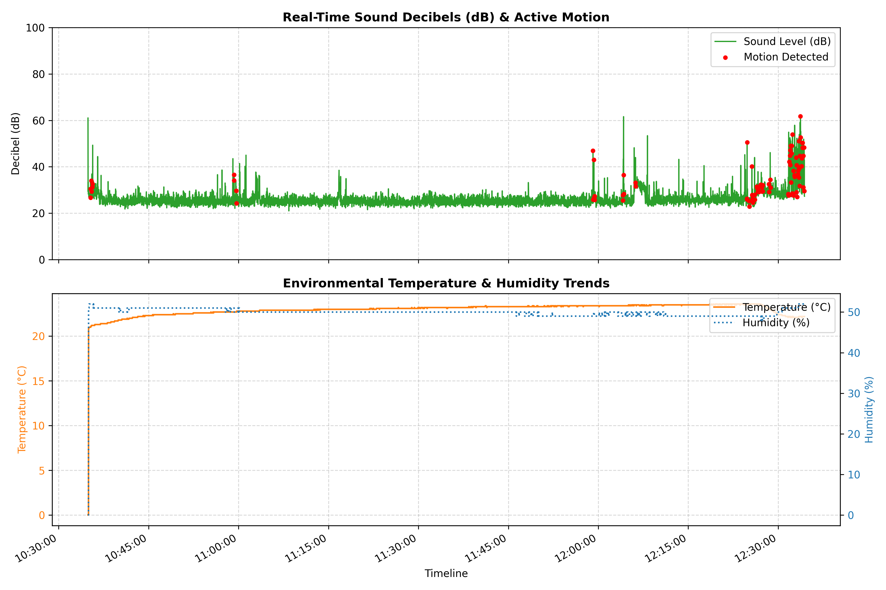

수집 기간: 2026-05-30 10:34:54 ~ 2026-05-30 12:34:23 (총 1시간 59분 29초)

| Timestamp | Temperature | Humidity | Motion | Sound RMS | Sound dB | Acoustic Category | BLE Count | Occupancy Status |
|---|---|---|---|---|---|---|---|---|
| 2026-05-30 10:34:54 | 0.0 °C | 0.0 % | NO | 0.011278 | 61.0 dB | Unknown | 0.0 | Vacant |
| 2026-05-30 10:34:55 | 0.0 °C | 0.0 % | NO | 0.000293 | 29.3 dB | Unknown | 0.0 | Vacant |
| 2026-05-30 10:34:56 | 0.0 °C | 0.0 % | NO | 0.000468 | 33.4 dB | Unknown | 0.0 | Vacant |
| 2026-05-30 10:34:57 | 0.0 °C | 0.0 % | NO | 0.000333 | 30.4 dB | Unknown | 2.7 | Static Low (Quiet Study) |
| 2026-05-30 10:34:58 | 0.0 °C | 0.0 % | NO | 0.000256 | 28.2 dB | Active Discussion | 2.7 | Static Low (Quiet Study) |
| 2026-05-30 10:34:59 | 0.0 °C | 0.0 % | NO | 0.000322 | 30.2 dB | Active Discussion | 2.7 | Static Low (Quiet Study) |
| 2026-05-30 10:35:00 | 20.9 °C | 51.0 % | NO | 0.000332 | 30.4 dB | Active Discussion | 2.3 | Static Low (Quiet Study) |
| 2026-05-30 10:35:01 | 20.9 °C | 51.0 % | NO | 0.000259 | 28.3 dB | Active Discussion | 2.3 | Static Low (Quiet Study) |
| 2026-05-30 10:35:03 | 20.9 °C | 51.0 % | NO | 0.000220 | 26.9 dB | Active Discussion | 2.3 | Static Low (Quiet Study) |
| 2026-05-30 10:35:04 | 20.9 °C | 51.0 % | NO | 0.000256 | 28.2 dB | Active Discussion | 3.0 | Static Low (Quiet Study) |
| 2026-05-30 10:35:05 | 21.0 °C | 52.0 % | NO | 0.000245 | 27.8 dB | Deep Focus | 3.0 | Static Low (Quiet Study) |
| 2026-05-30 10:35:06 | 21.0 °C | 52.0 % | NO | 0.000265 | 28.5 dB | Deep Focus | 3.7 | Static Low (Quiet Study) |
| 2026-05-30 10:35:07 | 21.0 °C | 52.0 % | NO | 0.000270 | 28.6 dB | Deep Focus | 3.7 | Static Low (Quiet Study) |
| 2026-05-30 10:35:08 | 21.0 °C | 52.0 % | NO | 0.000205 | 26.2 dB | Deep Focus | 3.7 | Static Low (Quiet Study) |
| 2026-05-30 10:35:09 | 21.0 °C | 52.0 % | NO | 0.000248 | 27.9 dB | Deep Focus | 2.6 | Static Low (Quiet Study) |
| 2026-05-30 10:35:10 | 21.0 °C | 52.0 % | NO | 0.000229 | 27.2 dB | Deep Focus | 2.6 | Static Low (Quiet Study) |
| 2026-05-30 10:35:11 | 21.0 °C | 52.0 % | NO | 0.000253 | 28.1 dB | Deep Focus | 2.6 | Static Low (Quiet Study) |
| 2026-05-30 10:35:13 | 21.0 °C | 52.0 % | NO | 0.000237 | 27.5 dB | Deep Focus | 2.7 | Static Low (Quiet Study) |
| 2026-05-30 10:35:14 | 21.0 °C | 52.0 % | NO | 0.000266 | 28.5 dB | Deep Focus | 2.7 | Static Low (Quiet Study) |
| 2026-05-30 10:35:15 | 21.0 °C | 52.0 % | NO | 0.000235 | 27.4 dB | Deep Focus | 2.3 | Static Low (Quiet Study) |
| 2026-05-30 10:35:16 | 21.0 °C | 52.0 % | NO | 0.000203 | 26.2 dB | Deep Focus | 2.3 | Static Low (Quiet Study) |
| 2026-05-30 10:35:17 | 21.0 °C | 52.0 % | NO | 0.000255 | 28.1 dB | Deep Focus | 2.3 | Static Low (Quiet Study) |
| 2026-05-30 10:35:18 | 21.0 °C | 52.0 % | NO | 0.000232 | 27.3 dB | Deep Focus | 2.0 | Static Low (Quiet Study) |
| 2026-05-30 10:35:19 | 21.0 °C | 52.0 % | NO | 0.000481 | 33.7 dB | Deep Focus | 2.0 | Static Low (Quiet Study) |
| 2026-05-30 10:35:20 | 21.0 °C | 52.0 % | YES | 0.000216 | 26.7 dB | Deep Focus | 2.0 | Dynamic Low |
| 2026-05-30 10:35:21 | 21.0 °C | 52.0 % | YES | 0.000337 | 30.5 dB | Deep Focus | 3.3 | Dynamic Low |
| 2026-05-30 10:35:22 | 21.1 °C | 52.0 % | NO | 0.000282 | 29.0 dB | Deep Focus | 3.3 | Dynamic Low |
| 2026-05-30 10:35:24 | 21.1 °C | 52.0 % | NO | 0.000209 | 26.4 dB | Deep Focus | 3.3 | Dynamic Low |
| 2026-05-30 10:35:25 | 21.1 °C | 52.0 % | NO | 0.000443 | 32.9 dB | Deep Focus | 3.3 | Dynamic Low |
| 2026-05-30 10:35:26 | 21.1 °C | 52.0 % | NO | 0.000267 | 28.5 dB | Deep Focus | 3.3 | Dynamic Low |
| 2026-05-30 10:35:27 | 21.1 °C | 52.0 % | NO | 0.000284 | 29.1 dB | Deep Focus | 3.3 | Dynamic Low |
| 2026-05-30 10:35:28 | 21.1 °C | 52.0 % | YES | 0.000502 | 34.0 dB | Deep Focus | 3.3 | Dynamic Low |
| 2026-05-30 10:35:29 | 21.2 °C | 52.0 % | YES | 0.000297 | 29.4 dB | Deep Focus | 3.3 | Dynamic Low |
| 2026-05-30 10:35:30 | 21.2 °C | 52.0 % | NO | 0.000326 | 30.3 dB | Deep Focus | 3.0 | Dynamic Low |
| 2026-05-30 10:35:31 | 21.2 °C | 52.0 % | NO | 0.000236 | 27.5 dB | Deep Focus | 3.0 | Dynamic Low |
| 2026-05-30 10:35:32 | 21.2 °C | 52.0 % | NO | 0.000654 | 36.3 dB | Deep Focus | 3.0 | Dynamic Low |
| 2026-05-30 10:35:33 | 21.2 °C | 52.0 % | NO | 0.000700 | 36.9 dB | Deep Focus | 3.7 | Dynamic Low |
| 2026-05-30 10:35:35 | 21.2 °C | 52.0 % | NO | 0.000261 | 28.3 dB | Deep Focus | 3.7 | Dynamic Low |
| 2026-05-30 10:35:36 | 21.2 °C | 52.0 % | NO | 0.000260 | 28.3 dB | Deep Focus | 3.7 | Dynamic Low |
| 2026-05-30 10:35:37 | 21.2 °C | 52.0 % | NO | 0.000229 | 27.2 dB | Deep Focus | 4.4 | Dynamic High (Active Area) |
| 2026-05-30 10:35:38 | 21.2 °C | 52.0 % | YES | 0.000366 | 31.3 dB | Deep Focus | 4.4 | Dynamic High (Active Area) |
| 2026-05-30 10:35:39 | 21.2 °C | 52.0 % | YES | 0.000428 | 32.6 dB | Deep Focus | 2.7 | Dynamic Low |
| 2026-05-30 10:35:40 | 21.2 °C | 52.0 % | NO | 0.000232 | 27.3 dB | Deep Focus | 2.7 | Dynamic Low |
| 2026-05-30 10:35:41 | 21.2 °C | 52.0 % | NO | 0.002919 | 49.3 dB | Deep Focus | 2.7 | Dynamic Low |
| 2026-05-30 10:35:42 | 21.2 °C | 52.0 % | NO | 0.000251 | 28.0 dB | Deep Focus | 3.0 | Dynamic Low |
| 2026-05-30 10:35:43 | 21.2 °C | 52.0 % | NO | 0.000292 | 29.3 dB | Deep Focus | 3.0 | Dynamic Low |
| 2026-05-30 10:35:44 | 21.2 °C | 52.0 % | NO | 0.000270 | 28.6 dB | Deep Focus | 3.0 | Dynamic Low |
| 2026-05-30 10:35:46 | 21.2 °C | 52.0 % | NO | 0.000220 | 26.8 dB | Deep Focus | 2.6 | Dynamic Low |
| 2026-05-30 10:35:47 | 21.2 °C | 51.0 % | NO | 0.000489 | 33.8 dB | Deep Focus | 2.6 | Dynamic Low |
| 2026-05-30 10:35:48 | 21.2 °C | 51.0 % | NO | 0.000308 | 29.8 dB | Deep Focus | 2.6 | Dynamic Low |
| 2026-05-30 10:35:49 | 21.2 °C | 52.0 % | NO | 0.000354 | 31.0 dB | Deep Focus | 2.0 | Dynamic Low |
| 2026-05-30 10:35:50 | 21.2 °C | 52.0 % | NO | 0.000266 | 28.5 dB | Deep Focus | 2.0 | Static Low (Quiet Study) |
| 2026-05-30 10:35:51 | 21.2 °C | 51.0 % | NO | 0.000260 | 28.3 dB | Deep Focus | 3.0 | Static Low (Quiet Study) |
| 2026-05-30 10:35:52 | 21.2 °C | 51.0 % | NO | 0.000297 | 29.4 dB | Deep Focus | 3.0 | Static Low (Quiet Study) |
| 2026-05-30 10:35:53 | 21.2 °C | 51.0 % | NO | 0.000392 | 31.9 dB | Deep Focus | 3.0 | Static Low (Quiet Study) |
| 2026-05-30 10:35:54 | 21.2 °C | 51.0 % | NO | 0.000355 | 31.0 dB | Deep Focus | 2.7 | Static Low (Quiet Study) |
| 2026-05-30 10:35:55 | 21.2 °C | 51.0 % | NO | 0.000204 | 26.2 dB | Deep Focus | 2.7 | Static Low (Quiet Study) |
| 2026-05-30 10:35:57 | 21.2 °C | 51.0 % | NO | 0.000310 | 29.8 dB | Deep Focus | 2.7 | Static Low (Quiet Study) |
| 2026-05-30 10:35:58 | 21.2 °C | 51.0 % | NO | 0.000315 | 30.0 dB | Deep Focus | 2.0 | Static Low (Quiet Study) |
| 2026-05-30 10:35:59 | 21.2 °C | 51.0 % | NO | 0.000307 | 29.8 dB | Deep Focus | 2.0 | Static Low (Quiet Study) |
| 2026-05-30 10:36:00 | 21.2 °C | 51.0 % | NO | 0.000241 | 27.6 dB | Deep Focus | 2.3 | Static Low (Quiet Study) |
| 2026-05-30 10:36:01 | 21.2 °C | 51.0 % | NO | 0.000347 | 30.8 dB | Deep Focus | 2.3 | Static Low (Quiet Study) |
| 2026-05-30 10:36:02 | 21.3 °C | 51.0 % | NO | 0.000402 | 32.1 dB | Deep Focus | 2.3 | Static Low (Quiet Study) |
| 2026-05-30 10:36:03 | 21.3 °C | 51.0 % | NO | 0.000246 | 27.8 dB | Deep Focus | 3.0 | Static Low (Quiet Study) |
| 2026-05-30 10:36:04 | 21.3 °C | 51.0 % | NO | 0.000304 | 29.6 dB | Deep Focus | 3.0 | Static Low (Quiet Study) |
| 2026-05-30 10:36:05 | 21.3 °C | 51.0 % | NO | 0.000248 | 27.9 dB | Deep Focus | 3.0 | Static Low (Quiet Study) |
| 2026-05-30 10:36:07 | 21.3 °C | 51.0 % | NO | 0.000252 | 28.0 dB | Deep Focus | 2.0 | Static Low (Quiet Study) |
| 2026-05-30 10:36:08 | 21.3 °C | 51.0 % | NO | 0.000305 | 29.7 dB | Deep Focus | 2.0 | Static Low (Quiet Study) |
| 2026-05-30 10:36:09 | 21.3 °C | 51.0 % | NO | 0.000436 | 32.8 dB | Deep Focus | 2.0 | Static Low (Quiet Study) |
| 2026-05-30 10:36:10 | 21.3 °C | 51.0 % | NO | 0.000231 | 27.3 dB | Deep Focus | 2.6 | Static Low (Quiet Study) |
| 2026-05-30 10:36:11 | 21.3 °C | 51.0 % | NO | 0.000389 | 31.8 dB | Deep Focus | 2.6 | Static Low (Quiet Study) |
| 2026-05-30 10:36:12 | 21.3 °C | 51.0 % | NO | 0.000426 | 32.6 dB | Deep Focus | 2.4 | Static Low (Quiet Study) |
| 2026-05-30 10:36:13 | 21.3 °C | 51.0 % | NO | 0.000277 | 28.8 dB | Deep Focus | 2.4 | Static Low (Quiet Study) |
| 2026-05-30 10:36:14 | 21.3 °C | 51.0 % | NO | 0.000364 | 31.2 dB | Deep Focus | 2.4 | Static Low (Quiet Study) |
| 2026-05-30 10:36:15 | 21.3 °C | 51.0 % | NO | 0.000275 | 28.8 dB | Deep Focus | 3.3 | Static Low (Quiet Study) |
| 2026-05-30 10:36:16 | 21.3 °C | 51.0 % | NO | 0.000339 | 30.6 dB | Deep Focus | 3.3 | Static Low (Quiet Study) |
| 2026-05-30 10:36:18 | 21.3 °C | 51.0 % | NO | 0.000268 | 28.6 dB | Deep Focus | 3.3 | Static Low (Quiet Study) |
| 2026-05-30 10:36:19 | 21.3 °C | 51.0 % | NO | 0.000199 | 26.0 dB | Deep Focus | 2.0 | Static Low (Quiet Study) |
| 2026-05-30 10:36:20 | 21.3 °C | 51.0 % | NO | 0.000275 | 28.8 dB | Deep Focus | 2.0 | Static Low (Quiet Study) |
| 2026-05-30 10:36:21 | 21.3 °C | 51.0 % | NO | 0.000235 | 27.4 dB | Deep Focus | 2.0 | Static Low (Quiet Study) |
| 2026-05-30 10:36:22 | 21.3 °C | 51.0 % | NO | 0.000215 | 26.6 dB | Deep Focus | 2.3 | Static Low (Quiet Study) |
| 2026-05-30 10:36:23 | 21.3 °C | 51.0 % | NO | 0.000263 | 28.4 dB | Deep Focus | 2.3 | Static Low (Quiet Study) |
| 2026-05-30 10:36:24 | 21.3 °C | 51.0 % | NO | 0.000247 | 27.9 dB | Deep Focus | 1.9 | Static Low (Quiet Study) |
| 2026-05-30 10:36:25 | 21.3 °C | 51.0 % | NO | 0.000264 | 28.4 dB | Deep Focus | 1.9 | Static Low (Quiet Study) |
| 2026-05-30 10:36:26 | 21.3 °C | 51.0 % | NO | 0.000282 | 29.0 dB | Deep Focus | 1.9 | Static Low (Quiet Study) |
| 2026-05-30 10:36:27 | 21.3 °C | 51.0 % | NO | 0.000254 | 28.1 dB | Deep Focus | 2.7 | Static Low (Quiet Study) |
| 2026-05-30 10:36:29 | 21.3 °C | 51.0 % | NO | 0.000445 | 33.0 dB | Deep Focus | 2.7 | Static Low (Quiet Study) |
| 2026-05-30 10:36:30 | 21.3 °C | 51.0 % | NO | 0.000275 | 28.8 dB | Deep Focus | 2.7 | Static Low (Quiet Study) |
| 2026-05-30 10:36:31 | 21.3 °C | 51.0 % | NO | 0.001661 | 44.4 dB | Deep Focus | 2.6 | Static Low (Quiet Study) |
| 2026-05-30 10:36:32 | 21.3 °C | 51.0 % | NO | 0.000564 | 35.0 dB | Deep Focus | 2.6 | Static Low (Quiet Study) |
| 2026-05-30 10:36:33 | 21.3 °C | 51.0 % | NO | 0.000301 | 29.6 dB | Deep Focus | 2.6 | Static Low (Quiet Study) |
| 2026-05-30 10:36:34 | 21.3 °C | 51.0 % | NO | 0.000375 | 31.5 dB | Deep Focus | 1.7 | Static Low (Quiet Study) |
| 2026-05-30 10:36:35 | 21.3 °C | 51.0 % | NO | 0.000315 | 30.0 dB | Deep Focus | 1.7 | Static Low (Quiet Study) |
| 2026-05-30 10:36:36 | 21.3 °C | 51.0 % | NO | 0.000312 | 29.9 dB | Deep Focus | 2.7 | Static Low (Quiet Study) |
| 2026-05-30 10:36:37 | 21.3 °C | 51.0 % | NO | 0.000319 | 30.1 dB | Deep Focus | 2.7 | Static Low (Quiet Study) |
| 2026-05-30 10:36:38 | 21.3 °C | 51.0 % | NO | 0.000306 | 29.7 dB | Deep Focus | 2.7 | Static Low (Quiet Study) |
| 2026-05-30 10:36:40 | 21.3 °C | 51.0 % | NO | 0.000280 | 28.9 dB | Deep Focus | 1.0 | Vacant |
| 2026-05-30 10:36:41 | 21.3 °C | 51.0 % | NO | 0.000255 | 28.1 dB | Deep Focus | 1.0 | Vacant |
| 2026-05-30 10:36:42 | 21.3 °C | 51.0 % | NO | 0.000322 | 30.2 dB | Deep Focus | 1.0 | Vacant |
| 2026-05-30 10:36:43 | 21.3 °C | 51.0 % | NO | 0.000216 | 26.7 dB | Deep Focus | 2.0 | Static Low (Quiet Study) |
| 2026-05-30 10:36:44 | 21.3 °C | 51.0 % | NO | 0.000211 | 26.5 dB | Deep Focus | 2.0 | Static Low (Quiet Study) |
| 2026-05-30 10:36:45 | 21.3 °C | 51.0 % | NO | 0.000276 | 28.8 dB | Deep Focus | 2.6 | Static Low (Quiet Study) |
| 2026-05-30 10:36:46 | 21.3 °C | 51.0 % | NO | 0.000274 | 28.7 dB | Deep Focus | 2.6 | Static Low (Quiet Study) |
| 2026-05-30 10:36:47 | 21.3 °C | 51.0 % | NO | 0.000253 | 28.0 dB | Deep Focus | 2.6 | Static Low (Quiet Study) |
| 2026-05-30 10:36:48 | 21.3 °C | 51.0 % | NO | 0.000235 | 27.4 dB | Deep Focus | 2.4 | Static Low (Quiet Study) |
| 2026-05-30 10:36:49 | 21.3 °C | 51.0 % | NO | 0.000183 | 25.2 dB | Deep Focus | 2.4 | Static Low (Quiet Study) |
| 2026-05-30 10:36:51 | 21.3 °C | 51.0 % | NO | 0.000155 | 23.8 dB | Deep Focus | 2.4 | Static Low (Quiet Study) |
| 2026-05-30 10:36:52 | 21.3 °C | 51.0 % | NO | 0.000234 | 27.4 dB | Deep Focus | 2.4 | Static Low (Quiet Study) |
| 2026-05-30 10:36:53 | 21.3 °C | 51.0 % | NO | 0.000216 | 26.7 dB | Deep Focus | 2.4 | Static Low (Quiet Study) |
| 2026-05-30 10:36:54 | 21.3 °C | 51.0 % | NO | 0.000169 | 24.6 dB | Deep Focus | 2.4 | Static Low (Quiet Study) |
| 2026-05-30 10:36:55 | 21.3 °C | 51.0 % | NO | 0.000156 | 23.9 dB | Deep Focus | 2.1 | Static Low (Quiet Study) |
| 2026-05-30 10:36:56 | 21.3 °C | 51.0 % | NO | 0.000191 | 25.6 dB | Deep Focus | 2.1 | Static Low (Quiet Study) |
| 2026-05-30 10:36:57 | 21.3 °C | 51.0 % | NO | 0.000244 | 27.8 dB | Deep Focus | 2.4 | Static Low (Quiet Study) |
| 2026-05-30 10:36:58 | 21.3 °C | 51.0 % | NO | 0.000159 | 24.0 dB | Deep Focus | 2.4 | Static Low (Quiet Study) |
| 2026-05-30 10:36:59 | 21.4 °C | 51.0 % | NO | 0.000203 | 26.1 dB | Deep Focus | 2.4 | Static Low (Quiet Study) |
| 2026-05-30 10:37:01 | 21.4 °C | 51.0 % | NO | 0.000321 | 30.1 dB | Deep Focus | 1.8 | Static Low (Quiet Study) |
| 2026-05-30 10:37:02 | 21.4 °C | 51.0 % | NO | 0.000198 | 25.9 dB | Deep Focus | 1.8 | Static Low (Quiet Study) |
| 2026-05-30 10:37:03 | 21.4 °C | 51.0 % | NO | 0.000247 | 27.8 dB | Deep Focus | 1.8 | Static Low (Quiet Study) |
| 2026-05-30 10:37:04 | 21.4 °C | 51.0 % | NO | 0.000227 | 27.1 dB | Deep Focus | 1.8 | Static Low (Quiet Study) |
| 2026-05-30 10:37:05 | 21.4 °C | 51.0 % | NO | 0.000655 | 36.3 dB | Deep Focus | 1.8 | Static Low (Quiet Study) |
| 2026-05-30 10:37:06 | 21.4 °C | 51.0 % | NO | 0.000220 | 26.9 dB | Deep Focus | 1.8 | Static Low (Quiet Study) |
| 2026-05-30 10:37:07 | 21.4 °C | 51.0 % | NO | 0.000249 | 27.9 dB | Deep Focus | 1.5 | Static Low (Quiet Study) |
| 2026-05-30 10:37:08 | 21.4 °C | 51.0 % | NO | 0.000242 | 27.7 dB | Deep Focus | 1.5 | Static Low (Quiet Study) |
| 2026-05-30 10:37:09 | 21.4 °C | 51.0 % | NO | 0.000303 | 29.6 dB | Deep Focus | 1.8 | Static Low (Quiet Study) |
| 2026-05-30 10:37:10 | 21.4 °C | 51.0 % | NO | 0.000208 | 26.4 dB | Deep Focus | 1.8 | Static Low (Quiet Study) |
| 2026-05-30 10:37:12 | 21.4 °C | 51.0 % | NO | 0.000272 | 28.7 dB | Deep Focus | 1.8 | Static Low (Quiet Study) |
| 2026-05-30 10:37:13 | 21.4 °C | 51.0 % | NO | 0.000237 | 27.5 dB | Deep Focus | 1.4 | Static Low (Quiet Study) |
| 2026-05-30 10:37:14 | 21.4 °C | 51.0 % | NO | 0.000215 | 26.6 dB | Deep Focus | 1.4 | Static Low (Quiet Study) |
| 2026-05-30 10:37:15 | 21.4 °C | 51.0 % | NO | 0.000216 | 26.7 dB | Deep Focus | 1.4 | Static Low (Quiet Study) |
| 2026-05-30 10:37:16 | 21.4 °C | 51.0 % | NO | 0.000207 | 26.3 dB | Deep Focus | 1.4 | Static Low (Quiet Study) |
| 2026-05-30 10:37:17 | 21.4 °C | 51.0 % | NO | 0.000158 | 23.9 dB | Deep Focus | 1.4 | Static Low (Quiet Study) |
| 2026-05-30 10:37:18 | 21.4 °C | 51.0 % | NO | 0.000208 | 26.4 dB | Deep Focus | 1.4 | Static Low (Quiet Study) |
| 2026-05-30 10:37:19 | 21.4 °C | 51.0 % | NO | 0.000176 | 24.9 dB | Deep Focus | 1.4 | Static Low (Quiet Study) |
| 2026-05-30 10:37:20 | 21.4 °C | 51.0 % | NO | 0.000178 | 25.0 dB | Deep Focus | 1.4 | Static Low (Quiet Study) |
| 2026-05-30 10:37:21 | 21.4 °C | 51.0 % | NO | 0.000172 | 24.7 dB | Deep Focus | 1.7 | Static Low (Quiet Study) |
| 2026-05-30 10:37:23 | 21.4 °C | 51.0 % | NO | 0.000164 | 24.3 dB | Deep Focus | 1.7 | Static Low (Quiet Study) |
| 2026-05-30 10:37:24 | 21.4 °C | 51.0 % | NO | 0.000152 | 23.7 dB | Deep Focus | 1.7 | Static Low (Quiet Study) |
| 2026-05-30 10:37:25 | 21.4 °C | 51.0 % | NO | 0.000234 | 27.4 dB | Deep Focus | 1.7 | Static Low (Quiet Study) |
| 2026-05-30 10:37:26 | 21.4 °C | 51.0 % | NO | 0.000174 | 24.8 dB | Deep Focus | 1.7 | Static Low (Quiet Study) |
| 2026-05-30 10:37:27 | 21.4 °C | 51.0 % | NO | 0.000166 | 24.4 dB | Deep Focus | 1.7 | Static Low (Quiet Study) |
| 2026-05-30 10:37:28 | 21.4 °C | 51.0 % | NO | 0.000180 | 25.1 dB | Deep Focus | 1.7 | Static Low (Quiet Study) |
| 2026-05-30 10:37:29 | 21.4 °C | 51.0 % | NO | 0.000155 | 23.8 dB | Deep Focus | 1.7 | Static Low (Quiet Study) |
| 2026-05-30 10:37:30 | 21.4 °C | 51.0 % | NO | 0.000216 | 26.7 dB | Deep Focus | 1.7 | Static Low (Quiet Study) |
| 2026-05-30 10:37:31 | 21.4 °C | 51.0 % | NO | 0.000174 | 24.8 dB | Deep Focus | 1.7 | Static Low (Quiet Study) |
| 2026-05-30 10:37:32 | 21.4 °C | 51.0 % | NO | 0.000190 | 25.6 dB | Deep Focus | 1.7 | Static Low (Quiet Study) |
| 2026-05-30 10:37:34 | 21.4 °C | 51.0 % | NO | 0.000201 | 26.1 dB | Deep Focus | 1.7 | Static Low (Quiet Study) |
| 2026-05-30 10:37:35 | 21.4 °C | 51.0 % | NO | 0.000164 | 24.3 dB | Deep Focus | 1.7 | Static Low (Quiet Study) |
| 2026-05-30 10:37:36 | 21.4 °C | 51.0 % | NO | 0.000185 | 25.3 dB | Deep Focus | 1.7 | Static Low (Quiet Study) |
| 2026-05-30 10:37:37 | 21.4 °C | 51.0 % | NO | 0.000226 | 27.1 dB | Deep Focus | 1.4 | Static Low (Quiet Study) |
| 2026-05-30 10:37:38 | 21.4 °C | 51.0 % | NO | 0.000195 | 25.8 dB | Deep Focus | 1.4 | Static Low (Quiet Study) |
| 2026-05-30 10:37:39 | 21.4 °C | 51.0 % | NO | 0.000218 | 26.8 dB | Deep Focus | 1.4 | Static Low (Quiet Study) |
| 2026-05-30 10:37:40 | 21.4 °C | 51.0 % | NO | 0.000201 | 26.1 dB | Deep Focus | 1.7 | Static Low (Quiet Study) |
| 2026-05-30 10:37:41 | 21.4 °C | 51.0 % | NO | 0.000210 | 26.4 dB | Deep Focus | 1.7 | Static Low (Quiet Study) |
| 2026-05-30 10:37:42 | 21.4 °C | 51.0 % | NO | 0.000172 | 24.7 dB | Deep Focus | 1.7 | Static Low (Quiet Study) |
| 2026-05-30 10:37:43 | 21.4 °C | 51.0 % | NO | 0.000180 | 25.1 dB | Deep Focus | 1.7 | Static Low (Quiet Study) |
| 2026-05-30 10:37:45 | 21.4 °C | 51.0 % | NO | 0.000153 | 23.7 dB | Deep Focus | 1.7 | Static Low (Quiet Study) |
| 2026-05-30 10:37:46 | 21.4 °C | 51.0 % | NO | 0.000161 | 24.1 dB | Deep Focus | 1.4 | Static Low (Quiet Study) |
| 2026-05-30 10:37:47 | 21.4 °C | 51.0 % | NO | 0.000177 | 24.9 dB | Deep Focus | 1.4 | Static Low (Quiet Study) |
| 2026-05-30 10:37:48 | 21.4 °C | 51.0 % | NO | 0.000142 | 23.1 dB | Deep Focus | 1.4 | Static Low (Quiet Study) |
| 2026-05-30 10:37:49 | 21.4 °C | 51.0 % | NO | 0.000186 | 25.4 dB | Deep Focus | 1.7 | Static Low (Quiet Study) |
| 2026-05-30 10:37:50 | 21.4 °C | 51.0 % | NO | 0.000182 | 25.2 dB | Deep Focus | 1.7 | Static Low (Quiet Study) |
| 2026-05-30 10:37:51 | 21.4 °C | 51.0 % | NO | 0.000170 | 24.6 dB | Deep Focus | 1.7 | Static Low (Quiet Study) |
| 2026-05-30 10:37:52 | 21.4 °C | 51.0 % | NO | 0.000154 | 23.7 dB | Deep Focus | 2.0 | Static Low (Quiet Study) |
| 2026-05-30 10:37:53 | 21.4 °C | 51.0 % | NO | 0.000163 | 24.2 dB | Deep Focus | 2.0 | Static Low (Quiet Study) |
| 2026-05-30 10:37:55 | 21.4 °C | 51.0 % | NO | 0.000229 | 27.2 dB | Deep Focus | 1.0 | Vacant |
| 2026-05-30 10:37:56 | 21.4 °C | 51.0 % | NO | 0.000245 | 27.8 dB | Deep Focus | 1.0 | Vacant |
| 2026-05-30 10:37:57 | 21.4 °C | 51.0 % | NO | 0.000202 | 26.1 dB | Deep Focus | 1.0 | Vacant |
| 2026-05-30 10:37:58 | 21.4 °C | 51.0 % | NO | 0.000160 | 24.1 dB | Deep Focus | 1.4 | Static Low (Quiet Study) |
| 2026-05-30 10:37:59 | 21.4 °C | 51.0 % | NO | 0.000185 | 25.3 dB | Deep Focus | 1.4 | Static Low (Quiet Study) |
| 2026-05-30 10:38:00 | 21.4 °C | 51.0 % | NO | 0.000181 | 25.1 dB | Deep Focus | 1.4 | Static Low (Quiet Study) |
| 2026-05-30 10:38:01 | 21.4 °C | 51.0 % | NO | 0.000183 | 25.2 dB | Deep Focus | 1.7 | Static Low (Quiet Study) |
| 2026-05-30 10:38:02 | 21.4 °C | 51.0 % | NO | 0.000177 | 24.9 dB | Deep Focus | 1.7 | Static Low (Quiet Study) |
| 2026-05-30 10:38:03 | 21.4 °C | 51.0 % | NO | 0.000209 | 26.4 dB | Deep Focus | 1.7 | Static Low (Quiet Study) |
| 2026-05-30 10:38:04 | 21.4 °C | 51.0 % | NO | 0.000158 | 24.0 dB | Deep Focus | 1.7 | Static Low (Quiet Study) |
| 2026-05-30 10:38:06 | 21.4 °C | 51.0 % | NO | 0.000178 | 25.0 dB | Deep Focus | 1.7 | Static Low (Quiet Study) |
| 2026-05-30 10:38:07 | 21.4 °C | 51.0 % | NO | 0.000155 | 23.8 dB | Deep Focus | 1.7 | Static Low (Quiet Study) |
| 2026-05-30 10:38:08 | 21.5 °C | 51.0 % | NO | 0.000177 | 24.9 dB | Deep Focus | 1.7 | Static Low (Quiet Study) |
| 2026-05-30 10:38:09 | 21.5 °C | 51.0 % | NO | 0.000151 | 23.6 dB | Deep Focus | 1.7 | Static Low (Quiet Study) |
| 2026-05-30 10:38:10 | 21.5 °C | 51.0 % | NO | 0.000187 | 25.5 dB | Deep Focus | 2.0 | Static Low (Quiet Study) |
| 2026-05-30 10:38:11 | 21.5 °C | 51.0 % | NO | 0.000175 | 24.8 dB | Deep Focus | 2.0 | Static Low (Quiet Study) |
| 2026-05-30 10:38:12 | 21.5 °C | 51.0 % | NO | 0.000194 | 25.8 dB | Deep Focus | 2.0 | Static Low (Quiet Study) |
| 2026-05-30 10:38:13 | 21.5 °C | 51.0 % | NO | 0.000225 | 27.0 dB | Deep Focus | 1.7 | Static Low (Quiet Study) |
| 2026-05-30 10:38:14 | 21.5 °C | 51.0 % | NO | 0.000173 | 24.7 dB | Deep Focus | 1.7 | Static Low (Quiet Study) |
| 2026-05-30 10:38:15 | 21.5 °C | 51.0 % | NO | 0.000480 | 33.6 dB | Deep Focus | 1.7 | Static Low (Quiet Study) |
| 2026-05-30 10:38:17 | 21.5 °C | 51.0 % | NO | 0.000208 | 26.4 dB | Deep Focus | 1.7 | Static Low (Quiet Study) |
| 2026-05-30 10:38:18 | 21.5 °C | 51.0 % | NO | 0.000248 | 27.9 dB | Deep Focus | 1.7 | Static Low (Quiet Study) |
| 2026-05-30 10:38:19 | 21.5 °C | 51.0 % | NO | 0.000200 | 26.0 dB | Deep Focus | 1.7 | Static Low (Quiet Study) |
| 2026-05-30 10:38:20 | 21.5 °C | 51.0 % | NO | 0.000191 | 25.6 dB | Deep Focus | 1.7 | Static Low (Quiet Study) |
| 2026-05-30 10:38:21 | 21.5 °C | 51.0 % | NO | 0.000204 | 26.2 dB | Deep Focus | 1.7 | Static Low (Quiet Study) |
| 2026-05-30 10:38:22 | 21.5 °C | 51.0 % | NO | 0.000190 | 25.6 dB | Deep Focus | 1.7 | Static Low (Quiet Study) |
| 2026-05-30 10:38:23 | 21.5 °C | 51.0 % | NO | 0.000187 | 25.4 dB | Deep Focus | 1.7 | Static Low (Quiet Study) |
| 2026-05-30 10:38:24 | 21.5 °C | 51.0 % | NO | 0.000233 | 27.4 dB | Deep Focus | 1.7 | Static Low (Quiet Study) |
| 2026-05-30 10:38:25 | 21.5 °C | 51.0 % | NO | 0.000206 | 26.3 dB | Deep Focus | 1.7 | Static Low (Quiet Study) |
| 2026-05-30 10:38:26 | 21.5 °C | 51.0 % | NO | 0.000175 | 24.8 dB | Deep Focus | 1.7 | Static Low (Quiet Study) |
| 2026-05-30 10:38:28 | 21.5 °C | 51.0 % | NO | 0.000189 | 25.5 dB | Deep Focus | 1.4 | Static Low (Quiet Study) |
| 2026-05-30 10:38:29 | 21.5 °C | 51.0 % | NO | 0.000209 | 26.4 dB | Deep Focus | 1.4 | Static Low (Quiet Study) |
| 2026-05-30 10:38:30 | 21.5 °C | 51.0 % | NO | 0.000310 | 29.8 dB | Deep Focus | 1.4 | Static Low (Quiet Study) |
| 2026-05-30 10:38:31 | 21.5 °C | 51.0 % | NO | 0.000157 | 23.9 dB | Deep Focus | 1.7 | Static Low (Quiet Study) |
| 2026-05-30 10:38:32 | 21.5 °C | 51.0 % | NO | 0.000218 | 26.8 dB | Deep Focus | 1.7 | Static Low (Quiet Study) |
| 2026-05-30 10:38:33 | 21.5 °C | 51.0 % | NO | 0.000211 | 26.5 dB | Deep Focus | 1.7 | Static Low (Quiet Study) |
| 2026-05-30 10:38:34 | 21.5 °C | 51.0 % | NO | 0.000207 | 26.3 dB | Deep Focus | 1.4 | Static Low (Quiet Study) |
| 2026-05-30 10:38:35 | 21.5 °C | 51.0 % | NO | 0.000201 | 26.1 dB | Deep Focus | 1.4 | Static Low (Quiet Study) |
| 2026-05-30 10:38:36 | 21.5 °C | 51.0 % | NO | 0.000234 | 27.4 dB | Deep Focus | 1.4 | Static Low (Quiet Study) |
| 2026-05-30 10:38:37 | 21.5 °C | 51.0 % | NO | 0.000189 | 25.5 dB | Deep Focus | 2.0 | Static Low (Quiet Study) |
| 2026-05-30 10:38:39 | 21.5 °C | 51.0 % | NO | 0.000174 | 24.8 dB | Deep Focus | 2.0 | Static Low (Quiet Study) |
| 2026-05-30 10:38:40 | 21.5 °C | 51.0 % | NO | 0.000181 | 25.2 dB | Deep Focus | 1.4 | Static Low (Quiet Study) |
| 2026-05-30 10:38:41 | 21.5 °C | 51.0 % | NO | 0.000184 | 25.3 dB | Deep Focus | 1.4 | Static Low (Quiet Study) |
| 2026-05-30 10:38:42 | 21.5 °C | 51.0 % | NO | 0.000258 | 28.2 dB | Deep Focus | 1.4 | Static Low (Quiet Study) |
| 2026-05-30 10:38:43 | 21.6 °C | 51.0 % | NO | 0.000238 | 27.5 dB | Deep Focus | 1.4 | Static Low (Quiet Study) |
| 2026-05-30 10:38:44 | 21.6 °C | 51.0 % | NO | 0.000199 | 26.0 dB | Deep Focus | 1.4 | Static Low (Quiet Study) |
| 2026-05-30 10:38:45 | 21.6 °C | 51.0 % | NO | 0.000186 | 25.4 dB | Deep Focus | 1.4 | Static Low (Quiet Study) |
| 2026-05-30 10:38:46 | 21.6 °C | 51.0 % | NO | 0.000194 | 25.7 dB | Deep Focus | 2.0 | Static Low (Quiet Study) |
| 2026-05-30 10:38:47 | 21.6 °C | 51.0 % | NO | 0.000217 | 26.7 dB | Deep Focus | 2.0 | Static Low (Quiet Study) |
| 2026-05-30 10:38:49 | 21.6 °C | 51.0 % | NO | 0.000163 | 24.3 dB | Deep Focus | 2.0 | Static Low (Quiet Study) |
| 2026-05-30 10:38:50 | 21.6 °C | 51.0 % | NO | 0.000231 | 27.3 dB | Deep Focus | 1.7 | Static Low (Quiet Study) |
| 2026-05-30 10:38:51 | 21.6 °C | 51.0 % | NO | 0.000154 | 23.7 dB | Deep Focus | 1.7 | Static Low (Quiet Study) |
| 2026-05-30 10:38:52 | 21.6 °C | 51.0 % | NO | 0.000182 | 25.2 dB | Deep Focus | 1.7 | Static Low (Quiet Study) |
| 2026-05-30 10:38:53 | 21.6 °C | 51.0 % | NO | 0.000169 | 24.6 dB | Deep Focus | 1.7 | Static Low (Quiet Study) |
| 2026-05-30 10:38:54 | 21.6 °C | 51.0 % | NO | 0.000194 | 25.7 dB | Deep Focus | 1.7 | Static Low (Quiet Study) |
| 2026-05-30 10:38:55 | 21.6 °C | 51.0 % | NO | 0.000210 | 26.4 dB | Deep Focus | 1.3 | Static Low (Quiet Study) |
| 2026-05-30 10:38:56 | 21.6 °C | 51.0 % | NO | 0.000186 | 25.4 dB | Deep Focus | 1.3 | Static Low (Quiet Study) |
| 2026-05-30 10:38:57 | 21.6 °C | 51.0 % | NO | 0.000162 | 24.2 dB | Deep Focus | 1.3 | Static Low (Quiet Study) |
| 2026-05-30 10:38:58 | 21.6 °C | 51.0 % | NO | 0.000154 | 23.7 dB | Deep Focus | 2.0 | Static Low (Quiet Study) |
| 2026-05-30 10:39:00 | 21.6 °C | 51.0 % | NO | 0.000156 | 23.8 dB | Deep Focus | 2.0 | Static Low (Quiet Study) |
| 2026-05-30 10:39:01 | 21.6 °C | 51.0 % | NO | 0.000196 | 25.9 dB | Deep Focus | 2.0 | Static Low (Quiet Study) |
| 2026-05-30 10:39:02 | 21.6 °C | 51.0 % | NO | 0.000198 | 25.9 dB | Deep Focus | 2.0 | Static Low (Quiet Study) |
| 2026-05-30 10:39:03 | 21.6 °C | 51.0 % | NO | 0.000189 | 25.5 dB | Deep Focus | 2.0 | Static Low (Quiet Study) |
| 2026-05-30 10:39:04 | 21.6 °C | 51.0 % | NO | 0.000195 | 25.8 dB | Deep Focus | 1.7 | Static Low (Quiet Study) |
| 2026-05-30 10:39:05 | 21.6 °C | 51.0 % | NO | 0.000218 | 26.8 dB | Deep Focus | 1.7 | Static Low (Quiet Study) |
| 2026-05-30 10:39:06 | 21.6 °C | 51.0 % | NO | 0.000198 | 26.0 dB | Deep Focus | 1.7 | Static Low (Quiet Study) |
| 2026-05-30 10:39:07 | 21.6 °C | 51.0 % | NO | 0.000171 | 24.7 dB | Deep Focus | 1.4 | Static Low (Quiet Study) |
| 2026-05-30 10:39:08 | 21.6 °C | 51.0 % | NO | 0.000170 | 24.6 dB | Deep Focus | 1.4 | Static Low (Quiet Study) |
| 2026-05-30 10:39:09 | 21.6 °C | 51.0 % | NO | 0.000230 | 27.3 dB | Deep Focus | 1.4 | Static Low (Quiet Study) |
| 2026-05-30 10:39:11 | 21.6 °C | 51.0 % | NO | 0.000222 | 26.9 dB | Deep Focus | 1.0 | Vacant |
| 2026-05-30 10:39:12 | 21.6 °C | 51.0 % | NO | 0.000192 | 25.7 dB | Deep Focus | 1.0 | Vacant |
| 2026-05-30 10:39:13 | 21.6 °C | 51.0 % | NO | 0.000156 | 23.9 dB | Deep Focus | 1.7 | Static Low (Quiet Study) |
| 2026-05-30 10:39:14 | 21.6 °C | 51.0 % | NO | 0.000253 | 28.1 dB | Deep Focus | 1.7 | Static Low (Quiet Study) |
| 2026-05-30 10:39:15 | 21.6 °C | 51.0 % | NO | 0.000176 | 24.9 dB | Deep Focus | 1.7 | Static Low (Quiet Study) |
| 2026-05-30 10:39:16 | 21.6 °C | 51.0 % | NO | 0.000215 | 26.7 dB | Deep Focus | 2.0 | Static Low (Quiet Study) |
| 2026-05-30 10:39:17 | 21.6 °C | 51.0 % | NO | 0.000181 | 25.2 dB | Deep Focus | 2.0 | Static Low (Quiet Study) |
| 2026-05-30 10:39:18 | 21.6 °C | 51.0 % | NO | 0.000180 | 25.1 dB | Deep Focus | 2.0 | Static Low (Quiet Study) |
| 2026-05-30 10:39:19 | 21.6 °C | 51.0 % | NO | 0.000161 | 24.1 dB | Deep Focus | 1.7 | Static Low (Quiet Study) |
| 2026-05-30 10:39:20 | 21.7 °C | 51.0 % | NO | 0.000167 | 24.5 dB | Deep Focus | 1.7 | Static Low (Quiet Study) |
| 2026-05-30 10:39:22 | 21.7 °C | 51.0 % | NO | 0.000155 | 23.8 dB | Deep Focus | 1.7 | Static Low (Quiet Study) |
| 2026-05-30 10:39:23 | 21.7 °C | 51.0 % | NO | 0.000176 | 24.9 dB | Deep Focus | 1.7 | Static Low (Quiet Study) |
| 2026-05-30 10:39:24 | 21.7 °C | 51.0 % | NO | 0.000195 | 25.8 dB | Deep Focus | 1.7 | Static Low (Quiet Study) |
| 2026-05-30 10:39:25 | 21.7 °C | 51.0 % | NO | 0.000155 | 23.8 dB | Deep Focus | 0.7 | Vacant |
| 2026-05-30 10:39:26 | 21.7 °C | 51.0 % | NO | 0.000182 | 25.2 dB | Deep Focus | 0.7 | Vacant |
| 2026-05-30 10:39:27 | 21.7 °C | 51.0 % | NO | 0.000168 | 24.5 dB | Deep Focus | 0.7 | Vacant |
| 2026-05-30 10:39:28 | 21.7 °C | 51.0 % | NO | 0.000259 | 28.3 dB | Deep Focus | 1.7 | Static Low (Quiet Study) |
| 2026-05-30 10:39:29 | 21.7 °C | 51.0 % | NO | 0.000233 | 27.4 dB | Deep Focus | 1.7 | Static Low (Quiet Study) |
| 2026-05-30 10:39:30 | 21.7 °C | 51.0 % | NO | 0.000332 | 30.4 dB | Deep Focus | 1.7 | Static Low (Quiet Study) |
| 2026-05-30 10:39:31 | 21.7 °C | 51.0 % | NO | 0.000204 | 26.2 dB | Deep Focus | 1.7 | Static Low (Quiet Study) |
| 2026-05-30 10:39:33 | 21.7 °C | 51.0 % | NO | 0.000307 | 29.7 dB | Deep Focus | 1.7 | Static Low (Quiet Study) |
| 2026-05-30 10:39:34 | 21.7 °C | 51.0 % | NO | 0.000245 | 27.8 dB | Deep Focus | 1.7 | Static Low (Quiet Study) |
| 2026-05-30 10:39:35 | 21.7 °C | 51.0 % | NO | 0.000161 | 24.1 dB | Deep Focus | 1.7 | Static Low (Quiet Study) |
| 2026-05-30 10:39:36 | 21.7 °C | 51.0 % | NO | 0.000199 | 26.0 dB | Deep Focus | 1.7 | Static Low (Quiet Study) |
| 2026-05-30 10:39:37 | 21.7 °C | 51.0 % | NO | 0.000180 | 25.1 dB | Deep Focus | 1.7 | Static Low (Quiet Study) |
| 2026-05-30 10:39:38 | 21.7 °C | 51.0 % | NO | 0.000197 | 25.9 dB | Deep Focus | 1.7 | Static Low (Quiet Study) |
| 2026-05-30 10:39:39 | 21.7 °C | 51.0 % | NO | 0.000199 | 26.0 dB | Deep Focus | 1.7 | Static Low (Quiet Study) |
| 2026-05-30 10:39:40 | 21.7 °C | 51.0 % | NO | 0.000183 | 25.3 dB | Deep Focus | 1.0 | Vacant |
| 2026-05-30 10:39:41 | 21.7 °C | 51.0 % | NO | 0.000226 | 27.1 dB | Deep Focus | 1.0 | Vacant |
| 2026-05-30 10:39:42 | 21.7 °C | 51.0 % | NO | 0.000173 | 24.7 dB | Deep Focus | 1.0 | Vacant |
| 2026-05-30 10:39:44 | 21.7 °C | 51.0 % | NO | 0.000179 | 25.1 dB | Deep Focus | 1.7 | Static Low (Quiet Study) |
| 2026-05-30 10:39:45 | 21.7 °C | 51.0 % | NO | 0.000149 | 23.5 dB | Deep Focus | 1.7 | Static Low (Quiet Study) |
| 2026-05-30 10:39:46 | 21.7 °C | 51.0 % | NO | 0.000170 | 24.6 dB | Deep Focus | 1.7 | Static Low (Quiet Study) |
| 2026-05-30 10:39:47 | 21.7 °C | 51.0 % | NO | 0.000185 | 25.4 dB | Deep Focus | 1.7 | Static Low (Quiet Study) |
| 2026-05-30 10:39:48 | 21.7 °C | 51.0 % | NO | 0.000195 | 25.8 dB | Deep Focus | 1.7 | Static Low (Quiet Study) |
| 2026-05-30 10:39:49 | 21.7 °C | 51.0 % | NO | 0.000187 | 25.5 dB | Deep Focus | 1.7 | Static Low (Quiet Study) |
| 2026-05-30 10:39:50 | 21.7 °C | 51.0 % | NO | 0.000188 | 25.5 dB | Deep Focus | 1.7 | Static Low (Quiet Study) |
| 2026-05-30 10:39:51 | 21.7 °C | 51.0 % | NO | 0.000181 | 25.2 dB | Deep Focus | 1.7 | Static Low (Quiet Study) |
| 2026-05-30 10:39:52 | 21.7 °C | 51.0 % | NO | 0.000188 | 25.5 dB | Deep Focus | 1.7 | Static Low (Quiet Study) |
| 2026-05-30 10:39:54 | 21.7 °C | 51.0 % | NO | 0.000202 | 26.1 dB | Deep Focus | 1.7 | Static Low (Quiet Study) |
| 2026-05-30 10:39:55 | 21.7 °C | 51.0 % | NO | 0.000206 | 26.3 dB | Deep Focus | 1.7 | Static Low (Quiet Study) |
| 2026-05-30 10:39:56 | 21.8 °C | 51.0 % | NO | 0.000150 | 23.5 dB | Deep Focus | 1.7 | Static Low (Quiet Study) |
| 2026-05-30 10:39:57 | 21.8 °C | 51.0 % | NO | 0.000184 | 25.3 dB | Deep Focus | 1.7 | Static Low (Quiet Study) |
| 2026-05-30 10:39:58 | 21.8 °C | 51.0 % | NO | 0.000205 | 26.2 dB | Deep Focus | 1.4 | Static Low (Quiet Study) |
| 2026-05-30 10:39:59 | 21.8 °C | 51.0 % | NO | 0.000218 | 26.8 dB | Deep Focus | 1.4 | Static Low (Quiet Study) |
| 2026-05-30 10:40:00 | 21.8 °C | 51.0 % | NO | 0.000161 | 24.1 dB | Deep Focus | 1.4 | Static Low (Quiet Study) |
| 2026-05-30 10:40:01 | 21.8 °C | 51.0 % | NO | 0.000182 | 25.2 dB | Deep Focus | 1.7 | Static Low (Quiet Study) |
| 2026-05-30 10:40:02 | 21.8 °C | 51.0 % | NO | 0.000197 | 25.9 dB | Deep Focus | 1.7 | Static Low (Quiet Study) |
| 2026-05-30 10:40:03 | 21.8 °C | 51.0 % | NO | 0.000208 | 26.4 dB | Deep Focus | 1.7 | Static Low (Quiet Study) |
| 2026-05-30 10:40:05 | 21.8 °C | 50.0 % | NO | 0.000189 | 25.5 dB | Deep Focus | 1.4 | Static Low (Quiet Study) |
| 2026-05-30 10:40:06 | 21.8 °C | 50.0 % | NO | 0.000170 | 24.6 dB | Deep Focus | 1.4 | Static Low (Quiet Study) |
| 2026-05-30 10:40:07 | 21.8 °C | 50.0 % | NO | 0.000175 | 24.8 dB | Deep Focus | 1.4 | Static Low (Quiet Study) |
| 2026-05-30 10:40:08 | 21.8 °C | 50.0 % | NO | 0.000186 | 25.4 dB | Deep Focus | 2.0 | Static Low (Quiet Study) |
| 2026-05-30 10:40:09 | 21.8 °C | 50.0 % | NO | 0.000203 | 26.2 dB | Deep Focus | 2.0 | Static Low (Quiet Study) |
| 2026-05-30 10:40:10 | 21.8 °C | 50.0 % | NO | 0.000191 | 25.6 dB | Deep Focus | 1.7 | Static Low (Quiet Study) |
| 2026-05-30 10:40:11 | 21.8 °C | 51.0 % | NO | 0.000200 | 26.0 dB | Deep Focus | 1.7 | Static Low (Quiet Study) |
| 2026-05-30 10:40:12 | 21.8 °C | 51.0 % | NO | 0.000163 | 24.3 dB | Deep Focus | 1.7 | Static Low (Quiet Study) |
| 2026-05-30 10:40:13 | 21.8 °C | 51.0 % | NO | 0.000172 | 24.7 dB | Deep Focus | 1.7 | Static Low (Quiet Study) |
| 2026-05-30 10:40:14 | 21.8 °C | 51.0 % | NO | 0.000156 | 23.9 dB | Deep Focus | 1.7 | Static Low (Quiet Study) |
| 2026-05-30 10:40:16 | 21.8 °C | 51.0 % | NO | 0.000195 | 25.8 dB | Deep Focus | 1.7 | Static Low (Quiet Study) |
| 2026-05-30 10:40:17 | 21.8 °C | 51.0 % | NO | 0.000174 | 24.8 dB | Deep Focus | 1.7 | Static Low (Quiet Study) |
| 2026-05-30 10:40:18 | 21.8 °C | 51.0 % | NO | 0.000139 | 22.8 dB | Deep Focus | 1.7 | Static Low (Quiet Study) |
| 2026-05-30 10:40:19 | 21.8 °C | 51.0 % | NO | 0.000174 | 24.8 dB | Deep Focus | 1.4 | Static Low (Quiet Study) |
| 2026-05-30 10:40:20 | 21.8 °C | 50.0 % | NO | 0.000164 | 24.3 dB | Deep Focus | 1.4 | Static Low (Quiet Study) |
| 2026-05-30 10:40:21 | 21.8 °C | 50.0 % | NO | 0.000164 | 24.3 dB | Deep Focus | 1.4 | Static Low (Quiet Study) |
| 2026-05-30 10:40:22 | 21.8 °C | 50.0 % | NO | 0.000191 | 25.6 dB | Deep Focus | 1.4 | Static Low (Quiet Study) |
| 2026-05-30 10:40:23 | 21.8 °C | 50.0 % | NO | 0.000165 | 24.3 dB | Deep Focus | 1.4 | Static Low (Quiet Study) |
| 2026-05-30 10:40:24 | 21.8 °C | 50.0 % | NO | 0.000171 | 24.7 dB | Deep Focus | 1.4 | Static Low (Quiet Study) |
| 2026-05-30 10:40:25 | 21.8 °C | 50.0 % | NO | 0.000155 | 23.8 dB | Deep Focus | 1.3 | Static Low (Quiet Study) |
| 2026-05-30 10:40:27 | 21.8 °C | 50.0 % | NO | 0.000188 | 25.5 dB | Deep Focus | 1.3 | Static Low (Quiet Study) |
| 2026-05-30 10:40:28 | 21.8 °C | 50.0 % | NO | 0.000191 | 25.6 dB | Deep Focus | 1.3 | Static Low (Quiet Study) |
| 2026-05-30 10:40:29 | 21.8 °C | 50.0 % | NO | 0.000177 | 24.9 dB | Deep Focus | 2.0 | Static Low (Quiet Study) |
| 2026-05-30 10:40:30 | 21.8 °C | 50.0 % | NO | 0.000196 | 25.8 dB | Deep Focus | 2.0 | Static Low (Quiet Study) |
| 2026-05-30 10:40:31 | 21.8 °C | 50.0 % | NO | 0.000175 | 24.9 dB | Deep Focus | 1.4 | Static Low (Quiet Study) |
| 2026-05-30 10:40:32 | 21.8 °C | 50.0 % | NO | 0.000216 | 26.7 dB | Deep Focus | 1.4 | Static Low (Quiet Study) |
| 2026-05-30 10:40:33 | 21.9 °C | 50.0 % | NO | 0.000179 | 25.0 dB | Deep Focus | 1.4 | Static Low (Quiet Study) |
| 2026-05-30 10:40:34 | 21.9 °C | 50.0 % | NO | 0.000154 | 23.7 dB | Deep Focus | 1.4 | Static Low (Quiet Study) |
| 2026-05-30 10:40:35 | 21.9 °C | 50.0 % | NO | 0.000162 | 24.2 dB | Deep Focus | 1.4 | Static Low (Quiet Study) |
| 2026-05-30 10:40:36 | 21.9 °C | 50.0 % | NO | 0.000174 | 24.8 dB | Deep Focus | 1.4 | Static Low (Quiet Study) |
| 2026-05-30 10:40:38 | 21.9 °C | 50.0 % | NO | 0.000179 | 25.1 dB | Deep Focus | 1.4 | Static Low (Quiet Study) |
| 2026-05-30 10:40:39 | 21.9 °C | 50.0 % | NO | 0.000179 | 25.1 dB | Deep Focus | 1.4 | Static Low (Quiet Study) |
| 2026-05-30 10:40:40 | 21.9 °C | 50.0 % | NO | 0.000166 | 24.4 dB | Deep Focus | 1.4 | Static Low (Quiet Study) |
| 2026-05-30 10:40:41 | 21.9 °C | 50.0 % | NO | 0.000199 | 26.0 dB | Deep Focus | 1.4 | Static Low (Quiet Study) |
| 2026-05-30 10:40:42 | 21.9 °C | 50.0 % | NO | 0.000189 | 25.5 dB | Deep Focus | 1.4 | Static Low (Quiet Study) |
| 2026-05-30 10:40:43 | 21.9 °C | 50.0 % | NO | 0.000152 | 23.6 dB | Deep Focus | 1.7 | Static Low (Quiet Study) |
| 2026-05-30 10:40:44 | 21.9 °C | 50.0 % | NO | 0.000147 | 23.3 dB | Deep Focus | 1.7 | Static Low (Quiet Study) |
| 2026-05-30 10:40:45 | 21.9 °C | 50.0 % | NO | 0.000179 | 25.0 dB | Deep Focus | 1.7 | Static Low (Quiet Study) |
| 2026-05-30 10:40:46 | 21.9 °C | 50.0 % | NO | 0.000166 | 24.4 dB | Deep Focus | 2.0 | Static Low (Quiet Study) |
| 2026-05-30 10:40:48 | 21.9 °C | 50.0 % | NO | 0.000236 | 27.4 dB | Deep Focus | 2.0 | Static Low (Quiet Study) |
| 2026-05-30 10:40:49 | 21.9 °C | 50.0 % | NO | 0.000148 | 23.4 dB | Deep Focus | 2.0 | Static Low (Quiet Study) |
| 2026-05-30 10:40:50 | 21.9 °C | 50.0 % | NO | 0.000167 | 24.5 dB | Deep Focus | 2.3 | Static Low (Quiet Study) |
| 2026-05-30 10:40:51 | 21.9 °C | 50.0 % | NO | 0.000157 | 23.9 dB | Deep Focus | 2.3 | Static Low (Quiet Study) |
| 2026-05-30 10:40:52 | 21.9 °C | 50.0 % | NO | 0.000189 | 25.5 dB | Deep Focus | 2.3 | Static Low (Quiet Study) |
| 2026-05-30 10:40:53 | 21.9 °C | 50.0 % | NO | 0.000219 | 26.8 dB | Deep Focus | 1.7 | Static Low (Quiet Study) |
| 2026-05-30 10:40:54 | 21.9 °C | 50.0 % | NO | 0.000184 | 25.3 dB | Deep Focus | 1.7 | Static Low (Quiet Study) |
| 2026-05-30 10:40:55 | 21.9 °C | 50.0 % | NO | 0.000148 | 23.4 dB | Deep Focus | 1.3 | Static Low (Quiet Study) |
| 2026-05-30 10:40:56 | 21.9 °C | 50.0 % | NO | 0.000213 | 26.5 dB | Deep Focus | 1.3 | Static Low (Quiet Study) |
| 2026-05-30 10:40:57 | 21.9 °C | 50.0 % | NO | 0.000191 | 25.6 dB | Deep Focus | 1.3 | Static Low (Quiet Study) |
| 2026-05-30 10:40:59 | 21.9 °C | 50.0 % | NO | 0.000152 | 23.6 dB | Deep Focus | 2.3 | Static Low (Quiet Study) |
| 2026-05-30 10:41:00 | 21.9 °C | 50.0 % | NO | 0.000162 | 24.2 dB | Deep Focus | 2.3 | Static Low (Quiet Study) |
| 2026-05-30 10:41:01 | 21.9 °C | 50.0 % | NO | 0.000168 | 24.5 dB | Deep Focus | 2.3 | Static Low (Quiet Study) |
| 2026-05-30 10:41:02 | 21.9 °C | 50.0 % | NO | 0.000145 | 23.2 dB | Deep Focus | 1.7 | Static Low (Quiet Study) |
| 2026-05-30 10:41:03 | 21.9 °C | 50.0 % | NO | 0.000190 | 25.6 dB | Deep Focus | 1.7 | Static Low (Quiet Study) |
| 2026-05-30 10:41:04 | 21.9 °C | 50.0 % | NO | 0.000123 | 21.8 dB | Deep Focus | 1.4 | Static Low (Quiet Study) |
| 2026-05-30 10:41:05 | 21.9 °C | 50.0 % | NO | 0.000176 | 24.9 dB | Deep Focus | 1.4 | Static Low (Quiet Study) |
| 2026-05-30 10:41:06 | 21.9 °C | 50.0 % | NO | 0.000167 | 24.5 dB | Deep Focus | 1.4 | Static Low (Quiet Study) |
| 2026-05-30 10:41:07 | 21.9 °C | 50.0 % | NO | 0.000175 | 24.9 dB | Deep Focus | 1.4 | Static Low (Quiet Study) |
| 2026-05-30 10:41:08 | 21.9 °C | 50.0 % | NO | 0.000179 | 25.1 dB | Deep Focus | 1.4 | Static Low (Quiet Study) |
| 2026-05-30 10:41:10 | 21.9 °C | 50.0 % | NO | 0.000190 | 25.6 dB | Deep Focus | 1.4 | Static Low (Quiet Study) |
| 2026-05-30 10:41:11 | 21.9 °C | 50.0 % | NO | 0.000209 | 26.4 dB | Deep Focus | 0.7 | Vacant |
| 2026-05-30 10:41:12 | 21.9 °C | 50.0 % | NO | 0.000170 | 24.6 dB | Deep Focus | 0.7 | Vacant |
| 2026-05-30 10:41:13 | 21.9 °C | 50.0 % | NO | 0.000151 | 23.6 dB | Deep Focus | 0.7 | Vacant |
| 2026-05-30 10:41:14 | 21.9 °C | 50.0 % | NO | 0.000147 | 23.4 dB | Deep Focus | 1.7 | Static Low (Quiet Study) |
| 2026-05-30 10:41:15 | 21.9 °C | 50.0 % | NO | 0.000135 | 22.6 dB | Deep Focus | 1.7 | Static Low (Quiet Study) |
| 2026-05-30 10:41:16 | 21.9 °C | 50.0 % | NO | 0.000159 | 24.1 dB | Deep Focus | 1.4 | Static Low (Quiet Study) |
| 2026-05-30 10:41:17 | 21.9 °C | 50.0 % | NO | 0.000148 | 23.4 dB | Deep Focus | 1.4 | Static Low (Quiet Study) |
| 2026-05-30 10:41:18 | 21.9 °C | 50.0 % | NO | 0.000182 | 25.2 dB | Deep Focus | 1.4 | Static Low (Quiet Study) |
| 2026-05-30 10:41:19 | 21.9 °C | 50.0 % | NO | 0.000181 | 25.2 dB | Deep Focus | 1.7 | Static Low (Quiet Study) |
| 2026-05-30 10:41:21 | 21.9 °C | 50.0 % | NO | 0.000219 | 26.8 dB | Deep Focus | 1.7 | Static Low (Quiet Study) |
| 2026-05-30 10:41:22 | 21.9 °C | 50.0 % | NO | 0.000167 | 24.5 dB | Deep Focus | 1.7 | Static Low (Quiet Study) |
| 2026-05-30 10:41:23 | 21.9 °C | 50.0 % | NO | 0.000161 | 24.1 dB | Deep Focus | 1.7 | Static Low (Quiet Study) |
| 2026-05-30 10:41:24 | 21.9 °C | 50.0 % | NO | 0.000202 | 26.1 dB | Deep Focus | 1.7 | Static Low (Quiet Study) |
| 2026-05-30 10:41:25 | 21.9 °C | 50.0 % | NO | 0.000225 | 27.0 dB | Deep Focus | 1.7 | Static Low (Quiet Study) |
| 2026-05-30 10:41:26 | 22.0 °C | 51.0 % | NO | 0.000193 | 25.7 dB | Deep Focus | 1.7 | Static Low (Quiet Study) |
| 2026-05-30 10:41:27 | 22.0 °C | 51.0 % | NO | 0.000256 | 28.2 dB | Deep Focus | 1.7 | Static Low (Quiet Study) |
| 2026-05-30 10:41:28 | 21.9 °C | 50.0 % | NO | 0.000219 | 26.8 dB | Deep Focus | 1.7 | Static Low (Quiet Study) |
| 2026-05-30 10:41:29 | 21.9 °C | 50.0 % | NO | 0.000159 | 24.0 dB | Deep Focus | 1.7 | Static Low (Quiet Study) |
| 2026-05-30 10:41:30 | 21.9 °C | 50.0 % | NO | 0.000201 | 26.1 dB | Deep Focus | 1.7 | Static Low (Quiet Study) |
| 2026-05-30 10:41:32 | 21.9 °C | 50.0 % | NO | 0.000140 | 22.9 dB | Deep Focus | 1.7 | Static Low (Quiet Study) |
| 2026-05-30 10:41:33 | 21.9 °C | 50.0 % | NO | 0.000126 | 22.0 dB | Deep Focus | 1.7 | Static Low (Quiet Study) |
| 2026-05-30 10:41:34 | 21.9 °C | 50.0 % | NO | 0.000178 | 25.0 dB | Deep Focus | 1.7 | Static Low (Quiet Study) |
| 2026-05-30 10:41:35 | 21.9 °C | 50.0 % | NO | 0.000236 | 27.5 dB | Deep Focus | 1.4 | Static Low (Quiet Study) |
| 2026-05-30 10:41:36 | 21.9 °C | 50.0 % | NO | 0.000176 | 24.9 dB | Deep Focus | 1.4 | Static Low (Quiet Study) |
| 2026-05-30 10:41:37 | 21.9 °C | 50.0 % | NO | 0.000175 | 24.9 dB | Deep Focus | 1.4 | Static Low (Quiet Study) |
| 2026-05-30 10:41:38 | 21.9 °C | 50.0 % | NO | 0.000186 | 25.4 dB | Deep Focus | 1.4 | Static Low (Quiet Study) |
| 2026-05-30 10:41:39 | 21.9 °C | 50.0 % | NO | 0.000175 | 24.9 dB | Deep Focus | 1.4 | Static Low (Quiet Study) |
| 2026-05-30 10:41:40 | 21.9 °C | 50.0 % | NO | 0.000147 | 23.4 dB | Deep Focus | 1.7 | Static Low (Quiet Study) |
| 2026-05-30 10:41:42 | 21.9 °C | 50.0 % | NO | 0.000178 | 25.0 dB | Deep Focus | 1.7 | Static Low (Quiet Study) |
| 2026-05-30 10:41:43 | 21.9 °C | 50.0 % | NO | 0.000183 | 25.2 dB | Deep Focus | 1.7 | Static Low (Quiet Study) |
| 2026-05-30 10:41:44 | 22.0 °C | 51.0 % | NO | 0.000171 | 24.7 dB | Deep Focus | 1.7 | Static Low (Quiet Study) |
| 2026-05-30 10:41:45 | 22.0 °C | 51.0 % | NO | 0.000163 | 24.2 dB | Deep Focus | 1.7 | Static Low (Quiet Study) |
| 2026-05-30 10:41:46 | 22.0 °C | 51.0 % | NO | 0.000177 | 24.9 dB | Deep Focus | 1.7 | Static Low (Quiet Study) |
| 2026-05-30 10:41:47 | 22.0 °C | 51.0 % | NO | 0.000162 | 24.2 dB | Deep Focus | 1.4 | Static Low (Quiet Study) |
| 2026-05-30 10:41:48 | 22.0 °C | 51.0 % | NO | 0.000195 | 25.8 dB | Deep Focus | 1.4 | Static Low (Quiet Study) |
| 2026-05-30 10:41:49 | 22.0 °C | 51.0 % | NO | 0.000180 | 25.1 dB | Deep Focus | 1.7 | Static Low (Quiet Study) |
| 2026-05-30 10:41:50 | 22.0 °C | 51.0 % | NO | 0.000192 | 25.7 dB | Deep Focus | 1.7 | Static Low (Quiet Study) |
| 2026-05-30 10:41:51 | 22.0 °C | 51.0 % | NO | 0.000153 | 23.7 dB | Deep Focus | 1.7 | Static Low (Quiet Study) |
| 2026-05-30 10:41:53 | 22.0 °C | 51.0 % | NO | 0.000180 | 25.1 dB | Deep Focus | 1.4 | Static Low (Quiet Study) |
| 2026-05-30 10:41:54 | 22.0 °C | 51.0 % | NO | 0.000202 | 26.1 dB | Deep Focus | 1.4 | Static Low (Quiet Study) |
| 2026-05-30 10:41:55 | 22.0 °C | 51.0 % | NO | 0.000190 | 25.6 dB | Deep Focus | 1.4 | Static Low (Quiet Study) |
| 2026-05-30 10:41:56 | 22.0 °C | 51.0 % | NO | 0.000182 | 25.2 dB | Deep Focus | 1.4 | Static Low (Quiet Study) |
| 2026-05-30 10:41:57 | 22.0 °C | 51.0 % | NO | 0.000238 | 27.5 dB | Deep Focus | 1.4 | Static Low (Quiet Study) |
| 2026-05-30 10:41:58 | 22.0 °C | 51.0 % | NO | 0.000153 | 23.7 dB | Deep Focus | 1.4 | Static Low (Quiet Study) |
| 2026-05-30 10:41:59 | 22.0 °C | 51.0 % | NO | 0.000190 | 25.6 dB | Deep Focus | 1.7 | Static Low (Quiet Study) |
| 2026-05-30 10:42:00 | 22.0 °C | 51.0 % | NO | 0.000171 | 24.6 dB | Deep Focus | 1.7 | Static Low (Quiet Study) |
| 2026-05-30 10:42:01 | 22.0 °C | 51.0 % | NO | 0.000193 | 25.7 dB | Deep Focus | 1.7 | Static Low (Quiet Study) |
| 2026-05-30 10:42:02 | 22.0 °C | 51.0 % | NO | 0.000192 | 25.7 dB | Deep Focus | 1.7 | Static Low (Quiet Study) |
| 2026-05-30 10:42:04 | 22.0 °C | 51.0 % | NO | 0.000245 | 27.8 dB | Deep Focus | 1.7 | Static Low (Quiet Study) |
| 2026-05-30 10:42:05 | 22.0 °C | 51.0 % | NO | 0.000160 | 24.1 dB | Deep Focus | 1.7 | Static Low (Quiet Study) |
| 2026-05-30 10:42:06 | 22.0 °C | 51.0 % | NO | 0.000226 | 27.1 dB | Deep Focus | 1.7 | Static Low (Quiet Study) |
| 2026-05-30 10:42:07 | 22.0 °C | 51.0 % | NO | 0.000175 | 24.8 dB | Deep Focus | 1.7 | Static Low (Quiet Study) |
| 2026-05-30 10:42:08 | 22.0 °C | 51.0 % | NO | 0.000180 | 25.1 dB | Deep Focus | 1.7 | Static Low (Quiet Study) |
| 2026-05-30 10:42:09 | 22.0 °C | 51.0 % | NO | 0.000189 | 25.5 dB | Deep Focus | 1.7 | Static Low (Quiet Study) |
| 2026-05-30 10:42:10 | 22.0 °C | 51.0 % | NO | 0.000146 | 23.3 dB | Deep Focus | 1.7 | Static Low (Quiet Study) |
| 2026-05-30 10:42:11 | 22.0 °C | 51.0 % | NO | 0.000200 | 26.0 dB | Deep Focus | 2.0 | Static Low (Quiet Study) |
| 2026-05-30 10:42:12 | 22.0 °C | 51.0 % | NO | 0.000219 | 26.8 dB | Deep Focus | 2.0 | Static Low (Quiet Study) |
| 2026-05-30 10:42:13 | 22.0 °C | 51.0 % | NO | 0.000159 | 24.0 dB | Deep Focus | 1.0 | Vacant |
| 2026-05-30 10:42:15 | 22.0 °C | 51.0 % | NO | 0.000147 | 23.3 dB | Deep Focus | 1.0 | Vacant |
| 2026-05-30 10:42:16 | 22.0 °C | 51.0 % | NO | 0.000167 | 24.4 dB | Deep Focus | 1.0 | Vacant |
| 2026-05-30 10:42:17 | 22.0 °C | 51.0 % | NO | 0.000170 | 24.6 dB | Deep Focus | 1.7 | Static Low (Quiet Study) |
| 2026-05-30 10:42:18 | 22.0 °C | 51.0 % | NO | 0.000175 | 24.9 dB | Deep Focus | 1.7 | Static Low (Quiet Study) |
| 2026-05-30 10:42:19 | 22.1 °C | 51.0 % | NO | 0.000154 | 23.8 dB | Deep Focus | 1.7 | Static Low (Quiet Study) |
| 2026-05-30 10:42:20 | 22.1 °C | 51.0 % | NO | 0.000226 | 27.1 dB | Deep Focus | 1.4 | Static Low (Quiet Study) |
| 2026-05-30 10:42:21 | 22.1 °C | 51.0 % | NO | 0.000175 | 24.9 dB | Deep Focus | 1.4 | Static Low (Quiet Study) |
| 2026-05-30 10:42:22 | 22.1 °C | 51.0 % | NO | 0.000202 | 26.1 dB | Deep Focus | 1.4 | Static Low (Quiet Study) |
| 2026-05-30 10:42:23 | 22.1 °C | 51.0 % | NO | 0.000216 | 26.7 dB | Deep Focus | 1.7 | Static Low (Quiet Study) |
| 2026-05-30 10:42:24 | 22.1 °C | 51.0 % | NO | 0.000177 | 25.0 dB | Deep Focus | 1.7 | Static Low (Quiet Study) |
| 2026-05-30 10:42:26 | 22.1 °C | 51.0 % | NO | 0.000204 | 26.2 dB | Deep Focus | 2.0 | Static Low (Quiet Study) |
| 2026-05-30 10:42:27 | 22.1 °C | 51.0 % | NO | 0.000193 | 25.7 dB | Deep Focus | 2.0 | Static Low (Quiet Study) |
| 2026-05-30 10:42:28 | 22.1 °C | 51.0 % | NO | 0.000249 | 27.9 dB | Deep Focus | 2.0 | Static Low (Quiet Study) |
| 2026-05-30 10:42:29 | 22.1 °C | 51.0 % | NO | 0.000153 | 23.7 dB | Deep Focus | 1.4 | Static Low (Quiet Study) |
| 2026-05-30 10:42:30 | 22.1 °C | 51.0 % | NO | 0.000232 | 27.3 dB | Deep Focus | 1.4 | Static Low (Quiet Study) |
| 2026-05-30 10:42:31 | 22.1 °C | 51.0 % | NO | 0.000270 | 28.6 dB | Deep Focus | 1.4 | Static Low (Quiet Study) |
| 2026-05-30 10:42:32 | 22.1 °C | 51.0 % | NO | 0.000168 | 24.5 dB | Deep Focus | 2.0 | Static Low (Quiet Study) |
| 2026-05-30 10:42:33 | 22.1 °C | 51.0 % | NO | 0.000165 | 24.4 dB | Deep Focus | 2.0 | Static Low (Quiet Study) |
| 2026-05-30 10:42:34 | 22.1 °C | 51.0 % | NO | 0.000164 | 24.3 dB | Deep Focus | 1.7 | Static Low (Quiet Study) |
| 2026-05-30 10:42:36 | 22.1 °C | 51.0 % | NO | 0.000172 | 24.7 dB | Deep Focus | 1.7 | Static Low (Quiet Study) |
| 2026-05-30 10:42:37 | 22.1 °C | 51.0 % | NO | 0.000186 | 25.4 dB | Deep Focus | 1.7 | Static Low (Quiet Study) |
| 2026-05-30 10:42:38 | 22.1 °C | 51.0 % | NO | 0.000148 | 23.4 dB | Deep Focus | 1.4 | Static Low (Quiet Study) |
| 2026-05-30 10:42:39 | 22.1 °C | 51.0 % | NO | 0.000158 | 24.0 dB | Deep Focus | 1.4 | Static Low (Quiet Study) |
| 2026-05-30 10:42:40 | 22.1 °C | 51.0 % | NO | 0.000169 | 24.6 dB | Deep Focus | 1.4 | Static Low (Quiet Study) |
| 2026-05-30 10:42:41 | 22.1 °C | 51.0 % | NO | 0.000185 | 25.3 dB | Deep Focus | 1.0 | Vacant |
| 2026-05-30 10:42:42 | 22.1 °C | 51.0 % | NO | 0.000156 | 23.9 dB | Deep Focus | 1.0 | Vacant |
| 2026-05-30 10:42:43 | 22.1 °C | 51.0 % | NO | 0.000152 | 23.6 dB | Deep Focus | 1.0 | Vacant |
| 2026-05-30 10:42:44 | 22.1 °C | 51.0 % | NO | 0.000190 | 25.6 dB | Deep Focus | 1.7 | Static Low (Quiet Study) |
| 2026-05-30 10:42:45 | 22.1 °C | 51.0 % | NO | 0.000237 | 27.5 dB | Deep Focus | 1.7 | Static Low (Quiet Study) |
| 2026-05-30 10:42:47 | 22.1 °C | 51.0 % | NO | 0.000152 | 23.7 dB | Deep Focus | 1.7 | Static Low (Quiet Study) |
| 2026-05-30 10:42:48 | 22.1 °C | 51.0 % | NO | 0.000166 | 24.4 dB | Deep Focus | 1.7 | Static Low (Quiet Study) |
| 2026-05-30 10:42:49 | 22.1 °C | 51.0 % | NO | 0.000154 | 23.8 dB | Deep Focus | 1.7 | Static Low (Quiet Study) |
| 2026-05-30 10:42:50 | 22.1 °C | 51.0 % | NO | 0.000256 | 28.2 dB | Deep Focus | 1.4 | Static Low (Quiet Study) |
| 2026-05-30 10:42:51 | 22.1 °C | 51.0 % | NO | 0.000285 | 29.1 dB | Deep Focus | 1.4 | Static Low (Quiet Study) |
| 2026-05-30 10:42:52 | 22.1 °C | 51.0 % | NO | 0.000329 | 30.4 dB | Deep Focus | 1.4 | Static Low (Quiet Study) |
| 2026-05-30 10:42:53 | 22.1 °C | 51.0 % | NO | 0.000227 | 27.1 dB | Deep Focus | 1.7 | Static Low (Quiet Study) |
| 2026-05-30 10:42:54 | 22.1 °C | 51.0 % | NO | 0.000226 | 27.1 dB | Deep Focus | 1.7 | Static Low (Quiet Study) |
| 2026-05-30 10:42:55 | 22.1 °C | 51.0 % | NO | 0.000156 | 23.9 dB | Deep Focus | 1.7 | Static Low (Quiet Study) |
| 2026-05-30 10:42:56 | 22.1 °C | 51.0 % | NO | 0.000160 | 24.1 dB | Deep Focus | 1.3 | Static Low (Quiet Study) |
| 2026-05-30 10:42:58 | 22.1 °C | 51.0 % | NO | 0.000187 | 25.4 dB | Deep Focus | 1.3 | Static Low (Quiet Study) |
| 2026-05-30 10:42:59 | 22.1 °C | 51.0 % | NO | 0.000178 | 25.0 dB | Deep Focus | 1.7 | Static Low (Quiet Study) |
| 2026-05-30 10:43:00 | 22.1 °C | 51.0 % | NO | 0.000163 | 24.3 dB | Deep Focus | 1.7 | Static Low (Quiet Study) |
| 2026-05-30 10:43:01 | 22.1 °C | 51.0 % | NO | 0.000163 | 24.2 dB | Deep Focus | 1.7 | Static Low (Quiet Study) |
| 2026-05-30 10:43:02 | 22.1 °C | 51.0 % | NO | 0.000186 | 25.4 dB | Deep Focus | 1.7 | Static Low (Quiet Study) |
| 2026-05-30 10:43:03 | 22.1 °C | 51.0 % | NO | 0.000198 | 25.9 dB | Deep Focus | 1.7 | Static Low (Quiet Study) |
| 2026-05-30 10:43:04 | 22.1 °C | 51.0 % | NO | 0.000212 | 26.5 dB | Deep Focus | 1.7 | Static Low (Quiet Study) |
| 2026-05-30 10:43:05 | 22.1 °C | 51.0 % | NO | 0.000193 | 25.7 dB | Deep Focus | 1.4 | Static Low (Quiet Study) |
| 2026-05-30 10:43:06 | 22.1 °C | 51.0 % | NO | 0.000168 | 24.5 dB | Deep Focus | 1.4 | Static Low (Quiet Study) |
| 2026-05-30 10:43:07 | 22.1 °C | 51.0 % | NO | 0.000160 | 24.1 dB | Deep Focus | 1.7 | Static Low (Quiet Study) |
| 2026-05-30 10:43:09 | 22.1 °C | 51.0 % | NO | 0.000175 | 24.9 dB | Deep Focus | 1.7 | Static Low (Quiet Study) |
| 2026-05-30 10:43:10 | 22.1 °C | 51.0 % | NO | 0.000161 | 24.1 dB | Deep Focus | 1.7 | Static Low (Quiet Study) |
| 2026-05-30 10:43:11 | 22.1 °C | 51.0 % | NO | 0.000179 | 25.1 dB | Deep Focus | 0.7 | Vacant |
| 2026-05-30 10:43:12 | 22.2 °C | 51.0 % | NO | 0.000239 | 27.6 dB | Deep Focus | 0.7 | Vacant |
| 2026-05-30 10:43:13 | 22.2 °C | 51.0 % | NO | 0.000196 | 25.9 dB | Deep Focus | 0.7 | Vacant |
| 2026-05-30 10:43:14 | 22.2 °C | 51.0 % | NO | 0.000385 | 31.7 dB | Deep Focus | 1.4 | Static Low (Quiet Study) |
| 2026-05-30 10:43:15 | 22.2 °C | 51.0 % | NO | 0.000311 | 29.8 dB | Deep Focus | 1.4 | Static Low (Quiet Study) |
| 2026-05-30 10:43:16 | 22.2 °C | 51.0 % | NO | 0.000183 | 25.2 dB | Deep Focus | 1.4 | Static Low (Quiet Study) |
| 2026-05-30 10:43:17 | 22.2 °C | 51.0 % | NO | 0.000250 | 28.0 dB | Deep Focus | 2.6 | Static Low (Quiet Study) |
| 2026-05-30 10:43:18 | 22.2 °C | 51.0 % | NO | 0.000189 | 25.5 dB | Deep Focus | 2.6 | Static Low (Quiet Study) |
| 2026-05-30 10:43:20 | 22.2 °C | 51.0 % | NO | 0.000166 | 24.4 dB | Deep Focus | 2.0 | Static Low (Quiet Study) |
| 2026-05-30 10:43:21 | 22.2 °C | 51.0 % | NO | 0.000216 | 26.7 dB | Deep Focus | 2.0 | Static Low (Quiet Study) |
| 2026-05-30 10:43:22 | 22.2 °C | 51.0 % | NO | 0.000166 | 24.4 dB | Deep Focus | 2.0 | Static Low (Quiet Study) |
| 2026-05-30 10:43:23 | 22.2 °C | 51.0 % | NO | 0.000187 | 25.4 dB | Deep Focus | 2.0 | Static Low (Quiet Study) |
| 2026-05-30 10:43:24 | 22.2 °C | 51.0 % | NO | 0.000191 | 25.6 dB | Deep Focus | 2.0 | Static Low (Quiet Study) |
| 2026-05-30 10:43:25 | 22.2 °C | 51.0 % | NO | 0.000355 | 31.0 dB | Deep Focus | 2.0 | Static Low (Quiet Study) |
| 2026-05-30 10:43:26 | 22.2 °C | 51.0 % | NO | 0.000286 | 29.1 dB | Deep Focus | 2.0 | Static Low (Quiet Study) |
| 2026-05-30 10:43:27 | 22.2 °C | 51.0 % | NO | 0.000222 | 26.9 dB | Deep Focus | 2.0 | Static Low (Quiet Study) |
| 2026-05-30 10:43:28 | 22.2 °C | 51.0 % | NO | 0.000210 | 26.4 dB | Deep Focus | 2.0 | Static Low (Quiet Study) |
| 2026-05-30 10:43:29 | 22.2 °C | 51.0 % | NO | 0.000228 | 27.2 dB | Deep Focus | 2.3 | Static Low (Quiet Study) |
| 2026-05-30 10:43:31 | 22.2 °C | 51.0 % | NO | 0.000171 | 24.7 dB | Deep Focus | 2.3 | Static Low (Quiet Study) |
| 2026-05-30 10:43:32 | 22.2 °C | 51.0 % | NO | 0.000187 | 25.4 dB | Deep Focus | 2.3 | Static Low (Quiet Study) |
| 2026-05-30 10:43:33 | 22.2 °C | 51.0 % | NO | 0.000169 | 24.6 dB | Deep Focus | 2.3 | Static Low (Quiet Study) |
| 2026-05-30 10:43:34 | 22.2 °C | 51.0 % | NO | 0.000165 | 24.3 dB | Deep Focus | 2.3 | Static Low (Quiet Study) |
| 2026-05-30 10:43:35 | 22.2 °C | 51.0 % | NO | 0.000185 | 25.4 dB | Deep Focus | 2.3 | Static Low (Quiet Study) |
| 2026-05-30 10:43:36 | 22.2 °C | 51.0 % | NO | 0.000227 | 27.1 dB | Deep Focus | 2.3 | Static Low (Quiet Study) |
| 2026-05-30 10:43:37 | 22.2 °C | 51.0 % | NO | 0.000213 | 26.6 dB | Deep Focus | 2.3 | Static Low (Quiet Study) |
| 2026-05-30 10:43:38 | 22.2 °C | 51.0 % | NO | 0.000191 | 25.6 dB | Deep Focus | 2.0 | Static Low (Quiet Study) |
| 2026-05-30 10:43:39 | 22.2 °C | 51.0 % | NO | 0.000272 | 28.7 dB | Deep Focus | 2.0 | Static Low (Quiet Study) |
| 2026-05-30 10:43:41 | 22.2 °C | 51.0 % | NO | 0.000180 | 25.1 dB | Deep Focus | 2.0 | Static Low (Quiet Study) |
| 2026-05-30 10:43:42 | 22.2 °C | 51.0 % | NO | 0.000201 | 26.1 dB | Deep Focus | 1.0 | Vacant |
| 2026-05-30 10:43:43 | 22.2 °C | 51.0 % | NO | 0.000187 | 25.4 dB | Deep Focus | 1.0 | Vacant |
| 2026-05-30 10:43:44 | 22.2 °C | 51.0 % | NO | 0.000200 | 26.0 dB | Deep Focus | 1.7 | Static Low (Quiet Study) |
| 2026-05-30 10:43:45 | 22.2 °C | 51.0 % | NO | 0.000181 | 25.1 dB | Deep Focus | 1.7 | Static Low (Quiet Study) |
| 2026-05-30 10:43:46 | 22.2 °C | 51.0 % | NO | 0.000200 | 26.0 dB | Deep Focus | 1.7 | Static Low (Quiet Study) |
| 2026-05-30 10:43:47 | 22.2 °C | 51.0 % | NO | 0.000228 | 27.1 dB | Deep Focus | 2.0 | Static Low (Quiet Study) |
| 2026-05-30 10:43:48 | 22.2 °C | 51.0 % | NO | 0.000173 | 24.7 dB | Deep Focus | 2.0 | Static Low (Quiet Study) |
| 2026-05-30 10:43:49 | 22.2 °C | 51.0 % | NO | 0.000197 | 25.9 dB | Deep Focus | 2.0 | Static Low (Quiet Study) |
| 2026-05-30 10:43:50 | 22.2 °C | 51.0 % | NO | 0.000204 | 26.2 dB | Deep Focus | 2.6 | Static Low (Quiet Study) |
| 2026-05-30 10:43:52 | 22.2 °C | 51.0 % | NO | 0.000150 | 23.5 dB | Deep Focus | 2.6 | Static Low (Quiet Study) |
| 2026-05-30 10:43:53 | 22.2 °C | 51.0 % | NO | 0.000180 | 25.1 dB | Deep Focus | 1.7 | Static Low (Quiet Study) |
| 2026-05-30 10:43:54 | 22.2 °C | 51.0 % | NO | 0.000186 | 25.4 dB | Deep Focus | 1.7 | Static Low (Quiet Study) |
| 2026-05-30 10:43:55 | 22.2 °C | 51.0 % | NO | 0.000232 | 27.3 dB | Deep Focus | 1.7 | Static Low (Quiet Study) |
| 2026-05-30 10:43:56 | 22.2 °C | 51.0 % | NO | 0.000175 | 24.8 dB | Deep Focus | 1.7 | Static Low (Quiet Study) |
| 2026-05-30 10:43:57 | 22.2 °C | 51.0 % | NO | 0.000186 | 25.4 dB | Deep Focus | 1.7 | Static Low (Quiet Study) |
| 2026-05-30 10:43:58 | 22.2 °C | 51.0 % | NO | 0.000160 | 24.1 dB | Deep Focus | 1.7 | Static Low (Quiet Study) |
| 2026-05-30 10:43:59 | 22.2 °C | 51.0 % | NO | 0.000192 | 25.7 dB | Deep Focus | 1.4 | Static Low (Quiet Study) |
| 2026-05-30 10:44:00 | 22.2 °C | 51.0 % | NO | 0.000222 | 26.9 dB | Deep Focus | 1.4 | Static Low (Quiet Study) |
| 2026-05-30 10:44:01 | 22.2 °C | 51.0 % | NO | 0.000186 | 25.4 dB | Deep Focus | 1.4 | Static Low (Quiet Study) |
| 2026-05-30 10:44:03 | 22.2 °C | 51.0 % | NO | 0.000152 | 23.6 dB | Deep Focus | 2.3 | Static Low (Quiet Study) |
| 2026-05-30 10:44:04 | 22.2 °C | 51.0 % | NO | 0.000182 | 25.2 dB | Deep Focus | 2.3 | Static Low (Quiet Study) |
| 2026-05-30 10:44:05 | 22.3 °C | 51.0 % | NO | 0.000226 | 27.1 dB | Deep Focus | 1.7 | Static Low (Quiet Study) |
| 2026-05-30 10:44:06 | 22.3 °C | 51.0 % | NO | 0.000158 | 24.0 dB | Deep Focus | 1.7 | Static Low (Quiet Study) |
| 2026-05-30 10:44:07 | 22.2 °C | 51.0 % | NO | 0.000212 | 26.5 dB | Deep Focus | 1.7 | Static Low (Quiet Study) |
| 2026-05-30 10:44:08 | 22.2 °C | 51.0 % | NO | 0.000180 | 25.1 dB | Deep Focus | 1.7 | Static Low (Quiet Study) |
| 2026-05-30 10:44:09 | 22.3 °C | 51.0 % | NO | 0.000179 | 25.0 dB | Deep Focus | 1.7 | Static Low (Quiet Study) |
| 2026-05-30 10:44:10 | 22.3 °C | 51.0 % | NO | 0.000205 | 26.3 dB | Deep Focus | 1.7 | Static Low (Quiet Study) |
| 2026-05-30 10:44:11 | 22.3 °C | 51.0 % | NO | 0.000146 | 23.3 dB | Deep Focus | 1.0 | Vacant |
| 2026-05-30 10:44:12 | 22.3 °C | 51.0 % | NO | 0.000201 | 26.1 dB | Deep Focus | 1.0 | Vacant |
| 2026-05-30 10:44:14 | 22.3 °C | 51.0 % | NO | 0.000175 | 24.8 dB | Deep Focus | 1.0 | Vacant |
| 2026-05-30 10:44:15 | 22.3 °C | 51.0 % | NO | 0.000156 | 23.9 dB | Deep Focus | 2.0 | Static Low (Quiet Study) |
| 2026-05-30 10:44:16 | 22.2 °C | 51.0 % | NO | 0.000179 | 25.1 dB | Deep Focus | 2.0 | Static Low (Quiet Study) |
| 2026-05-30 10:44:17 | 22.2 °C | 51.0 % | NO | 0.000187 | 25.4 dB | Deep Focus | 2.0 | Static Low (Quiet Study) |
| 2026-05-30 10:44:18 | 22.2 °C | 51.0 % | NO | 0.000185 | 25.3 dB | Deep Focus | 2.0 | Static Low (Quiet Study) |
| 2026-05-30 10:44:19 | 22.2 °C | 51.0 % | NO | 0.000210 | 26.5 dB | Deep Focus | 2.0 | Static Low (Quiet Study) |
| 2026-05-30 10:44:20 | 22.2 °C | 51.0 % | NO | 0.000215 | 26.6 dB | Deep Focus | 2.0 | Static Low (Quiet Study) |
| 2026-05-30 10:44:21 | 22.2 °C | 51.0 % | NO | 0.000221 | 26.9 dB | Deep Focus | 2.0 | Static Low (Quiet Study) |
| 2026-05-30 10:44:22 | 22.2 °C | 51.0 % | NO | 0.000177 | 25.0 dB | Deep Focus | 2.0 | Static Low (Quiet Study) |
| 2026-05-30 10:44:23 | 22.2 °C | 51.0 % | NO | 0.000189 | 25.5 dB | Deep Focus | 2.0 | Static Low (Quiet Study) |
| 2026-05-30 10:44:25 | 22.3 °C | 51.0 % | NO | 0.000188 | 25.5 dB | Deep Focus | 2.0 | Static Low (Quiet Study) |
| 2026-05-30 10:44:26 | 22.3 °C | 51.0 % | NO | 0.000191 | 25.6 dB | Deep Focus | 2.0 | Static Low (Quiet Study) |
| 2026-05-30 10:44:27 | 22.3 °C | 51.0 % | NO | 0.000176 | 24.9 dB | Deep Focus | 0.7 | Vacant |
| 2026-05-30 10:44:28 | 22.3 °C | 51.0 % | NO | 0.000196 | 25.8 dB | Deep Focus | 0.7 | Vacant |
| 2026-05-30 10:44:29 | 22.3 °C | 51.0 % | NO | 0.000194 | 25.8 dB | Deep Focus | 2.0 | Static Low (Quiet Study) |
| 2026-05-30 10:44:30 | 22.3 °C | 51.0 % | NO | 0.000192 | 25.6 dB | Deep Focus | 2.0 | Static Low (Quiet Study) |
| 2026-05-30 10:44:31 | 22.3 °C | 51.0 % | NO | 0.000158 | 24.0 dB | Deep Focus | 2.0 | Static Low (Quiet Study) |
| 2026-05-30 10:44:32 | 22.3 °C | 51.0 % | NO | 0.000205 | 26.3 dB | Deep Focus | 2.0 | Static Low (Quiet Study) |
| 2026-05-30 10:44:33 | 22.3 °C | 51.0 % | NO | 0.000160 | 24.1 dB | Deep Focus | 2.0 | Static Low (Quiet Study) |
| 2026-05-30 10:44:35 | 22.3 °C | 51.0 % | NO | 0.000195 | 25.8 dB | Deep Focus | 2.0 | Static Low (Quiet Study) |
| 2026-05-30 10:44:36 | 22.3 °C | 51.0 % | NO | 0.000192 | 25.7 dB | Deep Focus | 2.0 | Static Low (Quiet Study) |
| 2026-05-30 10:44:37 | 22.3 °C | 51.0 % | NO | 0.000265 | 28.5 dB | Deep Focus | 2.0 | Static Low (Quiet Study) |
| 2026-05-30 10:44:38 | 22.3 °C | 51.0 % | NO | 0.000289 | 29.2 dB | Deep Focus | 2.0 | Static Low (Quiet Study) |
| 2026-05-30 10:44:39 | 22.3 °C | 51.0 % | NO | 0.000154 | 23.8 dB | Deep Focus | 2.0 | Static Low (Quiet Study) |
| 2026-05-30 10:44:40 | 22.3 °C | 51.0 % | NO | 0.000182 | 25.2 dB | Deep Focus | 2.0 | Static Low (Quiet Study) |
| 2026-05-30 10:44:41 | 22.3 °C | 51.0 % | NO | 0.000176 | 24.9 dB | Deep Focus | 2.0 | Static Low (Quiet Study) |
| 2026-05-30 10:44:42 | 22.3 °C | 51.0 % | NO | 0.000156 | 23.9 dB | Deep Focus | 2.0 | Static Low (Quiet Study) |
| 2026-05-30 10:44:43 | 22.3 °C | 51.0 % | NO | 0.000204 | 26.2 dB | Deep Focus | 2.0 | Static Low (Quiet Study) |
| 2026-05-30 10:44:44 | 22.3 °C | 51.0 % | NO | 0.000145 | 23.2 dB | Deep Focus | 2.0 | Static Low (Quiet Study) |
| 2026-05-30 10:44:46 | 22.3 °C | 51.0 % | NO | 0.000127 | 22.1 dB | Deep Focus | 2.0 | Static Low (Quiet Study) |
| 2026-05-30 10:44:47 | 22.3 °C | 51.0 % | NO | 0.000215 | 26.6 dB | Deep Focus | 2.0 | Static Low (Quiet Study) |
| 2026-05-30 10:44:48 | 22.3 °C | 51.0 % | NO | 0.000142 | 23.0 dB | Deep Focus | 1.7 | Static Low (Quiet Study) |
| 2026-05-30 10:44:49 | 22.3 °C | 51.0 % | NO | 0.000190 | 25.6 dB | Deep Focus | 1.7 | Static Low (Quiet Study) |
| 2026-05-30 10:44:50 | 22.3 °C | 51.0 % | NO | 0.000182 | 25.2 dB | Deep Focus | 2.0 | Static Low (Quiet Study) |
| 2026-05-30 10:44:51 | 22.3 °C | 51.0 % | NO | 0.000155 | 23.8 dB | Deep Focus | 2.0 | Static Low (Quiet Study) |
| 2026-05-30 10:44:52 | 22.3 °C | 51.0 % | NO | 0.000169 | 24.5 dB | Deep Focus | 2.0 | Static Low (Quiet Study) |
| 2026-05-30 10:44:53 | 22.3 °C | 51.0 % | NO | 0.000154 | 23.7 dB | Deep Focus | 1.7 | Static Low (Quiet Study) |
| 2026-05-30 10:44:54 | 22.3 °C | 51.0 % | NO | 0.000162 | 24.2 dB | Deep Focus | 1.7 | Static Low (Quiet Study) |
| 2026-05-30 10:44:55 | 22.3 °C | 51.0 % | NO | 0.000185 | 25.4 dB | Deep Focus | 1.7 | Static Low (Quiet Study) |
| 2026-05-30 10:44:57 | 22.3 °C | 51.0 % | NO | 0.000183 | 25.2 dB | Deep Focus | 1.7 | Static Low (Quiet Study) |
| 2026-05-30 10:44:58 | 22.3 °C | 51.0 % | NO | 0.000182 | 25.2 dB | Deep Focus | 1.7 | Static Low (Quiet Study) |
| 2026-05-30 10:44:59 | 22.3 °C | 51.0 % | NO | 0.000198 | 26.0 dB | Deep Focus | 1.7 | Static Low (Quiet Study) |
| 2026-05-30 10:45:00 | 22.3 °C | 51.0 % | NO | 0.000185 | 25.3 dB | Deep Focus | 1.2 | Vacant |
| 2026-05-30 10:45:01 | 22.3 °C | 51.0 % | NO | 0.000210 | 26.5 dB | Deep Focus | 1.2 | Vacant |
| 2026-05-30 10:45:02 | 22.3 °C | 51.0 % | NO | 0.000255 | 28.1 dB | Deep Focus | 1.4 | Static Low (Quiet Study) |
| 2026-05-30 10:45:03 | 22.3 °C | 51.0 % | NO | 0.000175 | 24.9 dB | Deep Focus | 1.4 | Static Low (Quiet Study) |
| 2026-05-30 10:45:04 | 22.3 °C | 51.0 % | NO | 0.000211 | 26.5 dB | Deep Focus | 1.4 | Static Low (Quiet Study) |
| 2026-05-30 10:45:05 | 22.3 °C | 51.0 % | NO | 0.000177 | 25.0 dB | Deep Focus | 2.6 | Static Low (Quiet Study) |
| 2026-05-30 10:45:06 | 22.3 °C | 51.0 % | NO | 0.000153 | 23.7 dB | Deep Focus | 2.6 | Static Low (Quiet Study) |
| 2026-05-30 10:45:08 | 22.3 °C | 51.0 % | NO | 0.000174 | 24.8 dB | Deep Focus | 2.6 | Static Low (Quiet Study) |
| 2026-05-30 10:45:09 | 22.3 °C | 51.0 % | NO | 0.000152 | 23.6 dB | Deep Focus | 1.7 | Static Low (Quiet Study) |
| 2026-05-30 10:45:10 | 22.3 °C | 51.0 % | NO | 0.000199 | 26.0 dB | Deep Focus | 1.7 | Static Low (Quiet Study) |
| 2026-05-30 10:45:11 | 22.3 °C | 51.0 % | NO | 0.000182 | 25.2 dB | Deep Focus | 1.7 | Static Low (Quiet Study) |
| 2026-05-30 10:45:12 | 22.3 °C | 51.0 % | NO | 0.000189 | 25.5 dB | Deep Focus | 1.3 | Static Low (Quiet Study) |
| 2026-05-30 10:45:13 | 22.3 °C | 51.0 % | NO | 0.000186 | 25.4 dB | Deep Focus | 1.3 | Static Low (Quiet Study) |
| 2026-05-30 10:45:14 | 22.3 °C | 51.0 % | NO | 0.000188 | 25.5 dB | Deep Focus | 1.7 | Static Low (Quiet Study) |
| 2026-05-30 10:45:15 | 22.3 °C | 51.0 % | NO | 0.000171 | 24.7 dB | Deep Focus | 1.7 | Static Low (Quiet Study) |
| 2026-05-30 10:45:16 | 22.3 °C | 51.0 % | NO | 0.000249 | 27.9 dB | Deep Focus | 1.7 | Static Low (Quiet Study) |
| 2026-05-30 10:45:17 | 22.3 °C | 51.0 % | NO | 0.000201 | 26.1 dB | Deep Focus | 2.0 | Static Low (Quiet Study) |
| 2026-05-30 10:45:19 | 22.3 °C | 51.0 % | NO | 0.000171 | 24.7 dB | Deep Focus | 2.0 | Static Low (Quiet Study) |
| 2026-05-30 10:45:20 | 22.3 °C | 51.0 % | NO | 0.000228 | 27.2 dB | Deep Focus | 2.0 | Static Low (Quiet Study) |
| 2026-05-30 10:45:21 | 22.3 °C | 51.0 % | NO | 0.000247 | 27.9 dB | Deep Focus | 2.0 | Static Low (Quiet Study) |
| 2026-05-30 10:45:22 | 22.3 °C | 51.0 % | NO | 0.000265 | 28.5 dB | Deep Focus | 2.0 | Static Low (Quiet Study) |
| 2026-05-30 10:45:23 | 22.3 °C | 51.0 % | NO | 0.000178 | 25.0 dB | Deep Focus | 2.8 | Static Low (Quiet Study) |
| 2026-05-30 10:45:24 | 22.3 °C | 51.0 % | NO | 0.000265 | 28.5 dB | Deep Focus | 2.8 | Static Low (Quiet Study) |
| 2026-05-30 10:45:25 | 22.3 °C | 51.0 % | NO | 0.000174 | 24.8 dB | Deep Focus | 2.8 | Static Low (Quiet Study) |
| 2026-05-30 10:45:26 | 22.3 °C | 51.0 % | NO | 0.000183 | 25.3 dB | Deep Focus | 2.8 | Static Low (Quiet Study) |
| 2026-05-30 10:45:27 | 22.3 °C | 51.0 % | NO | 0.000187 | 25.4 dB | Deep Focus | 2.8 | Static Low (Quiet Study) |
| 2026-05-30 10:45:29 | 22.3 °C | 51.0 % | NO | 0.000201 | 26.1 dB | Deep Focus | 2.8 | Static Low (Quiet Study) |
| 2026-05-30 10:45:30 | 22.3 °C | 51.0 % | NO | 0.000178 | 25.0 dB | Deep Focus | 2.2 | Static Low (Quiet Study) |
| 2026-05-30 10:45:31 | 22.3 °C | 51.0 % | NO | 0.000245 | 27.8 dB | Deep Focus | 2.2 | Static Low (Quiet Study) |
| 2026-05-30 10:45:32 | 22.3 °C | 51.0 % | NO | 0.000160 | 24.1 dB | Deep Focus | 2.2 | Static Low (Quiet Study) |
| 2026-05-30 10:45:33 | 22.3 °C | 51.0 % | NO | 0.000180 | 25.1 dB | Deep Focus | 3.6 | Static Low (Quiet Study) |
| 2026-05-30 10:45:34 | 22.3 °C | 51.0 % | NO | 0.000175 | 24.9 dB | Deep Focus | 3.6 | Static Low (Quiet Study) |
| 2026-05-30 10:45:35 | 22.3 °C | 51.0 % | NO | 0.000210 | 26.5 dB | Deep Focus | 3.0 | Static Low (Quiet Study) |
| 2026-05-30 10:45:36 | 22.3 °C | 51.0 % | NO | 0.000144 | 23.1 dB | Deep Focus | 3.0 | Static Low (Quiet Study) |
| 2026-05-30 10:45:37 | 22.3 °C | 51.0 % | NO | 0.000156 | 23.8 dB | Deep Focus | 3.0 | Static Low (Quiet Study) |
| 2026-05-30 10:45:38 | 22.3 °C | 51.0 % | NO | 0.000179 | 25.0 dB | Deep Focus | 1.7 | Static Low (Quiet Study) |
| 2026-05-30 10:45:40 | 22.4 °C | 51.0 % | NO | 0.000170 | 24.6 dB | Deep Focus | 1.7 | Static Low (Quiet Study) |
| 2026-05-30 10:45:41 | 22.4 °C | 51.0 % | NO | 0.000182 | 25.2 dB | Deep Focus | 1.7 | Static Low (Quiet Study) |
| 2026-05-30 10:45:42 | 22.4 °C | 51.0 % | NO | 0.000231 | 27.3 dB | Deep Focus | 1.7 | Static Low (Quiet Study) |
| 2026-05-30 10:45:43 | 22.4 °C | 51.0 % | NO | 0.000194 | 25.7 dB | Deep Focus | 1.7 | Static Low (Quiet Study) |
| 2026-05-30 10:45:44 | 22.4 °C | 51.0 % | NO | 0.000147 | 23.3 dB | Deep Focus | 1.7 | Static Low (Quiet Study) |
| 2026-05-30 10:45:45 | 22.4 °C | 51.0 % | NO | 0.000167 | 24.5 dB | Deep Focus | 2.0 | Static Low (Quiet Study) |
| 2026-05-30 10:45:46 | 22.3 °C | 51.0 % | NO | 0.000201 | 26.0 dB | Deep Focus | 2.0 | Static Low (Quiet Study) |
| 2026-05-30 10:45:47 | 22.3 °C | 51.0 % | NO | 0.000185 | 25.3 dB | Deep Focus | 1.4 | Static Low (Quiet Study) |
| 2026-05-30 10:45:48 | 22.3 °C | 51.0 % | NO | 0.000200 | 26.0 dB | Deep Focus | 1.4 | Static Low (Quiet Study) |
| 2026-05-30 10:45:49 | 22.3 °C | 51.0 % | NO | 0.000305 | 29.7 dB | Deep Focus | 1.4 | Static Low (Quiet Study) |
| 2026-05-30 10:45:51 | 22.4 °C | 51.0 % | NO | 0.000199 | 26.0 dB | Deep Focus | 1.7 | Static Low (Quiet Study) |
| 2026-05-30 10:45:52 | 22.4 °C | 51.0 % | NO | 0.000180 | 25.1 dB | Deep Focus | 1.7 | Static Low (Quiet Study) |
| 2026-05-30 10:45:53 | 22.4 °C | 51.0 % | NO | 0.000184 | 25.3 dB | Deep Focus | 1.7 | Static Low (Quiet Study) |
| 2026-05-30 10:45:54 | 22.4 °C | 51.0 % | NO | 0.000197 | 25.9 dB | Deep Focus | 2.3 | Static Low (Quiet Study) |
| 2026-05-30 10:45:55 | 22.4 °C | 51.0 % | NO | 0.000158 | 24.0 dB | Deep Focus | 2.3 | Static Low (Quiet Study) |
| 2026-05-30 10:45:56 | 22.4 °C | 51.0 % | NO | 0.000146 | 23.3 dB | Deep Focus | 2.3 | Static Low (Quiet Study) |
| 2026-05-30 10:45:57 | 22.4 °C | 51.0 % | NO | 0.000200 | 26.0 dB | Deep Focus | 1.7 | Static Low (Quiet Study) |
| 2026-05-30 10:45:58 | 22.4 °C | 51.0 % | NO | 0.000174 | 24.8 dB | Deep Focus | 1.7 | Static Low (Quiet Study) |
| 2026-05-30 10:45:59 | 22.4 °C | 51.0 % | NO | 0.000211 | 26.5 dB | Deep Focus | 2.0 | Static Low (Quiet Study) |
| 2026-05-30 10:46:00 | 22.4 °C | 51.0 % | NO | 0.000281 | 29.0 dB | Deep Focus | 2.0 | Static Low (Quiet Study) |
| 2026-05-30 10:46:02 | 22.4 °C | 51.0 % | NO | 0.000162 | 24.2 dB | Deep Focus | 2.0 | Static Low (Quiet Study) |
| 2026-05-30 10:46:03 | 22.4 °C | 51.0 % | NO | 0.000219 | 26.8 dB | Deep Focus | 2.0 | Static Low (Quiet Study) |
| 2026-05-30 10:46:04 | 22.4 °C | 51.0 % | NO | 0.000159 | 24.0 dB | Deep Focus | 2.0 | Static Low (Quiet Study) |
| 2026-05-30 10:46:05 | 22.4 °C | 51.0 % | NO | 0.000189 | 25.5 dB | Deep Focus | 2.0 | Static Low (Quiet Study) |
| 2026-05-30 10:46:06 | 22.4 °C | 51.0 % | NO | 0.000169 | 24.6 dB | Deep Focus | 2.6 | Static Low (Quiet Study) |
| 2026-05-30 10:46:07 | 22.4 °C | 51.0 % | NO | 0.000201 | 26.1 dB | Deep Focus | 2.6 | Static Low (Quiet Study) |
| 2026-05-30 10:46:08 | 22.4 °C | 51.0 % | NO | 0.000153 | 23.7 dB | Deep Focus | 2.0 | Static Low (Quiet Study) |
| 2026-05-30 10:46:09 | 22.4 °C | 51.0 % | NO | 0.000176 | 24.9 dB | Deep Focus | 2.0 | Static Low (Quiet Study) |
| 2026-05-30 10:46:10 | 22.4 °C | 51.0 % | NO | 0.000219 | 26.8 dB | Deep Focus | 2.0 | Static Low (Quiet Study) |
| 2026-05-30 10:46:11 | 22.4 °C | 51.0 % | NO | 0.000182 | 25.2 dB | Deep Focus | 1.3 | Static Low (Quiet Study) |
| 2026-05-30 10:46:13 | 22.4 °C | 51.0 % | NO | 0.000171 | 24.7 dB | Deep Focus | 1.3 | Static Low (Quiet Study) |
| 2026-05-30 10:46:14 | 22.4 °C | 51.0 % | NO | 0.000167 | 24.4 dB | Deep Focus | 1.3 | Static Low (Quiet Study) |
| 2026-05-30 10:46:15 | 22.4 °C | 51.0 % | NO | 0.000157 | 23.9 dB | Deep Focus | 1.4 | Static Low (Quiet Study) |
| 2026-05-30 10:46:16 | 22.4 °C | 51.0 % | NO | 0.000163 | 24.2 dB | Deep Focus | 1.4 | Static Low (Quiet Study) |
| 2026-05-30 10:46:17 | 22.4 °C | 51.0 % | NO | 0.000168 | 24.5 dB | Deep Focus | 1.4 | Static Low (Quiet Study) |
| 2026-05-30 10:46:18 | 22.4 °C | 51.0 % | NO | 0.000163 | 24.2 dB | Deep Focus | 1.7 | Static Low (Quiet Study) |
| 2026-05-30 10:46:19 | 22.4 °C | 51.0 % | NO | 0.000170 | 24.6 dB | Deep Focus | 1.7 | Static Low (Quiet Study) |
| 2026-05-30 10:46:20 | 22.4 °C | 51.0 % | NO | 0.000214 | 26.6 dB | Deep Focus | 1.7 | Static Low (Quiet Study) |
| 2026-05-30 10:46:21 | 22.4 °C | 51.0 % | NO | 0.000180 | 25.1 dB | Deep Focus | 1.7 | Static Low (Quiet Study) |
| 2026-05-30 10:46:23 | 22.4 °C | 51.0 % | NO | 0.000184 | 25.3 dB | Deep Focus | 1.7 | Static Low (Quiet Study) |
| 2026-05-30 10:46:24 | 22.4 °C | 51.0 % | NO | 0.000224 | 27.0 dB | Deep Focus | 1.7 | Static Low (Quiet Study) |
| 2026-05-30 10:46:25 | 22.4 °C | 51.0 % | NO | 0.000174 | 24.8 dB | Deep Focus | 1.7 | Static Low (Quiet Study) |
| 2026-05-30 10:46:26 | 22.4 °C | 51.0 % | NO | 0.000198 | 25.9 dB | Deep Focus | 1.7 | Static Low (Quiet Study) |
| 2026-05-30 10:46:27 | 22.4 °C | 51.0 % | NO | 0.000254 | 28.1 dB | Deep Focus | 1.7 | Static Low (Quiet Study) |
| 2026-05-30 10:46:28 | 22.4 °C | 51.0 % | NO | 0.000186 | 25.4 dB | Deep Focus | 1.7 | Static Low (Quiet Study) |
| 2026-05-30 10:46:29 | 22.4 °C | 51.0 % | NO | 0.000158 | 24.0 dB | Deep Focus | 1.7 | Static Low (Quiet Study) |
| 2026-05-30 10:46:30 | 22.4 °C | 51.0 % | NO | 0.000203 | 26.2 dB | Deep Focus | 2.0 | Static Low (Quiet Study) |
| 2026-05-30 10:46:31 | 22.4 °C | 51.0 % | NO | 0.000170 | 24.6 dB | Deep Focus | 2.0 | Static Low (Quiet Study) |
| 2026-05-30 10:46:32 | 22.4 °C | 51.0 % | NO | 0.000209 | 26.4 dB | Deep Focus | 1.7 | Static Low (Quiet Study) |
| 2026-05-30 10:46:34 | 22.4 °C | 51.0 % | NO | 0.000184 | 25.3 dB | Deep Focus | 1.7 | Static Low (Quiet Study) |
| 2026-05-30 10:46:35 | 22.4 °C | 51.0 % | NO | 0.000149 | 23.5 dB | Deep Focus | 1.7 | Static Low (Quiet Study) |
| 2026-05-30 10:46:36 | 22.4 °C | 51.0 % | NO | 0.000157 | 23.9 dB | Deep Focus | 2.0 | Static Low (Quiet Study) |
| 2026-05-30 10:46:37 | 22.4 °C | 51.0 % | NO | 0.000152 | 23.6 dB | Deep Focus | 2.0 | Static Low (Quiet Study) |
| 2026-05-30 10:46:38 | 22.4 °C | 51.0 % | NO | 0.000169 | 24.5 dB | Deep Focus | 2.0 | Static Low (Quiet Study) |
| 2026-05-30 10:46:39 | 22.4 °C | 51.0 % | NO | 0.000146 | 23.3 dB | Deep Focus | 1.5 | Static Low (Quiet Study) |
| 2026-05-30 10:46:40 | 22.4 °C | 51.0 % | NO | 0.000174 | 24.8 dB | Deep Focus | 1.5 | Static Low (Quiet Study) |
| 2026-05-30 10:46:41 | 22.4 °C | 51.0 % | NO | 0.000153 | 23.7 dB | Deep Focus | 2.0 | Static Low (Quiet Study) |
| 2026-05-30 10:46:42 | 22.4 °C | 51.0 % | NO | 0.000153 | 23.7 dB | Deep Focus | 2.0 | Static Low (Quiet Study) |
| 2026-05-30 10:46:43 | 22.4 °C | 51.0 % | NO | 0.000151 | 23.6 dB | Deep Focus | 2.0 | Static Low (Quiet Study) |
| 2026-05-30 10:46:45 | 22.4 °C | 51.0 % | NO | 0.000212 | 26.5 dB | Deep Focus | 2.3 | Static Low (Quiet Study) |
| 2026-05-30 10:46:46 | 22.4 °C | 51.0 % | NO | 0.000198 | 25.9 dB | Deep Focus | 2.3 | Static Low (Quiet Study) |
| 2026-05-30 10:46:47 | 22.4 °C | 51.0 % | NO | 0.000141 | 23.0 dB | Deep Focus | 2.3 | Static Low (Quiet Study) |
| 2026-05-30 10:46:48 | 22.4 °C | 51.0 % | NO | 0.000142 | 23.0 dB | Deep Focus | 2.9 | Static Low (Quiet Study) |
| 2026-05-30 10:46:49 | 22.4 °C | 51.0 % | NO | 0.000148 | 23.4 dB | Deep Focus | 2.9 | Static Low (Quiet Study) |
| 2026-05-30 10:46:50 | 22.4 °C | 51.0 % | NO | 0.000174 | 24.8 dB | Deep Focus | 2.9 | Static Low (Quiet Study) |
| 2026-05-30 10:46:51 | 22.4 °C | 51.0 % | NO | 0.000154 | 23.7 dB | Deep Focus | 2.3 | Static Low (Quiet Study) |
| 2026-05-30 10:46:52 | 22.4 °C | 51.0 % | NO | 0.000154 | 23.7 dB | Deep Focus | 2.3 | Static Low (Quiet Study) |
| 2026-05-30 10:46:53 | 22.4 °C | 51.0 % | NO | 0.000135 | 22.6 dB | Deep Focus | 1.7 | Static Low (Quiet Study) |
| 2026-05-30 10:46:54 | 22.4 °C | 51.0 % | NO | 0.000183 | 25.2 dB | Deep Focus | 1.7 | Static Low (Quiet Study) |
| 2026-05-30 10:46:56 | 22.4 °C | 51.0 % | NO | 0.000191 | 25.6 dB | Deep Focus | 1.7 | Static Low (Quiet Study) |
| 2026-05-30 10:46:57 | 22.4 °C | 51.0 % | NO | 0.000171 | 24.7 dB | Deep Focus | 1.7 | Static Low (Quiet Study) |
| 2026-05-30 10:46:58 | 22.4 °C | 51.0 % | NO | 0.000227 | 27.1 dB | Deep Focus | 1.7 | Static Low (Quiet Study) |
| 2026-05-30 10:46:59 | 22.4 °C | 51.0 % | NO | 0.000151 | 23.6 dB | Deep Focus | 1.7 | Static Low (Quiet Study) |
| 2026-05-30 10:47:00 | 22.4 °C | 51.0 % | NO | 0.000172 | 24.7 dB | Deep Focus | 2.3 | Static Low (Quiet Study) |
| 2026-05-30 10:47:01 | 22.4 °C | 51.0 % | NO | 0.000257 | 28.2 dB | Deep Focus | 2.3 | Static Low (Quiet Study) |
| 2026-05-30 10:47:02 | 22.4 °C | 51.0 % | NO | 0.000163 | 24.2 dB | Deep Focus | 2.3 | Static Low (Quiet Study) |
| 2026-05-30 10:47:03 | 22.4 °C | 51.0 % | NO | 0.000171 | 24.7 dB | Deep Focus | 2.3 | Static Low (Quiet Study) |
| 2026-05-30 10:47:04 | 22.4 °C | 51.0 % | NO | 0.000181 | 25.1 dB | Deep Focus | 2.3 | Static Low (Quiet Study) |
| 2026-05-30 10:47:05 | 22.4 °C | 51.0 % | NO | 0.000145 | 23.2 dB | Deep Focus | 1.7 | Static Low (Quiet Study) |
| 2026-05-30 10:47:07 | 22.4 °C | 51.0 % | NO | 0.000158 | 23.9 dB | Deep Focus | 1.7 | Static Low (Quiet Study) |
| 2026-05-30 10:47:08 | 22.4 °C | 51.0 % | NO | 0.000145 | 23.2 dB | Deep Focus | 1.7 | Static Low (Quiet Study) |
| 2026-05-30 10:47:09 | 22.4 °C | 51.0 % | NO | 0.000153 | 23.7 dB | Deep Focus | 1.7 | Static Low (Quiet Study) |
| 2026-05-30 10:47:10 | 22.4 °C | 51.0 % | NO | 0.000191 | 25.6 dB | Deep Focus | 1.7 | Static Low (Quiet Study) |
| 2026-05-30 10:47:11 | 22.4 °C | 51.0 % | NO | 0.000148 | 23.4 dB | Deep Focus | 1.7 | Static Low (Quiet Study) |
| 2026-05-30 10:47:12 | 22.4 °C | 51.0 % | NO | 0.000253 | 28.1 dB | Deep Focus | 1.7 | Static Low (Quiet Study) |
| 2026-05-30 10:47:13 | 22.4 °C | 51.0 % | NO | 0.000169 | 24.6 dB | Deep Focus | 1.7 | Static Low (Quiet Study) |
| 2026-05-30 10:47:14 | 22.4 °C | 51.0 % | NO | 0.000207 | 26.3 dB | Deep Focus | 1.7 | Static Low (Quiet Study) |
| 2026-05-30 10:47:15 | 22.4 °C | 51.0 % | NO | 0.000183 | 25.3 dB | Deep Focus | 2.0 | Static Low (Quiet Study) |
| 2026-05-30 10:47:16 | 22.4 °C | 51.0 % | NO | 0.000216 | 26.7 dB | Deep Focus | 2.0 | Static Low (Quiet Study) |
| 2026-05-30 10:47:18 | 22.4 °C | 51.0 % | NO | 0.000160 | 24.1 dB | Deep Focus | 1.7 | Static Low (Quiet Study) |
| 2026-05-30 10:47:19 | 22.4 °C | 51.0 % | NO | 0.000188 | 25.5 dB | Deep Focus | 1.7 | Static Low (Quiet Study) |
| 2026-05-30 10:47:20 | 22.4 °C | 51.0 % | NO | 0.000159 | 24.0 dB | Deep Focus | 1.7 | Static Low (Quiet Study) |
| 2026-05-30 10:47:21 | 22.4 °C | 51.0 % | NO | 0.000166 | 24.4 dB | Deep Focus | 1.7 | Static Low (Quiet Study) |
| 2026-05-30 10:47:22 | 22.4 °C | 51.0 % | NO | 0.000178 | 25.0 dB | Deep Focus | 1.7 | Static Low (Quiet Study) |
| 2026-05-30 10:47:23 | 22.4 °C | 51.0 % | NO | 0.000167 | 24.4 dB | Deep Focus | 1.7 | Static Low (Quiet Study) |
| 2026-05-30 10:47:24 | 22.4 °C | 51.0 % | NO | 0.000232 | 27.3 dB | Deep Focus | 1.7 | Static Low (Quiet Study) |
| 2026-05-30 10:47:25 | 22.4 °C | 51.0 % | NO | 0.000204 | 26.2 dB | Deep Focus | 1.7 | Static Low (Quiet Study) |
| 2026-05-30 10:47:26 | 22.4 °C | 51.0 % | NO | 0.000218 | 26.8 dB | Deep Focus | 1.7 | Static Low (Quiet Study) |
| 2026-05-30 10:47:28 | 22.4 °C | 51.0 % | NO | 0.000191 | 25.6 dB | Deep Focus | 1.7 | Static Low (Quiet Study) |
| 2026-05-30 10:47:29 | 22.4 °C | 51.0 % | NO | 0.000261 | 28.3 dB | Deep Focus | 1.7 | Static Low (Quiet Study) |
| 2026-05-30 10:47:30 | 22.4 °C | 51.0 % | NO | 0.000262 | 28.4 dB | Deep Focus | 1.0 | Vacant |
| 2026-05-30 10:47:31 | 22.4 °C | 51.0 % | NO | 0.000193 | 25.7 dB | Deep Focus | 1.0 | Vacant |
| 2026-05-30 10:47:32 | 22.4 °C | 51.0 % | NO | 0.000167 | 24.4 dB | Deep Focus | 1.0 | Vacant |
| 2026-05-30 10:47:33 | 22.4 °C | 51.0 % | NO | 0.000367 | 31.3 dB | Deep Focus | 1.4 | Static Low (Quiet Study) |
| 2026-05-30 10:47:34 | 22.4 °C | 51.0 % | NO | 0.000202 | 26.1 dB | Deep Focus | 1.4 | Static Low (Quiet Study) |
| 2026-05-30 10:47:35 | 22.4 °C | 51.0 % | NO | 0.000196 | 25.8 dB | Deep Focus | 1.4 | Static Low (Quiet Study) |
| 2026-05-30 10:47:36 | 22.4 °C | 51.0 % | NO | 0.000174 | 24.8 dB | Deep Focus | 1.7 | Static Low (Quiet Study) |
| 2026-05-30 10:47:37 | 22.4 °C | 51.0 % | NO | 0.000229 | 27.2 dB | Deep Focus | 1.7 | Static Low (Quiet Study) |
| 2026-05-30 10:47:39 | 22.4 °C | 51.0 % | NO | 0.000170 | 24.6 dB | Deep Focus | 1.7 | Static Low (Quiet Study) |
| 2026-05-30 10:47:40 | 22.4 °C | 51.0 % | NO | 0.000185 | 25.3 dB | Deep Focus | 1.7 | Static Low (Quiet Study) |
| 2026-05-30 10:47:41 | 22.4 °C | 51.0 % | NO | 0.000166 | 24.4 dB | Deep Focus | 1.7 | Static Low (Quiet Study) |
| 2026-05-30 10:47:42 | 22.4 °C | 51.0 % | NO | 0.000179 | 25.1 dB | Deep Focus | 2.3 | Static Low (Quiet Study) |
| 2026-05-30 10:47:43 | 22.4 °C | 51.0 % | NO | 0.000162 | 24.2 dB | Deep Focus | 2.3 | Static Low (Quiet Study) |
| 2026-05-30 10:47:44 | 22.4 °C | 51.0 % | NO | 0.000183 | 25.3 dB | Deep Focus | 2.3 | Static Low (Quiet Study) |
| 2026-05-30 10:47:45 | 22.4 °C | 51.0 % | NO | 0.000229 | 27.2 dB | Deep Focus | 1.7 | Static Low (Quiet Study) |
| 2026-05-30 10:47:46 | 22.4 °C | 51.0 % | NO | 0.000207 | 26.3 dB | Deep Focus | 1.7 | Static Low (Quiet Study) |
| 2026-05-30 10:47:47 | 22.4 °C | 51.0 % | NO | 0.000153 | 23.7 dB | Deep Focus | 1.7 | Static Low (Quiet Study) |
| 2026-05-30 10:47:48 | 22.4 °C | 51.0 % | NO | 0.000182 | 25.2 dB | Deep Focus | 1.7 | Static Low (Quiet Study) |
| 2026-05-30 10:47:50 | 22.4 °C | 51.0 % | NO | 0.000237 | 27.5 dB | Deep Focus | 1.7 | Static Low (Quiet Study) |
| 2026-05-30 10:47:51 | 22.4 °C | 51.0 % | NO | 0.000218 | 26.8 dB | Deep Focus | 1.7 | Static Low (Quiet Study) |
| 2026-05-30 10:47:52 | 22.4 °C | 51.0 % | NO | 0.000180 | 25.1 dB | Deep Focus | 1.7 | Static Low (Quiet Study) |
| 2026-05-30 10:47:53 | 22.4 °C | 51.0 % | NO | 0.000215 | 26.6 dB | Deep Focus | 1.7 | Static Low (Quiet Study) |
| 2026-05-30 10:47:54 | 22.4 °C | 51.0 % | NO | 0.000197 | 25.9 dB | Deep Focus | 1.7 | Static Low (Quiet Study) |
| 2026-05-30 10:47:55 | 22.4 °C | 51.0 % | NO | 0.000184 | 25.3 dB | Deep Focus | 1.7 | Static Low (Quiet Study) |
| 2026-05-30 10:47:56 | 22.4 °C | 51.0 % | NO | 0.000256 | 28.1 dB | Deep Focus | 1.7 | Static Low (Quiet Study) |
| 2026-05-30 10:47:57 | 22.4 °C | 51.0 % | NO | 0.000157 | 23.9 dB | Deep Focus | 1.7 | Static Low (Quiet Study) |
| 2026-05-30 10:47:58 | 22.4 °C | 51.0 % | NO | 0.000208 | 26.4 dB | Deep Focus | 1.7 | Static Low (Quiet Study) |
| 2026-05-30 10:47:59 | 22.4 °C | 51.0 % | NO | 0.000220 | 26.9 dB | Deep Focus | 1.7 | Static Low (Quiet Study) |
| 2026-05-30 10:48:01 | 22.4 °C | 51.0 % | NO | 0.000205 | 26.2 dB | Deep Focus | 2.0 | Static Low (Quiet Study) |
| 2026-05-30 10:48:02 | 22.4 °C | 51.0 % | NO | 0.000130 | 22.3 dB | Deep Focus | 2.0 | Static Low (Quiet Study) |
| 2026-05-30 10:48:03 | 22.4 °C | 51.0 % | NO | 0.000157 | 23.9 dB | Deep Focus | 3.0 | Static Low (Quiet Study) |
| 2026-05-30 10:48:04 | 22.4 °C | 51.0 % | NO | 0.000177 | 24.9 dB | Deep Focus | 3.0 | Static Low (Quiet Study) |
| 2026-05-30 10:48:05 | 22.4 °C | 51.0 % | NO | 0.000198 | 25.9 dB | Deep Focus | 3.0 | Static Low (Quiet Study) |
| 2026-05-30 10:48:06 | 22.4 °C | 51.0 % | NO | 0.000173 | 24.8 dB | Deep Focus | 1.7 | Static Low (Quiet Study) |
| 2026-05-30 10:48:07 | 22.4 °C | 51.0 % | NO | 0.000160 | 24.1 dB | Deep Focus | 1.7 | Static Low (Quiet Study) |
| 2026-05-30 10:48:08 | 22.4 °C | 51.0 % | NO | 0.000172 | 24.7 dB | Deep Focus | 1.7 | Static Low (Quiet Study) |
| 2026-05-30 10:48:09 | 22.4 °C | 51.0 % | NO | 0.000155 | 23.8 dB | Deep Focus | 2.0 | Static Low (Quiet Study) |
| 2026-05-30 10:48:11 | 22.4 °C | 51.0 % | NO | 0.000198 | 25.9 dB | Deep Focus | 2.0 | Static Low (Quiet Study) |
| 2026-05-30 10:48:12 | 22.4 °C | 51.0 % | NO | 0.000183 | 25.2 dB | Deep Focus | 1.7 | Static Low (Quiet Study) |
| 2026-05-30 10:48:13 | 22.4 °C | 51.0 % | NO | 0.000301 | 29.6 dB | Deep Focus | 1.7 | Static Low (Quiet Study) |
| 2026-05-30 10:48:14 | 22.4 °C | 51.0 % | NO | 0.000165 | 24.4 dB | Deep Focus | 1.7 | Static Low (Quiet Study) |
| 2026-05-30 10:48:15 | 22.4 °C | 51.0 % | NO | 0.000178 | 25.0 dB | Deep Focus | 2.3 | Static Low (Quiet Study) |
| 2026-05-30 10:48:16 | 22.4 °C | 51.0 % | NO | 0.000188 | 25.5 dB | Deep Focus | 2.3 | Static Low (Quiet Study) |
| 2026-05-30 10:48:17 | 22.4 °C | 51.0 % | NO | 0.000189 | 25.5 dB | Deep Focus | 2.3 | Static Low (Quiet Study) |
| 2026-05-30 10:48:18 | 22.4 °C | 51.0 % | NO | 0.000188 | 25.5 dB | Deep Focus | 2.0 | Static Low (Quiet Study) |
| 2026-05-30 10:48:19 | 22.4 °C | 51.0 % | NO | 0.000272 | 28.7 dB | Deep Focus | 2.0 | Static Low (Quiet Study) |
| 2026-05-30 10:48:20 | 22.4 °C | 51.0 % | NO | 0.000177 | 24.9 dB | Deep Focus | 2.0 | Static Low (Quiet Study) |
| 2026-05-30 10:48:22 | 22.4 °C | 51.0 % | NO | 0.000171 | 24.7 dB | Deep Focus | 1.7 | Static Low (Quiet Study) |
| 2026-05-30 10:48:23 | 22.4 °C | 51.0 % | NO | 0.000154 | 23.8 dB | Deep Focus | 1.7 | Static Low (Quiet Study) |
| 2026-05-30 10:48:24 | 22.4 °C | 51.0 % | NO | 0.000255 | 28.1 dB | Deep Focus | 1.4 | Static Low (Quiet Study) |
| 2026-05-30 10:48:25 | 22.4 °C | 51.0 % | NO | 0.000149 | 23.5 dB | Deep Focus | 1.4 | Static Low (Quiet Study) |
| 2026-05-30 10:48:26 | 22.4 °C | 51.0 % | NO | 0.000222 | 26.9 dB | Deep Focus | 1.4 | Static Low (Quiet Study) |
| 2026-05-30 10:48:27 | 22.4 °C | 51.0 % | NO | 0.000191 | 25.6 dB | Deep Focus | 1.7 | Static Low (Quiet Study) |
| 2026-05-30 10:48:28 | 22.4 °C | 51.0 % | NO | 0.000210 | 26.5 dB | Deep Focus | 1.7 | Static Low (Quiet Study) |
| 2026-05-30 10:48:29 | 22.4 °C | 51.0 % | NO | 0.000206 | 26.3 dB | Deep Focus | 1.7 | Static Low (Quiet Study) |
| 2026-05-30 10:48:30 | 22.4 °C | 51.0 % | NO | 0.000202 | 26.1 dB | Deep Focus | 1.7 | Static Low (Quiet Study) |
| 2026-05-30 10:48:31 | 22.4 °C | 51.0 % | NO | 0.000191 | 25.6 dB | Deep Focus | 1.7 | Static Low (Quiet Study) |
| 2026-05-30 10:48:33 | 22.4 °C | 51.0 % | NO | 0.000162 | 24.2 dB | Deep Focus | 1.7 | Static Low (Quiet Study) |
| 2026-05-30 10:48:34 | 22.4 °C | 51.0 % | NO | 0.000187 | 25.5 dB | Deep Focus | 1.7 | Static Low (Quiet Study) |
| 2026-05-30 10:48:35 | 22.4 °C | 51.0 % | NO | 0.000228 | 27.2 dB | Deep Focus | 1.7 | Static Low (Quiet Study) |
| 2026-05-30 10:48:36 | 22.4 °C | 51.0 % | NO | 0.000180 | 25.1 dB | Deep Focus | 1.4 | Static Low (Quiet Study) |
| 2026-05-30 10:48:37 | 22.4 °C | 51.0 % | NO | 0.000171 | 24.7 dB | Deep Focus | 1.4 | Static Low (Quiet Study) |
| 2026-05-30 10:48:38 | 22.4 °C | 51.0 % | NO | 0.000216 | 26.7 dB | Deep Focus | 1.4 | Static Low (Quiet Study) |
| 2026-05-30 10:48:39 | 22.4 °C | 51.0 % | NO | 0.000177 | 25.0 dB | Deep Focus | 1.0 | Vacant |
| 2026-05-30 10:48:40 | 22.4 °C | 51.0 % | NO | 0.000181 | 25.2 dB | Deep Focus | 1.0 | Vacant |
| 2026-05-30 10:48:41 | 22.4 °C | 51.0 % | NO | 0.000186 | 25.4 dB | Deep Focus | 1.0 | Vacant |
| 2026-05-30 10:48:42 | 22.4 °C | 51.0 % | NO | 0.000149 | 23.5 dB | Deep Focus | 1.7 | Static Low (Quiet Study) |
| 2026-05-30 10:48:44 | 22.4 °C | 51.0 % | NO | 0.000145 | 23.2 dB | Deep Focus | 1.7 | Static Low (Quiet Study) |
| 2026-05-30 10:48:45 | 22.4 °C | 51.0 % | NO | 0.000166 | 24.4 dB | Deep Focus | 1.7 | Static Low (Quiet Study) |
| 2026-05-30 10:48:46 | 22.4 °C | 51.0 % | NO | 0.000136 | 22.7 dB | Deep Focus | 2.3 | Static Low (Quiet Study) |
| 2026-05-30 10:48:47 | 22.4 °C | 51.0 % | NO | 0.000211 | 26.5 dB | Deep Focus | 2.3 | Static Low (Quiet Study) |
| 2026-05-30 10:48:48 | 22.4 °C | 51.0 % | NO | 0.000156 | 23.9 dB | Deep Focus | 2.0 | Static Low (Quiet Study) |
| 2026-05-30 10:48:49 | 22.4 °C | 51.0 % | NO | 0.000146 | 23.3 dB | Deep Focus | 2.0 | Static Low (Quiet Study) |
| 2026-05-30 10:48:50 | 22.4 °C | 51.0 % | NO | 0.000163 | 24.2 dB | Deep Focus | 2.0 | Static Low (Quiet Study) |
| 2026-05-30 10:48:51 | 22.4 °C | 51.0 % | NO | 0.000228 | 27.2 dB | Deep Focus | 2.0 | Static Low (Quiet Study) |
| 2026-05-30 10:48:52 | 22.4 °C | 51.0 % | NO | 0.000180 | 25.1 dB | Deep Focus | 2.0 | Static Low (Quiet Study) |
| 2026-05-30 10:48:53 | 22.4 °C | 51.0 % | NO | 0.000140 | 22.9 dB | Deep Focus | 2.0 | Static Low (Quiet Study) |
| 2026-05-30 10:48:55 | 22.4 °C | 51.0 % | NO | 0.000145 | 23.2 dB | Deep Focus | 1.0 | Vacant |
| 2026-05-30 10:48:56 | 22.4 °C | 51.0 % | NO | 0.000200 | 26.0 dB | Deep Focus | 1.0 | Vacant |
| 2026-05-30 10:48:57 | 22.4 °C | 51.0 % | NO | 0.000216 | 26.7 dB | Deep Focus | 2.0 | Static Low (Quiet Study) |
| 2026-05-30 10:48:58 | 22.4 °C | 51.0 % | NO | 0.000215 | 26.6 dB | Deep Focus | 2.0 | Static Low (Quiet Study) |
| 2026-05-30 10:48:59 | 22.4 °C | 51.0 % | NO | 0.000203 | 26.1 dB | Deep Focus | 2.0 | Static Low (Quiet Study) |
| 2026-05-30 10:49:00 | 22.4 °C | 51.0 % | NO | 0.000212 | 26.5 dB | Deep Focus | 1.7 | Static Low (Quiet Study) |
| 2026-05-30 10:49:01 | 22.4 °C | 51.0 % | NO | 0.000167 | 24.4 dB | Deep Focus | 1.7 | Static Low (Quiet Study) |
| 2026-05-30 10:49:02 | 22.4 °C | 51.0 % | NO | 0.000173 | 24.7 dB | Deep Focus | 1.7 | Static Low (Quiet Study) |
| 2026-05-30 10:49:03 | 22.4 °C | 51.0 % | NO | 0.000171 | 24.7 dB | Deep Focus | 1.4 | Static Low (Quiet Study) |
| 2026-05-30 10:49:04 | 22.4 °C | 51.0 % | NO | 0.000143 | 23.1 dB | Deep Focus | 1.4 | Static Low (Quiet Study) |
| 2026-05-30 10:49:06 | 22.4 °C | 51.0 % | NO | 0.000163 | 24.2 dB | Deep Focus | 1.4 | Static Low (Quiet Study) |
| 2026-05-30 10:49:07 | 22.5 °C | 51.0 % | NO | 0.000225 | 27.1 dB | Deep Focus | 1.4 | Static Low (Quiet Study) |
| 2026-05-30 10:49:08 | 22.5 °C | 51.0 % | NO | 0.000189 | 25.5 dB | Deep Focus | 1.4 | Static Low (Quiet Study) |
| 2026-05-30 10:49:09 | 22.5 °C | 51.0 % | NO | 0.000286 | 29.1 dB | Deep Focus | 0.7 | Vacant |
| 2026-05-30 10:49:10 | 22.5 °C | 51.0 % | NO | 0.000191 | 25.6 dB | Deep Focus | 0.7 | Vacant |
| 2026-05-30 10:49:11 | 22.5 °C | 51.0 % | NO | 0.000173 | 24.8 dB | Deep Focus | 0.7 | Vacant |
| 2026-05-30 10:49:12 | 22.5 °C | 51.0 % | NO | 0.000254 | 28.1 dB | Deep Focus | 1.4 | Static Low (Quiet Study) |
| 2026-05-30 10:49:13 | 22.4 °C | 51.0 % | NO | 0.000248 | 27.9 dB | Deep Focus | 1.4 | Static Low (Quiet Study) |
| 2026-05-30 10:49:14 | 22.4 °C | 51.0 % | NO | 0.000165 | 24.4 dB | Deep Focus | 1.4 | Static Low (Quiet Study) |
| 2026-05-30 10:49:16 | 22.4 °C | 51.0 % | NO | 0.000137 | 22.7 dB | Deep Focus | 1.7 | Static Low (Quiet Study) |
| 2026-05-30 10:49:17 | 22.4 °C | 51.0 % | NO | 0.000159 | 24.0 dB | Deep Focus | 1.7 | Static Low (Quiet Study) |
| 2026-05-30 10:49:18 | 22.4 °C | 51.0 % | NO | 0.000178 | 25.0 dB | Deep Focus | 1.7 | Static Low (Quiet Study) |
| 2026-05-30 10:49:19 | 22.4 °C | 51.0 % | NO | 0.000158 | 23.9 dB | Deep Focus | 1.4 | Static Low (Quiet Study) |
| 2026-05-30 10:49:20 | 22.4 °C | 51.0 % | NO | 0.000182 | 25.2 dB | Deep Focus | 1.4 | Static Low (Quiet Study) |
| 2026-05-30 10:49:21 | 22.4 °C | 51.0 % | NO | 0.000143 | 23.1 dB | Deep Focus | 1.4 | Static Low (Quiet Study) |
| 2026-05-30 10:49:22 | 22.4 °C | 51.0 % | NO | 0.000169 | 24.6 dB | Deep Focus | 1.4 | Static Low (Quiet Study) |
| 2026-05-30 10:49:23 | 22.4 °C | 51.0 % | NO | 0.000183 | 25.2 dB | Deep Focus | 1.4 | Static Low (Quiet Study) |
| 2026-05-30 10:49:24 | 22.4 °C | 51.0 % | NO | 0.000138 | 22.8 dB | Deep Focus | 1.3 | Static Low (Quiet Study) |
| 2026-05-30 10:49:25 | 22.4 °C | 51.0 % | NO | 0.000181 | 25.2 dB | Deep Focus | 1.3 | Static Low (Quiet Study) |
| 2026-05-30 10:49:27 | 22.4 °C | 51.0 % | NO | 0.000144 | 23.2 dB | Deep Focus | 1.3 | Static Low (Quiet Study) |
| 2026-05-30 10:49:28 | 22.4 °C | 51.0 % | NO | 0.000204 | 26.2 dB | Deep Focus | 2.0 | Static Low (Quiet Study) |
| 2026-05-30 10:49:29 | 22.5 °C | 51.0 % | NO | 0.000162 | 24.2 dB | Deep Focus | 2.0 | Static Low (Quiet Study) |
| 2026-05-30 10:49:30 | 22.5 °C | 51.0 % | NO | 0.000202 | 26.1 dB | Deep Focus | 1.7 | Static Low (Quiet Study) |
| 2026-05-30 10:49:31 | 22.5 °C | 51.0 % | NO | 0.000219 | 26.8 dB | Deep Focus | 1.7 | Static Low (Quiet Study) |
| 2026-05-30 10:49:32 | 22.5 °C | 51.0 % | NO | 0.000190 | 25.6 dB | Deep Focus | 1.7 | Static Low (Quiet Study) |
| 2026-05-30 10:49:33 | 22.5 °C | 51.0 % | NO | 0.000178 | 25.0 dB | Deep Focus | 1.7 | Static Low (Quiet Study) |
| 2026-05-30 10:49:34 | 22.5 °C | 51.0 % | NO | 0.000188 | 25.5 dB | Deep Focus | 1.7 | Static Low (Quiet Study) |
| 2026-05-30 10:49:35 | 22.5 °C | 51.0 % | NO | 0.000189 | 25.5 dB | Deep Focus | 1.7 | Static Low (Quiet Study) |
| 2026-05-30 10:49:36 | 22.5 °C | 51.0 % | NO | 0.000135 | 22.6 dB | Deep Focus | 2.0 | Static Low (Quiet Study) |
| 2026-05-30 10:49:38 | 22.5 °C | 51.0 % | NO | 0.000279 | 28.9 dB | Deep Focus | 2.0 | Static Low (Quiet Study) |
| 2026-05-30 10:49:39 | 22.5 °C | 51.0 % | NO | 0.000213 | 26.6 dB | Deep Focus | 2.0 | Static Low (Quiet Study) |
| 2026-05-30 10:49:40 | 22.5 °C | 51.0 % | NO | 0.000173 | 24.8 dB | Deep Focus | 1.3 | Static Low (Quiet Study) |
| 2026-05-30 10:49:41 | 22.5 °C | 51.0 % | NO | 0.000135 | 22.6 dB | Deep Focus | 1.3 | Static Low (Quiet Study) |
| 2026-05-30 10:49:42 | 22.5 °C | 51.0 % | NO | 0.000193 | 25.7 dB | Deep Focus | 1.7 | Static Low (Quiet Study) |
| 2026-05-30 10:49:43 | 22.5 °C | 51.0 % | NO | 0.000161 | 24.1 dB | Deep Focus | 1.7 | Static Low (Quiet Study) |
| 2026-05-30 10:49:44 | 22.5 °C | 51.0 % | NO | 0.000242 | 27.7 dB | Deep Focus | 1.7 | Static Low (Quiet Study) |
| 2026-05-30 10:49:45 | 22.5 °C | 51.0 % | NO | 0.000131 | 22.3 dB | Deep Focus | 1.4 | Static Low (Quiet Study) |
| 2026-05-30 10:49:46 | 22.5 °C | 51.0 % | NO | 0.000162 | 24.2 dB | Deep Focus | 1.4 | Static Low (Quiet Study) |
| 2026-05-30 10:49:47 | 22.5 °C | 51.0 % | NO | 0.000157 | 23.9 dB | Deep Focus | 1.4 | Static Low (Quiet Study) |
| 2026-05-30 10:49:49 | 22.5 °C | 51.0 % | NO | 0.000162 | 24.2 dB | Deep Focus | 1.7 | Static Low (Quiet Study) |
| 2026-05-30 10:49:50 | 22.5 °C | 51.0 % | NO | 0.000232 | 27.3 dB | Deep Focus | 1.7 | Static Low (Quiet Study) |
| 2026-05-30 10:49:51 | 22.5 °C | 51.0 % | NO | 0.000225 | 27.0 dB | Deep Focus | 1.7 | Static Low (Quiet Study) |
| 2026-05-30 10:49:52 | 22.5 °C | 51.0 % | NO | 0.000217 | 26.7 dB | Deep Focus | 1.7 | Static Low (Quiet Study) |
| 2026-05-30 10:49:53 | 22.5 °C | 51.0 % | NO | 0.000149 | 23.4 dB | Deep Focus | 1.7 | Static Low (Quiet Study) |
| 2026-05-30 10:49:54 | 22.5 °C | 51.0 % | NO | 0.000139 | 22.9 dB | Deep Focus | 1.4 | Static Low (Quiet Study) |
| 2026-05-30 10:49:55 | 22.5 °C | 51.0 % | NO | 0.000153 | 23.7 dB | Deep Focus | 1.4 | Static Low (Quiet Study) |
| 2026-05-30 10:49:56 | 22.5 °C | 51.0 % | NO | 0.000260 | 28.3 dB | Deep Focus | 1.4 | Static Low (Quiet Study) |
| 2026-05-30 10:49:57 | 22.5 °C | 51.0 % | NO | 0.000145 | 23.3 dB | Deep Focus | 2.0 | Static Low (Quiet Study) |
| 2026-05-30 10:49:58 | 22.5 °C | 51.0 % | NO | 0.000184 | 25.3 dB | Deep Focus | 2.0 | Static Low (Quiet Study) |
| 2026-05-30 10:50:00 | 22.5 °C | 51.0 % | NO | 0.000247 | 27.9 dB | Deep Focus | 2.0 | Static Low (Quiet Study) |
| 2026-05-30 10:50:01 | 22.5 °C | 51.0 % | NO | 0.000210 | 26.4 dB | Deep Focus | 1.7 | Static Low (Quiet Study) |
| 2026-05-30 10:50:02 | 22.5 °C | 51.0 % | NO | 0.000181 | 25.2 dB | Deep Focus | 1.7 | Static Low (Quiet Study) |
| 2026-05-30 10:50:03 | 22.5 °C | 51.0 % | NO | 0.000190 | 25.6 dB | Deep Focus | 1.7 | Static Low (Quiet Study) |
| 2026-05-30 10:50:04 | 22.5 °C | 51.0 % | NO | 0.000187 | 25.5 dB | Deep Focus | 1.7 | Static Low (Quiet Study) |
| 2026-05-30 10:50:05 | 22.5 °C | 51.0 % | NO | 0.000186 | 25.4 dB | Deep Focus | 1.7 | Static Low (Quiet Study) |
| 2026-05-30 10:50:06 | 22.5 °C | 51.0 % | NO | 0.000196 | 25.8 dB | Deep Focus | 1.4 | Static Low (Quiet Study) |
| 2026-05-30 10:50:07 | 22.5 °C | 51.0 % | NO | 0.000176 | 24.9 dB | Deep Focus | 1.4 | Static Low (Quiet Study) |
| 2026-05-30 10:50:08 | 22.5 °C | 51.0 % | NO | 0.000141 | 23.0 dB | Deep Focus | 1.4 | Static Low (Quiet Study) |
| 2026-05-30 10:50:10 | 22.5 °C | 51.0 % | NO | 0.000183 | 25.2 dB | Deep Focus | 1.7 | Static Low (Quiet Study) |
| 2026-05-30 10:50:11 | 22.5 °C | 51.0 % | NO | 0.000174 | 24.8 dB | Deep Focus | 1.7 | Static Low (Quiet Study) |
| 2026-05-30 10:50:12 | 22.5 °C | 51.0 % | NO | 0.000216 | 26.7 dB | Deep Focus | 1.7 | Static Low (Quiet Study) |
| 2026-05-30 10:50:13 | 22.5 °C | 51.0 % | NO | 0.000193 | 25.7 dB | Deep Focus | 1.7 | Static Low (Quiet Study) |
| 2026-05-30 10:50:14 | 22.5 °C | 51.0 % | NO | 0.000171 | 24.7 dB | Deep Focus | 1.7 | Static Low (Quiet Study) |
| 2026-05-30 10:50:15 | 22.5 °C | 51.0 % | NO | 0.000216 | 26.7 dB | Deep Focus | 1.7 | Static Low (Quiet Study) |
| 2026-05-30 10:50:16 | 22.5 °C | 51.0 % | NO | 0.000182 | 25.2 dB | Deep Focus | 1.7 | Static Low (Quiet Study) |
| 2026-05-30 10:50:17 | 22.5 °C | 51.0 % | NO | 0.000158 | 24.0 dB | Deep Focus | 1.7 | Static Low (Quiet Study) |
| 2026-05-30 10:50:18 | 22.5 °C | 51.0 % | NO | 0.000228 | 27.1 dB | Deep Focus | 1.7 | Static Low (Quiet Study) |
| 2026-05-30 10:50:19 | 22.5 °C | 51.0 % | NO | 0.000204 | 26.2 dB | Deep Focus | 1.7 | Static Low (Quiet Study) |
| 2026-05-30 10:50:21 | 22.5 °C | 51.0 % | NO | 0.000206 | 26.3 dB | Deep Focus | 1.7 | Static Low (Quiet Study) |
| 2026-05-30 10:50:22 | 22.5 °C | 51.0 % | NO | 0.000170 | 24.6 dB | Deep Focus | 1.7 | Static Low (Quiet Study) |
| 2026-05-30 10:50:23 | 22.5 °C | 51.0 % | NO | 0.000198 | 25.9 dB | Deep Focus | 1.7 | Static Low (Quiet Study) |
| 2026-05-30 10:50:24 | 22.5 °C | 51.0 % | NO | 0.000197 | 25.9 dB | Deep Focus | 1.7 | Static Low (Quiet Study) |
| 2026-05-30 10:50:25 | 22.5 °C | 51.0 % | NO | 0.000161 | 24.2 dB | Deep Focus | 1.3 | Static Low (Quiet Study) |
| 2026-05-30 10:50:26 | 22.5 °C | 51.0 % | NO | 0.000167 | 24.5 dB | Deep Focus | 1.3 | Static Low (Quiet Study) |
| 2026-05-30 10:50:27 | 22.5 °C | 51.0 % | NO | 0.000242 | 27.7 dB | Deep Focus | 1.7 | Static Low (Quiet Study) |
| 2026-05-30 10:50:28 | 22.5 °C | 51.0 % | NO | 0.000215 | 26.7 dB | Deep Focus | 1.7 | Static Low (Quiet Study) |
| 2026-05-30 10:50:29 | 22.5 °C | 51.0 % | NO | 0.000173 | 24.8 dB | Deep Focus | 1.7 | Static Low (Quiet Study) |
| 2026-05-30 10:50:30 | 22.5 °C | 51.0 % | NO | 0.000141 | 23.0 dB | Deep Focus | 2.0 | Static Low (Quiet Study) |
| 2026-05-30 10:50:32 | 22.5 °C | 51.0 % | NO | 0.000153 | 23.7 dB | Deep Focus | 2.0 | Static Low (Quiet Study) |
| 2026-05-30 10:50:33 | 22.5 °C | 51.0 % | NO | 0.000144 | 23.2 dB | Deep Focus | 2.0 | Static Low (Quiet Study) |
| 2026-05-30 10:50:34 | 22.5 °C | 51.0 % | NO | 0.000154 | 23.8 dB | Deep Focus | 2.3 | Static Low (Quiet Study) |
| 2026-05-30 10:50:35 | 22.5 °C | 51.0 % | NO | 0.000209 | 26.4 dB | Deep Focus | 2.3 | Static Low (Quiet Study) |
| 2026-05-30 10:50:36 | 22.5 °C | 51.0 % | NO | 0.000220 | 26.9 dB | Deep Focus | 2.3 | Static Low (Quiet Study) |
| 2026-05-30 10:50:37 | 22.5 °C | 51.0 % | NO | 0.000143 | 23.1 dB | Deep Focus | 1.7 | Static Low (Quiet Study) |
| 2026-05-30 10:50:38 | 22.5 °C | 51.0 % | NO | 0.000201 | 26.1 dB | Deep Focus | 1.7 | Static Low (Quiet Study) |
| 2026-05-30 10:50:39 | 22.5 °C | 51.0 % | NO | 0.000230 | 27.2 dB | Deep Focus | 2.0 | Static Low (Quiet Study) |
| 2026-05-30 10:50:40 | 22.5 °C | 51.0 % | NO | 0.000179 | 25.0 dB | Deep Focus | 2.0 | Static Low (Quiet Study) |
| 2026-05-30 10:50:41 | 22.5 °C | 51.0 % | NO | 0.000188 | 25.5 dB | Deep Focus | 2.0 | Static Low (Quiet Study) |
| 2026-05-30 10:50:43 | 22.5 °C | 51.0 % | NO | 0.000189 | 25.5 dB | Deep Focus | 1.7 | Static Low (Quiet Study) |
| 2026-05-30 10:50:44 | 22.5 °C | 51.0 % | NO | 0.000170 | 24.6 dB | Deep Focus | 1.7 | Static Low (Quiet Study) |
| 2026-05-30 10:50:45 | 22.5 °C | 51.0 % | NO | 0.000155 | 23.8 dB | Deep Focus | 1.7 | Static Low (Quiet Study) |
| 2026-05-30 10:50:46 | 22.5 °C | 51.0 % | NO | 0.000163 | 24.2 dB | Deep Focus | 2.0 | Static Low (Quiet Study) |
| 2026-05-30 10:50:47 | 22.5 °C | 51.0 % | NO | 0.000158 | 24.0 dB | Deep Focus | 2.0 | Static Low (Quiet Study) |
| 2026-05-30 10:50:48 | 22.5 °C | 51.0 % | NO | 0.000302 | 29.6 dB | Deep Focus | 2.0 | Static Low (Quiet Study) |
| 2026-05-30 10:50:49 | 22.5 °C | 51.0 % | NO | 0.000228 | 27.2 dB | Deep Focus | 2.0 | Static Low (Quiet Study) |
| 2026-05-30 10:50:50 | 22.5 °C | 51.0 % | NO | 0.000217 | 26.7 dB | Deep Focus | 2.0 | Static Low (Quiet Study) |
| 2026-05-30 10:50:51 | 22.5 °C | 51.0 % | NO | 0.000185 | 25.3 dB | Deep Focus | 1.7 | Static Low (Quiet Study) |
| 2026-05-30 10:50:52 | 22.5 °C | 51.0 % | NO | 0.000206 | 26.3 dB | Deep Focus | 1.7 | Static Low (Quiet Study) |
| 2026-05-30 10:50:54 | 22.5 °C | 51.0 % | NO | 0.000142 | 23.0 dB | Deep Focus | 1.7 | Static Low (Quiet Study) |
| 2026-05-30 10:50:55 | 22.5 °C | 51.0 % | NO | 0.000152 | 23.6 dB | Deep Focus | 1.0 | Vacant |
| 2026-05-30 10:50:56 | 22.5 °C | 51.0 % | NO | 0.000283 | 29.0 dB | Deep Focus | 1.0 | Vacant |
| 2026-05-30 10:50:57 | 22.5 °C | 51.0 % | NO | 0.000219 | 26.8 dB | Deep Focus | 1.0 | Vacant |
| 2026-05-30 10:50:58 | 22.5 °C | 51.0 % | NO | 0.000204 | 26.2 dB | Deep Focus | 2.0 | Static Low (Quiet Study) |
| 2026-05-30 10:50:59 | 22.5 °C | 51.0 % | NO | 0.000195 | 25.8 dB | Deep Focus | 2.0 | Static Low (Quiet Study) |
| 2026-05-30 10:51:00 | 22.5 °C | 51.0 % | NO | 0.000160 | 24.1 dB | Deep Focus | 2.0 | Static Low (Quiet Study) |
| 2026-05-30 10:51:01 | 22.5 °C | 51.0 % | NO | 0.000163 | 24.3 dB | Deep Focus | 2.0 | Static Low (Quiet Study) |
| 2026-05-30 10:51:02 | 22.5 °C | 51.0 % | NO | 0.000173 | 24.8 dB | Deep Focus | 2.0 | Static Low (Quiet Study) |
| 2026-05-30 10:51:04 | 22.5 °C | 51.0 % | NO | 0.000193 | 25.7 dB | Deep Focus | 1.4 | Static Low (Quiet Study) |
| 2026-05-30 10:51:05 | 22.5 °C | 51.0 % | NO | 0.000202 | 26.1 dB | Deep Focus | 1.4 | Static Low (Quiet Study) |
| 2026-05-30 10:51:06 | 22.5 °C | 51.0 % | NO | 0.000159 | 24.0 dB | Deep Focus | 1.4 | Static Low (Quiet Study) |
| 2026-05-30 10:51:07 | 22.5 °C | 51.0 % | NO | 0.000184 | 25.3 dB | Deep Focus | 2.0 | Static Low (Quiet Study) |
| 2026-05-30 10:51:08 | 22.5 °C | 51.0 % | NO | 0.000144 | 23.2 dB | Deep Focus | 2.0 | Static Low (Quiet Study) |
| 2026-05-30 10:51:09 | 22.5 °C | 51.0 % | NO | 0.000267 | 28.5 dB | Deep Focus | 2.0 | Static Low (Quiet Study) |
| 2026-05-30 10:51:10 | 22.5 °C | 51.0 % | NO | 0.000213 | 26.6 dB | Deep Focus | 0.7 | Vacant |
| 2026-05-30 10:51:11 | 22.5 °C | 51.0 % | NO | 0.000167 | 24.5 dB | Deep Focus | 0.7 | Vacant |
| 2026-05-30 10:51:12 | 22.5 °C | 51.0 % | NO | 0.000171 | 24.7 dB | Deep Focus | 1.4 | Static Low (Quiet Study) |
| 2026-05-30 10:51:13 | 22.5 °C | 51.0 % | NO | 0.000163 | 24.3 dB | Deep Focus | 1.4 | Static Low (Quiet Study) |
| 2026-05-30 10:51:15 | 22.5 °C | 51.0 % | NO | 0.000164 | 24.3 dB | Deep Focus | 1.4 | Static Low (Quiet Study) |
| 2026-05-30 10:51:16 | 22.5 °C | 51.0 % | NO | 0.000152 | 23.6 dB | Deep Focus | 1.7 | Static Low (Quiet Study) |
| 2026-05-30 10:51:17 | 22.5 °C | 51.0 % | NO | 0.000199 | 26.0 dB | Deep Focus | 1.7 | Static Low (Quiet Study) |
| 2026-05-30 10:51:18 | 22.5 °C | 51.0 % | NO | 0.000157 | 23.9 dB | Deep Focus | 1.7 | Static Low (Quiet Study) |
| 2026-05-30 10:51:19 | 22.5 °C | 51.0 % | NO | 0.000177 | 25.0 dB | Deep Focus | 1.4 | Static Low (Quiet Study) |
| 2026-05-30 10:51:20 | 22.5 °C | 51.0 % | NO | 0.000209 | 26.4 dB | Deep Focus | 1.4 | Static Low (Quiet Study) |
| 2026-05-30 10:51:21 | 22.5 °C | 51.0 % | NO | 0.000209 | 26.4 dB | Deep Focus | 1.4 | Static Low (Quiet Study) |
| 2026-05-30 10:51:22 | 22.5 °C | 51.0 % | NO | 0.000170 | 24.6 dB | Deep Focus | 2.0 | Static Low (Quiet Study) |
| 2026-05-30 10:51:23 | 22.5 °C | 51.0 % | NO | 0.000193 | 25.7 dB | Deep Focus | 2.0 | Static Low (Quiet Study) |
| 2026-05-30 10:51:24 | 22.5 °C | 51.0 % | NO | 0.000157 | 23.9 dB | Deep Focus | 1.7 | Static Low (Quiet Study) |
| 2026-05-30 10:51:26 | 22.5 °C | 51.0 % | NO | 0.000143 | 23.1 dB | Deep Focus | 1.7 | Static Low (Quiet Study) |
| 2026-05-30 10:51:27 | 22.5 °C | 51.0 % | NO | 0.000173 | 24.8 dB | Deep Focus | 1.7 | Static Low (Quiet Study) |
| 2026-05-30 10:51:28 | 22.5 °C | 51.0 % | NO | 0.000142 | 23.1 dB | Deep Focus | 1.4 | Static Low (Quiet Study) |
| 2026-05-30 10:51:29 | 22.5 °C | 51.0 % | NO | 0.000182 | 25.2 dB | Deep Focus | 1.4 | Static Low (Quiet Study) |
| 2026-05-30 10:51:30 | 22.5 °C | 51.0 % | NO | 0.000147 | 23.4 dB | Deep Focus | 1.4 | Static Low (Quiet Study) |
| 2026-05-30 10:51:31 | 22.5 °C | 51.0 % | NO | 0.000182 | 25.2 dB | Deep Focus | 1.7 | Static Low (Quiet Study) |
| 2026-05-30 10:51:32 | 22.5 °C | 51.0 % | NO | 0.000193 | 25.7 dB | Deep Focus | 1.7 | Static Low (Quiet Study) |
| 2026-05-30 10:51:33 | 22.5 °C | 51.0 % | NO | 0.000141 | 23.0 dB | Deep Focus | 1.7 | Static Low (Quiet Study) |
| 2026-05-30 10:51:34 | 22.5 °C | 51.0 % | NO | 0.000149 | 23.5 dB | Deep Focus | 1.7 | Static Low (Quiet Study) |
| 2026-05-30 10:51:35 | 22.5 °C | 51.0 % | NO | 0.000219 | 26.8 dB | Deep Focus | 1.7 | Static Low (Quiet Study) |
| 2026-05-30 10:51:37 | 22.5 °C | 51.0 % | NO | 0.000164 | 24.3 dB | Deep Focus | 1.4 | Static Low (Quiet Study) |
| 2026-05-30 10:51:38 | 22.5 °C | 51.0 % | NO | 0.000148 | 23.4 dB | Deep Focus | 1.4 | Static Low (Quiet Study) |
| 2026-05-30 10:51:39 | 22.5 °C | 51.0 % | NO | 0.000182 | 25.2 dB | Deep Focus | 1.4 | Static Low (Quiet Study) |
| 2026-05-30 10:51:40 | 22.5 °C | 51.0 % | NO | 0.000189 | 25.5 dB | Deep Focus | 1.4 | Static Low (Quiet Study) |
| 2026-05-30 10:51:41 | 22.5 °C | 51.0 % | NO | 0.000148 | 23.4 dB | Deep Focus | 1.4 | Static Low (Quiet Study) |
| 2026-05-30 10:51:42 | 22.5 °C | 51.0 % | NO | 0.000149 | 23.5 dB | Deep Focus | 1.4 | Static Low (Quiet Study) |
| 2026-05-30 10:51:43 | 22.5 °C | 51.0 % | NO | 0.000156 | 23.8 dB | Deep Focus | 1.7 | Static Low (Quiet Study) |
| 2026-05-30 10:51:44 | 22.5 °C | 51.0 % | NO | 0.000142 | 23.1 dB | Deep Focus | 1.7 | Static Low (Quiet Study) |
| 2026-05-30 10:51:45 | 22.5 °C | 51.0 % | NO | 0.000170 | 24.6 dB | Deep Focus | 1.4 | Static Low (Quiet Study) |
| 2026-05-30 10:51:46 | 22.5 °C | 51.0 % | NO | 0.000198 | 25.9 dB | Deep Focus | 1.4 | Static Low (Quiet Study) |
| 2026-05-30 10:51:48 | 22.5 °C | 51.0 % | NO | 0.000177 | 25.0 dB | Deep Focus | 1.4 | Static Low (Quiet Study) |
| 2026-05-30 10:51:49 | 22.5 °C | 51.0 % | NO | 0.000228 | 27.1 dB | Deep Focus | 1.7 | Static Low (Quiet Study) |
| 2026-05-30 10:51:50 | 22.5 °C | 51.0 % | NO | 0.000300 | 29.5 dB | Deep Focus | 1.7 | Static Low (Quiet Study) |
| 2026-05-30 10:51:51 | 22.5 °C | 51.0 % | NO | 0.000151 | 23.6 dB | Deep Focus | 1.7 | Static Low (Quiet Study) |
| 2026-05-30 10:51:52 | 22.5 °C | 51.0 % | NO | 0.000136 | 22.7 dB | Deep Focus | 1.7 | Static Low (Quiet Study) |
| 2026-05-30 10:51:53 | 22.5 °C | 51.0 % | NO | 0.000190 | 25.6 dB | Deep Focus | 1.7 | Static Low (Quiet Study) |
| 2026-05-30 10:51:54 | 22.5 °C | 51.0 % | NO | 0.000188 | 25.5 dB | Deep Focus | 1.7 | Static Low (Quiet Study) |
| 2026-05-30 10:51:55 | 22.5 °C | 51.0 % | NO | 0.000149 | 23.5 dB | Deep Focus | 1.7 | Static Low (Quiet Study) |
| 2026-05-30 10:51:56 | 22.5 °C | 51.0 % | NO | 0.000224 | 27.0 dB | Deep Focus | 1.7 | Static Low (Quiet Study) |
| 2026-05-30 10:51:57 | 22.5 °C | 51.0 % | NO | 0.000185 | 25.4 dB | Deep Focus | 1.7 | Static Low (Quiet Study) |
| 2026-05-30 10:51:59 | 22.5 °C | 51.0 % | NO | 0.000133 | 22.5 dB | Deep Focus | 1.7 | Static Low (Quiet Study) |
| 2026-05-30 10:52:00 | 22.5 °C | 51.0 % | NO | 0.000143 | 23.1 dB | Deep Focus | 1.7 | Static Low (Quiet Study) |
| 2026-05-30 10:52:01 | 22.5 °C | 51.0 % | NO | 0.000134 | 22.5 dB | Deep Focus | 1.4 | Static Low (Quiet Study) |
| 2026-05-30 10:52:02 | 22.5 °C | 51.0 % | NO | 0.000151 | 23.6 dB | Deep Focus | 1.4 | Static Low (Quiet Study) |
| 2026-05-30 10:52:03 | 22.5 °C | 51.0 % | NO | 0.000177 | 24.9 dB | Deep Focus | 1.4 | Static Low (Quiet Study) |
| 2026-05-30 10:52:04 | 22.5 °C | 51.0 % | NO | 0.000183 | 25.3 dB | Deep Focus | 1.7 | Static Low (Quiet Study) |
| 2026-05-30 10:52:05 | 22.5 °C | 51.0 % | NO | 0.000139 | 22.8 dB | Deep Focus | 1.7 | Static Low (Quiet Study) |
| 2026-05-30 10:52:06 | 22.5 °C | 51.0 % | NO | 0.000192 | 25.7 dB | Deep Focus | 1.7 | Static Low (Quiet Study) |
| 2026-05-30 10:52:07 | 22.5 °C | 51.0 % | NO | 0.000155 | 23.8 dB | Deep Focus | 1.4 | Static Low (Quiet Study) |
| 2026-05-30 10:52:09 | 22.5 °C | 51.0 % | NO | 0.000166 | 24.4 dB | Deep Focus | 1.4 | Static Low (Quiet Study) |
| 2026-05-30 10:52:10 | 22.5 °C | 51.0 % | NO | 0.000149 | 23.5 dB | Deep Focus | 1.4 | Static Low (Quiet Study) |
| 2026-05-30 10:52:11 | 22.5 °C | 51.0 % | NO | 0.000158 | 24.0 dB | Deep Focus | 1.4 | Static Low (Quiet Study) |
| 2026-05-30 10:52:12 | 22.5 °C | 51.0 % | NO | 0.000183 | 25.2 dB | Deep Focus | 1.4 | Static Low (Quiet Study) |
| 2026-05-30 10:52:13 | 22.5 °C | 51.0 % | NO | 0.000160 | 24.1 dB | Deep Focus | 2.0 | Static Low (Quiet Study) |
| 2026-05-30 10:52:14 | 22.5 °C | 51.0 % | NO | 0.000159 | 24.0 dB | Deep Focus | 2.0 | Static Low (Quiet Study) |
| 2026-05-30 10:52:15 | 22.5 °C | 51.0 % | NO | 0.000147 | 23.4 dB | Deep Focus | 2.0 | Static Low (Quiet Study) |
| 2026-05-30 10:52:16 | 22.5 °C | 51.0 % | NO | 0.000180 | 25.1 dB | Deep Focus | 2.0 | Static Low (Quiet Study) |
| 2026-05-30 10:52:17 | 22.5 °C | 51.0 % | NO | 0.000192 | 25.7 dB | Deep Focus | 2.0 | Static Low (Quiet Study) |
| 2026-05-30 10:52:18 | 22.5 °C | 51.0 % | NO | 0.000215 | 26.6 dB | Deep Focus | 1.4 | Static Low (Quiet Study) |
| 2026-05-30 10:52:20 | 22.5 °C | 51.0 % | NO | 0.000237 | 27.5 dB | Deep Focus | 1.4 | Static Low (Quiet Study) |
| 2026-05-30 10:52:21 | 22.5 °C | 51.0 % | NO | 0.000160 | 24.1 dB | Deep Focus | 1.4 | Static Low (Quiet Study) |
| 2026-05-30 10:52:22 | 22.5 °C | 51.0 % | NO | 0.000250 | 28.0 dB | Deep Focus | 2.0 | Static Low (Quiet Study) |
| 2026-05-30 10:52:23 | 22.5 °C | 51.0 % | NO | 0.000210 | 26.5 dB | Deep Focus | 2.0 | Static Low (Quiet Study) |
| 2026-05-30 10:52:24 | 22.5 °C | 51.0 % | NO | 0.000209 | 26.4 dB | Deep Focus | 2.0 | Static Low (Quiet Study) |
| 2026-05-30 10:52:25 | 22.5 °C | 51.0 % | NO | 0.000186 | 25.4 dB | Deep Focus | 1.7 | Static Low (Quiet Study) |
| 2026-05-30 10:52:26 | 22.5 °C | 51.0 % | NO | 0.000171 | 24.7 dB | Deep Focus | 1.7 | Static Low (Quiet Study) |
| 2026-05-30 10:52:27 | 22.6 °C | 51.0 % | NO | 0.000166 | 24.4 dB | Deep Focus | 1.7 | Static Low (Quiet Study) |
| 2026-05-30 10:52:28 | 22.6 °C | 51.0 % | NO | 0.000215 | 26.7 dB | Deep Focus | 1.7 | Static Low (Quiet Study) |
| 2026-05-30 10:52:29 | 22.6 °C | 51.0 % | NO | 0.000172 | 24.7 dB | Deep Focus | 1.7 | Static Low (Quiet Study) |
| 2026-05-30 10:52:31 | 22.6 °C | 51.0 % | NO | 0.000211 | 26.5 dB | Deep Focus | 1.4 | Static Low (Quiet Study) |
| 2026-05-30 10:52:32 | 22.6 °C | 51.0 % | NO | 0.000202 | 26.1 dB | Deep Focus | 1.4 | Static Low (Quiet Study) |
| 2026-05-30 10:52:33 | 22.6 °C | 51.0 % | NO | 0.000172 | 24.7 dB | Deep Focus | 1.4 | Static Low (Quiet Study) |
| 2026-05-30 10:52:34 | 22.6 °C | 51.0 % | NO | 0.000177 | 25.0 dB | Deep Focus | 1.4 | Static Low (Quiet Study) |
| 2026-05-30 10:52:35 | 22.6 °C | 51.0 % | NO | 0.000178 | 25.0 dB | Deep Focus | 1.4 | Static Low (Quiet Study) |
| 2026-05-30 10:52:36 | 22.6 °C | 51.0 % | NO | 0.000220 | 26.8 dB | Deep Focus | 1.4 | Static Low (Quiet Study) |
| 2026-05-30 10:52:37 | 22.6 °C | 51.0 % | NO | 0.000176 | 24.9 dB | Deep Focus | 1.7 | Static Low (Quiet Study) |
| 2026-05-30 10:52:38 | 22.6 °C | 51.0 % | NO | 0.000191 | 25.6 dB | Deep Focus | 1.7 | Static Low (Quiet Study) |
| 2026-05-30 10:52:39 | 22.6 °C | 51.0 % | NO | 0.000149 | 23.4 dB | Deep Focus | 1.7 | Static Low (Quiet Study) |
| 2026-05-30 10:52:40 | 22.6 °C | 51.0 % | NO | 0.000199 | 26.0 dB | Deep Focus | 1.7 | Static Low (Quiet Study) |
| 2026-05-30 10:52:42 | 22.6 °C | 51.0 % | NO | 0.000216 | 26.7 dB | Deep Focus | 1.7 | Static Low (Quiet Study) |
| 2026-05-30 10:52:43 | 22.6 °C | 51.0 % | NO | 0.000161 | 24.1 dB | Deep Focus | 1.7 | Static Low (Quiet Study) |
| 2026-05-30 10:52:44 | 22.6 °C | 51.0 % | NO | 0.000188 | 25.5 dB | Deep Focus | 1.7 | Static Low (Quiet Study) |
| 2026-05-30 10:52:45 | 22.6 °C | 51.0 % | NO | 0.000264 | 28.4 dB | Deep Focus | 1.7 | Static Low (Quiet Study) |
| 2026-05-30 10:52:46 | 22.6 °C | 51.0 % | NO | 0.000233 | 27.4 dB | Deep Focus | 1.3 | Static Low (Quiet Study) |
| 2026-05-30 10:52:47 | 22.6 °C | 51.0 % | NO | 0.000179 | 25.0 dB | Deep Focus | 1.3 | Static Low (Quiet Study) |
| 2026-05-30 10:52:48 | 22.6 °C | 51.0 % | NO | 0.000235 | 27.4 dB | Deep Focus | 1.3 | Static Low (Quiet Study) |
| 2026-05-30 10:52:49 | 22.6 °C | 51.0 % | NO | 0.000283 | 29.0 dB | Deep Focus | 2.0 | Static Low (Quiet Study) |
| 2026-05-30 10:52:50 | 22.6 °C | 51.0 % | NO | 0.000197 | 25.9 dB | Deep Focus | 2.0 | Static Low (Quiet Study) |
| 2026-05-30 10:52:51 | 22.6 °C | 51.0 % | NO | 0.000134 | 22.5 dB | Deep Focus | 2.0 | Static Low (Quiet Study) |
| 2026-05-30 10:52:53 | 22.6 °C | 51.0 % | NO | 0.000185 | 25.3 dB | Deep Focus | 2.0 | Static Low (Quiet Study) |
| 2026-05-30 10:52:54 | 22.6 °C | 51.0 % | NO | 0.000316 | 30.0 dB | Deep Focus | 2.0 | Static Low (Quiet Study) |
| 2026-05-30 10:52:55 | 22.6 °C | 51.0 % | NO | 0.000243 | 27.7 dB | Deep Focus | 2.3 | Static Low (Quiet Study) |
| 2026-05-30 10:52:56 | 22.6 °C | 51.0 % | NO | 0.000202 | 26.1 dB | Deep Focus | 2.3 | Static Low (Quiet Study) |
| 2026-05-30 10:52:57 | 22.6 °C | 51.0 % | NO | 0.000288 | 29.2 dB | Deep Focus | 2.3 | Static Low (Quiet Study) |
| 2026-05-30 10:52:58 | 22.6 °C | 51.0 % | NO | 0.000171 | 24.7 dB | Deep Focus | 3.0 | Static Low (Quiet Study) |
| 2026-05-30 10:52:59 | 22.6 °C | 51.0 % | NO | 0.000260 | 28.3 dB | Deep Focus | 3.0 | Static Low (Quiet Study) |
| 2026-05-30 10:53:00 | 22.6 °C | 51.0 % | NO | 0.000156 | 23.9 dB | Deep Focus | 3.0 | Static Low (Quiet Study) |
| 2026-05-30 10:53:01 | 22.6 °C | 51.0 % | NO | 0.000218 | 26.8 dB | Deep Focus | 3.3 | Static Low (Quiet Study) |
| 2026-05-30 10:53:03 | 22.6 °C | 51.0 % | NO | 0.000187 | 25.4 dB | Deep Focus | 3.3 | Static Low (Quiet Study) |
| 2026-05-30 10:53:04 | 22.6 °C | 51.0 % | NO | 0.000169 | 24.5 dB | Deep Focus | 2.7 | Static Low (Quiet Study) |
| 2026-05-30 10:53:05 | 22.6 °C | 51.0 % | NO | 0.000218 | 26.8 dB | Deep Focus | 2.7 | Static Low (Quiet Study) |
| 2026-05-30 10:53:06 | 22.6 °C | 51.0 % | NO | 0.000226 | 27.1 dB | Deep Focus | 2.7 | Static Low (Quiet Study) |
| 2026-05-30 10:53:07 | 22.6 °C | 51.0 % | NO | 0.000172 | 24.7 dB | Deep Focus | 2.7 | Static Low (Quiet Study) |
| 2026-05-30 10:53:08 | 22.6 °C | 51.0 % | NO | 0.000133 | 22.5 dB | Deep Focus | 2.7 | Static Low (Quiet Study) |
| 2026-05-30 10:53:09 | 22.6 °C | 51.0 % | NO | 0.000156 | 23.8 dB | Deep Focus | 2.7 | Static Low (Quiet Study) |
| 2026-05-30 10:53:10 | 22.6 °C | 51.0 % | NO | 0.000208 | 26.4 dB | Deep Focus | 1.4 | Static Low (Quiet Study) |
| 2026-05-30 10:53:11 | 22.6 °C | 51.0 % | NO | 0.000196 | 25.8 dB | Deep Focus | 1.4 | Static Low (Quiet Study) |
| 2026-05-30 10:53:12 | 22.6 °C | 51.0 % | NO | 0.000202 | 26.1 dB | Deep Focus | 1.4 | Static Low (Quiet Study) |
| 2026-05-30 10:53:14 | 22.6 °C | 51.0 % | NO | 0.000178 | 25.0 dB | Deep Focus | 1.7 | Static Low (Quiet Study) |
| 2026-05-30 10:53:15 | 22.6 °C | 51.0 % | NO | 0.000226 | 27.1 dB | Deep Focus | 1.7 | Static Low (Quiet Study) |
| 2026-05-30 10:53:16 | 22.6 °C | 51.0 % | NO | 0.000188 | 25.5 dB | Deep Focus | 1.4 | Static Low (Quiet Study) |
| 2026-05-30 10:53:17 | 22.6 °C | 51.0 % | NO | 0.000147 | 23.3 dB | Deep Focus | 1.4 | Static Low (Quiet Study) |
| 2026-05-30 10:53:18 | 22.6 °C | 51.0 % | NO | 0.000200 | 26.0 dB | Deep Focus | 1.4 | Static Low (Quiet Study) |
| 2026-05-30 10:53:19 | 22.6 °C | 51.0 % | NO | 0.000171 | 24.7 dB | Deep Focus | 1.7 | Static Low (Quiet Study) |
| 2026-05-30 10:53:20 | 22.6 °C | 51.0 % | NO | 0.000227 | 27.1 dB | Deep Focus | 1.7 | Static Low (Quiet Study) |
| 2026-05-30 10:53:21 | 22.6 °C | 51.0 % | NO | 0.000213 | 26.6 dB | Deep Focus | 1.7 | Static Low (Quiet Study) |
| 2026-05-30 10:53:22 | 22.6 °C | 51.0 % | NO | 0.000218 | 26.7 dB | Deep Focus | 1.4 | Static Low (Quiet Study) |
| 2026-05-30 10:53:23 | 22.6 °C | 51.0 % | NO | 0.000289 | 29.2 dB | Deep Focus | 1.4 | Static Low (Quiet Study) |
| 2026-05-30 10:53:25 | 22.6 °C | 51.0 % | NO | 0.000250 | 28.0 dB | Deep Focus | 1.4 | Static Low (Quiet Study) |
| 2026-05-30 10:53:26 | 22.6 °C | 51.0 % | NO | 0.000162 | 24.2 dB | Deep Focus | 1.7 | Static Low (Quiet Study) |
| 2026-05-30 10:53:27 | 22.6 °C | 51.0 % | NO | 0.000253 | 28.1 dB | Deep Focus | 1.7 | Static Low (Quiet Study) |
| 2026-05-30 10:53:28 | 22.6 °C | 51.0 % | NO | 0.000150 | 23.5 dB | Deep Focus | 2.0 | Static Low (Quiet Study) |
| 2026-05-30 10:53:29 | 22.6 °C | 51.0 % | NO | 0.000191 | 25.6 dB | Deep Focus | 2.0 | Static Low (Quiet Study) |
| 2026-05-30 10:53:30 | 22.6 °C | 51.0 % | NO | 0.000171 | 24.7 dB | Deep Focus | 2.0 | Static Low (Quiet Study) |
| 2026-05-30 10:53:31 | 22.6 °C | 51.0 % | NO | 0.000153 | 23.7 dB | Deep Focus | 1.7 | Static Low (Quiet Study) |
| 2026-05-30 10:53:32 | 22.6 °C | 51.0 % | NO | 0.000214 | 26.6 dB | Deep Focus | 1.7 | Static Low (Quiet Study) |
| 2026-05-30 10:53:33 | 22.6 °C | 51.0 % | NO | 0.000221 | 26.9 dB | Deep Focus | 1.7 | Static Low (Quiet Study) |
| 2026-05-30 10:53:34 | 22.6 °C | 51.0 % | NO | 0.000149 | 23.4 dB | Deep Focus | 1.4 | Static Low (Quiet Study) |
| 2026-05-30 10:53:36 | 22.6 °C | 51.0 % | NO | 0.000182 | 25.2 dB | Deep Focus | 1.4 | Static Low (Quiet Study) |
| 2026-05-30 10:53:37 | 22.6 °C | 51.0 % | NO | 0.000165 | 24.3 dB | Deep Focus | 1.4 | Static Low (Quiet Study) |
| 2026-05-30 10:53:38 | 22.6 °C | 51.0 % | NO | 0.000152 | 23.7 dB | Deep Focus | 2.0 | Static Low (Quiet Study) |
| 2026-05-30 10:53:39 | 22.6 °C | 51.0 % | NO | 0.000167 | 24.5 dB | Deep Focus | 2.0 | Static Low (Quiet Study) |
| 2026-05-30 10:53:40 | 22.6 °C | 51.0 % | NO | 0.000167 | 24.5 dB | Deep Focus | 2.0 | Static Low (Quiet Study) |
| 2026-05-30 10:53:41 | 22.6 °C | 51.0 % | NO | 0.000157 | 23.9 dB | Deep Focus | 2.0 | Static Low (Quiet Study) |
| 2026-05-30 10:53:42 | 22.6 °C | 51.0 % | NO | 0.000153 | 23.7 dB | Deep Focus | 2.0 | Static Low (Quiet Study) |
| 2026-05-30 10:53:43 | 22.6 °C | 51.0 % | NO | 0.000225 | 27.1 dB | Deep Focus | 2.0 | Static Low (Quiet Study) |
| 2026-05-30 10:53:44 | 22.6 °C | 51.0 % | NO | 0.000202 | 26.1 dB | Deep Focus | 2.0 | Static Low (Quiet Study) |
| 2026-05-30 10:53:45 | 22.6 °C | 51.0 % | NO | 0.000233 | 27.3 dB | Deep Focus | 2.0 | Static Low (Quiet Study) |
| 2026-05-30 10:53:47 | 22.6 °C | 51.0 % | NO | 0.000228 | 27.2 dB | Deep Focus | 2.3 | Static Low (Quiet Study) |
| 2026-05-30 10:53:48 | 22.6 °C | 51.0 % | NO | 0.000204 | 26.2 dB | Deep Focus | 2.3 | Static Low (Quiet Study) |
| 2026-05-30 10:53:49 | 22.6 °C | 51.0 % | NO | 0.000155 | 23.8 dB | Deep Focus | 2.0 | Static Low (Quiet Study) |
| 2026-05-30 10:53:50 | 22.6 °C | 51.0 % | NO | 0.000151 | 23.6 dB | Deep Focus | 2.0 | Static Low (Quiet Study) |
| 2026-05-30 10:53:51 | 22.6 °C | 51.0 % | NO | 0.000224 | 27.0 dB | Deep Focus | 2.0 | Static Low (Quiet Study) |
| 2026-05-30 10:53:52 | 22.6 °C | 51.0 % | NO | 0.000236 | 27.4 dB | Deep Focus | 1.4 | Static Low (Quiet Study) |
| 2026-05-30 10:53:53 | 22.6 °C | 51.0 % | NO | 0.000206 | 26.3 dB | Deep Focus | 1.4 | Static Low (Quiet Study) |
| 2026-05-30 10:53:54 | 22.6 °C | 51.0 % | NO | 0.000202 | 26.1 dB | Deep Focus | 1.4 | Static Low (Quiet Study) |
| 2026-05-30 10:53:55 | 22.6 °C | 51.0 % | NO | 0.000258 | 28.2 dB | Deep Focus | 1.7 | Static Low (Quiet Study) |
| 2026-05-30 10:53:57 | 22.6 °C | 51.0 % | NO | 0.000163 | 24.2 dB | Deep Focus | 1.7 | Static Low (Quiet Study) |
| 2026-05-30 10:53:58 | 22.6 °C | 51.0 % | NO | 0.000158 | 24.0 dB | Deep Focus | 1.7 | Static Low (Quiet Study) |
| 2026-05-30 10:53:59 | 22.6 °C | 51.0 % | NO | 0.000165 | 24.4 dB | Deep Focus | 1.4 | Static Low (Quiet Study) |
| 2026-05-30 10:54:00 | 22.6 °C | 51.0 % | NO | 0.000207 | 26.3 dB | Deep Focus | 1.4 | Static Low (Quiet Study) |
| 2026-05-30 10:54:01 | 22.6 °C | 51.0 % | NO | 0.000163 | 24.2 dB | Deep Focus | 1.7 | Static Low (Quiet Study) |
| 2026-05-30 10:54:02 | 22.6 °C | 51.0 % | NO | 0.000187 | 25.4 dB | Deep Focus | 1.7 | Static Low (Quiet Study) |
| 2026-05-30 10:54:03 | 22.6 °C | 51.0 % | NO | 0.000190 | 25.6 dB | Deep Focus | 1.7 | Static Low (Quiet Study) |
| 2026-05-30 10:54:04 | 22.6 °C | 51.0 % | NO | 0.000161 | 24.2 dB | Deep Focus | 2.0 | Static Low (Quiet Study) |
| 2026-05-30 10:54:05 | 22.6 °C | 51.0 % | NO | 0.000203 | 26.2 dB | Deep Focus | 2.0 | Static Low (Quiet Study) |
| 2026-05-30 10:54:06 | 22.6 °C | 51.0 % | NO | 0.000144 | 23.2 dB | Deep Focus | 2.0 | Static Low (Quiet Study) |
| 2026-05-30 10:54:08 | 22.6 °C | 51.0 % | NO | 0.000169 | 24.5 dB | Deep Focus | 1.7 | Static Low (Quiet Study) |
| 2026-05-30 10:54:09 | 22.6 °C | 51.0 % | NO | 0.000142 | 23.0 dB | Deep Focus | 1.7 | Static Low (Quiet Study) |
| 2026-05-30 10:54:10 | 22.6 °C | 51.0 % | NO | 0.000218 | 26.8 dB | Deep Focus | 1.7 | Static Low (Quiet Study) |
| 2026-05-30 10:54:11 | 22.6 °C | 51.0 % | NO | 0.000159 | 24.0 dB | Deep Focus | 1.3 | Static Low (Quiet Study) |
| 2026-05-30 10:54:12 | 22.6 °C | 51.0 % | NO | 0.000176 | 24.9 dB | Deep Focus | 1.3 | Static Low (Quiet Study) |
| 2026-05-30 10:54:13 | 22.6 °C | 51.0 % | NO | 0.000214 | 26.6 dB | Deep Focus | 1.4 | Static Low (Quiet Study) |
| 2026-05-30 10:54:14 | 22.6 °C | 51.0 % | NO | 0.000172 | 24.7 dB | Deep Focus | 1.4 | Static Low (Quiet Study) |
| 2026-05-30 10:54:15 | 22.6 °C | 51.0 % | NO | 0.000185 | 25.4 dB | Deep Focus | 1.4 | Static Low (Quiet Study) |
| 2026-05-30 10:54:16 | 22.6 °C | 51.0 % | NO | 0.000210 | 26.4 dB | Deep Focus | 1.7 | Static Low (Quiet Study) |
| 2026-05-30 10:54:17 | 22.6 °C | 51.0 % | NO | 0.000183 | 25.2 dB | Deep Focus | 1.7 | Static Low (Quiet Study) |
| 2026-05-30 10:54:19 | 22.6 °C | 51.0 % | NO | 0.000164 | 24.3 dB | Deep Focus | 1.7 | Static Low (Quiet Study) |
| 2026-05-30 10:54:20 | 22.6 °C | 51.0 % | NO | 0.000164 | 24.3 dB | Deep Focus | 1.7 | Static Low (Quiet Study) |
| 2026-05-30 10:54:21 | 22.6 °C | 51.0 % | NO | 0.000156 | 23.8 dB | Deep Focus | 1.7 | Static Low (Quiet Study) |
| 2026-05-30 10:54:22 | 22.6 °C | 51.0 % | NO | 0.000195 | 25.8 dB | Deep Focus | 1.7 | Static Low (Quiet Study) |
| 2026-05-30 10:54:23 | 22.6 °C | 51.0 % | NO | 0.000212 | 26.5 dB | Deep Focus | 1.7 | Static Low (Quiet Study) |
| 2026-05-30 10:54:24 | 22.6 °C | 51.0 % | NO | 0.000283 | 29.0 dB | Deep Focus | 1.7 | Static Low (Quiet Study) |
| 2026-05-30 10:54:25 | 22.6 °C | 51.0 % | NO | 0.000263 | 28.4 dB | Deep Focus | 1.7 | Static Low (Quiet Study) |
| 2026-05-30 10:54:26 | 22.6 °C | 51.0 % | NO | 0.000148 | 23.4 dB | Deep Focus | 1.7 | Static Low (Quiet Study) |
| 2026-05-30 10:54:27 | 22.6 °C | 51.0 % | NO | 0.000183 | 25.2 dB | Deep Focus | 1.7 | Static Low (Quiet Study) |
| 2026-05-30 10:54:28 | 22.6 °C | 51.0 % | NO | 0.000149 | 23.5 dB | Deep Focus | 1.0 | Vacant |
| 2026-05-30 10:54:30 | 22.6 °C | 51.0 % | NO | 0.000196 | 25.8 dB | Deep Focus | 1.0 | Vacant |
| 2026-05-30 10:54:31 | 22.6 °C | 51.0 % | NO | 0.000165 | 24.4 dB | Deep Focus | 1.0 | Vacant |
| 2026-05-30 10:54:32 | 22.6 °C | 51.0 % | NO | 0.000204 | 26.2 dB | Deep Focus | 1.7 | Static Low (Quiet Study) |
| 2026-05-30 10:54:33 | 22.6 °C | 51.0 % | NO | 0.000169 | 24.6 dB | Deep Focus | 1.7 | Static Low (Quiet Study) |
| 2026-05-30 10:54:34 | 22.6 °C | 51.0 % | NO | 0.000177 | 25.0 dB | Deep Focus | 1.7 | Static Low (Quiet Study) |
| 2026-05-30 10:54:35 | 22.6 °C | 51.0 % | NO | 0.000200 | 26.0 dB | Deep Focus | 1.7 | Static Low (Quiet Study) |
| 2026-05-30 10:54:36 | 22.6 °C | 51.0 % | NO | 0.000296 | 29.4 dB | Deep Focus | 1.7 | Static Low (Quiet Study) |
| 2026-05-30 10:54:37 | 22.6 °C | 51.0 % | NO | 0.000248 | 27.9 dB | Deep Focus | 1.7 | Static Low (Quiet Study) |
| 2026-05-30 10:54:38 | 22.6 °C | 51.0 % | NO | 0.000148 | 23.4 dB | Deep Focus | 1.7 | Static Low (Quiet Study) |
| 2026-05-30 10:54:39 | 22.6 °C | 51.0 % | NO | 0.000196 | 25.8 dB | Deep Focus | 1.7 | Static Low (Quiet Study) |
| 2026-05-30 10:54:41 | 22.6 °C | 51.0 % | NO | 0.000171 | 24.7 dB | Deep Focus | 1.0 | Vacant |
| 2026-05-30 10:54:42 | 22.6 °C | 51.0 % | NO | 0.000176 | 24.9 dB | Deep Focus | 1.0 | Vacant |
| 2026-05-30 10:54:43 | 22.6 °C | 51.0 % | NO | 0.000159 | 24.0 dB | Deep Focus | 1.0 | Vacant |
| 2026-05-30 10:54:44 | 22.6 °C | 51.0 % | NO | 0.000179 | 25.1 dB | Deep Focus | 1.7 | Static Low (Quiet Study) |
| 2026-05-30 10:54:45 | 22.6 °C | 51.0 % | NO | 0.000167 | 24.5 dB | Deep Focus | 1.7 | Static Low (Quiet Study) |
| 2026-05-30 10:54:46 | 22.6 °C | 51.0 % | NO | 0.000181 | 25.1 dB | Deep Focus | 1.7 | Static Low (Quiet Study) |
| 2026-05-30 10:54:47 | 22.6 °C | 51.0 % | NO | 0.000199 | 26.0 dB | Deep Focus | 1.7 | Static Low (Quiet Study) |
| 2026-05-30 10:54:48 | 22.6 °C | 51.0 % | NO | 0.000154 | 23.8 dB | Deep Focus | 1.7 | Static Low (Quiet Study) |
| 2026-05-30 10:54:49 | 22.6 °C | 51.0 % | NO | 0.000223 | 27.0 dB | Deep Focus | 1.7 | Static Low (Quiet Study) |
| 2026-05-30 10:54:51 | 22.6 °C | 51.0 % | NO | 0.000152 | 23.6 dB | Deep Focus | 1.7 | Static Low (Quiet Study) |
| 2026-05-30 10:54:52 | 22.6 °C | 51.0 % | NO | 0.000220 | 26.9 dB | Deep Focus | 1.7 | Static Low (Quiet Study) |
| 2026-05-30 10:54:53 | 22.6 °C | 51.0 % | NO | 0.000195 | 25.8 dB | Deep Focus | 2.0 | Static Low (Quiet Study) |
| 2026-05-30 10:54:54 | 22.6 °C | 51.0 % | NO | 0.000180 | 25.1 dB | Deep Focus | 2.0 | Static Low (Quiet Study) |
| 2026-05-30 10:54:55 | 22.6 °C | 51.0 % | NO | 0.000164 | 24.3 dB | Deep Focus | 2.0 | Static Low (Quiet Study) |
| 2026-05-30 10:54:56 | 22.6 °C | 51.0 % | NO | 0.000205 | 26.2 dB | Deep Focus | 1.7 | Static Low (Quiet Study) |
| 2026-05-30 10:54:57 | 22.6 °C | 51.0 % | NO | 0.000200 | 26.0 dB | Deep Focus | 1.7 | Static Low (Quiet Study) |
| 2026-05-30 10:54:58 | 22.6 °C | 51.0 % | NO | 0.000193 | 25.7 dB | Deep Focus | 2.0 | Static Low (Quiet Study) |
| 2026-05-30 10:54:59 | 22.6 °C | 51.0 % | NO | 0.000169 | 24.6 dB | Deep Focus | 2.0 | Static Low (Quiet Study) |
| 2026-05-30 10:55:00 | 22.6 °C | 51.0 % | NO | 0.000133 | 22.5 dB | Deep Focus | 2.0 | Static Low (Quiet Study) |
| 2026-05-30 10:55:02 | 22.6 °C | 51.0 % | NO | 0.000199 | 26.0 dB | Deep Focus | 2.3 | Static Low (Quiet Study) |
| 2026-05-30 10:55:03 | 22.6 °C | 51.0 % | NO | 0.000212 | 26.5 dB | Deep Focus | 2.3 | Static Low (Quiet Study) |
| 2026-05-30 10:55:04 | 22.6 °C | 51.0 % | NO | 0.000180 | 25.1 dB | Deep Focus | 2.3 | Static Low (Quiet Study) |
| 2026-05-30 10:55:05 | 22.6 °C | 51.0 % | NO | 0.000197 | 25.9 dB | Deep Focus | 1.4 | Static Low (Quiet Study) |
| 2026-05-30 10:55:06 | 22.6 °C | 51.0 % | NO | 0.000155 | 23.8 dB | Deep Focus | 1.4 | Static Low (Quiet Study) |
| 2026-05-30 10:55:07 | 22.6 °C | 51.0 % | NO | 0.000200 | 26.0 dB | Deep Focus | 1.4 | Static Low (Quiet Study) |
| 2026-05-30 10:55:08 | 22.6 °C | 51.0 % | NO | 0.000203 | 26.1 dB | Deep Focus | 1.4 | Static Low (Quiet Study) |
| 2026-05-30 10:55:09 | 22.6 °C | 51.0 % | NO | 0.000230 | 27.2 dB | Deep Focus | 1.4 | Static Low (Quiet Study) |
| 2026-05-30 10:55:10 | 22.6 °C | 51.0 % | NO | 0.000151 | 23.6 dB | Deep Focus | 1.0 | Vacant |
| 2026-05-30 10:55:11 | 22.6 °C | 51.0 % | NO | 0.000207 | 26.3 dB | Deep Focus | 1.0 | Vacant |
| 2026-05-30 10:55:13 | 22.6 °C | 51.0 % | NO | 0.000172 | 24.7 dB | Deep Focus | 1.0 | Vacant |
| 2026-05-30 10:55:14 | 22.6 °C | 51.0 % | NO | 0.000139 | 22.8 dB | Deep Focus | 1.7 | Static Low (Quiet Study) |
| 2026-05-30 10:55:15 | 22.6 °C | 51.0 % | NO | 0.000196 | 25.9 dB | Deep Focus | 1.7 | Static Low (Quiet Study) |
| 2026-05-30 10:55:16 | 22.6 °C | 51.0 % | NO | 0.000229 | 27.2 dB | Deep Focus | 1.7 | Static Low (Quiet Study) |
| 2026-05-30 10:55:17 | 22.6 °C | 51.0 % | NO | 0.000185 | 25.4 dB | Deep Focus | 2.0 | Static Low (Quiet Study) |
| 2026-05-30 10:55:18 | 22.6 °C | 51.0 % | NO | 0.000281 | 29.0 dB | Deep Focus | 2.0 | Static Low (Quiet Study) |
| 2026-05-30 10:55:19 | 22.6 °C | 51.0 % | NO | 0.000238 | 27.5 dB | Deep Focus | 2.0 | Static Low (Quiet Study) |
| 2026-05-30 10:55:20 | 22.6 °C | 51.0 % | NO | 0.000217 | 26.7 dB | Deep Focus | 2.0 | Static Low (Quiet Study) |
| 2026-05-30 10:55:21 | 22.6 °C | 51.0 % | NO | 0.000153 | 23.7 dB | Deep Focus | 2.0 | Static Low (Quiet Study) |
| 2026-05-30 10:55:22 | 22.6 °C | 51.0 % | NO | 0.000149 | 23.5 dB | Deep Focus | 2.0 | Static Low (Quiet Study) |
| 2026-05-30 10:55:24 | 22.7 °C | 51.0 % | NO | 0.000222 | 26.9 dB | Deep Focus | 2.0 | Static Low (Quiet Study) |
| 2026-05-30 10:55:25 | 22.7 °C | 51.0 % | NO | 0.000237 | 27.5 dB | Deep Focus | 2.0 | Static Low (Quiet Study) |
| 2026-05-30 10:55:26 | 22.6 °C | 51.0 % | NO | 0.000157 | 23.9 dB | Deep Focus | 1.7 | Static Low (Quiet Study) |
| 2026-05-30 10:55:27 | 22.6 °C | 51.0 % | NO | 0.000245 | 27.8 dB | Deep Focus | 1.7 | Static Low (Quiet Study) |
| 2026-05-30 10:55:28 | 22.6 °C | 51.0 % | NO | 0.000172 | 24.7 dB | Deep Focus | 1.7 | Static Low (Quiet Study) |
| 2026-05-30 10:55:29 | 22.6 °C | 51.0 % | NO | 0.000178 | 25.0 dB | Deep Focus | 1.7 | Static Low (Quiet Study) |
| 2026-05-30 10:55:30 | 22.6 °C | 51.0 % | NO | 0.000191 | 25.6 dB | Deep Focus | 1.7 | Static Low (Quiet Study) |
| 2026-05-30 10:55:31 | 22.6 °C | 51.0 % | NO | 0.000194 | 25.7 dB | Deep Focus | 1.7 | Static Low (Quiet Study) |
| 2026-05-30 10:55:32 | 22.6 °C | 51.0 % | NO | 0.000288 | 29.2 dB | Deep Focus | 1.7 | Static Low (Quiet Study) |
| 2026-05-30 10:55:33 | 22.6 °C | 51.0 % | NO | 0.000200 | 26.0 dB | Deep Focus | 1.7 | Static Low (Quiet Study) |
| 2026-05-30 10:55:35 | 22.6 °C | 51.0 % | NO | 0.000171 | 24.7 dB | Deep Focus | 3.0 | Static Low (Quiet Study) |
| 2026-05-30 10:55:36 | 22.6 °C | 51.0 % | NO | 0.000269 | 28.6 dB | Deep Focus | 3.0 | Static Low (Quiet Study) |
| 2026-05-30 10:55:37 | 22.6 °C | 51.0 % | NO | 0.000322 | 30.2 dB | Deep Focus | 3.0 | Static Low (Quiet Study) |
| 2026-05-30 10:55:38 | 22.6 °C | 51.0 % | NO | 0.000274 | 28.7 dB | Deep Focus | 2.0 | Static Low (Quiet Study) |
| 2026-05-30 10:55:39 | 22.6 °C | 51.0 % | NO | 0.000167 | 24.4 dB | Deep Focus | 2.0 | Static Low (Quiet Study) |
| 2026-05-30 10:55:40 | 22.6 °C | 51.0 % | NO | 0.000149 | 23.4 dB | Deep Focus | 2.0 | Static Low (Quiet Study) |
| 2026-05-30 10:55:41 | 22.6 °C | 51.0 % | NO | 0.000157 | 23.9 dB | Deep Focus | 1.7 | Static Low (Quiet Study) |
| 2026-05-30 10:55:42 | 22.6 °C | 51.0 % | NO | 0.000180 | 25.1 dB | Deep Focus | 1.7 | Static Low (Quiet Study) |
| 2026-05-30 10:55:43 | 22.7 °C | 51.0 % | NO | 0.000244 | 27.8 dB | Deep Focus | 1.4 | Static Low (Quiet Study) |
| 2026-05-30 10:55:44 | 22.7 °C | 51.0 % | NO | 0.000149 | 23.4 dB | Deep Focus | 1.4 | Static Low (Quiet Study) |
| 2026-05-30 10:55:46 | 22.7 °C | 51.0 % | NO | 0.000303 | 29.6 dB | Deep Focus | 1.4 | Static Low (Quiet Study) |
| 2026-05-30 10:55:47 | 22.7 °C | 51.0 % | NO | 0.000126 | 22.0 dB | Deep Focus | 1.7 | Static Low (Quiet Study) |
| 2026-05-30 10:55:48 | 22.7 °C | 51.0 % | NO | 0.000173 | 24.8 dB | Deep Focus | 1.7 | Static Low (Quiet Study) |
| 2026-05-30 10:55:49 | 22.7 °C | 51.0 % | NO | 0.000190 | 25.6 dB | Deep Focus | 1.7 | Static Low (Quiet Study) |
| 2026-05-30 10:55:50 | 22.6 °C | 51.0 % | NO | 0.000287 | 29.2 dB | Deep Focus | 1.4 | Static Low (Quiet Study) |
| 2026-05-30 10:55:51 | 22.6 °C | 51.0 % | NO | 0.000219 | 26.8 dB | Deep Focus | 1.4 | Static Low (Quiet Study) |
| 2026-05-30 10:55:52 | 22.7 °C | 51.0 % | NO | 0.000187 | 25.4 dB | Deep Focus | 1.4 | Static Low (Quiet Study) |
| 2026-05-30 10:55:53 | 22.7 °C | 51.0 % | NO | 0.000132 | 22.4 dB | Deep Focus | 1.4 | Static Low (Quiet Study) |
| 2026-05-30 10:55:54 | 22.7 °C | 51.0 % | NO | 0.000215 | 26.6 dB | Deep Focus | 1.4 | Static Low (Quiet Study) |
| 2026-05-30 10:55:56 | 22.7 °C | 51.0 % | NO | 0.000139 | 22.9 dB | Deep Focus | 2.0 | Static Low (Quiet Study) |
| 2026-05-30 10:55:57 | 22.7 °C | 51.0 % | NO | 0.000212 | 26.5 dB | Deep Focus | 2.0 | Static Low (Quiet Study) |
| 2026-05-30 10:55:58 | 22.7 °C | 51.0 % | NO | 0.000165 | 24.4 dB | Deep Focus | 2.0 | Static Low (Quiet Study) |
| 2026-05-30 10:55:59 | 22.7 °C | 51.0 % | NO | 0.000157 | 23.9 dB | Deep Focus | 1.7 | Static Low (Quiet Study) |
| 2026-05-30 10:56:00 | 22.7 °C | 51.0 % | NO | 0.000152 | 23.6 dB | Deep Focus | 1.7 | Static Low (Quiet Study) |
| 2026-05-30 10:56:01 | 22.7 °C | 51.0 % | NO | 0.000138 | 22.8 dB | Deep Focus | 1.7 | Static Low (Quiet Study) |
| 2026-05-30 10:56:02 | 22.7 °C | 51.0 % | NO | 0.000142 | 23.1 dB | Deep Focus | 1.7 | Static Low (Quiet Study) |
| 2026-05-30 10:56:03 | 22.7 °C | 51.0 % | NO | 0.000204 | 26.2 dB | Deep Focus | 1.7 | Static Low (Quiet Study) |
| 2026-05-30 10:56:04 | 22.7 °C | 51.0 % | NO | 0.000237 | 27.5 dB | Deep Focus | 1.4 | Static Low (Quiet Study) |
| 2026-05-30 10:56:05 | 22.7 °C | 51.0 % | NO | 0.000159 | 24.0 dB | Deep Focus | 1.4 | Static Low (Quiet Study) |
| 2026-05-30 10:56:07 | 22.7 °C | 51.0 % | NO | 0.000203 | 26.1 dB | Deep Focus | 1.4 | Static Low (Quiet Study) |
| 2026-05-30 10:56:08 | 22.7 °C | 51.0 % | NO | 0.000129 | 22.2 dB | Deep Focus | 1.7 | Static Low (Quiet Study) |
| 2026-05-30 10:56:09 | 22.7 °C | 51.0 % | NO | 0.000155 | 23.8 dB | Deep Focus | 1.7 | Static Low (Quiet Study) |
| 2026-05-30 10:56:10 | 22.7 °C | 51.0 % | NO | 0.000191 | 25.6 dB | Deep Focus | 1.7 | Static Low (Quiet Study) |
| 2026-05-30 10:56:11 | 22.7 °C | 51.0 % | NO | 0.000193 | 25.7 dB | Deep Focus | 1.7 | Static Low (Quiet Study) |
| 2026-05-30 10:56:12 | 22.7 °C | 51.0 % | NO | 0.000202 | 26.1 dB | Deep Focus | 1.7 | Static Low (Quiet Study) |
| 2026-05-30 10:56:13 | 22.7 °C | 51.0 % | NO | 0.000164 | 24.3 dB | Deep Focus | 1.7 | Static Low (Quiet Study) |
| 2026-05-30 10:56:14 | 22.7 °C | 51.0 % | NO | 0.000156 | 23.9 dB | Deep Focus | 2.0 | Static Low (Quiet Study) |
| 2026-05-30 10:56:15 | 22.7 °C | 51.0 % | NO | 0.000134 | 22.5 dB | Deep Focus | 2.0 | Static Low (Quiet Study) |
| 2026-05-30 10:56:16 | 22.7 °C | 51.0 % | NO | 0.000174 | 24.8 dB | Deep Focus | 1.7 | Static Low (Quiet Study) |
| 2026-05-30 10:56:18 | 22.7 °C | 51.0 % | NO | 0.000148 | 23.4 dB | Deep Focus | 1.7 | Static Low (Quiet Study) |
| 2026-05-30 10:56:19 | 22.7 °C | 51.0 % | NO | 0.000151 | 23.6 dB | Deep Focus | 1.7 | Static Low (Quiet Study) |
| 2026-05-30 10:56:20 | 22.7 °C | 51.0 % | NO | 0.000176 | 24.9 dB | Deep Focus | 2.0 | Static Low (Quiet Study) |
| 2026-05-30 10:56:21 | 22.7 °C | 51.0 % | NO | 0.000154 | 23.8 dB | Deep Focus | 2.0 | Static Low (Quiet Study) |
| 2026-05-30 10:56:22 | 22.7 °C | 51.0 % | NO | 0.000179 | 25.1 dB | Deep Focus | 2.0 | Static Low (Quiet Study) |
| 2026-05-30 10:56:23 | 22.7 °C | 51.0 % | NO | 0.000158 | 24.0 dB | Deep Focus | 1.4 | Static Low (Quiet Study) |
| 2026-05-30 10:56:24 | 22.7 °C | 51.0 % | NO | 0.000170 | 24.6 dB | Deep Focus | 1.4 | Static Low (Quiet Study) |
| 2026-05-30 10:56:25 | 22.7 °C | 51.0 % | NO | 0.000210 | 26.4 dB | Deep Focus | 1.4 | Static Low (Quiet Study) |
| 2026-05-30 10:56:26 | 22.7 °C | 51.0 % | NO | 0.000277 | 28.8 dB | Deep Focus | 0.7 | Vacant |
| 2026-05-30 10:56:27 | 22.7 °C | 51.0 % | NO | 0.000205 | 26.2 dB | Deep Focus | 0.7 | Vacant |
| 2026-05-30 10:56:29 | 22.7 °C | 51.0 % | NO | 0.000158 | 24.0 dB | Deep Focus | 1.4 | Static Low (Quiet Study) |
| 2026-05-30 10:56:30 | 22.7 °C | 51.0 % | NO | 0.000675 | 36.6 dB | Deep Focus | 1.4 | Static Low (Quiet Study) |
| 2026-05-30 10:56:31 | 22.7 °C | 51.0 % | NO | 0.000157 | 23.9 dB | Deep Focus | 1.4 | Static Low (Quiet Study) |
| 2026-05-30 10:56:32 | 22.7 °C | 51.0 % | NO | 0.000217 | 26.7 dB | Deep Focus | 1.7 | Static Low (Quiet Study) |
| 2026-05-30 10:56:33 | 22.7 °C | 51.0 % | NO | 0.000203 | 26.2 dB | Deep Focus | 1.7 | Static Low (Quiet Study) |
| 2026-05-30 10:56:34 | 22.7 °C | 51.0 % | NO | 0.000171 | 24.6 dB | Deep Focus | 1.7 | Static Low (Quiet Study) |
| 2026-05-30 10:56:35 | 22.7 °C | 51.0 % | NO | 0.000159 | 24.0 dB | Deep Focus | 1.7 | Static Low (Quiet Study) |
| 2026-05-30 10:56:36 | 22.7 °C | 51.0 % | NO | 0.000190 | 25.6 dB | Deep Focus | 1.7 | Static Low (Quiet Study) |
| 2026-05-30 10:56:37 | 22.7 °C | 51.0 % | NO | 0.000159 | 24.0 dB | Deep Focus | 1.4 | Static Low (Quiet Study) |
| 2026-05-30 10:56:38 | 22.7 °C | 51.0 % | NO | 0.000151 | 23.6 dB | Deep Focus | 1.4 | Static Low (Quiet Study) |
| 2026-05-30 10:56:40 | 22.7 °C | 51.0 % | NO | 0.000170 | 24.6 dB | Deep Focus | 1.4 | Static Low (Quiet Study) |
| 2026-05-30 10:56:41 | 22.7 °C | 51.0 % | NO | 0.000202 | 26.1 dB | Deep Focus | 0.7 | Vacant |
| 2026-05-30 10:56:42 | 22.7 °C | 51.0 % | NO | 0.000201 | 26.1 dB | Deep Focus | 0.7 | Vacant |
| 2026-05-30 10:56:43 | 22.7 °C | 51.0 % | NO | 0.000165 | 24.3 dB | Deep Focus | 0.7 | Vacant |
| 2026-05-30 10:56:44 | 22.7 °C | 51.0 % | NO | 0.000199 | 26.0 dB | Deep Focus | 2.0 | Static Low (Quiet Study) |
| 2026-05-30 10:56:45 | 22.7 °C | 51.0 % | NO | 0.000186 | 25.4 dB | Deep Focus | 2.0 | Static Low (Quiet Study) |
| 2026-05-30 10:56:46 | 22.7 °C | 51.0 % | NO | 0.000190 | 25.6 dB | Deep Focus | 2.0 | Static Low (Quiet Study) |
| 2026-05-30 10:56:47 | 22.7 °C | 51.0 % | NO | 0.000178 | 25.0 dB | Deep Focus | 2.0 | Static Low (Quiet Study) |
| 2026-05-30 10:56:48 | 22.7 °C | 51.0 % | NO | 0.000168 | 24.5 dB | Deep Focus | 2.0 | Static Low (Quiet Study) |
| 2026-05-30 10:56:50 | 22.7 °C | 51.0 % | NO | 0.000190 | 25.6 dB | Deep Focus | 2.0 | Static Low (Quiet Study) |
| 2026-05-30 10:56:51 | 22.7 °C | 51.0 % | NO | 0.000171 | 24.7 dB | Deep Focus | 2.0 | Static Low (Quiet Study) |
| 2026-05-30 10:56:52 | 22.7 °C | 51.0 % | NO | 0.000171 | 24.7 dB | Deep Focus | 2.0 | Static Low (Quiet Study) |
| 2026-05-30 10:56:53 | 22.7 °C | 51.0 % | NO | 0.000155 | 23.8 dB | Deep Focus | 2.0 | Static Low (Quiet Study) |
| 2026-05-30 10:56:54 | 22.7 °C | 51.0 % | NO | 0.000197 | 25.9 dB | Deep Focus | 2.0 | Static Low (Quiet Study) |
| 2026-05-30 10:56:55 | 22.7 °C | 51.0 % | NO | 0.000188 | 25.5 dB | Deep Focus | 2.0 | Static Low (Quiet Study) |
| 2026-05-30 10:56:56 | 22.7 °C | 51.0 % | NO | 0.000338 | 30.6 dB | Deep Focus | 2.0 | Static Low (Quiet Study) |
| 2026-05-30 10:56:57 | 22.7 °C | 51.0 % | NO | 0.000201 | 26.1 dB | Deep Focus | 2.0 | Static Low (Quiet Study) |
| 2026-05-30 10:56:58 | 22.7 °C | 51.0 % | NO | 0.000189 | 25.5 dB | Deep Focus | 2.0 | Static Low (Quiet Study) |
| 2026-05-30 10:56:59 | 22.7 °C | 51.0 % | NO | 0.000148 | 23.4 dB | Deep Focus | 2.0 | Static Low (Quiet Study) |
| 2026-05-30 10:57:01 | 22.7 °C | 51.0 % | NO | 0.000183 | 25.3 dB | Deep Focus | 2.0 | Static Low (Quiet Study) |
| 2026-05-30 10:57:02 | 22.7 °C | 51.0 % | NO | 0.000193 | 25.7 dB | Deep Focus | 2.0 | Static Low (Quiet Study) |
| 2026-05-30 10:57:03 | 22.7 °C | 51.0 % | NO | 0.000197 | 25.9 dB | Deep Focus | 2.0 | Static Low (Quiet Study) |
| 2026-05-30 10:57:04 | 22.7 °C | 51.0 % | NO | 0.000188 | 25.5 dB | Deep Focus | 2.0 | Static Low (Quiet Study) |
| 2026-05-30 10:57:05 | 22.7 °C | 51.0 % | NO | 0.000183 | 25.3 dB | Deep Focus | 1.4 | Static Low (Quiet Study) |
| 2026-05-30 10:57:06 | 22.7 °C | 51.0 % | NO | 0.000199 | 26.0 dB | Deep Focus | 1.4 | Static Low (Quiet Study) |
| 2026-05-30 10:57:07 | 22.7 °C | 51.0 % | NO | 0.000197 | 25.9 dB | Deep Focus | 1.4 | Static Low (Quiet Study) |
| 2026-05-30 10:57:08 | 22.7 °C | 51.0 % | NO | 0.000166 | 24.4 dB | Deep Focus | 1.4 | Static Low (Quiet Study) |
| 2026-05-30 10:57:09 | 22.7 °C | 51.0 % | NO | 0.000153 | 23.7 dB | Deep Focus | 1.4 | Static Low (Quiet Study) |
| 2026-05-30 10:57:10 | 22.7 °C | 51.0 % | NO | 0.000183 | 25.2 dB | Deep Focus | 1.4 | Static Low (Quiet Study) |
| 2026-05-30 10:57:12 | 22.7 °C | 51.0 % | NO | 0.000163 | 24.2 dB | Deep Focus | 1.0 | Vacant |
| 2026-05-30 10:57:13 | 22.7 °C | 51.0 % | NO | 0.000256 | 28.2 dB | Deep Focus | 1.0 | Vacant |
| 2026-05-30 10:57:14 | 22.7 °C | 51.0 % | NO | 0.000195 | 25.8 dB | Deep Focus | 1.7 | Static Low (Quiet Study) |
| 2026-05-30 10:57:15 | 22.7 °C | 51.0 % | NO | 0.000849 | 38.6 dB | Deep Focus | 1.7 | Static Low (Quiet Study) |
| 2026-05-30 10:57:16 | 22.7 °C | 51.0 % | NO | 0.000172 | 24.7 dB | Deep Focus | 1.7 | Static Low (Quiet Study) |
| 2026-05-30 10:57:17 | 22.7 °C | 51.0 % | NO | 0.000228 | 27.2 dB | Deep Focus | 1.4 | Static Low (Quiet Study) |
| 2026-05-30 10:57:18 | 22.7 °C | 51.0 % | NO | 0.000181 | 25.2 dB | Deep Focus | 1.4 | Static Low (Quiet Study) |
| 2026-05-30 10:57:19 | 22.7 °C | 51.0 % | NO | 0.000175 | 24.9 dB | Deep Focus | 1.4 | Static Low (Quiet Study) |
| 2026-05-30 10:57:20 | 22.7 °C | 51.0 % | NO | 0.000159 | 24.0 dB | Deep Focus | 1.7 | Static Low (Quiet Study) |
| 2026-05-30 10:57:21 | 22.7 °C | 51.0 % | NO | 0.000156 | 23.9 dB | Deep Focus | 1.7 | Static Low (Quiet Study) |
| 2026-05-30 10:57:23 | 22.7 °C | 51.0 % | NO | 0.000210 | 26.5 dB | Deep Focus | 1.4 | Static Low (Quiet Study) |
| 2026-05-30 10:57:24 | 22.7 °C | 51.0 % | NO | 0.000227 | 27.1 dB | Deep Focus | 1.4 | Static Low (Quiet Study) |
| 2026-05-30 10:57:25 | 22.7 °C | 51.0 % | NO | 0.000147 | 23.3 dB | Deep Focus | 1.4 | Static Low (Quiet Study) |
| 2026-05-30 10:57:26 | 22.7 °C | 51.0 % | NO | 0.000150 | 23.5 dB | Deep Focus | 1.7 | Static Low (Quiet Study) |
| 2026-05-30 10:57:27 | 22.7 °C | 51.0 % | NO | 0.000198 | 25.9 dB | Deep Focus | 1.7 | Static Low (Quiet Study) |
| 2026-05-30 10:57:28 | 22.7 °C | 51.0 % | NO | 0.000196 | 25.8 dB | Deep Focus | 1.7 | Static Low (Quiet Study) |
| 2026-05-30 10:57:29 | 22.7 °C | 51.0 % | NO | 0.000197 | 25.9 dB | Deep Focus | 1.4 | Static Low (Quiet Study) |
| 2026-05-30 10:57:30 | 22.7 °C | 51.0 % | NO | 0.000151 | 23.6 dB | Deep Focus | 1.4 | Static Low (Quiet Study) |
| 2026-05-30 10:57:31 | 22.7 °C | 51.0 % | NO | 0.000188 | 25.5 dB | Deep Focus | 1.4 | Static Low (Quiet Study) |
| 2026-05-30 10:57:32 | 22.7 °C | 51.0 % | NO | 0.000226 | 27.1 dB | Deep Focus | 1.4 | Static Low (Quiet Study) |
| 2026-05-30 10:57:34 | 22.7 °C | 51.0 % | NO | 0.000188 | 25.5 dB | Deep Focus | 1.4 | Static Low (Quiet Study) |
| 2026-05-30 10:57:35 | 22.7 °C | 51.0 % | NO | 0.000244 | 27.7 dB | Deep Focus | 1.7 | Static Low (Quiet Study) |
| 2026-05-30 10:57:36 | 22.7 °C | 51.0 % | NO | 0.000206 | 26.3 dB | Deep Focus | 1.7 | Static Low (Quiet Study) |
| 2026-05-30 10:57:37 | 22.7 °C | 51.0 % | NO | 0.000163 | 24.2 dB | Deep Focus | 1.7 | Static Low (Quiet Study) |
| 2026-05-30 10:57:38 | 22.7 °C | 51.0 % | NO | 0.000147 | 23.4 dB | Deep Focus | 1.4 | Static Low (Quiet Study) |
| 2026-05-30 10:57:39 | 22.7 °C | 51.0 % | NO | 0.000168 | 24.5 dB | Deep Focus | 1.4 | Static Low (Quiet Study) |
| 2026-05-30 10:57:40 | 22.7 °C | 51.0 % | NO | 0.000194 | 25.8 dB | Deep Focus | 1.4 | Static Low (Quiet Study) |
| 2026-05-30 10:57:41 | 22.7 °C | 51.0 % | NO | 0.000172 | 24.7 dB | Deep Focus | 1.0 | Vacant |
| 2026-05-30 10:57:42 | 22.7 °C | 51.0 % | NO | 0.000176 | 24.9 dB | Deep Focus | 1.0 | Vacant |
| 2026-05-30 10:57:44 | 22.7 °C | 51.0 % | NO | 0.000150 | 23.5 dB | Deep Focus | 1.0 | Vacant |
| 2026-05-30 10:57:45 | 22.7 °C | 51.0 % | NO | 0.000192 | 25.7 dB | Deep Focus | 1.4 | Static Low (Quiet Study) |
| 2026-05-30 10:57:46 | 22.7 °C | 51.0 % | NO | 0.000445 | 33.0 dB | Deep Focus | 1.4 | Static Low (Quiet Study) |
| 2026-05-30 10:57:47 | 22.7 °C | 51.0 % | NO | 0.000216 | 26.7 dB | Deep Focus | 1.4 | Static Low (Quiet Study) |
| 2026-05-30 10:57:48 | 22.7 °C | 51.0 % | NO | 0.000249 | 27.9 dB | Deep Focus | 1.4 | Static Low (Quiet Study) |
| 2026-05-30 10:57:49 | 22.7 °C | 50.0 % | NO | 0.000386 | 31.7 dB | Deep Focus | 1.4 | Static Low (Quiet Study) |
| 2026-05-30 10:57:50 | 22.7 °C | 50.0 % | NO | 0.000245 | 27.8 dB | Deep Focus | 1.7 | Static Low (Quiet Study) |
| 2026-05-30 10:57:51 | 22.7 °C | 50.0 % | NO | 0.000165 | 24.4 dB | Deep Focus | 1.7 | Static Low (Quiet Study) |
| 2026-05-30 10:57:52 | 22.7 °C | 50.0 % | NO | 0.000141 | 23.0 dB | Deep Focus | 1.7 | Static Low (Quiet Study) |
| 2026-05-30 10:57:53 | 22.7 °C | 50.0 % | NO | 0.000242 | 27.7 dB | Deep Focus | 1.7 | Static Low (Quiet Study) |
| 2026-05-30 10:57:55 | 22.7 °C | 50.0 % | NO | 0.000145 | 23.2 dB | Deep Focus | 1.7 | Static Low (Quiet Study) |
| 2026-05-30 10:57:56 | 22.7 °C | 50.0 % | NO | 0.000213 | 26.6 dB | Deep Focus | 1.7 | Static Low (Quiet Study) |
| 2026-05-30 10:57:57 | 22.7 °C | 50.0 % | NO | 0.000227 | 27.1 dB | Deep Focus | 1.4 | Static Low (Quiet Study) |
| 2026-05-30 10:57:58 | 22.7 °C | 50.0 % | NO | 0.000197 | 25.9 dB | Deep Focus | 1.4 | Static Low (Quiet Study) |
| 2026-05-30 10:57:59 | 22.7 °C | 50.0 % | NO | 0.000184 | 25.3 dB | Deep Focus | 2.0 | Static Low (Quiet Study) |
| 2026-05-30 10:58:00 | 22.7 °C | 51.0 % | NO | 0.000182 | 25.2 dB | Deep Focus | 2.0 | Static Low (Quiet Study) |
| 2026-05-30 10:58:01 | 22.7 °C | 51.0 % | NO | 0.000185 | 25.3 dB | Deep Focus | 2.0 | Static Low (Quiet Study) |
| 2026-05-30 10:58:02 | 22.7 °C | 51.0 % | NO | 0.000163 | 24.3 dB | Deep Focus | 1.7 | Static Low (Quiet Study) |
| 2026-05-30 10:58:03 | 22.7 °C | 51.0 % | NO | 0.000183 | 25.2 dB | Deep Focus | 1.7 | Static Low (Quiet Study) |
| 2026-05-30 10:58:04 | 22.7 °C | 51.0 % | NO | 0.000174 | 24.8 dB | Deep Focus | 1.7 | Static Low (Quiet Study) |
| 2026-05-30 10:58:06 | 22.7 °C | 51.0 % | NO | 0.000181 | 25.2 dB | Deep Focus | 2.3 | Static Low (Quiet Study) |
| 2026-05-30 10:58:07 | 22.7 °C | 50.0 % | NO | 0.000194 | 25.7 dB | Deep Focus | 2.3 | Static Low (Quiet Study) |
| 2026-05-30 10:58:08 | 22.7 °C | 50.0 % | NO | 0.000184 | 25.3 dB | Deep Focus | 1.4 | Static Low (Quiet Study) |
| 2026-05-30 10:58:09 | 22.7 °C | 50.0 % | NO | 0.000205 | 26.2 dB | Deep Focus | 1.4 | Static Low (Quiet Study) |
| 2026-05-30 10:58:10 | 22.7 °C | 50.0 % | NO | 0.000178 | 25.0 dB | Deep Focus | 1.4 | Static Low (Quiet Study) |
| 2026-05-30 10:58:11 | 22.7 °C | 50.0 % | NO | 0.000275 | 28.8 dB | Deep Focus | 1.7 | Static Low (Quiet Study) |
| 2026-05-30 10:58:12 | 22.7 °C | 50.0 % | NO | 0.000175 | 24.9 dB | Deep Focus | 1.7 | Static Low (Quiet Study) |
| 2026-05-30 10:58:13 | 22.7 °C | 50.0 % | NO | 0.000205 | 26.2 dB | Deep Focus | 1.7 | Static Low (Quiet Study) |
| 2026-05-30 10:58:14 | 22.7 °C | 50.0 % | NO | 0.000216 | 26.7 dB | Deep Focus | 2.0 | Static Low (Quiet Study) |
| 2026-05-30 10:58:15 | 22.7 °C | 50.0 % | NO | 0.000139 | 22.8 dB | Deep Focus | 2.0 | Static Low (Quiet Study) |
| 2026-05-30 10:58:17 | 22.7 °C | 50.0 % | NO | 0.000157 | 23.9 dB | Deep Focus | 2.0 | Static Low (Quiet Study) |
| 2026-05-30 10:58:18 | 22.7 °C | 50.0 % | NO | 0.000155 | 23.8 dB | Deep Focus | 2.3 | Static Low (Quiet Study) |
| 2026-05-30 10:58:19 | 22.7 °C | 50.0 % | NO | 0.000174 | 24.8 dB | Deep Focus | 2.3 | Static Low (Quiet Study) |
| 2026-05-30 10:58:20 | 22.7 °C | 50.0 % | NO | 0.000163 | 24.3 dB | Deep Focus | 1.7 | Static Low (Quiet Study) |
| 2026-05-30 10:58:21 | 22.7 °C | 50.0 % | NO | 0.000153 | 23.7 dB | Deep Focus | 1.7 | Static Low (Quiet Study) |
| 2026-05-30 10:58:22 | 22.7 °C | 51.0 % | NO | 0.000144 | 23.2 dB | Deep Focus | 1.7 | Static Low (Quiet Study) |
| 2026-05-30 10:58:23 | 22.7 °C | 51.0 % | NO | 0.000182 | 25.2 dB | Deep Focus | 2.0 | Static Low (Quiet Study) |
| 2026-05-30 10:58:24 | 22.7 °C | 51.0 % | NO | 0.000175 | 24.9 dB | Deep Focus | 2.0 | Static Low (Quiet Study) |
| 2026-05-30 10:58:25 | 22.7 °C | 51.0 % | NO | 0.000222 | 26.9 dB | Deep Focus | 2.0 | Static Low (Quiet Study) |
| 2026-05-30 10:58:26 | 22.7 °C | 51.0 % | NO | 0.000188 | 25.5 dB | Deep Focus | 1.3 | Static Low (Quiet Study) |
| 2026-05-30 10:58:28 | 22.7 °C | 51.0 % | NO | 0.000236 | 27.5 dB | Deep Focus | 1.3 | Static Low (Quiet Study) |
| 2026-05-30 10:58:29 | 22.7 °C | 51.0 % | NO | 0.000179 | 25.0 dB | Deep Focus | 1.3 | Static Low (Quiet Study) |
| 2026-05-30 10:58:30 | 22.7 °C | 51.0 % | NO | 0.000154 | 23.8 dB | Deep Focus | 2.3 | Static Low (Quiet Study) |
| 2026-05-30 10:58:31 | 22.7 °C | 51.0 % | NO | 0.000189 | 25.5 dB | Deep Focus | 2.3 | Static Low (Quiet Study) |
| 2026-05-30 10:58:32 | 22.7 °C | 51.0 % | NO | 0.000219 | 26.8 dB | Deep Focus | 1.7 | Static Low (Quiet Study) |
| 2026-05-30 10:58:33 | 22.7 °C | 51.0 % | NO | 0.000222 | 26.9 dB | Deep Focus | 1.7 | Static Low (Quiet Study) |
| 2026-05-30 10:58:34 | 22.7 °C | 51.0 % | NO | 0.000181 | 25.2 dB | Deep Focus | 1.7 | Static Low (Quiet Study) |
| 2026-05-30 10:58:35 | 22.7 °C | 51.0 % | NO | 0.000184 | 25.3 dB | Deep Focus | 2.0 | Static Low (Quiet Study) |
| 2026-05-30 10:58:36 | 22.7 °C | 51.0 % | NO | 0.000188 | 25.5 dB | Deep Focus | 2.0 | Static Low (Quiet Study) |
| 2026-05-30 10:58:38 | 22.7 °C | 51.0 % | NO | 0.000159 | 24.0 dB | Deep Focus | 2.0 | Static Low (Quiet Study) |
| 2026-05-30 10:58:39 | 22.7 °C | 51.0 % | NO | 0.000151 | 23.6 dB | Deep Focus | 2.3 | Static Low (Quiet Study) |
| 2026-05-30 10:58:40 | 22.7 °C | 50.0 % | NO | 0.000167 | 24.5 dB | Deep Focus | 2.3 | Static Low (Quiet Study) |
| 2026-05-30 10:58:41 | 22.7 °C | 50.0 % | NO | 0.000181 | 25.2 dB | Deep Focus | 1.3 | Static Low (Quiet Study) |
| 2026-05-30 10:58:42 | 22.7 °C | 50.0 % | NO | 0.000176 | 24.9 dB | Deep Focus | 1.3 | Static Low (Quiet Study) |
| 2026-05-30 10:58:43 | 22.7 °C | 50.0 % | NO | 0.000163 | 24.2 dB | Deep Focus | 1.3 | Static Low (Quiet Study) |
| 2026-05-30 10:58:44 | 22.7 °C | 50.0 % | NO | 0.000178 | 25.0 dB | Deep Focus | 1.7 | Static Low (Quiet Study) |
| 2026-05-30 10:58:45 | 22.7 °C | 50.0 % | NO | 0.000163 | 24.3 dB | Deep Focus | 1.7 | Static Low (Quiet Study) |
| 2026-05-30 10:58:46 | 22.7 °C | 51.0 % | NO | 0.000195 | 25.8 dB | Deep Focus | 1.7 | Static Low (Quiet Study) |
| 2026-05-30 10:58:47 | 22.7 °C | 51.0 % | NO | 0.000213 | 26.6 dB | Deep Focus | 1.7 | Static Low (Quiet Study) |
| 2026-05-30 10:58:49 | 22.7 °C | 51.0 % | NO | 0.000154 | 23.8 dB | Deep Focus | 1.7 | Static Low (Quiet Study) |
| 2026-05-30 10:58:50 | 22.7 °C | 51.0 % | NO | 0.000174 | 24.8 dB | Deep Focus | 1.7 | Static Low (Quiet Study) |
| 2026-05-30 10:58:51 | 22.7 °C | 51.0 % | NO | 0.000225 | 27.1 dB | Deep Focus | 1.7 | Static Low (Quiet Study) |
| 2026-05-30 10:58:52 | 22.7 °C | 51.0 % | NO | 0.000164 | 24.3 dB | Deep Focus | 1.7 | Static Low (Quiet Study) |
| 2026-05-30 10:58:53 | 22.7 °C | 51.0 % | NO | 0.000185 | 25.3 dB | Deep Focus | 2.3 | Static Low (Quiet Study) |
| 2026-05-30 10:58:54 | 22.7 °C | 51.0 % | NO | 0.000180 | 25.1 dB | Deep Focus | 2.3 | Static Low (Quiet Study) |
| 2026-05-30 10:58:55 | 22.7 °C | 51.0 % | NO | 0.000193 | 25.7 dB | Deep Focus | 2.3 | Static Low (Quiet Study) |
| 2026-05-30 10:58:56 | 22.7 °C | 51.0 % | NO | 0.000209 | 26.4 dB | Deep Focus | 2.3 | Static Low (Quiet Study) |
| 2026-05-30 10:58:57 | 22.7 °C | 51.0 % | NO | 0.000162 | 24.2 dB | Deep Focus | 2.3 | Static Low (Quiet Study) |
| 2026-05-30 10:58:58 | 22.7 °C | 51.0 % | NO | 0.000182 | 25.2 dB | Deep Focus | 2.3 | Static Low (Quiet Study) |
| 2026-05-30 10:59:00 | 22.7 °C | 51.0 % | NO | 0.000166 | 24.4 dB | Deep Focus | 2.3 | Static Low (Quiet Study) |
| 2026-05-30 10:59:01 | 22.7 °C | 51.0 % | NO | 0.000152 | 23.6 dB | Deep Focus | 2.3 | Static Low (Quiet Study) |
| 2026-05-30 10:59:02 | 22.7 °C | 51.0 % | NO | 0.000458 | 33.2 dB | Deep Focus | 2.3 | Static Low (Quiet Study) |
| 2026-05-30 10:59:03 | 22.7 °C | 51.0 % | NO | 0.000158 | 24.0 dB | Deep Focus | 2.3 | Static Low (Quiet Study) |
| 2026-05-30 10:59:04 | 22.7 °C | 51.0 % | NO | 0.001501 | 43.5 dB | Deep Focus | 2.3 | Static Low (Quiet Study) |
| 2026-05-30 10:59:05 | 22.7 °C | 51.0 % | NO | 0.000197 | 25.9 dB | Deep Focus | 2.6 | Static Low (Quiet Study) |
| 2026-05-30 10:59:06 | 22.7 °C | 51.0 % | NO | 0.000222 | 26.9 dB | Deep Focus | 2.6 | Static Low (Quiet Study) |
| 2026-05-30 10:59:07 | 22.7 °C | 51.0 % | NO | 0.000177 | 25.0 dB | Deep Focus | 2.6 | Static Low (Quiet Study) |
| 2026-05-30 10:59:08 | 22.7 °C | 51.0 % | NO | 0.000145 | 23.3 dB | Deep Focus | 4.9 | Static High (Deep Focus Room) |
| 2026-05-30 10:59:09 | 22.7 °C | 51.0 % | NO | 0.000157 | 23.9 dB | Deep Focus | 4.9 | Static High (Deep Focus Room) |
| 2026-05-30 10:59:11 | 22.7 °C | 51.0 % | NO | 0.000397 | 32.0 dB | Deep Focus | 4.9 | Static High (Deep Focus Room) |
| 2026-05-30 10:59:12 | 22.7 °C | 51.0 % | NO | 0.000208 | 26.4 dB | Deep Focus | 3.0 | Static Low (Quiet Study) |
| 2026-05-30 10:59:13 | 22.7 °C | 51.0 % | NO | 0.000174 | 24.8 dB | Deep Focus | 3.0 | Static Low (Quiet Study) |
| 2026-05-30 10:59:14 | 22.7 °C | 51.0 % | NO | 0.000202 | 26.1 dB | Deep Focus | 3.0 | Static Low (Quiet Study) |
| 2026-05-30 10:59:15 | 22.7 °C | 51.0 % | YES | 0.000667 | 36.5 dB | Deep Focus | 5.4 | Dynamic High (Active Area) |
| 2026-05-30 10:59:16 | 22.7 °C | 51.0 % | YES | 0.000506 | 34.1 dB | Deep Focus | 5.4 | Dynamic High (Active Area) |
| 2026-05-30 10:59:17 | 22.7 °C | 50.0 % | NO | 0.000170 | 24.6 dB | Deep Focus | 5.5 | Dynamic High (Active Area) |
| 2026-05-30 10:59:18 | 22.7 °C | 50.0 % | NO | 0.000190 | 25.6 dB | Deep Focus | 5.5 | Dynamic High (Active Area) |
| 2026-05-30 10:59:19 | 22.7 °C | 50.0 % | NO | 0.000196 | 25.9 dB | Deep Focus | 5.5 | Dynamic High (Active Area) |
| 2026-05-30 10:59:20 | 22.7 °C | 50.0 % | NO | 0.000163 | 24.2 dB | Deep Focus | 4.8 | Dynamic High (Active Area) |
| 2026-05-30 10:59:22 | 22.7 °C | 50.0 % | NO | 0.000208 | 26.4 dB | Deep Focus | 4.8 | Dynamic High (Active Area) |
| 2026-05-30 10:59:23 | 22.7 °C | 50.0 % | NO | 0.000164 | 24.3 dB | Deep Focus | 4.8 | Dynamic High (Active Area) |
| 2026-05-30 10:59:24 | 22.7 °C | 50.0 % | NO | 0.000127 | 22.1 dB | Deep Focus | 4.8 | Dynamic High (Active Area) |
| 2026-05-30 10:59:25 | 22.7 °C | 50.0 % | NO | 0.000213 | 26.6 dB | Deep Focus | 4.8 | Dynamic High (Active Area) |
| 2026-05-30 10:59:26 | 22.7 °C | 50.0 % | NO | 0.000183 | 25.2 dB | Deep Focus | 4.7 | Dynamic High (Active Area) |
| 2026-05-30 10:59:27 | 22.7 °C | 50.0 % | NO | 0.000190 | 25.6 dB | Deep Focus | 4.7 | Static High (Deep Focus Room) |
| 2026-05-30 10:59:28 | 22.7 °C | 50.0 % | NO | 0.000197 | 25.9 dB | Deep Focus | 4.7 | Static High (Deep Focus Room) |
| 2026-05-30 10:59:29 | 22.7 °C | 50.0 % | NO | 0.000204 | 26.2 dB | Deep Focus | 4.7 | Static High (Deep Focus Room) |
| 2026-05-30 10:59:30 | 22.7 °C | 50.0 % | NO | 0.000254 | 28.1 dB | Deep Focus | 4.7 | Static High (Deep Focus Room) |
| 2026-05-30 10:59:31 | 22.7 °C | 50.0 % | NO | 0.000201 | 26.1 dB | Deep Focus | 4.7 | Static High (Deep Focus Room) |
| 2026-05-30 10:59:33 | 22.7 °C | 50.0 % | NO | 0.000504 | 34.0 dB | Deep Focus | 2.7 | Static Low (Quiet Study) |
| 2026-05-30 10:59:34 | 22.7 °C | 50.0 % | NO | 0.000333 | 30.4 dB | Deep Focus | 2.7 | Static Low (Quiet Study) |
| 2026-05-30 10:59:35 | 22.7 °C | 50.0 % | NO | 0.000384 | 31.7 dB | Deep Focus | 2.7 | Static Low (Quiet Study) |
| 2026-05-30 10:59:36 | 22.7 °C | 50.0 % | NO | 0.000349 | 30.8 dB | Deep Focus | 2.7 | Static Low (Quiet Study) |
| 2026-05-30 10:59:37 | 22.7 °C | 50.0 % | NO | 0.000264 | 28.4 dB | Deep Focus | 2.7 | Static Low (Quiet Study) |
| 2026-05-30 10:59:38 | 22.7 °C | 50.0 % | YES | 0.000305 | 29.7 dB | Deep Focus | 2.4 | Dynamic Low |
| 2026-05-30 10:59:39 | 22.7 °C | 50.0 % | YES | 0.000163 | 24.3 dB | Deep Focus | 2.4 | Dynamic Low |
| 2026-05-30 10:59:40 | 22.7 °C | 50.0 % | NO | 0.000173 | 24.7 dB | Deep Focus | 2.4 | Dynamic Low |
| 2026-05-30 10:59:41 | 22.8 °C | 50.0 % | NO | 0.000202 | 26.1 dB | Deep Focus | 2.0 | Dynamic Low |
| 2026-05-30 10:59:43 | 22.8 °C | 50.0 % | NO | 0.000156 | 23.9 dB | Deep Focus | 2.0 | Dynamic Low |
| 2026-05-30 10:59:44 | 22.8 °C | 50.0 % | NO | 0.000192 | 25.7 dB | Deep Focus | 2.0 | Dynamic Low |
| 2026-05-30 10:59:45 | 22.8 °C | 50.0 % | NO | 0.000264 | 28.4 dB | Deep Focus | 2.3 | Dynamic Low |
| 2026-05-30 10:59:46 | 22.8 °C | 50.0 % | NO | 0.000198 | 25.9 dB | Deep Focus | 2.3 | Dynamic Low |
| 2026-05-30 10:59:47 | 22.8 °C | 50.0 % | NO | 0.000152 | 23.6 dB | Deep Focus | 2.3 | Dynamic Low |
| 2026-05-30 10:59:48 | 22.8 °C | 50.0 % | NO | 0.000191 | 25.6 dB | Deep Focus | 2.0 | Dynamic Low |
| 2026-05-30 10:59:49 | 22.8 °C | 50.0 % | NO | 0.000165 | 24.3 dB | Deep Focus | 2.0 | Dynamic Low |
| 2026-05-30 10:59:50 | 22.8 °C | 50.0 % | NO | 0.000252 | 28.0 dB | Deep Focus | 2.3 | Static Low (Quiet Study) |
| 2026-05-30 10:59:51 | 22.8 °C | 50.0 % | NO | 0.000209 | 26.4 dB | Deep Focus | 2.3 | Static Low (Quiet Study) |
| 2026-05-30 10:59:52 | 22.8 °C | 50.0 % | NO | 0.000191 | 25.6 dB | Deep Focus | 2.3 | Static Low (Quiet Study) |
| 2026-05-30 10:59:54 | 22.8 °C | 50.0 % | NO | 0.000166 | 24.4 dB | Deep Focus | 2.3 | Static Low (Quiet Study) |
| 2026-05-30 10:59:55 | 22.8 °C | 51.0 % | NO | 0.000177 | 24.9 dB | Deep Focus | 2.3 | Static Low (Quiet Study) |
| 2026-05-30 10:59:56 | 22.8 °C | 51.0 % | NO | 0.000168 | 24.5 dB | Deep Focus | 2.3 | Static Low (Quiet Study) |
| 2026-05-30 10:59:57 | 22.8 °C | 51.0 % | NO | 0.000171 | 24.6 dB | Deep Focus | 1.9 | Static Low (Quiet Study) |
| 2026-05-30 10:59:58 | 22.8 °C | 51.0 % | NO | 0.000230 | 27.2 dB | Deep Focus | 1.9 | Static Low (Quiet Study) |
| 2026-05-30 10:59:59 | 22.8 °C | 50.0 % | NO | 0.000165 | 24.4 dB | Deep Focus | 1.9 | Static Low (Quiet Study) |
| 2026-05-30 11:00:00 | 22.8 °C | 50.0 % | NO | 0.000163 | 24.2 dB | Deep Focus | 1.7 | Static Low (Quiet Study) |
| 2026-05-30 11:00:01 | 22.8 °C | 50.0 % | NO | 0.000151 | 23.6 dB | Deep Focus | 1.7 | Static Low (Quiet Study) |
| 2026-05-30 11:00:02 | 22.8 °C | 50.0 % | NO | 0.000140 | 22.9 dB | Deep Focus | 1.7 | Static Low (Quiet Study) |
| 2026-05-30 11:00:03 | 22.8 °C | 51.0 % | NO | 0.000144 | 23.1 dB | Deep Focus | 1.7 | Static Low (Quiet Study) |
| 2026-05-30 11:00:05 | 22.8 °C | 51.0 % | NO | 0.000151 | 23.6 dB | Deep Focus | 1.7 | Static Low (Quiet Study) |
| 2026-05-30 11:00:06 | 22.8 °C | 51.0 % | NO | 0.000194 | 25.8 dB | Deep Focus | 1.7 | Static Low (Quiet Study) |
| 2026-05-30 11:00:07 | 22.8 °C | 51.0 % | NO | 0.000195 | 25.8 dB | Deep Focus | 1.7 | Static Low (Quiet Study) |
| 2026-05-30 11:00:08 | 22.8 °C | 51.0 % | NO | 0.000175 | 24.8 dB | Deep Focus | 1.7 | Static Low (Quiet Study) |
| 2026-05-30 11:00:09 | 22.8 °C | 51.0 % | NO | 0.000184 | 25.3 dB | Deep Focus | 1.7 | Static Low (Quiet Study) |
| 2026-05-30 11:00:10 | 22.8 °C | 50.0 % | NO | 0.000168 | 24.5 dB | Deep Focus | 1.7 | Static Low (Quiet Study) |
| 2026-05-30 11:00:11 | 22.8 °C | 50.0 % | NO | 0.001180 | 41.4 dB | Deep Focus | 0.7 | Vacant |
| 2026-05-30 11:00:12 | 22.8 °C | 50.0 % | NO | 0.000175 | 24.9 dB | Deep Focus | 0.7 | Vacant |
| 2026-05-30 11:00:13 | 22.8 °C | 50.0 % | NO | 0.000229 | 27.2 dB | Deep Focus | 0.7 | Vacant |
| 2026-05-30 11:00:14 | 22.8 °C | 50.0 % | NO | 0.000780 | 37.8 dB | Deep Focus | 1.7 | Static Low (Quiet Study) |
| 2026-05-30 11:00:16 | 22.8 °C | 50.0 % | NO | 0.000169 | 24.6 dB | Deep Focus | 1.7 | Static Low (Quiet Study) |
| 2026-05-30 11:00:17 | 22.8 °C | 50.0 % | NO | 0.000216 | 26.7 dB | Deep Focus | 1.7 | Static Low (Quiet Study) |
| 2026-05-30 11:00:18 | 22.8 °C | 50.0 % | NO | 0.000167 | 24.4 dB | Deep Focus | 1.4 | Static Low (Quiet Study) |
| 2026-05-30 11:00:19 | 22.8 °C | 50.0 % | NO | 0.000181 | 25.2 dB | Deep Focus | 1.4 | Static Low (Quiet Study) |
| 2026-05-30 11:00:20 | 22.8 °C | 50.0 % | NO | 0.000239 | 27.6 dB | Deep Focus | 1.4 | Static Low (Quiet Study) |
| 2026-05-30 11:00:21 | 22.8 °C | 50.0 % | NO | 0.000253 | 28.1 dB | Deep Focus | 2.0 | Static Low (Quiet Study) |
| 2026-05-30 11:00:22 | 22.8 °C | 50.0 % | NO | 0.000233 | 27.4 dB | Deep Focus | 2.0 | Static Low (Quiet Study) |
| 2026-05-30 11:00:23 | 22.8 °C | 50.0 % | NO | 0.000189 | 25.5 dB | Deep Focus | 1.7 | Static Low (Quiet Study) |
| 2026-05-30 11:00:24 | 22.8 °C | 50.0 % | NO | 0.000219 | 26.8 dB | Deep Focus | 1.7 | Static Low (Quiet Study) |
| 2026-05-30 11:00:25 | 22.8 °C | 50.0 % | NO | 0.000155 | 23.8 dB | Deep Focus | 1.7 | Static Low (Quiet Study) |
| 2026-05-30 11:00:27 | 22.8 °C | 50.0 % | NO | 0.000183 | 25.2 dB | Deep Focus | 1.0 | Vacant |
| 2026-05-30 11:00:28 | 22.8 °C | 50.0 % | NO | 0.000168 | 24.5 dB | Deep Focus | 1.0 | Vacant |
| 2026-05-30 11:00:29 | 22.8 °C | 50.0 % | NO | 0.000168 | 24.5 dB | Deep Focus | 1.0 | Vacant |
| 2026-05-30 11:00:30 | 22.8 °C | 50.0 % | NO | 0.000140 | 22.9 dB | Deep Focus | 1.4 | Static Low (Quiet Study) |
| 2026-05-30 11:00:31 | 22.8 °C | 50.0 % | NO | 0.000173 | 24.8 dB | Deep Focus | 1.4 | Static Low (Quiet Study) |
| 2026-05-30 11:00:32 | 22.8 °C | 50.0 % | NO | 0.000204 | 26.2 dB | Deep Focus | 1.4 | Static Low (Quiet Study) |
| 2026-05-30 11:00:33 | 22.8 °C | 50.0 % | NO | 0.000155 | 23.8 dB | Deep Focus | 1.7 | Static Low (Quiet Study) |
| 2026-05-30 11:00:34 | 22.8 °C | 50.0 % | NO | 0.000197 | 25.9 dB | Deep Focus | 1.7 | Static Low (Quiet Study) |
| 2026-05-30 11:00:35 | 22.8 °C | 50.0 % | NO | 0.000191 | 25.6 dB | Deep Focus | 1.7 | Static Low (Quiet Study) |
| 2026-05-30 11:00:37 | 22.8 °C | 50.0 % | NO | 0.000194 | 25.7 dB | Deep Focus | 1.7 | Static Low (Quiet Study) |
| 2026-05-30 11:00:38 | 22.8 °C | 50.0 % | NO | 0.000209 | 26.4 dB | Deep Focus | 1.7 | Static Low (Quiet Study) |
| 2026-05-30 11:00:39 | 22.8 °C | 50.0 % | NO | 0.000203 | 26.2 dB | Deep Focus | 1.4 | Static Low (Quiet Study) |
| 2026-05-30 11:00:40 | 22.8 °C | 50.0 % | NO | 0.000158 | 24.0 dB | Deep Focus | 1.4 | Static Low (Quiet Study) |
| 2026-05-30 11:00:41 | 22.8 °C | 50.0 % | NO | 0.000175 | 24.9 dB | Deep Focus | 1.4 | Static Low (Quiet Study) |
| 2026-05-30 11:00:42 | 22.8 °C | 50.0 % | NO | 0.000194 | 25.8 dB | Deep Focus | 1.3 | Static Low (Quiet Study) |
| 2026-05-30 11:00:43 | 22.8 °C | 50.0 % | NO | 0.000218 | 26.8 dB | Deep Focus | 1.3 | Static Low (Quiet Study) |
| 2026-05-30 11:00:44 | 22.8 °C | 50.0 % | NO | 0.000266 | 28.5 dB | Deep Focus | 1.3 | Static Low (Quiet Study) |
| 2026-05-30 11:00:45 | 22.8 °C | 50.0 % | NO | 0.000184 | 25.3 dB | Deep Focus | 1.7 | Static Low (Quiet Study) |
| 2026-05-30 11:00:46 | 22.8 °C | 50.0 % | NO | 0.000184 | 25.3 dB | Deep Focus | 1.7 | Static Low (Quiet Study) |
| 2026-05-30 11:00:48 | 22.8 °C | 50.0 % | NO | 0.000165 | 24.3 dB | Deep Focus | 1.7 | Static Low (Quiet Study) |
| 2026-05-30 11:00:49 | 22.8 °C | 50.0 % | NO | 0.000237 | 27.5 dB | Deep Focus | 1.7 | Static Low (Quiet Study) |
| 2026-05-30 11:00:50 | 22.8 °C | 50.0 % | NO | 0.000160 | 24.1 dB | Deep Focus | 1.7 | Static Low (Quiet Study) |
| 2026-05-30 11:00:51 | 22.8 °C | 50.0 % | NO | 0.000249 | 27.9 dB | Deep Focus | 2.3 | Static Low (Quiet Study) |
| 2026-05-30 11:00:52 | 22.8 °C | 50.0 % | NO | 0.000147 | 23.3 dB | Deep Focus | 2.3 | Static Low (Quiet Study) |
| 2026-05-30 11:00:53 | 22.8 °C | 50.0 % | NO | 0.000198 | 25.9 dB | Deep Focus | 2.3 | Static Low (Quiet Study) |
| 2026-05-30 11:00:54 | 22.8 °C | 50.0 % | NO | 0.000320 | 30.1 dB | Deep Focus | 1.3 | Static Low (Quiet Study) |
| 2026-05-30 11:00:55 | 22.8 °C | 50.0 % | NO | 0.000159 | 24.0 dB | Deep Focus | 1.3 | Static Low (Quiet Study) |
| 2026-05-30 11:00:56 | 22.8 °C | 50.0 % | NO | 0.000181 | 25.2 dB | Deep Focus | 1.7 | Static Low (Quiet Study) |
| 2026-05-30 11:00:57 | 22.8 °C | 50.0 % | NO | 0.000199 | 26.0 dB | Deep Focus | 1.7 | Static Low (Quiet Study) |
| 2026-05-30 11:00:59 | 22.8 °C | 50.0 % | NO | 0.000216 | 26.7 dB | Deep Focus | 1.7 | Static Low (Quiet Study) |
| 2026-05-30 11:01:00 | 22.8 °C | 50.0 % | NO | 0.000176 | 24.9 dB | Deep Focus | 2.0 | Static Low (Quiet Study) |
| 2026-05-30 11:01:01 | 22.8 °C | 50.0 % | NO | 0.000177 | 25.0 dB | Deep Focus | 2.0 | Static Low (Quiet Study) |
| 2026-05-30 11:01:02 | 22.8 °C | 50.0 % | NO | 0.000140 | 22.9 dB | Deep Focus | 2.0 | Static Low (Quiet Study) |
| 2026-05-30 11:01:03 | 22.8 °C | 50.0 % | NO | 0.000201 | 26.1 dB | Deep Focus | 2.0 | Static Low (Quiet Study) |
| 2026-05-30 11:01:04 | 22.8 °C | 50.0 % | NO | 0.000206 | 26.3 dB | Deep Focus | 2.0 | Static Low (Quiet Study) |
| 2026-05-30 11:01:05 | 22.8 °C | 50.0 % | NO | 0.001028 | 40.2 dB | Deep Focus | 2.0 | Static Low (Quiet Study) |
| 2026-05-30 11:01:06 | 22.8 °C | 50.0 % | NO | 0.000222 | 26.9 dB | Deep Focus | 1.7 | Static Low (Quiet Study) |
| 2026-05-30 11:01:07 | 22.8 °C | 50.0 % | NO | 0.000193 | 25.7 dB | Deep Focus | 1.7 | Static Low (Quiet Study) |
| 2026-05-30 11:01:08 | 22.8 °C | 50.0 % | NO | 0.000154 | 23.7 dB | Deep Focus | 1.7 | Static Low (Quiet Study) |
| 2026-05-30 11:01:10 | 22.8 °C | 50.0 % | NO | 0.000188 | 25.5 dB | Deep Focus | 1.7 | Static Low (Quiet Study) |
| 2026-05-30 11:01:11 | 22.8 °C | 50.0 % | NO | 0.000204 | 26.2 dB | Deep Focus | 1.7 | Static Low (Quiet Study) |
| 2026-05-30 11:01:12 | 22.8 °C | 50.0 % | NO | 0.000170 | 24.6 dB | Deep Focus | 1.0 | Vacant |
| 2026-05-30 11:01:13 | 22.8 °C | 50.0 % | NO | 0.000219 | 26.8 dB | Deep Focus | 1.0 | Vacant |
| 2026-05-30 11:01:14 | 22.8 °C | 50.0 % | NO | 0.000145 | 23.2 dB | Deep Focus | 1.0 | Vacant |
| 2026-05-30 11:01:15 | 22.8 °C | 50.0 % | NO | 0.001787 | 45.0 dB | Deep Focus | 2.0 | Static Low (Quiet Study) |
| 2026-05-30 11:01:16 | 22.8 °C | 50.0 % | NO | 0.000247 | 27.9 dB | Deep Focus | 2.0 | Static Low (Quiet Study) |
| 2026-05-30 11:01:17 | 22.8 °C | 50.0 % | NO | 0.000225 | 27.1 dB | Deep Focus | 2.0 | Static Low (Quiet Study) |
| 2026-05-30 11:01:18 | 22.8 °C | 50.0 % | NO | 0.000223 | 26.9 dB | Deep Focus | 1.7 | Static Low (Quiet Study) |
| 2026-05-30 11:01:19 | 22.8 °C | 50.0 % | NO | 0.000198 | 25.9 dB | Deep Focus | 1.7 | Static Low (Quiet Study) |
| 2026-05-30 11:01:21 | 22.8 °C | 50.0 % | NO | 0.000157 | 23.9 dB | Deep Focus | 1.7 | Static Low (Quiet Study) |
| 2026-05-30 11:01:22 | 22.8 °C | 50.0 % | NO | 0.000185 | 25.4 dB | Deep Focus | 1.7 | Static Low (Quiet Study) |
| 2026-05-30 11:01:23 | 22.8 °C | 50.0 % | NO | 0.000144 | 23.2 dB | Deep Focus | 1.7 | Static Low (Quiet Study) |
| 2026-05-30 11:01:24 | 22.8 °C | 50.0 % | NO | 0.000199 | 26.0 dB | Deep Focus | 1.7 | Static Low (Quiet Study) |
| 2026-05-30 11:01:25 | 22.8 °C | 50.0 % | NO | 0.000154 | 23.7 dB | Deep Focus | 1.7 | Static Low (Quiet Study) |
| 2026-05-30 11:01:26 | 22.8 °C | 50.0 % | NO | 0.000150 | 23.5 dB | Deep Focus | 1.7 | Static Low (Quiet Study) |
| 2026-05-30 11:01:27 | 22.8 °C | 50.0 % | NO | 0.000184 | 25.3 dB | Deep Focus | 1.4 | Static Low (Quiet Study) |
| 2026-05-30 11:01:28 | 22.8 °C | 50.0 % | NO | 0.000203 | 26.1 dB | Deep Focus | 1.4 | Static Low (Quiet Study) |
| 2026-05-30 11:01:29 | 22.8 °C | 50.0 % | NO | 0.000186 | 25.4 dB | Deep Focus | 1.4 | Static Low (Quiet Study) |
| 2026-05-30 11:01:30 | 22.8 °C | 50.0 % | NO | 0.000187 | 25.5 dB | Deep Focus | 1.4 | Static Low (Quiet Study) |
| 2026-05-30 11:01:32 | 22.8 °C | 50.0 % | NO | 0.000204 | 26.2 dB | Deep Focus | 1.4 | Static Low (Quiet Study) |
| 2026-05-30 11:01:33 | 22.8 °C | 50.0 % | NO | 0.000172 | 24.7 dB | Deep Focus | 1.7 | Static Low (Quiet Study) |
| 2026-05-30 11:01:34 | 22.8 °C | 50.0 % | NO | 0.000181 | 25.2 dB | Deep Focus | 1.7 | Static Low (Quiet Study) |
| 2026-05-30 11:01:35 | 22.8 °C | 50.0 % | NO | 0.000167 | 24.4 dB | Deep Focus | 1.7 | Static Low (Quiet Study) |
| 2026-05-30 11:01:36 | 22.8 °C | 50.0 % | NO | 0.000187 | 25.4 dB | Deep Focus | 1.7 | Static Low (Quiet Study) |
| 2026-05-30 11:01:37 | 22.8 °C | 50.0 % | NO | 0.000193 | 25.7 dB | Deep Focus | 1.7 | Static Low (Quiet Study) |
| 2026-05-30 11:01:38 | 22.8 °C | 50.0 % | NO | 0.000186 | 25.4 dB | Deep Focus | 1.7 | Static Low (Quiet Study) |
| 2026-05-30 11:01:39 | 22.8 °C | 50.0 % | NO | 0.000140 | 22.9 dB | Deep Focus | 1.0 | Vacant |
| 2026-05-30 11:01:40 | 22.8 °C | 50.0 % | NO | 0.000182 | 25.2 dB | Deep Focus | 1.0 | Vacant |
| 2026-05-30 11:01:42 | 22.8 °C | 50.0 % | NO | 0.000192 | 25.7 dB | Deep Focus | 1.7 | Static Low (Quiet Study) |
| 2026-05-30 11:01:43 | 22.8 °C | 50.0 % | NO | 0.000198 | 25.9 dB | Deep Focus | 1.7 | Static Low (Quiet Study) |
| 2026-05-30 11:01:44 | 22.8 °C | 50.0 % | NO | 0.000190 | 25.6 dB | Deep Focus | 1.7 | Static Low (Quiet Study) |
| 2026-05-30 11:01:45 | 22.8 °C | 50.0 % | NO | 0.000198 | 26.0 dB | Deep Focus | 1.4 | Static Low (Quiet Study) |
| 2026-05-30 11:01:46 | 22.8 °C | 50.0 % | NO | 0.000137 | 22.7 dB | Deep Focus | 1.4 | Static Low (Quiet Study) |
| 2026-05-30 11:01:47 | 22.8 °C | 50.0 % | NO | 0.000140 | 22.9 dB | Deep Focus | 1.4 | Static Low (Quiet Study) |
| 2026-05-30 11:01:48 | 22.8 °C | 50.0 % | NO | 0.000204 | 26.2 dB | Deep Focus | 1.7 | Static Low (Quiet Study) |
| 2026-05-30 11:01:49 | 22.8 °C | 50.0 % | NO | 0.000145 | 23.3 dB | Deep Focus | 1.7 | Static Low (Quiet Study) |
| 2026-05-30 11:01:50 | 22.8 °C | 50.0 % | NO | 0.000202 | 26.1 dB | Deep Focus | 1.7 | Static Low (Quiet Study) |
| 2026-05-30 11:01:51 | 22.8 °C | 50.0 % | NO | 0.000209 | 26.4 dB | Deep Focus | 1.7 | Static Low (Quiet Study) |
| 2026-05-30 11:01:53 | 22.8 °C | 50.0 % | NO | 0.000148 | 23.4 dB | Deep Focus | 1.7 | Static Low (Quiet Study) |
| 2026-05-30 11:01:54 | 22.8 °C | 50.0 % | NO | 0.000159 | 24.0 dB | Deep Focus | 1.7 | Static Low (Quiet Study) |
| 2026-05-30 11:01:55 | 22.8 °C | 50.0 % | NO | 0.000212 | 26.5 dB | Deep Focus | 1.7 | Static Low (Quiet Study) |
| 2026-05-30 11:01:56 | 22.8 °C | 50.0 % | NO | 0.000153 | 23.7 dB | Deep Focus | 1.7 | Static Low (Quiet Study) |
| 2026-05-30 11:01:57 | 22.8 °C | 50.0 % | NO | 0.000191 | 25.6 dB | Deep Focus | 1.7 | Static Low (Quiet Study) |
| 2026-05-30 11:01:58 | 22.8 °C | 50.0 % | NO | 0.000170 | 24.6 dB | Deep Focus | 1.7 | Static Low (Quiet Study) |
| 2026-05-30 11:01:59 | 22.8 °C | 50.0 % | NO | 0.000189 | 25.5 dB | Deep Focus | 1.7 | Static Low (Quiet Study) |
| 2026-05-30 11:02:00 | 22.8 °C | 50.0 % | NO | 0.000193 | 25.7 dB | Deep Focus | 1.7 | Static Low (Quiet Study) |
| 2026-05-30 11:02:01 | 22.8 °C | 50.0 % | NO | 0.000159 | 24.0 dB | Deep Focus | 1.7 | Static Low (Quiet Study) |
| 2026-05-30 11:02:02 | 22.8 °C | 50.0 % | NO | 0.000208 | 26.3 dB | Deep Focus | 1.7 | Static Low (Quiet Study) |
| 2026-05-30 11:02:04 | 22.8 °C | 50.0 % | NO | 0.000158 | 24.0 dB | Deep Focus | 1.7 | Static Low (Quiet Study) |
| 2026-05-30 11:02:05 | 22.8 °C | 50.0 % | NO | 0.000224 | 27.0 dB | Deep Focus | 1.7 | Static Low (Quiet Study) |
| 2026-05-30 11:02:06 | 22.8 °C | 50.0 % | NO | 0.000152 | 23.6 dB | Deep Focus | 1.7 | Static Low (Quiet Study) |
| 2026-05-30 11:02:07 | 22.8 °C | 50.0 % | NO | 0.000224 | 27.0 dB | Deep Focus | 1.7 | Static Low (Quiet Study) |
| 2026-05-30 11:02:08 | 22.8 °C | 50.0 % | NO | 0.000174 | 24.8 dB | Deep Focus | 1.7 | Static Low (Quiet Study) |
| 2026-05-30 11:02:09 | 22.8 °C | 50.0 % | NO | 0.000171 | 24.6 dB | Deep Focus | 1.7 | Static Low (Quiet Study) |
| 2026-05-30 11:02:10 | 22.8 °C | 50.0 % | NO | 0.000185 | 25.4 dB | Deep Focus | 1.7 | Static Low (Quiet Study) |
| 2026-05-30 11:02:11 | 22.8 °C | 50.0 % | NO | 0.000212 | 26.5 dB | Deep Focus | 1.7 | Static Low (Quiet Study) |
| 2026-05-30 11:02:12 | 22.8 °C | 50.0 % | NO | 0.000214 | 26.6 dB | Deep Focus | 1.7 | Static Low (Quiet Study) |
| 2026-05-30 11:02:13 | 22.8 °C | 50.0 % | NO | 0.000196 | 25.8 dB | Deep Focus | 1.7 | Static Low (Quiet Study) |
| 2026-05-30 11:02:15 | 22.8 °C | 50.0 % | NO | 0.000183 | 25.3 dB | Deep Focus | 2.0 | Static Low (Quiet Study) |
| 2026-05-30 11:02:16 | 22.8 °C | 50.0 % | NO | 0.000172 | 24.7 dB | Deep Focus | 2.0 | Static Low (Quiet Study) |
| 2026-05-30 11:02:17 | 22.8 °C | 50.0 % | NO | 0.000263 | 28.4 dB | Deep Focus | 2.0 | Static Low (Quiet Study) |
| 2026-05-30 11:02:18 | 22.8 °C | 50.0 % | NO | 0.000194 | 25.7 dB | Deep Focus | 1.7 | Static Low (Quiet Study) |
| 2026-05-30 11:02:19 | 22.8 °C | 50.0 % | NO | 0.000156 | 23.9 dB | Deep Focus | 1.7 | Static Low (Quiet Study) |
| 2026-05-30 11:02:20 | 22.8 °C | 50.0 % | NO | 0.000205 | 26.2 dB | Deep Focus | 1.7 | Static Low (Quiet Study) |
| 2026-05-30 11:02:21 | 22.8 °C | 50.0 % | NO | 0.000189 | 25.5 dB | Deep Focus | 1.7 | Static Low (Quiet Study) |
| 2026-05-30 11:02:22 | 22.8 °C | 50.0 % | NO | 0.000193 | 25.7 dB | Deep Focus | 1.7 | Static Low (Quiet Study) |
| 2026-05-30 11:02:23 | 22.8 °C | 50.0 % | NO | 0.000301 | 29.6 dB | Deep Focus | 1.7 | Static Low (Quiet Study) |
| 2026-05-30 11:02:24 | 22.8 °C | 50.0 % | NO | 0.000161 | 24.2 dB | Deep Focus | 1.4 | Static Low (Quiet Study) |
| 2026-05-30 11:02:26 | 22.8 °C | 50.0 % | NO | 0.000194 | 25.7 dB | Deep Focus | 1.4 | Static Low (Quiet Study) |
| 2026-05-30 11:02:27 | 22.8 °C | 50.0 % | NO | 0.000250 | 28.0 dB | Deep Focus | 1.3 | Static Low (Quiet Study) |
| 2026-05-30 11:02:28 | 22.8 °C | 50.0 % | NO | 0.000272 | 28.7 dB | Deep Focus | 1.3 | Static Low (Quiet Study) |
| 2026-05-30 11:02:29 | 22.8 °C | 50.0 % | NO | 0.000230 | 27.2 dB | Deep Focus | 1.3 | Static Low (Quiet Study) |
| 2026-05-30 11:02:30 | 22.8 °C | 50.0 % | NO | 0.000203 | 26.1 dB | Deep Focus | 1.7 | Static Low (Quiet Study) |
| 2026-05-30 11:02:31 | 22.8 °C | 50.0 % | NO | 0.000222 | 26.9 dB | Deep Focus | 1.7 | Static Low (Quiet Study) |
| 2026-05-30 11:02:32 | 22.8 °C | 50.0 % | NO | 0.000214 | 26.6 dB | Deep Focus | 1.7 | Static Low (Quiet Study) |
| 2026-05-30 11:02:33 | 22.8 °C | 50.0 % | NO | 0.000259 | 28.3 dB | Deep Focus | 2.0 | Static Low (Quiet Study) |
| 2026-05-30 11:02:34 | 22.8 °C | 50.0 % | NO | 0.000184 | 25.3 dB | Deep Focus | 2.0 | Static Low (Quiet Study) |
| 2026-05-30 11:02:36 | 22.8 °C | 50.0 % | NO | 0.000143 | 23.1 dB | Deep Focus | 2.0 | Static Low (Quiet Study) |
| 2026-05-30 11:02:37 | 22.8 °C | 50.0 % | NO | 0.000243 | 27.7 dB | Deep Focus | 2.0 | Static Low (Quiet Study) |
| 2026-05-30 11:02:38 | 22.8 °C | 50.0 % | NO | 0.000150 | 23.5 dB | Deep Focus | 2.0 | Static Low (Quiet Study) |
| 2026-05-30 11:02:39 | 22.8 °C | 50.0 % | NO | 0.000169 | 24.6 dB | Deep Focus | 2.0 | Static Low (Quiet Study) |
| 2026-05-30 11:02:40 | 22.8 °C | 50.0 % | NO | 0.000141 | 23.0 dB | Deep Focus | 2.0 | Static Low (Quiet Study) |
| 2026-05-30 11:02:41 | 22.8 °C | 50.0 % | NO | 0.000186 | 25.4 dB | Deep Focus | 2.0 | Static Low (Quiet Study) |
| 2026-05-30 11:02:42 | 22.8 °C | 50.0 % | NO | 0.000257 | 28.2 dB | Deep Focus | 2.0 | Static Low (Quiet Study) |
| 2026-05-30 11:02:43 | 22.8 °C | 50.0 % | NO | 0.000170 | 24.6 dB | Deep Focus | 2.0 | Static Low (Quiet Study) |
| 2026-05-30 11:02:44 | 22.8 °C | 50.0 % | NO | 0.000196 | 25.8 dB | Deep Focus | 2.0 | Static Low (Quiet Study) |
| 2026-05-30 11:02:45 | 22.8 °C | 50.0 % | NO | 0.000212 | 26.5 dB | Deep Focus | 2.3 | Static Low (Quiet Study) |
| 2026-05-30 11:02:47 | 22.8 °C | 50.0 % | NO | 0.000205 | 26.2 dB | Deep Focus | 2.3 | Static Low (Quiet Study) |
| 2026-05-30 11:02:48 | 22.8 °C | 50.0 % | NO | 0.000190 | 25.6 dB | Deep Focus | 2.3 | Static Low (Quiet Study) |
| 2026-05-30 11:02:49 | 22.8 °C | 50.0 % | NO | 0.000254 | 28.1 dB | Deep Focus | 2.0 | Static Low (Quiet Study) |
| 2026-05-30 11:02:50 | 22.8 °C | 50.0 % | NO | 0.000299 | 29.5 dB | Deep Focus | 2.0 | Static Low (Quiet Study) |
| 2026-05-30 11:02:51 | 22.8 °C | 50.0 % | NO | 0.000222 | 26.9 dB | Deep Focus | 2.3 | Static Low (Quiet Study) |
| 2026-05-30 11:02:52 | 22.8 °C | 50.0 % | NO | 0.000460 | 33.3 dB | Deep Focus | 2.3 | Static Low (Quiet Study) |
| 2026-05-30 11:02:53 | 22.8 °C | 50.0 % | NO | 0.000765 | 37.7 dB | Deep Focus | 2.3 | Static Low (Quiet Study) |
| 2026-05-30 11:02:54 | 22.8 °C | 50.0 % | NO | 0.000242 | 27.7 dB | Deep Focus | 2.6 | Static Low (Quiet Study) |
| 2026-05-30 11:02:55 | 22.8 °C | 50.0 % | NO | 0.000760 | 37.6 dB | Deep Focus | 2.6 | Static Low (Quiet Study) |
| 2026-05-30 11:02:56 | 22.8 °C | 50.0 % | NO | 0.000551 | 34.8 dB | Deep Focus | 2.6 | Static Low (Quiet Study) |
| 2026-05-30 11:02:58 | 22.8 °C | 50.0 % | NO | 0.000260 | 28.3 dB | Deep Focus | 3.3 | Static Low (Quiet Study) |
| 2026-05-30 11:02:59 | 22.8 °C | 50.0 % | NO | 0.000642 | 36.2 dB | Deep Focus | 3.3 | Static Low (Quiet Study) |
| 2026-05-30 11:03:00 | 22.8 °C | 50.0 % | NO | 0.000365 | 31.3 dB | Deep Focus | 4.2 | Static Low (Quiet Study) |
| 2026-05-30 11:03:01 | 22.8 °C | 50.0 % | NO | 0.000262 | 28.4 dB | Deep Focus | 4.2 | Static Low (Quiet Study) |
| 2026-05-30 11:03:02 | 22.8 °C | 50.0 % | NO | 0.000199 | 26.0 dB | Deep Focus | 4.2 | Static Low (Quiet Study) |
| 2026-05-30 11:03:03 | 22.8 °C | 50.0 % | NO | 0.000591 | 35.4 dB | Deep Focus | 5.2 | Static High (Deep Focus Room) |
| 2026-05-30 11:03:04 | 22.8 °C | 50.0 % | NO | 0.000549 | 34.8 dB | Deep Focus | 5.2 | Static High (Deep Focus Room) |
| 2026-05-30 11:03:05 | 22.8 °C | 50.0 % | NO | 0.000171 | 24.6 dB | Deep Focus | 5.2 | Static High (Deep Focus Room) |
| 2026-05-30 11:03:06 | 22.8 °C | 50.0 % | NO | 0.000550 | 34.8 dB | Deep Focus | 6.2 | Static High (Deep Focus Room) |
| 2026-05-30 11:03:07 | 22.8 °C | 50.0 % | NO | 0.000183 | 25.3 dB | Deep Focus | 6.2 | Static High (Deep Focus Room) |
| 2026-05-30 11:03:09 | 22.8 °C | 50.0 % | NO | 0.000549 | 34.8 dB | Deep Focus | 6.2 | Static High (Deep Focus Room) |
| 2026-05-30 11:03:10 | 22.8 °C | 50.0 % | NO | 0.000224 | 27.0 dB | Deep Focus | 2.6 | Static Low (Quiet Study) |
| 2026-05-30 11:03:11 | 22.8 °C | 50.0 % | NO | 0.000257 | 28.2 dB | Deep Focus | 2.6 | Static Low (Quiet Study) |
| 2026-05-30 11:03:12 | 22.8 °C | 50.0 % | NO | 0.000289 | 29.2 dB | Deep Focus | 3.2 | Static Low (Quiet Study) |
| 2026-05-30 11:03:13 | 22.8 °C | 50.0 % | NO | 0.000218 | 26.8 dB | Deep Focus | 3.2 | Static Low (Quiet Study) |
| 2026-05-30 11:03:14 | 22.8 °C | 50.0 % | NO | 0.000233 | 27.4 dB | Deep Focus | 3.2 | Static Low (Quiet Study) |
| 2026-05-30 11:03:15 | 22.8 °C | 50.0 % | NO | 0.000155 | 23.8 dB | Deep Focus | 1.3 | Static Low (Quiet Study) |
| 2026-05-30 11:03:16 | 22.8 °C | 50.0 % | NO | 0.000202 | 26.1 dB | Deep Focus | 1.3 | Static Low (Quiet Study) |
| 2026-05-30 11:03:17 | 22.8 °C | 50.0 % | NO | 0.000243 | 27.7 dB | Deep Focus | 1.3 | Static Low (Quiet Study) |
| 2026-05-30 11:03:18 | 22.8 °C | 50.0 % | NO | 0.000240 | 27.6 dB | Deep Focus | 2.0 | Static Low (Quiet Study) |
| 2026-05-30 11:03:20 | 22.8 °C | 50.0 % | NO | 0.000221 | 26.9 dB | Deep Focus | 2.0 | Static Low (Quiet Study) |
| 2026-05-30 11:03:21 | 22.8 °C | 50.0 % | NO | 0.000235 | 27.4 dB | Deep Focus | 2.0 | Static Low (Quiet Study) |
| 2026-05-30 11:03:22 | 22.8 °C | 50.0 % | NO | 0.000206 | 26.3 dB | Deep Focus | 2.0 | Static Low (Quiet Study) |
| 2026-05-30 11:03:23 | 22.8 °C | 50.0 % | NO | 0.000273 | 28.7 dB | Deep Focus | 2.0 | Static Low (Quiet Study) |
| 2026-05-30 11:03:24 | 22.8 °C | 50.0 % | NO | 0.000307 | 29.8 dB | Deep Focus | 1.6 | Static Low (Quiet Study) |
| 2026-05-30 11:03:25 | 22.8 °C | 50.0 % | NO | 0.000656 | 36.3 dB | Deep Focus | 1.6 | Static Low (Quiet Study) |
| 2026-05-30 11:03:26 | 22.8 °C | 50.0 % | NO | 0.000251 | 28.0 dB | Deep Focus | 1.6 | Static Low (Quiet Study) |
| 2026-05-30 11:03:27 | 22.8 °C | 50.0 % | NO | 0.000234 | 27.4 dB | Deep Focus | 2.0 | Static Low (Quiet Study) |
| 2026-05-30 11:03:28 | 22.8 °C | 50.0 % | NO | 0.000584 | 35.3 dB | Deep Focus | 2.0 | Static Low (Quiet Study) |
| 2026-05-30 11:03:30 | 22.8 °C | 50.0 % | NO | 0.000528 | 34.5 dB | Deep Focus | 2.0 | Static Low (Quiet Study) |
| 2026-05-30 11:03:31 | 22.9 °C | 50.0 % | NO | 0.000631 | 36.0 dB | Deep Focus | 1.7 | Static Low (Quiet Study) |
| 2026-05-30 11:03:32 | 22.9 °C | 50.0 % | NO | 0.000247 | 27.9 dB | Deep Focus | 1.7 | Static Low (Quiet Study) |
| 2026-05-30 11:03:33 | 22.9 °C | 50.0 % | NO | 0.000224 | 27.0 dB | Deep Focus | 1.7 | Static Low (Quiet Study) |
| 2026-05-30 11:03:34 | 22.9 °C | 50.0 % | NO | 0.000172 | 24.7 dB | Deep Focus | 2.0 | Static Low (Quiet Study) |
| 2026-05-30 11:03:35 | 22.9 °C | 50.0 % | NO | 0.000159 | 24.0 dB | Deep Focus | 2.0 | Static Low (Quiet Study) |
| 2026-05-30 11:03:36 | 22.9 °C | 50.0 % | NO | 0.000174 | 24.8 dB | Deep Focus | 1.7 | Static Low (Quiet Study) |
| 2026-05-30 11:03:37 | 22.9 °C | 50.0 % | NO | 0.000191 | 25.6 dB | Deep Focus | 1.7 | Static Low (Quiet Study) |
| 2026-05-30 11:03:38 | 22.9 °C | 50.0 % | NO | 0.000191 | 25.6 dB | Deep Focus | 1.7 | Static Low (Quiet Study) |
| 2026-05-30 11:03:39 | 22.9 °C | 50.0 % | NO | 0.000190 | 25.6 dB | Deep Focus | 1.0 | Vacant |
| 2026-05-30 11:03:41 | 22.9 °C | 50.0 % | NO | 0.000178 | 25.0 dB | Deep Focus | 1.0 | Vacant |
| 2026-05-30 11:03:42 | 22.9 °C | 50.0 % | NO | 0.000180 | 25.1 dB | Deep Focus | 1.0 | Vacant |
| 2026-05-30 11:03:43 | 22.9 °C | 50.0 % | NO | 0.000157 | 23.9 dB | Deep Focus | 1.4 | Static Low (Quiet Study) |
| 2026-05-30 11:03:44 | 22.9 °C | 50.0 % | NO | 0.000147 | 23.3 dB | Deep Focus | 1.4 | Static Low (Quiet Study) |
| 2026-05-30 11:03:45 | 22.9 °C | 50.0 % | NO | 0.000191 | 25.6 dB | Deep Focus | 1.4 | Static Low (Quiet Study) |
| 2026-05-30 11:03:46 | 22.9 °C | 50.0 % | NO | 0.000156 | 23.9 dB | Deep Focus | 1.4 | Static Low (Quiet Study) |
| 2026-05-30 11:03:47 | 22.9 °C | 50.0 % | NO | 0.000195 | 25.8 dB | Deep Focus | 1.4 | Static Low (Quiet Study) |
| 2026-05-30 11:03:48 | 22.9 °C | 50.0 % | NO | 0.000146 | 23.3 dB | Deep Focus | 1.9 | Static Low (Quiet Study) |
| 2026-05-30 11:03:49 | 22.9 °C | 50.0 % | NO | 0.000184 | 25.3 dB | Deep Focus | 1.9 | Static Low (Quiet Study) |
| 2026-05-30 11:03:50 | 22.9 °C | 50.0 % | NO | 0.000160 | 24.1 dB | Deep Focus | 1.9 | Static Low (Quiet Study) |
| 2026-05-30 11:03:52 | 22.9 °C | 50.0 % | NO | 0.000234 | 27.4 dB | Deep Focus | 1.7 | Static Low (Quiet Study) |
| 2026-05-30 11:03:53 | 22.9 °C | 50.0 % | NO | 0.000152 | 23.6 dB | Deep Focus | 1.7 | Static Low (Quiet Study) |
| 2026-05-30 11:03:54 | 22.9 °C | 50.0 % | NO | 0.000173 | 24.8 dB | Deep Focus | 1.7 | Static Low (Quiet Study) |
| 2026-05-30 11:03:55 | 22.9 °C | 50.0 % | NO | 0.000182 | 25.2 dB | Deep Focus | 1.7 | Static Low (Quiet Study) |
| 2026-05-30 11:03:56 | 22.9 °C | 50.0 % | NO | 0.000205 | 26.2 dB | Deep Focus | 1.7 | Static Low (Quiet Study) |
| 2026-05-30 11:03:57 | 22.9 °C | 50.0 % | NO | 0.000200 | 26.0 dB | Deep Focus | 1.7 | Static Low (Quiet Study) |
| 2026-05-30 11:03:58 | 22.9 °C | 50.0 % | NO | 0.000220 | 26.8 dB | Deep Focus | 1.7 | Static Low (Quiet Study) |
| 2026-05-30 11:03:59 | 22.9 °C | 50.0 % | NO | 0.000217 | 26.7 dB | Deep Focus | 1.7 | Static Low (Quiet Study) |
| 2026-05-30 11:04:00 | 22.9 °C | 50.0 % | NO | 0.000192 | 25.7 dB | Deep Focus | 1.4 | Static Low (Quiet Study) |
| 2026-05-30 11:04:01 | 22.9 °C | 50.0 % | NO | 0.000166 | 24.4 dB | Deep Focus | 1.4 | Static Low (Quiet Study) |
| 2026-05-30 11:04:03 | 22.9 °C | 50.0 % | NO | 0.000162 | 24.2 dB | Deep Focus | 1.4 | Static Low (Quiet Study) |
| 2026-05-30 11:04:04 | 22.9 °C | 50.0 % | NO | 0.000201 | 26.0 dB | Deep Focus | 1.4 | Static Low (Quiet Study) |
| 2026-05-30 11:04:05 | 22.9 °C | 50.0 % | NO | 0.000204 | 26.2 dB | Deep Focus | 1.4 | Static Low (Quiet Study) |
| 2026-05-30 11:04:06 | 22.9 °C | 50.0 % | NO | 0.000241 | 27.6 dB | Deep Focus | 1.4 | Static Low (Quiet Study) |
| 2026-05-30 11:04:07 | 22.9 °C | 50.0 % | NO | 0.000205 | 26.2 dB | Deep Focus | 1.7 | Static Low (Quiet Study) |
| 2026-05-30 11:04:08 | 22.9 °C | 50.0 % | NO | 0.000167 | 24.4 dB | Deep Focus | 1.7 | Static Low (Quiet Study) |
| 2026-05-30 11:04:09 | 22.9 °C | 50.0 % | NO | 0.000165 | 24.4 dB | Deep Focus | 1.9 | Static Low (Quiet Study) |
| 2026-05-30 11:04:10 | 22.9 °C | 50.0 % | NO | 0.000212 | 26.5 dB | Deep Focus | 1.9 | Static Low (Quiet Study) |
| 2026-05-30 11:04:11 | 22.9 °C | 50.0 % | NO | 0.000243 | 27.7 dB | Deep Focus | 1.9 | Static Low (Quiet Study) |
| 2026-05-30 11:04:12 | 22.9 °C | 50.0 % | NO | 0.000208 | 26.4 dB | Deep Focus | 1.4 | Static Low (Quiet Study) |
| 2026-05-30 11:04:14 | 22.9 °C | 50.0 % | NO | 0.000236 | 27.5 dB | Deep Focus | 1.4 | Static Low (Quiet Study) |
| 2026-05-30 11:04:15 | 22.9 °C | 50.0 % | NO | 0.000182 | 25.2 dB | Deep Focus | 1.4 | Static Low (Quiet Study) |
| 2026-05-30 11:04:16 | 22.9 °C | 50.0 % | NO | 0.000192 | 25.7 dB | Deep Focus | 1.4 | Static Low (Quiet Study) |
| 2026-05-30 11:04:17 | 22.9 °C | 50.0 % | NO | 0.000170 | 24.6 dB | Deep Focus | 1.4 | Static Low (Quiet Study) |
| 2026-05-30 11:04:18 | 22.9 °C | 50.0 % | NO | 0.000136 | 22.7 dB | Deep Focus | 1.4 | Static Low (Quiet Study) |
| 2026-05-30 11:04:19 | 22.9 °C | 50.0 % | NO | 0.000169 | 24.5 dB | Deep Focus | 1.4 | Static Low (Quiet Study) |
| 2026-05-30 11:04:20 | 22.9 °C | 50.0 % | NO | 0.000180 | 25.1 dB | Deep Focus | 1.4 | Static Low (Quiet Study) |
| 2026-05-30 11:04:21 | 22.9 °C | 50.0 % | NO | 0.000161 | 24.1 dB | Deep Focus | 1.4 | Static Low (Quiet Study) |
| 2026-05-30 11:04:22 | 22.9 °C | 50.0 % | NO | 0.000181 | 25.1 dB | Deep Focus | 1.4 | Static Low (Quiet Study) |
| 2026-05-30 11:04:24 | 22.9 °C | 50.0 % | NO | 0.000153 | 23.7 dB | Deep Focus | 1.4 | Static Low (Quiet Study) |
| 2026-05-30 11:04:25 | 22.9 °C | 50.0 % | NO | 0.000164 | 24.3 dB | Deep Focus | 1.0 | Vacant |
| 2026-05-30 11:04:26 | 22.9 °C | 50.0 % | NO | 0.000209 | 26.4 dB | Deep Focus | 1.0 | Vacant |
| 2026-05-30 11:04:27 | 22.9 °C | 50.0 % | NO | 0.000186 | 25.4 dB | Deep Focus | 1.0 | Vacant |
| 2026-05-30 11:04:28 | 22.9 °C | 50.0 % | NO | 0.000181 | 25.2 dB | Deep Focus | 1.7 | Static Low (Quiet Study) |
| 2026-05-30 11:04:29 | 22.9 °C | 50.0 % | NO | 0.000182 | 25.2 dB | Deep Focus | 1.7 | Static Low (Quiet Study) |
| 2026-05-30 11:04:30 | 22.9 °C | 50.0 % | NO | 0.000146 | 23.3 dB | Deep Focus | 1.7 | Static Low (Quiet Study) |
| 2026-05-30 11:04:31 | 22.9 °C | 50.0 % | NO | 0.000181 | 25.1 dB | Deep Focus | 1.7 | Static Low (Quiet Study) |
| 2026-05-30 11:04:32 | 22.9 °C | 50.0 % | NO | 0.000179 | 25.1 dB | Deep Focus | 1.7 | Static Low (Quiet Study) |
| 2026-05-30 11:04:33 | 22.9 °C | 50.0 % | NO | 0.000199 | 26.0 dB | Deep Focus | 2.0 | Static Low (Quiet Study) |
| 2026-05-30 11:04:35 | 22.9 °C | 50.0 % | NO | 0.000177 | 24.9 dB | Deep Focus | 2.0 | Static Low (Quiet Study) |
| 2026-05-30 11:04:36 | 22.9 °C | 50.0 % | NO | 0.000140 | 22.9 dB | Deep Focus | 2.0 | Static Low (Quiet Study) |
| 2026-05-30 11:04:37 | 22.9 °C | 50.0 % | NO | 0.000259 | 28.2 dB | Deep Focus | 1.7 | Static Low (Quiet Study) |
| 2026-05-30 11:04:38 | 22.9 °C | 50.0 % | NO | 0.000193 | 25.7 dB | Deep Focus | 1.7 | Static Low (Quiet Study) |
| 2026-05-30 11:04:39 | 22.9 °C | 50.0 % | NO | 0.000180 | 25.1 dB | Deep Focus | 1.7 | Static Low (Quiet Study) |
| 2026-05-30 11:04:40 | 22.9 °C | 50.0 % | NO | 0.000173 | 24.8 dB | Deep Focus | 1.7 | Static Low (Quiet Study) |
| 2026-05-30 11:04:41 | 22.9 °C | 50.0 % | NO | 0.000292 | 29.3 dB | Deep Focus | 1.7 | Static Low (Quiet Study) |
| 2026-05-30 11:04:42 | 22.9 °C | 50.0 % | NO | 0.000219 | 26.8 dB | Deep Focus | 1.4 | Static Low (Quiet Study) |
| 2026-05-30 11:04:43 | 22.9 °C | 50.0 % | NO | 0.000158 | 24.0 dB | Deep Focus | 1.4 | Static Low (Quiet Study) |
| 2026-05-30 11:04:44 | 22.9 °C | 50.0 % | NO | 0.000181 | 25.2 dB | Deep Focus | 1.4 | Static Low (Quiet Study) |
| 2026-05-30 11:04:46 | 22.9 °C | 50.0 % | NO | 0.000346 | 30.8 dB | Deep Focus | 2.3 | Static Low (Quiet Study) |
| 2026-05-30 11:04:47 | 22.9 °C | 50.0 % | NO | 0.000193 | 25.7 dB | Deep Focus | 2.3 | Static Low (Quiet Study) |
| 2026-05-30 11:04:48 | 22.9 °C | 50.0 % | NO | 0.000292 | 29.3 dB | Deep Focus | 2.3 | Static Low (Quiet Study) |
| 2026-05-30 11:04:49 | 22.9 °C | 50.0 % | NO | 0.000163 | 24.3 dB | Deep Focus | 2.3 | Static Low (Quiet Study) |
| 2026-05-30 11:04:50 | 22.9 °C | 50.0 % | NO | 0.000200 | 26.0 dB | Deep Focus | 2.3 | Static Low (Quiet Study) |
| 2026-05-30 11:04:51 | 22.9 °C | 50.0 % | NO | 0.000262 | 28.4 dB | Deep Focus | 2.3 | Static Low (Quiet Study) |
| 2026-05-30 11:04:52 | 22.9 °C | 50.0 % | NO | 0.000188 | 25.5 dB | Deep Focus | 1.7 | Static Low (Quiet Study) |
| 2026-05-30 11:04:53 | 22.9 °C | 50.0 % | NO | 0.000164 | 24.3 dB | Deep Focus | 1.7 | Static Low (Quiet Study) |
| 2026-05-30 11:04:54 | 22.9 °C | 50.0 % | NO | 0.000155 | 23.8 dB | Deep Focus | 1.3 | Static Low (Quiet Study) |
| 2026-05-30 11:04:55 | 22.9 °C | 50.0 % | NO | 0.000165 | 24.3 dB | Deep Focus | 1.3 | Static Low (Quiet Study) |
| 2026-05-30 11:04:57 | 22.9 °C | 50.0 % | NO | 0.000133 | 22.5 dB | Deep Focus | 1.3 | Static Low (Quiet Study) |
| 2026-05-30 11:04:58 | 22.9 °C | 50.0 % | NO | 0.000166 | 24.4 dB | Deep Focus | 2.0 | Static Low (Quiet Study) |
| 2026-05-30 11:04:59 | 22.9 °C | 50.0 % | NO | 0.000181 | 25.2 dB | Deep Focus | 2.0 | Static Low (Quiet Study) |
| 2026-05-30 11:05:00 | 22.9 °C | 50.0 % | NO | 0.000161 | 24.1 dB | Deep Focus | 2.0 | Static Low (Quiet Study) |
| 2026-05-30 11:05:01 | 22.9 °C | 50.0 % | NO | 0.000225 | 27.0 dB | Deep Focus | 1.7 | Static Low (Quiet Study) |
| 2026-05-30 11:05:02 | 22.9 °C | 50.0 % | NO | 0.000169 | 24.6 dB | Deep Focus | 1.7 | Static Low (Quiet Study) |
| 2026-05-30 11:05:03 | 22.9 °C | 50.0 % | NO | 0.000224 | 27.0 dB | Deep Focus | 2.0 | Static Low (Quiet Study) |
| 2026-05-30 11:05:04 | 22.9 °C | 50.0 % | NO | 0.000182 | 25.2 dB | Deep Focus | 2.0 | Static Low (Quiet Study) |
| 2026-05-30 11:05:05 | 22.9 °C | 50.0 % | NO | 0.000153 | 23.7 dB | Deep Focus | 2.0 | Static Low (Quiet Study) |
| 2026-05-30 11:05:06 | 22.9 °C | 50.0 % | NO | 0.000238 | 27.5 dB | Deep Focus | 1.7 | Static Low (Quiet Study) |
| 2026-05-30 11:05:08 | 22.9 °C | 50.0 % | NO | 0.000190 | 25.6 dB | Deep Focus | 1.7 | Static Low (Quiet Study) |
| 2026-05-30 11:05:09 | 22.9 °C | 50.0 % | NO | 0.000154 | 23.7 dB | Deep Focus | 1.7 | Static Low (Quiet Study) |
| 2026-05-30 11:05:10 | 22.9 °C | 50.0 % | NO | 0.000227 | 27.1 dB | Deep Focus | 1.7 | Static Low (Quiet Study) |
| 2026-05-30 11:05:11 | 22.9 °C | 50.0 % | NO | 0.000165 | 24.3 dB | Deep Focus | 1.7 | Static Low (Quiet Study) |
| 2026-05-30 11:05:12 | 22.9 °C | 50.0 % | NO | 0.000268 | 28.6 dB | Deep Focus | 1.7 | Static Low (Quiet Study) |
| 2026-05-30 11:05:13 | 22.9 °C | 50.0 % | NO | 0.000179 | 25.1 dB | Deep Focus | 1.7 | Static Low (Quiet Study) |
| 2026-05-30 11:05:14 | 22.9 °C | 50.0 % | NO | 0.000140 | 22.9 dB | Deep Focus | 1.7 | Static Low (Quiet Study) |
| 2026-05-30 11:05:15 | 22.9 °C | 50.0 % | NO | 0.000187 | 25.5 dB | Deep Focus | 2.0 | Static Low (Quiet Study) |
| 2026-05-30 11:05:16 | 22.9 °C | 50.0 % | NO | 0.000169 | 24.5 dB | Deep Focus | 2.0 | Static Low (Quiet Study) |
| 2026-05-30 11:05:18 | 22.9 °C | 50.0 % | NO | 0.000185 | 25.4 dB | Deep Focus | 2.0 | Static Low (Quiet Study) |
| 2026-05-30 11:05:19 | 22.9 °C | 50.0 % | NO | 0.000136 | 22.7 dB | Deep Focus | 2.0 | Static Low (Quiet Study) |
| 2026-05-30 11:05:20 | 22.9 °C | 50.0 % | NO | 0.000134 | 22.6 dB | Deep Focus | 2.0 | Static Low (Quiet Study) |
| 2026-05-30 11:05:21 | 22.9 °C | 50.0 % | NO | 0.000159 | 24.0 dB | Deep Focus | 2.0 | Static Low (Quiet Study) |
| 2026-05-30 11:05:22 | 22.9 °C | 50.0 % | NO | 0.000180 | 25.1 dB | Deep Focus | 2.0 | Static Low (Quiet Study) |
| 2026-05-30 11:05:23 | 22.9 °C | 50.0 % | NO | 0.000219 | 26.8 dB | Deep Focus | 2.0 | Static Low (Quiet Study) |
| 2026-05-30 11:05:24 | 22.9 °C | 50.0 % | NO | 0.000179 | 25.1 dB | Deep Focus | 2.0 | Static Low (Quiet Study) |
| 2026-05-30 11:05:25 | 22.9 °C | 50.0 % | NO | 0.000158 | 23.9 dB | Deep Focus | 2.3 | Static Low (Quiet Study) |
| 2026-05-30 11:05:26 | 22.9 °C | 50.0 % | NO | 0.000167 | 24.5 dB | Deep Focus | 2.3 | Static Low (Quiet Study) |
| 2026-05-30 11:05:27 | 22.9 °C | 50.0 % | NO | 0.000175 | 24.9 dB | Deep Focus | 2.3 | Static Low (Quiet Study) |
| 2026-05-30 11:05:29 | 22.9 °C | 50.0 % | NO | 0.000166 | 24.4 dB | Deep Focus | 2.3 | Static Low (Quiet Study) |
| 2026-05-30 11:05:30 | 22.9 °C | 50.0 % | NO | 0.000149 | 23.5 dB | Deep Focus | 2.3 | Static Low (Quiet Study) |
| 2026-05-30 11:05:31 | 22.9 °C | 50.0 % | NO | 0.000185 | 25.4 dB | Deep Focus | 1.4 | Static Low (Quiet Study) |
| 2026-05-30 11:05:32 | 22.9 °C | 50.0 % | NO | 0.000189 | 25.5 dB | Deep Focus | 1.4 | Static Low (Quiet Study) |
| 2026-05-30 11:05:33 | 22.9 °C | 50.0 % | NO | 0.000229 | 27.2 dB | Deep Focus | 1.4 | Static Low (Quiet Study) |
| 2026-05-30 11:05:34 | 22.9 °C | 50.0 % | NO | 0.000160 | 24.1 dB | Deep Focus | 1.7 | Static Low (Quiet Study) |
| 2026-05-30 11:05:35 | 22.9 °C | 50.0 % | NO | 0.000162 | 24.2 dB | Deep Focus | 1.7 | Static Low (Quiet Study) |
| 2026-05-30 11:05:36 | 22.9 °C | 50.0 % | NO | 0.000176 | 24.9 dB | Deep Focus | 1.7 | Static Low (Quiet Study) |
| 2026-05-30 11:05:37 | 22.9 °C | 50.0 % | NO | 0.000162 | 24.2 dB | Deep Focus | 1.7 | Static Low (Quiet Study) |
| 2026-05-30 11:05:38 | 22.9 °C | 50.0 % | NO | 0.000174 | 24.8 dB | Deep Focus | 1.7 | Static Low (Quiet Study) |
| 2026-05-30 11:05:40 | 22.9 °C | 50.0 % | NO | 0.000203 | 26.2 dB | Deep Focus | 2.0 | Static Low (Quiet Study) |
| 2026-05-30 11:05:41 | 22.9 °C | 50.0 % | NO | 0.000146 | 23.3 dB | Deep Focus | 2.0 | Static Low (Quiet Study) |
| 2026-05-30 11:05:42 | 22.9 °C | 50.0 % | NO | 0.000163 | 24.3 dB | Deep Focus | 2.0 | Static Low (Quiet Study) |
| 2026-05-30 11:05:43 | 22.9 °C | 50.0 % | NO | 0.000194 | 25.7 dB | Deep Focus | 1.7 | Static Low (Quiet Study) |
| 2026-05-30 11:05:44 | 22.9 °C | 50.0 % | NO | 0.000195 | 25.8 dB | Deep Focus | 1.7 | Static Low (Quiet Study) |
| 2026-05-30 11:05:45 | 22.9 °C | 50.0 % | NO | 0.000165 | 24.3 dB | Deep Focus | 1.7 | Static Low (Quiet Study) |
| 2026-05-30 11:05:46 | 22.9 °C | 50.0 % | NO | 0.000151 | 23.6 dB | Deep Focus | 1.7 | Static Low (Quiet Study) |
| 2026-05-30 11:05:47 | 22.9 °C | 50.0 % | NO | 0.000167 | 24.4 dB | Deep Focus | 1.7 | Static Low (Quiet Study) |
| 2026-05-30 11:05:48 | 22.9 °C | 50.0 % | NO | 0.000246 | 27.8 dB | Deep Focus | 1.9 | Static Low (Quiet Study) |
| 2026-05-30 11:05:49 | 22.9 °C | 50.0 % | NO | 0.000168 | 24.5 dB | Deep Focus | 1.9 | Static Low (Quiet Study) |
| 2026-05-30 11:05:51 | 22.9 °C | 50.0 % | NO | 0.000197 | 25.9 dB | Deep Focus | 1.9 | Static Low (Quiet Study) |
| 2026-05-30 11:05:52 | 22.9 °C | 50.0 % | NO | 0.000155 | 23.8 dB | Deep Focus | 1.7 | Static Low (Quiet Study) |
| 2026-05-30 11:05:53 | 22.9 °C | 50.0 % | NO | 0.000174 | 24.8 dB | Deep Focus | 1.7 | Static Low (Quiet Study) |
| 2026-05-30 11:05:54 | 22.9 °C | 50.0 % | NO | 0.000150 | 23.5 dB | Deep Focus | 1.7 | Static Low (Quiet Study) |
| 2026-05-30 11:05:55 | 22.9 °C | 50.0 % | NO | 0.000145 | 23.2 dB | Deep Focus | 2.3 | Static Low (Quiet Study) |
| 2026-05-30 11:05:56 | 22.9 °C | 50.0 % | NO | 0.000170 | 24.6 dB | Deep Focus | 2.3 | Static Low (Quiet Study) |
| 2026-05-30 11:05:57 | 22.9 °C | 50.0 % | NO | 0.000170 | 24.6 dB | Deep Focus | 2.3 | Static Low (Quiet Study) |
| 2026-05-30 11:05:58 | 22.9 °C | 50.0 % | NO | 0.000213 | 26.6 dB | Deep Focus | 1.4 | Static Low (Quiet Study) |
| 2026-05-30 11:05:59 | 22.9 °C | 50.0 % | NO | 0.000176 | 24.9 dB | Deep Focus | 1.4 | Static Low (Quiet Study) |
| 2026-05-30 11:06:00 | 22.9 °C | 50.0 % | NO | 0.000145 | 23.2 dB | Deep Focus | 1.7 | Static Low (Quiet Study) |
| 2026-05-30 11:06:02 | 22.9 °C | 50.0 % | NO | 0.000163 | 24.3 dB | Deep Focus | 1.7 | Static Low (Quiet Study) |
| 2026-05-30 11:06:03 | 22.9 °C | 50.0 % | NO | 0.000147 | 23.3 dB | Deep Focus | 1.7 | Static Low (Quiet Study) |
| 2026-05-30 11:06:04 | 22.9 °C | 50.0 % | NO | 0.000216 | 26.7 dB | Deep Focus | 1.7 | Static Low (Quiet Study) |
| 2026-05-30 11:06:05 | 22.9 °C | 50.0 % | NO | 0.000160 | 24.1 dB | Deep Focus | 1.7 | Static Low (Quiet Study) |
| 2026-05-30 11:06:06 | 22.9 °C | 50.0 % | NO | 0.000154 | 23.8 dB | Deep Focus | 1.7 | Static Low (Quiet Study) |
| 2026-05-30 11:06:07 | 22.9 °C | 50.0 % | NO | 0.000170 | 24.6 dB | Deep Focus | 1.4 | Static Low (Quiet Study) |
| 2026-05-30 11:06:08 | 22.9 °C | 50.0 % | NO | 0.000152 | 23.7 dB | Deep Focus | 1.4 | Static Low (Quiet Study) |
| 2026-05-30 11:06:09 | 22.9 °C | 50.0 % | NO | 0.000162 | 24.2 dB | Deep Focus | 1.4 | Static Low (Quiet Study) |
| 2026-05-30 11:06:10 | 22.9 °C | 50.0 % | NO | 0.000217 | 26.7 dB | Deep Focus | 1.7 | Static Low (Quiet Study) |
| 2026-05-30 11:06:12 | 22.9 °C | 50.0 % | NO | 0.000189 | 25.5 dB | Deep Focus | 1.7 | Static Low (Quiet Study) |
| 2026-05-30 11:06:13 | 22.9 °C | 50.0 % | NO | 0.000186 | 25.4 dB | Deep Focus | 1.7 | Static Low (Quiet Study) |
| 2026-05-30 11:06:14 | 22.9 °C | 50.0 % | NO | 0.000176 | 24.9 dB | Deep Focus | 1.7 | Static Low (Quiet Study) |
| 2026-05-30 11:06:15 | 22.9 °C | 50.0 % | NO | 0.000211 | 26.5 dB | Deep Focus | 1.7 | Static Low (Quiet Study) |
| 2026-05-30 11:06:16 | 22.9 °C | 50.0 % | NO | 0.000178 | 25.0 dB | Deep Focus | 1.4 | Static Low (Quiet Study) |
| 2026-05-30 11:06:17 | 22.9 °C | 50.0 % | NO | 0.000172 | 24.7 dB | Deep Focus | 1.4 | Static Low (Quiet Study) |
| 2026-05-30 11:06:18 | 22.9 °C | 50.0 % | NO | 0.000188 | 25.5 dB | Deep Focus | 1.4 | Static Low (Quiet Study) |
| 2026-05-30 11:06:19 | 22.9 °C | 50.0 % | NO | 0.000190 | 25.6 dB | Deep Focus | 1.7 | Static Low (Quiet Study) |
| 2026-05-30 11:06:20 | 22.9 °C | 50.0 % | NO | 0.000212 | 26.5 dB | Deep Focus | 1.7 | Static Low (Quiet Study) |
| 2026-05-30 11:06:21 | 22.9 °C | 50.0 % | NO | 0.000158 | 24.0 dB | Deep Focus | 1.7 | Static Low (Quiet Study) |
| 2026-05-30 11:06:23 | 22.9 °C | 50.0 % | NO | 0.000161 | 24.1 dB | Deep Focus | 1.7 | Static Low (Quiet Study) |
| 2026-05-30 11:06:24 | 22.9 °C | 50.0 % | NO | 0.000189 | 25.5 dB | Deep Focus | 1.7 | Static Low (Quiet Study) |
| 2026-05-30 11:06:25 | 22.9 °C | 50.0 % | NO | 0.000162 | 24.2 dB | Deep Focus | 1.7 | Static Low (Quiet Study) |
| 2026-05-30 11:06:26 | 22.9 °C | 50.0 % | NO | 0.000195 | 25.8 dB | Deep Focus | 1.7 | Static Low (Quiet Study) |
| 2026-05-30 11:06:27 | 22.9 °C | 50.0 % | NO | 0.000214 | 26.6 dB | Deep Focus | 1.7 | Static Low (Quiet Study) |
| 2026-05-30 11:06:28 | 22.9 °C | 50.0 % | NO | 0.000159 | 24.0 dB | Deep Focus | 1.7 | Static Low (Quiet Study) |
| 2026-05-30 11:06:29 | 22.9 °C | 50.0 % | NO | 0.000140 | 22.9 dB | Deep Focus | 1.7 | Static Low (Quiet Study) |
| 2026-05-30 11:06:30 | 22.9 °C | 50.0 % | NO | 0.000206 | 26.3 dB | Deep Focus | 1.7 | Static Low (Quiet Study) |
| 2026-05-30 11:06:31 | 22.9 °C | 50.0 % | NO | 0.000158 | 24.0 dB | Deep Focus | 1.4 | Static Low (Quiet Study) |
| 2026-05-30 11:06:32 | 22.9 °C | 50.0 % | NO | 0.000180 | 25.1 dB | Deep Focus | 1.4 | Static Low (Quiet Study) |
| 2026-05-30 11:06:34 | 22.9 °C | 50.0 % | NO | 0.000183 | 25.2 dB | Deep Focus | 2.0 | Static Low (Quiet Study) |
| 2026-05-30 11:06:35 | 22.9 °C | 50.0 % | NO | 0.000145 | 23.2 dB | Deep Focus | 2.0 | Static Low (Quiet Study) |
| 2026-05-30 11:06:36 | 22.9 °C | 50.0 % | NO | 0.000164 | 24.3 dB | Deep Focus | 2.0 | Static Low (Quiet Study) |
| 2026-05-30 11:06:37 | 22.9 °C | 50.0 % | NO | 0.000157 | 23.9 dB | Deep Focus | 2.0 | Static Low (Quiet Study) |
| 2026-05-30 11:06:38 | 22.9 °C | 50.0 % | NO | 0.000203 | 26.1 dB | Deep Focus | 2.0 | Static Low (Quiet Study) |
| 2026-05-30 11:06:39 | 22.9 °C | 50.0 % | NO | 0.000171 | 24.7 dB | Deep Focus | 2.0 | Static Low (Quiet Study) |
| 2026-05-30 11:06:40 | 22.9 °C | 50.0 % | NO | 0.000240 | 27.6 dB | Deep Focus | 0.7 | Vacant |
| 2026-05-30 11:06:41 | 22.9 °C | 50.0 % | NO | 0.000165 | 24.4 dB | Deep Focus | 0.7 | Vacant |
| 2026-05-30 11:06:42 | 22.9 °C | 50.0 % | NO | 0.000193 | 25.7 dB | Deep Focus | 0.7 | Vacant |
| 2026-05-30 11:06:43 | 22.9 °C | 50.0 % | NO | 0.000212 | 26.5 dB | Deep Focus | 2.0 | Static Low (Quiet Study) |
| 2026-05-30 11:06:45 | 22.9 °C | 50.0 % | NO | 0.000142 | 23.1 dB | Deep Focus | 2.0 | Static Low (Quiet Study) |
| 2026-05-30 11:06:46 | 22.9 °C | 50.0 % | NO | 0.000150 | 23.5 dB | Deep Focus | 2.0 | Static Low (Quiet Study) |
| 2026-05-30 11:06:47 | 22.9 °C | 50.0 % | NO | 0.000132 | 22.4 dB | Deep Focus | 2.0 | Static Low (Quiet Study) |
| 2026-05-30 11:06:48 | 22.9 °C | 50.0 % | NO | 0.000160 | 24.1 dB | Deep Focus | 2.0 | Static Low (Quiet Study) |
| 2026-05-30 11:06:49 | 22.9 °C | 50.0 % | NO | 0.000153 | 23.7 dB | Deep Focus | 1.7 | Static Low (Quiet Study) |
| 2026-05-30 11:06:50 | 22.9 °C | 50.0 % | NO | 0.000194 | 25.8 dB | Deep Focus | 1.7 | Static Low (Quiet Study) |
| 2026-05-30 11:06:51 | 22.9 °C | 50.0 % | NO | 0.000187 | 25.5 dB | Deep Focus | 1.7 | Static Low (Quiet Study) |
| 2026-05-30 11:06:52 | 22.9 °C | 50.0 % | NO | 0.000151 | 23.6 dB | Deep Focus | 1.7 | Static Low (Quiet Study) |
| 2026-05-30 11:06:53 | 22.9 °C | 50.0 % | NO | 0.000168 | 24.5 dB | Deep Focus | 1.7 | Static Low (Quiet Study) |
| 2026-05-30 11:06:54 | 22.9 °C | 50.0 % | NO | 0.000197 | 25.9 dB | Deep Focus | 1.7 | Static Low (Quiet Study) |
| 2026-05-30 11:06:56 | 22.9 °C | 50.0 % | NO | 0.000165 | 24.4 dB | Deep Focus | 1.7 | Static Low (Quiet Study) |
| 2026-05-30 11:06:57 | 22.9 °C | 50.0 % | NO | 0.000175 | 24.8 dB | Deep Focus | 1.7 | Static Low (Quiet Study) |
| 2026-05-30 11:06:58 | 22.9 °C | 50.0 % | NO | 0.000186 | 25.4 dB | Deep Focus | 2.0 | Static Low (Quiet Study) |
| 2026-05-30 11:06:59 | 22.9 °C | 50.0 % | NO | 0.000164 | 24.3 dB | Deep Focus | 2.0 | Static Low (Quiet Study) |
| 2026-05-30 11:07:00 | 22.9 °C | 50.0 % | NO | 0.000197 | 25.9 dB | Deep Focus | 2.0 | Static Low (Quiet Study) |
| 2026-05-30 11:07:01 | 22.9 °C | 50.0 % | NO | 0.000196 | 25.8 dB | Deep Focus | 2.0 | Static Low (Quiet Study) |
| 2026-05-30 11:07:02 | 22.9 °C | 50.0 % | NO | 0.000183 | 25.3 dB | Deep Focus | 2.0 | Static Low (Quiet Study) |
| 2026-05-30 11:07:03 | 22.9 °C | 50.0 % | NO | 0.000203 | 26.2 dB | Deep Focus | 2.0 | Static Low (Quiet Study) |
| 2026-05-30 11:07:04 | 22.9 °C | 50.0 % | NO | 0.000153 | 23.7 dB | Deep Focus | 1.7 | Static Low (Quiet Study) |
| 2026-05-30 11:07:05 | 22.9 °C | 50.0 % | NO | 0.000179 | 25.1 dB | Deep Focus | 1.7 | Static Low (Quiet Study) |
| 2026-05-30 11:07:07 | 22.9 °C | 50.0 % | NO | 0.000151 | 23.6 dB | Deep Focus | 2.0 | Static Low (Quiet Study) |
| 2026-05-30 11:07:08 | 22.9 °C | 50.0 % | NO | 0.000201 | 26.0 dB | Deep Focus | 2.0 | Static Low (Quiet Study) |
| 2026-05-30 11:07:09 | 22.9 °C | 50.0 % | NO | 0.000222 | 26.9 dB | Deep Focus | 2.0 | Static Low (Quiet Study) |
| 2026-05-30 11:07:10 | 22.9 °C | 50.0 % | NO | 0.000180 | 25.1 dB | Deep Focus | 1.0 | Vacant |
| 2026-05-30 11:07:11 | 22.9 °C | 50.0 % | NO | 0.000201 | 26.1 dB | Deep Focus | 1.0 | Vacant |
| 2026-05-30 11:07:12 | 22.9 °C | 50.0 % | NO | 0.000147 | 23.4 dB | Deep Focus | 1.0 | Vacant |
| 2026-05-30 11:07:13 | 22.9 °C | 50.0 % | NO | 0.000193 | 25.7 dB | Deep Focus | 1.7 | Static Low (Quiet Study) |
| 2026-05-30 11:07:14 | 22.9 °C | 50.0 % | NO | 0.000227 | 27.1 dB | Deep Focus | 1.7 | Static Low (Quiet Study) |
| 2026-05-30 11:07:15 | 22.9 °C | 50.0 % | NO | 0.000152 | 23.6 dB | Deep Focus | 1.7 | Static Low (Quiet Study) |
| 2026-05-30 11:07:17 | 22.9 °C | 50.0 % | NO | 0.000219 | 26.8 dB | Deep Focus | 2.0 | Static Low (Quiet Study) |
| 2026-05-30 11:07:18 | 22.9 °C | 50.0 % | NO | 0.000162 | 24.2 dB | Deep Focus | 2.0 | Static Low (Quiet Study) |
| 2026-05-30 11:07:19 | 22.9 °C | 50.0 % | NO | 0.000152 | 23.6 dB | Deep Focus | 1.7 | Static Low (Quiet Study) |
| 2026-05-30 11:07:20 | 22.9 °C | 50.0 % | NO | 0.000151 | 23.6 dB | Deep Focus | 1.7 | Static Low (Quiet Study) |
| 2026-05-30 11:07:21 | 22.9 °C | 50.0 % | NO | 0.000192 | 25.7 dB | Deep Focus | 1.7 | Static Low (Quiet Study) |
| 2026-05-30 11:07:22 | 22.9 °C | 50.0 % | NO | 0.000146 | 23.3 dB | Deep Focus | 1.4 | Static Low (Quiet Study) |
| 2026-05-30 11:07:23 | 22.9 °C | 50.0 % | NO | 0.000180 | 25.1 dB | Deep Focus | 1.4 | Static Low (Quiet Study) |
| 2026-05-30 11:07:24 | 22.9 °C | 50.0 % | NO | 0.000187 | 25.4 dB | Deep Focus | 1.4 | Static Low (Quiet Study) |
| 2026-05-30 11:07:25 | 22.9 °C | 50.0 % | NO | 0.000200 | 26.0 dB | Deep Focus | 1.4 | Static Low (Quiet Study) |
| 2026-05-30 11:07:26 | 22.9 °C | 50.0 % | NO | 0.000157 | 23.9 dB | Deep Focus | 1.4 | Static Low (Quiet Study) |
| 2026-05-30 11:07:28 | 22.9 °C | 50.0 % | NO | 0.000179 | 25.1 dB | Deep Focus | 1.4 | Static Low (Quiet Study) |
| 2026-05-30 11:07:29 | 22.9 °C | 50.0 % | NO | 0.000194 | 25.7 dB | Deep Focus | 2.0 | Static Low (Quiet Study) |
| 2026-05-30 11:07:30 | 22.9 °C | 50.0 % | NO | 0.000167 | 24.5 dB | Deep Focus | 2.0 | Static Low (Quiet Study) |
| 2026-05-30 11:07:31 | 22.9 °C | 50.0 % | NO | 0.000147 | 23.4 dB | Deep Focus | 2.0 | Static Low (Quiet Study) |
| 2026-05-30 11:07:32 | 22.9 °C | 50.0 % | NO | 0.000165 | 24.4 dB | Deep Focus | 2.0 | Static Low (Quiet Study) |
| 2026-05-30 11:07:33 | 22.9 °C | 50.0 % | NO | 0.000179 | 25.1 dB | Deep Focus | 2.0 | Static Low (Quiet Study) |
| 2026-05-30 11:07:34 | 22.9 °C | 50.0 % | NO | 0.000228 | 27.2 dB | Deep Focus | 1.4 | Static Low (Quiet Study) |
| 2026-05-30 11:07:35 | 22.9 °C | 50.0 % | NO | 0.000229 | 27.2 dB | Deep Focus | 1.4 | Static Low (Quiet Study) |
| 2026-05-30 11:07:36 | 22.9 °C | 50.0 % | NO | 0.000175 | 24.9 dB | Deep Focus | 1.4 | Static Low (Quiet Study) |
| 2026-05-30 11:07:37 | 22.9 °C | 50.0 % | NO | 0.000168 | 24.5 dB | Deep Focus | 1.4 | Static Low (Quiet Study) |
| 2026-05-30 11:07:39 | 22.9 °C | 50.0 % | NO | 0.000218 | 26.8 dB | Deep Focus | 1.4 | Static Low (Quiet Study) |
| 2026-05-30 11:07:40 | 22.9 °C | 50.0 % | NO | 0.000170 | 24.6 dB | Deep Focus | 1.4 | Static Low (Quiet Study) |
| 2026-05-30 11:07:41 | 22.9 °C | 50.0 % | NO | 0.000219 | 26.8 dB | Deep Focus | 1.3 | Static Low (Quiet Study) |
| 2026-05-30 11:07:42 | 22.9 °C | 50.0 % | NO | 0.000173 | 24.8 dB | Deep Focus | 1.3 | Static Low (Quiet Study) |
| 2026-05-30 11:07:43 | 22.9 °C | 50.0 % | NO | 0.000181 | 25.1 dB | Deep Focus | 1.4 | Static Low (Quiet Study) |
| 2026-05-30 11:07:44 | 22.9 °C | 50.0 % | NO | 0.000139 | 22.9 dB | Deep Focus | 1.4 | Static Low (Quiet Study) |
| 2026-05-30 11:07:45 | 22.9 °C | 50.0 % | NO | 0.000160 | 24.1 dB | Deep Focus | 1.4 | Static Low (Quiet Study) |
| 2026-05-30 11:07:46 | 22.9 °C | 50.0 % | NO | 0.000189 | 25.5 dB | Deep Focus | 1.4 | Static Low (Quiet Study) |
| 2026-05-30 11:07:47 | 22.9 °C | 50.0 % | NO | 0.000157 | 23.9 dB | Deep Focus | 1.4 | Static Low (Quiet Study) |
| 2026-05-30 11:07:48 | 22.9 °C | 50.0 % | NO | 0.000269 | 28.6 dB | Deep Focus | 1.4 | Static Low (Quiet Study) |
| 2026-05-30 11:07:50 | 22.9 °C | 50.0 % | NO | 0.000182 | 25.2 dB | Deep Focus | 1.4 | Static Low (Quiet Study) |
| 2026-05-30 11:07:51 | 22.9 °C | 50.0 % | NO | 0.000231 | 27.3 dB | Deep Focus | 1.4 | Static Low (Quiet Study) |
| 2026-05-30 11:07:52 | 22.9 °C | 50.0 % | NO | 0.000246 | 27.8 dB | Deep Focus | 1.7 | Static Low (Quiet Study) |
| 2026-05-30 11:07:53 | 22.9 °C | 50.0 % | NO | 0.000148 | 23.4 dB | Deep Focus | 1.7 | Static Low (Quiet Study) |
| 2026-05-30 11:07:54 | 22.9 °C | 50.0 % | NO | 0.000173 | 24.8 dB | Deep Focus | 1.7 | Static Low (Quiet Study) |
| 2026-05-30 11:07:55 | 22.9 °C | 50.0 % | NO | 0.000191 | 25.6 dB | Deep Focus | 2.0 | Static Low (Quiet Study) |
| 2026-05-30 11:07:56 | 22.9 °C | 50.0 % | NO | 0.000167 | 24.5 dB | Deep Focus | 2.0 | Static Low (Quiet Study) |
| 2026-05-30 11:07:57 | 22.9 °C | 50.0 % | NO | 0.000186 | 25.4 dB | Deep Focus | 2.0 | Static Low (Quiet Study) |
| 2026-05-30 11:07:58 | 22.9 °C | 50.0 % | NO | 0.000243 | 27.7 dB | Deep Focus | 1.7 | Static Low (Quiet Study) |
| 2026-05-30 11:07:59 | 22.9 °C | 50.0 % | NO | 0.000160 | 24.1 dB | Deep Focus | 1.7 | Static Low (Quiet Study) |
| 2026-05-30 11:08:01 | 22.9 °C | 50.0 % | NO | 0.000147 | 23.4 dB | Deep Focus | 1.7 | Static Low (Quiet Study) |
| 2026-05-30 11:08:02 | 22.9 °C | 50.0 % | NO | 0.000193 | 25.7 dB | Deep Focus | 1.7 | Static Low (Quiet Study) |
| 2026-05-30 11:08:03 | 22.9 °C | 50.0 % | NO | 0.000162 | 24.2 dB | Deep Focus | 1.7 | Static Low (Quiet Study) |
| 2026-05-30 11:08:04 | 22.9 °C | 50.0 % | NO | 0.000179 | 25.1 dB | Deep Focus | 2.0 | Static Low (Quiet Study) |
| 2026-05-30 11:08:05 | 22.9 °C | 50.0 % | NO | 0.000167 | 24.4 dB | Deep Focus | 2.0 | Static Low (Quiet Study) |
| 2026-05-30 11:08:06 | 22.9 °C | 50.0 % | NO | 0.000198 | 25.9 dB | Deep Focus | 2.0 | Static Low (Quiet Study) |
| 2026-05-30 11:08:07 | 22.9 °C | 50.0 % | NO | 0.000222 | 26.9 dB | Deep Focus | 1.4 | Static Low (Quiet Study) |
| 2026-05-30 11:08:08 | 22.9 °C | 50.0 % | NO | 0.000165 | 24.3 dB | Deep Focus | 1.4 | Static Low (Quiet Study) |
| 2026-05-30 11:08:09 | 22.9 °C | 50.0 % | NO | 0.000287 | 29.2 dB | Deep Focus | 1.4 | Static Low (Quiet Study) |
| 2026-05-30 11:08:11 | 22.9 °C | 50.0 % | NO | 0.000177 | 25.0 dB | Deep Focus | 0.7 | Vacant |
| 2026-05-30 11:08:12 | 22.9 °C | 50.0 % | NO | 0.000205 | 26.2 dB | Deep Focus | 0.7 | Vacant |
| 2026-05-30 11:08:13 | 22.9 °C | 50.0 % | NO | 0.000183 | 25.2 dB | Deep Focus | 0.7 | Vacant |
| 2026-05-30 11:08:14 | 22.9 °C | 50.0 % | NO | 0.000214 | 26.6 dB | Deep Focus | 1.4 | Static Low (Quiet Study) |
| 2026-05-30 11:08:15 | 22.9 °C | 50.0 % | NO | 0.000170 | 24.6 dB | Deep Focus | 1.4 | Static Low (Quiet Study) |
| 2026-05-30 11:08:16 | 22.9 °C | 50.0 % | NO | 0.000163 | 24.2 dB | Deep Focus | 2.0 | Static Low (Quiet Study) |
| 2026-05-30 11:08:17 | 22.9 °C | 50.0 % | NO | 0.000208 | 26.4 dB | Deep Focus | 2.0 | Static Low (Quiet Study) |
| 2026-05-30 11:08:18 | 22.9 °C | 50.0 % | NO | 0.000172 | 24.7 dB | Deep Focus | 2.0 | Static Low (Quiet Study) |
| 2026-05-30 11:08:19 | 22.9 °C | 50.0 % | NO | 0.000172 | 24.7 dB | Deep Focus | 1.4 | Static Low (Quiet Study) |
| 2026-05-30 11:08:20 | 22.9 °C | 50.0 % | NO | 0.000184 | 25.3 dB | Deep Focus | 1.4 | Static Low (Quiet Study) |
| 2026-05-30 11:08:22 | 22.9 °C | 50.0 % | NO | 0.000163 | 24.2 dB | Deep Focus | 1.4 | Static Low (Quiet Study) |
| 2026-05-30 11:08:23 | 22.9 °C | 50.0 % | NO | 0.000185 | 25.3 dB | Deep Focus | 1.4 | Static Low (Quiet Study) |
| 2026-05-30 11:08:24 | 22.9 °C | 50.0 % | NO | 0.000113 | 21.0 dB | Deep Focus | 1.4 | Static Low (Quiet Study) |
| 2026-05-30 11:08:25 | 22.9 °C | 50.0 % | NO | 0.000165 | 24.3 dB | Deep Focus | 1.4 | Static Low (Quiet Study) |
| 2026-05-30 11:08:26 | 22.9 °C | 50.0 % | NO | 0.000199 | 26.0 dB | Deep Focus | 1.7 | Static Low (Quiet Study) |
| 2026-05-30 11:08:27 | 22.9 °C | 50.0 % | NO | 0.000172 | 24.7 dB | Deep Focus | 1.7 | Static Low (Quiet Study) |
| 2026-05-30 11:08:28 | 22.9 °C | 50.0 % | NO | 0.000195 | 25.8 dB | Deep Focus | 1.7 | Static Low (Quiet Study) |
| 2026-05-30 11:08:29 | 22.9 °C | 50.0 % | NO | 0.000185 | 25.3 dB | Deep Focus | 1.7 | Static Low (Quiet Study) |
| 2026-05-30 11:08:30 | 22.9 °C | 50.0 % | NO | 0.000152 | 23.6 dB | Deep Focus | 1.7 | Static Low (Quiet Study) |
| 2026-05-30 11:08:31 | 22.9 °C | 50.0 % | NO | 0.000173 | 24.8 dB | Deep Focus | 1.0 | Vacant |
| 2026-05-30 11:08:33 | 22.9 °C | 50.0 % | NO | 0.000241 | 27.6 dB | Deep Focus | 1.0 | Vacant |
| 2026-05-30 11:08:34 | 22.9 °C | 50.0 % | NO | 0.000178 | 25.0 dB | Deep Focus | 1.0 | Vacant |
| 2026-05-30 11:08:35 | 22.9 °C | 50.0 % | NO | 0.000142 | 23.0 dB | Deep Focus | 2.0 | Static Low (Quiet Study) |
| 2026-05-30 11:08:36 | 22.9 °C | 50.0 % | NO | 0.000167 | 24.5 dB | Deep Focus | 2.0 | Static Low (Quiet Study) |
| 2026-05-30 11:08:37 | 22.9 °C | 50.0 % | NO | 0.000158 | 24.0 dB | Deep Focus | 1.7 | Static Low (Quiet Study) |
| 2026-05-30 11:08:38 | 22.9 °C | 50.0 % | NO | 0.000212 | 26.5 dB | Deep Focus | 1.7 | Static Low (Quiet Study) |
| 2026-05-30 11:08:39 | 22.9 °C | 50.0 % | NO | 0.000181 | 25.2 dB | Deep Focus | 1.7 | Static Low (Quiet Study) |
| 2026-05-30 11:08:40 | 22.9 °C | 50.0 % | NO | 0.000195 | 25.8 dB | Deep Focus | 1.0 | Vacant |
| 2026-05-30 11:08:41 | 22.9 °C | 50.0 % | NO | 0.000228 | 27.1 dB | Deep Focus | 1.0 | Vacant |
| 2026-05-30 11:08:42 | 22.9 °C | 50.0 % | NO | 0.000174 | 24.8 dB | Deep Focus | 1.0 | Vacant |
| 2026-05-30 11:08:44 | 22.9 °C | 50.0 % | NO | 0.000188 | 25.5 dB | Deep Focus | 1.7 | Static Low (Quiet Study) |
| 2026-05-30 11:08:45 | 22.9 °C | 50.0 % | NO | 0.000161 | 24.1 dB | Deep Focus | 1.7 | Static Low (Quiet Study) |
| 2026-05-30 11:08:46 | 22.9 °C | 50.0 % | NO | 0.000163 | 24.3 dB | Deep Focus | 1.7 | Static Low (Quiet Study) |
| 2026-05-30 11:08:47 | 22.9 °C | 50.0 % | NO | 0.000248 | 27.9 dB | Deep Focus | 2.0 | Static Low (Quiet Study) |
| 2026-05-30 11:08:48 | 22.9 °C | 50.0 % | NO | 0.000200 | 26.0 dB | Deep Focus | 2.0 | Static Low (Quiet Study) |
| 2026-05-30 11:08:49 | 22.9 °C | 50.0 % | NO | 0.000206 | 26.3 dB | Deep Focus | 2.3 | Static Low (Quiet Study) |
| 2026-05-30 11:08:50 | 22.9 °C | 50.0 % | NO | 0.000183 | 25.3 dB | Deep Focus | 2.3 | Static Low (Quiet Study) |
| 2026-05-30 11:08:51 | 22.9 °C | 50.0 % | NO | 0.000221 | 26.9 dB | Deep Focus | 2.3 | Static Low (Quiet Study) |
| 2026-05-30 11:08:52 | 22.9 °C | 50.0 % | NO | 0.000178 | 25.0 dB | Deep Focus | 2.0 | Static Low (Quiet Study) |
| 2026-05-30 11:08:53 | 22.9 °C | 50.0 % | NO | 0.000153 | 23.7 dB | Deep Focus | 2.0 | Static Low (Quiet Study) |
| 2026-05-30 11:08:55 | 22.9 °C | 50.0 % | NO | 0.000202 | 26.1 dB | Deep Focus | 2.0 | Static Low (Quiet Study) |
| 2026-05-30 11:08:56 | 22.9 °C | 50.0 % | NO | 0.000233 | 27.3 dB | Deep Focus | 2.0 | Static Low (Quiet Study) |
| 2026-05-30 11:08:57 | 22.9 °C | 50.0 % | NO | 0.000174 | 24.8 dB | Deep Focus | 2.0 | Static Low (Quiet Study) |
| 2026-05-30 11:08:58 | 22.9 °C | 50.0 % | NO | 0.000195 | 25.8 dB | Deep Focus | 2.0 | Static Low (Quiet Study) |
| 2026-05-30 11:08:59 | 22.9 °C | 50.0 % | NO | 0.000139 | 22.8 dB | Deep Focus | 1.7 | Static Low (Quiet Study) |
| 2026-05-30 11:09:00 | 22.9 °C | 50.0 % | NO | 0.000269 | 28.6 dB | Deep Focus | 1.7 | Static Low (Quiet Study) |
| 2026-05-30 11:09:01 | 22.9 °C | 50.0 % | NO | 0.000215 | 26.7 dB | Deep Focus | 1.7 | Static Low (Quiet Study) |
| 2026-05-30 11:09:02 | 22.9 °C | 50.0 % | NO | 0.000148 | 23.4 dB | Deep Focus | 1.7 | Static Low (Quiet Study) |
| 2026-05-30 11:09:03 | 22.9 °C | 50.0 % | NO | 0.000204 | 26.2 dB | Deep Focus | 1.7 | Static Low (Quiet Study) |
| 2026-05-30 11:09:05 | 22.9 °C | 50.0 % | NO | 0.000159 | 24.0 dB | Deep Focus | 1.7 | Static Low (Quiet Study) |
| 2026-05-30 11:09:06 | 22.9 °C | 50.0 % | NO | 0.000181 | 25.2 dB | Deep Focus | 1.7 | Static Low (Quiet Study) |
| 2026-05-30 11:09:07 | 22.9 °C | 50.0 % | NO | 0.000181 | 25.2 dB | Deep Focus | 1.7 | Static Low (Quiet Study) |
| 2026-05-30 11:09:08 | 22.9 °C | 50.0 % | NO | 0.000177 | 25.0 dB | Deep Focus | 1.7 | Static Low (Quiet Study) |
| 2026-05-30 11:09:09 | 22.9 °C | 50.0 % | NO | 0.000166 | 24.4 dB | Deep Focus | 1.7 | Static Low (Quiet Study) |
| 2026-05-30 11:09:10 | 22.9 °C | 50.0 % | NO | 0.000173 | 24.7 dB | Deep Focus | 1.7 | Static Low (Quiet Study) |
| 2026-05-30 11:09:11 | 22.9 °C | 50.0 % | NO | 0.000192 | 25.7 dB | Deep Focus | 2.0 | Static Low (Quiet Study) |
| 2026-05-30 11:09:12 | 22.9 °C | 50.0 % | NO | 0.000222 | 26.9 dB | Deep Focus | 2.0 | Static Low (Quiet Study) |
| 2026-05-30 11:09:13 | 22.9 °C | 50.0 % | NO | 0.000184 | 25.3 dB | Deep Focus | 1.4 | Static Low (Quiet Study) |
| 2026-05-30 11:09:14 | 22.9 °C | 50.0 % | NO | 0.000187 | 25.4 dB | Deep Focus | 1.4 | Static Low (Quiet Study) |
| 2026-05-30 11:09:16 | 22.9 °C | 50.0 % | NO | 0.000264 | 28.4 dB | Deep Focus | 1.4 | Static Low (Quiet Study) |
| 2026-05-30 11:09:17 | 22.9 °C | 50.0 % | NO | 0.000199 | 26.0 dB | Deep Focus | 2.0 | Static Low (Quiet Study) |
| 2026-05-30 11:09:18 | 22.9 °C | 50.0 % | NO | 0.000164 | 24.3 dB | Deep Focus | 2.0 | Static Low (Quiet Study) |
| 2026-05-30 11:09:19 | 22.9 °C | 50.0 % | NO | 0.000148 | 23.4 dB | Deep Focus | 2.0 | Static Low (Quiet Study) |
| 2026-05-30 11:09:20 | 22.9 °C | 50.0 % | NO | 0.000209 | 26.4 dB | Deep Focus | 2.0 | Static Low (Quiet Study) |
| 2026-05-30 11:09:21 | 22.9 °C | 50.0 % | NO | 0.000152 | 23.6 dB | Deep Focus | 2.0 | Static Low (Quiet Study) |
| 2026-05-30 11:09:22 | 22.9 °C | 50.0 % | NO | 0.000219 | 26.8 dB | Deep Focus | 1.7 | Static Low (Quiet Study) |
| 2026-05-30 11:09:23 | 22.9 °C | 50.0 % | NO | 0.000185 | 25.3 dB | Deep Focus | 1.7 | Static Low (Quiet Study) |
| 2026-05-30 11:09:24 | 22.9 °C | 50.0 % | NO | 0.000200 | 26.0 dB | Deep Focus | 1.7 | Static Low (Quiet Study) |
| 2026-05-30 11:09:25 | 22.9 °C | 50.0 % | NO | 0.000254 | 28.1 dB | Deep Focus | 1.7 | Static Low (Quiet Study) |
| 2026-05-30 11:09:27 | 22.9 °C | 50.0 % | NO | 0.000140 | 22.9 dB | Deep Focus | 1.7 | Static Low (Quiet Study) |
| 2026-05-30 11:09:28 | 22.9 °C | 50.0 % | NO | 0.000186 | 25.4 dB | Deep Focus | 1.7 | Static Low (Quiet Study) |
| 2026-05-30 11:09:29 | 22.9 °C | 50.0 % | NO | 0.000161 | 24.2 dB | Deep Focus | 1.7 | Static Low (Quiet Study) |
| 2026-05-30 11:09:30 | 22.9 °C | 50.0 % | NO | 0.000200 | 26.0 dB | Deep Focus | 1.7 | Static Low (Quiet Study) |
| 2026-05-30 11:09:31 | 22.9 °C | 50.0 % | NO | 0.000212 | 26.5 dB | Deep Focus | 1.7 | Static Low (Quiet Study) |
| 2026-05-30 11:09:32 | 22.9 °C | 50.0 % | NO | 0.000165 | 24.3 dB | Deep Focus | 1.7 | Static Low (Quiet Study) |
| 2026-05-30 11:09:33 | 22.9 °C | 50.0 % | NO | 0.000181 | 25.2 dB | Deep Focus | 1.7 | Static Low (Quiet Study) |
| 2026-05-30 11:09:34 | 22.9 °C | 50.0 % | NO | 0.000205 | 26.2 dB | Deep Focus | 1.4 | Static Low (Quiet Study) |
| 2026-05-30 11:09:35 | 22.9 °C | 50.0 % | NO | 0.000162 | 24.2 dB | Deep Focus | 1.4 | Static Low (Quiet Study) |
| 2026-05-30 11:09:36 | 22.9 °C | 50.0 % | NO | 0.000166 | 24.4 dB | Deep Focus | 1.4 | Static Low (Quiet Study) |
| 2026-05-30 11:09:38 | 22.9 °C | 50.0 % | NO | 0.000248 | 27.9 dB | Deep Focus | 1.4 | Static Low (Quiet Study) |
| 2026-05-30 11:09:39 | 22.9 °C | 50.0 % | NO | 0.000212 | 26.5 dB | Deep Focus | 1.4 | Static Low (Quiet Study) |
| 2026-05-30 11:09:40 | 22.9 °C | 50.0 % | NO | 0.000230 | 27.2 dB | Deep Focus | 1.4 | Static Low (Quiet Study) |
| 2026-05-30 11:09:41 | 22.9 °C | 50.0 % | NO | 0.000159 | 24.0 dB | Deep Focus | 1.7 | Static Low (Quiet Study) |
| 2026-05-30 11:09:42 | 22.9 °C | 50.0 % | NO | 0.000193 | 25.7 dB | Deep Focus | 1.7 | Static Low (Quiet Study) |
| 2026-05-30 11:09:43 | 22.9 °C | 50.0 % | NO | 0.000168 | 24.5 dB | Deep Focus | 1.7 | Static Low (Quiet Study) |
| 2026-05-30 11:09:44 | 22.9 °C | 50.0 % | NO | 0.000185 | 25.3 dB | Deep Focus | 1.4 | Static Low (Quiet Study) |
| 2026-05-30 11:09:45 | 22.9 °C | 50.0 % | NO | 0.000173 | 24.7 dB | Deep Focus | 1.4 | Static Low (Quiet Study) |
| 2026-05-30 11:09:46 | 22.9 °C | 50.0 % | NO | 0.000152 | 23.7 dB | Deep Focus | 2.0 | Static Low (Quiet Study) |
| 2026-05-30 11:09:47 | 22.9 °C | 50.0 % | NO | 0.000183 | 25.2 dB | Deep Focus | 2.0 | Static Low (Quiet Study) |
| 2026-05-30 11:09:49 | 22.9 °C | 50.0 % | NO | 0.000165 | 24.4 dB | Deep Focus | 2.0 | Static Low (Quiet Study) |
| 2026-05-30 11:09:50 | 22.9 °C | 50.0 % | NO | 0.000165 | 24.4 dB | Deep Focus | 1.7 | Static Low (Quiet Study) |
| 2026-05-30 11:09:51 | 22.9 °C | 50.0 % | NO | 0.000159 | 24.0 dB | Deep Focus | 1.7 | Static Low (Quiet Study) |
| 2026-05-30 11:09:52 | 22.9 °C | 50.0 % | NO | 0.000158 | 24.0 dB | Deep Focus | 1.7 | Static Low (Quiet Study) |
| 2026-05-30 11:09:53 | 22.9 °C | 50.0 % | NO | 0.000165 | 24.3 dB | Deep Focus | 1.4 | Static Low (Quiet Study) |
| 2026-05-30 11:09:54 | 22.9 °C | 50.0 % | NO | 0.000141 | 23.0 dB | Deep Focus | 1.4 | Static Low (Quiet Study) |
| 2026-05-30 11:09:55 | 22.9 °C | 50.0 % | NO | 0.000207 | 26.3 dB | Deep Focus | 1.4 | Static Low (Quiet Study) |
| 2026-05-30 11:09:56 | 22.9 °C | 50.0 % | NO | 0.000194 | 25.8 dB | Deep Focus | 1.7 | Static Low (Quiet Study) |
| 2026-05-30 11:09:57 | 22.9 °C | 50.0 % | NO | 0.000159 | 24.0 dB | Deep Focus | 1.7 | Static Low (Quiet Study) |
| 2026-05-30 11:09:58 | 22.9 °C | 50.0 % | NO | 0.000178 | 25.0 dB | Deep Focus | 1.7 | Static Low (Quiet Study) |
| 2026-05-30 11:10:00 | 22.9 °C | 50.0 % | NO | 0.000135 | 22.6 dB | Deep Focus | 1.7 | Static Low (Quiet Study) |
| 2026-05-30 11:10:01 | 22.9 °C | 50.0 % | NO | 0.000167 | 24.5 dB | Deep Focus | 1.7 | Static Low (Quiet Study) |
| 2026-05-30 11:10:02 | 22.9 °C | 50.0 % | NO | 0.000162 | 24.2 dB | Deep Focus | 1.7 | Static Low (Quiet Study) |
| 2026-05-30 11:10:03 | 22.9 °C | 50.0 % | NO | 0.000227 | 27.1 dB | Deep Focus | 1.7 | Static Low (Quiet Study) |
| 2026-05-30 11:10:04 | 22.9 °C | 50.0 % | NO | 0.000201 | 26.1 dB | Deep Focus | 1.7 | Static Low (Quiet Study) |
| 2026-05-30 11:10:05 | 22.9 °C | 50.0 % | NO | 0.000146 | 23.3 dB | Deep Focus | 1.4 | Static Low (Quiet Study) |
| 2026-05-30 11:10:06 | 22.9 °C | 50.0 % | NO | 0.000148 | 23.4 dB | Deep Focus | 1.4 | Static Low (Quiet Study) |
| 2026-05-30 11:10:07 | 22.9 °C | 50.0 % | NO | 0.000177 | 25.0 dB | Deep Focus | 1.7 | Static Low (Quiet Study) |
| 2026-05-30 11:10:08 | 22.9 °C | 50.0 % | NO | 0.000168 | 24.5 dB | Deep Focus | 1.7 | Static Low (Quiet Study) |
| 2026-05-30 11:10:10 | 22.9 °C | 50.0 % | NO | 0.000175 | 24.9 dB | Deep Focus | 1.7 | Static Low (Quiet Study) |
| 2026-05-30 11:10:11 | 22.9 °C | 50.0 % | NO | 0.000170 | 24.6 dB | Deep Focus | 1.0 | Vacant |
| 2026-05-30 11:10:12 | 22.9 °C | 50.0 % | NO | 0.000222 | 26.9 dB | Deep Focus | 1.0 | Vacant |
| 2026-05-30 11:10:13 | 22.9 °C | 50.0 % | NO | 0.000204 | 26.2 dB | Deep Focus | 1.0 | Vacant |
| 2026-05-30 11:10:14 | 22.9 °C | 50.0 % | NO | 0.000174 | 24.8 dB | Deep Focus | 1.4 | Static Low (Quiet Study) |
| 2026-05-30 11:10:15 | 22.9 °C | 50.0 % | NO | 0.000166 | 24.4 dB | Deep Focus | 1.4 | Static Low (Quiet Study) |
| 2026-05-30 11:10:16 | 22.9 °C | 50.0 % | NO | 0.000165 | 24.4 dB | Deep Focus | 1.4 | Static Low (Quiet Study) |
| 2026-05-30 11:10:17 | 22.9 °C | 50.0 % | NO | 0.000232 | 27.3 dB | Deep Focus | 1.4 | Static Low (Quiet Study) |
| 2026-05-30 11:10:18 | 22.9 °C | 50.0 % | NO | 0.000176 | 24.9 dB | Deep Focus | 1.4 | Static Low (Quiet Study) |
| 2026-05-30 11:10:19 | 22.9 °C | 50.0 % | NO | 0.000161 | 24.2 dB | Deep Focus | 1.4 | Static Low (Quiet Study) |
| 2026-05-30 11:10:21 | 22.9 °C | 50.0 % | NO | 0.000171 | 24.7 dB | Deep Focus | 1.4 | Static Low (Quiet Study) |
| 2026-05-30 11:10:22 | 22.9 °C | 50.0 % | NO | 0.000146 | 23.3 dB | Deep Focus | 1.4 | Static Low (Quiet Study) |
| 2026-05-30 11:10:23 | 22.9 °C | 50.0 % | NO | 0.000197 | 25.9 dB | Deep Focus | 1.7 | Static Low (Quiet Study) |
| 2026-05-30 11:10:24 | 22.9 °C | 50.0 % | NO | 0.000156 | 23.9 dB | Deep Focus | 1.7 | Static Low (Quiet Study) |
| 2026-05-30 11:10:25 | 22.9 °C | 50.0 % | NO | 0.000174 | 24.8 dB | Deep Focus | 1.7 | Static Low (Quiet Study) |
| 2026-05-30 11:10:26 | 22.9 °C | 50.0 % | NO | 0.000179 | 25.0 dB | Deep Focus | 1.4 | Static Low (Quiet Study) |
| 2026-05-30 11:10:27 | 22.9 °C | 50.0 % | NO | 0.000190 | 25.6 dB | Deep Focus | 1.4 | Static Low (Quiet Study) |
| 2026-05-30 11:10:28 | 22.9 °C | 50.0 % | NO | 0.000145 | 23.2 dB | Deep Focus | 1.4 | Static Low (Quiet Study) |
| 2026-05-30 11:10:29 | 22.9 °C | 50.0 % | NO | 0.000204 | 26.2 dB | Deep Focus | 1.7 | Static Low (Quiet Study) |
| 2026-05-30 11:10:30 | 22.9 °C | 50.0 % | NO | 0.000214 | 26.6 dB | Deep Focus | 1.7 | Static Low (Quiet Study) |
| 2026-05-30 11:10:32 | 22.9 °C | 50.0 % | NO | 0.000220 | 26.9 dB | Deep Focus | 1.4 | Static Low (Quiet Study) |
| 2026-05-30 11:10:33 | 22.9 °C | 50.0 % | NO | 0.000166 | 24.4 dB | Deep Focus | 1.4 | Static Low (Quiet Study) |
| 2026-05-30 11:10:34 | 22.9 °C | 50.0 % | NO | 0.000187 | 25.4 dB | Deep Focus | 1.4 | Static Low (Quiet Study) |
| 2026-05-30 11:10:35 | 22.9 °C | 50.0 % | NO | 0.000159 | 24.0 dB | Deep Focus | 1.7 | Static Low (Quiet Study) |
| 2026-05-30 11:10:36 | 22.9 °C | 50.0 % | NO | 0.000166 | 24.4 dB | Deep Focus | 1.7 | Static Low (Quiet Study) |
| 2026-05-30 11:10:37 | 22.9 °C | 50.0 % | NO | 0.000226 | 27.1 dB | Deep Focus | 1.7 | Static Low (Quiet Study) |
| 2026-05-30 11:10:38 | 22.9 °C | 50.0 % | NO | 0.000174 | 24.8 dB | Deep Focus | 2.3 | Static Low (Quiet Study) |
| 2026-05-30 11:10:39 | 22.9 °C | 50.0 % | NO | 0.000176 | 24.9 dB | Deep Focus | 2.3 | Static Low (Quiet Study) |
| 2026-05-30 11:10:40 | 22.9 °C | 50.0 % | NO | 0.000195 | 25.8 dB | Deep Focus | 1.3 | Static Low (Quiet Study) |
| 2026-05-30 11:10:41 | 22.9 °C | 50.0 % | NO | 0.000175 | 24.9 dB | Deep Focus | 1.3 | Static Low (Quiet Study) |
| 2026-05-30 11:10:43 | 22.9 °C | 50.0 % | NO | 0.000154 | 23.8 dB | Deep Focus | 1.3 | Static Low (Quiet Study) |
| 2026-05-30 11:10:44 | 22.9 °C | 50.0 % | NO | 0.000196 | 25.8 dB | Deep Focus | 2.3 | Static Low (Quiet Study) |
| 2026-05-30 11:10:45 | 22.9 °C | 50.0 % | NO | 0.000156 | 23.9 dB | Deep Focus | 2.3 | Static Low (Quiet Study) |
| 2026-05-30 11:10:46 | 22.9 °C | 50.0 % | NO | 0.000249 | 27.9 dB | Deep Focus | 2.3 | Static Low (Quiet Study) |
| 2026-05-30 11:10:47 | 22.9 °C | 50.0 % | NO | 0.000180 | 25.1 dB | Deep Focus | 2.3 | Static Low (Quiet Study) |
| 2026-05-30 11:10:48 | 22.9 °C | 50.0 % | NO | 0.000194 | 25.8 dB | Deep Focus | 2.3 | Static Low (Quiet Study) |
| 2026-05-30 11:10:49 | 22.9 °C | 50.0 % | NO | 0.000209 | 26.4 dB | Deep Focus | 2.3 | Static Low (Quiet Study) |
| 2026-05-30 11:10:50 | 22.9 °C | 50.0 % | NO | 0.000153 | 23.7 dB | Deep Focus | 2.0 | Static Low (Quiet Study) |
| 2026-05-30 11:10:51 | 22.9 °C | 50.0 % | NO | 0.000171 | 24.7 dB | Deep Focus | 2.0 | Static Low (Quiet Study) |
| 2026-05-30 11:10:52 | 22.9 °C | 50.0 % | NO | 0.000195 | 25.8 dB | Deep Focus | 2.0 | Static Low (Quiet Study) |
| 2026-05-30 11:10:54 | 22.9 °C | 50.0 % | NO | 0.000179 | 25.1 dB | Deep Focus | 2.0 | Static Low (Quiet Study) |
| 2026-05-30 11:10:55 | 22.9 °C | 50.0 % | NO | 0.000175 | 24.9 dB | Deep Focus | 2.0 | Static Low (Quiet Study) |
| 2026-05-30 11:10:56 | 22.9 °C | 50.0 % | NO | 0.000184 | 25.3 dB | Deep Focus | 1.9 | Static Low (Quiet Study) |
| 2026-05-30 11:10:57 | 22.9 °C | 50.0 % | NO | 0.000224 | 27.0 dB | Deep Focus | 1.9 | Static Low (Quiet Study) |
| 2026-05-30 11:10:58 | 22.9 °C | 50.0 % | NO | 0.000161 | 24.2 dB | Deep Focus | 1.9 | Static Low (Quiet Study) |
| 2026-05-30 11:10:59 | 22.9 °C | 50.0 % | NO | 0.000175 | 24.9 dB | Deep Focus | 2.3 | Static Low (Quiet Study) |
| 2026-05-30 11:11:00 | 22.9 °C | 50.0 % | NO | 0.000169 | 24.6 dB | Deep Focus | 2.3 | Static Low (Quiet Study) |
| 2026-05-30 11:11:01 | 22.9 °C | 50.0 % | NO | 0.000152 | 23.6 dB | Deep Focus | 2.3 | Static Low (Quiet Study) |
| 2026-05-30 11:11:02 | 22.9 °C | 50.0 % | NO | 0.000152 | 23.6 dB | Deep Focus | 2.0 | Static Low (Quiet Study) |
| 2026-05-30 11:11:04 | 22.9 °C | 50.0 % | NO | 0.000144 | 23.2 dB | Deep Focus | 2.0 | Static Low (Quiet Study) |
| 2026-05-30 11:11:05 | 22.9 °C | 50.0 % | NO | 0.000175 | 24.9 dB | Deep Focus | 1.7 | Static Low (Quiet Study) |
| 2026-05-30 11:11:06 | 22.9 °C | 50.0 % | NO | 0.000175 | 24.9 dB | Deep Focus | 1.7 | Static Low (Quiet Study) |
| 2026-05-30 11:11:07 | 22.9 °C | 50.0 % | NO | 0.000186 | 25.4 dB | Deep Focus | 1.7 | Static Low (Quiet Study) |
| 2026-05-30 11:11:08 | 22.9 °C | 50.0 % | NO | 0.000181 | 25.2 dB | Deep Focus | 1.7 | Static Low (Quiet Study) |
| 2026-05-30 11:11:09 | 22.9 °C | 50.0 % | NO | 0.000225 | 27.0 dB | Deep Focus | 1.7 | Static Low (Quiet Study) |
| 2026-05-30 11:11:10 | 22.9 °C | 50.0 % | NO | 0.000212 | 26.5 dB | Deep Focus | 1.7 | Static Low (Quiet Study) |
| 2026-05-30 11:11:11 | 22.9 °C | 50.0 % | NO | 0.000190 | 25.6 dB | Deep Focus | 1.4 | Static Low (Quiet Study) |
| 2026-05-30 11:11:12 | 22.9 °C | 50.0 % | NO | 0.000163 | 24.2 dB | Deep Focus | 1.4 | Static Low (Quiet Study) |
| 2026-05-30 11:11:13 | 22.9 °C | 50.0 % | NO | 0.000152 | 23.7 dB | Deep Focus | 1.4 | Static Low (Quiet Study) |
| 2026-05-30 11:11:15 | 22.9 °C | 50.0 % | NO | 0.000204 | 26.2 dB | Deep Focus | 1.7 | Static Low (Quiet Study) |
| 2026-05-30 11:11:16 | 22.9 °C | 50.0 % | NO | 0.000150 | 23.5 dB | Deep Focus | 1.7 | Static Low (Quiet Study) |
| 2026-05-30 11:11:17 | 22.9 °C | 50.0 % | NO | 0.000161 | 24.1 dB | Deep Focus | 1.7 | Static Low (Quiet Study) |
| 2026-05-30 11:11:18 | 22.9 °C | 50.0 % | NO | 0.000179 | 25.0 dB | Deep Focus | 1.7 | Static Low (Quiet Study) |
| 2026-05-30 11:11:19 | 22.9 °C | 50.0 % | NO | 0.000204 | 26.2 dB | Deep Focus | 1.7 | Static Low (Quiet Study) |
| 2026-05-30 11:11:20 | 22.9 °C | 50.0 % | NO | 0.000170 | 24.6 dB | Deep Focus | 1.7 | Static Low (Quiet Study) |
| 2026-05-30 11:11:21 | 22.9 °C | 50.0 % | NO | 0.000180 | 25.1 dB | Deep Focus | 1.7 | Static Low (Quiet Study) |
| 2026-05-30 11:11:22 | 22.9 °C | 50.0 % | NO | 0.000154 | 23.7 dB | Deep Focus | 1.7 | Static Low (Quiet Study) |
| 2026-05-30 11:11:23 | 22.9 °C | 50.0 % | NO | 0.000202 | 26.1 dB | Deep Focus | 1.7 | Static Low (Quiet Study) |
| 2026-05-30 11:11:24 | 22.9 °C | 50.0 % | NO | 0.000156 | 23.9 dB | Deep Focus | 1.7 | Static Low (Quiet Study) |
| 2026-05-30 11:11:26 | 22.9 °C | 50.0 % | NO | 0.000165 | 24.4 dB | Deep Focus | 1.0 | Vacant |
| 2026-05-30 11:11:27 | 22.9 °C | 50.0 % | NO | 0.000182 | 25.2 dB | Deep Focus | 1.0 | Vacant |
| 2026-05-30 11:11:28 | 22.9 °C | 50.0 % | NO | 0.000172 | 24.7 dB | Deep Focus | 1.0 | Vacant |
| 2026-05-30 11:11:29 | 22.9 °C | 50.0 % | NO | 0.000204 | 26.2 dB | Deep Focus | 2.0 | Static Low (Quiet Study) |
| 2026-05-30 11:11:30 | 22.9 °C | 50.0 % | NO | 0.000221 | 26.9 dB | Deep Focus | 2.0 | Static Low (Quiet Study) |
| 2026-05-30 11:11:31 | 22.9 °C | 50.0 % | NO | 0.000172 | 24.7 dB | Deep Focus | 2.0 | Static Low (Quiet Study) |
| 2026-05-30 11:11:32 | 22.9 °C | 50.0 % | NO | 0.000159 | 24.0 dB | Deep Focus | 1.7 | Static Low (Quiet Study) |
| 2026-05-30 11:11:33 | 22.9 °C | 50.0 % | NO | 0.000203 | 26.2 dB | Deep Focus | 1.7 | Static Low (Quiet Study) |
| 2026-05-30 11:11:34 | 22.9 °C | 50.0 % | NO | 0.000186 | 25.4 dB | Deep Focus | 1.7 | Static Low (Quiet Study) |
| 2026-05-30 11:11:35 | 22.9 °C | 50.0 % | NO | 0.000208 | 26.3 dB | Deep Focus | 2.0 | Static Low (Quiet Study) |
| 2026-05-30 11:11:37 | 22.9 °C | 50.0 % | NO | 0.000160 | 24.1 dB | Deep Focus | 2.0 | Static Low (Quiet Study) |
| 2026-05-30 11:11:38 | 22.9 °C | 50.0 % | NO | 0.000166 | 24.4 dB | Deep Focus | 1.4 | Static Low (Quiet Study) |
| 2026-05-30 11:11:39 | 22.9 °C | 50.0 % | NO | 0.000170 | 24.6 dB | Deep Focus | 1.4 | Static Low (Quiet Study) |
| 2026-05-30 11:11:40 | 22.9 °C | 50.0 % | NO | 0.000170 | 24.6 dB | Deep Focus | 1.4 | Static Low (Quiet Study) |
| 2026-05-30 11:11:41 | 22.9 °C | 50.0 % | NO | 0.000193 | 25.7 dB | Deep Focus | 0.7 | Vacant |
| 2026-05-30 11:11:42 | 22.9 °C | 50.0 % | NO | 0.000208 | 26.4 dB | Deep Focus | 0.7 | Vacant |
| 2026-05-30 11:11:43 | 22.9 °C | 50.0 % | NO | 0.000152 | 23.7 dB | Deep Focus | 0.7 | Vacant |
| 2026-05-30 11:11:44 | 22.9 °C | 50.0 % | NO | 0.000211 | 26.5 dB | Deep Focus | 1.7 | Static Low (Quiet Study) |
| 2026-05-30 11:11:45 | 22.9 °C | 50.0 % | NO | 0.000164 | 24.3 dB | Deep Focus | 1.7 | Static Low (Quiet Study) |
| 2026-05-30 11:11:46 | 22.9 °C | 50.0 % | NO | 0.000201 | 26.1 dB | Deep Focus | 1.7 | Static Low (Quiet Study) |
| 2026-05-30 11:11:48 | 22.9 °C | 50.0 % | NO | 0.000201 | 26.1 dB | Deep Focus | 1.7 | Static Low (Quiet Study) |
| 2026-05-30 11:11:49 | 22.9 °C | 50.0 % | NO | 0.000145 | 23.2 dB | Deep Focus | 1.7 | Static Low (Quiet Study) |
| 2026-05-30 11:11:50 | 22.9 °C | 50.0 % | NO | 0.000179 | 25.0 dB | Deep Focus | 1.7 | Static Low (Quiet Study) |
| 2026-05-30 11:11:51 | 22.9 °C | 50.0 % | NO | 0.000166 | 24.4 dB | Deep Focus | 1.7 | Static Low (Quiet Study) |
| 2026-05-30 11:11:52 | 22.9 °C | 50.0 % | NO | 0.000205 | 26.2 dB | Deep Focus | 1.7 | Static Low (Quiet Study) |
| 2026-05-30 11:11:53 | 22.9 °C | 50.0 % | NO | 0.000208 | 26.3 dB | Deep Focus | 2.0 | Static Low (Quiet Study) |
| 2026-05-30 11:11:54 | 22.9 °C | 50.0 % | NO | 0.000172 | 24.7 dB | Deep Focus | 2.0 | Static Low (Quiet Study) |
| 2026-05-30 11:11:55 | 22.9 °C | 50.0 % | NO | 0.000189 | 25.5 dB | Deep Focus | 2.0 | Static Low (Quiet Study) |
| 2026-05-30 11:11:56 | 22.9 °C | 50.0 % | NO | 0.000168 | 24.5 dB | Deep Focus | 1.7 | Static Low (Quiet Study) |
| 2026-05-30 11:11:58 | 22.9 °C | 50.0 % | NO | 0.000267 | 28.5 dB | Deep Focus | 1.7 | Static Low (Quiet Study) |
| 2026-05-30 11:11:59 | 22.9 °C | 50.0 % | NO | 0.000193 | 25.7 dB | Deep Focus | 1.7 | Static Low (Quiet Study) |
| 2026-05-30 11:12:00 | 22.9 °C | 50.0 % | NO | 0.000167 | 24.5 dB | Deep Focus | 2.0 | Static Low (Quiet Study) |
| 2026-05-30 11:12:01 | 22.9 °C | 50.0 % | NO | 0.000161 | 24.1 dB | Deep Focus | 2.0 | Static Low (Quiet Study) |
| 2026-05-30 11:12:02 | 22.9 °C | 50.0 % | NO | 0.000203 | 26.2 dB | Deep Focus | 2.3 | Static Low (Quiet Study) |
| 2026-05-30 11:12:03 | 22.9 °C | 50.0 % | NO | 0.000178 | 25.0 dB | Deep Focus | 2.3 | Static Low (Quiet Study) |
| 2026-05-30 11:12:04 | 22.9 °C | 50.0 % | NO | 0.000179 | 25.0 dB | Deep Focus | 2.3 | Static Low (Quiet Study) |
| 2026-05-30 11:12:05 | 22.9 °C | 50.0 % | NO | 0.000211 | 26.5 dB | Deep Focus | 2.0 | Static Low (Quiet Study) |
| 2026-05-30 11:12:06 | 22.9 °C | 50.0 % | NO | 0.000144 | 23.2 dB | Deep Focus | 2.0 | Static Low (Quiet Study) |
| 2026-05-30 11:12:07 | 22.9 °C | 50.0 % | NO | 0.000152 | 23.6 dB | Deep Focus | 2.0 | Static Low (Quiet Study) |
| 2026-05-30 11:12:09 | 22.9 °C | 50.0 % | NO | 0.000143 | 23.1 dB | Deep Focus | 1.7 | Static Low (Quiet Study) |
| 2026-05-30 11:12:10 | 22.9 °C | 50.0 % | NO | 0.000169 | 24.5 dB | Deep Focus | 1.7 | Static Low (Quiet Study) |
| 2026-05-30 11:12:11 | 22.9 °C | 50.0 % | NO | 0.000153 | 23.7 dB | Deep Focus | 1.4 | Static Low (Quiet Study) |
| 2026-05-30 11:12:12 | 22.9 °C | 50.0 % | NO | 0.000228 | 27.2 dB | Deep Focus | 1.4 | Static Low (Quiet Study) |
| 2026-05-30 11:12:13 | 22.9 °C | 50.0 % | NO | 0.000249 | 27.9 dB | Deep Focus | 1.4 | Static Low (Quiet Study) |
| 2026-05-30 11:12:14 | 22.9 °C | 50.0 % | NO | 0.000187 | 25.4 dB | Deep Focus | 2.0 | Static Low (Quiet Study) |
| 2026-05-30 11:12:15 | 22.9 °C | 50.0 % | NO | 0.000168 | 24.5 dB | Deep Focus | 2.0 | Static Low (Quiet Study) |
| 2026-05-30 11:12:16 | 22.9 °C | 50.0 % | NO | 0.000217 | 26.7 dB | Deep Focus | 2.0 | Static Low (Quiet Study) |
| 2026-05-30 11:12:17 | 22.9 °C | 50.0 % | NO | 0.000171 | 24.6 dB | Deep Focus | 2.3 | Static Low (Quiet Study) |
| 2026-05-30 11:12:18 | 22.9 °C | 50.0 % | NO | 0.000175 | 24.9 dB | Deep Focus | 2.3 | Static Low (Quiet Study) |
| 2026-05-30 11:12:20 | 22.9 °C | 50.0 % | NO | 0.000204 | 26.2 dB | Deep Focus | 2.3 | Static Low (Quiet Study) |
| 2026-05-30 11:12:21 | 22.9 °C | 50.0 % | NO | 0.000200 | 26.0 dB | Deep Focus | 2.3 | Static Low (Quiet Study) |
| 2026-05-30 11:12:22 | 22.9 °C | 50.0 % | NO | 0.000154 | 23.8 dB | Deep Focus | 2.3 | Static Low (Quiet Study) |
| 2026-05-30 11:12:23 | 22.9 °C | 50.0 % | NO | 0.000153 | 23.7 dB | Deep Focus | 1.7 | Static Low (Quiet Study) |
| 2026-05-30 11:12:24 | 22.9 °C | 50.0 % | NO | 0.000166 | 24.4 dB | Deep Focus | 1.7 | Static Low (Quiet Study) |
| 2026-05-30 11:12:25 | 22.9 °C | 50.0 % | NO | 0.000245 | 27.8 dB | Deep Focus | 1.7 | Static Low (Quiet Study) |
| 2026-05-30 11:12:26 | 22.9 °C | 50.0 % | NO | 0.000182 | 25.2 dB | Deep Focus | 1.4 | Static Low (Quiet Study) |
| 2026-05-30 11:12:27 | 22.9 °C | 50.0 % | NO | 0.000193 | 25.7 dB | Deep Focus | 1.4 | Static Low (Quiet Study) |
| 2026-05-30 11:12:28 | 22.9 °C | 50.0 % | NO | 0.000193 | 25.7 dB | Deep Focus | 1.4 | Static Low (Quiet Study) |
| 2026-05-30 11:12:29 | 22.9 °C | 50.0 % | NO | 0.000228 | 27.2 dB | Deep Focus | 1.7 | Static Low (Quiet Study) |
| 2026-05-30 11:12:31 | 22.9 °C | 50.0 % | NO | 0.000183 | 25.2 dB | Deep Focus | 1.7 | Static Low (Quiet Study) |
| 2026-05-30 11:12:32 | 22.9 °C | 50.0 % | NO | 0.000212 | 26.5 dB | Deep Focus | 1.7 | Static Low (Quiet Study) |
| 2026-05-30 11:12:33 | 22.9 °C | 50.0 % | NO | 0.000165 | 24.3 dB | Deep Focus | 1.7 | Static Low (Quiet Study) |
| 2026-05-30 11:12:34 | 22.9 °C | 50.0 % | NO | 0.000162 | 24.2 dB | Deep Focus | 1.7 | Static Low (Quiet Study) |
| 2026-05-30 11:12:35 | 23.0 °C | 50.0 % | NO | 0.000154 | 23.8 dB | Deep Focus | 1.7 | Static Low (Quiet Study) |
| 2026-05-30 11:12:36 | 23.0 °C | 50.0 % | NO | 0.000191 | 25.6 dB | Deep Focus | 1.7 | Static Low (Quiet Study) |
| 2026-05-30 11:12:37 | 22.9 °C | 50.0 % | NO | 0.000274 | 28.8 dB | Deep Focus | 1.7 | Static Low (Quiet Study) |
| 2026-05-30 11:12:38 | 22.9 °C | 50.0 % | NO | 0.000176 | 24.9 dB | Deep Focus | 2.0 | Static Low (Quiet Study) |
| 2026-05-30 11:12:39 | 22.9 °C | 50.0 % | NO | 0.000226 | 27.1 dB | Deep Focus | 2.0 | Static Low (Quiet Study) |
| 2026-05-30 11:12:40 | 22.9 °C | 50.0 % | NO | 0.000192 | 25.7 dB | Deep Focus | 2.0 | Static Low (Quiet Study) |
| 2026-05-30 11:12:42 | 22.9 °C | 50.0 % | NO | 0.000164 | 24.3 dB | Deep Focus | 1.7 | Static Low (Quiet Study) |
| 2026-05-30 11:12:43 | 22.9 °C | 50.0 % | NO | 0.000160 | 24.1 dB | Deep Focus | 1.7 | Static Low (Quiet Study) |
| 2026-05-30 11:12:44 | 22.9 °C | 50.0 % | NO | 0.000193 | 25.7 dB | Deep Focus | 1.4 | Static Low (Quiet Study) |
| 2026-05-30 11:12:45 | 22.9 °C | 50.0 % | NO | 0.000225 | 27.0 dB | Deep Focus | 1.4 | Static Low (Quiet Study) |
| 2026-05-30 11:12:46 | 23.0 °C | 50.0 % | NO | 0.000162 | 24.2 dB | Deep Focus | 1.4 | Static Low (Quiet Study) |
| 2026-05-30 11:12:47 | 23.0 °C | 50.0 % | NO | 0.000173 | 24.8 dB | Deep Focus | 2.0 | Static Low (Quiet Study) |
| 2026-05-30 11:12:48 | 23.0 °C | 50.0 % | NO | 0.000186 | 25.4 dB | Deep Focus | 2.0 | Static Low (Quiet Study) |
| 2026-05-30 11:12:49 | 23.0 °C | 50.0 % | NO | 0.000152 | 23.6 dB | Deep Focus | 2.0 | Static Low (Quiet Study) |
| 2026-05-30 11:12:50 | 22.9 °C | 50.0 % | NO | 0.000157 | 23.9 dB | Deep Focus | 2.0 | Static Low (Quiet Study) |
| 2026-05-30 11:12:51 | 22.9 °C | 50.0 % | NO | 0.000183 | 25.3 dB | Deep Focus | 2.0 | Static Low (Quiet Study) |
| 2026-05-30 11:12:53 | 22.9 °C | 50.0 % | NO | 0.000144 | 23.2 dB | Deep Focus | 2.0 | Static Low (Quiet Study) |
| 2026-05-30 11:12:54 | 22.9 °C | 50.0 % | NO | 0.000191 | 25.6 dB | Deep Focus | 2.7 | Static Low (Quiet Study) |
| 2026-05-30 11:12:55 | 22.9 °C | 50.0 % | NO | 0.000168 | 24.5 dB | Deep Focus | 2.7 | Static Low (Quiet Study) |
| 2026-05-30 11:12:56 | 22.9 °C | 50.0 % | NO | 0.000192 | 25.7 dB | Deep Focus | 2.0 | Static Low (Quiet Study) |
| 2026-05-30 11:12:57 | 22.9 °C | 50.0 % | NO | 0.000194 | 25.8 dB | Deep Focus | 2.0 | Static Low (Quiet Study) |
| 2026-05-30 11:12:58 | 22.9 °C | 50.0 % | NO | 0.000178 | 25.0 dB | Deep Focus | 2.0 | Static Low (Quiet Study) |
| 2026-05-30 11:12:59 | 22.9 °C | 50.0 % | NO | 0.000209 | 26.4 dB | Deep Focus | 2.7 | Static Low (Quiet Study) |
| 2026-05-30 11:13:00 | 22.9 °C | 50.0 % | NO | 0.000226 | 27.1 dB | Deep Focus | 2.7 | Static Low (Quiet Study) |
| 2026-05-30 11:13:01 | 23.0 °C | 50.0 % | NO | 0.000193 | 25.7 dB | Deep Focus | 2.7 | Static Low (Quiet Study) |
| 2026-05-30 11:13:03 | 23.0 °C | 50.0 % | NO | 0.000212 | 26.5 dB | Deep Focus | 3.0 | Static Low (Quiet Study) |
| 2026-05-30 11:13:04 | 23.0 °C | 50.0 % | NO | 0.000191 | 25.6 dB | Deep Focus | 3.0 | Static Low (Quiet Study) |
| 2026-05-30 11:13:05 | 23.0 °C | 50.0 % | NO | 0.000235 | 27.4 dB | Deep Focus | 3.0 | Static Low (Quiet Study) |
| 2026-05-30 11:13:06 | 23.0 °C | 50.0 % | NO | 0.000211 | 26.5 dB | Deep Focus | 2.4 | Static Low (Quiet Study) |
| 2026-05-30 11:13:07 | 23.0 °C | 50.0 % | NO | 0.000171 | 24.6 dB | Deep Focus | 2.4 | Static Low (Quiet Study) |
| 2026-05-30 11:13:08 | 23.0 °C | 50.0 % | NO | 0.000168 | 24.5 dB | Deep Focus | 2.7 | Static Low (Quiet Study) |
| 2026-05-30 11:13:09 | 23.0 °C | 50.0 % | NO | 0.000201 | 26.0 dB | Deep Focus | 2.7 | Static Low (Quiet Study) |
| 2026-05-30 11:13:10 | 23.0 °C | 50.0 % | NO | 0.000172 | 24.7 dB | Deep Focus | 2.7 | Static Low (Quiet Study) |
| 2026-05-30 11:13:11 | 23.0 °C | 50.0 % | NO | 0.000194 | 25.7 dB | Deep Focus | 1.4 | Static Low (Quiet Study) |
| 2026-05-30 11:13:12 | 22.9 °C | 50.0 % | NO | 0.000179 | 25.1 dB | Deep Focus | 1.4 | Static Low (Quiet Study) |
| 2026-05-30 11:13:14 | 22.9 °C | 50.0 % | NO | 0.000154 | 23.7 dB | Deep Focus | 1.4 | Static Low (Quiet Study) |
| 2026-05-30 11:13:15 | 23.0 °C | 50.0 % | NO | 0.000211 | 26.5 dB | Deep Focus | 1.7 | Static Low (Quiet Study) |
| 2026-05-30 11:13:16 | 23.0 °C | 50.0 % | NO | 0.000178 | 25.0 dB | Deep Focus | 1.7 | Static Low (Quiet Study) |
| 2026-05-30 11:13:17 | 22.9 °C | 50.0 % | NO | 0.000169 | 24.5 dB | Deep Focus | 1.7 | Static Low (Quiet Study) |
| 2026-05-30 11:13:18 | 22.9 °C | 50.0 % | NO | 0.000138 | 22.8 dB | Deep Focus | 1.4 | Static Low (Quiet Study) |
| 2026-05-30 11:13:19 | 23.0 °C | 50.0 % | NO | 0.000145 | 23.2 dB | Deep Focus | 1.4 | Static Low (Quiet Study) |
| 2026-05-30 11:13:20 | 23.0 °C | 50.0 % | NO | 0.000200 | 26.0 dB | Deep Focus | 1.7 | Static Low (Quiet Study) |
| 2026-05-30 11:13:21 | 23.0 °C | 50.0 % | NO | 0.000177 | 25.0 dB | Deep Focus | 1.7 | Static Low (Quiet Study) |
| 2026-05-30 11:13:22 | 23.0 °C | 50.0 % | NO | 0.000203 | 26.2 dB | Deep Focus | 1.7 | Static Low (Quiet Study) |
| 2026-05-30 11:13:23 | 23.0 °C | 50.0 % | NO | 0.000203 | 26.2 dB | Deep Focus | 1.4 | Static Low (Quiet Study) |
| 2026-05-30 11:13:25 | 23.0 °C | 50.0 % | NO | 0.000134 | 22.5 dB | Deep Focus | 1.4 | Static Low (Quiet Study) |
| 2026-05-30 11:13:26 | 23.0 °C | 50.0 % | NO | 0.000204 | 26.2 dB | Deep Focus | 1.4 | Static Low (Quiet Study) |
| 2026-05-30 11:13:27 | 23.0 °C | 50.0 % | NO | 0.000200 | 26.0 dB | Deep Focus | 1.7 | Static Low (Quiet Study) |
| 2026-05-30 11:13:28 | 23.0 °C | 50.0 % | NO | 0.000165 | 24.4 dB | Deep Focus | 1.7 | Static Low (Quiet Study) |
| 2026-05-30 11:13:29 | 23.0 °C | 50.0 % | NO | 0.000161 | 24.2 dB | Deep Focus | 1.7 | Static Low (Quiet Study) |
| 2026-05-30 11:13:30 | 23.0 °C | 50.0 % | NO | 0.000189 | 25.5 dB | Deep Focus | 1.7 | Static Low (Quiet Study) |
| 2026-05-30 11:13:31 | 23.0 °C | 50.0 % | NO | 0.000146 | 23.3 dB | Deep Focus | 1.7 | Static Low (Quiet Study) |
| 2026-05-30 11:13:32 | 23.0 °C | 50.0 % | NO | 0.000176 | 24.9 dB | Deep Focus | 1.4 | Static Low (Quiet Study) |
| 2026-05-30 11:13:33 | 23.0 °C | 50.0 % | NO | 0.000157 | 23.9 dB | Deep Focus | 1.4 | Static Low (Quiet Study) |
| 2026-05-30 11:13:34 | 22.9 °C | 50.0 % | NO | 0.000122 | 21.7 dB | Deep Focus | 1.4 | Static Low (Quiet Study) |
| 2026-05-30 11:13:36 | 22.9 °C | 50.0 % | NO | 0.000147 | 23.3 dB | Deep Focus | 1.7 | Static Low (Quiet Study) |
| 2026-05-30 11:13:37 | 23.0 °C | 50.0 % | NO | 0.000146 | 23.3 dB | Deep Focus | 1.7 | Static Low (Quiet Study) |
| 2026-05-30 11:13:38 | 23.0 °C | 50.0 % | NO | 0.000173 | 24.7 dB | Deep Focus | 1.7 | Static Low (Quiet Study) |
| 2026-05-30 11:13:39 | 23.0 °C | 50.0 % | NO | 0.000147 | 23.3 dB | Deep Focus | 1.4 | Static Low (Quiet Study) |
| 2026-05-30 11:13:40 | 23.0 °C | 50.0 % | NO | 0.000193 | 25.7 dB | Deep Focus | 1.4 | Static Low (Quiet Study) |
| 2026-05-30 11:13:41 | 23.0 °C | 50.0 % | NO | 0.000177 | 25.0 dB | Deep Focus | 1.4 | Static Low (Quiet Study) |
| 2026-05-30 11:13:42 | 23.0 °C | 50.0 % | NO | 0.000166 | 24.4 dB | Deep Focus | 1.4 | Static Low (Quiet Study) |
| 2026-05-30 11:13:43 | 23.0 °C | 50.0 % | NO | 0.000171 | 24.7 dB | Deep Focus | 1.4 | Static Low (Quiet Study) |
| 2026-05-30 11:13:44 | 23.0 °C | 50.0 % | NO | 0.000206 | 26.3 dB | Deep Focus | 1.0 | Vacant |
| 2026-05-30 11:13:45 | 23.0 °C | 50.0 % | NO | 0.000161 | 24.2 dB | Deep Focus | 1.0 | Vacant |
| 2026-05-30 11:13:47 | 23.0 °C | 50.0 % | NO | 0.000203 | 26.2 dB | Deep Focus | 1.0 | Vacant |
| 2026-05-30 11:13:48 | 23.0 °C | 50.0 % | NO | 0.000156 | 23.9 dB | Deep Focus | 1.4 | Static Low (Quiet Study) |
| 2026-05-30 11:13:49 | 23.0 °C | 50.0 % | NO | 0.000138 | 22.8 dB | Deep Focus | 1.4 | Static Low (Quiet Study) |
| 2026-05-30 11:13:50 | 23.0 °C | 50.0 % | NO | 0.000197 | 25.9 dB | Deep Focus | 1.4 | Static Low (Quiet Study) |
| 2026-05-30 11:13:51 | 23.0 °C | 50.0 % | NO | 0.000151 | 23.6 dB | Deep Focus | 1.4 | Static Low (Quiet Study) |
| 2026-05-30 11:13:52 | 23.0 °C | 50.0 % | NO | 0.000165 | 24.4 dB | Deep Focus | 1.4 | Static Low (Quiet Study) |
| 2026-05-30 11:13:53 | 23.0 °C | 50.0 % | NO | 0.000184 | 25.3 dB | Deep Focus | 1.7 | Static Low (Quiet Study) |
| 2026-05-30 11:13:54 | 23.0 °C | 50.0 % | NO | 0.000154 | 23.7 dB | Deep Focus | 1.7 | Static Low (Quiet Study) |
| 2026-05-30 11:13:55 | 23.0 °C | 50.0 % | NO | 0.000158 | 24.0 dB | Deep Focus | 1.7 | Static Low (Quiet Study) |
| 2026-05-30 11:13:57 | 23.0 °C | 50.0 % | NO | 0.000144 | 23.2 dB | Deep Focus | 1.0 | Vacant |
| 2026-05-30 11:13:58 | 23.0 °C | 50.0 % | NO | 0.000186 | 25.4 dB | Deep Focus | 1.0 | Vacant |
| 2026-05-30 11:13:59 | 23.0 °C | 50.0 % | NO | 0.000161 | 24.1 dB | Deep Focus | 1.0 | Vacant |
| 2026-05-30 11:14:00 | 23.0 °C | 50.0 % | NO | 0.000170 | 24.6 dB | Deep Focus | 1.4 | Static Low (Quiet Study) |
| 2026-05-30 11:14:01 | 23.0 °C | 50.0 % | NO | 0.000196 | 25.9 dB | Deep Focus | 1.4 | Static Low (Quiet Study) |
| 2026-05-30 11:14:02 | 23.0 °C | 50.0 % | NO | 0.000196 | 25.8 dB | Deep Focus | 1.4 | Static Low (Quiet Study) |
| 2026-05-30 11:14:03 | 23.0 °C | 50.0 % | NO | 0.000165 | 24.3 dB | Deep Focus | 1.7 | Static Low (Quiet Study) |
| 2026-05-30 11:14:04 | 23.0 °C | 50.0 % | NO | 0.000148 | 23.4 dB | Deep Focus | 1.7 | Static Low (Quiet Study) |
| 2026-05-30 11:14:05 | 23.0 °C | 50.0 % | NO | 0.000183 | 25.3 dB | Deep Focus | 1.4 | Static Low (Quiet Study) |
| 2026-05-30 11:14:06 | 23.0 °C | 50.0 % | NO | 0.000182 | 25.2 dB | Deep Focus | 1.4 | Static Low (Quiet Study) |
| 2026-05-30 11:14:08 | 23.0 °C | 50.0 % | NO | 0.000216 | 26.7 dB | Deep Focus | 1.4 | Static Low (Quiet Study) |
| 2026-05-30 11:14:09 | 23.0 °C | 50.0 % | NO | 0.000206 | 26.3 dB | Deep Focus | 1.7 | Static Low (Quiet Study) |
| 2026-05-30 11:14:10 | 23.0 °C | 50.0 % | NO | 0.000163 | 24.2 dB | Deep Focus | 1.7 | Static Low (Quiet Study) |
| 2026-05-30 11:14:11 | 23.0 °C | 50.0 % | NO | 0.000194 | 25.8 dB | Deep Focus | 1.7 | Static Low (Quiet Study) |
| 2026-05-30 11:14:12 | 23.0 °C | 50.0 % | NO | 0.000202 | 26.1 dB | Deep Focus | 0.7 | Vacant |
| 2026-05-30 11:14:13 | 23.0 °C | 50.0 % | NO | 0.000246 | 27.8 dB | Deep Focus | 0.7 | Vacant |
| 2026-05-30 11:14:14 | 23.0 °C | 50.0 % | NO | 0.000172 | 24.7 dB | Deep Focus | 1.4 | Static Low (Quiet Study) |
| 2026-05-30 11:14:15 | 23.0 °C | 50.0 % | NO | 0.000180 | 25.1 dB | Deep Focus | 1.4 | Static Low (Quiet Study) |
| 2026-05-30 11:14:16 | 23.0 °C | 50.0 % | NO | 0.000197 | 25.9 dB | Deep Focus | 1.4 | Static Low (Quiet Study) |
| 2026-05-30 11:14:17 | 23.0 °C | 50.0 % | NO | 0.000161 | 24.1 dB | Deep Focus | 1.7 | Static Low (Quiet Study) |
| 2026-05-30 11:14:19 | 23.0 °C | 50.0 % | NO | 0.000183 | 25.2 dB | Deep Focus | 1.7 | Static Low (Quiet Study) |
| 2026-05-30 11:14:20 | 23.0 °C | 50.0 % | NO | 0.000195 | 25.8 dB | Deep Focus | 1.7 | Static Low (Quiet Study) |
| 2026-05-30 11:14:21 | 23.0 °C | 50.0 % | NO | 0.000235 | 27.4 dB | Deep Focus | 1.4 | Static Low (Quiet Study) |
| 2026-05-30 11:14:22 | 23.0 °C | 50.0 % | NO | 0.000182 | 25.2 dB | Deep Focus | 1.4 | Static Low (Quiet Study) |
| 2026-05-30 11:14:23 | 23.0 °C | 50.0 % | NO | 0.000195 | 25.8 dB | Deep Focus | 1.4 | Static Low (Quiet Study) |
| 2026-05-30 11:14:24 | 23.0 °C | 50.0 % | NO | 0.000170 | 24.6 dB | Deep Focus | 1.0 | Vacant |
| 2026-05-30 11:14:25 | 23.0 °C | 50.0 % | NO | 0.000154 | 23.8 dB | Deep Focus | 1.0 | Vacant |
| 2026-05-30 11:14:26 | 23.0 °C | 50.0 % | NO | 0.000162 | 24.2 dB | Deep Focus | 1.0 | Vacant |
| 2026-05-30 11:14:27 | 23.0 °C | 50.0 % | NO | 0.000155 | 23.8 dB | Deep Focus | 1.0 | Vacant |
| 2026-05-30 11:14:28 | 23.0 °C | 50.0 % | NO | 0.000170 | 24.6 dB | Deep Focus | 1.0 | Vacant |
| 2026-05-30 11:14:30 | 23.0 °C | 50.0 % | NO | 0.000211 | 26.5 dB | Deep Focus | 1.4 | Static Low (Quiet Study) |
| 2026-05-30 11:14:31 | 23.0 °C | 50.0 % | NO | 0.000218 | 26.8 dB | Deep Focus | 1.4 | Static Low (Quiet Study) |
| 2026-05-30 11:14:32 | 23.0 °C | 50.0 % | NO | 0.000142 | 23.1 dB | Deep Focus | 1.4 | Static Low (Quiet Study) |
| 2026-05-30 11:14:33 | 23.0 °C | 50.0 % | NO | 0.000227 | 27.1 dB | Deep Focus | 1.4 | Static Low (Quiet Study) |
| 2026-05-30 11:14:34 | 23.0 °C | 50.0 % | NO | 0.000233 | 27.4 dB | Deep Focus | 1.4 | Static Low (Quiet Study) |
| 2026-05-30 11:14:35 | 23.0 °C | 50.0 % | NO | 0.000265 | 28.5 dB | Deep Focus | 1.4 | Static Low (Quiet Study) |
| 2026-05-30 11:14:36 | 23.0 °C | 50.0 % | NO | 0.000201 | 26.1 dB | Deep Focus | 1.7 | Static Low (Quiet Study) |
| 2026-05-30 11:14:37 | 23.0 °C | 50.0 % | NO | 0.000187 | 25.4 dB | Deep Focus | 1.7 | Static Low (Quiet Study) |
| 2026-05-30 11:14:38 | 23.0 °C | 50.0 % | NO | 0.000246 | 27.8 dB | Deep Focus | 2.0 | Static Low (Quiet Study) |
| 2026-05-30 11:14:39 | 23.0 °C | 50.0 % | NO | 0.000203 | 26.1 dB | Deep Focus | 2.0 | Static Low (Quiet Study) |
| 2026-05-30 11:14:41 | 23.0 °C | 50.0 % | NO | 0.000165 | 24.3 dB | Deep Focus | 2.0 | Static Low (Quiet Study) |
| 2026-05-30 11:14:42 | 23.0 °C | 50.0 % | NO | 0.000174 | 24.8 dB | Deep Focus | 1.7 | Static Low (Quiet Study) |
| 2026-05-30 11:14:43 | 23.0 °C | 50.0 % | NO | 0.000162 | 24.2 dB | Deep Focus | 1.7 | Static Low (Quiet Study) |
| 2026-05-30 11:14:44 | 23.0 °C | 50.0 % | NO | 0.000184 | 25.3 dB | Deep Focus | 1.7 | Static Low (Quiet Study) |
| 2026-05-30 11:14:45 | 23.0 °C | 50.0 % | NO | 0.000196 | 25.8 dB | Deep Focus | 1.7 | Static Low (Quiet Study) |
| 2026-05-30 11:14:46 | 23.0 °C | 50.0 % | NO | 0.000173 | 24.8 dB | Deep Focus | 1.7 | Static Low (Quiet Study) |
| 2026-05-30 11:14:47 | 23.0 °C | 50.0 % | NO | 0.000166 | 24.4 dB | Deep Focus | 1.7 | Static Low (Quiet Study) |
| 2026-05-30 11:14:48 | 23.0 °C | 50.0 % | NO | 0.000224 | 27.0 dB | Deep Focus | 1.4 | Static Low (Quiet Study) |
| 2026-05-30 11:14:49 | 23.0 °C | 50.0 % | NO | 0.000153 | 23.7 dB | Deep Focus | 1.4 | Static Low (Quiet Study) |
| 2026-05-30 11:14:51 | 23.0 °C | 50.0 % | NO | 0.000181 | 25.1 dB | Deep Focus | 2.0 | Static Low (Quiet Study) |
| 2026-05-30 11:14:52 | 23.0 °C | 50.0 % | NO | 0.000158 | 23.9 dB | Deep Focus | 2.0 | Static Low (Quiet Study) |
| 2026-05-30 11:14:53 | 23.0 °C | 50.0 % | NO | 0.000164 | 24.3 dB | Deep Focus | 2.0 | Static Low (Quiet Study) |
| 2026-05-30 11:14:54 | 23.0 °C | 50.0 % | NO | 0.000192 | 25.7 dB | Deep Focus | 1.7 | Static Low (Quiet Study) |
| 2026-05-30 11:14:55 | 23.0 °C | 50.0 % | NO | 0.000168 | 24.5 dB | Deep Focus | 1.7 | Static Low (Quiet Study) |
| 2026-05-30 11:14:56 | 23.0 °C | 50.0 % | NO | 0.000178 | 25.0 dB | Deep Focus | 1.7 | Static Low (Quiet Study) |
| 2026-05-30 11:14:57 | 23.0 °C | 50.0 % | NO | 0.000175 | 24.9 dB | Deep Focus | 1.3 | Static Low (Quiet Study) |
| 2026-05-30 11:14:58 | 23.0 °C | 50.0 % | NO | 0.000206 | 26.3 dB | Deep Focus | 1.3 | Static Low (Quiet Study) |
| 2026-05-30 11:14:59 | 23.0 °C | 50.0 % | NO | 0.000219 | 26.8 dB | Deep Focus | 1.7 | Static Low (Quiet Study) |
| 2026-05-30 11:15:00 | 23.0 °C | 50.0 % | NO | 0.000237 | 27.5 dB | Deep Focus | 1.7 | Static Low (Quiet Study) |
| 2026-05-30 11:15:02 | 23.0 °C | 50.0 % | NO | 0.000182 | 25.2 dB | Deep Focus | 1.7 | Static Low (Quiet Study) |
| 2026-05-30 11:15:03 | 23.0 °C | 50.0 % | NO | 0.000243 | 27.7 dB | Deep Focus | 1.7 | Static Low (Quiet Study) |
| 2026-05-30 11:15:04 | 23.0 °C | 50.0 % | NO | 0.000202 | 26.1 dB | Deep Focus | 1.7 | Static Low (Quiet Study) |
| 2026-05-30 11:15:05 | 23.0 °C | 50.0 % | NO | 0.000162 | 24.2 dB | Deep Focus | 1.7 | Static Low (Quiet Study) |
| 2026-05-30 11:15:06 | 23.0 °C | 50.0 % | NO | 0.000140 | 22.9 dB | Deep Focus | 1.7 | Static Low (Quiet Study) |
| 2026-05-30 11:15:07 | 23.0 °C | 50.0 % | NO | 0.000243 | 27.7 dB | Deep Focus | 1.7 | Static Low (Quiet Study) |
| 2026-05-30 11:15:08 | 23.0 °C | 50.0 % | NO | 0.000200 | 26.0 dB | Deep Focus | 1.7 | Static Low (Quiet Study) |
| 2026-05-30 11:15:09 | 23.0 °C | 50.0 % | NO | 0.000183 | 25.2 dB | Deep Focus | 1.4 | Static Low (Quiet Study) |
| 2026-05-30 11:15:10 | 23.0 °C | 50.0 % | NO | 0.000193 | 25.7 dB | Deep Focus | 1.4 | Static Low (Quiet Study) |
| 2026-05-30 11:15:11 | 23.0 °C | 50.0 % | NO | 0.000170 | 24.6 dB | Deep Focus | 0.7 | Vacant |
| 2026-05-30 11:15:13 | 23.0 °C | 50.0 % | NO | 0.000219 | 26.8 dB | Deep Focus | 0.7 | Vacant |
| 2026-05-30 11:15:14 | 23.0 °C | 50.0 % | NO | 0.000166 | 24.4 dB | Deep Focus | 0.7 | Vacant |
| 2026-05-30 11:15:15 | 23.0 °C | 50.0 % | NO | 0.000175 | 24.9 dB | Deep Focus | 2.0 | Static Low (Quiet Study) |
| 2026-05-30 11:15:16 | 23.0 °C | 50.0 % | NO | 0.000254 | 28.1 dB | Deep Focus | 2.0 | Static Low (Quiet Study) |
| 2026-05-30 11:15:17 | 23.0 °C | 50.0 % | NO | 0.000152 | 23.6 dB | Deep Focus | 2.0 | Static Low (Quiet Study) |
| 2026-05-30 11:15:18 | 23.0 °C | 50.0 % | NO | 0.000152 | 23.6 dB | Deep Focus | 2.0 | Static Low (Quiet Study) |
| 2026-05-30 11:15:19 | 23.0 °C | 50.0 % | NO | 0.000208 | 26.4 dB | Deep Focus | 2.0 | Static Low (Quiet Study) |
| 2026-05-30 11:15:20 | 23.0 °C | 50.0 % | NO | 0.000177 | 25.0 dB | Deep Focus | 2.0 | Static Low (Quiet Study) |
| 2026-05-30 11:15:21 | 23.0 °C | 50.0 % | NO | 0.000188 | 25.5 dB | Deep Focus | 2.0 | Static Low (Quiet Study) |
| 2026-05-30 11:15:22 | 23.0 °C | 50.0 % | NO | 0.000186 | 25.4 dB | Deep Focus | 2.0 | Static Low (Quiet Study) |
| 2026-05-30 11:15:24 | 23.0 °C | 50.0 % | NO | 0.000184 | 25.3 dB | Deep Focus | 1.7 | Static Low (Quiet Study) |
| 2026-05-30 11:15:25 | 23.0 °C | 50.0 % | NO | 0.000182 | 25.2 dB | Deep Focus | 1.7 | Static Low (Quiet Study) |
| 2026-05-30 11:15:26 | 23.0 °C | 50.0 % | NO | 0.000200 | 26.0 dB | Deep Focus | 1.7 | Static Low (Quiet Study) |
| 2026-05-30 11:15:27 | 23.0 °C | 50.0 % | NO | 0.000210 | 26.4 dB | Deep Focus | 1.6 | Static Low (Quiet Study) |
| 2026-05-30 11:15:28 | 23.0 °C | 50.0 % | NO | 0.000148 | 23.4 dB | Deep Focus | 1.6 | Static Low (Quiet Study) |
| 2026-05-30 11:15:29 | 23.0 °C | 50.0 % | NO | 0.000192 | 25.7 dB | Deep Focus | 1.6 | Static Low (Quiet Study) |
| 2026-05-30 11:15:30 | 23.0 °C | 50.0 % | NO | 0.000196 | 25.8 dB | Deep Focus | 1.4 | Static Low (Quiet Study) |
| 2026-05-30 11:15:31 | 23.0 °C | 50.0 % | NO | 0.000160 | 24.1 dB | Deep Focus | 1.4 | Static Low (Quiet Study) |
| 2026-05-30 11:15:32 | 23.0 °C | 50.0 % | NO | 0.000187 | 25.5 dB | Deep Focus | 1.7 | Static Low (Quiet Study) |
| 2026-05-30 11:15:33 | 23.0 °C | 50.0 % | NO | 0.000176 | 24.9 dB | Deep Focus | 1.7 | Static Low (Quiet Study) |
| 2026-05-30 11:15:35 | 23.0 °C | 50.0 % | NO | 0.000227 | 27.1 dB | Deep Focus | 1.7 | Static Low (Quiet Study) |
| 2026-05-30 11:15:36 | 23.0 °C | 50.0 % | NO | 0.000169 | 24.5 dB | Deep Focus | 1.4 | Static Low (Quiet Study) |
| 2026-05-30 11:15:37 | 23.0 °C | 50.0 % | NO | 0.000190 | 25.6 dB | Deep Focus | 1.4 | Static Low (Quiet Study) |
| 2026-05-30 11:15:38 | 23.0 °C | 50.0 % | NO | 0.000170 | 24.6 dB | Deep Focus | 1.4 | Static Low (Quiet Study) |
| 2026-05-30 11:15:39 | 23.0 °C | 50.0 % | NO | 0.000178 | 25.0 dB | Deep Focus | 1.0 | Vacant |
| 2026-05-30 11:15:40 | 23.0 °C | 50.0 % | NO | 0.000160 | 24.1 dB | Deep Focus | 1.0 | Vacant |
| 2026-05-30 11:15:41 | 23.0 °C | 50.0 % | NO | 0.000197 | 25.9 dB | Deep Focus | 1.0 | Vacant |
| 2026-05-30 11:15:42 | 23.0 °C | 50.0 % | NO | 0.000162 | 24.2 dB | Deep Focus | 1.7 | Static Low (Quiet Study) |
| 2026-05-30 11:15:43 | 23.0 °C | 50.0 % | NO | 0.000188 | 25.5 dB | Deep Focus | 1.7 | Static Low (Quiet Study) |
| 2026-05-30 11:15:45 | 23.0 °C | 50.0 % | NO | 0.000175 | 24.9 dB | Deep Focus | 1.4 | Static Low (Quiet Study) |
| 2026-05-30 11:15:46 | 23.0 °C | 50.0 % | NO | 0.000145 | 23.2 dB | Deep Focus | 1.4 | Static Low (Quiet Study) |
| 2026-05-30 11:15:47 | 23.0 °C | 50.0 % | NO | 0.000157 | 23.9 dB | Deep Focus | 1.4 | Static Low (Quiet Study) |
| 2026-05-30 11:15:48 | 23.0 °C | 50.0 % | NO | 0.000159 | 24.0 dB | Deep Focus | 1.4 | Static Low (Quiet Study) |
| 2026-05-30 11:15:49 | 23.0 °C | 50.0 % | NO | 0.000214 | 26.6 dB | Deep Focus | 1.4 | Static Low (Quiet Study) |
| 2026-05-30 11:15:50 | 23.0 °C | 50.0 % | NO | 0.000154 | 23.8 dB | Deep Focus | 1.4 | Static Low (Quiet Study) |
| 2026-05-30 11:15:51 | 23.0 °C | 50.0 % | NO | 0.000136 | 22.7 dB | Deep Focus | 2.0 | Static Low (Quiet Study) |
| 2026-05-30 11:15:52 | 23.0 °C | 50.0 % | NO | 0.000177 | 24.9 dB | Deep Focus | 2.0 | Static Low (Quiet Study) |
| 2026-05-30 11:15:53 | 23.0 °C | 50.0 % | NO | 0.000216 | 26.7 dB | Deep Focus | 2.0 | Static Low (Quiet Study) |
| 2026-05-30 11:15:54 | 23.0 °C | 50.0 % | NO | 0.000172 | 24.7 dB | Deep Focus | 1.7 | Static Low (Quiet Study) |
| 2026-05-30 11:15:56 | 23.0 °C | 50.0 % | NO | 0.000174 | 24.8 dB | Deep Focus | 1.7 | Static Low (Quiet Study) |
| 2026-05-30 11:15:57 | 23.0 °C | 50.0 % | NO | 0.000175 | 24.9 dB | Deep Focus | 1.7 | Static Low (Quiet Study) |
| 2026-05-30 11:15:58 | 23.0 °C | 50.0 % | NO | 0.000224 | 27.0 dB | Deep Focus | 1.7 | Static Low (Quiet Study) |
| 2026-05-30 11:15:59 | 23.0 °C | 50.0 % | NO | 0.000207 | 26.3 dB | Deep Focus | 1.7 | Static Low (Quiet Study) |
| 2026-05-30 11:16:00 | 23.0 °C | 50.0 % | NO | 0.000191 | 25.6 dB | Deep Focus | 1.7 | Static Low (Quiet Study) |
| 2026-05-30 11:16:01 | 23.0 °C | 50.0 % | NO | 0.000187 | 25.4 dB | Deep Focus | 1.7 | Static Low (Quiet Study) |
| 2026-05-30 11:16:02 | 23.0 °C | 50.0 % | NO | 0.000146 | 23.3 dB | Deep Focus | 1.7 | Static Low (Quiet Study) |
| 2026-05-30 11:16:03 | 23.0 °C | 50.0 % | NO | 0.000192 | 25.7 dB | Deep Focus | 1.7 | Static Low (Quiet Study) |
| 2026-05-30 11:16:04 | 23.0 °C | 50.0 % | NO | 0.000210 | 26.5 dB | Deep Focus | 1.7 | Static Low (Quiet Study) |
| 2026-05-30 11:16:05 | 23.0 °C | 50.0 % | NO | 0.000155 | 23.8 dB | Deep Focus | 1.7 | Static Low (Quiet Study) |
| 2026-05-30 11:16:07 | 23.0 °C | 50.0 % | NO | 0.000177 | 25.0 dB | Deep Focus | 1.7 | Static Low (Quiet Study) |
| 2026-05-30 11:16:08 | 23.0 °C | 50.0 % | NO | 0.000169 | 24.6 dB | Deep Focus | 1.7 | Static Low (Quiet Study) |
| 2026-05-30 11:16:09 | 23.0 °C | 50.0 % | NO | 0.000211 | 26.5 dB | Deep Focus | 1.0 | Vacant |
| 2026-05-30 11:16:10 | 23.0 °C | 50.0 % | NO | 0.000167 | 24.5 dB | Deep Focus | 1.0 | Vacant |
| 2026-05-30 11:16:11 | 23.0 °C | 50.0 % | NO | 0.000127 | 22.1 dB | Deep Focus | 1.0 | Vacant |
| 2026-05-30 11:16:12 | 23.0 °C | 50.0 % | NO | 0.000183 | 25.2 dB | Deep Focus | 1.4 | Static Low (Quiet Study) |
| 2026-05-30 11:16:13 | 23.0 °C | 50.0 % | NO | 0.000176 | 24.9 dB | Deep Focus | 1.4 | Static Low (Quiet Study) |
| 2026-05-30 11:16:14 | 23.0 °C | 50.0 % | NO | 0.000153 | 23.7 dB | Deep Focus | 1.4 | Static Low (Quiet Study) |
| 2026-05-30 11:16:15 | 23.0 °C | 50.0 % | NO | 0.000204 | 26.2 dB | Deep Focus | 1.7 | Static Low (Quiet Study) |
| 2026-05-30 11:16:16 | 23.0 °C | 50.0 % | NO | 0.000162 | 24.2 dB | Deep Focus | 1.7 | Static Low (Quiet Study) |
| 2026-05-30 11:16:18 | 23.0 °C | 50.0 % | NO | 0.000146 | 23.3 dB | Deep Focus | 1.7 | Static Low (Quiet Study) |
| 2026-05-30 11:16:19 | 23.0 °C | 50.0 % | NO | 0.000181 | 25.2 dB | Deep Focus | 1.7 | Static Low (Quiet Study) |
| 2026-05-30 11:16:20 | 23.0 °C | 50.0 % | NO | 0.000204 | 26.2 dB | Deep Focus | 1.7 | Static Low (Quiet Study) |
| 2026-05-30 11:16:21 | 23.0 °C | 50.0 % | NO | 0.000215 | 26.6 dB | Deep Focus | 1.1 | Vacant |
| 2026-05-30 11:16:22 | 23.0 °C | 50.0 % | NO | 0.000164 | 24.3 dB | Deep Focus | 1.1 | Vacant |
| 2026-05-30 11:16:23 | 23.0 °C | 50.0 % | NO | 0.000154 | 23.7 dB | Deep Focus | 1.1 | Vacant |
| 2026-05-30 11:16:24 | 23.0 °C | 50.0 % | NO | 0.000158 | 24.0 dB | Deep Focus | 1.3 | Static Low (Quiet Study) |
| 2026-05-30 11:16:25 | 23.0 °C | 50.0 % | NO | 0.000225 | 27.0 dB | Deep Focus | 1.3 | Static Low (Quiet Study) |
| 2026-05-30 11:16:26 | 23.0 °C | 50.0 % | NO | 0.000197 | 25.9 dB | Deep Focus | 1.3 | Static Low (Quiet Study) |
| 2026-05-30 11:16:27 | 23.0 °C | 50.0 % | NO | 0.000212 | 26.5 dB | Deep Focus | 1.6 | Static Low (Quiet Study) |
| 2026-05-30 11:16:29 | 23.0 °C | 50.0 % | NO | 0.000229 | 27.2 dB | Deep Focus | 1.6 | Static Low (Quiet Study) |
| 2026-05-30 11:16:30 | 23.0 °C | 50.0 % | NO | 0.000147 | 23.3 dB | Deep Focus | 2.0 | Static Low (Quiet Study) |
| 2026-05-30 11:16:31 | 23.0 °C | 50.0 % | NO | 0.000214 | 26.6 dB | Deep Focus | 2.0 | Static Low (Quiet Study) |
| 2026-05-30 11:16:32 | 23.0 °C | 50.0 % | NO | 0.000188 | 25.5 dB | Deep Focus | 2.0 | Static Low (Quiet Study) |
| 2026-05-30 11:16:33 | 23.0 °C | 50.0 % | NO | 0.000263 | 28.4 dB | Deep Focus | 2.0 | Static Low (Quiet Study) |
| 2026-05-30 11:16:34 | 23.0 °C | 50.0 % | NO | 0.000282 | 29.0 dB | Deep Focus | 2.0 | Static Low (Quiet Study) |
| 2026-05-30 11:16:35 | 23.0 °C | 50.0 % | NO | 0.000247 | 27.9 dB | Deep Focus | 2.0 | Static Low (Quiet Study) |
| 2026-05-30 11:16:36 | 23.0 °C | 50.0 % | NO | 0.000237 | 27.5 dB | Deep Focus | 2.0 | Static Low (Quiet Study) |
| 2026-05-30 11:16:37 | 23.0 °C | 50.0 % | NO | 0.000198 | 25.9 dB | Deep Focus | 2.0 | Static Low (Quiet Study) |
| 2026-05-30 11:16:38 | 23.0 °C | 50.0 % | NO | 0.000214 | 26.6 dB | Deep Focus | 2.0 | Static Low (Quiet Study) |
| 2026-05-30 11:16:40 | 23.0 °C | 50.0 % | NO | 0.000220 | 26.8 dB | Deep Focus | 2.0 | Static Low (Quiet Study) |
| 2026-05-30 11:16:41 | 23.0 °C | 50.0 % | NO | 0.000252 | 28.0 dB | Deep Focus | 2.0 | Static Low (Quiet Study) |
| 2026-05-30 11:16:42 | 23.0 °C | 50.0 % | NO | 0.000212 | 26.5 dB | Deep Focus | 1.7 | Static Low (Quiet Study) |
| 2026-05-30 11:16:43 | 23.0 °C | 50.0 % | NO | 0.000241 | 27.6 dB | Deep Focus | 1.7 | Static Low (Quiet Study) |
| 2026-05-30 11:16:44 | 23.0 °C | 50.0 % | NO | 0.000625 | 35.9 dB | Deep Focus | 1.7 | Static Low (Quiet Study) |
| 2026-05-30 11:16:45 | 23.0 °C | 50.0 % | NO | 0.000654 | 36.3 dB | Deep Focus | 2.3 | Static Low (Quiet Study) |
| 2026-05-30 11:16:46 | 23.0 °C | 50.0 % | NO | 0.000837 | 38.5 dB | Deep Focus | 2.3 | Static Low (Quiet Study) |
| 2026-05-30 11:16:47 | 23.0 °C | 50.0 % | NO | 0.000564 | 35.0 dB | Deep Focus | 2.3 | Static Low (Quiet Study) |
| 2026-05-30 11:16:48 | 23.0 °C | 50.0 % | NO | 0.000453 | 33.1 dB | Deep Focus | 4.3 | Static High (Deep Focus Room) |
| 2026-05-30 11:16:50 | 23.0 °C | 50.0 % | NO | 0.000458 | 33.2 dB | Deep Focus | 4.3 | Static High (Deep Focus Room) |
| 2026-05-30 11:16:51 | 23.0 °C | 50.0 % | NO | 0.000433 | 32.7 dB | Deep Focus | 4.3 | Static High (Deep Focus Room) |
| 2026-05-30 11:16:52 | 23.0 °C | 50.0 % | NO | 0.000336 | 30.5 dB | Deep Focus | 2.6 | Static Low (Quiet Study) |
| 2026-05-30 11:16:53 | 23.0 °C | 50.0 % | NO | 0.000403 | 32.1 dB | Deep Focus | 2.6 | Static Low (Quiet Study) |
| 2026-05-30 11:16:54 | 23.0 °C | 50.0 % | NO | 0.000408 | 32.2 dB | Deep Focus | 0.7 | Vacant |
| 2026-05-30 11:16:55 | 23.0 °C | 50.0 % | NO | 0.000334 | 30.5 dB | Deep Focus | 0.7 | Vacant |
| 2026-05-30 11:16:56 | 23.0 °C | 50.0 % | NO | 0.000315 | 30.0 dB | Deep Focus | 0.7 | Vacant |
| 2026-05-30 11:16:57 | 23.0 °C | 50.0 % | NO | 0.000180 | 25.1 dB | Deep Focus | 1.5 | Static Low (Quiet Study) |
| 2026-05-30 11:16:58 | 23.0 °C | 50.0 % | NO | 0.000258 | 28.2 dB | Deep Focus | 1.5 | Static Low (Quiet Study) |
| 2026-05-30 11:16:59 | 23.0 °C | 50.0 % | NO | 0.000251 | 28.0 dB | Deep Focus | 1.5 | Static Low (Quiet Study) |
| 2026-05-30 11:17:01 | 23.0 °C | 50.0 % | NO | 0.000172 | 24.7 dB | Deep Focus | 1.5 | Static Low (Quiet Study) |
| 2026-05-30 11:17:02 | 23.0 °C | 50.0 % | NO | 0.000615 | 35.8 dB | Deep Focus | 1.5 | Static Low (Quiet Study) |
| 2026-05-30 11:17:03 | 23.0 °C | 50.0 % | NO | 0.000149 | 23.4 dB | Deep Focus | 1.7 | Static Low (Quiet Study) |
| 2026-05-30 11:17:04 | 23.0 °C | 50.0 % | NO | 0.000163 | 24.2 dB | Deep Focus | 1.7 | Static Low (Quiet Study) |
| 2026-05-30 11:17:05 | 23.0 °C | 50.0 % | NO | 0.000180 | 25.1 dB | Deep Focus | 1.7 | Static Low (Quiet Study) |
| 2026-05-30 11:17:06 | 23.0 °C | 50.0 % | NO | 0.000212 | 26.5 dB | Deep Focus | 1.7 | Static Low (Quiet Study) |
| 2026-05-30 11:17:07 | 23.0 °C | 50.0 % | NO | 0.000169 | 24.6 dB | Deep Focus | 1.7 | Static Low (Quiet Study) |
| 2026-05-30 11:17:08 | 23.0 °C | 50.0 % | NO | 0.000241 | 27.6 dB | Deep Focus | 1.7 | Static Low (Quiet Study) |
| 2026-05-30 11:17:09 | 23.0 °C | 50.0 % | NO | 0.000218 | 26.8 dB | Deep Focus | 1.4 | Static Low (Quiet Study) |
| 2026-05-30 11:17:10 | 23.0 °C | 50.0 % | NO | 0.000209 | 26.4 dB | Deep Focus | 1.4 | Static Low (Quiet Study) |
| 2026-05-30 11:17:12 | 23.0 °C | 50.0 % | NO | 0.000161 | 24.1 dB | Deep Focus | 1.4 | Static Low (Quiet Study) |
| 2026-05-30 11:17:13 | 23.0 °C | 50.0 % | NO | 0.000198 | 25.9 dB | Deep Focus | 1.7 | Static Low (Quiet Study) |
| 2026-05-30 11:17:14 | 23.0 °C | 50.0 % | NO | 0.000193 | 25.7 dB | Deep Focus | 1.7 | Static Low (Quiet Study) |
| 2026-05-30 11:17:15 | 23.0 °C | 50.0 % | NO | 0.000190 | 25.6 dB | Deep Focus | 2.0 | Static Low (Quiet Study) |
| 2026-05-30 11:17:16 | 23.0 °C | 50.0 % | NO | 0.000181 | 25.1 dB | Deep Focus | 2.0 | Static Low (Quiet Study) |
| 2026-05-30 11:17:17 | 23.0 °C | 50.0 % | NO | 0.000138 | 22.8 dB | Deep Focus | 2.0 | Static Low (Quiet Study) |
| 2026-05-30 11:17:18 | 23.0 °C | 50.0 % | NO | 0.000191 | 25.6 dB | Deep Focus | 1.7 | Static Low (Quiet Study) |
| 2026-05-30 11:17:19 | 23.0 °C | 50.0 % | NO | 0.000138 | 22.8 dB | Deep Focus | 1.7 | Static Low (Quiet Study) |
| 2026-05-30 11:17:20 | 23.0 °C | 50.0 % | NO | 0.000176 | 24.9 dB | Deep Focus | 1.7 | Static Low (Quiet Study) |
| 2026-05-30 11:17:21 | 23.0 °C | 50.0 % | NO | 0.000151 | 23.6 dB | Deep Focus | 2.0 | Static Low (Quiet Study) |
| 2026-05-30 11:17:23 | 23.0 °C | 50.0 % | NO | 0.000168 | 24.5 dB | Deep Focus | 2.0 | Static Low (Quiet Study) |
| 2026-05-30 11:17:24 | 23.0 °C | 50.0 % | NO | 0.000165 | 24.3 dB | Deep Focus | 2.0 | Static Low (Quiet Study) |
| 2026-05-30 11:17:25 | 23.0 °C | 50.0 % | NO | 0.000173 | 24.8 dB | Deep Focus | 1.4 | Static Low (Quiet Study) |
| 2026-05-30 11:17:26 | 23.0 °C | 50.0 % | NO | 0.000171 | 24.7 dB | Deep Focus | 1.4 | Static Low (Quiet Study) |
| 2026-05-30 11:17:27 | 23.0 °C | 50.0 % | NO | 0.000174 | 24.8 dB | Deep Focus | 1.7 | Static Low (Quiet Study) |
| 2026-05-30 11:17:28 | 23.0 °C | 50.0 % | NO | 0.000209 | 26.4 dB | Deep Focus | 1.7 | Static Low (Quiet Study) |
| 2026-05-30 11:17:29 | 23.0 °C | 50.0 % | NO | 0.000152 | 23.7 dB | Deep Focus | 1.7 | Static Low (Quiet Study) |
| 2026-05-30 11:17:30 | 23.0 °C | 50.0 % | NO | 0.000182 | 25.2 dB | Deep Focus | 1.7 | Static Low (Quiet Study) |
| 2026-05-30 11:17:31 | 23.0 °C | 50.0 % | NO | 0.000202 | 26.1 dB | Deep Focus | 1.7 | Static Low (Quiet Study) |
| 2026-05-30 11:17:32 | 23.0 °C | 50.0 % | NO | 0.000228 | 27.2 dB | Deep Focus | 1.7 | Static Low (Quiet Study) |
| 2026-05-30 11:17:34 | 23.0 °C | 50.0 % | NO | 0.000169 | 24.5 dB | Deep Focus | 2.0 | Static Low (Quiet Study) |
| 2026-05-30 11:17:35 | 23.0 °C | 50.0 % | NO | 0.000208 | 26.4 dB | Deep Focus | 2.0 | Static Low (Quiet Study) |
| 2026-05-30 11:17:36 | 23.0 °C | 50.0 % | NO | 0.000169 | 24.6 dB | Deep Focus | 2.0 | Static Low (Quiet Study) |
| 2026-05-30 11:17:37 | 23.0 °C | 50.0 % | NO | 0.000181 | 25.2 dB | Deep Focus | 1.4 | Static Low (Quiet Study) |
| 2026-05-30 11:17:38 | 23.0 °C | 50.0 % | NO | 0.000183 | 25.2 dB | Deep Focus | 1.4 | Static Low (Quiet Study) |
| 2026-05-30 11:17:39 | 23.0 °C | 50.0 % | NO | 0.000153 | 23.7 dB | Deep Focus | 1.3 | Static Low (Quiet Study) |
| 2026-05-30 11:17:40 | 23.0 °C | 50.0 % | NO | 0.000153 | 23.7 dB | Deep Focus | 1.3 | Static Low (Quiet Study) |
| 2026-05-30 11:17:41 | 23.0 °C | 50.0 % | NO | 0.000213 | 26.6 dB | Deep Focus | 1.3 | Static Low (Quiet Study) |
| 2026-05-30 11:17:42 | 23.0 °C | 50.0 % | NO | 0.000139 | 22.9 dB | Deep Focus | 1.4 | Static Low (Quiet Study) |
| 2026-05-30 11:17:44 | 23.0 °C | 50.0 % | NO | 0.000163 | 24.3 dB | Deep Focus | 1.4 | Static Low (Quiet Study) |
| 2026-05-30 11:17:45 | 23.0 °C | 50.0 % | NO | 0.000173 | 24.7 dB | Deep Focus | 1.4 | Static Low (Quiet Study) |
| 2026-05-30 11:17:46 | 23.0 °C | 50.0 % | NO | 0.000252 | 28.0 dB | Deep Focus | 1.7 | Static Low (Quiet Study) |
| 2026-05-30 11:17:47 | 23.0 °C | 50.0 % | NO | 0.000220 | 26.9 dB | Deep Focus | 1.7 | Static Low (Quiet Study) |
| 2026-05-30 11:17:48 | 23.0 °C | 50.0 % | NO | 0.000253 | 28.1 dB | Deep Focus | 1.4 | Static Low (Quiet Study) |
| 2026-05-30 11:17:49 | 23.0 °C | 50.0 % | NO | 0.000196 | 25.8 dB | Deep Focus | 1.4 | Static Low (Quiet Study) |
| 2026-05-30 11:17:50 | 23.0 °C | 50.0 % | NO | 0.000323 | 30.2 dB | Deep Focus | 1.4 | Static Low (Quiet Study) |
| 2026-05-30 11:17:51 | 23.0 °C | 50.0 % | NO | 0.000130 | 22.3 dB | Deep Focus | 1.4 | Static Low (Quiet Study) |
| 2026-05-30 11:17:52 | 23.0 °C | 50.0 % | NO | 0.000200 | 26.0 dB | Deep Focus | 1.4 | Static Low (Quiet Study) |
| 2026-05-30 11:17:53 | 23.0 °C | 50.0 % | NO | 0.000149 | 23.4 dB | Deep Focus | 1.4 | Static Low (Quiet Study) |
| 2026-05-30 11:17:55 | 23.0 °C | 50.0 % | NO | 0.000228 | 27.2 dB | Deep Focus | 1.4 | Static Low (Quiet Study) |
| 2026-05-30 11:17:56 | 23.0 °C | 50.0 % | NO | 0.000558 | 34.9 dB | Deep Focus | 1.4 | Static Low (Quiet Study) |
| 2026-05-30 11:17:57 | 23.0 °C | 50.0 % | NO | 0.000183 | 25.3 dB | Deep Focus | 1.4 | Static Low (Quiet Study) |
| 2026-05-30 11:17:58 | 23.0 °C | 50.0 % | NO | 0.000155 | 23.8 dB | Deep Focus | 1.7 | Static Low (Quiet Study) |
| 2026-05-30 11:17:59 | 23.0 °C | 50.0 % | NO | 0.000179 | 25.0 dB | Deep Focus | 1.7 | Static Low (Quiet Study) |
| 2026-05-30 11:18:00 | 23.0 °C | 50.0 % | NO | 0.000212 | 26.5 dB | Deep Focus | 1.7 | Static Low (Quiet Study) |
| 2026-05-30 11:18:01 | 23.0 °C | 50.0 % | NO | 0.000200 | 26.0 dB | Deep Focus | 1.7 | Static Low (Quiet Study) |
| 2026-05-30 11:18:02 | 23.0 °C | 50.0 % | NO | 0.000188 | 25.5 dB | Deep Focus | 1.7 | Static Low (Quiet Study) |
| 2026-05-30 11:18:03 | 23.0 °C | 50.0 % | NO | 0.000155 | 23.8 dB | Deep Focus | 2.0 | Static Low (Quiet Study) |
| 2026-05-30 11:18:04 | 23.0 °C | 50.0 % | NO | 0.000158 | 24.0 dB | Deep Focus | 2.0 | Static Low (Quiet Study) |
| 2026-05-30 11:18:06 | 23.0 °C | 50.0 % | NO | 0.000204 | 26.2 dB | Deep Focus | 2.0 | Static Low (Quiet Study) |
| 2026-05-30 11:18:07 | 23.0 °C | 50.0 % | NO | 0.000231 | 27.3 dB | Deep Focus | 1.4 | Static Low (Quiet Study) |
| 2026-05-30 11:18:08 | 23.0 °C | 50.0 % | NO | 0.000156 | 23.9 dB | Deep Focus | 1.4 | Static Low (Quiet Study) |
| 2026-05-30 11:18:09 | 23.0 °C | 50.0 % | NO | 0.000228 | 27.1 dB | Deep Focus | 1.4 | Static Low (Quiet Study) |
| 2026-05-30 11:18:10 | 23.0 °C | 50.0 % | NO | 0.000196 | 25.9 dB | Deep Focus | 1.7 | Static Low (Quiet Study) |
| 2026-05-30 11:18:11 | 23.0 °C | 50.0 % | NO | 0.000175 | 24.9 dB | Deep Focus | 1.7 | Static Low (Quiet Study) |
| 2026-05-30 11:18:12 | 23.0 °C | 50.0 % | NO | 0.000140 | 22.9 dB | Deep Focus | 1.7 | Static Low (Quiet Study) |
| 2026-05-30 11:18:13 | 23.0 °C | 50.0 % | NO | 0.000170 | 24.6 dB | Deep Focus | 1.7 | Static Low (Quiet Study) |
| 2026-05-30 11:18:14 | 23.0 °C | 50.0 % | NO | 0.000171 | 24.6 dB | Deep Focus | 1.7 | Static Low (Quiet Study) |
| 2026-05-30 11:18:15 | 23.0 °C | 50.0 % | NO | 0.000197 | 25.9 dB | Deep Focus | 1.7 | Static Low (Quiet Study) |
| 2026-05-30 11:18:17 | 23.0 °C | 50.0 % | NO | 0.000229 | 27.2 dB | Deep Focus | 1.7 | Static Low (Quiet Study) |
| 2026-05-30 11:18:18 | 23.0 °C | 50.0 % | NO | 0.000190 | 25.6 dB | Deep Focus | 1.7 | Static Low (Quiet Study) |
| 2026-05-30 11:18:19 | 23.0 °C | 50.0 % | NO | 0.000158 | 24.0 dB | Deep Focus | 1.7 | Static Low (Quiet Study) |
| 2026-05-30 11:18:20 | 23.0 °C | 50.0 % | NO | 0.000210 | 26.5 dB | Deep Focus | 1.7 | Static Low (Quiet Study) |
| 2026-05-30 11:18:21 | 23.0 °C | 50.0 % | NO | 0.000186 | 25.4 dB | Deep Focus | 1.7 | Static Low (Quiet Study) |
| 2026-05-30 11:18:22 | 23.0 °C | 50.0 % | NO | 0.000167 | 24.5 dB | Deep Focus | 1.7 | Static Low (Quiet Study) |
| 2026-05-30 11:18:23 | 23.0 °C | 50.0 % | NO | 0.000195 | 25.8 dB | Deep Focus | 1.7 | Static Low (Quiet Study) |
| 2026-05-30 11:18:24 | 23.0 °C | 50.0 % | NO | 0.000147 | 23.4 dB | Deep Focus | 1.7 | Static Low (Quiet Study) |
| 2026-05-30 11:18:25 | 23.0 °C | 50.0 % | NO | 0.000228 | 27.2 dB | Deep Focus | 1.7 | Static Low (Quiet Study) |
| 2026-05-30 11:18:26 | 23.0 °C | 50.0 % | NO | 0.000213 | 26.6 dB | Deep Focus | 1.7 | Static Low (Quiet Study) |
| 2026-05-30 11:18:28 | 23.0 °C | 50.0 % | NO | 0.000216 | 26.7 dB | Deep Focus | 1.7 | Static Low (Quiet Study) |
| 2026-05-30 11:18:29 | 23.0 °C | 50.0 % | NO | 0.000202 | 26.1 dB | Deep Focus | 1.7 | Static Low (Quiet Study) |
| 2026-05-30 11:18:30 | 23.0 °C | 50.0 % | NO | 0.000209 | 26.4 dB | Deep Focus | 1.7 | Static Low (Quiet Study) |
| 2026-05-30 11:18:31 | 23.0 °C | 50.0 % | NO | 0.000171 | 24.7 dB | Deep Focus | 2.0 | Static Low (Quiet Study) |
| 2026-05-30 11:18:32 | 23.0 °C | 50.0 % | NO | 0.000176 | 24.9 dB | Deep Focus | 2.0 | Static Low (Quiet Study) |
| 2026-05-30 11:18:33 | 23.0 °C | 50.0 % | NO | 0.000170 | 24.6 dB | Deep Focus | 1.7 | Static Low (Quiet Study) |
| 2026-05-30 11:18:34 | 23.0 °C | 50.0 % | NO | 0.000163 | 24.2 dB | Deep Focus | 1.7 | Static Low (Quiet Study) |
| 2026-05-30 11:18:35 | 23.0 °C | 50.0 % | NO | 0.000211 | 26.5 dB | Deep Focus | 1.7 | Static Low (Quiet Study) |
| 2026-05-30 11:18:36 | 23.0 °C | 50.0 % | NO | 0.000186 | 25.4 dB | Deep Focus | 2.0 | Static Low (Quiet Study) |
| 2026-05-30 11:18:38 | 23.0 °C | 50.0 % | NO | 0.000163 | 24.3 dB | Deep Focus | 2.0 | Static Low (Quiet Study) |
| 2026-05-30 11:18:39 | 23.0 °C | 50.0 % | NO | 0.000204 | 26.2 dB | Deep Focus | 2.0 | Static Low (Quiet Study) |
| 2026-05-30 11:18:40 | 23.0 °C | 50.0 % | NO | 0.000182 | 25.2 dB | Deep Focus | 1.7 | Static Low (Quiet Study) |
| 2026-05-30 11:18:41 | 23.0 °C | 50.0 % | NO | 0.000244 | 27.8 dB | Deep Focus | 1.7 | Static Low (Quiet Study) |
| 2026-05-30 11:18:42 | 23.0 °C | 50.0 % | NO | 0.000211 | 26.5 dB | Deep Focus | 1.7 | Static Low (Quiet Study) |
| 2026-05-30 11:18:43 | 23.0 °C | 50.0 % | NO | 0.000196 | 25.8 dB | Deep Focus | 2.0 | Static Low (Quiet Study) |
| 2026-05-30 11:18:44 | 23.0 °C | 50.0 % | NO | 0.000197 | 25.9 dB | Deep Focus | 2.0 | Static Low (Quiet Study) |
| 2026-05-30 11:18:45 | 23.0 °C | 50.0 % | NO | 0.000195 | 25.8 dB | Deep Focus | 1.4 | Static Low (Quiet Study) |
| 2026-05-30 11:18:46 | 23.0 °C | 50.0 % | NO | 0.000164 | 24.3 dB | Deep Focus | 1.4 | Static Low (Quiet Study) |
| 2026-05-30 11:18:47 | 23.0 °C | 50.0 % | NO | 0.000166 | 24.4 dB | Deep Focus | 1.4 | Static Low (Quiet Study) |
| 2026-05-30 11:18:49 | 23.0 °C | 50.0 % | NO | 0.000194 | 25.8 dB | Deep Focus | 1.7 | Static Low (Quiet Study) |
| 2026-05-30 11:18:50 | 23.0 °C | 50.0 % | NO | 0.000234 | 27.4 dB | Deep Focus | 1.7 | Static Low (Quiet Study) |
| 2026-05-30 11:18:51 | 23.0 °C | 50.0 % | NO | 0.000168 | 24.5 dB | Deep Focus | 1.7 | Static Low (Quiet Study) |
| 2026-05-30 11:18:52 | 23.0 °C | 50.0 % | NO | 0.000234 | 27.4 dB | Deep Focus | 1.7 | Static Low (Quiet Study) |
| 2026-05-30 11:18:53 | 23.0 °C | 50.0 % | NO | 0.000205 | 26.2 dB | Deep Focus | 1.7 | Static Low (Quiet Study) |
| 2026-05-30 11:18:54 | 23.0 °C | 50.0 % | NO | 0.000188 | 25.5 dB | Deep Focus | 1.7 | Static Low (Quiet Study) |
| 2026-05-30 11:18:55 | 23.0 °C | 50.0 % | NO | 0.000137 | 22.7 dB | Deep Focus | 2.3 | Static Low (Quiet Study) |
| 2026-05-30 11:18:56 | 23.0 °C | 50.0 % | NO | 0.000198 | 25.9 dB | Deep Focus | 2.3 | Static Low (Quiet Study) |
| 2026-05-30 11:18:57 | 23.0 °C | 50.0 % | NO | 0.000226 | 27.1 dB | Deep Focus | 1.7 | Static Low (Quiet Study) |
| 2026-05-30 11:18:58 | 23.0 °C | 50.0 % | NO | 0.000164 | 24.3 dB | Deep Focus | 1.7 | Static Low (Quiet Study) |
| 2026-05-30 11:19:00 | 23.0 °C | 50.0 % | NO | 0.000203 | 26.1 dB | Deep Focus | 1.7 | Static Low (Quiet Study) |
| 2026-05-30 11:19:01 | 23.0 °C | 50.0 % | NO | 0.000248 | 27.9 dB | Deep Focus | 1.3 | Static Low (Quiet Study) |
| 2026-05-30 11:19:02 | 23.0 °C | 50.0 % | NO | 0.000164 | 24.3 dB | Deep Focus | 1.3 | Static Low (Quiet Study) |
| 2026-05-30 11:19:03 | 23.0 °C | 50.0 % | NO | 0.000177 | 24.9 dB | Deep Focus | 1.3 | Static Low (Quiet Study) |
| 2026-05-30 11:19:04 | 23.0 °C | 50.0 % | NO | 0.000171 | 24.7 dB | Deep Focus | 2.0 | Static Low (Quiet Study) |
| 2026-05-30 11:19:05 | 23.0 °C | 50.0 % | NO | 0.000203 | 26.1 dB | Deep Focus | 2.0 | Static Low (Quiet Study) |
| 2026-05-30 11:19:06 | 23.0 °C | 50.0 % | NO | 0.000272 | 28.7 dB | Deep Focus | 2.0 | Static Low (Quiet Study) |
| 2026-05-30 11:19:07 | 23.0 °C | 50.0 % | NO | 0.000264 | 28.4 dB | Deep Focus | 2.0 | Static Low (Quiet Study) |
| 2026-05-30 11:19:08 | 23.0 °C | 50.0 % | NO | 0.000176 | 24.9 dB | Deep Focus | 2.0 | Static Low (Quiet Study) |
| 2026-05-30 11:19:09 | 23.0 °C | 50.0 % | NO | 0.000169 | 24.6 dB | Deep Focus | 0.7 | Vacant |
| 2026-05-30 11:19:11 | 23.0 °C | 50.0 % | NO | 0.000217 | 26.7 dB | Deep Focus | 0.7 | Vacant |
| 2026-05-30 11:19:12 | 23.0 °C | 50.0 % | NO | 0.000161 | 24.1 dB | Deep Focus | 0.7 | Vacant |
| 2026-05-30 11:19:13 | 23.0 °C | 50.0 % | NO | 0.000160 | 24.1 dB | Deep Focus | 1.4 | Static Low (Quiet Study) |
| 2026-05-30 11:19:14 | 23.0 °C | 50.0 % | NO | 0.000141 | 23.0 dB | Deep Focus | 1.4 | Static Low (Quiet Study) |
| 2026-05-30 11:19:15 | 23.0 °C | 50.0 % | NO | 0.000197 | 25.9 dB | Deep Focus | 1.4 | Static Low (Quiet Study) |
| 2026-05-30 11:19:16 | 23.0 °C | 50.0 % | NO | 0.000179 | 25.1 dB | Deep Focus | 2.0 | Static Low (Quiet Study) |
| 2026-05-30 11:19:17 | 23.0 °C | 50.0 % | NO | 0.000184 | 25.3 dB | Deep Focus | 2.0 | Static Low (Quiet Study) |
| 2026-05-30 11:19:18 | 23.0 °C | 50.0 % | NO | 0.000187 | 25.4 dB | Deep Focus | 1.4 | Static Low (Quiet Study) |
| 2026-05-30 11:19:19 | 23.0 °C | 50.0 % | NO | 0.000173 | 24.7 dB | Deep Focus | 1.4 | Static Low (Quiet Study) |
| 2026-05-30 11:19:20 | 23.0 °C | 50.0 % | NO | 0.000177 | 24.9 dB | Deep Focus | 1.4 | Static Low (Quiet Study) |
| 2026-05-30 11:19:22 | 23.0 °C | 50.0 % | NO | 0.000159 | 24.0 dB | Deep Focus | 1.4 | Static Low (Quiet Study) |
| 2026-05-30 11:19:23 | 23.0 °C | 50.0 % | NO | 0.000218 | 26.8 dB | Deep Focus | 1.4 | Static Low (Quiet Study) |
| 2026-05-30 11:19:24 | 23.0 °C | 50.0 % | NO | 0.000163 | 24.2 dB | Deep Focus | 1.4 | Static Low (Quiet Study) |
| 2026-05-30 11:19:25 | 23.0 °C | 50.0 % | NO | 0.000182 | 25.2 dB | Deep Focus | 1.0 | Vacant |
| 2026-05-30 11:19:26 | 23.0 °C | 50.0 % | NO | 0.000163 | 24.3 dB | Deep Focus | 1.0 | Vacant |
| 2026-05-30 11:19:27 | 23.0 °C | 50.0 % | NO | 0.000188 | 25.5 dB | Deep Focus | 1.0 | Vacant |
| 2026-05-30 11:19:28 | 23.0 °C | 50.0 % | NO | 0.000207 | 26.3 dB | Deep Focus | 1.7 | Static Low (Quiet Study) |
| 2026-05-30 11:19:29 | 23.0 °C | 50.0 % | NO | 0.000219 | 26.8 dB | Deep Focus | 1.7 | Static Low (Quiet Study) |
| 2026-05-30 11:19:30 | 23.0 °C | 50.0 % | NO | 0.000173 | 24.8 dB | Deep Focus | 1.7 | Static Low (Quiet Study) |
| 2026-05-30 11:19:32 | 23.0 °C | 50.0 % | NO | 0.000223 | 27.0 dB | Deep Focus | 1.7 | Static Low (Quiet Study) |
| 2026-05-30 11:19:33 | 23.0 °C | 50.0 % | NO | 0.000189 | 25.5 dB | Deep Focus | 1.7 | Static Low (Quiet Study) |
| 2026-05-30 11:19:34 | 23.0 °C | 50.0 % | NO | 0.000241 | 27.7 dB | Deep Focus | 2.0 | Static Low (Quiet Study) |
| 2026-05-30 11:19:35 | 23.0 °C | 50.0 % | NO | 0.000211 | 26.5 dB | Deep Focus | 2.0 | Static Low (Quiet Study) |
| 2026-05-30 11:19:36 | 23.0 °C | 50.0 % | NO | 0.000151 | 23.6 dB | Deep Focus | 2.0 | Static Low (Quiet Study) |
| 2026-05-30 11:19:37 | 23.0 °C | 50.0 % | NO | 0.000209 | 26.4 dB | Deep Focus | 2.0 | Static Low (Quiet Study) |
| 2026-05-30 11:19:38 | 23.0 °C | 50.0 % | NO | 0.000219 | 26.8 dB | Deep Focus | 2.0 | Static Low (Quiet Study) |
| 2026-05-30 11:19:39 | 23.0 °C | 50.0 % | NO | 0.000198 | 25.9 dB | Deep Focus | 2.0 | Static Low (Quiet Study) |
| 2026-05-30 11:19:40 | 23.0 °C | 50.0 % | NO | 0.000161 | 24.1 dB | Deep Focus | 0.7 | Vacant |
| 2026-05-30 11:19:41 | 23.0 °C | 50.0 % | NO | 0.000217 | 26.7 dB | Deep Focus | 0.7 | Vacant |
| 2026-05-30 11:19:43 | 23.0 °C | 50.0 % | NO | 0.000178 | 25.0 dB | Deep Focus | 1.7 | Static Low (Quiet Study) |
| 2026-05-30 11:19:44 | 23.0 °C | 50.0 % | NO | 0.000171 | 24.7 dB | Deep Focus | 1.7 | Static Low (Quiet Study) |
| 2026-05-30 11:19:45 | 23.0 °C | 50.0 % | NO | 0.000175 | 24.9 dB | Deep Focus | 1.7 | Static Low (Quiet Study) |
| 2026-05-30 11:19:46 | 23.0 °C | 50.0 % | NO | 0.000180 | 25.1 dB | Deep Focus | 1.4 | Static Low (Quiet Study) |
| 2026-05-30 11:19:47 | 23.0 °C | 50.0 % | NO | 0.000157 | 23.9 dB | Deep Focus | 1.4 | Static Low (Quiet Study) |
| 2026-05-30 11:19:48 | 23.0 °C | 50.0 % | NO | 0.000174 | 24.8 dB | Deep Focus | 1.4 | Static Low (Quiet Study) |
| 2026-05-30 11:19:49 | 23.0 °C | 50.0 % | NO | 0.000181 | 25.1 dB | Deep Focus | 1.4 | Static Low (Quiet Study) |
| 2026-05-30 11:19:50 | 23.0 °C | 50.0 % | NO | 0.000178 | 25.0 dB | Deep Focus | 1.4 | Static Low (Quiet Study) |
| 2026-05-30 11:19:51 | 23.0 °C | 50.0 % | NO | 0.000234 | 27.4 dB | Deep Focus | 1.7 | Static Low (Quiet Study) |
| 2026-05-30 11:19:52 | 23.0 °C | 50.0 % | NO | 0.000213 | 26.5 dB | Deep Focus | 1.7 | Static Low (Quiet Study) |
| 2026-05-30 11:19:54 | 23.0 °C | 50.0 % | NO | 0.000176 | 24.9 dB | Deep Focus | 1.7 | Static Low (Quiet Study) |
| 2026-05-30 11:19:55 | 23.0 °C | 50.0 % | NO | 0.000179 | 25.1 dB | Deep Focus | 1.7 | Static Low (Quiet Study) |
| 2026-05-30 11:19:56 | 23.0 °C | 50.0 % | NO | 0.000187 | 25.4 dB | Deep Focus | 1.7 | Static Low (Quiet Study) |
| 2026-05-30 11:19:57 | 23.0 °C | 50.0 % | NO | 0.000181 | 25.2 dB | Deep Focus | 1.7 | Static Low (Quiet Study) |
| 2026-05-30 11:19:58 | 23.0 °C | 50.0 % | NO | 0.000177 | 25.0 dB | Deep Focus | 2.0 | Static Low (Quiet Study) |
| 2026-05-30 11:19:59 | 23.0 °C | 50.0 % | NO | 0.000178 | 25.0 dB | Deep Focus | 2.0 | Static Low (Quiet Study) |
| 2026-05-30 11:20:00 | 23.0 °C | 50.0 % | NO | 0.000176 | 24.9 dB | Deep Focus | 2.0 | Static Low (Quiet Study) |
| 2026-05-30 11:20:01 | 23.0 °C | 50.0 % | NO | 0.000148 | 23.4 dB | Deep Focus | 1.4 | Static Low (Quiet Study) |
| 2026-05-30 11:20:02 | 23.0 °C | 50.0 % | NO | 0.000192 | 25.7 dB | Deep Focus | 1.4 | Static Low (Quiet Study) |
| 2026-05-30 11:20:03 | 23.0 °C | 50.0 % | NO | 0.000217 | 26.7 dB | Deep Focus | 1.7 | Static Low (Quiet Study) |
| 2026-05-30 11:20:05 | 23.0 °C | 50.0 % | NO | 0.000208 | 26.4 dB | Deep Focus | 1.7 | Static Low (Quiet Study) |
| 2026-05-30 11:20:06 | 23.0 °C | 50.0 % | NO | 0.000166 | 24.4 dB | Deep Focus | 1.7 | Static Low (Quiet Study) |
| 2026-05-30 11:20:07 | 23.0 °C | 50.0 % | NO | 0.000164 | 24.3 dB | Deep Focus | 1.4 | Static Low (Quiet Study) |
| 2026-05-30 11:20:08 | 23.0 °C | 50.0 % | NO | 0.000176 | 24.9 dB | Deep Focus | 1.4 | Static Low (Quiet Study) |
| 2026-05-30 11:20:09 | 23.0 °C | 50.0 % | NO | 0.000181 | 25.1 dB | Deep Focus | 1.4 | Static Low (Quiet Study) |
| 2026-05-30 11:20:10 | 23.0 °C | 50.0 % | NO | 0.000186 | 25.4 dB | Deep Focus | 1.0 | Vacant |
| 2026-05-30 11:20:11 | 23.0 °C | 50.0 % | NO | 0.000158 | 24.0 dB | Deep Focus | 1.0 | Vacant |
| 2026-05-30 11:20:12 | 23.0 °C | 50.0 % | NO | 0.000205 | 26.2 dB | Deep Focus | 1.0 | Vacant |
| 2026-05-30 11:20:13 | 23.0 °C | 50.0 % | NO | 0.000186 | 25.4 dB | Deep Focus | 2.0 | Static Low (Quiet Study) |
| 2026-05-30 11:20:14 | 23.0 °C | 50.0 % | NO | 0.000194 | 25.8 dB | Deep Focus | 2.0 | Static Low (Quiet Study) |
| 2026-05-30 11:20:16 | 23.0 °C | 50.0 % | NO | 0.000146 | 23.3 dB | Deep Focus | 1.7 | Static Low (Quiet Study) |
| 2026-05-30 11:20:17 | 23.0 °C | 50.0 % | NO | 0.000220 | 26.8 dB | Deep Focus | 1.7 | Static Low (Quiet Study) |
| 2026-05-30 11:20:18 | 23.0 °C | 50.0 % | NO | 0.000190 | 25.6 dB | Deep Focus | 1.7 | Static Low (Quiet Study) |
| 2026-05-30 11:20:19 | 23.0 °C | 50.0 % | NO | 0.000134 | 22.6 dB | Deep Focus | 2.0 | Static Low (Quiet Study) |
| 2026-05-30 11:20:20 | 23.0 °C | 50.0 % | NO | 0.000196 | 25.8 dB | Deep Focus | 2.0 | Static Low (Quiet Study) |
| 2026-05-30 11:20:21 | 23.0 °C | 50.0 % | NO | 0.000194 | 25.8 dB | Deep Focus | 2.0 | Static Low (Quiet Study) |
| 2026-05-30 11:20:22 | 23.0 °C | 50.0 % | NO | 0.000181 | 25.2 dB | Deep Focus | 1.7 | Static Low (Quiet Study) |
| 2026-05-30 11:20:23 | 23.0 °C | 50.0 % | NO | 0.000188 | 25.5 dB | Deep Focus | 1.7 | Static Low (Quiet Study) |
| 2026-05-30 11:20:24 | 23.0 °C | 50.0 % | NO | 0.000179 | 25.1 dB | Deep Focus | 1.7 | Static Low (Quiet Study) |
| 2026-05-30 11:20:26 | 23.0 °C | 50.0 % | NO | 0.000184 | 25.3 dB | Deep Focus | 1.4 | Static Low (Quiet Study) |
| 2026-05-30 11:20:27 | 23.0 °C | 50.0 % | NO | 0.000221 | 26.9 dB | Deep Focus | 1.4 | Static Low (Quiet Study) |
| 2026-05-30 11:20:28 | 23.0 °C | 50.0 % | NO | 0.000190 | 25.6 dB | Deep Focus | 1.7 | Static Low (Quiet Study) |
| 2026-05-30 11:20:29 | 23.0 °C | 50.0 % | NO | 0.000176 | 24.9 dB | Deep Focus | 1.7 | Static Low (Quiet Study) |
| 2026-05-30 11:20:30 | 23.0 °C | 50.0 % | NO | 0.000207 | 26.3 dB | Deep Focus | 1.7 | Static Low (Quiet Study) |
| 2026-05-30 11:20:31 | 23.0 °C | 50.0 % | NO | 0.000220 | 26.9 dB | Deep Focus | 1.7 | Static Low (Quiet Study) |
| 2026-05-30 11:20:32 | 23.0 °C | 50.0 % | NO | 0.000235 | 27.4 dB | Deep Focus | 1.7 | Static Low (Quiet Study) |
| 2026-05-30 11:20:33 | 23.0 °C | 50.0 % | NO | 0.000217 | 26.7 dB | Deep Focus | 1.7 | Static Low (Quiet Study) |
| 2026-05-30 11:20:34 | 23.0 °C | 50.0 % | NO | 0.000156 | 23.9 dB | Deep Focus | 1.7 | Static Low (Quiet Study) |
| 2026-05-30 11:20:35 | 23.0 °C | 50.0 % | NO | 0.000227 | 27.1 dB | Deep Focus | 1.7 | Static Low (Quiet Study) |
| 2026-05-30 11:20:37 | 23.0 °C | 50.0 % | NO | 0.000144 | 23.2 dB | Deep Focus | 1.4 | Static Low (Quiet Study) |
| 2026-05-30 11:20:38 | 23.0 °C | 50.0 % | NO | 0.000154 | 23.7 dB | Deep Focus | 1.4 | Static Low (Quiet Study) |
| 2026-05-30 11:20:39 | 23.0 °C | 50.0 % | NO | 0.000186 | 25.4 dB | Deep Focus | 1.4 | Static Low (Quiet Study) |
| 2026-05-30 11:20:40 | 23.0 °C | 50.0 % | NO | 0.000172 | 24.7 dB | Deep Focus | 0.7 | Vacant |
| 2026-05-30 11:20:41 | 23.0 °C | 50.0 % | NO | 0.000144 | 23.2 dB | Deep Focus | 0.7 | Vacant |
| 2026-05-30 11:20:42 | 23.0 °C | 50.0 % | NO | 0.000152 | 23.6 dB | Deep Focus | 0.7 | Vacant |
| 2026-05-30 11:20:43 | 23.0 °C | 50.0 % | NO | 0.000209 | 26.4 dB | Deep Focus | 1.4 | Static Low (Quiet Study) |
| 2026-05-30 11:20:44 | 23.0 °C | 50.0 % | NO | 0.000187 | 25.4 dB | Deep Focus | 1.4 | Static Low (Quiet Study) |
| 2026-05-30 11:20:45 | 23.0 °C | 50.0 % | NO | 0.000160 | 24.1 dB | Deep Focus | 1.4 | Static Low (Quiet Study) |
| 2026-05-30 11:20:46 | 23.0 °C | 50.0 % | NO | 0.000172 | 24.7 dB | Deep Focus | 1.7 | Static Low (Quiet Study) |
| 2026-05-30 11:20:48 | 23.0 °C | 50.0 % | NO | 0.000195 | 25.8 dB | Deep Focus | 1.7 | Static Low (Quiet Study) |
| 2026-05-30 11:20:49 | 23.0 °C | 50.0 % | NO | 0.000164 | 24.3 dB | Deep Focus | 1.7 | Static Low (Quiet Study) |
| 2026-05-30 11:20:50 | 23.0 °C | 50.0 % | NO | 0.000172 | 24.7 dB | Deep Focus | 1.7 | Static Low (Quiet Study) |
| 2026-05-30 11:20:51 | 23.0 °C | 50.0 % | NO | 0.000203 | 26.2 dB | Deep Focus | 1.7 | Static Low (Quiet Study) |
| 2026-05-30 11:20:52 | 23.0 °C | 50.0 % | NO | 0.000228 | 27.1 dB | Deep Focus | 1.7 | Static Low (Quiet Study) |
| 2026-05-30 11:20:53 | 23.0 °C | 50.0 % | NO | 0.000185 | 25.4 dB | Deep Focus | 1.7 | Static Low (Quiet Study) |
| 2026-05-30 11:20:54 | 23.0 °C | 50.0 % | NO | 0.000169 | 24.6 dB | Deep Focus | 1.7 | Static Low (Quiet Study) |
| 2026-05-30 11:20:55 | 23.0 °C | 50.0 % | NO | 0.000171 | 24.7 dB | Deep Focus | 1.7 | Static Low (Quiet Study) |
| 2026-05-30 11:20:56 | 23.0 °C | 50.0 % | NO | 0.000247 | 27.9 dB | Deep Focus | 1.7 | Static Low (Quiet Study) |
| 2026-05-30 11:20:57 | 23.0 °C | 50.0 % | NO | 0.000246 | 27.8 dB | Deep Focus | 1.7 | Static Low (Quiet Study) |
| 2026-05-30 11:20:59 | 23.0 °C | 50.0 % | NO | 0.000244 | 27.8 dB | Deep Focus | 1.7 | Static Low (Quiet Study) |
| 2026-05-30 11:21:00 | 23.0 °C | 50.0 % | NO | 0.000162 | 24.2 dB | Deep Focus | 1.7 | Static Low (Quiet Study) |
| 2026-05-30 11:21:01 | 23.0 °C | 50.0 % | NO | 0.000172 | 24.7 dB | Deep Focus | 1.4 | Static Low (Quiet Study) |
| 2026-05-30 11:21:02 | 23.0 °C | 50.0 % | NO | 0.000166 | 24.4 dB | Deep Focus | 1.4 | Static Low (Quiet Study) |
| 2026-05-30 11:21:03 | 23.0 °C | 50.0 % | NO | 0.000174 | 24.8 dB | Deep Focus | 1.4 | Static Low (Quiet Study) |
| 2026-05-30 11:21:04 | 23.0 °C | 50.0 % | NO | 0.000178 | 25.0 dB | Deep Focus | 1.4 | Static Low (Quiet Study) |
| 2026-05-30 11:21:05 | 23.0 °C | 50.0 % | NO | 0.000161 | 24.1 dB | Deep Focus | 1.4 | Static Low (Quiet Study) |
| 2026-05-30 11:21:06 | 23.0 °C | 50.0 % | NO | 0.000152 | 23.6 dB | Deep Focus | 1.4 | Static Low (Quiet Study) |
| 2026-05-30 11:21:07 | 23.0 °C | 50.0 % | NO | 0.000222 | 26.9 dB | Deep Focus | 2.0 | Static Low (Quiet Study) |
| 2026-05-30 11:21:08 | 23.0 °C | 50.0 % | NO | 0.000196 | 25.8 dB | Deep Focus | 2.0 | Static Low (Quiet Study) |
| 2026-05-30 11:21:10 | 23.0 °C | 50.0 % | NO | 0.000176 | 24.9 dB | Deep Focus | 1.0 | Vacant |
| 2026-05-30 11:21:11 | 23.0 °C | 50.0 % | NO | 0.000147 | 23.3 dB | Deep Focus | 1.0 | Vacant |
| 2026-05-30 11:21:12 | 23.0 °C | 50.0 % | NO | 0.000206 | 26.3 dB | Deep Focus | 1.0 | Vacant |
| 2026-05-30 11:21:13 | 23.0 °C | 50.0 % | NO | 0.000219 | 26.8 dB | Deep Focus | 2.0 | Static Low (Quiet Study) |
| 2026-05-30 11:21:14 | 23.0 °C | 50.0 % | NO | 0.000185 | 25.4 dB | Deep Focus | 2.0 | Static Low (Quiet Study) |
| 2026-05-30 11:21:15 | 23.0 °C | 50.0 % | NO | 0.000185 | 25.3 dB | Deep Focus | 2.0 | Static Low (Quiet Study) |
| 2026-05-30 11:21:16 | 23.0 °C | 50.0 % | NO | 0.000164 | 24.3 dB | Deep Focus | 1.7 | Static Low (Quiet Study) |
| 2026-05-30 11:21:17 | 23.0 °C | 50.0 % | NO | 0.000190 | 25.6 dB | Deep Focus | 1.7 | Static Low (Quiet Study) |
| 2026-05-30 11:21:18 | 23.0 °C | 50.0 % | NO | 0.000153 | 23.7 dB | Deep Focus | 1.7 | Static Low (Quiet Study) |
| 2026-05-30 11:21:20 | 23.0 °C | 50.0 % | NO | 0.000164 | 24.3 dB | Deep Focus | 1.7 | Static Low (Quiet Study) |
| 2026-05-30 11:21:21 | 23.0 °C | 50.0 % | NO | 0.000171 | 24.6 dB | Deep Focus | 1.7 | Static Low (Quiet Study) |
| 2026-05-30 11:21:22 | 23.0 °C | 50.0 % | NO | 0.000181 | 25.2 dB | Deep Focus | 1.7 | Static Low (Quiet Study) |
| 2026-05-30 11:21:23 | 23.0 °C | 50.0 % | NO | 0.000190 | 25.6 dB | Deep Focus | 1.7 | Static Low (Quiet Study) |
| 2026-05-30 11:21:24 | 23.0 °C | 50.0 % | NO | 0.000161 | 24.2 dB | Deep Focus | 1.7 | Static Low (Quiet Study) |
| 2026-05-30 11:21:25 | 23.0 °C | 50.0 % | NO | 0.000164 | 24.3 dB | Deep Focus | 0.7 | Vacant |
| 2026-05-30 11:21:26 | 23.0 °C | 50.0 % | NO | 0.000185 | 25.4 dB | Deep Focus | 0.7 | Vacant |
| 2026-05-30 11:21:27 | 23.0 °C | 50.0 % | NO | 0.000158 | 24.0 dB | Deep Focus | 0.7 | Vacant |
| 2026-05-30 11:21:28 | 23.0 °C | 50.0 % | NO | 0.000181 | 25.1 dB | Deep Focus | 1.7 | Static Low (Quiet Study) |
| 2026-05-30 11:21:29 | 23.0 °C | 50.0 % | NO | 0.000160 | 24.1 dB | Deep Focus | 1.7 | Static Low (Quiet Study) |
| 2026-05-30 11:21:31 | 23.0 °C | 50.0 % | NO | 0.000120 | 21.5 dB | Deep Focus | 1.7 | Static Low (Quiet Study) |
| 2026-05-30 11:21:32 | 23.0 °C | 50.0 % | NO | 0.000226 | 27.1 dB | Deep Focus | 1.7 | Static Low (Quiet Study) |
| 2026-05-30 11:21:33 | 23.0 °C | 50.0 % | NO | 0.000171 | 24.6 dB | Deep Focus | 1.7 | Static Low (Quiet Study) |
| 2026-05-30 11:21:34 | 23.0 °C | 50.0 % | NO | 0.000147 | 23.4 dB | Deep Focus | 1.4 | Static Low (Quiet Study) |
| 2026-05-30 11:21:35 | 23.0 °C | 50.0 % | NO | 0.000166 | 24.4 dB | Deep Focus | 1.4 | Static Low (Quiet Study) |
| 2026-05-30 11:21:36 | 23.0 °C | 50.0 % | NO | 0.000162 | 24.2 dB | Deep Focus | 1.4 | Static Low (Quiet Study) |
| 2026-05-30 11:21:37 | 23.0 °C | 50.0 % | NO | 0.000146 | 23.3 dB | Deep Focus | 1.7 | Static Low (Quiet Study) |
| 2026-05-30 11:21:38 | 23.0 °C | 50.0 % | NO | 0.000145 | 23.2 dB | Deep Focus | 1.7 | Static Low (Quiet Study) |
| 2026-05-30 11:21:39 | 23.0 °C | 50.0 % | NO | 0.000179 | 25.1 dB | Deep Focus | 1.7 | Static Low (Quiet Study) |
| 2026-05-30 11:21:40 | 23.0 °C | 50.0 % | NO | 0.000175 | 24.9 dB | Deep Focus | 1.7 | Static Low (Quiet Study) |
| 2026-05-30 11:21:42 | 23.0 °C | 50.0 % | NO | 0.000167 | 24.4 dB | Deep Focus | 1.7 | Static Low (Quiet Study) |
| 2026-05-30 11:21:43 | 23.0 °C | 50.0 % | NO | 0.000161 | 24.2 dB | Deep Focus | 1.7 | Static Low (Quiet Study) |
| 2026-05-30 11:21:44 | 23.0 °C | 50.0 % | NO | 0.000191 | 25.6 dB | Deep Focus | 1.7 | Static Low (Quiet Study) |
| 2026-05-30 11:21:45 | 23.0 °C | 50.0 % | NO | 0.000144 | 23.2 dB | Deep Focus | 1.7 | Static Low (Quiet Study) |
| 2026-05-30 11:21:46 | 23.0 °C | 50.0 % | NO | 0.000155 | 23.8 dB | Deep Focus | 1.7 | Static Low (Quiet Study) |
| 2026-05-30 11:21:47 | 23.0 °C | 50.0 % | NO | 0.000216 | 26.7 dB | Deep Focus | 1.7 | Static Low (Quiet Study) |
| 2026-05-30 11:21:48 | 23.0 °C | 50.0 % | NO | 0.000177 | 25.0 dB | Deep Focus | 1.7 | Static Low (Quiet Study) |
| 2026-05-30 11:21:49 | 23.0 °C | 50.0 % | NO | 0.000145 | 23.2 dB | Deep Focus | 1.7 | Static Low (Quiet Study) |
| 2026-05-30 11:21:50 | 23.0 °C | 50.0 % | NO | 0.000177 | 24.9 dB | Deep Focus | 1.7 | Static Low (Quiet Study) |
| 2026-05-30 11:21:51 | 23.0 °C | 50.0 % | NO | 0.000170 | 24.6 dB | Deep Focus | 1.7 | Static Low (Quiet Study) |
| 2026-05-30 11:21:53 | 23.1 °C | 50.0 % | NO | 0.000182 | 25.2 dB | Deep Focus | 1.7 | Static Low (Quiet Study) |
| 2026-05-30 11:21:54 | 23.1 °C | 50.0 % | NO | 0.000196 | 25.8 dB | Deep Focus | 1.7 | Static Low (Quiet Study) |
| 2026-05-30 11:21:55 | 23.0 °C | 50.0 % | NO | 0.000160 | 24.1 dB | Deep Focus | 1.7 | Static Low (Quiet Study) |
| 2026-05-30 11:21:56 | 23.0 °C | 50.0 % | NO | 0.000147 | 23.4 dB | Deep Focus | 1.7 | Static Low (Quiet Study) |
| 2026-05-30 11:21:57 | 23.0 °C | 50.0 % | NO | 0.000165 | 24.3 dB | Deep Focus | 1.7 | Static Low (Quiet Study) |
| 2026-05-30 11:21:58 | 23.0 °C | 50.0 % | NO | 0.000136 | 22.6 dB | Deep Focus | 2.0 | Static Low (Quiet Study) |
| 2026-05-30 11:21:59 | 23.1 °C | 50.0 % | NO | 0.000179 | 25.1 dB | Deep Focus | 2.0 | Static Low (Quiet Study) |
| 2026-05-30 11:22:00 | 23.1 °C | 50.0 % | NO | 0.000140 | 22.9 dB | Deep Focus | 2.0 | Static Low (Quiet Study) |
| 2026-05-30 11:22:01 | 23.1 °C | 50.0 % | NO | 0.000222 | 26.9 dB | Deep Focus | 1.4 | Static Low (Quiet Study) |
| 2026-05-30 11:22:02 | 23.1 °C | 50.0 % | NO | 0.000168 | 24.5 dB | Deep Focus | 1.4 | Static Low (Quiet Study) |
| 2026-05-30 11:22:04 | 23.1 °C | 50.0 % | NO | 0.000177 | 25.0 dB | Deep Focus | 1.4 | Static Low (Quiet Study) |
| 2026-05-30 11:22:05 | 23.1 °C | 50.0 % | NO | 0.000172 | 24.7 dB | Deep Focus | 1.7 | Static Low (Quiet Study) |
| 2026-05-30 11:22:06 | 23.1 °C | 50.0 % | NO | 0.000160 | 24.1 dB | Deep Focus | 1.7 | Static Low (Quiet Study) |
| 2026-05-30 11:22:07 | 23.1 °C | 50.0 % | NO | 0.000144 | 23.1 dB | Deep Focus | 2.0 | Static Low (Quiet Study) |
| 2026-05-30 11:22:08 | 23.1 °C | 50.0 % | NO | 0.000178 | 25.0 dB | Deep Focus | 2.0 | Static Low (Quiet Study) |
| 2026-05-30 11:22:09 | 23.1 °C | 50.0 % | NO | 0.000188 | 25.5 dB | Deep Focus | 2.0 | Static Low (Quiet Study) |
| 2026-05-30 11:22:10 | 23.1 °C | 50.0 % | NO | 0.000195 | 25.8 dB | Deep Focus | 1.4 | Static Low (Quiet Study) |
| 2026-05-30 11:22:11 | 23.1 °C | 50.0 % | NO | 0.000171 | 24.6 dB | Deep Focus | 1.4 | Static Low (Quiet Study) |
| 2026-05-30 11:22:12 | 23.1 °C | 50.0 % | NO | 0.000168 | 24.5 dB | Deep Focus | 1.4 | Static Low (Quiet Study) |
| 2026-05-30 11:22:13 | 23.1 °C | 50.0 % | NO | 0.000179 | 25.1 dB | Deep Focus | 1.4 | Static Low (Quiet Study) |
| 2026-05-30 11:22:15 | 23.0 °C | 50.0 % | NO | 0.000203 | 26.2 dB | Deep Focus | 1.4 | Static Low (Quiet Study) |
| 2026-05-30 11:22:16 | 23.0 °C | 50.0 % | NO | 0.000142 | 23.0 dB | Deep Focus | 1.4 | Static Low (Quiet Study) |
| 2026-05-30 11:22:17 | 23.0 °C | 50.0 % | NO | 0.000177 | 25.0 dB | Deep Focus | 1.7 | Static Low (Quiet Study) |
| 2026-05-30 11:22:18 | 23.0 °C | 50.0 % | NO | 0.000166 | 24.4 dB | Deep Focus | 1.7 | Static Low (Quiet Study) |
| 2026-05-30 11:22:19 | 23.0 °C | 50.0 % | NO | 0.000138 | 22.8 dB | Deep Focus | 1.7 | Static Low (Quiet Study) |
| 2026-05-30 11:22:20 | 23.0 °C | 50.0 % | NO | 0.000160 | 24.1 dB | Deep Focus | 1.7 | Static Low (Quiet Study) |
| 2026-05-30 11:22:21 | 23.0 °C | 50.0 % | NO | 0.000154 | 23.7 dB | Deep Focus | 1.7 | Static Low (Quiet Study) |
| 2026-05-30 11:22:22 | 23.0 °C | 50.0 % | NO | 0.000175 | 24.9 dB | Deep Focus | 1.7 | Static Low (Quiet Study) |
| 2026-05-30 11:22:23 | 23.0 °C | 50.0 % | NO | 0.000203 | 26.2 dB | Deep Focus | 1.7 | Static Low (Quiet Study) |
| 2026-05-30 11:22:25 | 23.0 °C | 50.0 % | NO | 0.000163 | 24.3 dB | Deep Focus | 1.7 | Static Low (Quiet Study) |
| 2026-05-30 11:22:26 | 23.1 °C | 50.0 % | NO | 0.000235 | 27.4 dB | Deep Focus | 1.0 | Vacant |
| 2026-05-30 11:22:27 | 23.1 °C | 50.0 % | NO | 0.000222 | 26.9 dB | Deep Focus | 1.0 | Vacant |
| 2026-05-30 11:22:28 | 23.1 °C | 50.0 % | NO | 0.000189 | 25.5 dB | Deep Focus | 1.0 | Vacant |
| 2026-05-30 11:22:29 | 23.1 °C | 50.0 % | NO | 0.000141 | 23.0 dB | Deep Focus | 1.4 | Static Low (Quiet Study) |
| 2026-05-30 11:22:30 | 23.1 °C | 50.0 % | NO | 0.000185 | 25.3 dB | Deep Focus | 1.4 | Static Low (Quiet Study) |
| 2026-05-30 11:22:31 | 23.1 °C | 50.0 % | NO | 0.000157 | 23.9 dB | Deep Focus | 2.0 | Static Low (Quiet Study) |
| 2026-05-30 11:22:32 | 23.1 °C | 50.0 % | NO | 0.000168 | 24.5 dB | Deep Focus | 2.0 | Static Low (Quiet Study) |
| 2026-05-30 11:22:33 | 23.1 °C | 50.0 % | NO | 0.000158 | 24.0 dB | Deep Focus | 2.0 | Static Low (Quiet Study) |
| 2026-05-30 11:22:34 | 23.0 °C | 50.0 % | NO | 0.000179 | 25.0 dB | Deep Focus | 2.0 | Static Low (Quiet Study) |
| 2026-05-30 11:22:36 | 23.0 °C | 50.0 % | NO | 0.000188 | 25.5 dB | Deep Focus | 2.0 | Static Low (Quiet Study) |
| 2026-05-30 11:22:37 | 23.0 °C | 50.0 % | NO | 0.000187 | 25.4 dB | Deep Focus | 2.0 | Static Low (Quiet Study) |
| 2026-05-30 11:22:38 | 23.0 °C | 50.0 % | NO | 0.000137 | 22.7 dB | Deep Focus | 1.7 | Static Low (Quiet Study) |
| 2026-05-30 11:22:39 | 23.0 °C | 50.0 % | NO | 0.000144 | 23.2 dB | Deep Focus | 1.7 | Static Low (Quiet Study) |
| 2026-05-30 11:22:40 | 23.0 °C | 50.0 % | NO | 0.000161 | 24.1 dB | Deep Focus | 1.0 | Vacant |
| 2026-05-30 11:22:41 | 23.0 °C | 50.0 % | NO | 0.000161 | 24.1 dB | Deep Focus | 1.0 | Vacant |
| 2026-05-30 11:22:42 | 23.0 °C | 50.0 % | NO | 0.000193 | 25.7 dB | Deep Focus | 1.0 | Vacant |
| 2026-05-30 11:22:43 | 23.0 °C | 50.0 % | NO | 0.000141 | 23.0 dB | Deep Focus | 1.7 | Static Low (Quiet Study) |
| 2026-05-30 11:22:44 | 23.0 °C | 50.0 % | NO | 0.000153 | 23.7 dB | Deep Focus | 1.7 | Static Low (Quiet Study) |
| 2026-05-30 11:22:45 | 23.0 °C | 50.0 % | NO | 0.000184 | 25.3 dB | Deep Focus | 1.7 | Static Low (Quiet Study) |
| 2026-05-30 11:22:47 | 23.0 °C | 50.0 % | NO | 0.000238 | 27.5 dB | Deep Focus | 2.0 | Static Low (Quiet Study) |
| 2026-05-30 11:22:48 | 23.0 °C | 50.0 % | NO | 0.000208 | 26.3 dB | Deep Focus | 2.0 | Static Low (Quiet Study) |
| 2026-05-30 11:22:49 | 23.0 °C | 50.0 % | NO | 0.000182 | 25.2 dB | Deep Focus | 2.0 | Static Low (Quiet Study) |
| 2026-05-30 11:22:50 | 23.0 °C | 50.0 % | NO | 0.000161 | 24.1 dB | Deep Focus | 1.7 | Static Low (Quiet Study) |
| 2026-05-30 11:22:51 | 23.0 °C | 50.0 % | NO | 0.000149 | 23.5 dB | Deep Focus | 1.7 | Static Low (Quiet Study) |
| 2026-05-30 11:22:52 | 23.0 °C | 50.0 % | NO | 0.000279 | 28.9 dB | Deep Focus | 1.7 | Static Low (Quiet Study) |
| 2026-05-30 11:22:53 | 23.0 °C | 50.0 % | NO | 0.000237 | 27.5 dB | Deep Focus | 1.7 | Static Low (Quiet Study) |
| 2026-05-30 11:22:54 | 23.0 °C | 50.0 % | NO | 0.000195 | 25.8 dB | Deep Focus | 1.7 | Static Low (Quiet Study) |
| 2026-05-30 11:22:55 | 23.0 °C | 50.0 % | NO | 0.000210 | 26.5 dB | Deep Focus | 2.0 | Static Low (Quiet Study) |
| 2026-05-30 11:22:56 | 23.0 °C | 50.0 % | NO | 0.000149 | 23.5 dB | Deep Focus | 2.0 | Static Low (Quiet Study) |
| 2026-05-30 11:22:58 | 23.0 °C | 50.0 % | NO | 0.000174 | 24.8 dB | Deep Focus | 2.0 | Static Low (Quiet Study) |
| 2026-05-30 11:22:59 | 23.1 °C | 50.0 % | NO | 0.000254 | 28.1 dB | Deep Focus | 2.4 | Static Low (Quiet Study) |
| 2026-05-30 11:23:00 | 23.1 °C | 50.0 % | NO | 0.000282 | 29.0 dB | Deep Focus | 2.4 | Static Low (Quiet Study) |
| 2026-05-30 11:23:01 | 23.1 °C | 50.0 % | NO | 0.000211 | 26.5 dB | Deep Focus | 2.4 | Static Low (Quiet Study) |
| 2026-05-30 11:23:02 | 23.1 °C | 50.0 % | NO | 0.000176 | 24.9 dB | Deep Focus | 2.7 | Static Low (Quiet Study) |
| 2026-05-30 11:23:03 | 23.1 °C | 50.0 % | NO | 0.000165 | 24.3 dB | Deep Focus | 2.7 | Static Low (Quiet Study) |
| 2026-05-30 11:23:04 | 23.1 °C | 50.0 % | NO | 0.000158 | 24.0 dB | Deep Focus | 2.4 | Static Low (Quiet Study) |
| 2026-05-30 11:23:05 | 23.1 °C | 50.0 % | NO | 0.000165 | 24.3 dB | Deep Focus | 2.4 | Static Low (Quiet Study) |
| 2026-05-30 11:23:06 | 23.1 °C | 50.0 % | NO | 0.000164 | 24.3 dB | Deep Focus | 2.4 | Static Low (Quiet Study) |
| 2026-05-30 11:23:07 | 23.1 °C | 50.0 % | NO | 0.000161 | 24.2 dB | Deep Focus | 2.4 | Static Low (Quiet Study) |
| 2026-05-30 11:23:09 | 23.1 °C | 50.0 % | NO | 0.000144 | 23.2 dB | Deep Focus | 2.4 | Static Low (Quiet Study) |
| 2026-05-30 11:23:10 | 23.1 °C | 50.0 % | NO | 0.000148 | 23.4 dB | Deep Focus | 2.4 | Static Low (Quiet Study) |
| 2026-05-30 11:23:11 | 23.1 °C | 50.0 % | NO | 0.000161 | 24.1 dB | Deep Focus | 0.7 | Vacant |
| 2026-05-30 11:23:12 | 23.1 °C | 50.0 % | NO | 0.000202 | 26.1 dB | Deep Focus | 0.7 | Vacant |
| 2026-05-30 11:23:13 | 23.1 °C | 50.0 % | NO | 0.000176 | 24.9 dB | Deep Focus | 0.7 | Vacant |
| 2026-05-30 11:23:14 | 23.1 °C | 50.0 % | NO | 0.000190 | 25.6 dB | Deep Focus | 1.4 | Static Low (Quiet Study) |
| 2026-05-30 11:23:15 | 23.1 °C | 50.0 % | NO | 0.000166 | 24.4 dB | Deep Focus | 1.4 | Static Low (Quiet Study) |
| 2026-05-30 11:23:16 | 23.1 °C | 50.0 % | NO | 0.000174 | 24.8 dB | Deep Focus | 2.0 | Static Low (Quiet Study) |
| 2026-05-30 11:23:17 | 23.1 °C | 50.0 % | NO | 0.000159 | 24.0 dB | Deep Focus | 2.0 | Static Low (Quiet Study) |
| 2026-05-30 11:23:19 | 23.1 °C | 50.0 % | NO | 0.000177 | 25.0 dB | Deep Focus | 2.0 | Static Low (Quiet Study) |
| 2026-05-30 11:23:20 | 23.1 °C | 50.0 % | NO | 0.000227 | 27.1 dB | Deep Focus | 1.4 | Static Low (Quiet Study) |
| 2026-05-30 11:23:21 | 23.1 °C | 50.0 % | NO | 0.000188 | 25.5 dB | Deep Focus | 1.4 | Static Low (Quiet Study) |
| 2026-05-30 11:23:22 | 23.1 °C | 50.0 % | NO | 0.000146 | 23.3 dB | Deep Focus | 1.4 | Static Low (Quiet Study) |
| 2026-05-30 11:23:23 | 23.1 °C | 50.0 % | NO | 0.000159 | 24.0 dB | Deep Focus | 1.4 | Static Low (Quiet Study) |
| 2026-05-30 11:23:24 | 23.1 °C | 50.0 % | NO | 0.000203 | 26.1 dB | Deep Focus | 1.4 | Static Low (Quiet Study) |
| 2026-05-30 11:23:25 | 23.1 °C | 50.0 % | NO | 0.000234 | 27.4 dB | Deep Focus | 1.0 | Vacant |
| 2026-05-30 11:23:26 | 23.1 °C | 50.0 % | NO | 0.000199 | 26.0 dB | Deep Focus | 1.0 | Vacant |
| 2026-05-30 11:23:27 | 23.1 °C | 50.0 % | NO | 0.000148 | 23.4 dB | Deep Focus | 1.0 | Vacant |
| 2026-05-30 11:23:28 | 23.1 °C | 50.0 % | NO | 0.000181 | 25.1 dB | Deep Focus | 1.7 | Static Low (Quiet Study) |
| 2026-05-30 11:23:30 | 23.0 °C | 50.0 % | NO | 0.000187 | 25.4 dB | Deep Focus | 1.7 | Static Low (Quiet Study) |
| 2026-05-30 11:23:31 | 23.0 °C | 50.0 % | NO | 0.000186 | 25.4 dB | Deep Focus | 1.7 | Static Low (Quiet Study) |
| 2026-05-30 11:23:32 | 23.1 °C | 50.0 % | NO | 0.000145 | 23.3 dB | Deep Focus | 2.0 | Static Low (Quiet Study) |
| 2026-05-30 11:23:33 | 23.1 °C | 50.0 % | NO | 0.000181 | 25.2 dB | Deep Focus | 2.0 | Static Low (Quiet Study) |
| 2026-05-30 11:23:34 | 23.1 °C | 50.0 % | NO | 0.000160 | 24.1 dB | Deep Focus | 2.0 | Static Low (Quiet Study) |
| 2026-05-30 11:23:35 | 23.1 °C | 50.0 % | NO | 0.000135 | 22.6 dB | Deep Focus | 1.4 | Static Low (Quiet Study) |
| 2026-05-30 11:23:36 | 23.1 °C | 50.0 % | NO | 0.000182 | 25.2 dB | Deep Focus | 1.4 | Static Low (Quiet Study) |
| 2026-05-30 11:23:37 | 23.1 °C | 50.0 % | NO | 0.000141 | 23.0 dB | Deep Focus | 1.4 | Static Low (Quiet Study) |
| 2026-05-30 11:23:38 | 23.1 °C | 50.0 % | NO | 0.000175 | 24.8 dB | Deep Focus | 1.4 | Static Low (Quiet Study) |
| 2026-05-30 11:23:39 | 23.1 °C | 50.0 % | NO | 0.000163 | 24.3 dB | Deep Focus | 1.4 | Static Low (Quiet Study) |
| 2026-05-30 11:23:41 | 23.1 °C | 50.0 % | NO | 0.000167 | 24.4 dB | Deep Focus | 1.7 | Static Low (Quiet Study) |
| 2026-05-30 11:23:42 | 23.1 °C | 50.0 % | NO | 0.000165 | 24.4 dB | Deep Focus | 1.7 | Static Low (Quiet Study) |
| 2026-05-30 11:23:43 | 23.1 °C | 50.0 % | NO | 0.000174 | 24.8 dB | Deep Focus | 1.7 | Static Low (Quiet Study) |
| 2026-05-30 11:23:44 | 23.1 °C | 50.0 % | NO | 0.000167 | 24.5 dB | Deep Focus | 1.7 | Static Low (Quiet Study) |
| 2026-05-30 11:23:45 | 23.1 °C | 50.0 % | NO | 0.000291 | 29.3 dB | Deep Focus | 1.7 | Static Low (Quiet Study) |
| 2026-05-30 11:23:46 | 23.1 °C | 50.0 % | NO | 0.000163 | 24.2 dB | Deep Focus | 1.7 | Static Low (Quiet Study) |
| 2026-05-30 11:23:47 | 23.1 °C | 50.0 % | NO | 0.000238 | 27.5 dB | Deep Focus | 1.4 | Static Low (Quiet Study) |
| 2026-05-30 11:23:48 | 23.1 °C | 50.0 % | NO | 0.000166 | 24.4 dB | Deep Focus | 1.4 | Static Low (Quiet Study) |
| 2026-05-30 11:23:49 | 23.1 °C | 50.0 % | NO | 0.000149 | 23.5 dB | Deep Focus | 1.7 | Static Low (Quiet Study) |
| 2026-05-30 11:23:50 | 23.1 °C | 50.0 % | NO | 0.000185 | 25.4 dB | Deep Focus | 1.7 | Static Low (Quiet Study) |
| 2026-05-30 11:23:52 | 23.1 °C | 50.0 % | NO | 0.000251 | 28.0 dB | Deep Focus | 1.7 | Static Low (Quiet Study) |
| 2026-05-30 11:23:53 | 23.1 °C | 50.0 % | NO | 0.000185 | 25.4 dB | Deep Focus | 1.7 | Static Low (Quiet Study) |
| 2026-05-30 11:23:54 | 23.1 °C | 50.0 % | NO | 0.000192 | 25.7 dB | Deep Focus | 1.7 | Static Low (Quiet Study) |
| 2026-05-30 11:23:55 | 23.1 °C | 50.0 % | NO | 0.000164 | 24.3 dB | Deep Focus | 1.7 | Static Low (Quiet Study) |
| 2026-05-30 11:23:56 | 23.1 °C | 50.0 % | NO | 0.000190 | 25.6 dB | Deep Focus | 1.7 | Static Low (Quiet Study) |
| 2026-05-30 11:23:57 | 23.1 °C | 50.0 % | NO | 0.000197 | 25.9 dB | Deep Focus | 1.7 | Static Low (Quiet Study) |
| 2026-05-30 11:23:58 | 23.1 °C | 50.0 % | NO | 0.000176 | 24.9 dB | Deep Focus | 1.7 | Static Low (Quiet Study) |
| 2026-05-30 11:23:59 | 23.1 °C | 50.0 % | NO | 0.000188 | 25.5 dB | Deep Focus | 1.7 | Static Low (Quiet Study) |
| 2026-05-30 11:24:00 | 23.1 °C | 50.0 % | NO | 0.000199 | 26.0 dB | Deep Focus | 1.7 | Static Low (Quiet Study) |
| 2026-05-30 11:24:01 | 23.1 °C | 50.0 % | NO | 0.000271 | 28.7 dB | Deep Focus | 1.4 | Static Low (Quiet Study) |
| 2026-05-30 11:24:03 | 23.1 °C | 50.0 % | NO | 0.000169 | 24.5 dB | Deep Focus | 1.4 | Static Low (Quiet Study) |
| 2026-05-30 11:24:04 | 23.1 °C | 50.0 % | NO | 0.000213 | 26.6 dB | Deep Focus | 1.4 | Static Low (Quiet Study) |
| 2026-05-30 11:24:05 | 23.1 °C | 50.0 % | NO | 0.000155 | 23.8 dB | Deep Focus | 1.7 | Static Low (Quiet Study) |
| 2026-05-30 11:24:06 | 23.1 °C | 50.0 % | NO | 0.000170 | 24.6 dB | Deep Focus | 1.7 | Static Low (Quiet Study) |
| 2026-05-30 11:24:07 | 23.1 °C | 50.0 % | NO | 0.000229 | 27.2 dB | Deep Focus | 1.7 | Static Low (Quiet Study) |
| 2026-05-30 11:24:08 | 23.1 °C | 50.0 % | NO | 0.000203 | 26.1 dB | Deep Focus | 1.7 | Static Low (Quiet Study) |
| 2026-05-30 11:24:09 | 23.1 °C | 50.0 % | NO | 0.000146 | 23.3 dB | Deep Focus | 1.7 | Static Low (Quiet Study) |
| 2026-05-30 11:24:10 | 23.1 °C | 50.0 % | NO | 0.000186 | 25.4 dB | Deep Focus | 1.7 | Static Low (Quiet Study) |
| 2026-05-30 11:24:11 | 23.1 °C | 50.0 % | NO | 0.000185 | 25.3 dB | Deep Focus | 1.7 | Static Low (Quiet Study) |
| 2026-05-30 11:24:13 | 23.1 °C | 50.0 % | NO | 0.000187 | 25.5 dB | Deep Focus | 1.7 | Static Low (Quiet Study) |
| 2026-05-30 11:24:14 | 23.1 °C | 50.0 % | NO | 0.000168 | 24.5 dB | Deep Focus | 1.7 | Static Low (Quiet Study) |
| 2026-05-30 11:24:15 | 23.1 °C | 50.0 % | NO | 0.000175 | 24.9 dB | Deep Focus | 1.7 | Static Low (Quiet Study) |
| 2026-05-30 11:24:16 | 23.1 °C | 50.0 % | NO | 0.000175 | 24.8 dB | Deep Focus | 1.7 | Static Low (Quiet Study) |
| 2026-05-30 11:24:17 | 23.1 °C | 50.0 % | NO | 0.000185 | 25.4 dB | Deep Focus | 2.0 | Static Low (Quiet Study) |
| 2026-05-30 11:24:18 | 23.1 °C | 50.0 % | NO | 0.000206 | 26.3 dB | Deep Focus | 2.0 | Static Low (Quiet Study) |
| 2026-05-30 11:24:19 | 23.1 °C | 50.0 % | NO | 0.000192 | 25.7 dB | Deep Focus | 2.0 | Static Low (Quiet Study) |
| 2026-05-30 11:24:20 | 23.1 °C | 50.0 % | NO | 0.000179 | 25.0 dB | Deep Focus | 2.0 | Static Low (Quiet Study) |
| 2026-05-30 11:24:21 | 23.1 °C | 50.0 % | NO | 0.000186 | 25.4 dB | Deep Focus | 2.0 | Static Low (Quiet Study) |
| 2026-05-30 11:24:22 | 23.1 °C | 50.0 % | NO | 0.000193 | 25.7 dB | Deep Focus | 1.7 | Static Low (Quiet Study) |
| 2026-05-30 11:24:24 | 23.1 °C | 50.0 % | NO | 0.000220 | 26.9 dB | Deep Focus | 1.7 | Static Low (Quiet Study) |
| 2026-05-30 11:24:25 | 23.1 °C | 50.0 % | NO | 0.000181 | 25.2 dB | Deep Focus | 1.7 | Static Low (Quiet Study) |
| 2026-05-30 11:24:26 | 23.1 °C | 50.0 % | NO | 0.000175 | 24.9 dB | Deep Focus | 1.4 | Static Low (Quiet Study) |
| 2026-05-30 11:24:27 | 23.1 °C | 50.0 % | NO | 0.000189 | 25.5 dB | Deep Focus | 1.4 | Static Low (Quiet Study) |
| 2026-05-30 11:24:28 | 23.1 °C | 50.0 % | NO | 0.000144 | 23.2 dB | Deep Focus | 1.4 | Static Low (Quiet Study) |
| 2026-05-30 11:24:29 | 23.1 °C | 50.0 % | NO | 0.000232 | 27.3 dB | Deep Focus | 1.4 | Static Low (Quiet Study) |
| 2026-05-30 11:24:30 | 23.1 °C | 50.0 % | NO | 0.000197 | 25.9 dB | Deep Focus | 1.4 | Static Low (Quiet Study) |
| 2026-05-30 11:24:31 | 23.1 °C | 50.0 % | NO | 0.000190 | 25.6 dB | Deep Focus | 1.4 | Static Low (Quiet Study) |
| 2026-05-30 11:24:32 | 23.1 °C | 50.0 % | NO | 0.000143 | 23.1 dB | Deep Focus | 1.4 | Static Low (Quiet Study) |
| 2026-05-30 11:24:33 | 23.1 °C | 50.0 % | NO | 0.000231 | 27.3 dB | Deep Focus | 1.4 | Static Low (Quiet Study) |
| 2026-05-30 11:24:35 | 23.1 °C | 50.0 % | NO | 0.000195 | 25.8 dB | Deep Focus | 1.7 | Static Low (Quiet Study) |
| 2026-05-30 11:24:36 | 23.1 °C | 50.0 % | NO | 0.000159 | 24.1 dB | Deep Focus | 1.7 | Static Low (Quiet Study) |
| 2026-05-30 11:24:37 | 23.1 °C | 50.0 % | NO | 0.000150 | 23.5 dB | Deep Focus | 1.7 | Static Low (Quiet Study) |
| 2026-05-30 11:24:38 | 23.1 °C | 50.0 % | NO | 0.000178 | 25.0 dB | Deep Focus | 1.7 | Static Low (Quiet Study) |
| 2026-05-30 11:24:39 | 23.1 °C | 50.0 % | NO | 0.000171 | 24.7 dB | Deep Focus | 1.7 | Static Low (Quiet Study) |
| 2026-05-30 11:24:40 | 23.1 °C | 50.0 % | NO | 0.000161 | 24.1 dB | Deep Focus | 1.7 | Static Low (Quiet Study) |
| 2026-05-30 11:24:41 | 23.1 °C | 50.0 % | NO | 0.000215 | 26.7 dB | Deep Focus | 1.7 | Static Low (Quiet Study) |
| 2026-05-30 11:24:42 | 23.1 °C | 50.0 % | NO | 0.000169 | 24.6 dB | Deep Focus | 1.7 | Static Low (Quiet Study) |
| 2026-05-30 11:24:43 | 23.1 °C | 50.0 % | NO | 0.000220 | 26.8 dB | Deep Focus | 2.0 | Static Low (Quiet Study) |
| 2026-05-30 11:24:44 | 23.1 °C | 50.0 % | NO | 0.000150 | 23.5 dB | Deep Focus | 2.0 | Static Low (Quiet Study) |
| 2026-05-30 11:24:46 | 23.1 °C | 50.0 % | NO | 0.000150 | 23.5 dB | Deep Focus | 2.0 | Static Low (Quiet Study) |
| 2026-05-30 11:24:47 | 23.1 °C | 50.0 % | NO | 0.000185 | 25.3 dB | Deep Focus | 2.0 | Static Low (Quiet Study) |
| 2026-05-30 11:24:48 | 23.1 °C | 50.0 % | NO | 0.000169 | 24.5 dB | Deep Focus | 2.0 | Static Low (Quiet Study) |
| 2026-05-30 11:24:49 | 23.1 °C | 50.0 % | NO | 0.000176 | 24.9 dB | Deep Focus | 2.0 | Static Low (Quiet Study) |
| 2026-05-30 11:24:50 | 23.1 °C | 50.0 % | NO | 0.000158 | 24.0 dB | Deep Focus | 2.0 | Static Low (Quiet Study) |
| 2026-05-30 11:24:51 | 23.1 °C | 50.0 % | NO | 0.000162 | 24.2 dB | Deep Focus | 2.0 | Static Low (Quiet Study) |
| 2026-05-30 11:24:52 | 23.1 °C | 50.0 % | NO | 0.000185 | 25.4 dB | Deep Focus | 2.0 | Static Low (Quiet Study) |
| 2026-05-30 11:24:53 | 23.1 °C | 50.0 % | NO | 0.000144 | 23.1 dB | Deep Focus | 1.7 | Static Low (Quiet Study) |
| 2026-05-30 11:24:54 | 23.1 °C | 50.0 % | NO | 0.000133 | 22.5 dB | Deep Focus | 1.7 | Static Low (Quiet Study) |
| 2026-05-30 11:24:55 | 23.1 °C | 50.0 % | NO | 0.000170 | 24.6 dB | Deep Focus | 1.0 | Vacant |
| 2026-05-30 11:24:57 | 23.1 °C | 50.0 % | NO | 0.000146 | 23.3 dB | Deep Focus | 1.0 | Vacant |
| 2026-05-30 11:24:58 | 23.1 °C | 50.0 % | NO | 0.000143 | 23.1 dB | Deep Focus | 1.0 | Vacant |
| 2026-05-30 11:24:59 | 23.1 °C | 50.0 % | NO | 0.000249 | 27.9 dB | Deep Focus | 1.7 | Static Low (Quiet Study) |
| 2026-05-30 11:25:00 | 23.1 °C | 50.0 % | NO | 0.000335 | 30.5 dB | Deep Focus | 1.7 | Static Low (Quiet Study) |
| 2026-05-30 11:25:01 | 23.1 °C | 50.0 % | NO | 0.000159 | 24.0 dB | Deep Focus | 1.7 | Static Low (Quiet Study) |
| 2026-05-30 11:25:02 | 23.1 °C | 50.0 % | NO | 0.000183 | 25.3 dB | Deep Focus | 1.7 | Static Low (Quiet Study) |
| 2026-05-30 11:25:03 | 23.1 °C | 50.0 % | NO | 0.000137 | 22.7 dB | Deep Focus | 1.7 | Static Low (Quiet Study) |
| 2026-05-30 11:25:04 | 23.1 °C | 50.0 % | NO | 0.000182 | 25.2 dB | Deep Focus | 1.7 | Static Low (Quiet Study) |
| 2026-05-30 11:25:05 | 23.1 °C | 50.0 % | NO | 0.000156 | 23.8 dB | Deep Focus | 1.7 | Static Low (Quiet Study) |
| 2026-05-30 11:25:07 | 23.1 °C | 50.0 % | NO | 0.000183 | 25.2 dB | Deep Focus | 1.7 | Static Low (Quiet Study) |
| 2026-05-30 11:25:08 | 23.1 °C | 50.0 % | NO | 0.000190 | 25.6 dB | Deep Focus | 1.4 | Static Low (Quiet Study) |
| 2026-05-30 11:25:09 | 23.1 °C | 50.0 % | NO | 0.000220 | 26.8 dB | Deep Focus | 1.4 | Static Low (Quiet Study) |
| 2026-05-30 11:25:10 | 23.1 °C | 50.0 % | NO | 0.000152 | 23.7 dB | Deep Focus | 1.4 | Static Low (Quiet Study) |
| 2026-05-30 11:25:11 | 23.1 °C | 50.0 % | NO | 0.000211 | 26.5 dB | Deep Focus | 0.7 | Vacant |
| 2026-05-30 11:25:12 | 23.1 °C | 50.0 % | NO | 0.000177 | 25.0 dB | Deep Focus | 0.7 | Vacant |
| 2026-05-30 11:25:13 | 23.1 °C | 50.0 % | NO | 0.000187 | 25.4 dB | Deep Focus | 0.7 | Vacant |
| 2026-05-30 11:25:14 | 23.1 °C | 50.0 % | NO | 0.000167 | 24.5 dB | Deep Focus | 2.0 | Static Low (Quiet Study) |
| 2026-05-30 11:25:15 | 23.1 °C | 50.0 % | NO | 0.000158 | 24.0 dB | Deep Focus | 2.0 | Static Low (Quiet Study) |
| 2026-05-30 11:25:16 | 23.1 °C | 50.0 % | NO | 0.000166 | 24.4 dB | Deep Focus | 2.0 | Static Low (Quiet Study) |
| 2026-05-30 11:25:18 | 23.1 °C | 50.0 % | NO | 0.000178 | 25.0 dB | Deep Focus | 2.3 | Static Low (Quiet Study) |
| 2026-05-30 11:25:19 | 23.1 °C | 50.0 % | NO | 0.000157 | 23.9 dB | Deep Focus | 2.3 | Static Low (Quiet Study) |
| 2026-05-30 11:25:20 | 23.1 °C | 50.0 % | NO | 0.000155 | 23.8 dB | Deep Focus | 2.0 | Static Low (Quiet Study) |
| 2026-05-30 11:25:21 | 23.1 °C | 50.0 % | NO | 0.000175 | 24.9 dB | Deep Focus | 2.0 | Static Low (Quiet Study) |
| 2026-05-30 11:25:22 | 23.1 °C | 50.0 % | NO | 0.000176 | 24.9 dB | Deep Focus | 2.0 | Static Low (Quiet Study) |
| 2026-05-30 11:25:23 | 23.1 °C | 50.0 % | NO | 0.000143 | 23.1 dB | Deep Focus | 2.0 | Static Low (Quiet Study) |
| 2026-05-30 11:25:24 | 23.1 °C | 50.0 % | NO | 0.000202 | 26.1 dB | Deep Focus | 2.0 | Static Low (Quiet Study) |
| 2026-05-30 11:25:25 | 23.1 °C | 50.0 % | NO | 0.000177 | 25.0 dB | Deep Focus | 2.0 | Static Low (Quiet Study) |
| 2026-05-30 11:25:26 | 23.1 °C | 50.0 % | NO | 0.000162 | 24.2 dB | Deep Focus | 2.0 | Static Low (Quiet Study) |
| 2026-05-30 11:25:27 | 23.1 °C | 50.0 % | NO | 0.000198 | 25.9 dB | Deep Focus | 2.0 | Static Low (Quiet Study) |
| 2026-05-30 11:25:29 | 23.1 °C | 50.0 % | NO | 0.000191 | 25.6 dB | Deep Focus | 1.7 | Static Low (Quiet Study) |
| 2026-05-30 11:25:30 | 23.1 °C | 50.0 % | NO | 0.000166 | 24.4 dB | Deep Focus | 1.7 | Static Low (Quiet Study) |
| 2026-05-30 11:25:31 | 23.1 °C | 50.0 % | NO | 0.000231 | 27.3 dB | Deep Focus | 1.7 | Static Low (Quiet Study) |
| 2026-05-30 11:25:32 | 23.1 °C | 50.0 % | NO | 0.000184 | 25.3 dB | Deep Focus | 1.4 | Static Low (Quiet Study) |
| 2026-05-30 11:25:33 | 23.1 °C | 50.0 % | NO | 0.000144 | 23.2 dB | Deep Focus | 1.4 | Static Low (Quiet Study) |
| 2026-05-30 11:25:34 | 23.1 °C | 50.0 % | NO | 0.000171 | 24.7 dB | Deep Focus | 1.4 | Static Low (Quiet Study) |
| 2026-05-30 11:25:35 | 23.1 °C | 50.0 % | NO | 0.000147 | 23.3 dB | Deep Focus | 1.7 | Static Low (Quiet Study) |
| 2026-05-30 11:25:36 | 23.1 °C | 50.0 % | NO | 0.000157 | 23.9 dB | Deep Focus | 1.7 | Static Low (Quiet Study) |
| 2026-05-30 11:25:37 | 23.1 °C | 50.0 % | NO | 0.000207 | 26.3 dB | Deep Focus | 1.7 | Static Low (Quiet Study) |
| 2026-05-30 11:25:38 | 23.1 °C | 50.0 % | NO | 0.000197 | 25.9 dB | Deep Focus | 1.7 | Static Low (Quiet Study) |
| 2026-05-30 11:25:40 | 23.1 °C | 50.0 % | NO | 0.000263 | 28.4 dB | Deep Focus | 1.7 | Static Low (Quiet Study) |
| 2026-05-30 11:25:41 | 23.1 °C | 50.0 % | NO | 0.000172 | 24.7 dB | Deep Focus | 1.7 | Static Low (Quiet Study) |
| 2026-05-30 11:25:42 | 23.1 °C | 50.0 % | NO | 0.000160 | 24.1 dB | Deep Focus | 1.7 | Static Low (Quiet Study) |
| 2026-05-30 11:25:43 | 23.1 °C | 50.0 % | NO | 0.000156 | 23.9 dB | Deep Focus | 1.7 | Static Low (Quiet Study) |
| 2026-05-30 11:25:44 | 23.1 °C | 50.0 % | NO | 0.000197 | 25.9 dB | Deep Focus | 2.0 | Static Low (Quiet Study) |
| 2026-05-30 11:25:45 | 23.1 °C | 50.0 % | NO | 0.000208 | 26.4 dB | Deep Focus | 2.0 | Static Low (Quiet Study) |
| 2026-05-30 11:25:46 | 23.1 °C | 50.0 % | NO | 0.000179 | 25.1 dB | Deep Focus | 2.0 | Static Low (Quiet Study) |
| 2026-05-30 11:25:47 | 23.1 °C | 50.0 % | NO | 0.000183 | 25.2 dB | Deep Focus | 1.7 | Static Low (Quiet Study) |
| 2026-05-30 11:25:48 | 23.1 °C | 50.0 % | NO | 0.000186 | 25.4 dB | Deep Focus | 1.7 | Static Low (Quiet Study) |
| 2026-05-30 11:25:49 | 23.1 °C | 50.0 % | NO | 0.000196 | 25.9 dB | Deep Focus | 1.7 | Static Low (Quiet Study) |
| 2026-05-30 11:25:51 | 23.1 °C | 50.0 % | NO | 0.000175 | 24.9 dB | Deep Focus | 2.0 | Static Low (Quiet Study) |
| 2026-05-30 11:25:52 | 23.1 °C | 50.0 % | NO | 0.000166 | 24.4 dB | Deep Focus | 2.0 | Static Low (Quiet Study) |
| 2026-05-30 11:25:53 | 23.1 °C | 50.0 % | NO | 0.000252 | 28.0 dB | Deep Focus | 1.7 | Static Low (Quiet Study) |
| 2026-05-30 11:25:54 | 23.1 °C | 50.0 % | NO | 0.000160 | 24.1 dB | Deep Focus | 1.7 | Static Low (Quiet Study) |
| 2026-05-30 11:25:55 | 23.1 °C | 50.0 % | NO | 0.000198 | 26.0 dB | Deep Focus | 1.7 | Static Low (Quiet Study) |
| 2026-05-30 11:25:56 | 23.1 °C | 50.0 % | NO | 0.000133 | 22.5 dB | Deep Focus | 2.0 | Static Low (Quiet Study) |
| 2026-05-30 11:25:57 | 23.1 °C | 50.0 % | NO | 0.000182 | 25.2 dB | Deep Focus | 2.0 | Static Low (Quiet Study) |
| 2026-05-30 11:25:58 | 23.1 °C | 50.0 % | NO | 0.000210 | 26.4 dB | Deep Focus | 2.0 | Static Low (Quiet Study) |
| 2026-05-30 11:25:59 | 23.1 °C | 50.0 % | NO | 0.000158 | 24.0 dB | Deep Focus | 2.0 | Static Low (Quiet Study) |
| 2026-05-30 11:26:00 | 23.1 °C | 50.0 % | NO | 0.000197 | 25.9 dB | Deep Focus | 2.0 | Static Low (Quiet Study) |
| 2026-05-30 11:26:02 | 23.1 °C | 50.0 % | NO | 0.000173 | 24.8 dB | Deep Focus | 2.0 | Static Low (Quiet Study) |
| 2026-05-30 11:26:03 | 23.1 °C | 50.0 % | NO | 0.000184 | 25.3 dB | Deep Focus | 2.0 | Static Low (Quiet Study) |
| 2026-05-30 11:26:04 | 23.1 °C | 50.0 % | NO | 0.000221 | 26.9 dB | Deep Focus | 2.0 | Static Low (Quiet Study) |
| 2026-05-30 11:26:05 | 23.1 °C | 50.0 % | NO | 0.000202 | 26.1 dB | Deep Focus | 1.7 | Static Low (Quiet Study) |
| 2026-05-30 11:26:06 | 23.1 °C | 50.0 % | NO | 0.000153 | 23.7 dB | Deep Focus | 1.7 | Static Low (Quiet Study) |
| 2026-05-30 11:26:07 | 23.1 °C | 50.0 % | NO | 0.000150 | 23.5 dB | Deep Focus | 1.7 | Static Low (Quiet Study) |
| 2026-05-30 11:26:08 | 23.1 °C | 50.0 % | NO | 0.000201 | 26.0 dB | Deep Focus | 1.7 | Static Low (Quiet Study) |
| 2026-05-30 11:26:09 | 23.1 °C | 50.0 % | NO | 0.000157 | 23.9 dB | Deep Focus | 1.7 | Static Low (Quiet Study) |
| 2026-05-30 11:26:10 | 23.1 °C | 50.0 % | NO | 0.000163 | 24.2 dB | Deep Focus | 1.7 | Static Low (Quiet Study) |
| 2026-05-30 11:26:12 | 23.1 °C | 50.0 % | NO | 0.000151 | 23.6 dB | Deep Focus | 1.7 | Static Low (Quiet Study) |
| 2026-05-30 11:26:13 | 23.1 °C | 50.0 % | NO | 0.000158 | 24.0 dB | Deep Focus | 1.7 | Static Low (Quiet Study) |
| 2026-05-30 11:26:14 | 23.1 °C | 50.0 % | NO | 0.000146 | 23.3 dB | Deep Focus | 1.7 | Static Low (Quiet Study) |
| 2026-05-30 11:26:15 | 23.1 °C | 50.0 % | NO | 0.000144 | 23.2 dB | Deep Focus | 1.7 | Static Low (Quiet Study) |
| 2026-05-30 11:26:16 | 23.1 °C | 50.0 % | NO | 0.000199 | 26.0 dB | Deep Focus | 1.7 | Static Low (Quiet Study) |
| 2026-05-30 11:26:17 | 23.1 °C | 50.0 % | NO | 0.000185 | 25.3 dB | Deep Focus | 2.0 | Static Low (Quiet Study) |
| 2026-05-30 11:26:18 | 23.1 °C | 50.0 % | NO | 0.000176 | 24.9 dB | Deep Focus | 2.0 | Static Low (Quiet Study) |
| 2026-05-30 11:26:19 | 23.1 °C | 50.0 % | NO | 0.000167 | 24.4 dB | Deep Focus | 2.0 | Static Low (Quiet Study) |
| 2026-05-30 11:26:20 | 23.1 °C | 50.0 % | NO | 0.000193 | 25.7 dB | Deep Focus | 1.7 | Static Low (Quiet Study) |
| 2026-05-30 11:26:21 | 23.1 °C | 50.0 % | NO | 0.000193 | 25.7 dB | Deep Focus | 1.7 | Static Low (Quiet Study) |
| 2026-05-30 11:26:23 | 23.1 °C | 50.0 % | NO | 0.000168 | 24.5 dB | Deep Focus | 1.7 | Static Low (Quiet Study) |
| 2026-05-30 11:26:24 | 23.1 °C | 50.0 % | NO | 0.000230 | 27.3 dB | Deep Focus | 1.7 | Static Low (Quiet Study) |
| 2026-05-30 11:26:25 | 23.1 °C | 50.0 % | NO | 0.000165 | 24.4 dB | Deep Focus | 1.7 | Static Low (Quiet Study) |
| 2026-05-30 11:26:26 | 23.1 °C | 50.0 % | NO | 0.000159 | 24.0 dB | Deep Focus | 1.0 | Vacant |
| 2026-05-30 11:26:27 | 23.1 °C | 50.0 % | NO | 0.000255 | 28.1 dB | Deep Focus | 1.0 | Vacant |
| 2026-05-30 11:26:28 | 23.1 °C | 50.0 % | NO | 0.000147 | 23.3 dB | Deep Focus | 1.0 | Vacant |
| 2026-05-30 11:26:29 | 23.1 °C | 50.0 % | NO | 0.000268 | 28.5 dB | Deep Focus | 1.7 | Static Low (Quiet Study) |
| 2026-05-30 11:26:30 | 23.1 °C | 50.0 % | NO | 0.000167 | 24.5 dB | Deep Focus | 1.7 | Static Low (Quiet Study) |
| 2026-05-30 11:26:31 | 23.1 °C | 50.0 % | NO | 0.000158 | 24.0 dB | Deep Focus | 1.7 | Static Low (Quiet Study) |
| 2026-05-30 11:26:32 | 23.1 °C | 50.0 % | NO | 0.000172 | 24.7 dB | Deep Focus | 1.7 | Static Low (Quiet Study) |
| 2026-05-30 11:26:34 | 23.1 °C | 50.0 % | NO | 0.000176 | 24.9 dB | Deep Focus | 1.7 | Static Low (Quiet Study) |
| 2026-05-30 11:26:35 | 23.1 °C | 50.0 % | NO | 0.000154 | 23.7 dB | Deep Focus | 1.7 | Static Low (Quiet Study) |
| 2026-05-30 11:26:36 | 23.1 °C | 50.0 % | NO | 0.000188 | 25.5 dB | Deep Focus | 1.7 | Static Low (Quiet Study) |
| 2026-05-30 11:26:37 | 23.1 °C | 50.0 % | NO | 0.000175 | 24.8 dB | Deep Focus | 1.7 | Static Low (Quiet Study) |
| 2026-05-30 11:26:38 | 23.1 °C | 50.0 % | NO | 0.000176 | 24.9 dB | Deep Focus | 1.4 | Static Low (Quiet Study) |
| 2026-05-30 11:26:39 | 23.2 °C | 50.0 % | NO | 0.000187 | 25.4 dB | Deep Focus | 1.4 | Static Low (Quiet Study) |
| 2026-05-30 11:26:40 | 23.2 °C | 50.0 % | NO | 0.000169 | 24.6 dB | Deep Focus | 1.4 | Static Low (Quiet Study) |
| 2026-05-30 11:26:41 | 23.1 °C | 50.0 % | NO | 0.000166 | 24.4 dB | Deep Focus | 2.0 | Static Low (Quiet Study) |
| 2026-05-30 11:26:42 | 23.1 °C | 50.0 % | NO | 0.000161 | 24.1 dB | Deep Focus | 2.0 | Static Low (Quiet Study) |
| 2026-05-30 11:26:43 | 23.1 °C | 50.0 % | NO | 0.000146 | 23.3 dB | Deep Focus | 2.0 | Static Low (Quiet Study) |
| 2026-05-30 11:26:45 | 23.1 °C | 50.0 % | NO | 0.000175 | 24.9 dB | Deep Focus | 1.7 | Static Low (Quiet Study) |
| 2026-05-30 11:26:46 | 23.1 °C | 50.0 % | NO | 0.000168 | 24.5 dB | Deep Focus | 1.7 | Static Low (Quiet Study) |
| 2026-05-30 11:26:47 | 23.1 °C | 50.0 % | NO | 0.000167 | 24.5 dB | Deep Focus | 2.0 | Static Low (Quiet Study) |
| 2026-05-30 11:26:48 | 23.1 °C | 50.0 % | NO | 0.000237 | 27.5 dB | Deep Focus | 2.0 | Static Low (Quiet Study) |
| 2026-05-30 11:26:49 | 23.1 °C | 50.0 % | NO | 0.000161 | 24.1 dB | Deep Focus | 2.0 | Static Low (Quiet Study) |
| 2026-05-30 11:26:50 | 23.1 °C | 50.0 % | NO | 0.000174 | 24.8 dB | Deep Focus | 2.0 | Static Low (Quiet Study) |
| 2026-05-30 11:26:51 | 23.1 °C | 50.0 % | NO | 0.000169 | 24.6 dB | Deep Focus | 2.0 | Static Low (Quiet Study) |
| 2026-05-30 11:26:52 | 23.1 °C | 50.0 % | NO | 0.000200 | 26.0 dB | Deep Focus | 2.0 | Static Low (Quiet Study) |
| 2026-05-30 11:26:53 | 23.1 °C | 50.0 % | NO | 0.000158 | 24.0 dB | Deep Focus | 2.0 | Static Low (Quiet Study) |
| 2026-05-30 11:26:54 | 23.1 °C | 50.0 % | NO | 0.000202 | 26.1 dB | Deep Focus | 2.0 | Static Low (Quiet Study) |
| 2026-05-30 11:26:56 | 23.1 °C | 50.0 % | NO | 0.000170 | 24.6 dB | Deep Focus | 2.0 | Static Low (Quiet Study) |
| 2026-05-30 11:26:57 | 23.1 °C | 50.0 % | NO | 0.000168 | 24.5 dB | Deep Focus | 2.0 | Static Low (Quiet Study) |
| 2026-05-30 11:26:58 | 23.1 °C | 50.0 % | NO | 0.000175 | 24.9 dB | Deep Focus | 2.0 | Static Low (Quiet Study) |
| 2026-05-30 11:26:59 | 23.1 °C | 50.0 % | NO | 0.000185 | 25.3 dB | Deep Focus | 2.0 | Static Low (Quiet Study) |
| 2026-05-30 11:27:00 | 23.1 °C | 50.0 % | NO | 0.000152 | 23.7 dB | Deep Focus | 2.0 | Static Low (Quiet Study) |
| 2026-05-30 11:27:01 | 23.1 °C | 50.0 % | NO | 0.000220 | 26.9 dB | Deep Focus | 2.0 | Static Low (Quiet Study) |
| 2026-05-30 11:27:02 | 23.1 °C | 50.0 % | NO | 0.000169 | 24.6 dB | Deep Focus | 2.0 | Static Low (Quiet Study) |
| 2026-05-30 11:27:03 | 23.1 °C | 50.0 % | NO | 0.000158 | 24.0 dB | Deep Focus | 2.0 | Static Low (Quiet Study) |
| 2026-05-30 11:27:04 | 23.1 °C | 50.0 % | NO | 0.000131 | 22.3 dB | Deep Focus | 2.0 | Static Low (Quiet Study) |
| 2026-05-30 11:27:06 | 23.1 °C | 50.0 % | NO | 0.000178 | 25.0 dB | Deep Focus | 2.3 | Static Low (Quiet Study) |
| 2026-05-30 11:27:07 | 23.1 °C | 50.0 % | NO | 0.000212 | 26.5 dB | Deep Focus | 2.3 | Static Low (Quiet Study) |
| 2026-05-30 11:27:08 | 23.1 °C | 50.0 % | NO | 0.000159 | 24.0 dB | Deep Focus | 2.3 | Static Low (Quiet Study) |
| 2026-05-30 11:27:09 | 23.1 °C | 50.0 % | NO | 0.000166 | 24.4 dB | Deep Focus | 1.7 | Static Low (Quiet Study) |
| 2026-05-30 11:27:10 | 23.1 °C | 50.0 % | NO | 0.000149 | 23.5 dB | Deep Focus | 1.7 | Static Low (Quiet Study) |
| 2026-05-30 11:27:11 | 23.1 °C | 50.0 % | NO | 0.000173 | 24.7 dB | Deep Focus | 1.7 | Static Low (Quiet Study) |
| 2026-05-30 11:27:12 | 23.1 °C | 50.0 % | NO | 0.000162 | 24.2 dB | Deep Focus | 1.7 | Static Low (Quiet Study) |
| 2026-05-30 11:27:13 | 23.1 °C | 50.0 % | NO | 0.000161 | 24.1 dB | Deep Focus | 1.7 | Static Low (Quiet Study) |
| 2026-05-30 11:27:14 | 23.1 °C | 50.0 % | NO | 0.000179 | 25.1 dB | Deep Focus | 2.0 | Static Low (Quiet Study) |
| 2026-05-30 11:27:15 | 23.1 °C | 50.0 % | NO | 0.000157 | 23.9 dB | Deep Focus | 2.0 | Static Low (Quiet Study) |
| 2026-05-30 11:27:17 | 23.1 °C | 50.0 % | NO | 0.000183 | 25.3 dB | Deep Focus | 2.0 | Static Low (Quiet Study) |
| 2026-05-30 11:27:18 | 23.1 °C | 50.0 % | NO | 0.000153 | 23.7 dB | Deep Focus | 1.4 | Static Low (Quiet Study) |
| 2026-05-30 11:27:19 | 23.1 °C | 50.0 % | NO | 0.000159 | 24.0 dB | Deep Focus | 1.4 | Static Low (Quiet Study) |
| 2026-05-30 11:27:20 | 23.1 °C | 50.0 % | NO | 0.000160 | 24.1 dB | Deep Focus | 1.4 | Static Low (Quiet Study) |
| 2026-05-30 11:27:21 | 23.1 °C | 50.0 % | NO | 0.000207 | 26.3 dB | Deep Focus | 2.0 | Static Low (Quiet Study) |
| 2026-05-30 11:27:22 | 23.1 °C | 50.0 % | NO | 0.000194 | 25.8 dB | Deep Focus | 2.0 | Static Low (Quiet Study) |
| 2026-05-30 11:27:23 | 23.1 °C | 50.0 % | NO | 0.000212 | 26.5 dB | Deep Focus | 1.7 | Static Low (Quiet Study) |
| 2026-05-30 11:27:24 | 23.1 °C | 50.0 % | NO | 0.000180 | 25.1 dB | Deep Focus | 1.7 | Static Low (Quiet Study) |
| 2026-05-30 11:27:25 | 23.1 °C | 50.0 % | NO | 0.000144 | 23.1 dB | Deep Focus | 1.7 | Static Low (Quiet Study) |
| 2026-05-30 11:27:26 | 23.1 °C | 50.0 % | NO | 0.000159 | 24.0 dB | Deep Focus | 1.0 | Vacant |
| 2026-05-30 11:27:28 | 23.1 °C | 50.0 % | NO | 0.000172 | 24.7 dB | Deep Focus | 1.0 | Vacant |
| 2026-05-30 11:27:29 | 23.1 °C | 50.0 % | NO | 0.000198 | 25.9 dB | Deep Focus | 1.0 | Vacant |
| 2026-05-30 11:27:30 | 23.1 °C | 50.0 % | NO | 0.000218 | 26.8 dB | Deep Focus | 1.7 | Static Low (Quiet Study) |
| 2026-05-30 11:27:31 | 23.1 °C | 50.0 % | NO | 0.000154 | 23.7 dB | Deep Focus | 1.7 | Static Low (Quiet Study) |
| 2026-05-30 11:27:32 | 23.1 °C | 50.0 % | NO | 0.000165 | 24.4 dB | Deep Focus | 1.7 | Static Low (Quiet Study) |
| 2026-05-30 11:27:33 | 23.1 °C | 50.0 % | NO | 0.000175 | 24.9 dB | Deep Focus | 1.7 | Static Low (Quiet Study) |
| 2026-05-30 11:27:34 | 23.1 °C | 50.0 % | NO | 0.000184 | 25.3 dB | Deep Focus | 1.7 | Static Low (Quiet Study) |
| 2026-05-30 11:27:35 | 23.1 °C | 50.0 % | NO | 0.000181 | 25.2 dB | Deep Focus | 1.7 | Static Low (Quiet Study) |
| 2026-05-30 11:27:36 | 23.1 °C | 50.0 % | NO | 0.000179 | 25.1 dB | Deep Focus | 1.7 | Static Low (Quiet Study) |
| 2026-05-30 11:27:37 | 23.1 °C | 50.0 % | NO | 0.000180 | 25.1 dB | Deep Focus | 1.7 | Static Low (Quiet Study) |
| 2026-05-30 11:27:39 | 23.1 °C | 50.0 % | NO | 0.000199 | 26.0 dB | Deep Focus | 1.7 | Static Low (Quiet Study) |
| 2026-05-30 11:27:40 | 23.1 °C | 50.0 % | NO | 0.000192 | 25.6 dB | Deep Focus | 1.7 | Static Low (Quiet Study) |
| 2026-05-30 11:27:41 | 23.1 °C | 50.0 % | NO | 0.000148 | 23.4 dB | Deep Focus | 1.7 | Static Low (Quiet Study) |
| 2026-05-30 11:27:42 | 23.1 °C | 50.0 % | NO | 0.000192 | 25.7 dB | Deep Focus | 1.3 | Static Low (Quiet Study) |
| 2026-05-30 11:27:43 | 23.1 °C | 50.0 % | NO | 0.000157 | 23.9 dB | Deep Focus | 1.3 | Static Low (Quiet Study) |
| 2026-05-30 11:27:44 | 23.1 °C | 50.0 % | NO | 0.000183 | 25.2 dB | Deep Focus | 1.7 | Static Low (Quiet Study) |
| 2026-05-30 11:27:45 | 23.1 °C | 50.0 % | NO | 0.000186 | 25.4 dB | Deep Focus | 1.7 | Static Low (Quiet Study) |
| 2026-05-30 11:27:46 | 23.1 °C | 50.0 % | NO | 0.000182 | 25.2 dB | Deep Focus | 1.7 | Static Low (Quiet Study) |
| 2026-05-30 11:27:47 | 23.1 °C | 50.0 % | NO | 0.000145 | 23.2 dB | Deep Focus | 1.4 | Static Low (Quiet Study) |
| 2026-05-30 11:27:48 | 23.1 °C | 50.0 % | NO | 0.000150 | 23.5 dB | Deep Focus | 1.4 | Static Low (Quiet Study) |
| 2026-05-30 11:27:50 | 23.1 °C | 50.0 % | NO | 0.000168 | 24.5 dB | Deep Focus | 1.4 | Static Low (Quiet Study) |
| 2026-05-30 11:27:51 | 23.1 °C | 50.0 % | NO | 0.000167 | 24.5 dB | Deep Focus | 1.4 | Static Low (Quiet Study) |
| 2026-05-30 11:27:52 | 23.1 °C | 50.0 % | NO | 0.000184 | 25.3 dB | Deep Focus | 1.4 | Static Low (Quiet Study) |
| 2026-05-30 11:27:53 | 23.1 °C | 50.0 % | NO | 0.000153 | 23.7 dB | Deep Focus | 1.4 | Static Low (Quiet Study) |
| 2026-05-30 11:27:54 | 23.1 °C | 50.0 % | NO | 0.000177 | 24.9 dB | Deep Focus | 2.0 | Static Low (Quiet Study) |
| 2026-05-30 11:27:55 | 23.1 °C | 50.0 % | NO | 0.000153 | 23.7 dB | Deep Focus | 2.0 | Static Low (Quiet Study) |
| 2026-05-30 11:27:56 | 23.1 °C | 50.0 % | NO | 0.000175 | 24.9 dB | Deep Focus | 1.7 | Static Low (Quiet Study) |
| 2026-05-30 11:27:57 | 23.1 °C | 50.0 % | NO | 0.000173 | 24.7 dB | Deep Focus | 1.7 | Static Low (Quiet Study) |
| 2026-05-30 11:27:58 | 23.1 °C | 50.0 % | NO | 0.000158 | 24.0 dB | Deep Focus | 1.7 | Static Low (Quiet Study) |
| 2026-05-30 11:28:00 | 23.1 °C | 50.0 % | NO | 0.000136 | 22.7 dB | Deep Focus | 2.0 | Static Low (Quiet Study) |
| 2026-05-30 11:28:01 | 23.1 °C | 50.0 % | NO | 0.000194 | 25.7 dB | Deep Focus | 2.0 | Static Low (Quiet Study) |
| 2026-05-30 11:28:02 | 23.1 °C | 50.0 % | NO | 0.000144 | 23.2 dB | Deep Focus | 2.0 | Static Low (Quiet Study) |
| 2026-05-30 11:28:03 | 23.1 °C | 50.0 % | NO | 0.000173 | 24.8 dB | Deep Focus | 2.0 | Static Low (Quiet Study) |
| 2026-05-30 11:28:04 | 23.1 °C | 50.0 % | NO | 0.000175 | 24.8 dB | Deep Focus | 2.0 | Static Low (Quiet Study) |
| 2026-05-30 11:28:05 | 23.1 °C | 50.0 % | NO | 0.000155 | 23.8 dB | Deep Focus | 2.0 | Static Low (Quiet Study) |
| 2026-05-30 11:28:06 | 23.1 °C | 50.0 % | NO | 0.000135 | 22.6 dB | Deep Focus | 1.7 | Static Low (Quiet Study) |
| 2026-05-30 11:28:07 | 23.1 °C | 50.0 % | NO | 0.000186 | 25.4 dB | Deep Focus | 1.7 | Static Low (Quiet Study) |
| 2026-05-30 11:28:08 | 23.1 °C | 50.0 % | NO | 0.000191 | 25.6 dB | Deep Focus | 2.0 | Static Low (Quiet Study) |
| 2026-05-30 11:28:09 | 23.1 °C | 50.0 % | NO | 0.000177 | 25.0 dB | Deep Focus | 2.0 | Static Low (Quiet Study) |
| 2026-05-30 11:28:11 | 23.1 °C | 50.0 % | NO | 0.000193 | 25.7 dB | Deep Focus | 2.0 | Static Low (Quiet Study) |
| 2026-05-30 11:28:12 | 23.1 °C | 50.0 % | NO | 0.000192 | 25.7 dB | Deep Focus | 1.3 | Static Low (Quiet Study) |
| 2026-05-30 11:28:13 | 23.1 °C | 50.0 % | NO | 0.000156 | 23.9 dB | Deep Focus | 1.3 | Static Low (Quiet Study) |
| 2026-05-30 11:28:14 | 23.1 °C | 50.0 % | NO | 0.000144 | 23.2 dB | Deep Focus | 1.3 | Static Low (Quiet Study) |
| 2026-05-30 11:28:15 | 23.1 °C | 50.0 % | NO | 0.000170 | 24.6 dB | Deep Focus | 1.7 | Static Low (Quiet Study) |
| 2026-05-30 11:28:16 | 23.1 °C | 50.0 % | NO | 0.000145 | 23.2 dB | Deep Focus | 1.7 | Static Low (Quiet Study) |
| 2026-05-30 11:28:17 | 23.1 °C | 50.0 % | NO | 0.000197 | 25.9 dB | Deep Focus | 1.7 | Static Low (Quiet Study) |
| 2026-05-30 11:28:18 | 23.1 °C | 50.0 % | NO | 0.000193 | 25.7 dB | Deep Focus | 1.7 | Static Low (Quiet Study) |
| 2026-05-30 11:28:19 | 23.1 °C | 50.0 % | NO | 0.000146 | 23.3 dB | Deep Focus | 1.7 | Static Low (Quiet Study) |
| 2026-05-30 11:28:20 | 23.1 °C | 50.0 % | NO | 0.000170 | 24.6 dB | Deep Focus | 1.7 | Static Low (Quiet Study) |
| 2026-05-30 11:28:22 | 23.1 °C | 50.0 % | NO | 0.000164 | 24.3 dB | Deep Focus | 1.7 | Static Low (Quiet Study) |
| 2026-05-30 11:28:23 | 23.1 °C | 50.0 % | NO | 0.000164 | 24.3 dB | Deep Focus | 1.7 | Static Low (Quiet Study) |
| 2026-05-30 11:28:24 | 23.1 °C | 50.0 % | NO | 0.000151 | 23.6 dB | Deep Focus | 1.7 | Static Low (Quiet Study) |
| 2026-05-30 11:28:25 | 23.1 °C | 50.0 % | NO | 0.000150 | 23.5 dB | Deep Focus | 1.7 | Static Low (Quiet Study) |
| 2026-05-30 11:28:26 | 23.1 °C | 50.0 % | NO | 0.000151 | 23.6 dB | Deep Focus | 1.7 | Static Low (Quiet Study) |
| 2026-05-30 11:28:27 | 23.1 °C | 50.0 % | NO | 0.000166 | 24.4 dB | Deep Focus | 1.0 | Vacant |
| 2026-05-30 11:28:28 | 23.1 °C | 50.0 % | NO | 0.000183 | 25.2 dB | Deep Focus | 1.0 | Vacant |
| 2026-05-30 11:28:29 | 23.1 °C | 50.0 % | NO | 0.000164 | 24.3 dB | Deep Focus | 1.7 | Static Low (Quiet Study) |
| 2026-05-30 11:28:30 | 23.1 °C | 50.0 % | NO | 0.000175 | 24.8 dB | Deep Focus | 1.7 | Static Low (Quiet Study) |
| 2026-05-30 11:28:31 | 23.1 °C | 50.0 % | NO | 0.000150 | 23.5 dB | Deep Focus | 1.7 | Static Low (Quiet Study) |
| 2026-05-30 11:28:33 | 23.1 °C | 50.0 % | NO | 0.000165 | 24.4 dB | Deep Focus | 2.0 | Static Low (Quiet Study) |
| 2026-05-30 11:28:34 | 23.1 °C | 50.0 % | NO | 0.000166 | 24.4 dB | Deep Focus | 2.0 | Static Low (Quiet Study) |
| 2026-05-30 11:28:35 | 23.1 °C | 50.0 % | NO | 0.000164 | 24.3 dB | Deep Focus | 2.0 | Static Low (Quiet Study) |
| 2026-05-30 11:28:36 | 23.1 °C | 50.0 % | NO | 0.000169 | 24.6 dB | Deep Focus | 1.7 | Static Low (Quiet Study) |
| 2026-05-30 11:28:37 | 23.1 °C | 50.0 % | NO | 0.000171 | 24.7 dB | Deep Focus | 1.7 | Static Low (Quiet Study) |
| 2026-05-30 11:28:38 | 23.1 °C | 50.0 % | NO | 0.000188 | 25.5 dB | Deep Focus | 1.7 | Static Low (Quiet Study) |
| 2026-05-30 11:28:39 | 23.1 °C | 50.0 % | NO | 0.000174 | 24.8 dB | Deep Focus | 1.7 | Static Low (Quiet Study) |
| 2026-05-30 11:28:40 | 23.1 °C | 50.0 % | NO | 0.000147 | 23.3 dB | Deep Focus | 1.7 | Static Low (Quiet Study) |
| 2026-05-30 11:28:41 | 23.1 °C | 50.0 % | NO | 0.000170 | 24.6 dB | Deep Focus | 0.7 | Vacant |
| 2026-05-30 11:28:42 | 23.1 °C | 50.0 % | NO | 0.000185 | 25.3 dB | Deep Focus | 0.7 | Vacant |
| 2026-05-30 11:28:44 | 23.1 °C | 50.0 % | NO | 0.000141 | 23.0 dB | Deep Focus | 0.7 | Vacant |
| 2026-05-30 11:28:45 | 23.1 °C | 50.0 % | NO | 0.000174 | 24.8 dB | Deep Focus | 1.7 | Static Low (Quiet Study) |
| 2026-05-30 11:28:46 | 23.1 °C | 50.0 % | NO | 0.000161 | 24.1 dB | Deep Focus | 1.7 | Static Low (Quiet Study) |
| 2026-05-30 11:28:47 | 23.1 °C | 50.0 % | NO | 0.000174 | 24.8 dB | Deep Focus | 1.7 | Static Low (Quiet Study) |
| 2026-05-30 11:28:48 | 23.1 °C | 50.0 % | NO | 0.000144 | 23.2 dB | Deep Focus | 2.0 | Static Low (Quiet Study) |
| 2026-05-30 11:28:49 | 23.1 °C | 50.0 % | NO | 0.000179 | 25.0 dB | Deep Focus | 2.0 | Static Low (Quiet Study) |
| 2026-05-30 11:28:50 | 23.1 °C | 50.0 % | NO | 0.000187 | 25.5 dB | Deep Focus | 2.0 | Static Low (Quiet Study) |
| 2026-05-30 11:28:51 | 23.1 °C | 50.0 % | NO | 0.000158 | 24.0 dB | Deep Focus | 1.7 | Static Low (Quiet Study) |
| 2026-05-30 11:28:52 | 23.1 °C | 50.0 % | NO | 0.000218 | 26.8 dB | Deep Focus | 1.7 | Static Low (Quiet Study) |
| 2026-05-30 11:28:53 | 23.2 °C | 50.0 % | NO | 0.000165 | 24.4 dB | Deep Focus | 2.3 | Static Low (Quiet Study) |
| 2026-05-30 11:28:55 | 23.2 °C | 50.0 % | NO | 0.000188 | 25.5 dB | Deep Focus | 2.3 | Static Low (Quiet Study) |
| 2026-05-30 11:28:56 | 23.1 °C | 50.0 % | NO | 0.000157 | 23.9 dB | Deep Focus | 2.3 | Static Low (Quiet Study) |
| 2026-05-30 11:28:57 | 23.1 °C | 50.0 % | NO | 0.000201 | 26.1 dB | Deep Focus | 2.0 | Static Low (Quiet Study) |
| 2026-05-30 11:28:58 | 23.1 °C | 50.0 % | NO | 0.000202 | 26.1 dB | Deep Focus | 2.0 | Static Low (Quiet Study) |
| 2026-05-30 11:28:59 | 23.1 °C | 50.0 % | NO | 0.000168 | 24.5 dB | Deep Focus | 2.0 | Static Low (Quiet Study) |
| 2026-05-30 11:29:00 | 23.1 °C | 50.0 % | NO | 0.000196 | 25.8 dB | Deep Focus | 1.7 | Static Low (Quiet Study) |
| 2026-05-30 11:29:01 | 23.1 °C | 50.0 % | NO | 0.000234 | 27.4 dB | Deep Focus | 1.7 | Static Low (Quiet Study) |
| 2026-05-30 11:29:02 | 23.1 °C | 50.0 % | NO | 0.000180 | 25.1 dB | Deep Focus | 2.3 | Static Low (Quiet Study) |
| 2026-05-30 11:29:03 | 23.1 °C | 50.0 % | NO | 0.000190 | 25.6 dB | Deep Focus | 2.3 | Static Low (Quiet Study) |
| 2026-05-30 11:29:05 | 23.1 °C | 50.0 % | NO | 0.000188 | 25.5 dB | Deep Focus | 2.3 | Static Low (Quiet Study) |
| 2026-05-30 11:29:06 | 23.1 °C | 50.0 % | NO | 0.000190 | 25.6 dB | Deep Focus | 2.0 | Static Low (Quiet Study) |
| 2026-05-30 11:29:07 | 23.1 °C | 50.0 % | NO | 0.000188 | 25.5 dB | Deep Focus | 2.0 | Static Low (Quiet Study) |
| 2026-05-30 11:29:08 | 23.1 °C | 50.0 % | NO | 0.000147 | 23.3 dB | Deep Focus | 2.0 | Static Low (Quiet Study) |
| 2026-05-30 11:29:09 | 23.1 °C | 50.0 % | NO | 0.000158 | 24.0 dB | Deep Focus | 2.0 | Static Low (Quiet Study) |
| 2026-05-30 11:29:10 | 23.1 °C | 50.0 % | NO | 0.000184 | 25.3 dB | Deep Focus | 2.0 | Static Low (Quiet Study) |
| 2026-05-30 11:29:11 | 23.1 °C | 50.0 % | NO | 0.000177 | 25.0 dB | Deep Focus | 2.0 | Static Low (Quiet Study) |
| 2026-05-30 11:29:12 | 23.1 °C | 50.0 % | NO | 0.000132 | 22.4 dB | Deep Focus | 1.7 | Static Low (Quiet Study) |
| 2026-05-30 11:29:13 | 23.1 °C | 50.0 % | NO | 0.000157 | 23.9 dB | Deep Focus | 1.7 | Static Low (Quiet Study) |
| 2026-05-30 11:29:14 | 23.1 °C | 50.0 % | NO | 0.000177 | 24.9 dB | Deep Focus | 1.7 | Static Low (Quiet Study) |
| 2026-05-30 11:29:16 | 23.1 °C | 50.0 % | NO | 0.000170 | 24.6 dB | Deep Focus | 1.7 | Static Low (Quiet Study) |
| 2026-05-30 11:29:17 | 23.1 °C | 50.0 % | NO | 0.000125 | 21.9 dB | Deep Focus | 1.7 | Static Low (Quiet Study) |
| 2026-05-30 11:29:18 | 23.1 °C | 50.0 % | NO | 0.000158 | 24.0 dB | Deep Focus | 1.7 | Static Low (Quiet Study) |
| 2026-05-30 11:29:19 | 23.1 °C | 50.0 % | NO | 0.000199 | 26.0 dB | Deep Focus | 1.7 | Static Low (Quiet Study) |
| 2026-05-30 11:29:20 | 23.2 °C | 50.0 % | NO | 0.000153 | 23.7 dB | Deep Focus | 1.7 | Static Low (Quiet Study) |
| 2026-05-30 11:29:21 | 23.2 °C | 50.0 % | NO | 0.000232 | 27.3 dB | Deep Focus | 1.7 | Static Low (Quiet Study) |
| 2026-05-30 11:29:22 | 23.1 °C | 50.0 % | NO | 0.000177 | 25.0 dB | Deep Focus | 1.7 | Static Low (Quiet Study) |
| 2026-05-30 11:29:23 | 23.1 °C | 50.0 % | NO | 0.000170 | 24.6 dB | Deep Focus | 1.7 | Static Low (Quiet Study) |
| 2026-05-30 11:29:24 | 23.1 °C | 50.0 % | NO | 0.000151 | 23.6 dB | Deep Focus | 1.7 | Static Low (Quiet Study) |
| 2026-05-30 11:29:25 | 23.1 °C | 50.0 % | NO | 0.000168 | 24.5 dB | Deep Focus | 1.7 | Static Low (Quiet Study) |
| 2026-05-30 11:29:27 | 23.1 °C | 50.0 % | NO | 0.000196 | 25.9 dB | Deep Focus | 1.4 | Static Low (Quiet Study) |
| 2026-05-30 11:29:28 | 23.1 °C | 50.0 % | NO | 0.000204 | 26.2 dB | Deep Focus | 1.4 | Static Low (Quiet Study) |
| 2026-05-30 11:29:29 | 23.1 °C | 50.0 % | NO | 0.000196 | 25.8 dB | Deep Focus | 1.4 | Static Low (Quiet Study) |
| 2026-05-30 11:29:30 | 23.1 °C | 50.0 % | NO | 0.000178 | 25.0 dB | Deep Focus | 0.7 | Vacant |
| 2026-05-30 11:29:31 | 23.1 °C | 50.0 % | NO | 0.000153 | 23.7 dB | Deep Focus | 0.7 | Vacant |
| 2026-05-30 11:29:32 | 23.1 °C | 50.0 % | NO | 0.000172 | 24.7 dB | Deep Focus | 0.7 | Vacant |
| 2026-05-30 11:29:33 | 23.1 °C | 50.0 % | NO | 0.000190 | 25.6 dB | Deep Focus | 2.0 | Static Low (Quiet Study) |
| 2026-05-30 11:29:34 | 23.1 °C | 50.0 % | NO | 0.000213 | 26.6 dB | Deep Focus | 2.0 | Static Low (Quiet Study) |
| 2026-05-30 11:29:35 | 23.1 °C | 50.0 % | NO | 0.000191 | 25.6 dB | Deep Focus | 1.7 | Static Low (Quiet Study) |
| 2026-05-30 11:29:36 | 23.1 °C | 50.0 % | NO | 0.000217 | 26.7 dB | Deep Focus | 1.7 | Static Low (Quiet Study) |
| 2026-05-30 11:29:38 | 23.1 °C | 50.0 % | NO | 0.000172 | 24.7 dB | Deep Focus | 1.7 | Static Low (Quiet Study) |
| 2026-05-30 11:29:39 | 23.1 °C | 50.0 % | NO | 0.000177 | 24.9 dB | Deep Focus | 1.7 | Static Low (Quiet Study) |
| 2026-05-30 11:29:40 | 23.1 °C | 50.0 % | NO | 0.000148 | 23.4 dB | Deep Focus | 1.7 | Static Low (Quiet Study) |
| 2026-05-30 11:29:41 | 23.1 °C | 50.0 % | NO | 0.000183 | 25.2 dB | Deep Focus | 1.7 | Static Low (Quiet Study) |
| 2026-05-30 11:29:42 | 23.1 °C | 50.0 % | NO | 0.000171 | 24.6 dB | Deep Focus | 1.7 | Static Low (Quiet Study) |
| 2026-05-30 11:29:43 | 23.1 °C | 50.0 % | NO | 0.000163 | 24.3 dB | Deep Focus | 1.7 | Static Low (Quiet Study) |
| 2026-05-30 11:29:44 | 23.1 °C | 50.0 % | NO | 0.000207 | 26.3 dB | Deep Focus | 1.7 | Static Low (Quiet Study) |
| 2026-05-30 11:29:45 | 23.1 °C | 50.0 % | NO | 0.000161 | 24.1 dB | Deep Focus | 2.0 | Static Low (Quiet Study) |
| 2026-05-30 11:29:46 | 23.1 °C | 50.0 % | NO | 0.000158 | 24.0 dB | Deep Focus | 2.0 | Static Low (Quiet Study) |
| 2026-05-30 11:29:47 | 23.1 °C | 50.0 % | NO | 0.000141 | 23.0 dB | Deep Focus | 1.7 | Static Low (Quiet Study) |
| 2026-05-30 11:29:49 | 23.1 °C | 50.0 % | NO | 0.000200 | 26.0 dB | Deep Focus | 1.7 | Static Low (Quiet Study) |
| 2026-05-30 11:29:50 | 23.1 °C | 50.0 % | NO | 0.000238 | 27.5 dB | Deep Focus | 1.7 | Static Low (Quiet Study) |
| 2026-05-30 11:29:51 | 23.1 °C | 50.0 % | NO | 0.000151 | 23.6 dB | Deep Focus | 1.7 | Static Low (Quiet Study) |
| 2026-05-30 11:29:52 | 23.1 °C | 50.0 % | NO | 0.000220 | 26.8 dB | Deep Focus | 1.7 | Static Low (Quiet Study) |
| 2026-05-30 11:29:53 | 23.1 °C | 50.0 % | NO | 0.000238 | 27.5 dB | Deep Focus | 1.7 | Static Low (Quiet Study) |
| 2026-05-30 11:29:54 | 23.1 °C | 50.0 % | NO | 0.000229 | 27.2 dB | Deep Focus | 1.4 | Static Low (Quiet Study) |
| 2026-05-30 11:29:55 | 23.2 °C | 50.0 % | NO | 0.000182 | 25.2 dB | Deep Focus | 1.4 | Static Low (Quiet Study) |
| 2026-05-30 11:29:56 | 23.2 °C | 50.0 % | NO | 0.000168 | 24.5 dB | Deep Focus | 1.4 | Static Low (Quiet Study) |
| 2026-05-30 11:29:57 | 23.1 °C | 50.0 % | NO | 0.000191 | 25.6 dB | Deep Focus | 0.7 | Vacant |
| 2026-05-30 11:29:59 | 23.1 °C | 50.0 % | NO | 0.000209 | 26.4 dB | Deep Focus | 0.7 | Vacant |
| 2026-05-30 11:30:00 | 23.1 °C | 50.0 % | NO | 0.000172 | 24.7 dB | Deep Focus | 1.7 | Static Low (Quiet Study) |
| 2026-05-30 11:30:01 | 23.1 °C | 50.0 % | NO | 0.000202 | 26.1 dB | Deep Focus | 1.7 | Static Low (Quiet Study) |
| 2026-05-30 11:30:02 | 23.1 °C | 50.0 % | NO | 0.000178 | 25.0 dB | Deep Focus | 1.7 | Static Low (Quiet Study) |
| 2026-05-30 11:30:03 | 23.1 °C | 50.0 % | NO | 0.000199 | 26.0 dB | Deep Focus | 2.0 | Static Low (Quiet Study) |
| 2026-05-30 11:30:04 | 23.2 °C | 50.0 % | NO | 0.000222 | 26.9 dB | Deep Focus | 2.0 | Static Low (Quiet Study) |
| 2026-05-30 11:30:05 | 23.2 °C | 50.0 % | NO | 0.000198 | 25.9 dB | Deep Focus | 2.0 | Static Low (Quiet Study) |
| 2026-05-30 11:30:06 | 23.2 °C | 50.0 % | NO | 0.000179 | 25.1 dB | Deep Focus | 1.7 | Static Low (Quiet Study) |
| 2026-05-30 11:30:07 | 23.2 °C | 50.0 % | NO | 0.000149 | 23.5 dB | Deep Focus | 1.7 | Static Low (Quiet Study) |
| 2026-05-30 11:30:08 | 23.2 °C | 50.0 % | NO | 0.000156 | 23.9 dB | Deep Focus | 1.7 | Static Low (Quiet Study) |
| 2026-05-30 11:30:10 | 23.2 °C | 50.0 % | NO | 0.000234 | 27.4 dB | Deep Focus | 1.7 | Static Low (Quiet Study) |
| 2026-05-30 11:30:11 | 23.2 °C | 50.0 % | NO | 0.000153 | 23.7 dB | Deep Focus | 1.7 | Static Low (Quiet Study) |
| 2026-05-30 11:30:12 | 23.2 °C | 50.0 % | NO | 0.000199 | 26.0 dB | Deep Focus | 1.4 | Static Low (Quiet Study) |
| 2026-05-30 11:30:13 | 23.2 °C | 50.0 % | NO | 0.000133 | 22.5 dB | Deep Focus | 1.4 | Static Low (Quiet Study) |
| 2026-05-30 11:30:14 | 23.2 °C | 50.0 % | NO | 0.000168 | 24.5 dB | Deep Focus | 1.4 | Static Low (Quiet Study) |
| 2026-05-30 11:30:15 | 23.1 °C | 50.0 % | NO | 0.000175 | 24.9 dB | Deep Focus | 1.7 | Static Low (Quiet Study) |
| 2026-05-30 11:30:16 | 23.1 °C | 50.0 % | NO | 0.000162 | 24.2 dB | Deep Focus | 1.7 | Static Low (Quiet Study) |
| 2026-05-30 11:30:17 | 23.1 °C | 50.0 % | NO | 0.000185 | 25.3 dB | Deep Focus | 1.7 | Static Low (Quiet Study) |
| 2026-05-30 11:30:18 | 23.1 °C | 50.0 % | NO | 0.000181 | 25.2 dB | Deep Focus | 1.4 | Static Low (Quiet Study) |
| 2026-05-30 11:30:19 | 23.1 °C | 50.0 % | NO | 0.000178 | 25.0 dB | Deep Focus | 1.4 | Static Low (Quiet Study) |
| 2026-05-30 11:30:21 | 23.1 °C | 50.0 % | NO | 0.000159 | 24.0 dB | Deep Focus | 1.4 | Static Low (Quiet Study) |
| 2026-05-30 11:30:22 | 23.1 °C | 50.0 % | NO | 0.000168 | 24.5 dB | Deep Focus | 1.4 | Static Low (Quiet Study) |
| 2026-05-30 11:30:23 | 23.1 °C | 50.0 % | NO | 0.000163 | 24.2 dB | Deep Focus | 1.4 | Static Low (Quiet Study) |
| 2026-05-30 11:30:24 | 23.1 °C | 50.0 % | NO | 0.000167 | 24.4 dB | Deep Focus | 1.4 | Static Low (Quiet Study) |
| 2026-05-30 11:30:25 | 23.1 °C | 50.0 % | NO | 0.000165 | 24.4 dB | Deep Focus | 1.4 | Static Low (Quiet Study) |
| 2026-05-30 11:30:26 | 23.2 °C | 50.0 % | NO | 0.000152 | 23.6 dB | Deep Focus | 1.4 | Static Low (Quiet Study) |
| 2026-05-30 11:30:27 | 23.2 °C | 50.0 % | NO | 0.000142 | 23.1 dB | Deep Focus | 0.7 | Vacant |
| 2026-05-30 11:30:28 | 23.2 °C | 50.0 % | NO | 0.000192 | 25.7 dB | Deep Focus | 0.7 | Vacant |
| 2026-05-30 11:30:29 | 23.2 °C | 50.0 % | NO | 0.000178 | 25.0 dB | Deep Focus | 0.7 | Vacant |
| 2026-05-30 11:30:30 | 23.2 °C | 50.0 % | NO | 0.000183 | 25.2 dB | Deep Focus | 1.4 | Static Low (Quiet Study) |
| 2026-05-30 11:30:32 | 23.2 °C | 50.0 % | NO | 0.000187 | 25.4 dB | Deep Focus | 1.4 | Static Low (Quiet Study) |
| 2026-05-30 11:30:33 | 23.2 °C | 50.0 % | NO | 0.000189 | 25.5 dB | Deep Focus | 1.7 | Static Low (Quiet Study) |
| 2026-05-30 11:30:34 | 23.2 °C | 50.0 % | NO | 0.000166 | 24.4 dB | Deep Focus | 1.7 | Static Low (Quiet Study) |
| 2026-05-30 11:30:35 | 23.2 °C | 50.0 % | NO | 0.000193 | 25.7 dB | Deep Focus | 1.7 | Static Low (Quiet Study) |
| 2026-05-30 11:30:36 | 23.2 °C | 50.0 % | NO | 0.000162 | 24.2 dB | Deep Focus | 1.7 | Static Low (Quiet Study) |
| 2026-05-30 11:30:37 | 23.2 °C | 50.0 % | NO | 0.000165 | 24.4 dB | Deep Focus | 1.7 | Static Low (Quiet Study) |
| 2026-05-30 11:30:38 | 23.2 °C | 50.0 % | NO | 0.000213 | 26.6 dB | Deep Focus | 1.7 | Static Low (Quiet Study) |
| 2026-05-30 11:30:39 | 23.2 °C | 50.0 % | NO | 0.000216 | 26.7 dB | Deep Focus | 1.0 | Vacant |
| 2026-05-30 11:30:40 | 23.2 °C | 50.0 % | NO | 0.000167 | 24.5 dB | Deep Focus | 1.0 | Vacant |
| 2026-05-30 11:30:41 | 23.2 °C | 50.0 % | NO | 0.000167 | 24.5 dB | Deep Focus | 1.0 | Vacant |
| 2026-05-30 11:30:43 | 23.2 °C | 50.0 % | NO | 0.000158 | 24.0 dB | Deep Focus | 1.4 | Static Low (Quiet Study) |
| 2026-05-30 11:30:44 | 23.1 °C | 50.0 % | NO | 0.000201 | 26.1 dB | Deep Focus | 1.4 | Static Low (Quiet Study) |
| 2026-05-30 11:30:45 | 23.1 °C | 50.0 % | NO | 0.000156 | 23.9 dB | Deep Focus | 1.7 | Static Low (Quiet Study) |
| 2026-05-30 11:30:46 | 23.1 °C | 50.0 % | NO | 0.000191 | 25.6 dB | Deep Focus | 1.7 | Static Low (Quiet Study) |
| 2026-05-30 11:30:47 | 23.1 °C | 50.0 % | NO | 0.000161 | 24.2 dB | Deep Focus | 1.7 | Static Low (Quiet Study) |
| 2026-05-30 11:30:48 | 23.1 °C | 50.0 % | NO | 0.000151 | 23.6 dB | Deep Focus | 1.7 | Static Low (Quiet Study) |
| 2026-05-30 11:30:49 | 23.1 °C | 50.0 % | NO | 0.000256 | 28.2 dB | Deep Focus | 1.7 | Static Low (Quiet Study) |
| 2026-05-30 11:30:50 | 23.1 °C | 50.0 % | NO | 0.000166 | 24.4 dB | Deep Focus | 1.7 | Static Low (Quiet Study) |
| 2026-05-30 11:30:51 | 23.1 °C | 50.0 % | NO | 0.000163 | 24.3 dB | Deep Focus | 2.0 | Static Low (Quiet Study) |
| 2026-05-30 11:30:53 | 23.1 °C | 50.0 % | NO | 0.000180 | 25.1 dB | Deep Focus | 2.0 | Static Low (Quiet Study) |
| 2026-05-30 11:30:54 | 23.1 °C | 50.0 % | NO | 0.000223 | 26.9 dB | Deep Focus | 2.0 | Static Low (Quiet Study) |
| 2026-05-30 11:30:55 | 23.2 °C | 50.0 % | NO | 0.000237 | 27.5 dB | Deep Focus | 0.7 | Vacant |
| 2026-05-30 11:30:56 | 23.2 °C | 50.0 % | NO | 0.000206 | 26.3 dB | Deep Focus | 0.7 | Vacant |
| 2026-05-30 11:30:57 | 23.2 °C | 50.0 % | NO | 0.000270 | 28.6 dB | Deep Focus | 1.7 | Static Low (Quiet Study) |
| 2026-05-30 11:30:58 | 23.2 °C | 50.0 % | NO | 0.000169 | 24.6 dB | Deep Focus | 1.7 | Static Low (Quiet Study) |
| 2026-05-30 11:30:59 | 23.1 °C | 50.0 % | NO | 0.000266 | 28.5 dB | Deep Focus | 1.7 | Static Low (Quiet Study) |
| 2026-05-30 11:31:00 | 23.1 °C | 50.0 % | NO | 0.000190 | 25.6 dB | Deep Focus | 1.4 | Static Low (Quiet Study) |
| 2026-05-30 11:31:01 | 23.2 °C | 50.0 % | NO | 0.000201 | 26.1 dB | Deep Focus | 1.4 | Static Low (Quiet Study) |
| 2026-05-30 11:31:02 | 23.2 °C | 50.0 % | NO | 0.000162 | 24.2 dB | Deep Focus | 1.4 | Static Low (Quiet Study) |
| 2026-05-30 11:31:04 | 23.2 °C | 50.0 % | NO | 0.000148 | 23.4 dB | Deep Focus | 2.0 | Static Low (Quiet Study) |
| 2026-05-30 11:31:05 | 23.2 °C | 50.0 % | NO | 0.000137 | 22.8 dB | Deep Focus | 2.0 | Static Low (Quiet Study) |
| 2026-05-30 11:31:06 | 23.2 °C | 50.0 % | NO | 0.000242 | 27.7 dB | Deep Focus | 1.7 | Static Low (Quiet Study) |
| 2026-05-30 11:31:07 | 23.2 °C | 50.0 % | NO | 0.000207 | 26.3 dB | Deep Focus | 1.7 | Static Low (Quiet Study) |
| 2026-05-30 11:31:08 | 23.2 °C | 50.0 % | NO | 0.000193 | 25.7 dB | Deep Focus | 1.7 | Static Low (Quiet Study) |
| 2026-05-30 11:31:09 | 23.2 °C | 50.0 % | NO | 0.000148 | 23.4 dB | Deep Focus | 1.0 | Vacant |
| 2026-05-30 11:31:10 | 23.2 °C | 50.0 % | NO | 0.000196 | 25.8 dB | Deep Focus | 1.0 | Vacant |
| 2026-05-30 11:31:11 | 23.2 °C | 50.0 % | NO | 0.000193 | 25.7 dB | Deep Focus | 1.0 | Vacant |
| 2026-05-30 11:31:12 | 23.2 °C | 50.0 % | NO | 0.000160 | 24.1 dB | Deep Focus | 2.0 | Static Low (Quiet Study) |
| 2026-05-30 11:31:13 | 23.2 °C | 50.0 % | NO | 0.000206 | 26.3 dB | Deep Focus | 2.0 | Static Low (Quiet Study) |
| 2026-05-30 11:31:15 | 23.2 °C | 50.0 % | NO | 0.000206 | 26.3 dB | Deep Focus | 2.0 | Static Low (Quiet Study) |
| 2026-05-30 11:31:16 | 23.2 °C | 50.0 % | NO | 0.000143 | 23.1 dB | Deep Focus | 1.4 | Static Low (Quiet Study) |
| 2026-05-30 11:31:17 | 23.2 °C | 50.0 % | NO | 0.000229 | 27.2 dB | Deep Focus | 1.4 | Static Low (Quiet Study) |
| 2026-05-30 11:31:18 | 23.2 °C | 50.0 % | NO | 0.000154 | 23.8 dB | Deep Focus | 1.7 | Static Low (Quiet Study) |
| 2026-05-30 11:31:19 | 23.2 °C | 50.0 % | NO | 0.000232 | 27.3 dB | Deep Focus | 1.7 | Static Low (Quiet Study) |
| 2026-05-30 11:31:20 | 23.2 °C | 50.0 % | NO | 0.000166 | 24.4 dB | Deep Focus | 1.7 | Static Low (Quiet Study) |
| 2026-05-30 11:31:21 | 23.2 °C | 50.0 % | NO | 0.000190 | 25.6 dB | Deep Focus | 1.7 | Static Low (Quiet Study) |
| 2026-05-30 11:31:22 | 23.2 °C | 50.0 % | NO | 0.000184 | 25.3 dB | Deep Focus | 1.7 | Static Low (Quiet Study) |
| 2026-05-30 11:31:23 | 23.2 °C | 50.0 % | NO | 0.000181 | 25.2 dB | Deep Focus | 1.7 | Static Low (Quiet Study) |
| 2026-05-30 11:31:24 | 23.2 °C | 50.0 % | NO | 0.000210 | 26.5 dB | Deep Focus | 0.7 | Vacant |
| 2026-05-30 11:31:26 | 23.1 °C | 50.0 % | NO | 0.000259 | 28.3 dB | Deep Focus | 0.7 | Vacant |
| 2026-05-30 11:31:27 | 23.1 °C | 50.0 % | NO | 0.000162 | 24.2 dB | Deep Focus | 0.7 | Vacant |
| 2026-05-30 11:31:28 | 23.1 °C | 50.0 % | NO | 0.000236 | 27.5 dB | Deep Focus | 1.4 | Static Low (Quiet Study) |
| 2026-05-30 11:31:29 | 23.1 °C | 50.0 % | NO | 0.000184 | 25.3 dB | Deep Focus | 1.4 | Static Low (Quiet Study) |
| 2026-05-30 11:31:30 | 23.2 °C | 50.0 % | NO | 0.000148 | 23.4 dB | Deep Focus | 1.7 | Static Low (Quiet Study) |
| 2026-05-30 11:31:31 | 23.2 °C | 50.0 % | NO | 0.000187 | 25.4 dB | Deep Focus | 1.7 | Static Low (Quiet Study) |
| 2026-05-30 11:31:32 | 23.2 °C | 50.0 % | NO | 0.000203 | 26.1 dB | Deep Focus | 1.7 | Static Low (Quiet Study) |
| 2026-05-30 11:31:33 | 23.2 °C | 50.0 % | NO | 0.000182 | 25.2 dB | Deep Focus | 1.7 | Static Low (Quiet Study) |
| 2026-05-30 11:31:34 | 23.2 °C | 50.0 % | NO | 0.000181 | 25.2 dB | Deep Focus | 1.7 | Static Low (Quiet Study) |
| 2026-05-30 11:31:35 | 23.2 °C | 50.0 % | NO | 0.000163 | 24.2 dB | Deep Focus | 1.7 | Static Low (Quiet Study) |
| 2026-05-30 11:31:37 | 23.2 °C | 50.0 % | NO | 0.000174 | 24.8 dB | Deep Focus | 1.7 | Static Low (Quiet Study) |
| 2026-05-30 11:31:38 | 23.2 °C | 50.0 % | NO | 0.000167 | 24.4 dB | Deep Focus | 1.7 | Static Low (Quiet Study) |
| 2026-05-30 11:31:39 | 23.2 °C | 50.0 % | NO | 0.000207 | 26.3 dB | Deep Focus | 1.7 | Static Low (Quiet Study) |
| 2026-05-30 11:31:40 | 23.2 °C | 50.0 % | NO | 0.000181 | 25.2 dB | Deep Focus | 1.7 | Static Low (Quiet Study) |
| 2026-05-30 11:31:41 | 23.2 °C | 50.0 % | NO | 0.000187 | 25.4 dB | Deep Focus | 1.7 | Static Low (Quiet Study) |
| 2026-05-30 11:31:42 | 23.2 °C | 50.0 % | NO | 0.000239 | 27.6 dB | Deep Focus | 1.4 | Static Low (Quiet Study) |
| 2026-05-30 11:31:43 | 23.2 °C | 50.0 % | NO | 0.000189 | 25.5 dB | Deep Focus | 1.4 | Static Low (Quiet Study) |
| 2026-05-30 11:31:44 | 23.2 °C | 50.0 % | NO | 0.000171 | 24.7 dB | Deep Focus | 1.4 | Static Low (Quiet Study) |
| 2026-05-30 11:31:45 | 23.2 °C | 50.0 % | NO | 0.000201 | 26.0 dB | Deep Focus | 1.4 | Static Low (Quiet Study) |
| 2026-05-30 11:31:47 | 23.2 °C | 50.0 % | NO | 0.000281 | 29.0 dB | Deep Focus | 1.4 | Static Low (Quiet Study) |
| 2026-05-30 11:31:48 | 23.2 °C | 50.0 % | NO | 0.000304 | 29.7 dB | Deep Focus | 1.4 | Static Low (Quiet Study) |
| 2026-05-30 11:31:49 | 23.2 °C | 50.0 % | NO | 0.000204 | 26.2 dB | Deep Focus | 1.7 | Static Low (Quiet Study) |
| 2026-05-30 11:31:50 | 23.2 °C | 50.0 % | NO | 0.000168 | 24.5 dB | Deep Focus | 1.7 | Static Low (Quiet Study) |
| 2026-05-30 11:31:51 | 23.2 °C | 50.0 % | NO | 0.000154 | 23.7 dB | Deep Focus | 2.0 | Static Low (Quiet Study) |
| 2026-05-30 11:31:52 | 23.2 °C | 50.0 % | NO | 0.000266 | 28.5 dB | Deep Focus | 2.0 | Static Low (Quiet Study) |
| 2026-05-30 11:31:53 | 23.2 °C | 50.0 % | NO | 0.000161 | 24.1 dB | Deep Focus | 2.0 | Static Low (Quiet Study) |
| 2026-05-30 11:31:54 | 23.2 °C | 50.0 % | NO | 0.000190 | 25.6 dB | Deep Focus | 2.6 | Static Low (Quiet Study) |
| 2026-05-30 11:31:55 | 23.2 °C | 50.0 % | NO | 0.000178 | 25.0 dB | Deep Focus | 2.6 | Static Low (Quiet Study) |
| 2026-05-30 11:31:56 | 23.2 °C | 50.0 % | NO | 0.000156 | 23.9 dB | Deep Focus | 2.6 | Static Low (Quiet Study) |
| 2026-05-30 11:31:58 | 23.2 °C | 50.0 % | NO | 0.000174 | 24.8 dB | Deep Focus | 2.9 | Static Low (Quiet Study) |
| 2026-05-30 11:31:59 | 23.2 °C | 50.0 % | NO | 0.000246 | 27.8 dB | Deep Focus | 2.9 | Static Low (Quiet Study) |
| 2026-05-30 11:32:00 | 23.2 °C | 50.0 % | NO | 0.000303 | 29.6 dB | Deep Focus | 2.9 | Static Low (Quiet Study) |
| 2026-05-30 11:32:01 | 23.2 °C | 50.0 % | NO | 0.000186 | 25.4 dB | Deep Focus | 3.2 | Static Low (Quiet Study) |
| 2026-05-30 11:32:02 | 23.2 °C | 50.0 % | NO | 0.000271 | 28.6 dB | Deep Focus | 3.2 | Static Low (Quiet Study) |
| 2026-05-30 11:32:03 | 23.2 °C | 50.0 % | NO | 0.000175 | 24.9 dB | Deep Focus | 3.9 | Static Low (Quiet Study) |
| 2026-05-30 11:32:04 | 23.2 °C | 50.0 % | NO | 0.000138 | 22.8 dB | Deep Focus | 3.9 | Static Low (Quiet Study) |
| 2026-05-30 11:32:05 | 23.2 °C | 50.0 % | NO | 0.000130 | 22.3 dB | Deep Focus | 3.9 | Static Low (Quiet Study) |
| 2026-05-30 11:32:06 | 23.2 °C | 50.0 % | NO | 0.000201 | 26.1 dB | Deep Focus | 2.9 | Static Low (Quiet Study) |
| 2026-05-30 11:32:07 | 23.2 °C | 50.0 % | NO | 0.000177 | 24.9 dB | Deep Focus | 2.9 | Static Low (Quiet Study) |
| 2026-05-30 11:32:09 | 23.2 °C | 50.0 % | NO | 0.000207 | 26.3 dB | Deep Focus | 2.9 | Static Low (Quiet Study) |
| 2026-05-30 11:32:10 | 23.2 °C | 50.0 % | NO | 0.000187 | 25.4 dB | Deep Focus | 2.3 | Static Low (Quiet Study) |
| 2026-05-30 11:32:11 | 23.2 °C | 50.0 % | NO | 0.000145 | 23.2 dB | Deep Focus | 2.3 | Static Low (Quiet Study) |
| 2026-05-30 11:32:12 | 23.2 °C | 50.0 % | NO | 0.000194 | 25.8 dB | Deep Focus | 2.3 | Static Low (Quiet Study) |
| 2026-05-30 11:32:13 | 23.2 °C | 50.0 % | NO | 0.000208 | 26.4 dB | Deep Focus | 2.6 | Static Low (Quiet Study) |
| 2026-05-30 11:32:14 | 23.2 °C | 50.0 % | NO | 0.000288 | 29.2 dB | Deep Focus | 2.6 | Static Low (Quiet Study) |
| 2026-05-30 11:32:15 | 23.2 °C | 50.0 % | NO | 0.000214 | 26.6 dB | Deep Focus | 2.3 | Static Low (Quiet Study) |
| 2026-05-30 11:32:16 | 23.2 °C | 50.0 % | NO | 0.000174 | 24.8 dB | Deep Focus | 2.3 | Static Low (Quiet Study) |
| 2026-05-30 11:32:17 | 23.2 °C | 50.0 % | NO | 0.000167 | 24.5 dB | Deep Focus | 2.3 | Static Low (Quiet Study) |
| 2026-05-30 11:32:18 | 23.2 °C | 50.0 % | NO | 0.000161 | 24.1 dB | Deep Focus | 2.3 | Static Low (Quiet Study) |
| 2026-05-30 11:32:20 | 23.2 °C | 50.0 % | NO | 0.000166 | 24.4 dB | Deep Focus | 2.3 | Static Low (Quiet Study) |
| 2026-05-30 11:32:21 | 23.2 °C | 50.0 % | NO | 0.000229 | 27.2 dB | Deep Focus | 2.3 | Static Low (Quiet Study) |
| 2026-05-30 11:32:22 | 23.2 °C | 50.0 % | NO | 0.000129 | 22.2 dB | Deep Focus | 2.3 | Static Low (Quiet Study) |
| 2026-05-30 11:32:23 | 23.2 °C | 50.0 % | NO | 0.000178 | 25.0 dB | Deep Focus | 2.3 | Static Low (Quiet Study) |
| 2026-05-30 11:32:24 | 23.2 °C | 50.0 % | NO | 0.000151 | 23.6 dB | Deep Focus | 1.7 | Static Low (Quiet Study) |
| 2026-05-30 11:32:25 | 23.2 °C | 50.0 % | NO | 0.000174 | 24.8 dB | Deep Focus | 1.7 | Static Low (Quiet Study) |
| 2026-05-30 11:32:26 | 23.2 °C | 50.0 % | NO | 0.000160 | 24.1 dB | Deep Focus | 1.7 | Static Low (Quiet Study) |
| 2026-05-30 11:32:27 | 23.2 °C | 50.0 % | NO | 0.000203 | 26.2 dB | Deep Focus | 1.7 | Static Low (Quiet Study) |
| 2026-05-30 11:32:28 | 23.2 °C | 50.0 % | NO | 0.000197 | 25.9 dB | Deep Focus | 1.7 | Static Low (Quiet Study) |
| 2026-05-30 11:32:29 | 23.2 °C | 50.0 % | NO | 0.000198 | 25.9 dB | Deep Focus | 1.7 | Static Low (Quiet Study) |
| 2026-05-30 11:32:31 | 23.2 °C | 50.0 % | NO | 0.000201 | 26.0 dB | Deep Focus | 2.0 | Static Low (Quiet Study) |
| 2026-05-30 11:32:32 | 23.2 °C | 50.0 % | NO | 0.000166 | 24.4 dB | Deep Focus | 2.0 | Static Low (Quiet Study) |
| 2026-05-30 11:32:33 | 23.2 °C | 50.0 % | NO | 0.000154 | 23.7 dB | Deep Focus | 2.0 | Static Low (Quiet Study) |
| 2026-05-30 11:32:34 | 23.2 °C | 50.0 % | NO | 0.000157 | 23.9 dB | Deep Focus | 1.4 | Static Low (Quiet Study) |
| 2026-05-30 11:32:35 | 23.2 °C | 50.0 % | NO | 0.000204 | 26.2 dB | Deep Focus | 1.4 | Static Low (Quiet Study) |
| 2026-05-30 11:32:36 | 23.2 °C | 50.0 % | NO | 0.000142 | 23.0 dB | Deep Focus | 1.7 | Static Low (Quiet Study) |
| 2026-05-30 11:32:37 | 23.2 °C | 50.0 % | NO | 0.000160 | 24.1 dB | Deep Focus | 1.7 | Static Low (Quiet Study) |
| 2026-05-30 11:32:38 | 23.2 °C | 50.0 % | NO | 0.000244 | 27.8 dB | Deep Focus | 1.7 | Static Low (Quiet Study) |
| 2026-05-30 11:32:39 | 23.2 °C | 50.0 % | NO | 0.000168 | 24.5 dB | Deep Focus | 0.7 | Vacant |
| 2026-05-30 11:32:41 | 23.2 °C | 50.0 % | NO | 0.000225 | 27.1 dB | Deep Focus | 0.7 | Vacant |
| 2026-05-30 11:32:42 | 23.2 °C | 50.0 % | NO | 0.000212 | 26.5 dB | Deep Focus | 0.7 | Vacant |
| 2026-05-30 11:32:43 | 23.2 °C | 50.0 % | NO | 0.000166 | 24.4 dB | Deep Focus | 1.7 | Static Low (Quiet Study) |
| 2026-05-30 11:32:44 | 23.2 °C | 50.0 % | NO | 0.000188 | 25.5 dB | Deep Focus | 1.7 | Static Low (Quiet Study) |
| 2026-05-30 11:32:45 | 23.2 °C | 50.0 % | NO | 0.000247 | 27.9 dB | Deep Focus | 1.7 | Static Low (Quiet Study) |
| 2026-05-30 11:32:46 | 23.2 °C | 50.0 % | NO | 0.000193 | 25.7 dB | Deep Focus | 1.4 | Static Low (Quiet Study) |
| 2026-05-30 11:32:47 | 23.2 °C | 50.0 % | NO | 0.000222 | 26.9 dB | Deep Focus | 1.4 | Static Low (Quiet Study) |
| 2026-05-30 11:32:48 | 23.2 °C | 50.0 % | NO | 0.000171 | 24.7 dB | Deep Focus | 2.0 | Static Low (Quiet Study) |
| 2026-05-30 11:32:49 | 23.2 °C | 50.0 % | NO | 0.000281 | 29.0 dB | Deep Focus | 2.0 | Static Low (Quiet Study) |
| 2026-05-30 11:32:50 | 23.2 °C | 50.0 % | NO | 0.000185 | 25.4 dB | Deep Focus | 2.0 | Static Low (Quiet Study) |
| 2026-05-30 11:32:52 | 23.2 °C | 50.0 % | NO | 0.000267 | 28.5 dB | Deep Focus | 2.0 | Static Low (Quiet Study) |
| 2026-05-30 11:32:53 | 23.2 °C | 50.0 % | NO | 0.000196 | 25.8 dB | Deep Focus | 2.0 | Static Low (Quiet Study) |
| 2026-05-30 11:32:54 | 23.2 °C | 50.0 % | NO | 0.000190 | 25.6 dB | Deep Focus | 2.0 | Static Low (Quiet Study) |
| 2026-05-30 11:32:55 | 23.2 °C | 50.0 % | NO | 0.000182 | 25.2 dB | Deep Focus | 3.3 | Static Low (Quiet Study) |
| 2026-05-30 11:32:56 | 23.2 °C | 50.0 % | NO | 0.000155 | 23.8 dB | Deep Focus | 3.3 | Static Low (Quiet Study) |
| 2026-05-30 11:32:57 | 23.2 °C | 50.0 % | NO | 0.000187 | 25.4 dB | Deep Focus | 3.3 | Static Low (Quiet Study) |
| 2026-05-30 11:32:58 | 23.2 °C | 50.0 % | NO | 0.000181 | 25.2 dB | Deep Focus | 3.3 | Static Low (Quiet Study) |
| 2026-05-30 11:32:59 | 23.2 °C | 50.0 % | NO | 0.000153 | 23.7 dB | Deep Focus | 3.3 | Static Low (Quiet Study) |
| 2026-05-30 11:33:00 | 23.2 °C | 50.0 % | NO | 0.000214 | 26.6 dB | Deep Focus | 3.3 | Static Low (Quiet Study) |
| 2026-05-30 11:33:01 | 23.2 °C | 50.0 % | NO | 0.000183 | 25.3 dB | Deep Focus | 3.3 | Static Low (Quiet Study) |
| 2026-05-30 11:33:03 | 23.2 °C | 50.0 % | NO | 0.000191 | 25.6 dB | Deep Focus | 3.3 | Static Low (Quiet Study) |
| 2026-05-30 11:33:04 | 23.2 °C | 50.0 % | NO | 0.000162 | 24.2 dB | Deep Focus | 2.7 | Static Low (Quiet Study) |
| 2026-05-30 11:33:05 | 23.2 °C | 50.0 % | NO | 0.000218 | 26.8 dB | Deep Focus | 2.7 | Static Low (Quiet Study) |
| 2026-05-30 11:33:06 | 23.2 °C | 50.0 % | NO | 0.000188 | 25.5 dB | Deep Focus | 2.7 | Static Low (Quiet Study) |
| 2026-05-30 11:33:07 | 23.2 °C | 50.0 % | NO | 0.000231 | 27.3 dB | Deep Focus | 3.0 | Static Low (Quiet Study) |
| 2026-05-30 11:33:08 | 23.2 °C | 50.0 % | NO | 0.000153 | 23.7 dB | Deep Focus | 3.0 | Static Low (Quiet Study) |
| 2026-05-30 11:33:09 | 23.2 °C | 50.0 % | NO | 0.000213 | 26.6 dB | Deep Focus | 1.7 | Static Low (Quiet Study) |
| 2026-05-30 11:33:10 | 23.2 °C | 50.0 % | NO | 0.000147 | 23.4 dB | Deep Focus | 1.7 | Static Low (Quiet Study) |
| 2026-05-30 11:33:11 | 23.2 °C | 50.0 % | NO | 0.000163 | 24.3 dB | Deep Focus | 1.7 | Static Low (Quiet Study) |
| 2026-05-30 11:33:12 | 23.2 °C | 50.0 % | NO | 0.000157 | 23.9 dB | Deep Focus | 1.7 | Static Low (Quiet Study) |
| 2026-05-30 11:33:14 | 23.2 °C | 50.0 % | NO | 0.000172 | 24.7 dB | Deep Focus | 1.7 | Static Low (Quiet Study) |
| 2026-05-30 11:33:15 | 23.2 °C | 50.0 % | NO | 0.000173 | 24.8 dB | Deep Focus | 1.7 | Static Low (Quiet Study) |
| 2026-05-30 11:33:16 | 23.2 °C | 50.0 % | NO | 0.000169 | 24.6 dB | Deep Focus | 1.7 | Static Low (Quiet Study) |
| 2026-05-30 11:33:17 | 23.2 °C | 50.0 % | NO | 0.000161 | 24.1 dB | Deep Focus | 1.7 | Static Low (Quiet Study) |
| 2026-05-30 11:33:18 | 23.2 °C | 50.0 % | NO | 0.000136 | 22.7 dB | Deep Focus | 1.7 | Static Low (Quiet Study) |
| 2026-05-30 11:33:19 | 23.2 °C | 50.0 % | NO | 0.000147 | 23.3 dB | Deep Focus | 1.7 | Static Low (Quiet Study) |
| 2026-05-30 11:33:20 | 23.2 °C | 50.0 % | NO | 0.000201 | 26.1 dB | Deep Focus | 1.7 | Static Low (Quiet Study) |
| 2026-05-30 11:33:21 | 23.2 °C | 50.0 % | NO | 0.000219 | 26.8 dB | Deep Focus | 1.7 | Static Low (Quiet Study) |
| 2026-05-30 11:33:22 | 23.2 °C | 50.0 % | NO | 0.000156 | 23.9 dB | Deep Focus | 1.7 | Static Low (Quiet Study) |
| 2026-05-30 11:33:23 | 23.2 °C | 50.0 % | NO | 0.000173 | 24.8 dB | Deep Focus | 1.7 | Static Low (Quiet Study) |
| 2026-05-30 11:33:25 | 23.2 °C | 50.0 % | NO | 0.000189 | 25.5 dB | Deep Focus | 2.0 | Static Low (Quiet Study) |
| 2026-05-30 11:33:26 | 23.2 °C | 50.0 % | NO | 0.000189 | 25.5 dB | Deep Focus | 2.0 | Static Low (Quiet Study) |
| 2026-05-30 11:33:27 | 23.2 °C | 50.0 % | NO | 0.000173 | 24.7 dB | Deep Focus | 2.0 | Static Low (Quiet Study) |
| 2026-05-30 11:33:28 | 23.2 °C | 50.0 % | NO | 0.000199 | 26.0 dB | Deep Focus | 1.4 | Static Low (Quiet Study) |
| 2026-05-30 11:33:29 | 23.2 °C | 50.0 % | NO | 0.000142 | 23.0 dB | Deep Focus | 1.4 | Static Low (Quiet Study) |
| 2026-05-30 11:33:30 | 23.2 °C | 50.0 % | NO | 0.000181 | 25.2 dB | Deep Focus | 1.4 | Static Low (Quiet Study) |
| 2026-05-30 11:33:31 | 23.2 °C | 50.0 % | NO | 0.000163 | 24.3 dB | Deep Focus | 1.4 | Static Low (Quiet Study) |
| 2026-05-30 11:33:32 | 23.2 °C | 50.0 % | NO | 0.000247 | 27.9 dB | Deep Focus | 1.4 | Static Low (Quiet Study) |
| 2026-05-30 11:33:33 | 23.2 °C | 50.0 % | NO | 0.000180 | 25.1 dB | Deep Focus | 1.4 | Static Low (Quiet Study) |
| 2026-05-30 11:33:34 | 23.2 °C | 50.0 % | NO | 0.000160 | 24.1 dB | Deep Focus | 1.4 | Static Low (Quiet Study) |
| 2026-05-30 11:33:36 | 23.2 °C | 50.0 % | NO | 0.000227 | 27.1 dB | Deep Focus | 1.4 | Static Low (Quiet Study) |
| 2026-05-30 11:33:37 | 23.2 °C | 50.0 % | NO | 0.000146 | 23.3 dB | Deep Focus | 1.4 | Static Low (Quiet Study) |
| 2026-05-30 11:33:38 | 23.2 °C | 50.0 % | NO | 0.000172 | 24.7 dB | Deep Focus | 1.4 | Static Low (Quiet Study) |
| 2026-05-30 11:33:39 | 23.2 °C | 50.0 % | NO | 0.000167 | 24.5 dB | Deep Focus | 1.4 | Static Low (Quiet Study) |
| 2026-05-30 11:33:40 | 23.2 °C | 50.0 % | NO | 0.000159 | 24.1 dB | Deep Focus | 1.7 | Static Low (Quiet Study) |
| 2026-05-30 11:33:41 | 23.2 °C | 50.0 % | NO | 0.000174 | 24.8 dB | Deep Focus | 1.7 | Static Low (Quiet Study) |
| 2026-05-30 11:33:42 | 23.2 °C | 50.0 % | NO | 0.000205 | 26.2 dB | Deep Focus | 1.7 | Static Low (Quiet Study) |
| 2026-05-30 11:33:43 | 23.2 °C | 50.0 % | NO | 0.000171 | 24.7 dB | Deep Focus | 1.4 | Static Low (Quiet Study) |
| 2026-05-30 11:33:44 | 23.2 °C | 50.0 % | NO | 0.000155 | 23.8 dB | Deep Focus | 1.4 | Static Low (Quiet Study) |
| 2026-05-30 11:33:46 | 23.2 °C | 50.0 % | NO | 0.000242 | 27.7 dB | Deep Focus | 1.7 | Static Low (Quiet Study) |
| 2026-05-30 11:33:47 | 23.2 °C | 50.0 % | NO | 0.000194 | 25.8 dB | Deep Focus | 1.7 | Static Low (Quiet Study) |
| 2026-05-30 11:33:48 | 23.2 °C | 50.0 % | NO | 0.000177 | 25.0 dB | Deep Focus | 1.7 | Static Low (Quiet Study) |
| 2026-05-30 11:33:49 | 23.2 °C | 50.0 % | NO | 0.000210 | 26.4 dB | Deep Focus | 2.0 | Static Low (Quiet Study) |
| 2026-05-30 11:33:50 | 23.2 °C | 50.0 % | NO | 0.000156 | 23.9 dB | Deep Focus | 2.0 | Static Low (Quiet Study) |
| 2026-05-30 11:33:51 | 23.2 °C | 50.0 % | NO | 0.000148 | 23.4 dB | Deep Focus | 2.0 | Static Low (Quiet Study) |
| 2026-05-30 11:33:52 | 23.2 °C | 50.0 % | NO | 0.000201 | 26.0 dB | Deep Focus | 1.4 | Static Low (Quiet Study) |
| 2026-05-30 11:33:53 | 23.2 °C | 50.0 % | NO | 0.000188 | 25.5 dB | Deep Focus | 1.4 | Static Low (Quiet Study) |
| 2026-05-30 11:33:54 | 23.2 °C | 50.0 % | NO | 0.000224 | 27.0 dB | Deep Focus | 1.7 | Static Low (Quiet Study) |
| 2026-05-30 11:33:55 | 23.2 °C | 50.0 % | NO | 0.000204 | 26.2 dB | Deep Focus | 1.7 | Static Low (Quiet Study) |
| 2026-05-30 11:33:57 | 23.2 °C | 50.0 % | NO | 0.000159 | 24.0 dB | Deep Focus | 1.7 | Static Low (Quiet Study) |
| 2026-05-30 11:33:58 | 23.2 °C | 50.0 % | NO | 0.000169 | 24.6 dB | Deep Focus | 1.7 | Static Low (Quiet Study) |
| 2026-05-30 11:33:59 | 23.2 °C | 50.0 % | NO | 0.000167 | 24.5 dB | Deep Focus | 1.7 | Static Low (Quiet Study) |
| 2026-05-30 11:34:00 | 23.2 °C | 50.0 % | NO | 0.000186 | 25.4 dB | Deep Focus | 1.7 | Static Low (Quiet Study) |
| 2026-05-30 11:34:01 | 23.2 °C | 50.0 % | NO | 0.000162 | 24.2 dB | Deep Focus | 2.0 | Static Low (Quiet Study) |
| 2026-05-30 11:34:02 | 23.2 °C | 50.0 % | NO | 0.000182 | 25.2 dB | Deep Focus | 2.0 | Static Low (Quiet Study) |
| 2026-05-30 11:34:03 | 23.2 °C | 50.0 % | NO | 0.000149 | 23.5 dB | Deep Focus | 2.0 | Static Low (Quiet Study) |
| 2026-05-30 11:34:04 | 23.2 °C | 50.0 % | NO | 0.000162 | 24.2 dB | Deep Focus | 2.0 | Static Low (Quiet Study) |
| 2026-05-30 11:34:05 | 23.2 °C | 50.0 % | NO | 0.000258 | 28.2 dB | Deep Focus | 2.0 | Static Low (Quiet Study) |
| 2026-05-30 11:34:06 | 23.2 °C | 50.0 % | NO | 0.000161 | 24.2 dB | Deep Focus | 1.4 | Static Low (Quiet Study) |
| 2026-05-30 11:34:08 | 23.2 °C | 50.0 % | NO | 0.000213 | 26.6 dB | Deep Focus | 1.4 | Static Low (Quiet Study) |
| 2026-05-30 11:34:09 | 23.2 °C | 50.0 % | NO | 0.000152 | 23.6 dB | Deep Focus | 1.4 | Static Low (Quiet Study) |
| 2026-05-30 11:34:10 | 23.2 °C | 50.0 % | NO | 0.000155 | 23.8 dB | Deep Focus | 1.7 | Static Low (Quiet Study) |
| 2026-05-30 11:34:11 | 23.2 °C | 50.0 % | NO | 0.000164 | 24.3 dB | Deep Focus | 1.7 | Static Low (Quiet Study) |
| 2026-05-30 11:34:12 | 23.2 °C | 50.0 % | NO | 0.000191 | 25.6 dB | Deep Focus | 1.7 | Static Low (Quiet Study) |
| 2026-05-30 11:34:13 | 23.2 °C | 50.0 % | NO | 0.000204 | 26.2 dB | Deep Focus | 1.7 | Static Low (Quiet Study) |
| 2026-05-30 11:34:14 | 23.2 °C | 50.0 % | NO | 0.000152 | 23.6 dB | Deep Focus | 1.7 | Static Low (Quiet Study) |
| 2026-05-30 11:34:15 | 23.2 °C | 50.0 % | NO | 0.000228 | 27.1 dB | Deep Focus | 1.7 | Static Low (Quiet Study) |
| 2026-05-30 11:34:16 | 23.2 °C | 50.0 % | NO | 0.000179 | 25.1 dB | Deep Focus | 1.4 | Static Low (Quiet Study) |
| 2026-05-30 11:34:17 | 23.2 °C | 50.0 % | NO | 0.000240 | 27.6 dB | Deep Focus | 1.4 | Static Low (Quiet Study) |
| 2026-05-30 11:34:19 | 23.2 °C | 50.0 % | NO | 0.000225 | 27.1 dB | Deep Focus | 1.4 | Static Low (Quiet Study) |
| 2026-05-30 11:34:20 | 23.2 °C | 50.0 % | NO | 0.000200 | 26.0 dB | Deep Focus | 1.4 | Static Low (Quiet Study) |
| 2026-05-30 11:34:21 | 23.2 °C | 50.0 % | NO | 0.000157 | 23.9 dB | Deep Focus | 1.4 | Static Low (Quiet Study) |
| 2026-05-30 11:34:22 | 23.2 °C | 50.0 % | NO | 0.000247 | 27.8 dB | Deep Focus | 2.0 | Static Low (Quiet Study) |
| 2026-05-30 11:34:23 | 23.2 °C | 50.0 % | NO | 0.000211 | 26.5 dB | Deep Focus | 2.0 | Static Low (Quiet Study) |
| 2026-05-30 11:34:24 | 23.2 °C | 50.0 % | NO | 0.000159 | 24.0 dB | Deep Focus | 2.0 | Static Low (Quiet Study) |
| 2026-05-30 11:34:25 | 23.2 °C | 50.0 % | NO | 0.000200 | 26.0 dB | Deep Focus | 1.0 | Vacant |
| 2026-05-30 11:34:26 | 23.2 °C | 50.0 % | NO | 0.000149 | 23.5 dB | Deep Focus | 1.0 | Vacant |
| 2026-05-30 11:34:27 | 23.2 °C | 50.0 % | NO | 0.000194 | 25.7 dB | Deep Focus | 1.7 | Static Low (Quiet Study) |
| 2026-05-30 11:34:28 | 23.2 °C | 50.0 % | NO | 0.000229 | 27.2 dB | Deep Focus | 1.7 | Static Low (Quiet Study) |
| 2026-05-30 11:34:30 | 23.2 °C | 50.0 % | NO | 0.000177 | 25.0 dB | Deep Focus | 1.7 | Static Low (Quiet Study) |
| 2026-05-30 11:34:31 | 23.2 °C | 50.0 % | NO | 0.000150 | 23.5 dB | Deep Focus | 1.7 | Static Low (Quiet Study) |
| 2026-05-30 11:34:32 | 23.2 °C | 50.0 % | NO | 0.000204 | 26.2 dB | Deep Focus | 1.7 | Static Low (Quiet Study) |
| 2026-05-30 11:34:33 | 23.2 °C | 50.0 % | NO | 0.000225 | 27.1 dB | Deep Focus | 1.7 | Static Low (Quiet Study) |
| 2026-05-30 11:34:34 | 23.2 °C | 50.0 % | NO | 0.000134 | 22.6 dB | Deep Focus | 1.7 | Static Low (Quiet Study) |
| 2026-05-30 11:34:35 | 23.2 °C | 50.0 % | NO | 0.000176 | 24.9 dB | Deep Focus | 1.7 | Static Low (Quiet Study) |
| 2026-05-30 11:34:36 | 23.2 °C | 50.0 % | NO | 0.000215 | 26.7 dB | Deep Focus | 1.7 | Static Low (Quiet Study) |
| 2026-05-30 11:34:37 | 23.2 °C | 50.0 % | NO | 0.000192 | 25.7 dB | Deep Focus | 1.4 | Static Low (Quiet Study) |
| 2026-05-30 11:34:38 | 23.2 °C | 50.0 % | NO | 0.000144 | 23.1 dB | Deep Focus | 1.4 | Static Low (Quiet Study) |
| 2026-05-30 11:34:40 | 23.2 °C | 50.0 % | NO | 0.000146 | 23.3 dB | Deep Focus | 1.7 | Static Low (Quiet Study) |
| 2026-05-30 11:34:41 | 23.2 °C | 50.0 % | NO | 0.000223 | 27.0 dB | Deep Focus | 1.7 | Static Low (Quiet Study) |
| 2026-05-30 11:34:42 | 23.2 °C | 50.0 % | NO | 0.000206 | 26.3 dB | Deep Focus | 1.7 | Static Low (Quiet Study) |
| 2026-05-30 11:34:43 | 23.2 °C | 50.0 % | NO | 0.000165 | 24.3 dB | Deep Focus | 1.4 | Static Low (Quiet Study) |
| 2026-05-30 11:34:44 | 23.1 °C | 50.0 % | NO | 0.000153 | 23.7 dB | Deep Focus | 1.4 | Static Low (Quiet Study) |
| 2026-05-30 11:34:45 | 23.1 °C | 50.0 % | NO | 0.000180 | 25.1 dB | Deep Focus | 1.4 | Static Low (Quiet Study) |
| 2026-05-30 11:34:46 | 23.1 °C | 50.0 % | NO | 0.000163 | 24.2 dB | Deep Focus | 1.0 | Vacant |
| 2026-05-30 11:34:47 | 23.1 °C | 50.0 % | NO | 0.000167 | 24.4 dB | Deep Focus | 1.0 | Vacant |
| 2026-05-30 11:34:48 | 23.1 °C | 50.0 % | NO | 0.000151 | 23.6 dB | Deep Focus | 1.0 | Vacant |
| 2026-05-30 11:34:49 | 23.1 °C | 50.0 % | NO | 0.000193 | 25.7 dB | Deep Focus | 1.4 | Static Low (Quiet Study) |
| 2026-05-30 11:34:51 | 23.1 °C | 50.0 % | NO | 0.000208 | 26.4 dB | Deep Focus | 1.4 | Static Low (Quiet Study) |
| 2026-05-30 11:34:52 | 23.1 °C | 50.0 % | NO | 0.000189 | 25.5 dB | Deep Focus | 1.7 | Static Low (Quiet Study) |
| 2026-05-30 11:34:53 | 23.2 °C | 50.0 % | NO | 0.000226 | 27.1 dB | Deep Focus | 1.7 | Static Low (Quiet Study) |
| 2026-05-30 11:34:54 | 23.2 °C | 50.0 % | NO | 0.000155 | 23.8 dB | Deep Focus | 1.7 | Static Low (Quiet Study) |
| 2026-05-30 11:34:55 | 23.2 °C | 50.0 % | NO | 0.000159 | 24.0 dB | Deep Focus | 1.0 | Vacant |
| 2026-05-30 11:34:56 | 23.2 °C | 50.0 % | NO | 0.000168 | 24.5 dB | Deep Focus | 1.0 | Vacant |
| 2026-05-30 11:34:57 | 23.2 °C | 50.0 % | NO | 0.000169 | 24.6 dB | Deep Focus | 1.0 | Vacant |
| 2026-05-30 11:34:58 | 23.2 °C | 50.0 % | NO | 0.000175 | 24.9 dB | Deep Focus | 1.7 | Static Low (Quiet Study) |
| 2026-05-30 11:34:59 | 23.2 °C | 50.0 % | NO | 0.000178 | 25.0 dB | Deep Focus | 1.7 | Static Low (Quiet Study) |
| 2026-05-30 11:35:00 | 23.2 °C | 50.0 % | NO | 0.000153 | 23.7 dB | Deep Focus | 1.7 | Static Low (Quiet Study) |
| 2026-05-30 11:35:02 | 23.2 °C | 50.0 % | NO | 0.000167 | 24.4 dB | Deep Focus | 2.0 | Static Low (Quiet Study) |
| 2026-05-30 11:35:03 | 23.2 °C | 50.0 % | NO | 0.000152 | 23.6 dB | Deep Focus | 2.0 | Static Low (Quiet Study) |
| 2026-05-30 11:35:04 | 23.2 °C | 50.0 % | NO | 0.000217 | 26.7 dB | Deep Focus | 2.0 | Static Low (Quiet Study) |
| 2026-05-30 11:35:05 | 23.2 °C | 50.0 % | NO | 0.000187 | 25.4 dB | Deep Focus | 2.0 | Static Low (Quiet Study) |
| 2026-05-30 11:35:06 | 23.2 °C | 50.0 % | NO | 0.000190 | 25.6 dB | Deep Focus | 2.0 | Static Low (Quiet Study) |
| 2026-05-30 11:35:07 | 23.2 °C | 50.0 % | NO | 0.000147 | 23.3 dB | Deep Focus | 1.4 | Static Low (Quiet Study) |
| 2026-05-30 11:35:08 | 23.2 °C | 50.0 % | NO | 0.000176 | 24.9 dB | Deep Focus | 1.4 | Static Low (Quiet Study) |
| 2026-05-30 11:35:09 | 23.2 °C | 50.0 % | NO | 0.000199 | 26.0 dB | Deep Focus | 1.4 | Static Low (Quiet Study) |
| 2026-05-30 11:35:10 | 23.2 °C | 50.0 % | NO | 0.000186 | 25.4 dB | Deep Focus | 1.4 | Static Low (Quiet Study) |
| 2026-05-30 11:35:11 | 23.2 °C | 50.0 % | NO | 0.000196 | 25.8 dB | Deep Focus | 1.4 | Static Low (Quiet Study) |
| 2026-05-30 11:35:13 | 23.2 °C | 50.0 % | NO | 0.000156 | 23.8 dB | Deep Focus | 1.7 | Static Low (Quiet Study) |
| 2026-05-30 11:35:14 | 23.2 °C | 50.0 % | NO | 0.000172 | 24.7 dB | Deep Focus | 1.7 | Static Low (Quiet Study) |
| 2026-05-30 11:35:15 | 23.2 °C | 50.0 % | NO | 0.000150 | 23.5 dB | Deep Focus | 1.7 | Static Low (Quiet Study) |
| 2026-05-30 11:35:16 | 23.2 °C | 50.0 % | NO | 0.000202 | 26.1 dB | Deep Focus | 1.7 | Static Low (Quiet Study) |
| 2026-05-30 11:35:17 | 23.2 °C | 50.0 % | NO | 0.000240 | 27.6 dB | Deep Focus | 1.7 | Static Low (Quiet Study) |
| 2026-05-30 11:35:18 | 23.2 °C | 50.0 % | NO | 0.000169 | 24.5 dB | Deep Focus | 1.7 | Static Low (Quiet Study) |
| 2026-05-30 11:35:19 | 23.2 °C | 50.0 % | NO | 0.000140 | 22.9 dB | Deep Focus | 2.0 | Static Low (Quiet Study) |
| 2026-05-30 11:35:20 | 23.2 °C | 50.0 % | NO | 0.000186 | 25.4 dB | Deep Focus | 2.0 | Static Low (Quiet Study) |
| 2026-05-30 11:35:21 | 23.2 °C | 50.0 % | NO | 0.000234 | 27.4 dB | Deep Focus | 2.0 | Static Low (Quiet Study) |
| 2026-05-30 11:35:22 | 23.2 °C | 50.0 % | NO | 0.000175 | 24.9 dB | Deep Focus | 2.0 | Static Low (Quiet Study) |
| 2026-05-30 11:35:24 | 23.2 °C | 50.0 % | NO | 0.000238 | 27.5 dB | Deep Focus | 2.0 | Static Low (Quiet Study) |
| 2026-05-30 11:35:25 | 23.2 °C | 50.0 % | NO | 0.000187 | 25.4 dB | Deep Focus | 2.3 | Static Low (Quiet Study) |
| 2026-05-30 11:35:26 | 23.2 °C | 50.0 % | NO | 0.000192 | 25.7 dB | Deep Focus | 2.3 | Static Low (Quiet Study) |
| 2026-05-30 11:35:27 | 23.2 °C | 50.0 % | NO | 0.000198 | 25.9 dB | Deep Focus | 2.3 | Static Low (Quiet Study) |
| 2026-05-30 11:35:28 | 23.2 °C | 50.0 % | NO | 0.000242 | 27.7 dB | Deep Focus | 1.7 | Static Low (Quiet Study) |
| 2026-05-30 11:35:29 | 23.2 °C | 50.0 % | NO | 0.000240 | 27.6 dB | Deep Focus | 1.7 | Static Low (Quiet Study) |
| 2026-05-30 11:35:30 | 23.2 °C | 50.0 % | NO | 0.000177 | 25.0 dB | Deep Focus | 1.7 | Static Low (Quiet Study) |
| 2026-05-30 11:35:31 | 23.2 °C | 50.0 % | NO | 0.000223 | 27.0 dB | Deep Focus | 1.4 | Static Low (Quiet Study) |
| 2026-05-30 11:35:32 | 23.2 °C | 50.0 % | NO | 0.000151 | 23.6 dB | Deep Focus | 1.4 | Static Low (Quiet Study) |
| 2026-05-30 11:35:34 | 23.2 °C | 50.0 % | NO | 0.000186 | 25.4 dB | Deep Focus | 1.4 | Static Low (Quiet Study) |
| 2026-05-30 11:35:35 | 23.2 °C | 50.0 % | NO | 0.000229 | 27.2 dB | Deep Focus | 1.7 | Static Low (Quiet Study) |
| 2026-05-30 11:35:36 | 23.2 °C | 50.0 % | NO | 0.000161 | 24.1 dB | Deep Focus | 1.7 | Static Low (Quiet Study) |
| 2026-05-30 11:35:37 | 23.2 °C | 50.0 % | NO | 0.000170 | 24.6 dB | Deep Focus | 1.7 | Static Low (Quiet Study) |
| 2026-05-30 11:35:38 | 23.2 °C | 50.0 % | NO | 0.000205 | 26.2 dB | Deep Focus | 1.7 | Static Low (Quiet Study) |
| 2026-05-30 11:35:39 | 23.2 °C | 50.0 % | NO | 0.000155 | 23.8 dB | Deep Focus | 1.7 | Static Low (Quiet Study) |
| 2026-05-30 11:35:40 | 23.2 °C | 50.0 % | NO | 0.000159 | 24.0 dB | Deep Focus | 1.7 | Static Low (Quiet Study) |
| 2026-05-30 11:35:41 | 23.2 °C | 50.0 % | NO | 0.000199 | 26.0 dB | Deep Focus | 1.7 | Static Low (Quiet Study) |
| 2026-05-30 11:35:42 | 23.2 °C | 50.0 % | NO | 0.000175 | 24.9 dB | Deep Focus | 1.7 | Static Low (Quiet Study) |
| 2026-05-30 11:35:43 | 23.2 °C | 50.0 % | NO | 0.000152 | 23.6 dB | Deep Focus | 1.4 | Static Low (Quiet Study) |
| 2026-05-30 11:35:45 | 23.2 °C | 50.0 % | NO | 0.000160 | 24.1 dB | Deep Focus | 1.4 | Static Low (Quiet Study) |
| 2026-05-30 11:35:46 | 23.2 °C | 50.0 % | NO | 0.000162 | 24.2 dB | Deep Focus | 1.4 | Static Low (Quiet Study) |
| 2026-05-30 11:35:47 | 23.2 °C | 50.0 % | NO | 0.000178 | 25.0 dB | Deep Focus | 1.4 | Static Low (Quiet Study) |
| 2026-05-30 11:35:48 | 23.2 °C | 50.0 % | NO | 0.000184 | 25.3 dB | Deep Focus | 1.4 | Static Low (Quiet Study) |
| 2026-05-30 11:35:49 | 23.2 °C | 50.0 % | NO | 0.000165 | 24.3 dB | Deep Focus | 1.4 | Static Low (Quiet Study) |
| 2026-05-30 11:35:50 | 23.2 °C | 50.0 % | NO | 0.000182 | 25.2 dB | Deep Focus | 1.4 | Static Low (Quiet Study) |
| 2026-05-30 11:35:51 | 23.2 °C | 50.0 % | NO | 0.000185 | 25.3 dB | Deep Focus | 1.4 | Static Low (Quiet Study) |
| 2026-05-30 11:35:52 | 23.2 °C | 50.0 % | NO | 0.000147 | 23.3 dB | Deep Focus | 2.0 | Static Low (Quiet Study) |
| 2026-05-30 11:35:53 | 23.2 °C | 50.0 % | NO | 0.000164 | 24.3 dB | Deep Focus | 2.0 | Static Low (Quiet Study) |
| 2026-05-30 11:35:54 | 23.2 °C | 50.0 % | NO | 0.000171 | 24.7 dB | Deep Focus | 2.0 | Static Low (Quiet Study) |
| 2026-05-30 11:35:56 | 23.2 °C | 50.0 % | NO | 0.000161 | 24.2 dB | Deep Focus | 1.0 | Vacant |
| 2026-05-30 11:35:57 | 23.2 °C | 50.0 % | NO | 0.000187 | 25.4 dB | Deep Focus | 1.0 | Vacant |
| 2026-05-30 11:35:58 | 23.2 °C | 50.0 % | NO | 0.000198 | 25.9 dB | Deep Focus | 1.7 | Static Low (Quiet Study) |
| 2026-05-30 11:35:59 | 23.2 °C | 50.0 % | NO | 0.000187 | 25.5 dB | Deep Focus | 1.7 | Static Low (Quiet Study) |
| 2026-05-30 11:36:00 | 23.2 °C | 50.0 % | NO | 0.000183 | 25.2 dB | Deep Focus | 1.7 | Static Low (Quiet Study) |
| 2026-05-30 11:36:01 | 23.2 °C | 50.0 % | NO | 0.000141 | 23.0 dB | Deep Focus | 2.0 | Static Low (Quiet Study) |
| 2026-05-30 11:36:02 | 23.2 °C | 50.0 % | NO | 0.000261 | 28.3 dB | Deep Focus | 2.0 | Static Low (Quiet Study) |
| 2026-05-30 11:36:03 | 23.2 °C | 50.0 % | NO | 0.000163 | 24.2 dB | Deep Focus | 2.0 | Static Low (Quiet Study) |
| 2026-05-30 11:36:04 | 23.2 °C | 50.0 % | NO | 0.000158 | 24.0 dB | Deep Focus | 1.7 | Static Low (Quiet Study) |
| 2026-05-30 11:36:05 | 23.2 °C | 50.0 % | NO | 0.000169 | 24.5 dB | Deep Focus | 1.7 | Static Low (Quiet Study) |
| 2026-05-30 11:36:07 | 23.2 °C | 50.0 % | NO | 0.000169 | 24.5 dB | Deep Focus | 1.7 | Static Low (Quiet Study) |
| 2026-05-30 11:36:08 | 23.2 °C | 50.0 % | NO | 0.000173 | 24.8 dB | Deep Focus | 2.0 | Static Low (Quiet Study) |
| 2026-05-30 11:36:09 | 23.2 °C | 50.0 % | NO | 0.000145 | 23.2 dB | Deep Focus | 2.0 | Static Low (Quiet Study) |
| 2026-05-30 11:36:10 | 23.2 °C | 50.0 % | NO | 0.000204 | 26.2 dB | Deep Focus | 2.0 | Static Low (Quiet Study) |
| 2026-05-30 11:36:11 | 23.2 °C | 50.0 % | NO | 0.000192 | 25.7 dB | Deep Focus | 2.0 | Static Low (Quiet Study) |
| 2026-05-30 11:36:12 | 23.2 °C | 50.0 % | NO | 0.000179 | 25.1 dB | Deep Focus | 2.0 | Static Low (Quiet Study) |
| 2026-05-30 11:36:13 | 23.2 °C | 50.0 % | NO | 0.000138 | 22.8 dB | Deep Focus | 1.7 | Static Low (Quiet Study) |
| 2026-05-30 11:36:14 | 23.2 °C | 50.0 % | NO | 0.000156 | 23.9 dB | Deep Focus | 1.7 | Static Low (Quiet Study) |
| 2026-05-30 11:36:15 | 23.2 °C | 50.0 % | NO | 0.000177 | 25.0 dB | Deep Focus | 1.7 | Static Low (Quiet Study) |
| 2026-05-30 11:36:16 | 23.2 °C | 50.0 % | NO | 0.000186 | 25.4 dB | Deep Focus | 1.7 | Static Low (Quiet Study) |
| 2026-05-30 11:36:18 | 23.2 °C | 50.0 % | NO | 0.000179 | 25.1 dB | Deep Focus | 1.7 | Static Low (Quiet Study) |
| 2026-05-30 11:36:19 | 23.2 °C | 50.0 % | NO | 0.000179 | 25.0 dB | Deep Focus | 1.7 | Static Low (Quiet Study) |
| 2026-05-30 11:36:20 | 23.2 °C | 50.0 % | NO | 0.000182 | 25.2 dB | Deep Focus | 1.7 | Static Low (Quiet Study) |
| 2026-05-30 11:36:21 | 23.2 °C | 50.0 % | NO | 0.000221 | 26.9 dB | Deep Focus | 1.7 | Static Low (Quiet Study) |
| 2026-05-30 11:36:22 | 23.2 °C | 50.0 % | NO | 0.000171 | 24.6 dB | Deep Focus | 1.4 | Static Low (Quiet Study) |
| 2026-05-30 11:36:23 | 23.2 °C | 50.0 % | NO | 0.000184 | 25.3 dB | Deep Focus | 1.4 | Static Low (Quiet Study) |
| 2026-05-30 11:36:24 | 23.2 °C | 50.0 % | NO | 0.000158 | 24.0 dB | Deep Focus | 1.4 | Static Low (Quiet Study) |
| 2026-05-30 11:36:25 | 23.2 °C | 50.0 % | NO | 0.000183 | 25.2 dB | Deep Focus | 1.7 | Static Low (Quiet Study) |
| 2026-05-30 11:36:26 | 23.2 °C | 50.0 % | NO | 0.000206 | 26.3 dB | Deep Focus | 1.7 | Static Low (Quiet Study) |
| 2026-05-30 11:36:28 | 23.2 °C | 50.0 % | NO | 0.000170 | 24.6 dB | Deep Focus | 1.7 | Static Low (Quiet Study) |
| 2026-05-30 11:36:29 | 23.2 °C | 50.0 % | NO | 0.000168 | 24.5 dB | Deep Focus | 1.7 | Static Low (Quiet Study) |
| 2026-05-30 11:36:30 | 23.2 °C | 50.0 % | NO | 0.000183 | 25.3 dB | Deep Focus | 1.7 | Static Low (Quiet Study) |
| 2026-05-30 11:36:31 | 23.2 °C | 50.0 % | NO | 0.000146 | 23.3 dB | Deep Focus | 1.7 | Static Low (Quiet Study) |
| 2026-05-30 11:36:32 | 23.2 °C | 50.0 % | NO | 0.000169 | 24.5 dB | Deep Focus | 1.7 | Static Low (Quiet Study) |
| 2026-05-30 11:36:33 | 23.2 °C | 50.0 % | NO | 0.000166 | 24.4 dB | Deep Focus | 1.7 | Static Low (Quiet Study) |
| 2026-05-30 11:36:34 | 23.2 °C | 50.0 % | NO | 0.000210 | 26.4 dB | Deep Focus | 1.4 | Static Low (Quiet Study) |
| 2026-05-30 11:36:35 | 23.2 °C | 50.0 % | NO | 0.000170 | 24.6 dB | Deep Focus | 1.4 | Static Low (Quiet Study) |
| 2026-05-30 11:36:36 | 23.2 °C | 50.0 % | NO | 0.000223 | 27.0 dB | Deep Focus | 1.4 | Static Low (Quiet Study) |
| 2026-05-30 11:36:37 | 23.2 °C | 50.0 % | NO | 0.000238 | 27.5 dB | Deep Focus | 1.4 | Static Low (Quiet Study) |
| 2026-05-30 11:36:39 | 23.2 °C | 50.0 % | NO | 0.000183 | 25.2 dB | Deep Focus | 1.4 | Static Low (Quiet Study) |
| 2026-05-30 11:36:40 | 23.2 °C | 50.0 % | NO | 0.000198 | 25.9 dB | Deep Focus | 1.4 | Static Low (Quiet Study) |
| 2026-05-30 11:36:41 | 23.2 °C | 50.0 % | NO | 0.000167 | 24.4 dB | Deep Focus | 0.7 | Vacant |
| 2026-05-30 11:36:42 | 23.2 °C | 50.0 % | NO | 0.000212 | 26.5 dB | Deep Focus | 0.7 | Vacant |
| 2026-05-30 11:36:43 | 23.2 °C | 50.0 % | NO | 0.000178 | 25.0 dB | Deep Focus | 1.7 | Static Low (Quiet Study) |
| 2026-05-30 11:36:44 | 23.2 °C | 50.0 % | NO | 0.000195 | 25.8 dB | Deep Focus | 1.7 | Static Low (Quiet Study) |
| 2026-05-30 11:36:45 | 23.2 °C | 50.0 % | NO | 0.000193 | 25.7 dB | Deep Focus | 1.7 | Static Low (Quiet Study) |
| 2026-05-30 11:36:46 | 23.2 °C | 50.0 % | NO | 0.000153 | 23.7 dB | Deep Focus | 1.7 | Static Low (Quiet Study) |
| 2026-05-30 11:36:47 | 23.2 °C | 50.0 % | NO | 0.000172 | 24.7 dB | Deep Focus | 1.7 | Static Low (Quiet Study) |
| 2026-05-30 11:36:48 | 23.2 °C | 50.0 % | NO | 0.000207 | 26.3 dB | Deep Focus | 1.7 | Static Low (Quiet Study) |
| 2026-05-30 11:36:50 | 23.2 °C | 50.0 % | NO | 0.000165 | 24.4 dB | Deep Focus | 2.0 | Static Low (Quiet Study) |
| 2026-05-30 11:36:51 | 23.2 °C | 50.0 % | NO | 0.000166 | 24.4 dB | Deep Focus | 2.0 | Static Low (Quiet Study) |
| 2026-05-30 11:36:52 | 23.2 °C | 50.0 % | NO | 0.000185 | 25.4 dB | Deep Focus | 2.0 | Static Low (Quiet Study) |
| 2026-05-30 11:36:53 | 23.2 °C | 50.0 % | NO | 0.000197 | 25.9 dB | Deep Focus | 2.0 | Static Low (Quiet Study) |
| 2026-05-30 11:36:54 | 23.2 °C | 50.0 % | NO | 0.000181 | 25.2 dB | Deep Focus | 2.0 | Static Low (Quiet Study) |
| 2026-05-30 11:36:55 | 23.2 °C | 50.0 % | NO | 0.000178 | 25.0 dB | Deep Focus | 1.0 | Vacant |
| 2026-05-30 11:36:56 | 23.2 °C | 50.0 % | NO | 0.000163 | 24.2 dB | Deep Focus | 1.0 | Vacant |
| 2026-05-30 11:36:57 | 23.2 °C | 50.0 % | NO | 0.000250 | 27.9 dB | Deep Focus | 1.0 | Vacant |
| 2026-05-30 11:36:58 | 23.2 °C | 50.0 % | NO | 0.000176 | 24.9 dB | Deep Focus | 2.0 | Static Low (Quiet Study) |
| 2026-05-30 11:36:59 | 23.2 °C | 50.0 % | NO | 0.000224 | 27.0 dB | Deep Focus | 2.0 | Static Low (Quiet Study) |
| 2026-05-30 11:37:01 | 23.2 °C | 50.0 % | NO | 0.000186 | 25.4 dB | Deep Focus | 2.0 | Static Low (Quiet Study) |
| 2026-05-30 11:37:02 | 23.2 °C | 50.0 % | NO | 0.000203 | 26.1 dB | Deep Focus | 2.3 | Static Low (Quiet Study) |
| 2026-05-30 11:37:03 | 23.2 °C | 50.0 % | NO | 0.000168 | 24.5 dB | Deep Focus | 2.3 | Static Low (Quiet Study) |
| 2026-05-30 11:37:04 | 23.2 °C | 50.0 % | NO | 0.000190 | 25.6 dB | Deep Focus | 2.3 | Static Low (Quiet Study) |
| 2026-05-30 11:37:05 | 23.2 °C | 50.0 % | NO | 0.000227 | 27.1 dB | Deep Focus | 2.3 | Static Low (Quiet Study) |
| 2026-05-30 11:37:06 | 23.2 °C | 50.0 % | NO | 0.000265 | 28.5 dB | Deep Focus | 2.3 | Static Low (Quiet Study) |
| 2026-05-30 11:37:07 | 23.2 °C | 50.0 % | NO | 0.000225 | 27.0 dB | Deep Focus | 1.7 | Static Low (Quiet Study) |
| 2026-05-30 11:37:08 | 23.2 °C | 50.0 % | NO | 0.000147 | 23.4 dB | Deep Focus | 1.7 | Static Low (Quiet Study) |
| 2026-05-30 11:37:09 | 23.2 °C | 50.0 % | NO | 0.000149 | 23.5 dB | Deep Focus | 1.7 | Static Low (Quiet Study) |
| 2026-05-30 11:37:10 | 23.2 °C | 50.0 % | NO | 0.000157 | 23.9 dB | Deep Focus | 1.3 | Static Low (Quiet Study) |
| 2026-05-30 11:37:12 | 23.2 °C | 50.0 % | NO | 0.000147 | 23.4 dB | Deep Focus | 1.3 | Static Low (Quiet Study) |
| 2026-05-30 11:37:13 | 23.2 °C | 50.0 % | NO | 0.000185 | 25.3 dB | Deep Focus | 1.3 | Static Low (Quiet Study) |
| 2026-05-30 11:37:14 | 23.2 °C | 50.0 % | NO | 0.000202 | 26.1 dB | Deep Focus | 2.0 | Static Low (Quiet Study) |
| 2026-05-30 11:37:15 | 23.2 °C | 50.0 % | NO | 0.000164 | 24.3 dB | Deep Focus | 2.0 | Static Low (Quiet Study) |
| 2026-05-30 11:37:16 | 23.2 °C | 50.0 % | NO | 0.000256 | 28.2 dB | Deep Focus | 1.7 | Static Low (Quiet Study) |
| 2026-05-30 11:37:17 | 23.2 °C | 50.0 % | NO | 0.000177 | 25.0 dB | Deep Focus | 1.7 | Static Low (Quiet Study) |
| 2026-05-30 11:37:18 | 23.2 °C | 50.0 % | NO | 0.000134 | 22.6 dB | Deep Focus | 1.7 | Static Low (Quiet Study) |
| 2026-05-30 11:37:19 | 23.2 °C | 50.0 % | NO | 0.000213 | 26.6 dB | Deep Focus | 1.7 | Static Low (Quiet Study) |
| 2026-05-30 11:37:20 | 23.2 °C | 50.0 % | NO | 0.000175 | 24.8 dB | Deep Focus | 1.7 | Static Low (Quiet Study) |
| 2026-05-30 11:37:21 | 23.2 °C | 50.0 % | NO | 0.000137 | 22.7 dB | Deep Focus | 1.7 | Static Low (Quiet Study) |
| 2026-05-30 11:37:23 | 23.2 °C | 50.0 % | NO | 0.000149 | 23.5 dB | Deep Focus | 1.4 | Static Low (Quiet Study) |
| 2026-05-30 11:37:24 | 23.2 °C | 50.0 % | NO | 0.000130 | 22.3 dB | Deep Focus | 1.4 | Static Low (Quiet Study) |
| 2026-05-30 11:37:25 | 23.2 °C | 50.0 % | NO | 0.000238 | 27.5 dB | Deep Focus | 1.4 | Static Low (Quiet Study) |
| 2026-05-30 11:37:26 | 23.2 °C | 50.0 % | NO | 0.000212 | 26.5 dB | Deep Focus | 1.7 | Static Low (Quiet Study) |
| 2026-05-30 11:37:27 | 23.2 °C | 50.0 % | NO | 0.000170 | 24.6 dB | Deep Focus | 1.7 | Static Low (Quiet Study) |
| 2026-05-30 11:37:28 | 23.2 °C | 50.0 % | NO | 0.000219 | 26.8 dB | Deep Focus | 1.4 | Static Low (Quiet Study) |
| 2026-05-30 11:37:29 | 23.2 °C | 50.0 % | NO | 0.000162 | 24.2 dB | Deep Focus | 1.4 | Static Low (Quiet Study) |
| 2026-05-30 11:37:30 | 23.2 °C | 50.0 % | NO | 0.000228 | 27.2 dB | Deep Focus | 1.4 | Static Low (Quiet Study) |
| 2026-05-30 11:37:31 | 23.2 °C | 50.0 % | NO | 0.000212 | 26.5 dB | Deep Focus | 1.4 | Static Low (Quiet Study) |
| 2026-05-30 11:37:33 | 23.2 °C | 50.0 % | NO | 0.000159 | 24.1 dB | Deep Focus | 1.4 | Static Low (Quiet Study) |
| 2026-05-30 11:37:34 | 23.2 °C | 50.0 % | NO | 0.000153 | 23.7 dB | Deep Focus | 1.4 | Static Low (Quiet Study) |
| 2026-05-30 11:37:35 | 23.2 °C | 50.0 % | NO | 0.000153 | 23.7 dB | Deep Focus | 1.4 | Static Low (Quiet Study) |
| 2026-05-30 11:37:36 | 23.2 °C | 50.0 % | NO | 0.000149 | 23.5 dB | Deep Focus | 1.4 | Static Low (Quiet Study) |
| 2026-05-30 11:37:37 | 23.2 °C | 50.0 % | NO | 0.000209 | 26.4 dB | Deep Focus | 1.4 | Static Low (Quiet Study) |
| 2026-05-30 11:37:38 | 23.2 °C | 50.0 % | NO | 0.000170 | 24.6 dB | Deep Focus | 1.7 | Static Low (Quiet Study) |
| 2026-05-30 11:37:39 | 23.2 °C | 50.0 % | NO | 0.000144 | 23.2 dB | Deep Focus | 1.7 | Static Low (Quiet Study) |
| 2026-05-30 11:37:40 | 23.2 °C | 50.0 % | NO | 0.000177 | 25.0 dB | Deep Focus | 1.4 | Static Low (Quiet Study) |
| 2026-05-30 11:37:41 | 23.2 °C | 50.0 % | NO | 0.000210 | 26.4 dB | Deep Focus | 1.4 | Static Low (Quiet Study) |
| 2026-05-30 11:37:42 | 23.2 °C | 50.0 % | NO | 0.000193 | 25.7 dB | Deep Focus | 1.4 | Static Low (Quiet Study) |
| 2026-05-30 11:37:44 | 23.2 °C | 50.0 % | NO | 0.000162 | 24.2 dB | Deep Focus | 1.7 | Static Low (Quiet Study) |
| 2026-05-30 11:37:45 | 23.2 °C | 50.0 % | NO | 0.000146 | 23.3 dB | Deep Focus | 1.7 | Static Low (Quiet Study) |
| 2026-05-30 11:37:46 | 23.2 °C | 50.0 % | NO | 0.000249 | 27.9 dB | Deep Focus | 1.7 | Static Low (Quiet Study) |
| 2026-05-30 11:37:47 | 23.2 °C | 50.0 % | NO | 0.000165 | 24.4 dB | Deep Focus | 2.0 | Static Low (Quiet Study) |
| 2026-05-30 11:37:48 | 23.2 °C | 50.0 % | NO | 0.000149 | 23.5 dB | Deep Focus | 2.0 | Static Low (Quiet Study) |
| 2026-05-30 11:37:49 | 23.2 °C | 50.0 % | NO | 0.000163 | 24.3 dB | Deep Focus | 2.0 | Static Low (Quiet Study) |
| 2026-05-30 11:37:50 | 23.2 °C | 50.0 % | NO | 0.000143 | 23.1 dB | Deep Focus | 1.7 | Static Low (Quiet Study) |
| 2026-05-30 11:37:51 | 23.2 °C | 50.0 % | NO | 0.000185 | 25.3 dB | Deep Focus | 1.7 | Static Low (Quiet Study) |
| 2026-05-30 11:37:52 | 23.2 °C | 50.0 % | NO | 0.000158 | 24.0 dB | Deep Focus | 2.0 | Static Low (Quiet Study) |
| 2026-05-30 11:37:53 | 23.2 °C | 50.0 % | NO | 0.000151 | 23.6 dB | Deep Focus | 2.0 | Static Low (Quiet Study) |
| 2026-05-30 11:37:55 | 23.2 °C | 50.0 % | NO | 0.000197 | 25.9 dB | Deep Focus | 2.0 | Static Low (Quiet Study) |
| 2026-05-30 11:37:56 | 23.2 °C | 50.0 % | NO | 0.000162 | 24.2 dB | Deep Focus | 1.3 | Static Low (Quiet Study) |
| 2026-05-30 11:37:57 | 23.2 °C | 50.0 % | NO | 0.000183 | 25.2 dB | Deep Focus | 1.3 | Static Low (Quiet Study) |
| 2026-05-30 11:37:58 | 23.2 °C | 50.0 % | NO | 0.000161 | 24.2 dB | Deep Focus | 1.3 | Static Low (Quiet Study) |
| 2026-05-30 11:37:59 | 23.2 °C | 50.0 % | NO | 0.000195 | 25.8 dB | Deep Focus | 1.7 | Static Low (Quiet Study) |
| 2026-05-30 11:38:00 | 23.2 °C | 50.0 % | NO | 0.000197 | 25.9 dB | Deep Focus | 1.7 | Static Low (Quiet Study) |
| 2026-05-30 11:38:01 | 23.2 °C | 50.0 % | NO | 0.000163 | 24.3 dB | Deep Focus | 1.7 | Static Low (Quiet Study) |
| 2026-05-30 11:38:02 | 23.2 °C | 50.0 % | NO | 0.000187 | 25.4 dB | Deep Focus | 1.7 | Static Low (Quiet Study) |
| 2026-05-30 11:38:03 | 23.2 °C | 50.0 % | NO | 0.000145 | 23.2 dB | Deep Focus | 1.7 | Static Low (Quiet Study) |
| 2026-05-30 11:38:04 | 23.2 °C | 50.0 % | NO | 0.000171 | 24.6 dB | Deep Focus | 2.0 | Static Low (Quiet Study) |
| 2026-05-30 11:38:06 | 23.2 °C | 50.0 % | NO | 0.000170 | 24.6 dB | Deep Focus | 2.0 | Static Low (Quiet Study) |
| 2026-05-30 11:38:07 | 23.2 °C | 50.0 % | NO | 0.000186 | 25.4 dB | Deep Focus | 2.0 | Static Low (Quiet Study) |
| 2026-05-30 11:38:08 | 23.2 °C | 50.0 % | NO | 0.000205 | 26.2 dB | Deep Focus | 1.7 | Static Low (Quiet Study) |
| 2026-05-30 11:38:09 | 23.2 °C | 50.0 % | NO | 0.000161 | 24.1 dB | Deep Focus | 1.7 | Static Low (Quiet Study) |
| 2026-05-30 11:38:10 | 23.2 °C | 50.0 % | NO | 0.000184 | 25.3 dB | Deep Focus | 1.7 | Static Low (Quiet Study) |
| 2026-05-30 11:38:11 | 23.2 °C | 50.0 % | NO | 0.000195 | 25.8 dB | Deep Focus | 1.3 | Static Low (Quiet Study) |
| 2026-05-30 11:38:12 | 23.2 °C | 50.0 % | NO | 0.000209 | 26.4 dB | Deep Focus | 1.3 | Static Low (Quiet Study) |
| 2026-05-30 11:38:13 | 23.2 °C | 50.0 % | NO | 0.000231 | 27.3 dB | Deep Focus | 1.7 | Static Low (Quiet Study) |
| 2026-05-30 11:38:14 | 23.2 °C | 50.0 % | NO | 0.000151 | 23.6 dB | Deep Focus | 1.7 | Static Low (Quiet Study) |
| 2026-05-30 11:38:15 | 23.2 °C | 50.0 % | NO | 0.000196 | 25.9 dB | Deep Focus | 1.7 | Static Low (Quiet Study) |
| 2026-05-30 11:38:17 | 23.2 °C | 50.0 % | NO | 0.000143 | 23.1 dB | Deep Focus | 1.7 | Static Low (Quiet Study) |
| 2026-05-30 11:38:18 | 23.2 °C | 50.0 % | NO | 0.000216 | 26.7 dB | Deep Focus | 1.7 | Static Low (Quiet Study) |
| 2026-05-30 11:38:19 | 23.2 °C | 50.0 % | NO | 0.000177 | 25.0 dB | Deep Focus | 1.7 | Static Low (Quiet Study) |
| 2026-05-30 11:38:20 | 23.2 °C | 50.0 % | NO | 0.000263 | 28.4 dB | Deep Focus | 2.0 | Static Low (Quiet Study) |
| 2026-05-30 11:38:21 | 23.2 °C | 50.0 % | NO | 0.000163 | 24.3 dB | Deep Focus | 2.0 | Static Low (Quiet Study) |
| 2026-05-30 11:38:22 | 23.2 °C | 50.0 % | NO | 0.000154 | 23.8 dB | Deep Focus | 2.0 | Static Low (Quiet Study) |
| 2026-05-30 11:38:23 | 23.2 °C | 50.0 % | NO | 0.000187 | 25.5 dB | Deep Focus | 1.7 | Static Low (Quiet Study) |
| 2026-05-30 11:38:24 | 23.3 °C | 50.0 % | NO | 0.000165 | 24.4 dB | Deep Focus | 1.7 | Static Low (Quiet Study) |
| 2026-05-30 11:38:25 | 23.3 °C | 50.0 % | NO | 0.000174 | 24.8 dB | Deep Focus | 1.7 | Static Low (Quiet Study) |
| 2026-05-30 11:38:27 | 23.3 °C | 50.0 % | NO | 0.000166 | 24.4 dB | Deep Focus | 1.7 | Static Low (Quiet Study) |
| 2026-05-30 11:38:28 | 23.3 °C | 50.0 % | NO | 0.000137 | 22.8 dB | Deep Focus | 1.7 | Static Low (Quiet Study) |
| 2026-05-30 11:38:29 | 23.2 °C | 50.0 % | NO | 0.000183 | 25.2 dB | Deep Focus | 1.4 | Static Low (Quiet Study) |
| 2026-05-30 11:38:30 | 23.2 °C | 50.0 % | NO | 0.000219 | 26.8 dB | Deep Focus | 1.4 | Static Low (Quiet Study) |
| 2026-05-30 11:38:31 | 23.2 °C | 50.0 % | NO | 0.000189 | 25.5 dB | Deep Focus | 1.4 | Static Low (Quiet Study) |
| 2026-05-30 11:38:32 | 23.2 °C | 50.0 % | NO | 0.000155 | 23.8 dB | Deep Focus | 1.4 | Static Low (Quiet Study) |
| 2026-05-30 11:38:33 | 23.2 °C | 50.0 % | NO | 0.000192 | 25.7 dB | Deep Focus | 1.4 | Static Low (Quiet Study) |
| 2026-05-30 11:38:34 | 23.2 °C | 50.0 % | NO | 0.000168 | 24.5 dB | Deep Focus | 1.4 | Static Low (Quiet Study) |
| 2026-05-30 11:38:35 | 23.2 °C | 50.0 % | NO | 0.000189 | 25.5 dB | Deep Focus | 1.7 | Static Low (Quiet Study) |
| 2026-05-30 11:38:36 | 23.2 °C | 50.0 % | NO | 0.000169 | 24.6 dB | Deep Focus | 1.7 | Static Low (Quiet Study) |
| 2026-05-30 11:38:38 | 23.2 °C | 50.0 % | NO | 0.000148 | 23.4 dB | Deep Focus | 1.4 | Static Low (Quiet Study) |
| 2026-05-30 11:38:39 | 23.2 °C | 50.0 % | NO | 0.000202 | 26.1 dB | Deep Focus | 1.4 | Static Low (Quiet Study) |
| 2026-05-30 11:38:40 | 23.2 °C | 50.0 % | NO | 0.000160 | 24.1 dB | Deep Focus | 1.4 | Static Low (Quiet Study) |
| 2026-05-30 11:38:41 | 23.2 °C | 50.0 % | NO | 0.000199 | 26.0 dB | Deep Focus | 1.4 | Static Low (Quiet Study) |
| 2026-05-30 11:38:42 | 23.2 °C | 50.0 % | NO | 0.000228 | 27.2 dB | Deep Focus | 1.4 | Static Low (Quiet Study) |
| 2026-05-30 11:38:43 | 23.2 °C | 50.0 % | NO | 0.000185 | 25.4 dB | Deep Focus | 1.4 | Static Low (Quiet Study) |
| 2026-05-30 11:38:44 | 23.3 °C | 50.0 % | NO | 0.000151 | 23.6 dB | Deep Focus | 1.7 | Static Low (Quiet Study) |
| 2026-05-30 11:38:45 | 23.3 °C | 50.0 % | NO | 0.000210 | 26.4 dB | Deep Focus | 1.7 | Static Low (Quiet Study) |
| 2026-05-30 11:38:46 | 23.3 °C | 50.0 % | NO | 0.000193 | 25.7 dB | Deep Focus | 1.7 | Static Low (Quiet Study) |
| 2026-05-30 11:38:47 | 23.3 °C | 50.0 % | NO | 0.000200 | 26.0 dB | Deep Focus | 1.7 | Static Low (Quiet Study) |
| 2026-05-30 11:38:49 | 23.3 °C | 50.0 % | NO | 0.000193 | 25.7 dB | Deep Focus | 1.7 | Static Low (Quiet Study) |
| 2026-05-30 11:38:50 | 23.3 °C | 50.0 % | NO | 0.000208 | 26.3 dB | Deep Focus | 1.7 | Static Low (Quiet Study) |
| 2026-05-30 11:38:51 | 23.3 °C | 50.0 % | NO | 0.000247 | 27.8 dB | Deep Focus | 1.7 | Static Low (Quiet Study) |
| 2026-05-30 11:38:52 | 23.3 °C | 50.0 % | NO | 0.000182 | 25.2 dB | Deep Focus | 1.7 | Static Low (Quiet Study) |
| 2026-05-30 11:38:53 | 23.2 °C | 50.0 % | NO | 0.000161 | 24.1 dB | Deep Focus | 2.0 | Static Low (Quiet Study) |
| 2026-05-30 11:38:54 | 23.2 °C | 50.0 % | NO | 0.000170 | 24.6 dB | Deep Focus | 2.0 | Static Low (Quiet Study) |
| 2026-05-30 11:38:55 | 23.2 °C | 50.0 % | NO | 0.000201 | 26.0 dB | Deep Focus | 2.0 | Static Low (Quiet Study) |
| 2026-05-30 11:38:56 | 23.2 °C | 50.0 % | NO | 0.000170 | 24.6 dB | Deep Focus | 2.0 | Static Low (Quiet Study) |
| 2026-05-30 11:38:57 | 23.2 °C | 50.0 % | NO | 0.000215 | 26.7 dB | Deep Focus | 2.0 | Static Low (Quiet Study) |
| 2026-05-30 11:38:58 | 23.2 °C | 50.0 % | NO | 0.000136 | 22.7 dB | Deep Focus | 2.0 | Static Low (Quiet Study) |
| 2026-05-30 11:39:00 | 23.2 °C | 50.0 % | NO | 0.000203 | 26.2 dB | Deep Focus | 2.0 | Static Low (Quiet Study) |
| 2026-05-30 11:39:01 | 23.2 °C | 50.0 % | NO | 0.000172 | 24.7 dB | Deep Focus | 2.0 | Static Low (Quiet Study) |
| 2026-05-30 11:39:02 | 23.2 °C | 50.0 % | NO | 0.000185 | 25.3 dB | Deep Focus | 2.3 | Static Low (Quiet Study) |
| 2026-05-30 11:39:03 | 23.2 °C | 50.0 % | NO | 0.000164 | 24.3 dB | Deep Focus | 2.3 | Static Low (Quiet Study) |
| 2026-05-30 11:39:04 | 23.3 °C | 50.0 % | NO | 0.000161 | 24.1 dB | Deep Focus | 2.3 | Static Low (Quiet Study) |
| 2026-05-30 11:39:05 | 23.3 °C | 50.0 % | NO | 0.000165 | 24.3 dB | Deep Focus | 2.0 | Static Low (Quiet Study) |
| 2026-05-30 11:39:06 | 23.2 °C | 50.0 % | NO | 0.000181 | 25.2 dB | Deep Focus | 2.0 | Static Low (Quiet Study) |
| 2026-05-30 11:39:07 | 23.2 °C | 50.0 % | NO | 0.000256 | 28.2 dB | Deep Focus | 2.0 | Static Low (Quiet Study) |
| 2026-05-30 11:39:08 | 23.3 °C | 50.0 % | NO | 0.000148 | 23.4 dB | Deep Focus | 1.4 | Static Low (Quiet Study) |
| 2026-05-30 11:39:09 | 23.3 °C | 50.0 % | NO | 0.000240 | 27.6 dB | Deep Focus | 1.4 | Static Low (Quiet Study) |
| 2026-05-30 11:39:11 | 23.3 °C | 50.0 % | NO | 0.000207 | 26.3 dB | Deep Focus | 0.7 | Vacant |
| 2026-05-30 11:39:12 | 23.3 °C | 50.0 % | NO | 0.000165 | 24.4 dB | Deep Focus | 0.7 | Vacant |
| 2026-05-30 11:39:13 | 23.3 °C | 50.0 % | NO | 0.000167 | 24.4 dB | Deep Focus | 0.7 | Vacant |
| 2026-05-30 11:39:14 | 23.3 °C | 50.0 % | NO | 0.000150 | 23.5 dB | Deep Focus | 2.0 | Static Low (Quiet Study) |
| 2026-05-30 11:39:15 | 23.3 °C | 50.0 % | NO | 0.000177 | 25.0 dB | Deep Focus | 2.0 | Static Low (Quiet Study) |
| 2026-05-30 11:39:16 | 23.3 °C | 50.0 % | NO | 0.000170 | 24.6 dB | Deep Focus | 2.0 | Static Low (Quiet Study) |
| 2026-05-30 11:39:17 | 23.3 °C | 50.0 % | NO | 0.000176 | 24.9 dB | Deep Focus | 2.0 | Static Low (Quiet Study) |
| 2026-05-30 11:39:18 | 23.3 °C | 50.0 % | NO | 0.000249 | 27.9 dB | Deep Focus | 2.0 | Static Low (Quiet Study) |
| 2026-05-30 11:39:19 | 23.3 °C | 50.0 % | NO | 0.000165 | 24.3 dB | Deep Focus | 2.0 | Static Low (Quiet Study) |
| 2026-05-30 11:39:20 | 23.3 °C | 50.0 % | NO | 0.000168 | 24.5 dB | Deep Focus | 1.4 | Static Low (Quiet Study) |
| 2026-05-30 11:39:22 | 23.3 °C | 50.0 % | NO | 0.000183 | 25.2 dB | Deep Focus | 1.4 | Static Low (Quiet Study) |
| 2026-05-30 11:39:23 | 23.3 °C | 50.0 % | NO | 0.000167 | 24.5 dB | Deep Focus | 1.7 | Static Low (Quiet Study) |
| 2026-05-30 11:39:24 | 23.3 °C | 50.0 % | NO | 0.000212 | 26.5 dB | Deep Focus | 1.7 | Static Low (Quiet Study) |
| 2026-05-30 11:39:25 | 23.3 °C | 50.0 % | NO | 0.000202 | 26.1 dB | Deep Focus | 1.7 | Static Low (Quiet Study) |
| 2026-05-30 11:39:26 | 23.3 °C | 50.0 % | NO | 0.000217 | 26.7 dB | Deep Focus | 1.3 | Static Low (Quiet Study) |
| 2026-05-30 11:39:27 | 23.3 °C | 50.0 % | NO | 0.000174 | 24.8 dB | Deep Focus | 1.3 | Static Low (Quiet Study) |
| 2026-05-30 11:39:28 | 23.3 °C | 50.0 % | NO | 0.000194 | 25.7 dB | Deep Focus | 1.3 | Static Low (Quiet Study) |
| 2026-05-30 11:39:29 | 23.3 °C | 50.0 % | NO | 0.000184 | 25.3 dB | Deep Focus | 1.7 | Static Low (Quiet Study) |
| 2026-05-30 11:39:30 | 23.3 °C | 50.0 % | NO | 0.000160 | 24.1 dB | Deep Focus | 1.7 | Static Low (Quiet Study) |
| 2026-05-30 11:39:32 | 23.3 °C | 50.0 % | NO | 0.000219 | 26.8 dB | Deep Focus | 1.4 | Static Low (Quiet Study) |
| 2026-05-30 11:39:33 | 23.2 °C | 50.0 % | NO | 0.000182 | 25.2 dB | Deep Focus | 1.4 | Static Low (Quiet Study) |
| 2026-05-30 11:39:34 | 23.2 °C | 50.0 % | NO | 0.000190 | 25.6 dB | Deep Focus | 1.4 | Static Low (Quiet Study) |
| 2026-05-30 11:39:35 | 23.2 °C | 50.0 % | NO | 0.000161 | 24.1 dB | Deep Focus | 1.4 | Static Low (Quiet Study) |
| 2026-05-30 11:39:36 | 23.2 °C | 50.0 % | NO | 0.000178 | 25.0 dB | Deep Focus | 1.4 | Static Low (Quiet Study) |
| 2026-05-30 11:39:37 | 23.2 °C | 50.0 % | NO | 0.000149 | 23.5 dB | Deep Focus | 1.4 | Static Low (Quiet Study) |
| 2026-05-30 11:39:38 | 23.2 °C | 50.0 % | NO | 0.000209 | 26.4 dB | Deep Focus | 1.7 | Static Low (Quiet Study) |
| 2026-05-30 11:39:39 | 23.3 °C | 50.0 % | NO | 0.000149 | 23.5 dB | Deep Focus | 1.7 | Static Low (Quiet Study) |
| 2026-05-30 11:39:40 | 23.3 °C | 50.0 % | NO | 0.000183 | 25.3 dB | Deep Focus | 1.7 | Static Low (Quiet Study) |
| 2026-05-30 11:39:41 | 23.3 °C | 50.0 % | NO | 0.000238 | 27.5 dB | Deep Focus | 1.4 | Static Low (Quiet Study) |
| 2026-05-30 11:39:43 | 23.3 °C | 50.0 % | NO | 0.000144 | 23.2 dB | Deep Focus | 1.4 | Static Low (Quiet Study) |
| 2026-05-30 11:39:44 | 23.3 °C | 50.0 % | NO | 0.000146 | 23.3 dB | Deep Focus | 1.7 | Static Low (Quiet Study) |
| 2026-05-30 11:39:45 | 23.3 °C | 50.0 % | NO | 0.000204 | 26.2 dB | Deep Focus | 1.7 | Static Low (Quiet Study) |
| 2026-05-30 11:39:46 | 23.3 °C | 50.0 % | NO | 0.000195 | 25.8 dB | Deep Focus | 1.7 | Static Low (Quiet Study) |
| 2026-05-30 11:39:47 | 23.3 °C | 50.0 % | NO | 0.000172 | 24.7 dB | Deep Focus | 1.7 | Static Low (Quiet Study) |
| 2026-05-30 11:39:48 | 23.3 °C | 50.0 % | NO | 0.000186 | 25.4 dB | Deep Focus | 1.7 | Static Low (Quiet Study) |
| 2026-05-30 11:39:49 | 23.3 °C | 50.0 % | NO | 0.000184 | 25.3 dB | Deep Focus | 1.7 | Static Low (Quiet Study) |
| 2026-05-30 11:39:50 | 23.3 °C | 50.0 % | NO | 0.000251 | 28.0 dB | Deep Focus | 1.4 | Static Low (Quiet Study) |
| 2026-05-30 11:39:51 | 23.3 °C | 50.0 % | NO | 0.000178 | 25.0 dB | Deep Focus | 1.4 | Static Low (Quiet Study) |
| 2026-05-30 11:39:52 | 23.3 °C | 50.0 % | NO | 0.000194 | 25.7 dB | Deep Focus | 1.4 | Static Low (Quiet Study) |
| 2026-05-30 11:39:54 | 23.3 °C | 50.0 % | NO | 0.000183 | 25.3 dB | Deep Focus | 1.7 | Static Low (Quiet Study) |
| 2026-05-30 11:39:55 | 23.3 °C | 50.0 % | NO | 0.000145 | 23.2 dB | Deep Focus | 1.7 | Static Low (Quiet Study) |
| 2026-05-30 11:39:56 | 23.3 °C | 50.0 % | NO | 0.000178 | 25.0 dB | Deep Focus | 1.7 | Static Low (Quiet Study) |
| 2026-05-30 11:39:57 | 23.3 °C | 50.0 % | NO | 0.000198 | 25.9 dB | Deep Focus | 1.7 | Static Low (Quiet Study) |
| 2026-05-30 11:39:58 | 23.3 °C | 50.0 % | NO | 0.000204 | 26.2 dB | Deep Focus | 1.7 | Static Low (Quiet Study) |
| 2026-05-30 11:39:59 | 23.3 °C | 50.0 % | NO | 0.000147 | 23.4 dB | Deep Focus | 2.0 | Static Low (Quiet Study) |
| 2026-05-30 11:40:00 | 23.3 °C | 50.0 % | NO | 0.000173 | 24.8 dB | Deep Focus | 2.0 | Static Low (Quiet Study) |
| 2026-05-30 11:40:01 | 23.3 °C | 50.0 % | NO | 0.000148 | 23.4 dB | Deep Focus | 2.0 | Static Low (Quiet Study) |
| 2026-05-30 11:40:02 | 23.3 °C | 50.0 % | NO | 0.000239 | 27.6 dB | Deep Focus | 1.7 | Static Low (Quiet Study) |
| 2026-05-30 11:40:03 | 23.3 °C | 50.0 % | NO | 0.000155 | 23.8 dB | Deep Focus | 1.7 | Static Low (Quiet Study) |
| 2026-05-30 11:40:05 | 23.3 °C | 50.0 % | NO | 0.000229 | 27.2 dB | Deep Focus | 1.7 | Static Low (Quiet Study) |
| 2026-05-30 11:40:06 | 23.3 °C | 50.0 % | NO | 0.000143 | 23.1 dB | Deep Focus | 1.7 | Static Low (Quiet Study) |
| 2026-05-30 11:40:07 | 23.3 °C | 50.0 % | NO | 0.000157 | 23.9 dB | Deep Focus | 1.7 | Static Low (Quiet Study) |
| 2026-05-30 11:40:08 | 23.3 °C | 50.0 % | NO | 0.000229 | 27.2 dB | Deep Focus | 1.7 | Static Low (Quiet Study) |
| 2026-05-30 11:40:09 | 23.3 °C | 50.0 % | NO | 0.000199 | 26.0 dB | Deep Focus | 1.7 | Static Low (Quiet Study) |
| 2026-05-30 11:40:10 | 23.3 °C | 50.0 % | NO | 0.000214 | 26.6 dB | Deep Focus | 1.7 | Static Low (Quiet Study) |
| 2026-05-30 11:40:11 | 23.3 °C | 50.0 % | NO | 0.000154 | 23.8 dB | Deep Focus | 1.4 | Static Low (Quiet Study) |
| 2026-05-30 11:40:12 | 23.3 °C | 50.0 % | NO | 0.000145 | 23.2 dB | Deep Focus | 1.4 | Static Low (Quiet Study) |
| 2026-05-30 11:40:13 | 23.3 °C | 50.0 % | NO | 0.000260 | 28.3 dB | Deep Focus | 1.4 | Static Low (Quiet Study) |
| 2026-05-30 11:40:14 | 23.3 °C | 50.0 % | NO | 0.000208 | 26.4 dB | Deep Focus | 1.4 | Static Low (Quiet Study) |
| 2026-05-30 11:40:16 | 23.3 °C | 50.0 % | NO | 0.000176 | 24.9 dB | Deep Focus | 1.4 | Static Low (Quiet Study) |
| 2026-05-30 11:40:17 | 23.3 °C | 50.0 % | NO | 0.000136 | 22.7 dB | Deep Focus | 1.4 | Static Low (Quiet Study) |
| 2026-05-30 11:40:18 | 23.3 °C | 50.0 % | NO | 0.000161 | 24.1 dB | Deep Focus | 1.4 | Static Low (Quiet Study) |
| 2026-05-30 11:40:19 | 23.3 °C | 50.0 % | NO | 0.000183 | 25.2 dB | Deep Focus | 1.4 | Static Low (Quiet Study) |
| 2026-05-30 11:40:20 | 23.3 °C | 50.0 % | NO | 0.000216 | 26.7 dB | Deep Focus | 1.7 | Static Low (Quiet Study) |
| 2026-05-30 11:40:21 | 23.3 °C | 50.0 % | NO | 0.000204 | 26.2 dB | Deep Focus | 1.7 | Static Low (Quiet Study) |
| 2026-05-30 11:40:22 | 23.3 °C | 50.0 % | NO | 0.000221 | 26.9 dB | Deep Focus | 1.7 | Static Low (Quiet Study) |
| 2026-05-30 11:40:23 | 23.3 °C | 50.0 % | NO | 0.000183 | 25.2 dB | Deep Focus | 2.0 | Static Low (Quiet Study) |
| 2026-05-30 11:40:24 | 23.3 °C | 50.0 % | NO | 0.000182 | 25.2 dB | Deep Focus | 2.0 | Static Low (Quiet Study) |
| 2026-05-30 11:40:26 | 23.3 °C | 50.0 % | NO | 0.000159 | 24.1 dB | Deep Focus | 2.0 | Static Low (Quiet Study) |
| 2026-05-30 11:40:27 | 23.3 °C | 50.0 % | NO | 0.000179 | 25.1 dB | Deep Focus | 1.7 | Static Low (Quiet Study) |
| 2026-05-30 11:40:28 | 23.3 °C | 50.0 % | NO | 0.000164 | 24.3 dB | Deep Focus | 1.7 | Static Low (Quiet Study) |
| 2026-05-30 11:40:29 | 23.3 °C | 50.0 % | NO | 0.000250 | 27.9 dB | Deep Focus | 1.7 | Static Low (Quiet Study) |
| 2026-05-30 11:40:30 | 23.3 °C | 50.0 % | NO | 0.000181 | 25.2 dB | Deep Focus | 1.7 | Static Low (Quiet Study) |
| 2026-05-30 11:40:31 | 23.3 °C | 50.0 % | NO | 0.000202 | 26.1 dB | Deep Focus | 1.7 | Static Low (Quiet Study) |
| 2026-05-30 11:40:32 | 23.3 °C | 50.0 % | NO | 0.000203 | 26.2 dB | Deep Focus | 1.4 | Static Low (Quiet Study) |
| 2026-05-30 11:40:33 | 23.3 °C | 50.0 % | NO | 0.000172 | 24.7 dB | Deep Focus | 1.4 | Static Low (Quiet Study) |
| 2026-05-30 11:40:34 | 23.3 °C | 50.0 % | NO | 0.000193 | 25.7 dB | Deep Focus | 1.4 | Static Low (Quiet Study) |
| 2026-05-30 11:40:35 | 23.3 °C | 50.0 % | NO | 0.000217 | 26.7 dB | Deep Focus | 1.4 | Static Low (Quiet Study) |
| 2026-05-30 11:40:37 | 23.3 °C | 50.0 % | NO | 0.000182 | 25.2 dB | Deep Focus | 1.4 | Static Low (Quiet Study) |
| 2026-05-30 11:40:38 | 23.3 °C | 50.0 % | NO | 0.000180 | 25.1 dB | Deep Focus | 1.4 | Static Low (Quiet Study) |
| 2026-05-30 11:40:39 | 23.3 °C | 50.0 % | NO | 0.000182 | 25.2 dB | Deep Focus | 1.7 | Static Low (Quiet Study) |
| 2026-05-30 11:40:40 | 23.3 °C | 50.0 % | NO | 0.000156 | 23.8 dB | Deep Focus | 1.7 | Static Low (Quiet Study) |
| 2026-05-30 11:40:41 | 23.3 °C | 50.0 % | NO | 0.000182 | 25.2 dB | Deep Focus | 1.3 | Static Low (Quiet Study) |
| 2026-05-30 11:40:42 | 23.3 °C | 50.0 % | NO | 0.000315 | 30.0 dB | Deep Focus | 1.3 | Static Low (Quiet Study) |
| 2026-05-30 11:40:43 | 23.3 °C | 50.0 % | NO | 0.000165 | 24.3 dB | Deep Focus | 1.3 | Static Low (Quiet Study) |
| 2026-05-30 11:40:44 | 23.3 °C | 50.0 % | NO | 0.000197 | 25.9 dB | Deep Focus | 1.7 | Static Low (Quiet Study) |
| 2026-05-30 11:40:45 | 23.3 °C | 50.0 % | NO | 0.000157 | 23.9 dB | Deep Focus | 1.7 | Static Low (Quiet Study) |
| 2026-05-30 11:40:46 | 23.3 °C | 50.0 % | NO | 0.000230 | 27.2 dB | Deep Focus | 1.7 | Static Low (Quiet Study) |
| 2026-05-30 11:40:48 | 23.3 °C | 50.0 % | NO | 0.000138 | 22.8 dB | Deep Focus | 1.7 | Static Low (Quiet Study) |
| 2026-05-30 11:40:49 | 23.3 °C | 50.0 % | NO | 0.000204 | 26.2 dB | Deep Focus | 1.7 | Static Low (Quiet Study) |
| 2026-05-30 11:40:50 | 23.3 °C | 50.0 % | NO | 0.000196 | 25.9 dB | Deep Focus | 2.0 | Static Low (Quiet Study) |
| 2026-05-30 11:40:51 | 23.3 °C | 50.0 % | NO | 0.000179 | 25.0 dB | Deep Focus | 2.0 | Static Low (Quiet Study) |
| 2026-05-30 11:40:52 | 23.3 °C | 50.0 % | NO | 0.000186 | 25.4 dB | Deep Focus | 2.0 | Static Low (Quiet Study) |
| 2026-05-30 11:40:53 | 23.3 °C | 50.0 % | NO | 0.000146 | 23.3 dB | Deep Focus | 1.4 | Static Low (Quiet Study) |
| 2026-05-30 11:40:54 | 23.3 °C | 50.0 % | NO | 0.000171 | 24.7 dB | Deep Focus | 1.4 | Static Low (Quiet Study) |
| 2026-05-30 11:40:55 | 23.3 °C | 50.0 % | NO | 0.000195 | 25.8 dB | Deep Focus | 1.4 | Static Low (Quiet Study) |
| 2026-05-30 11:40:56 | 23.3 °C | 50.0 % | NO | 0.000166 | 24.4 dB | Deep Focus | 1.7 | Static Low (Quiet Study) |
| 2026-05-30 11:40:57 | 23.3 °C | 50.0 % | NO | 0.000176 | 24.9 dB | Deep Focus | 1.7 | Static Low (Quiet Study) |
| 2026-05-30 11:40:59 | 23.3 °C | 50.0 % | NO | 0.000191 | 25.6 dB | Deep Focus | 1.7 | Static Low (Quiet Study) |
| 2026-05-30 11:41:00 | 23.3 °C | 50.0 % | NO | 0.000158 | 23.9 dB | Deep Focus | 1.7 | Static Low (Quiet Study) |
| 2026-05-30 11:41:01 | 23.3 °C | 50.0 % | NO | 0.000182 | 25.2 dB | Deep Focus | 1.7 | Static Low (Quiet Study) |
| 2026-05-30 11:41:02 | 23.3 °C | 50.0 % | NO | 0.000198 | 25.9 dB | Deep Focus | 2.0 | Static Low (Quiet Study) |
| 2026-05-30 11:41:03 | 23.3 °C | 50.0 % | NO | 0.000201 | 26.1 dB | Deep Focus | 2.0 | Static Low (Quiet Study) |
| 2026-05-30 11:41:04 | 23.3 °C | 50.0 % | NO | 0.000154 | 23.7 dB | Deep Focus | 2.0 | Static Low (Quiet Study) |
| 2026-05-30 11:41:05 | 23.3 °C | 50.0 % | NO | 0.000234 | 27.4 dB | Deep Focus | 1.4 | Static Low (Quiet Study) |
| 2026-05-30 11:41:06 | 23.3 °C | 50.0 % | NO | 0.000269 | 28.6 dB | Deep Focus | 1.4 | Static Low (Quiet Study) |
| 2026-05-30 11:41:07 | 23.3 °C | 50.0 % | NO | 0.000161 | 24.1 dB | Deep Focus | 1.4 | Static Low (Quiet Study) |
| 2026-05-30 11:41:08 | 23.3 °C | 50.0 % | NO | 0.000209 | 26.4 dB | Deep Focus | 1.7 | Static Low (Quiet Study) |
| 2026-05-30 11:41:10 | 23.4 °C | 50.0 % | NO | 0.000182 | 25.2 dB | Deep Focus | 1.7 | Static Low (Quiet Study) |
| 2026-05-30 11:41:11 | 23.4 °C | 50.0 % | NO | 0.000193 | 25.7 dB | Deep Focus | 1.7 | Static Low (Quiet Study) |
| 2026-05-30 11:41:12 | 23.4 °C | 50.0 % | NO | 0.000162 | 24.2 dB | Deep Focus | 0.7 | Vacant |
| 2026-05-30 11:41:13 | 23.4 °C | 50.0 % | NO | 0.000173 | 24.8 dB | Deep Focus | 0.7 | Vacant |
| 2026-05-30 11:41:14 | 23.4 °C | 50.0 % | NO | 0.000185 | 25.4 dB | Deep Focus | 1.4 | Static Low (Quiet Study) |
| 2026-05-30 11:41:15 | 23.4 °C | 50.0 % | NO | 0.000155 | 23.8 dB | Deep Focus | 1.4 | Static Low (Quiet Study) |
| 2026-05-30 11:41:16 | 23.4 °C | 50.0 % | NO | 0.000322 | 30.2 dB | Deep Focus | 1.4 | Static Low (Quiet Study) |
| 2026-05-30 11:41:17 | 23.4 °C | 50.0 % | NO | 0.000165 | 24.3 dB | Deep Focus | 1.7 | Static Low (Quiet Study) |
| 2026-05-30 11:41:18 | 23.3 °C | 50.0 % | NO | 0.000202 | 26.1 dB | Deep Focus | 1.7 | Static Low (Quiet Study) |
| 2026-05-30 11:41:20 | 23.3 °C | 50.0 % | NO | 0.000170 | 24.6 dB | Deep Focus | 1.7 | Static Low (Quiet Study) |
| 2026-05-30 11:41:21 | 23.3 °C | 50.0 % | NO | 0.000150 | 23.5 dB | Deep Focus | 2.0 | Static Low (Quiet Study) |
| 2026-05-30 11:41:22 | 23.3 °C | 50.0 % | NO | 0.000155 | 23.8 dB | Deep Focus | 2.0 | Static Low (Quiet Study) |
| 2026-05-30 11:41:23 | 23.3 °C | 50.0 % | NO | 0.000189 | 25.5 dB | Deep Focus | 2.0 | Static Low (Quiet Study) |
| 2026-05-30 11:41:24 | 23.3 °C | 50.0 % | NO | 0.000193 | 25.7 dB | Deep Focus | 2.0 | Static Low (Quiet Study) |
| 2026-05-30 11:41:25 | 23.2 °C | 50.0 % | NO | 0.000172 | 24.7 dB | Deep Focus | 2.0 | Static Low (Quiet Study) |
| 2026-05-30 11:41:26 | 23.2 °C | 50.0 % | NO | 0.000196 | 25.8 dB | Deep Focus | 1.7 | Static Low (Quiet Study) |
| 2026-05-30 11:41:27 | 23.3 °C | 50.0 % | NO | 0.000174 | 24.8 dB | Deep Focus | 1.7 | Static Low (Quiet Study) |
| 2026-05-30 11:41:28 | 23.3 °C | 50.0 % | NO | 0.000235 | 27.4 dB | Deep Focus | 1.7 | Static Low (Quiet Study) |
| 2026-05-30 11:41:29 | 23.3 °C | 50.0 % | NO | 0.000173 | 24.8 dB | Deep Focus | 1.7 | Static Low (Quiet Study) |
| 2026-05-30 11:41:31 | 23.3 °C | 50.0 % | NO | 0.000253 | 28.0 dB | Deep Focus | 1.7 | Static Low (Quiet Study) |
| 2026-05-30 11:41:32 | 23.3 °C | 50.0 % | NO | 0.000212 | 26.5 dB | Deep Focus | 1.7 | Static Low (Quiet Study) |
| 2026-05-30 11:41:33 | 23.3 °C | 50.0 % | NO | 0.000169 | 24.6 dB | Deep Focus | 1.4 | Static Low (Quiet Study) |
| 2026-05-30 11:41:34 | 23.3 °C | 50.0 % | NO | 0.000137 | 22.8 dB | Deep Focus | 1.4 | Static Low (Quiet Study) |
| 2026-05-30 11:41:35 | 23.3 °C | 50.0 % | NO | 0.000195 | 25.8 dB | Deep Focus | 1.4 | Static Low (Quiet Study) |
| 2026-05-30 11:41:36 | 23.3 °C | 50.0 % | NO | 0.000215 | 26.7 dB | Deep Focus | 1.4 | Static Low (Quiet Study) |
| 2026-05-30 11:41:37 | 23.3 °C | 50.0 % | NO | 0.000185 | 25.3 dB | Deep Focus | 1.4 | Static Low (Quiet Study) |
| 2026-05-30 11:41:38 | 23.3 °C | 50.0 % | NO | 0.000176 | 24.9 dB | Deep Focus | 2.0 | Static Low (Quiet Study) |
| 2026-05-30 11:41:39 | 23.3 °C | 50.0 % | NO | 0.000177 | 24.9 dB | Deep Focus | 2.0 | Static Low (Quiet Study) |
| 2026-05-30 11:41:40 | 23.3 °C | 50.0 % | NO | 0.000173 | 24.8 dB | Deep Focus | 2.0 | Static Low (Quiet Study) |
| 2026-05-30 11:41:42 | 23.3 °C | 50.0 % | NO | 0.000182 | 25.2 dB | Deep Focus | 1.3 | Static Low (Quiet Study) |
| 2026-05-30 11:41:43 | 23.3 °C | 50.0 % | NO | 0.000147 | 23.4 dB | Deep Focus | 1.3 | Static Low (Quiet Study) |
| 2026-05-30 11:41:44 | 23.3 °C | 50.0 % | NO | 0.000146 | 23.3 dB | Deep Focus | 1.3 | Static Low (Quiet Study) |
| 2026-05-30 11:41:45 | 23.3 °C | 50.0 % | NO | 0.000171 | 24.7 dB | Deep Focus | 1.7 | Static Low (Quiet Study) |
| 2026-05-30 11:41:46 | 23.3 °C | 50.0 % | NO | 0.000195 | 25.8 dB | Deep Focus | 1.7 | Static Low (Quiet Study) |
| 2026-05-30 11:41:47 | 23.3 °C | 50.0 % | NO | 0.000211 | 26.5 dB | Deep Focus | 1.7 | Static Low (Quiet Study) |
| 2026-05-30 11:41:48 | 23.3 °C | 50.0 % | NO | 0.000257 | 28.2 dB | Deep Focus | 1.7 | Static Low (Quiet Study) |
| 2026-05-30 11:41:49 | 23.3 °C | 50.0 % | NO | 0.000184 | 25.3 dB | Deep Focus | 1.7 | Static Low (Quiet Study) |
| 2026-05-30 11:41:50 | 23.3 °C | 50.0 % | NO | 0.000172 | 24.7 dB | Deep Focus | 1.7 | Static Low (Quiet Study) |
| 2026-05-30 11:41:51 | 23.3 °C | 50.0 % | NO | 0.000148 | 23.4 dB | Deep Focus | 1.7 | Static Low (Quiet Study) |
| 2026-05-30 11:41:53 | 23.3 °C | 50.0 % | NO | 0.000179 | 25.1 dB | Deep Focus | 1.7 | Static Low (Quiet Study) |
| 2026-05-30 11:41:54 | 23.3 °C | 50.0 % | NO | 0.000200 | 26.0 dB | Deep Focus | 1.7 | Static Low (Quiet Study) |
| 2026-05-30 11:41:55 | 23.3 °C | 50.0 % | NO | 0.000170 | 24.6 dB | Deep Focus | 1.7 | Static Low (Quiet Study) |
| 2026-05-30 11:41:56 | 23.3 °C | 50.0 % | NO | 0.000155 | 23.8 dB | Deep Focus | 1.7 | Static Low (Quiet Study) |
| 2026-05-30 11:41:57 | 23.3 °C | 50.0 % | NO | 0.000168 | 24.5 dB | Deep Focus | 1.0 | Vacant |
| 2026-05-30 11:41:58 | 23.3 °C | 50.0 % | NO | 0.000202 | 26.1 dB | Deep Focus | 1.0 | Vacant |
| 2026-05-30 11:41:59 | 23.3 °C | 50.0 % | NO | 0.000182 | 25.2 dB | Deep Focus | 1.7 | Static Low (Quiet Study) |
| 2026-05-30 11:42:00 | 23.3 °C | 50.0 % | NO | 0.000171 | 24.6 dB | Deep Focus | 1.7 | Static Low (Quiet Study) |
| 2026-05-30 11:42:01 | 23.3 °C | 50.0 % | NO | 0.000158 | 24.0 dB | Deep Focus | 1.7 | Static Low (Quiet Study) |
| 2026-05-30 11:42:02 | 23.3 °C | 50.0 % | NO | 0.000175 | 24.8 dB | Deep Focus | 1.4 | Static Low (Quiet Study) |
| 2026-05-30 11:42:04 | 23.3 °C | 50.0 % | NO | 0.000167 | 24.5 dB | Deep Focus | 1.4 | Static Low (Quiet Study) |
| 2026-05-30 11:42:05 | 23.3 °C | 50.0 % | NO | 0.000174 | 24.8 dB | Deep Focus | 1.4 | Static Low (Quiet Study) |
| 2026-05-30 11:42:06 | 23.3 °C | 50.0 % | NO | 0.000151 | 23.6 dB | Deep Focus | 1.7 | Static Low (Quiet Study) |
| 2026-05-30 11:42:07 | 23.3 °C | 50.0 % | NO | 0.000153 | 23.7 dB | Deep Focus | 1.7 | Static Low (Quiet Study) |
| 2026-05-30 11:42:08 | 23.3 °C | 50.0 % | NO | 0.000161 | 24.1 dB | Deep Focus | 1.7 | Static Low (Quiet Study) |
| 2026-05-30 11:42:09 | 23.3 °C | 50.0 % | NO | 0.000213 | 26.6 dB | Deep Focus | 1.4 | Static Low (Quiet Study) |
| 2026-05-30 11:42:10 | 23.3 °C | 50.0 % | NO | 0.000164 | 24.3 dB | Deep Focus | 1.4 | Static Low (Quiet Study) |
| 2026-05-30 11:42:11 | 23.3 °C | 50.0 % | NO | 0.000167 | 24.4 dB | Deep Focus | 1.7 | Static Low (Quiet Study) |
| 2026-05-30 11:42:12 | 23.3 °C | 50.0 % | NO | 0.000178 | 25.0 dB | Deep Focus | 1.7 | Static Low (Quiet Study) |
| 2026-05-30 11:42:13 | 23.3 °C | 50.0 % | NO | 0.000164 | 24.3 dB | Deep Focus | 1.7 | Static Low (Quiet Study) |
| 2026-05-30 11:42:15 | 23.3 °C | 50.0 % | NO | 0.000171 | 24.6 dB | Deep Focus | 1.7 | Static Low (Quiet Study) |
| 2026-05-30 11:42:16 | 23.3 °C | 50.0 % | NO | 0.000302 | 29.6 dB | Deep Focus | 1.7 | Static Low (Quiet Study) |
| 2026-05-30 11:42:17 | 23.3 °C | 50.0 % | NO | 0.000174 | 24.8 dB | Deep Focus | 1.7 | Static Low (Quiet Study) |
| 2026-05-30 11:42:18 | 23.3 °C | 50.0 % | NO | 0.000225 | 27.0 dB | Deep Focus | 1.4 | Static Low (Quiet Study) |
| 2026-05-30 11:42:19 | 23.3 °C | 50.0 % | NO | 0.000227 | 27.1 dB | Deep Focus | 1.4 | Static Low (Quiet Study) |
| 2026-05-30 11:42:20 | 23.3 °C | 50.0 % | NO | 0.000151 | 23.6 dB | Deep Focus | 1.7 | Static Low (Quiet Study) |
| 2026-05-30 11:42:21 | 23.3 °C | 50.0 % | NO | 0.000217 | 26.7 dB | Deep Focus | 1.7 | Static Low (Quiet Study) |
| 2026-05-30 11:42:22 | 23.3 °C | 50.0 % | NO | 0.000189 | 25.5 dB | Deep Focus | 1.7 | Static Low (Quiet Study) |
| 2026-05-30 11:42:23 | 23.3 °C | 50.0 % | NO | 0.000159 | 24.0 dB | Deep Focus | 1.7 | Static Low (Quiet Study) |
| 2026-05-30 11:42:25 | 23.3 °C | 50.0 % | NO | 0.000210 | 26.4 dB | Deep Focus | 1.7 | Static Low (Quiet Study) |
| 2026-05-30 11:42:26 | 23.3 °C | 50.0 % | NO | 0.000174 | 24.8 dB | Deep Focus | 1.7 | Static Low (Quiet Study) |
| 2026-05-30 11:42:27 | 23.3 °C | 50.0 % | NO | 0.000207 | 26.3 dB | Deep Focus | 1.7 | Static Low (Quiet Study) |
| 2026-05-30 11:42:28 | 23.3 °C | 50.0 % | NO | 0.000190 | 25.6 dB | Deep Focus | 1.7 | Static Low (Quiet Study) |
| 2026-05-30 11:42:29 | 23.3 °C | 50.0 % | NO | 0.000172 | 24.7 dB | Deep Focus | 1.7 | Static Low (Quiet Study) |
| 2026-05-30 11:42:30 | 23.3 °C | 50.0 % | NO | 0.000153 | 23.7 dB | Deep Focus | 1.4 | Static Low (Quiet Study) |
| 2026-05-30 11:42:31 | 23.3 °C | 50.0 % | NO | 0.000220 | 26.9 dB | Deep Focus | 1.4 | Static Low (Quiet Study) |
| 2026-05-30 11:42:32 | 23.3 °C | 50.0 % | NO | 0.000170 | 24.6 dB | Deep Focus | 1.7 | Static Low (Quiet Study) |
| 2026-05-30 11:42:33 | 23.3 °C | 50.0 % | NO | 0.000183 | 25.2 dB | Deep Focus | 1.7 | Static Low (Quiet Study) |
| 2026-05-30 11:42:34 | 23.3 °C | 50.0 % | NO | 0.000209 | 26.4 dB | Deep Focus | 1.7 | Static Low (Quiet Study) |
| 2026-05-30 11:42:36 | 23.3 °C | 50.0 % | NO | 0.000148 | 23.4 dB | Deep Focus | 1.7 | Static Low (Quiet Study) |
| 2026-05-30 11:42:37 | 23.3 °C | 50.0 % | NO | 0.000167 | 24.4 dB | Deep Focus | 1.7 | Static Low (Quiet Study) |
| 2026-05-30 11:42:38 | 23.3 °C | 50.0 % | NO | 0.000166 | 24.4 dB | Deep Focus | 1.7 | Static Low (Quiet Study) |
| 2026-05-30 11:42:39 | 23.3 °C | 50.0 % | NO | 0.000163 | 24.2 dB | Deep Focus | 1.7 | Static Low (Quiet Study) |
| 2026-05-30 11:42:40 | 23.3 °C | 50.0 % | NO | 0.000176 | 24.9 dB | Deep Focus | 1.7 | Static Low (Quiet Study) |
| 2026-05-30 11:42:41 | 23.3 °C | 50.0 % | NO | 0.000169 | 24.6 dB | Deep Focus | 1.7 | Static Low (Quiet Study) |
| 2026-05-30 11:42:42 | 23.3 °C | 50.0 % | NO | 0.000154 | 23.7 dB | Deep Focus | 1.0 | Vacant |
| 2026-05-30 11:42:43 | 23.3 °C | 50.0 % | NO | 0.000150 | 23.5 dB | Deep Focus | 1.0 | Vacant |
| 2026-05-30 11:42:44 | 23.3 °C | 50.0 % | NO | 0.000165 | 24.4 dB | Deep Focus | 1.7 | Static Low (Quiet Study) |
| 2026-05-30 11:42:45 | 23.3 °C | 50.0 % | NO | 0.000180 | 25.1 dB | Deep Focus | 1.7 | Static Low (Quiet Study) |
| 2026-05-30 11:42:47 | 23.3 °C | 50.0 % | NO | 0.000203 | 26.2 dB | Deep Focus | 1.7 | Static Low (Quiet Study) |
| 2026-05-30 11:42:48 | 23.3 °C | 50.0 % | NO | 0.000180 | 25.1 dB | Deep Focus | 2.0 | Static Low (Quiet Study) |
| 2026-05-30 11:42:49 | 23.3 °C | 50.0 % | NO | 0.000161 | 24.1 dB | Deep Focus | 2.0 | Static Low (Quiet Study) |
| 2026-05-30 11:42:50 | 23.3 °C | 50.0 % | NO | 0.000168 | 24.5 dB | Deep Focus | 2.0 | Static Low (Quiet Study) |
| 2026-05-30 11:42:51 | 23.3 °C | 50.0 % | NO | 0.000179 | 25.0 dB | Deep Focus | 2.0 | Static Low (Quiet Study) |
| 2026-05-30 11:42:52 | 23.3 °C | 50.0 % | NO | 0.000182 | 25.2 dB | Deep Focus | 2.0 | Static Low (Quiet Study) |
| 2026-05-30 11:42:53 | 23.3 °C | 50.0 % | NO | 0.000226 | 27.1 dB | Deep Focus | 3.0 | Static Low (Quiet Study) |
| 2026-05-30 11:42:54 | 23.3 °C | 50.0 % | NO | 0.000220 | 26.9 dB | Deep Focus | 3.0 | Static Low (Quiet Study) |
| 2026-05-30 11:42:55 | 23.3 °C | 50.0 % | NO | 0.000170 | 24.6 dB | Deep Focus | 3.0 | Static Low (Quiet Study) |
| 2026-05-30 11:42:56 | 23.3 °C | 50.0 % | NO | 0.000177 | 25.0 dB | Deep Focus | 2.7 | Static Low (Quiet Study) |
| 2026-05-30 11:42:58 | 23.3 °C | 50.0 % | NO | 0.000202 | 26.1 dB | Deep Focus | 2.7 | Static Low (Quiet Study) |
| 2026-05-30 11:42:59 | 23.3 °C | 50.0 % | NO | 0.000176 | 24.9 dB | Deep Focus | 2.7 | Static Low (Quiet Study) |
| 2026-05-30 11:43:00 | 23.3 °C | 50.0 % | NO | 0.000178 | 25.0 dB | Deep Focus | 3.0 | Static Low (Quiet Study) |
| 2026-05-30 11:43:01 | 23.3 °C | 50.0 % | NO | 0.000212 | 26.5 dB | Deep Focus | 3.0 | Static Low (Quiet Study) |
| 2026-05-30 11:43:02 | 23.3 °C | 50.0 % | NO | 0.000143 | 23.1 dB | Deep Focus | 3.0 | Static Low (Quiet Study) |
| 2026-05-30 11:43:03 | 23.3 °C | 50.0 % | NO | 0.000187 | 25.4 dB | Deep Focus | 3.0 | Static Low (Quiet Study) |
| 2026-05-30 11:43:04 | 23.3 °C | 50.0 % | NO | 0.000178 | 25.0 dB | Deep Focus | 3.0 | Static Low (Quiet Study) |
| 2026-05-30 11:43:05 | 23.3 °C | 50.0 % | NO | 0.000159 | 24.0 dB | Deep Focus | 3.0 | Static Low (Quiet Study) |
| 2026-05-30 11:43:06 | 23.3 °C | 50.0 % | NO | 0.000132 | 22.4 dB | Deep Focus | 3.0 | Static Low (Quiet Study) |
| 2026-05-30 11:43:07 | 23.3 °C | 50.0 % | NO | 0.000197 | 25.9 dB | Deep Focus | 3.0 | Static Low (Quiet Study) |
| 2026-05-30 11:43:09 | 23.3 °C | 50.0 % | NO | 0.000166 | 24.4 dB | Deep Focus | 2.7 | Static Low (Quiet Study) |
| 2026-05-30 11:43:10 | 23.3 °C | 50.0 % | NO | 0.000179 | 25.1 dB | Deep Focus | 2.7 | Static Low (Quiet Study) |
| 2026-05-30 11:43:11 | 23.3 °C | 50.0 % | NO | 0.000165 | 24.3 dB | Deep Focus | 2.7 | Static Low (Quiet Study) |
| 2026-05-30 11:43:12 | 23.3 °C | 50.0 % | NO | 0.000265 | 28.5 dB | Deep Focus | 1.3 | Static Low (Quiet Study) |
| 2026-05-30 11:43:13 | 23.3 °C | 50.0 % | NO | 0.000199 | 26.0 dB | Deep Focus | 1.3 | Static Low (Quiet Study) |
| 2026-05-30 11:43:14 | 23.3 °C | 50.0 % | NO | 0.000135 | 22.6 dB | Deep Focus | 1.3 | Static Low (Quiet Study) |
| 2026-05-30 11:43:15 | 23.3 °C | 50.0 % | NO | 0.000151 | 23.6 dB | Deep Focus | 2.0 | Static Low (Quiet Study) |
| 2026-05-30 11:43:16 | 23.3 °C | 50.0 % | NO | 0.000271 | 28.7 dB | Deep Focus | 2.0 | Static Low (Quiet Study) |
| 2026-05-30 11:43:17 | 23.3 °C | 50.0 % | NO | 0.000178 | 25.0 dB | Deep Focus | 1.7 | Static Low (Quiet Study) |
| 2026-05-30 11:43:19 | 23.3 °C | 50.0 % | NO | 0.000155 | 23.8 dB | Deep Focus | 1.7 | Static Low (Quiet Study) |
| 2026-05-30 11:43:20 | 23.3 °C | 50.0 % | NO | 0.000169 | 24.6 dB | Deep Focus | 1.7 | Static Low (Quiet Study) |
| 2026-05-30 11:43:21 | 23.3 °C | 50.0 % | NO | 0.000192 | 25.7 dB | Deep Focus | 1.7 | Static Low (Quiet Study) |
| 2026-05-30 11:43:22 | 23.3 °C | 50.0 % | NO | 0.000158 | 24.0 dB | Deep Focus | 1.7 | Static Low (Quiet Study) |
| 2026-05-30 11:43:23 | 23.3 °C | 50.0 % | NO | 0.000148 | 23.4 dB | Deep Focus | 1.7 | Static Low (Quiet Study) |
| 2026-05-30 11:43:24 | 23.3 °C | 50.0 % | NO | 0.000178 | 25.0 dB | Deep Focus | 1.7 | Static Low (Quiet Study) |
| 2026-05-30 11:43:25 | 23.3 °C | 50.0 % | NO | 0.000206 | 26.3 dB | Deep Focus | 1.7 | Static Low (Quiet Study) |
| 2026-05-30 11:43:26 | 23.3 °C | 50.0 % | NO | 0.000170 | 24.6 dB | Deep Focus | 1.7 | Static Low (Quiet Study) |
| 2026-05-30 11:43:27 | 23.3 °C | 50.0 % | NO | 0.000148 | 23.4 dB | Deep Focus | 2.0 | Static Low (Quiet Study) |
| 2026-05-30 11:43:28 | 23.3 °C | 50.0 % | NO | 0.000215 | 26.6 dB | Deep Focus | 2.0 | Static Low (Quiet Study) |
| 2026-05-30 11:43:30 | 23.3 °C | 50.0 % | NO | 0.000159 | 24.0 dB | Deep Focus | 1.7 | Static Low (Quiet Study) |
| 2026-05-30 11:43:31 | 23.3 °C | 50.0 % | NO | 0.000162 | 24.2 dB | Deep Focus | 1.7 | Static Low (Quiet Study) |
| 2026-05-30 11:43:32 | 23.3 °C | 50.0 % | NO | 0.000178 | 25.0 dB | Deep Focus | 1.7 | Static Low (Quiet Study) |
| 2026-05-30 11:43:33 | 23.3 °C | 50.0 % | NO | 0.000179 | 25.1 dB | Deep Focus | 1.4 | Static Low (Quiet Study) |
| 2026-05-30 11:43:34 | 23.3 °C | 50.0 % | NO | 0.000196 | 25.8 dB | Deep Focus | 1.4 | Static Low (Quiet Study) |
| 2026-05-30 11:43:35 | 23.3 °C | 50.0 % | NO | 0.000218 | 26.8 dB | Deep Focus | 1.4 | Static Low (Quiet Study) |
| 2026-05-30 11:43:36 | 23.3 °C | 50.0 % | NO | 0.000177 | 24.9 dB | Deep Focus | 2.0 | Static Low (Quiet Study) |
| 2026-05-30 11:43:37 | 23.3 °C | 50.0 % | NO | 0.000156 | 23.9 dB | Deep Focus | 2.0 | Static Low (Quiet Study) |
| 2026-05-30 11:43:38 | 23.3 °C | 50.0 % | NO | 0.000161 | 24.1 dB | Deep Focus | 2.0 | Static Low (Quiet Study) |
| 2026-05-30 11:43:39 | 23.3 °C | 50.0 % | NO | 0.000164 | 24.3 dB | Deep Focus | 2.0 | Static Low (Quiet Study) |
| 2026-05-30 11:43:41 | 23.3 °C | 50.0 % | NO | 0.000193 | 25.7 dB | Deep Focus | 2.0 | Static Low (Quiet Study) |
| 2026-05-30 11:43:42 | 23.3 °C | 50.0 % | NO | 0.000205 | 26.2 dB | Deep Focus | 1.3 | Static Low (Quiet Study) |
| 2026-05-30 11:43:43 | 23.3 °C | 50.0 % | NO | 0.000148 | 23.4 dB | Deep Focus | 1.3 | Static Low (Quiet Study) |
| 2026-05-30 11:43:44 | 23.3 °C | 50.0 % | NO | 0.000186 | 25.4 dB | Deep Focus | 1.3 | Static Low (Quiet Study) |
| 2026-05-30 11:43:45 | 23.3 °C | 50.0 % | NO | 0.000194 | 25.8 dB | Deep Focus | 2.0 | Static Low (Quiet Study) |
| 2026-05-30 11:43:46 | 23.3 °C | 50.0 % | NO | 0.000163 | 24.3 dB | Deep Focus | 2.0 | Static Low (Quiet Study) |
| 2026-05-30 11:43:47 | 23.3 °C | 50.0 % | NO | 0.000171 | 24.7 dB | Deep Focus | 2.0 | Static Low (Quiet Study) |
| 2026-05-30 11:43:48 | 23.3 °C | 50.0 % | NO | 0.000153 | 23.7 dB | Deep Focus | 1.7 | Static Low (Quiet Study) |
| 2026-05-30 11:43:49 | 23.3 °C | 50.0 % | NO | 0.000157 | 23.9 dB | Deep Focus | 1.7 | Static Low (Quiet Study) |
| 2026-05-30 11:43:50 | 23.3 °C | 50.0 % | NO | 0.000185 | 25.3 dB | Deep Focus | 2.0 | Static Low (Quiet Study) |
| 2026-05-30 11:43:52 | 23.3 °C | 50.0 % | NO | 0.000150 | 23.5 dB | Deep Focus | 2.0 | Static Low (Quiet Study) |
| 2026-05-30 11:43:53 | 23.3 °C | 50.0 % | NO | 0.000172 | 24.7 dB | Deep Focus | 2.0 | Static Low (Quiet Study) |
| 2026-05-30 11:43:54 | 23.3 °C | 50.0 % | NO | 0.000156 | 23.9 dB | Deep Focus | 1.7 | Static Low (Quiet Study) |
| 2026-05-30 11:43:55 | 23.3 °C | 50.0 % | NO | 0.000179 | 25.1 dB | Deep Focus | 1.7 | Static Low (Quiet Study) |
| 2026-05-30 11:43:56 | 23.3 °C | 50.0 % | NO | 0.000152 | 23.6 dB | Deep Focus | 1.7 | Static Low (Quiet Study) |
| 2026-05-30 11:43:57 | 23.3 °C | 50.0 % | NO | 0.000171 | 24.7 dB | Deep Focus | 1.0 | Vacant |
| 2026-05-30 11:43:58 | 23.3 °C | 50.0 % | NO | 0.000221 | 26.9 dB | Deep Focus | 1.0 | Vacant |
| 2026-05-30 11:43:59 | 23.3 °C | 50.0 % | NO | 0.000301 | 29.6 dB | Deep Focus | 1.0 | Vacant |
| 2026-05-30 11:44:00 | 23.3 °C | 50.0 % | NO | 0.000133 | 22.5 dB | Deep Focus | 1.7 | Static Low (Quiet Study) |
| 2026-05-30 11:44:01 | 23.3 °C | 50.0 % | NO | 0.000164 | 24.3 dB | Deep Focus | 1.7 | Static Low (Quiet Study) |
| 2026-05-30 11:44:03 | 23.3 °C | 50.0 % | NO | 0.000183 | 25.2 dB | Deep Focus | 2.0 | Static Low (Quiet Study) |
| 2026-05-30 11:44:04 | 23.3 °C | 50.0 % | NO | 0.000158 | 24.0 dB | Deep Focus | 2.0 | Static Low (Quiet Study) |
| 2026-05-30 11:44:05 | 23.3 °C | 50.0 % | NO | 0.000193 | 25.7 dB | Deep Focus | 2.0 | Static Low (Quiet Study) |
| 2026-05-30 11:44:06 | 23.3 °C | 50.0 % | NO | 0.000165 | 24.4 dB | Deep Focus | 2.0 | Static Low (Quiet Study) |
| 2026-05-30 11:44:07 | 23.3 °C | 50.0 % | NO | 0.000191 | 25.6 dB | Deep Focus | 2.0 | Static Low (Quiet Study) |
| 2026-05-30 11:44:08 | 23.3 °C | 50.0 % | NO | 0.000151 | 23.6 dB | Deep Focus | 2.0 | Static Low (Quiet Study) |
| 2026-05-30 11:44:09 | 23.3 °C | 50.0 % | NO | 0.000207 | 26.3 dB | Deep Focus | 2.0 | Static Low (Quiet Study) |
| 2026-05-30 11:44:10 | 23.3 °C | 50.0 % | NO | 0.000228 | 27.2 dB | Deep Focus | 2.0 | Static Low (Quiet Study) |
| 2026-05-30 11:44:11 | 23.3 °C | 50.0 % | NO | 0.000151 | 23.6 dB | Deep Focus | 2.0 | Static Low (Quiet Study) |
| 2026-05-30 11:44:13 | 23.3 °C | 50.0 % | NO | 0.000174 | 24.8 dB | Deep Focus | 1.3 | Static Low (Quiet Study) |
| 2026-05-30 11:44:14 | 23.3 °C | 50.0 % | NO | 0.000158 | 24.0 dB | Deep Focus | 1.3 | Static Low (Quiet Study) |
| 2026-05-30 11:44:15 | 23.3 °C | 50.0 % | NO | 0.000172 | 24.7 dB | Deep Focus | 1.4 | Static Low (Quiet Study) |
| 2026-05-30 11:44:16 | 23.3 °C | 50.0 % | NO | 0.000162 | 24.2 dB | Deep Focus | 1.4 | Static Low (Quiet Study) |
| 2026-05-30 11:44:17 | 23.3 °C | 50.0 % | NO | 0.000190 | 25.6 dB | Deep Focus | 1.4 | Static Low (Quiet Study) |
| 2026-05-30 11:44:18 | 23.3 °C | 50.0 % | NO | 0.000213 | 26.6 dB | Deep Focus | 1.4 | Static Low (Quiet Study) |
| 2026-05-30 11:44:19 | 23.3 °C | 50.0 % | NO | 0.000183 | 25.3 dB | Deep Focus | 1.4 | Static Low (Quiet Study) |
| 2026-05-30 11:44:20 | 23.3 °C | 50.0 % | NO | 0.000159 | 24.0 dB | Deep Focus | 1.4 | Static Low (Quiet Study) |
| 2026-05-30 11:44:21 | 23.3 °C | 50.0 % | NO | 0.000166 | 24.4 dB | Deep Focus | 1.7 | Static Low (Quiet Study) |
| 2026-05-30 11:44:22 | 23.3 °C | 50.0 % | NO | 0.000167 | 24.4 dB | Deep Focus | 1.7 | Static Low (Quiet Study) |
| 2026-05-30 11:44:24 | 23.3 °C | 50.0 % | NO | 0.000167 | 24.5 dB | Deep Focus | 1.7 | Static Low (Quiet Study) |
| 2026-05-30 11:44:25 | 23.3 °C | 50.0 % | NO | 0.000209 | 26.4 dB | Deep Focus | 1.7 | Static Low (Quiet Study) |
| 2026-05-30 11:44:26 | 23.3 °C | 50.0 % | NO | 0.000214 | 26.6 dB | Deep Focus | 1.7 | Static Low (Quiet Study) |
| 2026-05-30 11:44:27 | 23.3 °C | 50.0 % | NO | 0.000179 | 25.0 dB | Deep Focus | 1.4 | Static Low (Quiet Study) |
| 2026-05-30 11:44:28 | 23.3 °C | 50.0 % | NO | 0.000166 | 24.4 dB | Deep Focus | 1.4 | Static Low (Quiet Study) |
| 2026-05-30 11:44:29 | 23.3 °C | 50.0 % | NO | 0.000146 | 23.3 dB | Deep Focus | 1.4 | Static Low (Quiet Study) |
| 2026-05-30 11:44:30 | 23.3 °C | 50.0 % | NO | 0.000171 | 24.7 dB | Deep Focus | 1.4 | Static Low (Quiet Study) |
| 2026-05-30 11:44:31 | 23.3 °C | 50.0 % | NO | 0.000184 | 25.3 dB | Deep Focus | 1.4 | Static Low (Quiet Study) |
| 2026-05-30 11:44:32 | 23.3 °C | 50.0 % | NO | 0.000204 | 26.2 dB | Deep Focus | 1.4 | Static Low (Quiet Study) |
| 2026-05-30 11:44:33 | 23.3 °C | 50.0 % | NO | 0.000169 | 24.6 dB | Deep Focus | 1.7 | Static Low (Quiet Study) |
| 2026-05-30 11:44:35 | 23.3 °C | 50.0 % | NO | 0.000150 | 23.5 dB | Deep Focus | 1.7 | Static Low (Quiet Study) |
| 2026-05-30 11:44:36 | 23.3 °C | 50.0 % | NO | 0.000175 | 24.8 dB | Deep Focus | 2.0 | Static Low (Quiet Study) |
| 2026-05-30 11:44:37 | 23.3 °C | 50.0 % | NO | 0.000207 | 26.3 dB | Deep Focus | 2.0 | Static Low (Quiet Study) |
| 2026-05-30 11:44:38 | 23.3 °C | 50.0 % | NO | 0.000193 | 25.7 dB | Deep Focus | 2.0 | Static Low (Quiet Study) |
| 2026-05-30 11:44:39 | 23.3 °C | 50.0 % | NO | 0.000177 | 25.0 dB | Deep Focus | 1.7 | Static Low (Quiet Study) |
| 2026-05-30 11:44:40 | 23.3 °C | 50.0 % | NO | 0.000221 | 26.9 dB | Deep Focus | 1.7 | Static Low (Quiet Study) |
| 2026-05-30 11:44:41 | 23.3 °C | 50.0 % | NO | 0.000151 | 23.6 dB | Deep Focus | 1.7 | Static Low (Quiet Study) |
| 2026-05-30 11:44:42 | 23.3 °C | 50.0 % | NO | 0.000166 | 24.4 dB | Deep Focus | 1.7 | Static Low (Quiet Study) |
| 2026-05-30 11:44:43 | 23.3 °C | 50.0 % | NO | 0.000164 | 24.3 dB | Deep Focus | 1.7 | Static Low (Quiet Study) |
| 2026-05-30 11:44:44 | 23.3 °C | 50.0 % | NO | 0.000175 | 24.8 dB | Deep Focus | 1.7 | Static Low (Quiet Study) |
| 2026-05-30 11:44:46 | 23.3 °C | 50.0 % | NO | 0.000201 | 26.0 dB | Deep Focus | 1.7 | Static Low (Quiet Study) |
| 2026-05-30 11:44:47 | 23.3 °C | 50.0 % | NO | 0.000208 | 26.3 dB | Deep Focus | 1.7 | Static Low (Quiet Study) |
| 2026-05-30 11:44:48 | 23.3 °C | 50.0 % | NO | 0.000155 | 23.8 dB | Deep Focus | 2.3 | Static Low (Quiet Study) |
| 2026-05-30 11:44:49 | 23.3 °C | 50.0 % | NO | 0.000194 | 25.7 dB | Deep Focus | 2.3 | Static Low (Quiet Study) |
| 2026-05-30 11:44:50 | 23.3 °C | 50.0 % | NO | 0.000192 | 25.7 dB | Deep Focus | 2.3 | Static Low (Quiet Study) |
| 2026-05-30 11:44:51 | 23.3 °C | 50.0 % | NO | 0.000222 | 26.9 dB | Deep Focus | 2.0 | Static Low (Quiet Study) |
| 2026-05-30 11:44:52 | 23.3 °C | 50.0 % | NO | 0.000232 | 27.3 dB | Deep Focus | 2.0 | Static Low (Quiet Study) |
| 2026-05-30 11:44:53 | 23.3 °C | 50.0 % | NO | 0.000239 | 27.6 dB | Deep Focus | 2.0 | Static Low (Quiet Study) |
| 2026-05-30 11:44:54 | 23.3 °C | 50.0 % | NO | 0.000187 | 25.4 dB | Deep Focus | 1.0 | Vacant |
| 2026-05-30 11:44:55 | 23.3 °C | 50.0 % | NO | 0.000186 | 25.4 dB | Deep Focus | 1.0 | Vacant |
| 2026-05-30 11:44:57 | 23.3 °C | 50.0 % | NO | 0.000156 | 23.9 dB | Deep Focus | 1.7 | Static Low (Quiet Study) |
| 2026-05-30 11:44:58 | 23.3 °C | 50.0 % | NO | 0.000166 | 24.4 dB | Deep Focus | 1.7 | Static Low (Quiet Study) |
| 2026-05-30 11:44:59 | 23.3 °C | 50.0 % | NO | 0.000161 | 24.2 dB | Deep Focus | 1.7 | Static Low (Quiet Study) |
| 2026-05-30 11:45:00 | 23.3 °C | 50.0 % | NO | 0.000182 | 25.2 dB | Deep Focus | 2.0 | Static Low (Quiet Study) |
| 2026-05-30 11:45:01 | 23.3 °C | 50.0 % | NO | 0.000170 | 24.6 dB | Deep Focus | 2.0 | Static Low (Quiet Study) |
| 2026-05-30 11:45:02 | 23.3 °C | 50.0 % | NO | 0.000136 | 22.7 dB | Deep Focus | 2.0 | Static Low (Quiet Study) |
| 2026-05-30 11:45:03 | 23.3 °C | 50.0 % | NO | 0.000149 | 23.5 dB | Deep Focus | 2.0 | Static Low (Quiet Study) |
| 2026-05-30 11:45:04 | 23.3 °C | 50.0 % | NO | 0.000186 | 25.4 dB | Deep Focus | 2.0 | Static Low (Quiet Study) |
| 2026-05-30 11:45:05 | 23.3 °C | 50.0 % | NO | 0.000147 | 23.4 dB | Deep Focus | 2.0 | Static Low (Quiet Study) |
| 2026-05-30 11:45:06 | 23.3 °C | 50.0 % | NO | 0.000200 | 26.0 dB | Deep Focus | 2.0 | Static Low (Quiet Study) |
| 2026-05-30 11:45:08 | 23.3 °C | 50.0 % | NO | 0.000175 | 24.9 dB | Deep Focus | 2.0 | Static Low (Quiet Study) |
| 2026-05-30 11:45:09 | 23.3 °C | 50.0 % | NO | 0.000177 | 25.0 dB | Deep Focus | 1.4 | Static Low (Quiet Study) |
| 2026-05-30 11:45:10 | 23.3 °C | 50.0 % | NO | 0.000174 | 24.8 dB | Deep Focus | 1.4 | Static Low (Quiet Study) |
| 2026-05-30 11:45:11 | 23.3 °C | 50.0 % | NO | 0.000168 | 24.5 dB | Deep Focus | 1.4 | Static Low (Quiet Study) |
| 2026-05-30 11:45:12 | 23.3 °C | 50.0 % | NO | 0.000247 | 27.9 dB | Deep Focus | 1.7 | Static Low (Quiet Study) |
| 2026-05-30 11:45:13 | 23.3 °C | 50.0 % | NO | 0.000157 | 23.9 dB | Deep Focus | 1.7 | Static Low (Quiet Study) |
| 2026-05-30 11:45:14 | 23.3 °C | 50.0 % | NO | 0.000161 | 24.2 dB | Deep Focus | 1.7 | Static Low (Quiet Study) |
| 2026-05-30 11:45:15 | 23.3 °C | 50.0 % | NO | 0.000181 | 25.1 dB | Deep Focus | 2.0 | Static Low (Quiet Study) |
| 2026-05-30 11:45:16 | 23.3 °C | 50.0 % | NO | 0.000164 | 24.3 dB | Deep Focus | 2.0 | Static Low (Quiet Study) |
| 2026-05-30 11:45:18 | 23.3 °C | 50.0 % | NO | 0.000201 | 26.1 dB | Deep Focus | 2.0 | Static Low (Quiet Study) |
| 2026-05-30 11:45:19 | 23.3 °C | 50.0 % | NO | 0.000144 | 23.2 dB | Deep Focus | 2.0 | Static Low (Quiet Study) |
| 2026-05-30 11:45:20 | 23.3 °C | 50.0 % | NO | 0.000194 | 25.8 dB | Deep Focus | 2.0 | Static Low (Quiet Study) |
| 2026-05-30 11:45:21 | 23.3 °C | 50.0 % | NO | 0.000169 | 24.6 dB | Deep Focus | 1.7 | Static Low (Quiet Study) |
| 2026-05-30 11:45:22 | 23.3 °C | 50.0 % | NO | 0.000255 | 28.1 dB | Deep Focus | 1.7 | Static Low (Quiet Study) |
| 2026-05-30 11:45:23 | 23.3 °C | 50.0 % | NO | 0.000163 | 24.2 dB | Deep Focus | 1.7 | Static Low (Quiet Study) |
| 2026-05-30 11:45:24 | 23.3 °C | 50.0 % | NO | 0.000181 | 25.1 dB | Deep Focus | 1.0 | Vacant |
| 2026-05-30 11:45:25 | 23.3 °C | 50.0 % | NO | 0.000202 | 26.1 dB | Deep Focus | 1.0 | Vacant |
| 2026-05-30 11:45:26 | 23.3 °C | 50.0 % | NO | 0.000165 | 24.4 dB | Deep Focus | 1.0 | Vacant |
| 2026-05-30 11:45:27 | 23.3 °C | 50.0 % | NO | 0.000195 | 25.8 dB | Deep Focus | 1.7 | Static Low (Quiet Study) |
| 2026-05-30 11:45:29 | 23.3 °C | 50.0 % | NO | 0.000238 | 27.5 dB | Deep Focus | 1.7 | Static Low (Quiet Study) |
| 2026-05-30 11:45:30 | 23.3 °C | 50.0 % | NO | 0.000154 | 23.8 dB | Deep Focus | 1.7 | Static Low (Quiet Study) |
| 2026-05-30 11:45:31 | 23.3 °C | 50.0 % | NO | 0.000195 | 25.8 dB | Deep Focus | 1.7 | Static Low (Quiet Study) |
| 2026-05-30 11:45:32 | 23.3 °C | 50.0 % | NO | 0.000182 | 25.2 dB | Deep Focus | 1.7 | Static Low (Quiet Study) |
| 2026-05-30 11:45:33 | 23.3 °C | 50.0 % | NO | 0.000158 | 24.0 dB | Deep Focus | 1.4 | Static Low (Quiet Study) |
| 2026-05-30 11:45:34 | 23.3 °C | 50.0 % | NO | 0.000169 | 24.5 dB | Deep Focus | 1.4 | Static Low (Quiet Study) |
| 2026-05-30 11:45:35 | 23.3 °C | 50.0 % | NO | 0.000154 | 23.7 dB | Deep Focus | 1.4 | Static Low (Quiet Study) |
| 2026-05-30 11:45:36 | 23.3 °C | 50.0 % | NO | 0.000196 | 25.8 dB | Deep Focus | 1.7 | Static Low (Quiet Study) |
| 2026-05-30 11:45:37 | 23.3 °C | 50.0 % | NO | 0.000187 | 25.4 dB | Deep Focus | 1.7 | Static Low (Quiet Study) |
| 2026-05-30 11:45:38 | 23.3 °C | 50.0 % | NO | 0.000159 | 24.0 dB | Deep Focus | 1.7 | Static Low (Quiet Study) |
| 2026-05-30 11:45:40 | 23.3 °C | 50.0 % | NO | 0.000192 | 25.7 dB | Deep Focus | 1.7 | Static Low (Quiet Study) |
| 2026-05-30 11:45:41 | 23.3 °C | 50.0 % | NO | 0.000156 | 23.9 dB | Deep Focus | 1.7 | Static Low (Quiet Study) |
| 2026-05-30 11:45:42 | 23.3 °C | 50.0 % | NO | 0.000166 | 24.4 dB | Deep Focus | 1.7 | Static Low (Quiet Study) |
| 2026-05-30 11:45:43 | 23.3 °C | 50.0 % | NO | 0.000213 | 26.6 dB | Deep Focus | 1.7 | Static Low (Quiet Study) |
| 2026-05-30 11:45:44 | 23.3 °C | 50.0 % | NO | 0.000162 | 24.2 dB | Deep Focus | 1.7 | Static Low (Quiet Study) |
| 2026-05-30 11:45:45 | 23.3 °C | 50.0 % | NO | 0.000171 | 24.7 dB | Deep Focus | 2.0 | Static Low (Quiet Study) |
| 2026-05-30 11:45:46 | 23.3 °C | 50.0 % | NO | 0.000204 | 26.2 dB | Deep Focus | 2.0 | Static Low (Quiet Study) |
| 2026-05-30 11:45:47 | 23.3 °C | 50.0 % | NO | 0.000152 | 23.6 dB | Deep Focus | 2.0 | Static Low (Quiet Study) |
| 2026-05-30 11:45:48 | 23.3 °C | 50.0 % | NO | 0.000199 | 26.0 dB | Deep Focus | 1.7 | Static Low (Quiet Study) |
| 2026-05-30 11:45:49 | 23.3 °C | 50.0 % | NO | 0.000233 | 27.3 dB | Deep Focus | 1.7 | Static Low (Quiet Study) |
| 2026-05-30 11:45:51 | 23.3 °C | 50.0 % | NO | 0.000182 | 25.2 dB | Deep Focus | 1.7 | Static Low (Quiet Study) |
| 2026-05-30 11:45:52 | 23.3 °C | 50.0 % | NO | 0.000196 | 25.8 dB | Deep Focus | 1.4 | Static Low (Quiet Study) |
| 2026-05-30 11:45:53 | 23.3 °C | 50.0 % | NO | 0.000175 | 24.9 dB | Deep Focus | 1.4 | Static Low (Quiet Study) |
| 2026-05-30 11:45:54 | 23.3 °C | 50.0 % | NO | 0.000159 | 24.0 dB | Deep Focus | 0.7 | Vacant |
| 2026-05-30 11:45:55 | 23.3 °C | 50.0 % | NO | 0.000186 | 25.4 dB | Deep Focus | 0.7 | Vacant |
| 2026-05-30 11:45:56 | 23.3 °C | 50.0 % | NO | 0.000162 | 24.2 dB | Deep Focus | 0.7 | Vacant |
| 2026-05-30 11:45:57 | 23.3 °C | 50.0 % | NO | 0.000237 | 27.5 dB | Deep Focus | 1.4 | Static Low (Quiet Study) |
| 2026-05-30 11:45:58 | 23.3 °C | 50.0 % | NO | 0.000145 | 23.2 dB | Deep Focus | 1.4 | Static Low (Quiet Study) |
| 2026-05-30 11:45:59 | 23.3 °C | 50.0 % | NO | 0.000146 | 23.3 dB | Deep Focus | 1.4 | Static Low (Quiet Study) |
| 2026-05-30 11:46:00 | 23.3 °C | 50.0 % | NO | 0.000212 | 26.5 dB | Deep Focus | 1.4 | Static Low (Quiet Study) |
| 2026-05-30 11:46:02 | 23.3 °C | 50.0 % | NO | 0.000152 | 23.6 dB | Deep Focus | 1.4 | Static Low (Quiet Study) |
| 2026-05-30 11:46:03 | 23.3 °C | 50.0 % | NO | 0.000156 | 23.8 dB | Deep Focus | 1.4 | Static Low (Quiet Study) |
| 2026-05-30 11:46:04 | 23.3 °C | 50.0 % | NO | 0.000167 | 24.4 dB | Deep Focus | 1.7 | Static Low (Quiet Study) |
| 2026-05-30 11:46:05 | 23.3 °C | 50.0 % | NO | 0.000237 | 27.5 dB | Deep Focus | 1.7 | Static Low (Quiet Study) |
| 2026-05-30 11:46:06 | 23.3 °C | 50.0 % | NO | 0.000164 | 24.3 dB | Deep Focus | 1.4 | Static Low (Quiet Study) |
| 2026-05-30 11:46:07 | 23.3 °C | 50.0 % | NO | 0.000151 | 23.6 dB | Deep Focus | 1.4 | Static Low (Quiet Study) |
| 2026-05-30 11:46:08 | 23.3 °C | 50.0 % | NO | 0.000190 | 25.6 dB | Deep Focus | 1.4 | Static Low (Quiet Study) |
| 2026-05-30 11:46:09 | 23.3 °C | 50.0 % | NO | 0.000157 | 23.9 dB | Deep Focus | 1.3 | Static Low (Quiet Study) |
| 2026-05-30 11:46:10 | 23.3 °C | 50.0 % | NO | 0.000180 | 25.1 dB | Deep Focus | 1.3 | Static Low (Quiet Study) |
| 2026-05-30 11:46:12 | 23.3 °C | 50.0 % | NO | 0.000156 | 23.8 dB | Deep Focus | 1.3 | Static Low (Quiet Study) |
| 2026-05-30 11:46:13 | 23.3 °C | 50.0 % | NO | 0.000138 | 22.8 dB | Deep Focus | 2.0 | Static Low (Quiet Study) |
| 2026-05-30 11:46:14 | 23.3 °C | 50.0 % | NO | 0.000159 | 24.0 dB | Deep Focus | 2.0 | Static Low (Quiet Study) |
| 2026-05-30 11:46:15 | 23.3 °C | 50.0 % | NO | 0.000162 | 24.2 dB | Deep Focus | 2.0 | Static Low (Quiet Study) |
| 2026-05-30 11:46:16 | 23.3 °C | 50.0 % | NO | 0.000159 | 24.0 dB | Deep Focus | 1.4 | Static Low (Quiet Study) |
| 2026-05-30 11:46:17 | 23.3 °C | 50.0 % | NO | 0.000153 | 23.7 dB | Deep Focus | 1.4 | Static Low (Quiet Study) |
| 2026-05-30 11:46:18 | 23.3 °C | 50.0 % | NO | 0.000193 | 25.7 dB | Deep Focus | 1.7 | Static Low (Quiet Study) |
| 2026-05-30 11:46:19 | 23.3 °C | 50.0 % | NO | 0.000220 | 26.9 dB | Deep Focus | 1.7 | Static Low (Quiet Study) |
| 2026-05-30 11:46:20 | 23.3 °C | 49.0 % | NO | 0.000159 | 24.0 dB | Deep Focus | 1.7 | Static Low (Quiet Study) |
| 2026-05-30 11:46:21 | 23.3 °C | 49.0 % | NO | 0.000163 | 24.3 dB | Deep Focus | 1.7 | Static Low (Quiet Study) |
| 2026-05-30 11:46:23 | 23.3 °C | 50.0 % | NO | 0.000136 | 22.7 dB | Deep Focus | 1.7 | Static Low (Quiet Study) |
| 2026-05-30 11:46:24 | 23.3 °C | 50.0 % | NO | 0.000184 | 25.3 dB | Deep Focus | 1.7 | Static Low (Quiet Study) |
| 2026-05-30 11:46:25 | 23.3 °C | 50.0 % | NO | 0.000167 | 24.5 dB | Deep Focus | 2.0 | Static Low (Quiet Study) |
| 2026-05-30 11:46:26 | 23.3 °C | 50.0 % | NO | 0.000194 | 25.8 dB | Deep Focus | 2.0 | Static Low (Quiet Study) |
| 2026-05-30 11:46:27 | 23.3 °C | 50.0 % | NO | 0.000164 | 24.3 dB | Deep Focus | 1.7 | Static Low (Quiet Study) |
| 2026-05-30 11:46:28 | 23.3 °C | 50.0 % | NO | 0.000175 | 24.9 dB | Deep Focus | 1.7 | Static Low (Quiet Study) |
| 2026-05-30 11:46:29 | 23.3 °C | 50.0 % | NO | 0.000239 | 27.6 dB | Deep Focus | 1.7 | Static Low (Quiet Study) |
| 2026-05-30 11:46:30 | 23.3 °C | 50.0 % | NO | 0.000169 | 24.5 dB | Deep Focus | 1.7 | Static Low (Quiet Study) |
| 2026-05-30 11:46:31 | 23.3 °C | 50.0 % | NO | 0.000201 | 26.0 dB | Deep Focus | 1.7 | Static Low (Quiet Study) |
| 2026-05-30 11:46:32 | 23.3 °C | 50.0 % | NO | 0.000168 | 24.5 dB | Deep Focus | 1.7 | Static Low (Quiet Study) |
| 2026-05-30 11:46:34 | 23.3 °C | 50.0 % | NO | 0.000225 | 27.0 dB | Deep Focus | 1.7 | Static Low (Quiet Study) |
| 2026-05-30 11:46:35 | 23.3 °C | 50.0 % | NO | 0.000155 | 23.8 dB | Deep Focus | 1.7 | Static Low (Quiet Study) |
| 2026-05-30 11:46:36 | 23.3 °C | 50.0 % | NO | 0.000193 | 25.7 dB | Deep Focus | 1.7 | Static Low (Quiet Study) |
| 2026-05-30 11:46:37 | 23.3 °C | 50.0 % | NO | 0.000160 | 24.1 dB | Deep Focus | 1.7 | Static Low (Quiet Study) |
| 2026-05-30 11:46:38 | 23.3 °C | 50.0 % | NO | 0.000235 | 27.4 dB | Deep Focus | 1.7 | Static Low (Quiet Study) |
| 2026-05-30 11:46:39 | 23.3 °C | 50.0 % | NO | 0.000227 | 27.1 dB | Deep Focus | 2.0 | Static Low (Quiet Study) |
| 2026-05-30 11:46:40 | 23.3 °C | 50.0 % | NO | 0.000240 | 27.6 dB | Deep Focus | 2.0 | Static Low (Quiet Study) |
| 2026-05-30 11:46:41 | 23.3 °C | 50.0 % | NO | 0.000222 | 26.9 dB | Deep Focus | 2.0 | Static Low (Quiet Study) |
| 2026-05-30 11:46:42 | 23.3 °C | 50.0 % | NO | 0.000135 | 22.6 dB | Deep Focus | 1.7 | Static Low (Quiet Study) |
| 2026-05-30 11:46:43 | 23.3 °C | 50.0 % | NO | 0.000156 | 23.9 dB | Deep Focus | 1.7 | Static Low (Quiet Study) |
| 2026-05-30 11:46:45 | 23.3 °C | 50.0 % | NO | 0.000150 | 23.5 dB | Deep Focus | 1.7 | Static Low (Quiet Study) |
| 2026-05-30 11:46:46 | 23.3 °C | 50.0 % | NO | 0.000161 | 24.1 dB | Deep Focus | 1.7 | Static Low (Quiet Study) |
| 2026-05-30 11:46:47 | 23.3 °C | 49.0 % | NO | 0.000199 | 26.0 dB | Deep Focus | 1.7 | Static Low (Quiet Study) |
| 2026-05-30 11:46:48 | 23.3 °C | 49.0 % | NO | 0.000173 | 24.8 dB | Deep Focus | 1.7 | Static Low (Quiet Study) |
| 2026-05-30 11:46:49 | 23.3 °C | 50.0 % | NO | 0.000149 | 23.5 dB | Deep Focus | 2.0 | Static Low (Quiet Study) |
| 2026-05-30 11:46:50 | 23.3 °C | 50.0 % | NO | 0.000183 | 25.3 dB | Deep Focus | 2.0 | Static Low (Quiet Study) |
| 2026-05-30 11:46:51 | 23.3 °C | 50.0 % | NO | 0.000228 | 27.1 dB | Deep Focus | 1.7 | Static Low (Quiet Study) |
| 2026-05-30 11:46:52 | 23.3 °C | 50.0 % | NO | 0.000172 | 24.7 dB | Deep Focus | 1.7 | Static Low (Quiet Study) |
| 2026-05-30 11:46:53 | 23.3 °C | 50.0 % | NO | 0.000158 | 24.0 dB | Deep Focus | 1.7 | Static Low (Quiet Study) |
| 2026-05-30 11:46:54 | 23.3 °C | 50.0 % | NO | 0.000209 | 26.4 dB | Deep Focus | 1.3 | Static Low (Quiet Study) |
| 2026-05-30 11:46:56 | 23.3 °C | 50.0 % | NO | 0.000199 | 26.0 dB | Deep Focus | 1.3 | Static Low (Quiet Study) |
| 2026-05-30 11:46:57 | 23.3 °C | 50.0 % | NO | 0.000240 | 27.6 dB | Deep Focus | 1.3 | Static Low (Quiet Study) |
| 2026-05-30 11:46:58 | 23.3 °C | 50.0 % | NO | 0.000151 | 23.6 dB | Deep Focus | 2.0 | Static Low (Quiet Study) |
| 2026-05-30 11:46:59 | 23.3 °C | 50.0 % | NO | 0.000138 | 22.8 dB | Deep Focus | 2.0 | Static Low (Quiet Study) |
| 2026-05-30 11:47:00 | 23.3 °C | 50.0 % | NO | 0.000182 | 25.2 dB | Deep Focus | 2.0 | Static Low (Quiet Study) |
| 2026-05-30 11:47:01 | 23.3 °C | 50.0 % | NO | 0.000173 | 24.8 dB | Deep Focus | 2.0 | Static Low (Quiet Study) |
| 2026-05-30 11:47:02 | 23.3 °C | 50.0 % | NO | 0.000177 | 25.0 dB | Deep Focus | 2.0 | Static Low (Quiet Study) |
| 2026-05-30 11:47:03 | 23.3 °C | 50.0 % | NO | 0.000160 | 24.1 dB | Deep Focus | 2.0 | Static Low (Quiet Study) |
| 2026-05-30 11:47:04 | 23.3 °C | 50.0 % | NO | 0.000143 | 23.1 dB | Deep Focus | 2.0 | Static Low (Quiet Study) |
| 2026-05-30 11:47:06 | 23.3 °C | 50.0 % | NO | 0.000163 | 24.3 dB | Deep Focus | 2.0 | Static Low (Quiet Study) |
| 2026-05-30 11:47:07 | 23.3 °C | 50.0 % | NO | 0.000184 | 25.3 dB | Deep Focus | 2.3 | Static Low (Quiet Study) |
| 2026-05-30 11:47:08 | 23.3 °C | 50.0 % | NO | 0.000143 | 23.1 dB | Deep Focus | 2.3 | Static Low (Quiet Study) |
| 2026-05-30 11:47:09 | 23.3 °C | 50.0 % | NO | 0.000160 | 24.1 dB | Deep Focus | 2.3 | Static Low (Quiet Study) |
| 2026-05-30 11:47:10 | 23.3 °C | 50.0 % | NO | 0.000182 | 25.2 dB | Deep Focus | 1.0 | Vacant |
| 2026-05-30 11:47:11 | 23.3 °C | 50.0 % | NO | 0.000241 | 27.6 dB | Deep Focus | 1.0 | Vacant |
| 2026-05-30 11:47:12 | 23.3 °C | 50.0 % | NO | 0.000150 | 23.5 dB | Deep Focus | 1.7 | Static Low (Quiet Study) |
| 2026-05-30 11:47:13 | 23.3 °C | 50.0 % | NO | 0.000210 | 26.4 dB | Deep Focus | 1.7 | Static Low (Quiet Study) |
| 2026-05-30 11:47:14 | 23.3 °C | 50.0 % | NO | 0.000198 | 25.9 dB | Deep Focus | 1.7 | Static Low (Quiet Study) |
| 2026-05-30 11:47:15 | 23.3 °C | 50.0 % | NO | 0.000172 | 24.7 dB | Deep Focus | 2.0 | Static Low (Quiet Study) |
| 2026-05-30 11:47:17 | 23.3 °C | 50.0 % | NO | 0.000170 | 24.6 dB | Deep Focus | 2.0 | Static Low (Quiet Study) |
| 2026-05-30 11:47:18 | 23.3 °C | 50.0 % | NO | 0.000213 | 26.6 dB | Deep Focus | 2.0 | Static Low (Quiet Study) |
| 2026-05-30 11:47:19 | 23.3 °C | 50.0 % | NO | 0.000144 | 23.2 dB | Deep Focus | 1.7 | Static Low (Quiet Study) |
| 2026-05-30 11:47:20 | 23.3 °C | 50.0 % | NO | 0.000135 | 22.6 dB | Deep Focus | 1.7 | Static Low (Quiet Study) |
| 2026-05-30 11:47:21 | 23.3 °C | 50.0 % | NO | 0.000201 | 26.1 dB | Deep Focus | 1.7 | Static Low (Quiet Study) |
| 2026-05-30 11:47:22 | 23.3 °C | 50.0 % | NO | 0.000174 | 24.8 dB | Deep Focus | 1.7 | Static Low (Quiet Study) |
| 2026-05-30 11:47:23 | 23.3 °C | 50.0 % | NO | 0.000185 | 25.4 dB | Deep Focus | 1.7 | Static Low (Quiet Study) |
| 2026-05-30 11:47:24 | 23.3 °C | 50.0 % | NO | 0.000170 | 24.6 dB | Deep Focus | 1.7 | Static Low (Quiet Study) |
| 2026-05-30 11:47:25 | 23.3 °C | 50.0 % | NO | 0.000152 | 23.7 dB | Deep Focus | 1.7 | Static Low (Quiet Study) |
| 2026-05-30 11:47:26 | 23.3 °C | 50.0 % | NO | 0.000155 | 23.8 dB | Deep Focus | 1.7 | Static Low (Quiet Study) |
| 2026-05-30 11:47:28 | 23.3 °C | 50.0 % | NO | 0.000171 | 24.7 dB | Deep Focus | 1.4 | Static Low (Quiet Study) |
| 2026-05-30 11:47:29 | 23.3 °C | 50.0 % | NO | 0.000221 | 26.9 dB | Deep Focus | 1.4 | Static Low (Quiet Study) |
| 2026-05-30 11:47:30 | 23.3 °C | 50.0 % | NO | 0.000224 | 27.0 dB | Deep Focus | 1.4 | Static Low (Quiet Study) |
| 2026-05-30 11:47:31 | 23.3 °C | 50.0 % | NO | 0.000163 | 24.2 dB | Deep Focus | 1.7 | Static Low (Quiet Study) |
| 2026-05-30 11:47:32 | 23.3 °C | 50.0 % | NO | 0.000183 | 25.2 dB | Deep Focus | 1.7 | Static Low (Quiet Study) |
| 2026-05-30 11:47:33 | 23.3 °C | 50.0 % | NO | 0.000168 | 24.5 dB | Deep Focus | 1.7 | Static Low (Quiet Study) |
| 2026-05-30 11:47:34 | 23.3 °C | 50.0 % | NO | 0.000188 | 25.5 dB | Deep Focus | 1.7 | Static Low (Quiet Study) |
| 2026-05-30 11:47:35 | 23.3 °C | 50.0 % | NO | 0.000188 | 25.5 dB | Deep Focus | 1.7 | Static Low (Quiet Study) |
| 2026-05-30 11:47:36 | 23.3 °C | 50.0 % | NO | 0.000182 | 25.2 dB | Deep Focus | 1.4 | Static Low (Quiet Study) |
| 2026-05-30 11:47:37 | 23.3 °C | 50.0 % | NO | 0.000212 | 26.5 dB | Deep Focus | 1.4 | Static Low (Quiet Study) |
| 2026-05-30 11:47:39 | 23.3 °C | 50.0 % | NO | 0.000191 | 25.6 dB | Deep Focus | 1.4 | Static Low (Quiet Study) |
| 2026-05-30 11:47:40 | 23.3 °C | 50.0 % | NO | 0.000160 | 24.1 dB | Deep Focus | 1.3 | Static Low (Quiet Study) |
| 2026-05-30 11:47:41 | 23.3 °C | 50.0 % | NO | 0.000152 | 23.6 dB | Deep Focus | 1.3 | Static Low (Quiet Study) |
| 2026-05-30 11:47:42 | 23.3 °C | 50.0 % | NO | 0.000186 | 25.4 dB | Deep Focus | 1.3 | Static Low (Quiet Study) |
| 2026-05-30 11:47:43 | 23.3 °C | 50.0 % | NO | 0.000176 | 24.9 dB | Deep Focus | 2.0 | Static Low (Quiet Study) |
| 2026-05-30 11:47:44 | 23.3 °C | 49.0 % | NO | 0.000190 | 25.6 dB | Deep Focus | 2.0 | Static Low (Quiet Study) |
| 2026-05-30 11:47:45 | 23.3 °C | 49.0 % | NO | 0.000168 | 24.5 dB | Deep Focus | 2.0 | Static Low (Quiet Study) |
| 2026-05-30 11:47:46 | 23.3 °C | 49.0 % | NO | 0.000215 | 26.7 dB | Deep Focus | 1.4 | Static Low (Quiet Study) |
| 2026-05-30 11:47:47 | 23.3 °C | 49.0 % | NO | 0.000144 | 23.2 dB | Deep Focus | 1.4 | Static Low (Quiet Study) |
| 2026-05-30 11:47:48 | 23.3 °C | 49.0 % | NO | 0.000224 | 27.0 dB | Deep Focus | 1.4 | Static Low (Quiet Study) |
| 2026-05-30 11:47:50 | 23.3 °C | 49.0 % | NO | 0.000175 | 24.9 dB | Deep Focus | 1.4 | Static Low (Quiet Study) |
| 2026-05-30 11:47:51 | 23.3 °C | 49.0 % | NO | 0.000189 | 25.5 dB | Deep Focus | 1.4 | Static Low (Quiet Study) |
| 2026-05-30 11:47:52 | 23.3 °C | 49.0 % | NO | 0.000288 | 29.2 dB | Deep Focus | 2.0 | Static Low (Quiet Study) |
| 2026-05-30 11:47:53 | 23.3 °C | 49.0 % | NO | 0.000198 | 25.9 dB | Deep Focus | 2.0 | Static Low (Quiet Study) |
| 2026-05-30 11:47:54 | 23.3 °C | 49.0 % | NO | 0.000225 | 27.1 dB | Deep Focus | 2.0 | Static Low (Quiet Study) |
| 2026-05-30 11:47:55 | 23.3 °C | 49.0 % | NO | 0.000193 | 25.7 dB | Deep Focus | 0.7 | Vacant |
| 2026-05-30 11:47:56 | 23.3 °C | 49.0 % | NO | 0.000170 | 24.6 dB | Deep Focus | 0.7 | Vacant |
| 2026-05-30 11:47:57 | 23.3 °C | 49.0 % | NO | 0.000144 | 23.2 dB | Deep Focus | 1.7 | Static Low (Quiet Study) |
| 2026-05-30 11:47:58 | 23.3 °C | 49.0 % | NO | 0.000192 | 25.6 dB | Deep Focus | 1.7 | Static Low (Quiet Study) |
| 2026-05-30 11:48:00 | 23.3 °C | 50.0 % | NO | 0.000173 | 24.7 dB | Deep Focus | 1.7 | Static Low (Quiet Study) |
| 2026-05-30 11:48:01 | 23.3 °C | 50.0 % | NO | 0.000231 | 27.3 dB | Deep Focus | 1.7 | Static Low (Quiet Study) |
| 2026-05-30 11:48:02 | 23.3 °C | 50.0 % | NO | 0.000184 | 25.3 dB | Deep Focus | 1.7 | Static Low (Quiet Study) |
| 2026-05-30 11:48:03 | 23.3 °C | 50.0 % | NO | 0.000191 | 25.6 dB | Deep Focus | 1.7 | Static Low (Quiet Study) |
| 2026-05-30 11:48:04 | 23.3 °C | 50.0 % | NO | 0.000172 | 24.7 dB | Deep Focus | 2.0 | Static Low (Quiet Study) |
| 2026-05-30 11:48:05 | 23.3 °C | 50.0 % | NO | 0.000162 | 24.2 dB | Deep Focus | 2.0 | Static Low (Quiet Study) |
| 2026-05-30 11:48:06 | 23.3 °C | 50.0 % | NO | 0.000226 | 27.1 dB | Deep Focus | 2.0 | Static Low (Quiet Study) |
| 2026-05-30 11:48:07 | 23.3 °C | 50.0 % | NO | 0.000182 | 25.2 dB | Deep Focus | 1.7 | Static Low (Quiet Study) |
| 2026-05-30 11:48:08 | 23.3 °C | 50.0 % | NO | 0.000237 | 27.5 dB | Deep Focus | 1.7 | Static Low (Quiet Study) |
| 2026-05-30 11:48:09 | 23.3 °C | 50.0 % | NO | 0.000181 | 25.2 dB | Deep Focus | 0.7 | Vacant |
| 2026-05-30 11:48:11 | 23.3 °C | 50.0 % | NO | 0.000178 | 25.0 dB | Deep Focus | 0.7 | Vacant |
| 2026-05-30 11:48:12 | 23.3 °C | 50.0 % | NO | 0.000174 | 24.8 dB | Deep Focus | 0.7 | Vacant |
| 2026-05-30 11:48:13 | 23.3 °C | 50.0 % | NO | 0.000162 | 24.2 dB | Deep Focus | 1.7 | Static Low (Quiet Study) |
| 2026-05-30 11:48:14 | 23.3 °C | 50.0 % | NO | 0.000187 | 25.4 dB | Deep Focus | 1.7 | Static Low (Quiet Study) |
| 2026-05-30 11:48:15 | 23.4 °C | 50.0 % | NO | 0.000217 | 26.7 dB | Deep Focus | 1.7 | Static Low (Quiet Study) |
| 2026-05-30 11:48:16 | 23.4 °C | 50.0 % | NO | 0.000173 | 24.8 dB | Deep Focus | 1.7 | Static Low (Quiet Study) |
| 2026-05-30 11:48:17 | 23.3 °C | 50.0 % | NO | 0.000188 | 25.5 dB | Deep Focus | 1.7 | Static Low (Quiet Study) |
| 2026-05-30 11:48:18 | 23.3 °C | 50.0 % | NO | 0.000218 | 26.8 dB | Deep Focus | 1.7 | Static Low (Quiet Study) |
| 2026-05-30 11:48:19 | 23.3 °C | 50.0 % | NO | 0.000195 | 25.8 dB | Deep Focus | 1.4 | Static Low (Quiet Study) |
| 2026-05-30 11:48:20 | 23.3 °C | 50.0 % | NO | 0.000458 | 33.2 dB | Deep Focus | 1.4 | Static Low (Quiet Study) |
| 2026-05-30 11:48:22 | 23.3 °C | 50.0 % | NO | 0.000314 | 29.9 dB | Deep Focus | 1.4 | Static Low (Quiet Study) |
| 2026-05-30 11:48:23 | 23.3 °C | 50.0 % | NO | 0.000185 | 25.4 dB | Deep Focus | 1.4 | Static Low (Quiet Study) |
| 2026-05-30 11:48:24 | 23.4 °C | 49.0 % | NO | 0.000168 | 24.5 dB | Deep Focus | 1.4 | Static Low (Quiet Study) |
| 2026-05-30 11:48:25 | 23.4 °C | 49.0 % | NO | 0.000167 | 24.4 dB | Deep Focus | 1.7 | Static Low (Quiet Study) |
| 2026-05-30 11:48:26 | 23.3 °C | 49.0 % | NO | 0.000226 | 27.1 dB | Deep Focus | 1.7 | Static Low (Quiet Study) |
| 2026-05-30 11:48:27 | 23.3 °C | 49.0 % | NO | 0.000205 | 26.2 dB | Deep Focus | 1.7 | Static Low (Quiet Study) |
| 2026-05-30 11:48:28 | 23.3 °C | 50.0 % | NO | 0.000139 | 22.9 dB | Deep Focus | 2.0 | Static Low (Quiet Study) |
| 2026-05-30 11:48:29 | 23.3 °C | 50.0 % | NO | 0.000177 | 25.0 dB | Deep Focus | 2.0 | Static Low (Quiet Study) |
| 2026-05-30 11:48:30 | 23.3 °C | 50.0 % | NO | 0.000205 | 26.2 dB | Deep Focus | 1.4 | Static Low (Quiet Study) |
| 2026-05-30 11:48:31 | 23.3 °C | 50.0 % | NO | 0.000168 | 24.5 dB | Deep Focus | 1.4 | Static Low (Quiet Study) |
| 2026-05-30 11:48:33 | 23.3 °C | 50.0 % | NO | 0.000156 | 23.9 dB | Deep Focus | 1.4 | Static Low (Quiet Study) |
| 2026-05-30 11:48:34 | 23.3 °C | 50.0 % | NO | 0.000166 | 24.4 dB | Deep Focus | 1.7 | Static Low (Quiet Study) |
| 2026-05-30 11:48:35 | 23.3 °C | 50.0 % | NO | 0.000192 | 25.7 dB | Deep Focus | 1.7 | Static Low (Quiet Study) |
| 2026-05-30 11:48:36 | 23.3 °C | 50.0 % | NO | 0.000158 | 24.0 dB | Deep Focus | 1.7 | Static Low (Quiet Study) |
| 2026-05-30 11:48:37 | 23.3 °C | 50.0 % | NO | 0.000213 | 26.6 dB | Deep Focus | 1.7 | Static Low (Quiet Study) |
| 2026-05-30 11:48:38 | 23.3 °C | 50.0 % | NO | 0.000176 | 24.9 dB | Deep Focus | 1.7 | Static Low (Quiet Study) |
| 2026-05-30 11:48:39 | 23.3 °C | 50.0 % | NO | 0.000191 | 25.6 dB | Deep Focus | 1.7 | Static Low (Quiet Study) |
| 2026-05-30 11:48:40 | 23.3 °C | 50.0 % | NO | 0.000154 | 23.7 dB | Deep Focus | 1.4 | Static Low (Quiet Study) |
| 2026-05-30 11:48:41 | 23.3 °C | 50.0 % | NO | 0.000155 | 23.8 dB | Deep Focus | 1.4 | Static Low (Quiet Study) |
| 2026-05-30 11:48:42 | 23.3 °C | 50.0 % | NO | 0.000176 | 24.9 dB | Deep Focus | 1.7 | Static Low (Quiet Study) |
| 2026-05-30 11:48:44 | 23.3 °C | 50.0 % | NO | 0.000148 | 23.4 dB | Deep Focus | 1.7 | Static Low (Quiet Study) |
| 2026-05-30 11:48:45 | 23.3 °C | 50.0 % | NO | 0.000199 | 26.0 dB | Deep Focus | 1.7 | Static Low (Quiet Study) |
| 2026-05-30 11:48:46 | 23.3 °C | 50.0 % | NO | 0.000197 | 25.9 dB | Deep Focus | 1.4 | Static Low (Quiet Study) |
| 2026-05-30 11:48:47 | 23.3 °C | 50.0 % | NO | 0.000179 | 25.1 dB | Deep Focus | 1.4 | Static Low (Quiet Study) |
| 2026-05-30 11:48:48 | 23.3 °C | 49.0 % | NO | 0.000177 | 24.9 dB | Deep Focus | 1.4 | Static Low (Quiet Study) |
| 2026-05-30 11:48:49 | 23.3 °C | 49.0 % | NO | 0.000160 | 24.1 dB | Deep Focus | 1.4 | Static Low (Quiet Study) |
| 2026-05-30 11:48:50 | 23.3 °C | 49.0 % | NO | 0.000155 | 23.8 dB | Deep Focus | 1.4 | Static Low (Quiet Study) |
| 2026-05-30 11:48:51 | 23.3 °C | 49.0 % | NO | 0.000156 | 23.8 dB | Deep Focus | 1.4 | Static Low (Quiet Study) |
| 2026-05-30 11:48:52 | 23.3 °C | 50.0 % | NO | 0.000206 | 26.3 dB | Deep Focus | 2.0 | Static Low (Quiet Study) |
| 2026-05-30 11:48:53 | 23.3 °C | 50.0 % | NO | 0.000155 | 23.8 dB | Deep Focus | 2.0 | Static Low (Quiet Study) |
| 2026-05-30 11:48:55 | 23.3 °C | 49.0 % | NO | 0.000147 | 23.4 dB | Deep Focus | 2.0 | Static Low (Quiet Study) |
| 2026-05-30 11:48:56 | 23.3 °C | 49.0 % | NO | 0.000199 | 26.0 dB | Deep Focus | 2.0 | Static Low (Quiet Study) |
| 2026-05-30 11:48:57 | 23.3 °C | 49.0 % | NO | 0.000167 | 24.5 dB | Deep Focus | 2.0 | Static Low (Quiet Study) |
| 2026-05-30 11:48:58 | 23.3 °C | 49.0 % | NO | 0.000211 | 26.5 dB | Deep Focus | 1.7 | Static Low (Quiet Study) |
| 2026-05-30 11:48:59 | 23.3 °C | 49.0 % | NO | 0.000165 | 24.3 dB | Deep Focus | 1.7 | Static Low (Quiet Study) |
| 2026-05-30 11:49:00 | 23.3 °C | 49.0 % | NO | 0.000216 | 26.7 dB | Deep Focus | 1.7 | Static Low (Quiet Study) |
| 2026-05-30 11:49:01 | 23.4 °C | 49.0 % | NO | 0.000186 | 25.4 dB | Deep Focus | 2.3 | Static Low (Quiet Study) |
| 2026-05-30 11:49:02 | 23.4 °C | 49.0 % | NO | 0.000204 | 26.2 dB | Deep Focus | 2.3 | Static Low (Quiet Study) |
| 2026-05-30 11:49:03 | 23.4 °C | 49.0 % | NO | 0.000148 | 23.4 dB | Deep Focus | 2.3 | Static Low (Quiet Study) |
| 2026-05-30 11:49:05 | 23.4 °C | 49.0 % | NO | 0.000163 | 24.3 dB | Deep Focus | 2.0 | Static Low (Quiet Study) |
| 2026-05-30 11:49:06 | 23.4 °C | 49.0 % | NO | 0.000191 | 25.6 dB | Deep Focus | 2.0 | Static Low (Quiet Study) |
| 2026-05-30 11:49:07 | 23.4 °C | 49.0 % | NO | 0.000167 | 24.5 dB | Deep Focus | 1.7 | Static Low (Quiet Study) |
| 2026-05-30 11:49:08 | 23.3 °C | 50.0 % | NO | 0.000141 | 23.0 dB | Deep Focus | 1.7 | Static Low (Quiet Study) |
| 2026-05-30 11:49:09 | 23.3 °C | 50.0 % | NO | 0.000153 | 23.7 dB | Deep Focus | 1.7 | Static Low (Quiet Study) |
| 2026-05-30 11:49:10 | 23.3 °C | 50.0 % | NO | 0.000171 | 24.7 dB | Deep Focus | 2.0 | Static Low (Quiet Study) |
| 2026-05-30 11:49:11 | 23.3 °C | 50.0 % | NO | 0.000150 | 23.5 dB | Deep Focus | 2.0 | Static Low (Quiet Study) |
| 2026-05-30 11:49:12 | 23.3 °C | 50.0 % | NO | 0.000143 | 23.1 dB | Deep Focus | 2.0 | Static Low (Quiet Study) |
| 2026-05-30 11:49:13 | 23.3 °C | 50.0 % | NO | 0.000183 | 25.2 dB | Deep Focus | 2.0 | Static Low (Quiet Study) |
| 2026-05-30 11:49:14 | 23.4 °C | 50.0 % | NO | 0.000145 | 23.2 dB | Deep Focus | 2.0 | Static Low (Quiet Study) |
| 2026-05-30 11:49:16 | 23.4 °C | 50.0 % | NO | 0.000168 | 24.5 dB | Deep Focus | 2.0 | Static Low (Quiet Study) |
| 2026-05-30 11:49:17 | 23.3 °C | 50.0 % | NO | 0.000145 | 23.2 dB | Deep Focus | 2.0 | Static Low (Quiet Study) |
| 2026-05-30 11:49:18 | 23.3 °C | 50.0 % | NO | 0.000171 | 24.6 dB | Deep Focus | 2.0 | Static Low (Quiet Study) |
| 2026-05-30 11:49:19 | 23.3 °C | 50.0 % | NO | 0.000175 | 24.9 dB | Deep Focus | 1.4 | Static Low (Quiet Study) |
| 2026-05-30 11:49:20 | 23.3 °C | 50.0 % | NO | 0.000178 | 25.0 dB | Deep Focus | 1.4 | Static Low (Quiet Study) |
| 2026-05-30 11:49:21 | 23.3 °C | 50.0 % | NO | 0.000166 | 24.4 dB | Deep Focus | 1.4 | Static Low (Quiet Study) |
| 2026-05-30 11:49:22 | 23.3 °C | 50.0 % | NO | 0.000179 | 25.1 dB | Deep Focus | 1.4 | Static Low (Quiet Study) |
| 2026-05-30 11:49:23 | 23.3 °C | 50.0 % | NO | 0.000195 | 25.8 dB | Deep Focus | 1.4 | Static Low (Quiet Study) |
| 2026-05-30 11:49:24 | 23.3 °C | 50.0 % | NO | 0.000151 | 23.6 dB | Deep Focus | 1.4 | Static Low (Quiet Study) |
| 2026-05-30 11:49:25 | 23.3 °C | 50.0 % | NO | 0.000162 | 24.2 dB | Deep Focus | 1.0 | Vacant |
| 2026-05-30 11:49:27 | 23.3 °C | 50.0 % | NO | 0.000147 | 23.3 dB | Deep Focus | 1.0 | Vacant |
| 2026-05-30 11:49:28 | 23.3 °C | 50.0 % | NO | 0.000167 | 24.5 dB | Deep Focus | 1.4 | Static Low (Quiet Study) |
| 2026-05-30 11:49:29 | 23.3 °C | 50.0 % | NO | 0.000153 | 23.7 dB | Deep Focus | 1.4 | Static Low (Quiet Study) |
| 2026-05-30 11:49:30 | 23.3 °C | 50.0 % | NO | 0.000171 | 24.7 dB | Deep Focus | 1.4 | Static Low (Quiet Study) |
| 2026-05-30 11:49:31 | 23.3 °C | 50.0 % | NO | 0.000168 | 24.5 dB | Deep Focus | 1.7 | Static Low (Quiet Study) |
| 2026-05-30 11:49:32 | 23.3 °C | 50.0 % | NO | 0.000163 | 24.3 dB | Deep Focus | 1.7 | Static Low (Quiet Study) |
| 2026-05-30 11:49:33 | 23.3 °C | 50.0 % | NO | 0.000201 | 26.0 dB | Deep Focus | 1.7 | Static Low (Quiet Study) |
| 2026-05-30 11:49:34 | 23.3 °C | 50.0 % | NO | 0.000153 | 23.7 dB | Deep Focus | 1.7 | Static Low (Quiet Study) |
| 2026-05-30 11:49:35 | 23.3 °C | 50.0 % | NO | 0.000183 | 25.2 dB | Deep Focus | 1.7 | Static Low (Quiet Study) |
| 2026-05-30 11:49:36 | 23.3 °C | 50.0 % | NO | 0.000183 | 25.2 dB | Deep Focus | 1.7 | Static Low (Quiet Study) |
| 2026-05-30 11:49:38 | 23.3 °C | 50.0 % | NO | 0.000214 | 26.6 dB | Deep Focus | 1.7 | Static Low (Quiet Study) |
| 2026-05-30 11:49:39 | 23.3 °C | 50.0 % | NO | 0.000185 | 25.3 dB | Deep Focus | 1.7 | Static Low (Quiet Study) |
| 2026-05-30 11:49:40 | 23.3 °C | 50.0 % | NO | 0.000173 | 24.7 dB | Deep Focus | 1.4 | Static Low (Quiet Study) |
| 2026-05-30 11:49:41 | 23.3 °C | 50.0 % | NO | 0.000141 | 23.0 dB | Deep Focus | 1.4 | Static Low (Quiet Study) |
| 2026-05-30 11:49:42 | 23.3 °C | 50.0 % | NO | 0.000180 | 25.1 dB | Deep Focus | 1.4 | Static Low (Quiet Study) |
| 2026-05-30 11:49:43 | 23.3 °C | 50.0 % | NO | 0.000139 | 22.9 dB | Deep Focus | 1.7 | Static Low (Quiet Study) |
| 2026-05-30 11:49:44 | 23.3 °C | 50.0 % | NO | 0.000183 | 25.3 dB | Deep Focus | 1.7 | Static Low (Quiet Study) |
| 2026-05-30 11:49:45 | 23.4 °C | 50.0 % | NO | 0.000186 | 25.4 dB | Deep Focus | 1.7 | Static Low (Quiet Study) |
| 2026-05-30 11:49:46 | 23.4 °C | 50.0 % | NO | 0.000172 | 24.7 dB | Deep Focus | 1.7 | Static Low (Quiet Study) |
| 2026-05-30 11:49:47 | 23.4 °C | 50.0 % | NO | 0.000161 | 24.2 dB | Deep Focus | 1.7 | Static Low (Quiet Study) |
| 2026-05-30 11:49:49 | 23.4 °C | 50.0 % | NO | 0.000195 | 25.8 dB | Deep Focus | 1.7 | Static Low (Quiet Study) |
| 2026-05-30 11:49:50 | 23.3 °C | 50.0 % | NO | 0.000150 | 23.5 dB | Deep Focus | 2.0 | Static Low (Quiet Study) |
| 2026-05-30 11:49:51 | 23.3 °C | 50.0 % | NO | 0.000206 | 26.3 dB | Deep Focus | 2.0 | Static Low (Quiet Study) |
| 2026-05-30 11:49:52 | 23.3 °C | 49.0 % | NO | 0.000224 | 27.0 dB | Deep Focus | 2.0 | Static Low (Quiet Study) |
| 2026-05-30 11:49:53 | 23.3 °C | 49.0 % | NO | 0.000180 | 25.1 dB | Deep Focus | 2.0 | Static Low (Quiet Study) |
| 2026-05-30 11:49:54 | 23.4 °C | 49.0 % | NO | 0.000176 | 24.9 dB | Deep Focus | 2.0 | Static Low (Quiet Study) |
| 2026-05-30 11:49:55 | 23.4 °C | 49.0 % | NO | 0.000172 | 24.7 dB | Deep Focus | 1.0 | Vacant |
| 2026-05-30 11:49:56 | 23.3 °C | 50.0 % | NO | 0.000185 | 25.3 dB | Deep Focus | 1.0 | Vacant |
| 2026-05-30 11:49:57 | 23.3 °C | 50.0 % | NO | 0.000174 | 24.8 dB | Deep Focus | 1.0 | Vacant |
| 2026-05-30 11:49:59 | 23.3 °C | 49.0 % | NO | 0.000239 | 27.6 dB | Deep Focus | 1.4 | Static Low (Quiet Study) |
| 2026-05-30 11:50:00 | 23.3 °C | 49.0 % | NO | 0.000252 | 28.0 dB | Deep Focus | 1.4 | Static Low (Quiet Study) |
| 2026-05-30 11:50:01 | 23.3 °C | 49.0 % | NO | 0.000252 | 28.0 dB | Deep Focus | 1.4 | Static Low (Quiet Study) |
| 2026-05-30 11:50:02 | 23.3 °C | 49.0 % | NO | 0.000190 | 25.6 dB | Deep Focus | 1.4 | Static Low (Quiet Study) |
| 2026-05-30 11:50:03 | 23.3 °C | 50.0 % | NO | 0.000148 | 23.4 dB | Deep Focus | 1.4 | Static Low (Quiet Study) |
| 2026-05-30 11:50:04 | 23.3 °C | 50.0 % | NO | 0.000170 | 24.6 dB | Deep Focus | 1.4 | Static Low (Quiet Study) |
| 2026-05-30 11:50:05 | 23.3 °C | 49.0 % | NO | 0.000184 | 25.3 dB | Deep Focus | 1.4 | Static Low (Quiet Study) |
| 2026-05-30 11:50:06 | 23.3 °C | 49.0 % | NO | 0.000230 | 27.2 dB | Deep Focus | 1.4 | Static Low (Quiet Study) |
| 2026-05-30 11:50:07 | 23.3 °C | 49.0 % | NO | 0.000186 | 25.4 dB | Deep Focus | 2.0 | Static Low (Quiet Study) |
| 2026-05-30 11:50:08 | 23.3 °C | 49.0 % | NO | 0.000162 | 24.2 dB | Deep Focus | 2.0 | Static Low (Quiet Study) |
| 2026-05-30 11:50:10 | 23.3 °C | 49.0 % | NO | 0.000221 | 26.9 dB | Deep Focus | 2.0 | Static Low (Quiet Study) |
| 2026-05-30 11:50:11 | 23.3 °C | 49.0 % | NO | 0.000158 | 24.0 dB | Deep Focus | 1.3 | Static Low (Quiet Study) |
| 2026-05-30 11:50:12 | 23.3 °C | 49.0 % | NO | 0.000189 | 25.5 dB | Deep Focus | 1.3 | Static Low (Quiet Study) |
| 2026-05-30 11:50:13 | 23.3 °C | 49.0 % | NO | 0.000190 | 25.6 dB | Deep Focus | 2.0 | Static Low (Quiet Study) |
| 2026-05-30 11:50:14 | 23.3 °C | 49.0 % | NO | 0.000226 | 27.1 dB | Deep Focus | 2.0 | Static Low (Quiet Study) |
| 2026-05-30 11:50:15 | 23.3 °C | 49.0 % | NO | 0.000179 | 25.1 dB | Deep Focus | 2.0 | Static Low (Quiet Study) |
| 2026-05-30 11:50:16 | 23.3 °C | 49.0 % | NO | 0.000195 | 25.8 dB | Deep Focus | 1.7 | Static Low (Quiet Study) |
| 2026-05-30 11:50:17 | 23.3 °C | 49.0 % | NO | 0.000269 | 28.6 dB | Deep Focus | 1.7 | Static Low (Quiet Study) |
| 2026-05-30 11:50:18 | 23.3 °C | 49.0 % | NO | 0.000215 | 26.6 dB | Deep Focus | 1.7 | Static Low (Quiet Study) |
| 2026-05-30 11:50:19 | 23.3 °C | 49.0 % | NO | 0.000161 | 24.1 dB | Deep Focus | 1.7 | Static Low (Quiet Study) |
| 2026-05-30 11:50:21 | 23.3 °C | 49.0 % | NO | 0.000232 | 27.3 dB | Deep Focus | 1.7 | Static Low (Quiet Study) |
| 2026-05-30 11:50:22 | 23.3 °C | 49.0 % | NO | 0.000182 | 25.2 dB | Deep Focus | 1.7 | Static Low (Quiet Study) |
| 2026-05-30 11:50:23 | 23.3 °C | 49.0 % | NO | 0.000276 | 28.8 dB | Deep Focus | 1.7 | Static Low (Quiet Study) |
| 2026-05-30 11:50:24 | 23.3 °C | 49.0 % | NO | 0.000136 | 22.7 dB | Deep Focus | 1.7 | Static Low (Quiet Study) |
| 2026-05-30 11:50:25 | 23.3 °C | 49.0 % | NO | 0.000135 | 22.6 dB | Deep Focus | 2.0 | Static Low (Quiet Study) |
| 2026-05-30 11:50:26 | 23.3 °C | 49.0 % | NO | 0.000187 | 25.5 dB | Deep Focus | 2.0 | Static Low (Quiet Study) |
| 2026-05-30 11:50:27 | 23.3 °C | 49.0 % | NO | 0.000203 | 26.2 dB | Deep Focus | 2.0 | Static Low (Quiet Study) |
| 2026-05-30 11:50:28 | 23.3 °C | 49.0 % | NO | 0.000159 | 24.0 dB | Deep Focus | 1.7 | Static Low (Quiet Study) |
| 2026-05-30 11:50:29 | 23.3 °C | 49.0 % | NO | 0.000160 | 24.1 dB | Deep Focus | 1.7 | Static Low (Quiet Study) |
| 2026-05-30 11:50:30 | 23.3 °C | 49.0 % | NO | 0.000251 | 28.0 dB | Deep Focus | 1.7 | Static Low (Quiet Study) |
| 2026-05-30 11:50:32 | 23.3 °C | 49.0 % | NO | 0.000238 | 27.5 dB | Deep Focus | 0.7 | Vacant |
| 2026-05-30 11:50:33 | 23.3 °C | 49.0 % | NO | 0.000244 | 27.7 dB | Deep Focus | 0.7 | Vacant |
| 2026-05-30 11:50:34 | 23.3 °C | 49.0 % | NO | 0.000171 | 24.7 dB | Deep Focus | 2.0 | Static Low (Quiet Study) |
| 2026-05-30 11:50:35 | 23.3 °C | 49.0 % | NO | 0.000164 | 24.3 dB | Deep Focus | 2.0 | Static Low (Quiet Study) |
| 2026-05-30 11:50:36 | 23.3 °C | 49.0 % | NO | 0.000160 | 24.1 dB | Deep Focus | 2.0 | Static Low (Quiet Study) |
| 2026-05-30 11:50:37 | 23.3 °C | 49.0 % | NO | 0.000148 | 23.4 dB | Deep Focus | 1.7 | Static Low (Quiet Study) |
| 2026-05-30 11:50:38 | 23.3 °C | 49.0 % | NO | 0.000158 | 24.0 dB | Deep Focus | 1.7 | Static Low (Quiet Study) |
| 2026-05-30 11:50:39 | 23.3 °C | 49.0 % | NO | 0.000192 | 25.6 dB | Deep Focus | 1.7 | Static Low (Quiet Study) |
| 2026-05-30 11:50:40 | 23.3 °C | 49.0 % | NO | 0.000148 | 23.4 dB | Deep Focus | 0.7 | Vacant |
| 2026-05-30 11:50:41 | 23.3 °C | 49.0 % | NO | 0.000172 | 24.7 dB | Deep Focus | 0.7 | Vacant |
| 2026-05-30 11:50:43 | 23.3 °C | 49.0 % | NO | 0.000158 | 24.0 dB | Deep Focus | 0.7 | Vacant |
| 2026-05-30 11:50:44 | 23.3 °C | 49.0 % | NO | 0.000156 | 23.8 dB | Deep Focus | 2.0 | Static Low (Quiet Study) |
| 2026-05-30 11:50:45 | 23.3 °C | 49.0 % | NO | 0.000160 | 24.1 dB | Deep Focus | 2.0 | Static Low (Quiet Study) |
| 2026-05-30 11:50:46 | 23.3 °C | 49.0 % | NO | 0.000169 | 24.6 dB | Deep Focus | 1.7 | Static Low (Quiet Study) |
| 2026-05-30 11:50:47 | 23.3 °C | 49.0 % | NO | 0.000153 | 23.7 dB | Deep Focus | 1.7 | Static Low (Quiet Study) |
| 2026-05-30 11:50:48 | 23.3 °C | 49.0 % | NO | 0.000166 | 24.4 dB | Deep Focus | 1.7 | Static Low (Quiet Study) |
| 2026-05-30 11:50:49 | 23.3 °C | 49.0 % | NO | 0.000171 | 24.7 dB | Deep Focus | 1.4 | Static Low (Quiet Study) |
| 2026-05-30 11:50:50 | 23.3 °C | 49.0 % | NO | 0.000156 | 23.9 dB | Deep Focus | 1.4 | Static Low (Quiet Study) |
| 2026-05-30 11:50:51 | 23.3 °C | 49.0 % | NO | 0.000176 | 24.9 dB | Deep Focus | 1.4 | Static Low (Quiet Study) |
| 2026-05-30 11:50:53 | 23.3 °C | 49.0 % | NO | 0.000255 | 28.1 dB | Deep Focus | 1.4 | Static Low (Quiet Study) |
| 2026-05-30 11:50:54 | 23.3 °C | 49.0 % | NO | 0.000184 | 25.3 dB | Deep Focus | 1.4 | Static Low (Quiet Study) |
| 2026-05-30 11:50:55 | 23.3 °C | 49.0 % | NO | 0.000217 | 26.7 dB | Deep Focus | 1.4 | Static Low (Quiet Study) |
| 2026-05-30 11:50:56 | 23.3 °C | 49.0 % | NO | 0.000210 | 26.5 dB | Deep Focus | 1.7 | Static Low (Quiet Study) |
| 2026-05-30 11:50:57 | 23.3 °C | 49.0 % | NO | 0.000193 | 25.7 dB | Deep Focus | 1.7 | Static Low (Quiet Study) |
| 2026-05-30 11:50:58 | 23.4 °C | 49.0 % | NO | 0.000289 | 29.2 dB | Deep Focus | 1.7 | Static Low (Quiet Study) |
| 2026-05-30 11:50:59 | 23.4 °C | 49.0 % | NO | 0.000191 | 25.6 dB | Deep Focus | 1.7 | Static Low (Quiet Study) |
| 2026-05-30 11:51:00 | 23.4 °C | 49.0 % | NO | 0.000203 | 26.2 dB | Deep Focus | 1.7 | Static Low (Quiet Study) |
| 2026-05-30 11:51:01 | 23.4 °C | 49.0 % | NO | 0.000213 | 26.6 dB | Deep Focus | 1.4 | Static Low (Quiet Study) |
| 2026-05-30 11:51:02 | 23.4 °C | 49.0 % | NO | 0.000175 | 24.9 dB | Deep Focus | 1.4 | Static Low (Quiet Study) |
| 2026-05-30 11:51:04 | 23.4 °C | 49.0 % | NO | 0.000179 | 25.0 dB | Deep Focus | 1.4 | Static Low (Quiet Study) |
| 2026-05-30 11:51:05 | 23.3 °C | 49.0 % | NO | 0.000145 | 23.2 dB | Deep Focus | 1.4 | Static Low (Quiet Study) |
| 2026-05-30 11:51:06 | 23.3 °C | 49.0 % | NO | 0.000157 | 23.9 dB | Deep Focus | 1.4 | Static Low (Quiet Study) |
| 2026-05-30 11:51:07 | 23.3 °C | 49.0 % | NO | 0.000152 | 23.6 dB | Deep Focus | 1.4 | Static Low (Quiet Study) |
| 2026-05-30 11:51:08 | 23.3 °C | 49.0 % | NO | 0.000200 | 26.0 dB | Deep Focus | 1.7 | Static Low (Quiet Study) |
| 2026-05-30 11:51:09 | 23.3 °C | 49.0 % | NO | 0.000181 | 25.2 dB | Deep Focus | 1.7 | Static Low (Quiet Study) |
| 2026-05-30 11:51:10 | 23.3 °C | 49.0 % | NO | 0.000142 | 23.0 dB | Deep Focus | 1.4 | Static Low (Quiet Study) |
| 2026-05-30 11:51:11 | 23.3 °C | 49.0 % | NO | 0.000295 | 29.4 dB | Deep Focus | 1.4 | Static Low (Quiet Study) |
| 2026-05-30 11:51:12 | 23.3 °C | 49.0 % | NO | 0.000210 | 26.4 dB | Deep Focus | 1.4 | Static Low (Quiet Study) |
| 2026-05-30 11:51:13 | 23.3 °C | 49.0 % | NO | 0.000189 | 25.5 dB | Deep Focus | 1.7 | Static Low (Quiet Study) |
| 2026-05-30 11:51:15 | 23.3 °C | 49.0 % | NO | 0.000243 | 27.7 dB | Deep Focus | 1.7 | Static Low (Quiet Study) |
| 2026-05-30 11:51:16 | 23.3 °C | 49.0 % | NO | 0.000221 | 26.9 dB | Deep Focus | 1.7 | Static Low (Quiet Study) |
| 2026-05-30 11:51:17 | 23.3 °C | 49.0 % | NO | 0.000256 | 28.2 dB | Deep Focus | 1.7 | Static Low (Quiet Study) |
| 2026-05-30 11:51:18 | 23.3 °C | 49.0 % | NO | 0.000221 | 26.9 dB | Deep Focus | 1.7 | Static Low (Quiet Study) |
| 2026-05-30 11:51:19 | 23.3 °C | 49.0 % | NO | 0.000152 | 23.6 dB | Deep Focus | 2.0 | Static Low (Quiet Study) |
| 2026-05-30 11:51:20 | 23.3 °C | 49.0 % | NO | 0.000168 | 24.5 dB | Deep Focus | 2.0 | Static Low (Quiet Study) |
| 2026-05-30 11:51:21 | 23.3 °C | 49.0 % | NO | 0.000196 | 25.9 dB | Deep Focus | 2.0 | Static Low (Quiet Study) |
| 2026-05-30 11:51:22 | 23.3 °C | 49.0 % | NO | 0.000213 | 26.6 dB | Deep Focus | 1.4 | Static Low (Quiet Study) |
| 2026-05-30 11:51:23 | 23.3 °C | 49.0 % | NO | 0.000166 | 24.4 dB | Deep Focus | 1.4 | Static Low (Quiet Study) |
| 2026-05-30 11:51:24 | 23.3 °C | 49.0 % | NO | 0.000168 | 24.5 dB | Deep Focus | 1.4 | Static Low (Quiet Study) |
| 2026-05-30 11:51:26 | 23.3 °C | 49.0 % | NO | 0.000169 | 24.6 dB | Deep Focus | 1.0 | Vacant |
| 2026-05-30 11:51:27 | 23.3 °C | 49.0 % | NO | 0.000179 | 25.0 dB | Deep Focus | 1.0 | Vacant |
| 2026-05-30 11:51:28 | 23.3 °C | 49.0 % | NO | 0.000151 | 23.6 dB | Deep Focus | 1.0 | Vacant |
| 2026-05-30 11:51:29 | 23.4 °C | 49.0 % | NO | 0.000180 | 25.1 dB | Deep Focus | 1.7 | Static Low (Quiet Study) |
| 2026-05-30 11:51:30 | 23.4 °C | 49.0 % | NO | 0.000139 | 22.9 dB | Deep Focus | 1.7 | Static Low (Quiet Study) |
| 2026-05-30 11:51:31 | 23.4 °C | 49.0 % | NO | 0.000216 | 26.7 dB | Deep Focus | 2.0 | Static Low (Quiet Study) |
| 2026-05-30 11:51:32 | 23.4 °C | 49.0 % | NO | 0.000207 | 26.3 dB | Deep Focus | 2.0 | Static Low (Quiet Study) |
| 2026-05-30 11:51:33 | 23.4 °C | 49.0 % | NO | 0.000236 | 27.5 dB | Deep Focus | 2.0 | Static Low (Quiet Study) |
| 2026-05-30 11:51:34 | 23.4 °C | 49.0 % | NO | 0.000211 | 26.5 dB | Deep Focus | 1.4 | Static Low (Quiet Study) |
| 2026-05-30 11:51:35 | 23.3 °C | 49.0 % | NO | 0.000208 | 26.4 dB | Deep Focus | 1.4 | Static Low (Quiet Study) |
| 2026-05-30 11:51:37 | 23.3 °C | 49.0 % | NO | 0.000194 | 25.8 dB | Deep Focus | 1.4 | Static Low (Quiet Study) |
| 2026-05-30 11:51:38 | 23.3 °C | 49.0 % | NO | 0.000180 | 25.1 dB | Deep Focus | 1.7 | Static Low (Quiet Study) |
| 2026-05-30 11:51:39 | 23.3 °C | 49.0 % | NO | 0.000151 | 23.6 dB | Deep Focus | 1.7 | Static Low (Quiet Study) |
| 2026-05-30 11:51:40 | 23.3 °C | 49.0 % | NO | 0.000144 | 23.1 dB | Deep Focus | 1.7 | Static Low (Quiet Study) |
| 2026-05-30 11:51:41 | 23.3 °C | 49.0 % | NO | 0.000152 | 23.6 dB | Deep Focus | 1.3 | Static Low (Quiet Study) |
| 2026-05-30 11:51:42 | 23.3 °C | 49.0 % | NO | 0.000189 | 25.5 dB | Deep Focus | 1.3 | Static Low (Quiet Study) |
| 2026-05-30 11:51:43 | 23.3 °C | 49.0 % | NO | 0.000198 | 26.0 dB | Deep Focus | 1.7 | Static Low (Quiet Study) |
| 2026-05-30 11:51:44 | 23.4 °C | 49.0 % | NO | 0.000177 | 25.0 dB | Deep Focus | 1.7 | Static Low (Quiet Study) |
| 2026-05-30 11:51:45 | 23.4 °C | 49.0 % | NO | 0.000217 | 26.7 dB | Deep Focus | 1.7 | Static Low (Quiet Study) |
| 2026-05-30 11:51:47 | 23.3 °C | 49.0 % | NO | 0.000210 | 26.5 dB | Deep Focus | 1.4 | Static Low (Quiet Study) |
| 2026-05-30 11:51:48 | 23.3 °C | 49.0 % | NO | 0.000161 | 24.1 dB | Deep Focus | 1.4 | Static Low (Quiet Study) |
| 2026-05-30 11:51:49 | 23.3 °C | 49.0 % | NO | 0.000223 | 27.0 dB | Deep Focus | 1.4 | Static Low (Quiet Study) |
| 2026-05-30 11:51:50 | 23.3 °C | 49.0 % | NO | 0.000148 | 23.4 dB | Deep Focus | 1.7 | Static Low (Quiet Study) |
| 2026-05-30 11:51:51 | 23.3 °C | 49.0 % | NO | 0.000182 | 25.2 dB | Deep Focus | 1.7 | Static Low (Quiet Study) |
| 2026-05-30 11:51:52 | 23.3 °C | 49.0 % | NO | 0.000139 | 22.9 dB | Deep Focus | 1.7 | Static Low (Quiet Study) |
| 2026-05-30 11:51:53 | 23.3 °C | 49.0 % | NO | 0.000152 | 23.7 dB | Deep Focus | 1.4 | Static Low (Quiet Study) |
| 2026-05-30 11:51:54 | 23.3 °C | 49.0 % | NO | 0.000221 | 26.9 dB | Deep Focus | 1.4 | Static Low (Quiet Study) |
| 2026-05-30 11:51:55 | 23.3 °C | 49.0 % | NO | 0.000169 | 24.6 dB | Deep Focus | 1.4 | Static Low (Quiet Study) |
| 2026-05-30 11:51:56 | 23.3 °C | 49.0 % | NO | 0.000165 | 24.3 dB | Deep Focus | 1.4 | Static Low (Quiet Study) |
| 2026-05-30 11:51:58 | 23.3 °C | 49.0 % | NO | 0.000167 | 24.5 dB | Deep Focus | 1.4 | Static Low (Quiet Study) |
| 2026-05-30 11:51:59 | 23.3 °C | 49.0 % | NO | 0.000155 | 23.8 dB | Deep Focus | 2.0 | Static Low (Quiet Study) |
| 2026-05-30 11:52:00 | 23.3 °C | 49.0 % | NO | 0.000179 | 25.1 dB | Deep Focus | 2.0 | Static Low (Quiet Study) |
| 2026-05-30 11:52:01 | 23.3 °C | 49.0 % | NO | 0.000163 | 24.2 dB | Deep Focus | 2.0 | Static Low (Quiet Study) |
| 2026-05-30 11:52:02 | 23.4 °C | 49.0 % | NO | 0.000160 | 24.1 dB | Deep Focus | 2.0 | Static Low (Quiet Study) |
| 2026-05-30 11:52:03 | 23.4 °C | 49.0 % | NO | 0.000175 | 24.8 dB | Deep Focus | 2.0 | Static Low (Quiet Study) |
| 2026-05-30 11:52:04 | 23.4 °C | 49.0 % | NO | 0.000153 | 23.7 dB | Deep Focus | 2.0 | Static Low (Quiet Study) |
| 2026-05-30 11:52:05 | 23.4 °C | 49.0 % | NO | 0.000203 | 26.1 dB | Deep Focus | 2.0 | Static Low (Quiet Study) |
| 2026-05-30 11:52:06 | 23.4 °C | 49.0 % | NO | 0.000156 | 23.9 dB | Deep Focus | 2.0 | Static Low (Quiet Study) |
| 2026-05-30 11:52:07 | 23.4 °C | 49.0 % | NO | 0.000303 | 29.6 dB | Deep Focus | 1.7 | Static Low (Quiet Study) |
| 2026-05-30 11:52:09 | 23.4 °C | 49.0 % | NO | 0.000166 | 24.4 dB | Deep Focus | 1.7 | Static Low (Quiet Study) |
| 2026-05-30 11:52:10 | 23.4 °C | 49.0 % | NO | 0.000219 | 26.8 dB | Deep Focus | 1.7 | Static Low (Quiet Study) |
| 2026-05-30 11:52:11 | 23.4 °C | 49.0 % | NO | 0.000247 | 27.9 dB | Deep Focus | 1.7 | Static Low (Quiet Study) |
| 2026-05-30 11:52:12 | 23.4 °C | 49.0 % | NO | 0.000175 | 24.8 dB | Deep Focus | 1.7 | Static Low (Quiet Study) |
| 2026-05-30 11:52:13 | 23.3 °C | 49.0 % | NO | 0.000161 | 24.1 dB | Deep Focus | 1.7 | Static Low (Quiet Study) |
| 2026-05-30 11:52:14 | 23.3 °C | 49.0 % | NO | 0.000217 | 26.7 dB | Deep Focus | 1.4 | Static Low (Quiet Study) |
| 2026-05-30 11:52:15 | 23.4 °C | 49.0 % | NO | 0.000217 | 26.7 dB | Deep Focus | 1.4 | Static Low (Quiet Study) |
| 2026-05-30 11:52:16 | 23.4 °C | 49.0 % | NO | 0.000212 | 26.5 dB | Deep Focus | 1.4 | Static Low (Quiet Study) |
| 2026-05-30 11:52:17 | 23.4 °C | 49.0 % | NO | 0.000245 | 27.8 dB | Deep Focus | 1.4 | Static Low (Quiet Study) |
| 2026-05-30 11:52:18 | 23.4 °C | 49.0 % | NO | 0.000187 | 25.4 dB | Deep Focus | 1.4 | Static Low (Quiet Study) |
| 2026-05-30 11:52:20 | 23.4 °C | 50.0 % | NO | 0.000172 | 24.7 dB | Deep Focus | 1.7 | Static Low (Quiet Study) |
| 2026-05-30 11:52:21 | 23.4 °C | 50.0 % | NO | 0.000218 | 26.8 dB | Deep Focus | 1.7 | Static Low (Quiet Study) |
| 2026-05-30 11:52:22 | 23.4 °C | 49.0 % | NO | 0.000155 | 23.8 dB | Deep Focus | 1.7 | Static Low (Quiet Study) |
| 2026-05-30 11:52:23 | 23.4 °C | 49.0 % | NO | 0.000186 | 25.4 dB | Deep Focus | 1.4 | Static Low (Quiet Study) |
| 2026-05-30 11:52:24 | 23.4 °C | 49.0 % | NO | 0.000186 | 25.4 dB | Deep Focus | 1.4 | Static Low (Quiet Study) |
| 2026-05-30 11:52:25 | 23.4 °C | 49.0 % | NO | 0.000202 | 26.1 dB | Deep Focus | 1.4 | Static Low (Quiet Study) |
| 2026-05-30 11:52:26 | 23.4 °C | 49.0 % | NO | 0.000144 | 23.2 dB | Deep Focus | 1.7 | Static Low (Quiet Study) |
| 2026-05-30 11:52:27 | 23.4 °C | 49.0 % | NO | 0.000161 | 24.1 dB | Deep Focus | 1.7 | Static Low (Quiet Study) |
| 2026-05-30 11:52:28 | 23.4 °C | 49.0 % | NO | 0.000194 | 25.7 dB | Deep Focus | 1.4 | Static Low (Quiet Study) |
| 2026-05-30 11:52:29 | 23.4 °C | 49.0 % | NO | 0.000199 | 26.0 dB | Deep Focus | 1.4 | Static Low (Quiet Study) |
| 2026-05-30 11:52:31 | 23.4 °C | 49.0 % | NO | 0.000250 | 27.9 dB | Deep Focus | 1.4 | Static Low (Quiet Study) |
| 2026-05-30 11:52:32 | 23.4 °C | 49.0 % | NO | 0.000167 | 24.4 dB | Deep Focus | 1.7 | Static Low (Quiet Study) |
| 2026-05-30 11:52:33 | 23.4 °C | 49.0 % | NO | 0.000177 | 25.0 dB | Deep Focus | 1.7 | Static Low (Quiet Study) |
| 2026-05-30 11:52:34 | 23.4 °C | 49.0 % | NO | 0.000192 | 25.7 dB | Deep Focus | 1.7 | Static Low (Quiet Study) |
| 2026-05-30 11:52:35 | 23.3 °C | 49.0 % | NO | 0.000190 | 25.6 dB | Deep Focus | 1.4 | Static Low (Quiet Study) |
| 2026-05-30 11:52:36 | 23.3 °C | 49.0 % | NO | 0.000174 | 24.8 dB | Deep Focus | 1.4 | Static Low (Quiet Study) |
| 2026-05-30 11:52:37 | 23.3 °C | 49.0 % | NO | 0.000173 | 24.8 dB | Deep Focus | 1.4 | Static Low (Quiet Study) |
| 2026-05-30 11:52:38 | 23.3 °C | 49.0 % | NO | 0.000167 | 24.4 dB | Deep Focus | 1.7 | Static Low (Quiet Study) |
| 2026-05-30 11:52:39 | 23.3 °C | 49.0 % | NO | 0.000178 | 25.0 dB | Deep Focus | 1.7 | Static Low (Quiet Study) |
| 2026-05-30 11:52:41 | 23.3 °C | 49.0 % | NO | 0.000149 | 23.5 dB | Deep Focus | 1.0 | Vacant |
| 2026-05-30 11:52:42 | 23.3 °C | 49.0 % | NO | 0.000235 | 27.4 dB | Deep Focus | 1.0 | Vacant |
| 2026-05-30 11:52:43 | 23.3 °C | 49.0 % | NO | 0.000167 | 24.5 dB | Deep Focus | 1.0 | Vacant |
| 2026-05-30 11:52:44 | 23.4 °C | 49.0 % | NO | 0.000188 | 25.5 dB | Deep Focus | 1.4 | Static Low (Quiet Study) |
| 2026-05-30 11:52:45 | 23.4 °C | 49.0 % | NO | 0.000165 | 24.4 dB | Deep Focus | 1.4 | Static Low (Quiet Study) |
| 2026-05-30 11:52:46 | 23.4 °C | 49.0 % | NO | 0.000148 | 23.4 dB | Deep Focus | 1.4 | Static Low (Quiet Study) |
| 2026-05-30 11:52:47 | 23.4 °C | 49.0 % | NO | 0.000181 | 25.1 dB | Deep Focus | 1.4 | Static Low (Quiet Study) |
| 2026-05-30 11:52:48 | 23.4 °C | 49.0 % | NO | 0.000174 | 24.8 dB | Deep Focus | 1.4 | Static Low (Quiet Study) |
| 2026-05-30 11:52:49 | 23.4 °C | 49.0 % | NO | 0.000171 | 24.7 dB | Deep Focus | 1.7 | Static Low (Quiet Study) |
| 2026-05-30 11:52:50 | 23.4 °C | 49.0 % | NO | 0.000163 | 24.2 dB | Deep Focus | 1.7 | Static Low (Quiet Study) |
| 2026-05-30 11:52:52 | 23.4 °C | 49.0 % | NO | 0.000229 | 27.2 dB | Deep Focus | 1.7 | Static Low (Quiet Study) |
| 2026-05-30 11:52:53 | 23.4 °C | 49.0 % | NO | 0.000284 | 29.1 dB | Deep Focus | 2.0 | Static Low (Quiet Study) |
| 2026-05-30 11:52:54 | 23.4 °C | 49.0 % | NO | 0.000183 | 25.2 dB | Deep Focus | 2.0 | Static Low (Quiet Study) |
| 2026-05-30 11:52:55 | 23.3 °C | 49.0 % | NO | 0.000182 | 25.2 dB | Deep Focus | 2.0 | Static Low (Quiet Study) |
| 2026-05-30 11:52:56 | 23.3 °C | 49.0 % | NO | 0.000193 | 25.7 dB | Deep Focus | 2.7 | Static Low (Quiet Study) |
| 2026-05-30 11:52:57 | 23.3 °C | 49.0 % | NO | 0.000185 | 25.3 dB | Deep Focus | 2.7 | Static Low (Quiet Study) |
| 2026-05-30 11:52:58 | 23.3 °C | 49.0 % | NO | 0.000177 | 25.0 dB | Deep Focus | 2.7 | Static Low (Quiet Study) |
| 2026-05-30 11:52:59 | 23.3 °C | 49.0 % | NO | 0.000171 | 24.7 dB | Deep Focus | 3.0 | Static Low (Quiet Study) |
| 2026-05-30 11:53:00 | 23.3 °C | 49.0 % | NO | 0.000161 | 24.1 dB | Deep Focus | 3.0 | Static Low (Quiet Study) |
| 2026-05-30 11:53:01 | 23.3 °C | 49.0 % | NO | 0.000174 | 24.8 dB | Deep Focus | 2.7 | Static Low (Quiet Study) |
| 2026-05-30 11:53:03 | 23.3 °C | 49.0 % | NO | 0.000175 | 24.9 dB | Deep Focus | 2.7 | Static Low (Quiet Study) |
| 2026-05-30 11:53:04 | 23.3 °C | 49.0 % | NO | 0.000245 | 27.8 dB | Deep Focus | 2.7 | Static Low (Quiet Study) |
| 2026-05-30 11:53:05 | 23.3 °C | 49.0 % | NO | 0.000173 | 24.8 dB | Deep Focus | 3.0 | Static Low (Quiet Study) |
| 2026-05-30 11:53:06 | 23.4 °C | 49.0 % | NO | 0.000177 | 25.0 dB | Deep Focus | 3.0 | Static Low (Quiet Study) |
| 2026-05-30 11:53:07 | 23.4 °C | 49.0 % | NO | 0.000174 | 24.8 dB | Deep Focus | 3.0 | Static Low (Quiet Study) |
| 2026-05-30 11:53:08 | 23.4 °C | 49.0 % | NO | 0.000158 | 24.0 dB | Deep Focus | 2.4 | Static Low (Quiet Study) |
| 2026-05-30 11:53:09 | 23.4 °C | 49.0 % | NO | 0.000165 | 24.3 dB | Deep Focus | 2.4 | Static Low (Quiet Study) |
| 2026-05-30 11:53:10 | 23.4 °C | 49.0 % | NO | 0.000203 | 26.2 dB | Deep Focus | 2.4 | Static Low (Quiet Study) |
| 2026-05-30 11:53:11 | 23.4 °C | 49.0 % | NO | 0.000159 | 24.0 dB | Deep Focus | 1.7 | Static Low (Quiet Study) |
| 2026-05-30 11:53:12 | 23.4 °C | 49.0 % | NO | 0.000171 | 24.7 dB | Deep Focus | 1.7 | Static Low (Quiet Study) |
| 2026-05-30 11:53:14 | 23.4 °C | 49.0 % | NO | 0.000200 | 26.0 dB | Deep Focus | 2.0 | Static Low (Quiet Study) |
| 2026-05-30 11:53:15 | 23.4 °C | 49.0 % | NO | 0.000220 | 26.9 dB | Deep Focus | 2.0 | Static Low (Quiet Study) |
| 2026-05-30 11:53:16 | 23.4 °C | 49.0 % | NO | 0.000162 | 24.2 dB | Deep Focus | 2.0 | Static Low (Quiet Study) |
| 2026-05-30 11:53:17 | 23.4 °C | 49.0 % | NO | 0.000175 | 24.8 dB | Deep Focus | 1.7 | Static Low (Quiet Study) |
| 2026-05-30 11:53:18 | 23.4 °C | 49.0 % | NO | 0.000163 | 24.2 dB | Deep Focus | 1.7 | Static Low (Quiet Study) |
| 2026-05-30 11:53:19 | 23.4 °C | 49.0 % | NO | 0.000184 | 25.3 dB | Deep Focus | 1.7 | Static Low (Quiet Study) |
| 2026-05-30 11:53:20 | 23.4 °C | 49.0 % | NO | 0.000157 | 23.9 dB | Deep Focus | 1.7 | Static Low (Quiet Study) |
| 2026-05-30 11:53:21 | 23.4 °C | 49.0 % | NO | 0.000175 | 24.9 dB | Deep Focus | 1.7 | Static Low (Quiet Study) |
| 2026-05-30 11:53:22 | 23.4 °C | 49.0 % | NO | 0.000242 | 27.7 dB | Deep Focus | 1.4 | Static Low (Quiet Study) |
| 2026-05-30 11:53:23 | 23.4 °C | 49.0 % | NO | 0.000200 | 26.0 dB | Deep Focus | 1.4 | Static Low (Quiet Study) |
| 2026-05-30 11:53:25 | 23.4 °C | 49.0 % | NO | 0.000153 | 23.7 dB | Deep Focus | 1.4 | Static Low (Quiet Study) |
| 2026-05-30 11:53:26 | 23.4 °C | 49.0 % | NO | 0.000145 | 23.2 dB | Deep Focus | 0.7 | Vacant |
| 2026-05-30 11:53:27 | 23.4 °C | 49.0 % | NO | 0.000164 | 24.3 dB | Deep Focus | 0.7 | Vacant |
| 2026-05-30 11:53:28 | 23.4 °C | 49.0 % | NO | 0.000197 | 25.9 dB | Deep Focus | 0.7 | Vacant |
| 2026-05-30 11:53:29 | 23.4 °C | 49.0 % | NO | 0.000190 | 25.6 dB | Deep Focus | 1.4 | Static Low (Quiet Study) |
| 2026-05-30 11:53:30 | 23.4 °C | 49.0 % | NO | 0.000164 | 24.3 dB | Deep Focus | 1.4 | Static Low (Quiet Study) |
| 2026-05-30 11:53:31 | 23.4 °C | 49.0 % | NO | 0.000188 | 25.5 dB | Deep Focus | 1.4 | Static Low (Quiet Study) |
| 2026-05-30 11:53:32 | 23.4 °C | 49.0 % | NO | 0.000156 | 23.9 dB | Deep Focus | 2.0 | Static Low (Quiet Study) |
| 2026-05-30 11:53:33 | 23.4 °C | 49.0 % | NO | 0.000155 | 23.8 dB | Deep Focus | 2.0 | Static Low (Quiet Study) |
| 2026-05-30 11:53:35 | 23.4 °C | 49.0 % | NO | 0.000169 | 24.5 dB | Deep Focus | 2.0 | Static Low (Quiet Study) |
| 2026-05-30 11:53:36 | 23.4 °C | 49.0 % | NO | 0.000159 | 24.0 dB | Deep Focus | 2.0 | Static Low (Quiet Study) |
| 2026-05-30 11:53:37 | 23.4 °C | 49.0 % | NO | 0.000163 | 24.2 dB | Deep Focus | 2.0 | Static Low (Quiet Study) |
| 2026-05-30 11:53:38 | 23.4 °C | 49.0 % | NO | 0.000181 | 25.2 dB | Deep Focus | 1.7 | Static Low (Quiet Study) |
| 2026-05-30 11:53:39 | 23.4 °C | 49.0 % | NO | 0.000174 | 24.8 dB | Deep Focus | 1.7 | Static Low (Quiet Study) |
| 2026-05-30 11:53:40 | 23.4 °C | 49.0 % | NO | 0.000168 | 24.5 dB | Deep Focus | 1.7 | Static Low (Quiet Study) |
| 2026-05-30 11:53:41 | 23.4 °C | 49.0 % | NO | 0.000196 | 25.8 dB | Deep Focus | 1.7 | Static Low (Quiet Study) |
| 2026-05-30 11:53:42 | 23.4 °C | 49.0 % | NO | 0.000202 | 26.1 dB | Deep Focus | 1.7 | Static Low (Quiet Study) |
| 2026-05-30 11:53:43 | 23.4 °C | 49.0 % | NO | 0.000200 | 26.0 dB | Deep Focus | 1.7 | Static Low (Quiet Study) |
| 2026-05-30 11:53:44 | 23.4 °C | 49.0 % | NO | 0.000177 | 25.0 dB | Deep Focus | 2.0 | Static Low (Quiet Study) |
| 2026-05-30 11:53:46 | 23.3 °C | 49.0 % | NO | 0.000143 | 23.1 dB | Deep Focus | 2.0 | Static Low (Quiet Study) |
| 2026-05-30 11:53:47 | 23.3 °C | 49.0 % | NO | 0.000180 | 25.1 dB | Deep Focus | 1.7 | Static Low (Quiet Study) |
| 2026-05-30 11:53:48 | 23.3 °C | 49.0 % | NO | 0.000156 | 23.9 dB | Deep Focus | 1.7 | Static Low (Quiet Study) |
| 2026-05-30 11:53:49 | 23.3 °C | 49.0 % | NO | 0.000236 | 27.5 dB | Deep Focus | 1.7 | Static Low (Quiet Study) |
| 2026-05-30 11:53:50 | 23.4 °C | 49.0 % | NO | 0.000154 | 23.8 dB | Deep Focus | 1.4 | Static Low (Quiet Study) |
| 2026-05-30 11:53:51 | 23.4 °C | 49.0 % | NO | 0.000159 | 24.0 dB | Deep Focus | 1.4 | Static Low (Quiet Study) |
| 2026-05-30 11:53:52 | 23.3 °C | 49.0 % | NO | 0.000171 | 24.7 dB | Deep Focus | 1.4 | Static Low (Quiet Study) |
| 2026-05-30 11:53:53 | 23.3 °C | 49.0 % | NO | 0.000186 | 25.4 dB | Deep Focus | 2.0 | Static Low (Quiet Study) |
| 2026-05-30 11:53:54 | 23.4 °C | 49.0 % | NO | 0.000166 | 24.4 dB | Deep Focus | 2.0 | Static Low (Quiet Study) |
| 2026-05-30 11:53:55 | 23.4 °C | 49.0 % | NO | 0.000192 | 25.7 dB | Deep Focus | 2.0 | Static Low (Quiet Study) |
| 2026-05-30 11:53:57 | 23.4 °C | 49.0 % | NO | 0.000161 | 24.1 dB | Deep Focus | 1.4 | Static Low (Quiet Study) |
| 2026-05-30 11:53:58 | 23.4 °C | 49.0 % | NO | 0.000182 | 25.2 dB | Deep Focus | 1.4 | Static Low (Quiet Study) |
| 2026-05-30 11:53:59 | 23.4 °C | 49.0 % | NO | 0.000163 | 24.3 dB | Deep Focus | 1.7 | Static Low (Quiet Study) |
| 2026-05-30 11:54:00 | 23.4 °C | 49.0 % | NO | 0.000226 | 27.1 dB | Deep Focus | 1.7 | Static Low (Quiet Study) |
| 2026-05-30 11:54:01 | 23.4 °C | 49.0 % | NO | 0.000165 | 24.4 dB | Deep Focus | 1.7 | Static Low (Quiet Study) |
| 2026-05-30 11:54:02 | 23.4 °C | 49.0 % | NO | 0.000161 | 24.2 dB | Deep Focus | 1.4 | Static Low (Quiet Study) |
| 2026-05-30 11:54:03 | 23.4 °C | 49.0 % | NO | 0.000177 | 25.0 dB | Deep Focus | 1.4 | Static Low (Quiet Study) |
| 2026-05-30 11:54:04 | 23.4 °C | 49.0 % | NO | 0.000179 | 25.1 dB | Deep Focus | 1.4 | Static Low (Quiet Study) |
| 2026-05-30 11:54:05 | 23.4 °C | 49.0 % | NO | 0.000161 | 24.1 dB | Deep Focus | 1.7 | Static Low (Quiet Study) |
| 2026-05-30 11:54:06 | 23.4 °C | 49.0 % | NO | 0.000189 | 25.5 dB | Deep Focus | 1.7 | Static Low (Quiet Study) |
| 2026-05-30 11:54:08 | 23.3 °C | 49.0 % | NO | 0.000191 | 25.6 dB | Deep Focus | 1.4 | Static Low (Quiet Study) |
| 2026-05-30 11:54:09 | 23.3 °C | 49.0 % | NO | 0.000180 | 25.1 dB | Deep Focus | 1.4 | Static Low (Quiet Study) |
| 2026-05-30 11:54:10 | 23.4 °C | 49.0 % | NO | 0.000168 | 24.5 dB | Deep Focus | 1.4 | Static Low (Quiet Study) |
| 2026-05-30 11:54:11 | 23.4 °C | 49.0 % | NO | 0.000174 | 24.8 dB | Deep Focus | 1.0 | Vacant |
| 2026-05-30 11:54:12 | 23.4 °C | 49.0 % | NO | 0.000253 | 28.1 dB | Deep Focus | 1.0 | Vacant |
| 2026-05-30 11:54:13 | 23.4 °C | 49.0 % | NO | 0.000155 | 23.8 dB | Deep Focus | 1.0 | Vacant |
| 2026-05-30 11:54:14 | 23.4 °C | 49.0 % | NO | 0.000160 | 24.1 dB | Deep Focus | 1.7 | Static Low (Quiet Study) |
| 2026-05-30 11:54:15 | 23.4 °C | 49.0 % | NO | 0.000174 | 24.8 dB | Deep Focus | 1.7 | Static Low (Quiet Study) |
| 2026-05-30 11:54:16 | 23.4 °C | 49.0 % | NO | 0.000203 | 26.1 dB | Deep Focus | 1.7 | Static Low (Quiet Study) |
| 2026-05-30 11:54:17 | 23.4 °C | 49.0 % | NO | 0.000171 | 24.7 dB | Deep Focus | 1.7 | Static Low (Quiet Study) |
| 2026-05-30 11:54:19 | 23.4 °C | 49.0 % | NO | 0.000143 | 23.1 dB | Deep Focus | 1.7 | Static Low (Quiet Study) |
| 2026-05-30 11:54:20 | 23.4 °C | 49.0 % | NO | 0.000174 | 24.8 dB | Deep Focus | 1.7 | Static Low (Quiet Study) |
| 2026-05-30 11:54:21 | 23.4 °C | 49.0 % | NO | 0.000241 | 27.6 dB | Deep Focus | 1.7 | Static Low (Quiet Study) |
| 2026-05-30 11:54:22 | 23.4 °C | 49.0 % | NO | 0.000239 | 27.6 dB | Deep Focus | 1.7 | Static Low (Quiet Study) |
| 2026-05-30 11:54:23 | 23.4 °C | 49.0 % | NO | 0.000215 | 26.6 dB | Deep Focus | 1.7 | Static Low (Quiet Study) |
| 2026-05-30 11:54:24 | 23.4 °C | 49.0 % | NO | 0.000161 | 24.2 dB | Deep Focus | 1.7 | Static Low (Quiet Study) |
| 2026-05-30 11:54:25 | 23.4 °C | 49.0 % | NO | 0.000186 | 25.4 dB | Deep Focus | 1.7 | Static Low (Quiet Study) |
| 2026-05-30 11:54:26 | 23.4 °C | 49.0 % | NO | 0.000160 | 24.1 dB | Deep Focus | 0.7 | Vacant |
| 2026-05-30 11:54:27 | 23.4 °C | 49.0 % | NO | 0.000164 | 24.3 dB | Deep Focus | 0.7 | Vacant |
| 2026-05-30 11:54:28 | 23.4 °C | 49.0 % | NO | 0.000195 | 25.8 dB | Deep Focus | 0.7 | Vacant |
| 2026-05-30 11:54:30 | 23.4 °C | 49.0 % | NO | 0.000141 | 23.0 dB | Deep Focus | 1.7 | Static Low (Quiet Study) |
| 2026-05-30 11:54:31 | 23.4 °C | 49.0 % | NO | 0.000162 | 24.2 dB | Deep Focus | 1.7 | Static Low (Quiet Study) |
| 2026-05-30 11:54:32 | 23.4 °C | 49.0 % | NO | 0.000194 | 25.7 dB | Deep Focus | 1.4 | Static Low (Quiet Study) |
| 2026-05-30 11:54:33 | 23.4 °C | 49.0 % | NO | 0.000180 | 25.1 dB | Deep Focus | 1.4 | Static Low (Quiet Study) |
| 2026-05-30 11:54:34 | 23.4 °C | 49.0 % | NO | 0.000159 | 24.0 dB | Deep Focus | 1.4 | Static Low (Quiet Study) |
| 2026-05-30 11:54:35 | 23.4 °C | 49.0 % | NO | 0.000140 | 22.9 dB | Deep Focus | 2.0 | Static Low (Quiet Study) |
| 2026-05-30 11:54:36 | 23.4 °C | 49.0 % | NO | 0.000192 | 25.7 dB | Deep Focus | 2.0 | Static Low (Quiet Study) |
| 2026-05-30 11:54:37 | 23.4 °C | 49.0 % | NO | 0.000196 | 25.9 dB | Deep Focus | 2.0 | Static Low (Quiet Study) |
| 2026-05-30 11:54:38 | 23.4 °C | 49.0 % | NO | 0.000171 | 24.7 dB | Deep Focus | 2.0 | Static Low (Quiet Study) |
| 2026-05-30 11:54:40 | 23.4 °C | 49.0 % | NO | 0.000184 | 25.3 dB | Deep Focus | 2.0 | Static Low (Quiet Study) |
| 2026-05-30 11:54:41 | 23.4 °C | 49.0 % | NO | 0.000144 | 23.2 dB | Deep Focus | 2.0 | Static Low (Quiet Study) |
| 2026-05-30 11:54:42 | 23.4 °C | 49.0 % | NO | 0.000186 | 25.4 dB | Deep Focus | 1.7 | Static Low (Quiet Study) |
| 2026-05-30 11:54:43 | 23.4 °C | 49.0 % | NO | 0.000144 | 23.2 dB | Deep Focus | 1.7 | Static Low (Quiet Study) |
| 2026-05-30 11:54:44 | 23.4 °C | 49.0 % | NO | 0.000156 | 23.9 dB | Deep Focus | 1.7 | Static Low (Quiet Study) |
| 2026-05-30 11:54:45 | 23.4 °C | 49.0 % | NO | 0.000136 | 22.6 dB | Deep Focus | 1.7 | Static Low (Quiet Study) |
| 2026-05-30 11:54:46 | 23.4 °C | 49.0 % | NO | 0.000178 | 25.0 dB | Deep Focus | 1.7 | Static Low (Quiet Study) |
| 2026-05-30 11:54:47 | 23.4 °C | 49.0 % | NO | 0.000155 | 23.8 dB | Deep Focus | 1.7 | Static Low (Quiet Study) |
| 2026-05-30 11:54:48 | 23.4 °C | 49.0 % | NO | 0.000150 | 23.5 dB | Deep Focus | 1.7 | Static Low (Quiet Study) |
| 2026-05-30 11:54:49 | 23.4 °C | 49.0 % | NO | 0.000180 | 25.1 dB | Deep Focus | 1.7 | Static Low (Quiet Study) |
| 2026-05-30 11:54:51 | 23.4 °C | 49.0 % | NO | 0.000131 | 22.4 dB | Deep Focus | 2.0 | Static Low (Quiet Study) |
| 2026-05-30 11:54:52 | 23.4 °C | 49.0 % | NO | 0.000184 | 25.3 dB | Deep Focus | 2.0 | Static Low (Quiet Study) |
| 2026-05-30 11:54:53 | 23.4 °C | 49.0 % | NO | 0.000221 | 26.9 dB | Deep Focus | 1.4 | Static Low (Quiet Study) |
| 2026-05-30 11:54:54 | 23.4 °C | 49.0 % | NO | 0.000201 | 26.0 dB | Deep Focus | 1.4 | Static Low (Quiet Study) |
| 2026-05-30 11:54:55 | 23.4 °C | 49.0 % | NO | 0.000182 | 25.2 dB | Deep Focus | 1.4 | Static Low (Quiet Study) |
| 2026-05-30 11:54:56 | 23.4 °C | 49.0 % | NO | 0.000156 | 23.9 dB | Deep Focus | 1.0 | Vacant |
| 2026-05-30 11:54:57 | 23.4 °C | 49.0 % | NO | 0.000155 | 23.8 dB | Deep Focus | 1.0 | Vacant |
| 2026-05-30 11:54:58 | 23.3 °C | 49.0 % | NO | 0.000152 | 23.7 dB | Deep Focus | 1.0 | Vacant |
| 2026-05-30 11:54:59 | 23.3 °C | 49.0 % | NO | 0.000134 | 22.6 dB | Deep Focus | 1.7 | Static Low (Quiet Study) |
| 2026-05-30 11:55:00 | 23.3 °C | 49.0 % | NO | 0.000227 | 27.1 dB | Deep Focus | 1.7 | Static Low (Quiet Study) |
| 2026-05-30 11:55:02 | 23.3 °C | 49.0 % | NO | 0.000148 | 23.4 dB | Deep Focus | 1.7 | Static Low (Quiet Study) |
| 2026-05-30 11:55:03 | 23.3 °C | 49.0 % | NO | 0.000154 | 23.7 dB | Deep Focus | 1.7 | Static Low (Quiet Study) |
| 2026-05-30 11:55:04 | 23.3 °C | 49.0 % | NO | 0.000144 | 23.2 dB | Deep Focus | 1.7 | Static Low (Quiet Study) |
| 2026-05-30 11:55:05 | 23.3 °C | 49.0 % | NO | 0.000189 | 25.5 dB | Deep Focus | 2.0 | Static Low (Quiet Study) |
| 2026-05-30 11:55:06 | 23.3 °C | 49.0 % | NO | 0.000179 | 25.1 dB | Deep Focus | 2.0 | Static Low (Quiet Study) |
| 2026-05-30 11:55:07 | 23.3 °C | 49.0 % | NO | 0.000172 | 24.7 dB | Deep Focus | 2.0 | Static Low (Quiet Study) |
| 2026-05-30 11:55:08 | 23.3 °C | 49.0 % | NO | 0.000168 | 24.5 dB | Deep Focus | 1.4 | Static Low (Quiet Study) |
| 2026-05-30 11:55:09 | 23.3 °C | 49.0 % | NO | 0.000194 | 25.8 dB | Deep Focus | 1.4 | Static Low (Quiet Study) |
| 2026-05-30 11:55:10 | 23.3 °C | 49.0 % | NO | 0.000144 | 23.2 dB | Deep Focus | 1.4 | Static Low (Quiet Study) |
| 2026-05-30 11:55:11 | 23.4 °C | 49.0 % | NO | 0.000163 | 24.3 dB | Deep Focus | 0.7 | Vacant |
| 2026-05-30 11:55:13 | 23.4 °C | 49.0 % | NO | 0.000194 | 25.8 dB | Deep Focus | 0.7 | Vacant |
| 2026-05-30 11:55:14 | 23.4 °C | 49.0 % | NO | 0.000196 | 25.9 dB | Deep Focus | 0.7 | Vacant |
| 2026-05-30 11:55:15 | 23.4 °C | 49.0 % | NO | 0.000161 | 24.1 dB | Deep Focus | 2.0 | Static Low (Quiet Study) |
| 2026-05-30 11:55:16 | 23.4 °C | 49.0 % | NO | 0.000151 | 23.6 dB | Deep Focus | 2.0 | Static Low (Quiet Study) |
| 2026-05-30 11:55:17 | 23.4 °C | 49.0 % | NO | 0.000162 | 24.2 dB | Deep Focus | 2.0 | Static Low (Quiet Study) |
| 2026-05-30 11:55:18 | 23.4 °C | 49.0 % | NO | 0.000177 | 24.9 dB | Deep Focus | 2.0 | Static Low (Quiet Study) |
| 2026-05-30 11:55:19 | 23.4 °C | 49.0 % | NO | 0.000189 | 25.6 dB | Deep Focus | 2.0 | Static Low (Quiet Study) |
| 2026-05-30 11:55:20 | 23.4 °C | 49.0 % | NO | 0.000142 | 23.1 dB | Deep Focus | 2.0 | Static Low (Quiet Study) |
| 2026-05-30 11:55:21 | 23.4 °C | 49.0 % | NO | 0.000244 | 27.8 dB | Deep Focus | 2.0 | Static Low (Quiet Study) |
| 2026-05-30 11:55:22 | 23.4 °C | 49.0 % | NO | 0.000184 | 25.3 dB | Deep Focus | 2.0 | Static Low (Quiet Study) |
| 2026-05-30 11:55:24 | 23.4 °C | 49.0 % | NO | 0.000175 | 24.8 dB | Deep Focus | 1.7 | Static Low (Quiet Study) |
| 2026-05-30 11:55:25 | 23.4 °C | 49.0 % | NO | 0.000218 | 26.8 dB | Deep Focus | 1.7 | Static Low (Quiet Study) |
| 2026-05-30 11:55:26 | 23.4 °C | 49.0 % | NO | 0.000162 | 24.2 dB | Deep Focus | 1.7 | Static Low (Quiet Study) |
| 2026-05-30 11:55:27 | 23.4 °C | 49.0 % | NO | 0.000188 | 25.5 dB | Deep Focus | 1.3 | Static Low (Quiet Study) |
| 2026-05-30 11:55:28 | 23.4 °C | 49.0 % | NO | 0.000220 | 26.9 dB | Deep Focus | 1.3 | Static Low (Quiet Study) |
| 2026-05-30 11:55:29 | 23.4 °C | 49.0 % | NO | 0.000193 | 25.7 dB | Deep Focus | 1.4 | Static Low (Quiet Study) |
| 2026-05-30 11:55:30 | 23.4 °C | 49.0 % | NO | 0.000158 | 24.0 dB | Deep Focus | 1.4 | Static Low (Quiet Study) |
| 2026-05-30 11:55:31 | 23.4 °C | 49.0 % | NO | 0.000219 | 26.8 dB | Deep Focus | 1.4 | Static Low (Quiet Study) |
| 2026-05-30 11:55:32 | 23.4 °C | 49.0 % | NO | 0.000205 | 26.2 dB | Deep Focus | 1.7 | Static Low (Quiet Study) |
| 2026-05-30 11:55:34 | 23.4 °C | 49.0 % | NO | 0.000205 | 26.2 dB | Deep Focus | 1.7 | Static Low (Quiet Study) |
| 2026-05-30 11:55:35 | 23.4 °C | 49.0 % | NO | 0.000180 | 25.1 dB | Deep Focus | 1.7 | Static Low (Quiet Study) |
| 2026-05-30 11:55:36 | 23.4 °C | 49.0 % | NO | 0.000228 | 27.2 dB | Deep Focus | 1.7 | Static Low (Quiet Study) |
| 2026-05-30 11:55:37 | 23.4 °C | 49.0 % | NO | 0.000175 | 24.9 dB | Deep Focus | 1.7 | Static Low (Quiet Study) |
| 2026-05-30 11:55:38 | 23.4 °C | 49.0 % | NO | 0.000173 | 24.8 dB | Deep Focus | 1.7 | Static Low (Quiet Study) |
| 2026-05-30 11:55:39 | 23.4 °C | 49.0 % | NO | 0.000168 | 24.5 dB | Deep Focus | 1.7 | Static Low (Quiet Study) |
| 2026-05-30 11:55:40 | 23.4 °C | 49.0 % | NO | 0.000183 | 25.2 dB | Deep Focus | 1.7 | Static Low (Quiet Study) |
| 2026-05-30 11:55:41 | 23.4 °C | 49.0 % | NO | 0.000212 | 26.5 dB | Deep Focus | 1.4 | Static Low (Quiet Study) |
| 2026-05-30 11:55:42 | 23.4 °C | 49.0 % | NO | 0.000169 | 24.6 dB | Deep Focus | 1.4 | Static Low (Quiet Study) |
| 2026-05-30 11:55:43 | 23.4 °C | 49.0 % | NO | 0.000205 | 26.2 dB | Deep Focus | 1.4 | Static Low (Quiet Study) |
| 2026-05-30 11:55:45 | 23.4 °C | 49.0 % | NO | 0.000215 | 26.6 dB | Deep Focus | 1.4 | Static Low (Quiet Study) |
| 2026-05-30 11:55:46 | 23.4 °C | 49.0 % | NO | 0.000229 | 27.2 dB | Deep Focus | 1.4 | Static Low (Quiet Study) |
| 2026-05-30 11:55:47 | 23.4 °C | 49.0 % | NO | 0.000182 | 25.2 dB | Deep Focus | 1.4 | Static Low (Quiet Study) |
| 2026-05-30 11:55:48 | 23.4 °C | 49.0 % | NO | 0.000182 | 25.2 dB | Deep Focus | 1.7 | Static Low (Quiet Study) |
| 2026-05-30 11:55:49 | 23.4 °C | 49.0 % | NO | 0.000157 | 23.9 dB | Deep Focus | 1.7 | Static Low (Quiet Study) |
| 2026-05-30 11:55:50 | 23.4 °C | 49.0 % | NO | 0.000145 | 23.2 dB | Deep Focus | 1.7 | Static Low (Quiet Study) |
| 2026-05-30 11:55:51 | 23.4 °C | 49.0 % | NO | 0.000166 | 24.4 dB | Deep Focus | 1.7 | Static Low (Quiet Study) |
| 2026-05-30 11:55:52 | 23.4 °C | 49.0 % | NO | 0.000191 | 25.6 dB | Deep Focus | 1.7 | Static Low (Quiet Study) |
| 2026-05-30 11:55:53 | 23.4 °C | 49.0 % | NO | 0.000165 | 24.3 dB | Deep Focus | 1.7 | Static Low (Quiet Study) |
| 2026-05-30 11:55:54 | 23.4 °C | 49.0 % | NO | 0.000172 | 24.7 dB | Deep Focus | 1.7 | Static Low (Quiet Study) |
| 2026-05-30 11:55:56 | 23.4 °C | 49.0 % | NO | 0.000161 | 24.1 dB | Deep Focus | 1.7 | Static Low (Quiet Study) |
| 2026-05-30 11:55:57 | 23.4 °C | 49.0 % | NO | 0.000192 | 25.6 dB | Deep Focus | 1.0 | Vacant |
| 2026-05-30 11:55:58 | 23.4 °C | 49.0 % | NO | 0.000154 | 23.8 dB | Deep Focus | 1.0 | Vacant |
| 2026-05-30 11:55:59 | 23.4 °C | 49.0 % | NO | 0.000243 | 27.7 dB | Deep Focus | 1.0 | Vacant |
| 2026-05-30 11:56:00 | 23.4 °C | 49.0 % | NO | 0.000144 | 23.2 dB | Deep Focus | 1.7 | Static Low (Quiet Study) |
| 2026-05-30 11:56:01 | 23.4 °C | 49.0 % | NO | 0.000146 | 23.3 dB | Deep Focus | 1.7 | Static Low (Quiet Study) |
| 2026-05-30 11:56:02 | 23.4 °C | 49.0 % | NO | 0.000176 | 24.9 dB | Deep Focus | 1.7 | Static Low (Quiet Study) |
| 2026-05-30 11:56:03 | 23.4 °C | 49.0 % | NO | 0.000182 | 25.2 dB | Deep Focus | 1.7 | Static Low (Quiet Study) |
| 2026-05-30 11:56:04 | 23.4 °C | 49.0 % | NO | 0.000216 | 26.7 dB | Deep Focus | 1.7 | Static Low (Quiet Study) |
| 2026-05-30 11:56:05 | 23.4 °C | 49.0 % | NO | 0.000151 | 23.6 dB | Deep Focus | 1.7 | Static Low (Quiet Study) |
| 2026-05-30 11:56:07 | 23.4 °C | 49.0 % | NO | 0.000200 | 26.0 dB | Deep Focus | 1.7 | Static Low (Quiet Study) |
| 2026-05-30 11:56:08 | 23.4 °C | 49.0 % | NO | 0.000145 | 23.2 dB | Deep Focus | 1.7 | Static Low (Quiet Study) |
| 2026-05-30 11:56:09 | 23.4 °C | 49.0 % | NO | 0.000159 | 24.0 dB | Deep Focus | 1.4 | Static Low (Quiet Study) |
| 2026-05-30 11:56:10 | 23.4 °C | 49.0 % | NO | 0.000187 | 25.4 dB | Deep Focus | 1.4 | Static Low (Quiet Study) |
| 2026-05-30 11:56:11 | 23.4 °C | 49.0 % | NO | 0.000190 | 25.6 dB | Deep Focus | 0.7 | Vacant |
| 2026-05-30 11:56:12 | 23.4 °C | 49.0 % | NO | 0.000232 | 27.3 dB | Deep Focus | 0.7 | Vacant |
| 2026-05-30 11:56:13 | 23.4 °C | 49.0 % | NO | 0.000197 | 25.9 dB | Deep Focus | 0.7 | Vacant |
| 2026-05-30 11:56:14 | 23.4 °C | 49.0 % | NO | 0.000218 | 26.8 dB | Deep Focus | 1.7 | Static Low (Quiet Study) |
| 2026-05-30 11:56:15 | 23.4 °C | 49.0 % | NO | 0.000164 | 24.3 dB | Deep Focus | 1.7 | Static Low (Quiet Study) |
| 2026-05-30 11:56:16 | 23.4 °C | 49.0 % | NO | 0.000174 | 24.8 dB | Deep Focus | 1.7 | Static Low (Quiet Study) |
| 2026-05-30 11:56:18 | 23.4 °C | 49.0 % | NO | 0.000157 | 23.9 dB | Deep Focus | 2.0 | Static Low (Quiet Study) |
| 2026-05-30 11:56:19 | 23.4 °C | 49.0 % | NO | 0.000206 | 26.3 dB | Deep Focus | 2.0 | Static Low (Quiet Study) |
| 2026-05-30 11:56:20 | 23.4 °C | 49.0 % | NO | 0.000138 | 22.8 dB | Deep Focus | 2.0 | Static Low (Quiet Study) |
| 2026-05-30 11:56:21 | 23.4 °C | 49.0 % | NO | 0.000172 | 24.7 dB | Deep Focus | 1.7 | Static Low (Quiet Study) |
| 2026-05-30 11:56:22 | 23.4 °C | 49.0 % | NO | 0.000182 | 25.2 dB | Deep Focus | 1.7 | Static Low (Quiet Study) |
| 2026-05-30 11:56:23 | 23.4 °C | 49.0 % | NO | 0.000211 | 26.5 dB | Deep Focus | 1.7 | Static Low (Quiet Study) |
| 2026-05-30 11:56:24 | 23.4 °C | 49.0 % | NO | 0.000195 | 25.8 dB | Deep Focus | 1.7 | Static Low (Quiet Study) |
| 2026-05-30 11:56:25 | 23.4 °C | 49.0 % | NO | 0.000190 | 25.6 dB | Deep Focus | 1.7 | Static Low (Quiet Study) |
| 2026-05-30 11:56:26 | 23.3 °C | 49.0 % | NO | 0.000195 | 25.8 dB | Deep Focus | 0.7 | Vacant |
| 2026-05-30 11:56:28 | 23.3 °C | 49.0 % | NO | 0.000151 | 23.6 dB | Deep Focus | 0.7 | Vacant |
| 2026-05-30 11:56:29 | 23.3 °C | 49.0 % | NO | 0.000157 | 23.9 dB | Deep Focus | 0.7 | Vacant |
| 2026-05-30 11:56:30 | 23.3 °C | 49.0 % | NO | 0.000167 | 24.5 dB | Deep Focus | 1.7 | Static Low (Quiet Study) |
| 2026-05-30 11:56:31 | 23.3 °C | 49.0 % | NO | 0.000169 | 24.6 dB | Deep Focus | 1.7 | Static Low (Quiet Study) |
| 2026-05-30 11:56:32 | 23.3 °C | 49.0 % | NO | 0.000192 | 25.7 dB | Deep Focus | 1.7 | Static Low (Quiet Study) |
| 2026-05-30 11:56:33 | 23.3 °C | 49.0 % | NO | 0.000223 | 27.0 dB | Deep Focus | 2.0 | Static Low (Quiet Study) |
| 2026-05-30 11:56:34 | 23.3 °C | 49.0 % | NO | 0.000175 | 24.9 dB | Deep Focus | 2.0 | Static Low (Quiet Study) |
| 2026-05-30 11:56:35 | 23.4 °C | 49.0 % | NO | 0.000167 | 24.5 dB | Deep Focus | 1.7 | Static Low (Quiet Study) |
| 2026-05-30 11:56:36 | 23.4 °C | 49.0 % | NO | 0.000177 | 25.0 dB | Deep Focus | 1.7 | Static Low (Quiet Study) |
| 2026-05-30 11:56:37 | 23.4 °C | 49.0 % | NO | 0.000178 | 25.0 dB | Deep Focus | 1.7 | Static Low (Quiet Study) |
| 2026-05-30 11:56:39 | 23.4 °C | 49.0 % | NO | 0.000171 | 24.6 dB | Deep Focus | 2.0 | Static Low (Quiet Study) |
| 2026-05-30 11:56:40 | 23.4 °C | 49.0 % | NO | 0.000164 | 24.3 dB | Deep Focus | 2.0 | Static Low (Quiet Study) |
| 2026-05-30 11:56:41 | 23.4 °C | 49.0 % | NO | 0.000177 | 24.9 dB | Deep Focus | 2.0 | Static Low (Quiet Study) |
| 2026-05-30 11:56:42 | 23.4 °C | 49.0 % | NO | 0.000188 | 25.5 dB | Deep Focus | 0.7 | Vacant |
| 2026-05-30 11:56:43 | 23.4 °C | 49.0 % | NO | 0.000160 | 24.1 dB | Deep Focus | 0.7 | Vacant |
| 2026-05-30 11:56:44 | 23.4 °C | 49.0 % | NO | 0.000143 | 23.1 dB | Deep Focus | 0.7 | Vacant |
| 2026-05-30 11:56:45 | 23.4 °C | 49.0 % | NO | 0.000181 | 25.2 dB | Deep Focus | 1.4 | Static Low (Quiet Study) |
| 2026-05-30 11:56:46 | 23.4 °C | 49.0 % | NO | 0.000156 | 23.9 dB | Deep Focus | 1.4 | Static Low (Quiet Study) |
| 2026-05-30 11:56:47 | 23.4 °C | 49.0 % | NO | 0.000162 | 24.2 dB | Deep Focus | 2.0 | Static Low (Quiet Study) |
| 2026-05-30 11:56:48 | 23.4 °C | 49.0 % | NO | 0.000216 | 26.7 dB | Deep Focus | 2.0 | Static Low (Quiet Study) |
| 2026-05-30 11:56:50 | 23.4 °C | 49.0 % | NO | 0.000209 | 26.4 dB | Deep Focus | 2.0 | Static Low (Quiet Study) |
| 2026-05-30 11:56:51 | 23.4 °C | 49.0 % | NO | 0.000158 | 24.0 dB | Deep Focus | 1.7 | Static Low (Quiet Study) |
| 2026-05-30 11:56:52 | 23.4 °C | 49.0 % | NO | 0.000183 | 25.2 dB | Deep Focus | 1.7 | Static Low (Quiet Study) |
| 2026-05-30 11:56:53 | 23.4 °C | 49.0 % | NO | 0.000161 | 24.1 dB | Deep Focus | 1.7 | Static Low (Quiet Study) |
| 2026-05-30 11:56:54 | 23.4 °C | 49.0 % | NO | 0.000178 | 25.0 dB | Deep Focus | 2.3 | Static Low (Quiet Study) |
| 2026-05-30 11:56:55 | 23.4 °C | 49.0 % | NO | 0.000216 | 26.7 dB | Deep Focus | 2.3 | Static Low (Quiet Study) |
| 2026-05-30 11:56:56 | 23.4 °C | 49.0 % | NO | 0.000143 | 23.1 dB | Deep Focus | 2.0 | Static Low (Quiet Study) |
| 2026-05-30 11:56:57 | 23.4 °C | 49.0 % | NO | 0.000150 | 23.5 dB | Deep Focus | 2.0 | Static Low (Quiet Study) |
| 2026-05-30 11:56:58 | 23.4 °C | 49.0 % | NO | 0.000227 | 27.1 dB | Deep Focus | 2.0 | Static Low (Quiet Study) |
| 2026-05-30 11:56:59 | 23.4 °C | 49.0 % | NO | 0.000178 | 25.0 dB | Deep Focus | 1.7 | Static Low (Quiet Study) |
| 2026-05-30 11:57:01 | 23.4 °C | 49.0 % | NO | 0.000193 | 25.7 dB | Deep Focus | 1.7 | Static Low (Quiet Study) |
| 2026-05-30 11:57:02 | 23.4 °C | 49.0 % | NO | 0.000153 | 23.7 dB | Deep Focus | 1.7 | Static Low (Quiet Study) |
| 2026-05-30 11:57:03 | 23.4 °C | 49.0 % | NO | 0.000174 | 24.8 dB | Deep Focus | 1.7 | Static Low (Quiet Study) |
| 2026-05-30 11:57:04 | 23.4 °C | 49.0 % | NO | 0.000191 | 25.6 dB | Deep Focus | 1.7 | Static Low (Quiet Study) |
| 2026-05-30 11:57:05 | 23.4 °C | 49.0 % | NO | 0.000157 | 23.9 dB | Deep Focus | 1.7 | Static Low (Quiet Study) |
| 2026-05-30 11:57:06 | 23.4 °C | 49.0 % | NO | 0.000153 | 23.7 dB | Deep Focus | 2.3 | Static Low (Quiet Study) |
| 2026-05-30 11:57:07 | 23.4 °C | 49.0 % | NO | 0.000187 | 25.4 dB | Deep Focus | 2.3 | Static Low (Quiet Study) |
| 2026-05-30 11:57:08 | 23.4 °C | 49.0 % | NO | 0.000143 | 23.1 dB | Deep Focus | 2.0 | Static Low (Quiet Study) |
| 2026-05-30 11:57:09 | 23.4 °C | 49.0 % | NO | 0.000161 | 24.1 dB | Deep Focus | 2.0 | Static Low (Quiet Study) |
| 2026-05-30 11:57:10 | 23.4 °C | 49.0 % | NO | 0.000169 | 24.5 dB | Deep Focus | 2.0 | Static Low (Quiet Study) |
| 2026-05-30 11:57:12 | 23.4 °C | 49.0 % | NO | 0.000240 | 27.6 dB | Deep Focus | 1.7 | Static Low (Quiet Study) |
| 2026-05-30 11:57:13 | 23.4 °C | 49.0 % | NO | 0.000184 | 25.3 dB | Deep Focus | 1.7 | Static Low (Quiet Study) |
| 2026-05-30 11:57:14 | 23.4 °C | 49.0 % | NO | 0.000145 | 23.2 dB | Deep Focus | 1.7 | Static Low (Quiet Study) |
| 2026-05-30 11:57:15 | 23.4 °C | 49.0 % | NO | 0.000197 | 25.9 dB | Deep Focus | 1.7 | Static Low (Quiet Study) |
| 2026-05-30 11:57:16 | 23.4 °C | 49.0 % | NO | 0.000179 | 25.1 dB | Deep Focus | 1.7 | Static Low (Quiet Study) |
| 2026-05-30 11:57:17 | 23.4 °C | 49.0 % | NO | 0.000243 | 27.7 dB | Deep Focus | 1.7 | Static Low (Quiet Study) |
| 2026-05-30 11:57:18 | 23.4 °C | 49.0 % | NO | 0.000259 | 28.3 dB | Deep Focus | 1.7 | Static Low (Quiet Study) |
| 2026-05-30 11:57:19 | 23.4 °C | 49.0 % | NO | 0.000221 | 26.9 dB | Deep Focus | 1.7 | Static Low (Quiet Study) |
| 2026-05-30 11:57:20 | 23.4 °C | 49.0 % | NO | 0.000165 | 24.3 dB | Deep Focus | 1.4 | Static Low (Quiet Study) |
| 2026-05-30 11:57:22 | 23.4 °C | 49.0 % | NO | 0.000173 | 24.8 dB | Deep Focus | 1.4 | Static Low (Quiet Study) |
| 2026-05-30 11:57:23 | 23.4 °C | 49.0 % | NO | 0.000223 | 27.0 dB | Deep Focus | 1.4 | Static Low (Quiet Study) |
| 2026-05-30 11:57:24 | 23.4 °C | 49.0 % | NO | 0.000185 | 25.4 dB | Deep Focus | 1.7 | Static Low (Quiet Study) |
| 2026-05-30 11:57:25 | 23.4 °C | 49.0 % | NO | 0.000171 | 24.6 dB | Deep Focus | 1.7 | Static Low (Quiet Study) |
| 2026-05-30 11:57:26 | 23.4 °C | 49.0 % | NO | 0.000199 | 26.0 dB | Deep Focus | 1.7 | Static Low (Quiet Study) |
| 2026-05-30 11:57:27 | 23.4 °C | 49.0 % | NO | 0.000179 | 25.0 dB | Deep Focus | 1.7 | Static Low (Quiet Study) |
| 2026-05-30 11:57:28 | 23.3 °C | 49.0 % | NO | 0.000204 | 26.2 dB | Deep Focus | 1.7 | Static Low (Quiet Study) |
| 2026-05-30 11:57:29 | 23.3 °C | 49.0 % | NO | 0.000157 | 23.9 dB | Deep Focus | 1.7 | Static Low (Quiet Study) |
| 2026-05-30 11:57:30 | 23.3 °C | 49.0 % | NO | 0.000283 | 29.0 dB | Deep Focus | 1.7 | Static Low (Quiet Study) |
| 2026-05-30 11:57:31 | 23.3 °C | 49.0 % | NO | 0.000153 | 23.7 dB | Deep Focus | 1.7 | Static Low (Quiet Study) |
| 2026-05-30 11:57:33 | 23.4 °C | 49.0 % | NO | 0.000271 | 28.7 dB | Deep Focus | 1.7 | Static Low (Quiet Study) |
| 2026-05-30 11:57:34 | 23.4 °C | 49.0 % | NO | 0.000212 | 26.5 dB | Deep Focus | 1.7 | Static Low (Quiet Study) |
| 2026-05-30 11:57:35 | 23.4 °C | 49.0 % | NO | 0.000145 | 23.2 dB | Deep Focus | 1.7 | Static Low (Quiet Study) |
| 2026-05-30 11:57:36 | 23.4 °C | 49.0 % | NO | 0.000216 | 26.7 dB | Deep Focus | 2.0 | Static Low (Quiet Study) |
| 2026-05-30 11:57:37 | 23.4 °C | 49.0 % | NO | 0.000185 | 25.4 dB | Deep Focus | 2.0 | Static Low (Quiet Study) |
| 2026-05-30 11:57:38 | 23.4 °C | 49.0 % | NO | 0.000154 | 23.8 dB | Deep Focus | 2.0 | Static Low (Quiet Study) |
| 2026-05-30 11:57:39 | 23.4 °C | 49.0 % | NO | 0.000178 | 25.0 dB | Deep Focus | 1.7 | Static Low (Quiet Study) |
| 2026-05-30 11:57:40 | 23.4 °C | 49.0 % | NO | 0.000233 | 27.3 dB | Deep Focus | 1.7 | Static Low (Quiet Study) |
| 2026-05-30 11:57:41 | 23.4 °C | 49.0 % | NO | 0.000193 | 25.7 dB | Deep Focus | 1.4 | Static Low (Quiet Study) |
| 2026-05-30 11:57:42 | 23.4 °C | 49.0 % | NO | 0.000178 | 25.0 dB | Deep Focus | 1.4 | Static Low (Quiet Study) |
| 2026-05-30 11:57:44 | 23.4 °C | 49.0 % | NO | 0.000174 | 24.8 dB | Deep Focus | 1.4 | Static Low (Quiet Study) |
| 2026-05-30 11:57:45 | 23.4 °C | 49.0 % | NO | 0.000148 | 23.4 dB | Deep Focus | 1.7 | Static Low (Quiet Study) |
| 2026-05-30 11:57:46 | 23.4 °C | 49.0 % | NO | 0.000218 | 26.8 dB | Deep Focus | 1.7 | Static Low (Quiet Study) |
| 2026-05-30 11:57:47 | 23.4 °C | 49.0 % | NO | 0.000147 | 23.3 dB | Deep Focus | 1.7 | Static Low (Quiet Study) |
| 2026-05-30 11:57:48 | 23.4 °C | 49.0 % | NO | 0.000187 | 25.4 dB | Deep Focus | 2.3 | Static Low (Quiet Study) |
| 2026-05-30 11:57:49 | 23.4 °C | 49.0 % | NO | 0.000154 | 23.8 dB | Deep Focus | 2.3 | Static Low (Quiet Study) |
| 2026-05-30 11:57:50 | 23.4 °C | 49.0 % | NO | 0.000157 | 23.9 dB | Deep Focus | 2.3 | Static Low (Quiet Study) |
| 2026-05-30 11:57:51 | 23.4 °C | 49.0 % | NO | 0.000203 | 26.2 dB | Deep Focus | 1.7 | Static Low (Quiet Study) |
| 2026-05-30 11:57:52 | 23.4 °C | 49.0 % | NO | 0.000174 | 24.8 dB | Deep Focus | 1.7 | Static Low (Quiet Study) |
| 2026-05-30 11:57:53 | 23.4 °C | 49.0 % | NO | 0.000226 | 27.1 dB | Deep Focus | 1.7 | Static Low (Quiet Study) |
| 2026-05-30 11:57:55 | 23.4 °C | 49.0 % | NO | 0.000225 | 27.0 dB | Deep Focus | 1.7 | Static Low (Quiet Study) |
| 2026-05-30 11:57:56 | 23.4 °C | 49.0 % | NO | 0.000163 | 24.3 dB | Deep Focus | 1.7 | Static Low (Quiet Study) |
| 2026-05-30 11:57:57 | 23.4 °C | 49.0 % | NO | 0.000189 | 25.5 dB | Deep Focus | 1.7 | Static Low (Quiet Study) |
| 2026-05-30 11:57:58 | 23.4 °C | 49.0 % | NO | 0.000134 | 22.6 dB | Deep Focus | 1.7 | Static Low (Quiet Study) |
| 2026-05-30 11:57:59 | 23.4 °C | 49.0 % | NO | 0.000163 | 24.3 dB | Deep Focus | 1.7 | Static Low (Quiet Study) |
| 2026-05-30 11:58:00 | 23.4 °C | 49.0 % | NO | 0.000186 | 25.4 dB | Deep Focus | 1.4 | Static Low (Quiet Study) |
| 2026-05-30 11:58:01 | 23.4 °C | 49.0 % | NO | 0.000165 | 24.3 dB | Deep Focus | 1.4 | Static Low (Quiet Study) |
| 2026-05-30 11:58:02 | 23.4 °C | 49.0 % | NO | 0.000273 | 28.7 dB | Deep Focus | 1.4 | Static Low (Quiet Study) |
| 2026-05-30 11:58:03 | 23.4 °C | 49.0 % | NO | 0.000199 | 26.0 dB | Deep Focus | 1.7 | Static Low (Quiet Study) |
| 2026-05-30 11:58:04 | 23.4 °C | 49.0 % | NO | 0.000170 | 24.6 dB | Deep Focus | 1.7 | Static Low (Quiet Study) |
| 2026-05-30 11:58:06 | 23.4 °C | 49.0 % | NO | 0.000165 | 24.3 dB | Deep Focus | 1.7 | Static Low (Quiet Study) |
| 2026-05-30 11:58:07 | 23.4 °C | 49.0 % | NO | 0.000169 | 24.5 dB | Deep Focus | 1.7 | Static Low (Quiet Study) |
| 2026-05-30 11:58:08 | 23.4 °C | 49.0 % | NO | 0.000150 | 23.5 dB | Deep Focus | 1.7 | Static Low (Quiet Study) |
| 2026-05-30 11:58:09 | 23.4 °C | 49.0 % | NO | 0.000163 | 24.2 dB | Deep Focus | 1.0 | Vacant |
| 2026-05-30 11:58:10 | 23.4 °C | 49.0 % | NO | 0.000159 | 24.0 dB | Deep Focus | 1.0 | Vacant |
| 2026-05-30 11:58:11 | 23.4 °C | 49.0 % | NO | 0.000170 | 24.6 dB | Deep Focus | 1.0 | Vacant |
| 2026-05-30 11:58:12 | 23.4 °C | 49.0 % | NO | 0.000157 | 23.9 dB | Deep Focus | 0.7 | Vacant |
| 2026-05-30 11:58:13 | 23.4 °C | 49.0 % | NO | 0.000191 | 25.6 dB | Deep Focus | 0.7 | Vacant |
| 2026-05-30 11:58:14 | 23.4 °C | 49.0 % | NO | 0.000156 | 23.8 dB | Deep Focus | 0.7 | Vacant |
| 2026-05-30 11:58:15 | 23.4 °C | 49.0 % | NO | 0.000161 | 24.1 dB | Deep Focus | 1.7 | Static Low (Quiet Study) |
| 2026-05-30 11:58:17 | 23.4 °C | 49.0 % | NO | 0.000182 | 25.2 dB | Deep Focus | 1.7 | Static Low (Quiet Study) |
| 2026-05-30 11:58:18 | 23.4 °C | 49.0 % | NO | 0.000159 | 24.0 dB | Deep Focus | 2.0 | Static Low (Quiet Study) |
| 2026-05-30 11:58:19 | 23.4 °C | 49.0 % | NO | 0.000183 | 25.3 dB | Deep Focus | 2.0 | Static Low (Quiet Study) |
| 2026-05-30 11:58:20 | 23.4 °C | 49.0 % | NO | 0.000174 | 24.8 dB | Deep Focus | 2.0 | Static Low (Quiet Study) |
| 2026-05-30 11:58:21 | 23.4 °C | 49.0 % | NO | 0.000148 | 23.4 dB | Deep Focus | 1.7 | Static Low (Quiet Study) |
| 2026-05-30 11:58:22 | 23.4 °C | 49.0 % | NO | 0.000139 | 22.9 dB | Deep Focus | 1.7 | Static Low (Quiet Study) |
| 2026-05-30 11:58:23 | 23.4 °C | 49.0 % | NO | 0.000157 | 23.9 dB | Deep Focus | 1.7 | Static Low (Quiet Study) |
| 2026-05-30 11:58:24 | 23.4 °C | 49.0 % | NO | 0.000203 | 26.1 dB | Deep Focus | 0.7 | Vacant |
| 2026-05-30 11:58:25 | 23.4 °C | 49.0 % | NO | 0.000199 | 26.0 dB | Deep Focus | 0.7 | Vacant |
| 2026-05-30 11:58:27 | 23.4 °C | 49.0 % | NO | 0.000133 | 22.5 dB | Deep Focus | 1.7 | Static Low (Quiet Study) |
| 2026-05-30 11:58:28 | 23.4 °C | 49.0 % | NO | 0.000266 | 28.5 dB | Deep Focus | 1.7 | Static Low (Quiet Study) |
| 2026-05-30 11:58:29 | 23.4 °C | 49.0 % | NO | 0.000176 | 24.9 dB | Deep Focus | 1.7 | Static Low (Quiet Study) |
| 2026-05-30 11:58:30 | 23.4 °C | 49.0 % | NO | 0.000190 | 25.6 dB | Deep Focus | 1.7 | Static Low (Quiet Study) |
| 2026-05-30 11:58:31 | 23.4 °C | 49.0 % | NO | 0.000231 | 27.3 dB | Deep Focus | 1.7 | Static Low (Quiet Study) |
| 2026-05-30 11:58:32 | 23.4 °C | 49.0 % | NO | 0.000239 | 27.6 dB | Deep Focus | 1.7 | Static Low (Quiet Study) |
| 2026-05-30 11:58:33 | 23.4 °C | 49.0 % | NO | 0.000153 | 23.7 dB | Deep Focus | 2.0 | Static Low (Quiet Study) |
| 2026-05-30 11:58:34 | 23.4 °C | 49.0 % | NO | 0.000194 | 25.8 dB | Deep Focus | 2.0 | Static Low (Quiet Study) |
| 2026-05-30 11:58:35 | 23.4 °C | 49.0 % | NO | 0.000184 | 25.3 dB | Deep Focus | 2.0 | Static Low (Quiet Study) |
| 2026-05-30 11:58:36 | 23.4 °C | 49.0 % | NO | 0.000179 | 25.1 dB | Deep Focus | 1.7 | Static Low (Quiet Study) |
| 2026-05-30 11:58:38 | 23.4 °C | 49.0 % | NO | 0.000171 | 24.6 dB | Deep Focus | 1.7 | Static Low (Quiet Study) |
| 2026-05-30 11:58:39 | 23.4 °C | 49.0 % | NO | 0.000166 | 24.4 dB | Deep Focus | 0.7 | Vacant |
| 2026-05-30 11:58:40 | 23.4 °C | 49.0 % | NO | 0.000174 | 24.8 dB | Deep Focus | 0.7 | Vacant |
| 2026-05-30 11:58:41 | 23.4 °C | 49.0 % | NO | 0.000145 | 23.2 dB | Deep Focus | 0.7 | Vacant |
| 2026-05-30 11:58:42 | 23.4 °C | 49.0 % | NO | 0.000212 | 26.5 dB | Deep Focus | 2.0 | Static Low (Quiet Study) |
| 2026-05-30 11:58:43 | 23.4 °C | 49.0 % | NO | 0.000189 | 25.5 dB | Deep Focus | 2.0 | Static Low (Quiet Study) |
| 2026-05-30 11:58:44 | 23.4 °C | 49.0 % | NO | 0.000162 | 24.2 dB | Deep Focus | 2.0 | Static Low (Quiet Study) |
| 2026-05-30 11:58:45 | 23.4 °C | 49.0 % | NO | 0.000148 | 23.4 dB | Deep Focus | 2.0 | Static Low (Quiet Study) |
| 2026-05-30 11:58:46 | 23.4 °C | 49.0 % | NO | 0.000226 | 27.1 dB | Deep Focus | 2.0 | Static Low (Quiet Study) |
| 2026-05-30 11:58:47 | 23.4 °C | 49.0 % | NO | 0.000160 | 24.1 dB | Deep Focus | 2.0 | Static Low (Quiet Study) |
| 2026-05-30 11:58:49 | 23.4 °C | 49.0 % | NO | 0.000165 | 24.4 dB | Deep Focus | 1.7 | Static Low (Quiet Study) |
| 2026-05-30 11:58:50 | 23.4 °C | 49.0 % | NO | 0.000211 | 26.5 dB | Deep Focus | 1.7 | Static Low (Quiet Study) |
| 2026-05-30 11:58:51 | 23.4 °C | 49.0 % | NO | 0.000202 | 26.1 dB | Deep Focus | 2.0 | Static Low (Quiet Study) |
| 2026-05-30 11:58:52 | 23.4 °C | 49.0 % | NO | 0.000168 | 24.5 dB | Deep Focus | 2.0 | Static Low (Quiet Study) |
| 2026-05-30 11:58:53 | 23.4 °C | 49.0 % | NO | 0.000198 | 25.9 dB | Deep Focus | 2.0 | Static Low (Quiet Study) |
| 2026-05-30 11:58:54 | 23.4 °C | 49.0 % | NO | 0.000315 | 30.0 dB | Deep Focus | 2.6 | Static Low (Quiet Study) |
| 2026-05-30 11:58:55 | 23.4 °C | 49.0 % | NO | 0.000252 | 28.0 dB | Deep Focus | 2.6 | Static Low (Quiet Study) |
| 2026-05-30 11:58:56 | 23.4 °C | 49.0 % | NO | 0.000217 | 26.7 dB | Deep Focus | 2.6 | Static Low (Quiet Study) |
| 2026-05-30 11:58:57 | 23.4 °C | 49.0 % | NO | 0.000172 | 24.7 dB | Deep Focus | 4.3 | Static High (Deep Focus Room) |
| 2026-05-30 11:58:58 | 23.4 °C | 49.0 % | NO | 0.000222 | 26.9 dB | Deep Focus | 4.3 | Static High (Deep Focus Room) |
| 2026-05-30 11:59:00 | 23.4 °C | 49.0 % | NO | 0.000251 | 28.0 dB | Deep Focus | 4.6 | Static High (Deep Focus Room) |
| 2026-05-30 11:59:01 | 23.4 °C | 49.0 % | NO | 0.000175 | 24.9 dB | Deep Focus | 4.6 | Static High (Deep Focus Room) |
| 2026-05-30 11:59:02 | 23.4 °C | 49.0 % | NO | 0.000184 | 25.3 dB | Deep Focus | 4.6 | Static High (Deep Focus Room) |
| 2026-05-30 11:59:03 | 23.4 °C | 49.0 % | NO | 0.000163 | 24.2 dB | Deep Focus | 7.3 | Static High (Deep Focus Room) |
| 2026-05-30 11:59:04 | 23.4 °C | 49.0 % | NO | 0.000210 | 26.5 dB | Deep Focus | 7.3 | Static High (Deep Focus Room) |
| 2026-05-30 11:59:05 | 23.4 °C | 49.0 % | NO | 0.000327 | 30.3 dB | Deep Focus | 7.3 | Static High (Deep Focus Room) |
| 2026-05-30 11:59:06 | 23.4 °C | 49.0 % | NO | 0.000188 | 25.5 dB | Deep Focus | 9.9 | Static High (Deep Focus Room) |
| 2026-05-30 11:59:07 | 23.4 °C | 49.0 % | YES | 0.002217 | 46.9 dB | Deep Focus | 9.9 | Dynamic High (Active Area) |
| 2026-05-30 11:59:08 | 23.4 °C | 49.0 % | YES | 0.000196 | 25.8 dB | Deep Focus | 9.9 | Dynamic High (Active Area) |
| 2026-05-30 11:59:09 | 23.4 °C | 49.0 % | NO | 0.000166 | 24.4 dB | Deep Focus | 8.6 | Dynamic High (Active Area) |
| 2026-05-30 11:59:11 | 23.4 °C | 49.0 % | NO | 0.000200 | 26.0 dB | Deep Focus | 8.6 | Dynamic High (Active Area) |
| 2026-05-30 11:59:12 | 23.4 °C | 49.0 % | NO | 0.000186 | 25.4 dB | Deep Focus | 6.7 | Dynamic High (Active Area) |
| 2026-05-30 11:59:13 | 23.4 °C | 49.0 % | NO | 0.000223 | 27.0 dB | Deep Focus | 6.7 | Dynamic High (Active Area) |
| 2026-05-30 11:59:14 | 23.4 °C | 50.0 % | NO | 0.000257 | 28.2 dB | Deep Focus | 6.7 | Dynamic High (Active Area) |
| 2026-05-30 11:59:15 | 23.4 °C | 50.0 % | NO | 0.000243 | 27.7 dB | Deep Focus | 8.6 | Dynamic High (Active Area) |
| 2026-05-30 11:59:16 | 23.4 °C | 50.0 % | YES | 0.001416 | 43.0 dB | Deep Focus | 8.6 | Dynamic High (Active Area) |
| 2026-05-30 11:59:17 | 23.4 °C | 50.0 % | YES | 0.000217 | 26.7 dB | Deep Focus | 8.6 | Dynamic High (Active Area) |
| 2026-05-30 11:59:18 | 23.4 °C | 50.0 % | NO | 0.000227 | 27.1 dB | Deep Focus | 5.8 | Dynamic High (Active Area) |
| 2026-05-30 11:59:19 | 23.4 °C | 50.0 % | NO | 0.000298 | 29.5 dB | Deep Focus | 5.8 | Dynamic High (Active Area) |
| 2026-05-30 11:59:21 | 23.4 °C | 49.0 % | NO | 0.000234 | 27.4 dB | Deep Focus | 5.8 | Dynamic High (Active Area) |
| 2026-05-30 11:59:22 | 23.4 °C | 49.0 % | NO | 0.000218 | 26.8 dB | Deep Focus | 6.8 | Dynamic High (Active Area) |
| 2026-05-30 11:59:23 | 23.4 °C | 49.0 % | YES | 0.000233 | 27.3 dB | Deep Focus | 6.8 | Dynamic High (Active Area) |
| 2026-05-30 11:59:24 | 23.4 °C | 49.0 % | YES | 0.000192 | 25.7 dB | Deep Focus | 4.1 | Dynamic Low |
| 2026-05-30 11:59:25 | 23.4 °C | 49.0 % | NO | 0.000225 | 27.0 dB | Deep Focus | 4.1 | Dynamic Low |
| 2026-05-30 11:59:26 | 23.4 °C | 49.0 % | NO | 0.000204 | 26.2 dB | Deep Focus | 4.1 | Dynamic Low |
| 2026-05-30 11:59:27 | 23.4 °C | 49.0 % | NO | 0.000195 | 25.8 dB | Deep Focus | 2.4 | Dynamic Low |
| 2026-05-30 11:59:28 | 23.4 °C | 49.0 % | NO | 0.000290 | 29.2 dB | Deep Focus | 2.4 | Dynamic Low |
| 2026-05-30 11:59:29 | 23.4 °C | 49.0 % | NO | 0.000198 | 25.9 dB | Deep Focus | 2.4 | Dynamic Low |
| 2026-05-30 11:59:30 | 23.4 °C | 49.0 % | NO | 0.000208 | 26.4 dB | Deep Focus | 2.1 | Dynamic Low |
| 2026-05-30 11:59:32 | 23.4 °C | 49.0 % | NO | 0.000225 | 27.0 dB | Deep Focus | 2.1 | Dynamic Low |
| 2026-05-30 11:59:33 | 23.4 °C | 49.0 % | NO | 0.000187 | 25.4 dB | Deep Focus | 2.1 | Dynamic Low |
| 2026-05-30 11:59:34 | 23.4 °C | 49.0 % | NO | 0.000179 | 25.0 dB | Deep Focus | 1.5 | Dynamic Low |
| 2026-05-30 11:59:35 | 23.4 °C | 49.0 % | NO | 0.000167 | 24.4 dB | Deep Focus | 1.5 | Static Low (Quiet Study) |
| 2026-05-30 11:59:36 | 23.4 °C | 49.0 % | NO | 0.000219 | 26.8 dB | Deep Focus | 2.7 | Static Low (Quiet Study) |
| 2026-05-30 11:59:37 | 23.4 °C | 49.0 % | NO | 0.000173 | 24.7 dB | Deep Focus | 2.7 | Static Low (Quiet Study) |
| 2026-05-30 11:59:38 | 23.4 °C | 49.0 % | NO | 0.000134 | 22.5 dB | Deep Focus | 2.7 | Static Low (Quiet Study) |
| 2026-05-30 11:59:39 | 23.4 °C | 49.0 % | NO | 0.000182 | 25.2 dB | Deep Focus | 2.6 | Static Low (Quiet Study) |
| 2026-05-30 11:59:40 | 23.4 °C | 49.0 % | NO | 0.000150 | 23.5 dB | Deep Focus | 2.6 | Static Low (Quiet Study) |
| 2026-05-30 11:59:41 | 23.4 °C | 49.0 % | NO | 0.000215 | 26.6 dB | Deep Focus | 2.6 | Static Low (Quiet Study) |
| 2026-05-30 11:59:43 | 23.4 °C | 49.0 % | NO | 0.000181 | 25.1 dB | Deep Focus | 1.8 | Static Low (Quiet Study) |
| 2026-05-30 11:59:44 | 23.4 °C | 49.0 % | NO | 0.000146 | 23.3 dB | Deep Focus | 1.8 | Static Low (Quiet Study) |
| 2026-05-30 11:59:45 | 23.4 °C | 49.0 % | NO | 0.000199 | 26.0 dB | Deep Focus | 2.1 | Static Low (Quiet Study) |
| 2026-05-30 11:59:46 | 23.4 °C | 49.0 % | NO | 0.000201 | 26.0 dB | Deep Focus | 2.1 | Static Low (Quiet Study) |
| 2026-05-30 11:59:47 | 23.4 °C | 49.0 % | NO | 0.000177 | 24.9 dB | Deep Focus | 2.1 | Static Low (Quiet Study) |
| 2026-05-30 11:59:48 | 23.4 °C | 49.0 % | NO | 0.000224 | 27.0 dB | Deep Focus | 2.1 | Static Low (Quiet Study) |
| 2026-05-30 11:59:49 | 23.4 °C | 49.0 % | NO | 0.000182 | 25.2 dB | Deep Focus | 2.1 | Static Low (Quiet Study) |
| 2026-05-30 11:59:50 | 23.4 °C | 49.0 % | NO | 0.000165 | 24.3 dB | Deep Focus | 2.1 | Static Low (Quiet Study) |
| 2026-05-30 11:59:51 | 23.4 °C | 49.0 % | NO | 0.000207 | 26.3 dB | Deep Focus | 1.8 | Static Low (Quiet Study) |
| 2026-05-30 11:59:52 | 23.4 °C | 49.0 % | NO | 0.000195 | 25.8 dB | Deep Focus | 1.8 | Static Low (Quiet Study) |
| 2026-05-30 11:59:54 | 23.4 °C | 49.0 % | NO | 0.000183 | 25.3 dB | Deep Focus | 1.8 | Static Low (Quiet Study) |
| 2026-05-30 11:59:55 | 23.4 °C | 49.0 % | NO | 0.000284 | 29.1 dB | Deep Focus | 1.5 | Static Low (Quiet Study) |
| 2026-05-30 11:59:56 | 23.4 °C | 49.0 % | NO | 0.000166 | 24.4 dB | Deep Focus | 1.5 | Static Low (Quiet Study) |
| 2026-05-30 11:59:57 | 23.4 °C | 49.0 % | NO | 0.000212 | 26.5 dB | Deep Focus | 1.5 | Static Low (Quiet Study) |
| 2026-05-30 11:59:58 | 23.4 °C | 49.0 % | NO | 0.000208 | 26.4 dB | Deep Focus | 1.5 | Static Low (Quiet Study) |
| 2026-05-30 11:59:59 | 23.4 °C | 49.0 % | NO | 0.000178 | 25.0 dB | Deep Focus | 1.5 | Static Low (Quiet Study) |
| 2026-05-30 12:00:00 | 23.4 °C | 49.0 % | NO | 0.000275 | 28.8 dB | Deep Focus | 1.5 | Static Low (Quiet Study) |
| 2026-05-30 12:00:01 | 23.4 °C | 49.0 % | NO | 0.000229 | 27.2 dB | Deep Focus | 1.5 | Static Low (Quiet Study) |
| 2026-05-30 12:00:02 | 23.4 °C | 49.0 % | NO | 0.000213 | 26.6 dB | Deep Focus | 1.5 | Static Low (Quiet Study) |
| 2026-05-30 12:00:03 | 23.4 °C | 49.0 % | NO | 0.000495 | 33.9 dB | Deep Focus | 1.4 | Static Low (Quiet Study) |
| 2026-05-30 12:00:05 | 23.4 °C | 49.0 % | NO | 0.000279 | 28.9 dB | Deep Focus | 1.4 | Static Low (Quiet Study) |
| 2026-05-30 12:00:06 | 23.4 °C | 49.0 % | NO | 0.000252 | 28.0 dB | Deep Focus | 1.4 | Static Low (Quiet Study) |
| 2026-05-30 12:00:07 | 23.4 °C | 49.0 % | NO | 0.000216 | 26.7 dB | Deep Focus | 1.4 | Static Low (Quiet Study) |
| 2026-05-30 12:00:08 | 23.4 °C | 49.0 % | NO | 0.000235 | 27.4 dB | Deep Focus | 1.4 | Static Low (Quiet Study) |
| 2026-05-30 12:00:09 | 23.3 °C | 50.0 % | NO | 0.000168 | 24.5 dB | Deep Focus | 1.4 | Static Low (Quiet Study) |
| 2026-05-30 12:00:10 | 23.3 °C | 50.0 % | NO | 0.000158 | 24.0 dB | Deep Focus | 1.4 | Static Low (Quiet Study) |
| 2026-05-30 12:00:11 | 23.4 °C | 49.0 % | NO | 0.000212 | 26.5 dB | Deep Focus | 1.4 | Static Low (Quiet Study) |
| 2026-05-30 12:00:12 | 23.4 °C | 49.0 % | NO | 0.000173 | 24.7 dB | Deep Focus | 1.4 | Static Low (Quiet Study) |
| 2026-05-30 12:00:13 | 23.4 °C | 49.0 % | NO | 0.000163 | 24.2 dB | Deep Focus | 1.4 | Static Low (Quiet Study) |
| 2026-05-30 12:00:15 | 23.4 °C | 49.0 % | NO | 0.000180 | 25.1 dB | Deep Focus | 1.4 | Static Low (Quiet Study) |
| 2026-05-30 12:00:16 | 23.4 °C | 49.0 % | NO | 0.000186 | 25.4 dB | Deep Focus | 1.7 | Static Low (Quiet Study) |
| 2026-05-30 12:00:17 | 23.4 °C | 49.0 % | NO | 0.000185 | 25.4 dB | Deep Focus | 1.7 | Static Low (Quiet Study) |
| 2026-05-30 12:00:18 | 23.4 °C | 49.0 % | NO | 0.000172 | 24.7 dB | Deep Focus | 1.7 | Static Low (Quiet Study) |
| 2026-05-30 12:00:19 | 23.4 °C | 49.0 % | NO | 0.000161 | 24.2 dB | Deep Focus | 1.4 | Static Low (Quiet Study) |
| 2026-05-30 12:00:20 | 23.4 °C | 49.0 % | NO | 0.000169 | 24.6 dB | Deep Focus | 1.4 | Static Low (Quiet Study) |
| 2026-05-30 12:00:21 | 23.4 °C | 49.0 % | NO | 0.000220 | 26.9 dB | Deep Focus | 1.4 | Static Low (Quiet Study) |
| 2026-05-30 12:00:22 | 23.4 °C | 49.0 % | NO | 0.000142 | 23.0 dB | Deep Focus | 1.4 | Static Low (Quiet Study) |
| 2026-05-30 12:00:23 | 23.4 °C | 49.0 % | NO | 0.000149 | 23.5 dB | Deep Focus | 1.4 | Static Low (Quiet Study) |
| 2026-05-30 12:00:24 | 23.4 °C | 49.0 % | NO | 0.000206 | 26.3 dB | Deep Focus | 0.7 | Vacant |
| 2026-05-30 12:00:26 | 23.4 °C | 49.0 % | NO | 0.000166 | 24.4 dB | Deep Focus | 0.7 | Vacant |
| 2026-05-30 12:00:27 | 23.4 °C | 49.0 % | NO | 0.000220 | 26.8 dB | Deep Focus | 0.7 | Vacant |
| 2026-05-30 12:00:28 | 23.4 °C | 49.0 % | NO | 0.000181 | 25.1 dB | Deep Focus | 1.4 | Static Low (Quiet Study) |
| 2026-05-30 12:00:29 | 23.4 °C | 49.0 % | NO | 0.000168 | 24.5 dB | Deep Focus | 1.4 | Static Low (Quiet Study) |
| 2026-05-30 12:00:30 | 23.4 °C | 49.0 % | NO | 0.000179 | 25.1 dB | Deep Focus | 1.7 | Static Low (Quiet Study) |
| 2026-05-30 12:00:31 | 23.4 °C | 49.0 % | NO | 0.000175 | 24.9 dB | Deep Focus | 1.7 | Static Low (Quiet Study) |
| 2026-05-30 12:00:32 | 23.4 °C | 49.0 % | NO | 0.000173 | 24.8 dB | Deep Focus | 1.7 | Static Low (Quiet Study) |
| 2026-05-30 12:00:33 | 23.4 °C | 49.0 % | NO | 0.000163 | 24.3 dB | Deep Focus | 1.7 | Static Low (Quiet Study) |
| 2026-05-30 12:00:34 | 23.4 °C | 49.0 % | NO | 0.000150 | 23.5 dB | Deep Focus | 1.7 | Static Low (Quiet Study) |
| 2026-05-30 12:00:35 | 23.4 °C | 49.0 % | NO | 0.000215 | 26.6 dB | Deep Focus | 1.7 | Static Low (Quiet Study) |
| 2026-05-30 12:00:37 | 23.4 °C | 49.0 % | NO | 0.000192 | 25.7 dB | Deep Focus | 1.7 | Static Low (Quiet Study) |
| 2026-05-30 12:00:38 | 23.4 °C | 50.0 % | NO | 0.000168 | 24.5 dB | Deep Focus | 1.7 | Static Low (Quiet Study) |
| 2026-05-30 12:00:39 | 23.4 °C | 50.0 % | NO | 0.000202 | 26.1 dB | Deep Focus | 1.7 | Static Low (Quiet Study) |
| 2026-05-30 12:00:40 | 23.4 °C | 49.0 % | NO | 0.000153 | 23.7 dB | Deep Focus | 0.7 | Vacant |
| 2026-05-30 12:00:41 | 23.4 °C | 49.0 % | NO | 0.000172 | 24.7 dB | Deep Focus | 0.7 | Vacant |
| 2026-05-30 12:00:42 | 23.4 °C | 49.0 % | NO | 0.000212 | 26.5 dB | Deep Focus | 1.7 | Static Low (Quiet Study) |
| 2026-05-30 12:00:43 | 23.4 °C | 49.0 % | NO | 0.000187 | 25.4 dB | Deep Focus | 1.7 | Static Low (Quiet Study) |
| 2026-05-30 12:00:44 | 23.4 °C | 49.0 % | NO | 0.000166 | 24.4 dB | Deep Focus | 1.7 | Static Low (Quiet Study) |
| 2026-05-30 12:00:45 | 23.4 °C | 49.0 % | NO | 0.000189 | 25.5 dB | Deep Focus | 1.7 | Static Low (Quiet Study) |
| 2026-05-30 12:00:46 | 23.4 °C | 49.0 % | NO | 0.000146 | 23.3 dB | Deep Focus | 1.7 | Static Low (Quiet Study) |
| 2026-05-30 12:00:48 | 23.4 °C | 49.0 % | NO | 0.000142 | 23.1 dB | Deep Focus | 1.7 | Static Low (Quiet Study) |
| 2026-05-30 12:00:49 | 23.4 °C | 49.0 % | NO | 0.000159 | 24.0 dB | Deep Focus | 1.7 | Static Low (Quiet Study) |
| 2026-05-30 12:00:50 | 23.4 °C | 49.0 % | NO | 0.000157 | 23.9 dB | Deep Focus | 1.7 | Static Low (Quiet Study) |
| 2026-05-30 12:00:51 | 23.4 °C | 49.0 % | NO | 0.000192 | 25.6 dB | Deep Focus | 1.7 | Static Low (Quiet Study) |
| 2026-05-30 12:00:52 | 23.4 °C | 49.0 % | NO | 0.000148 | 23.4 dB | Deep Focus | 2.0 | Static Low (Quiet Study) |
| 2026-05-30 12:00:53 | 23.4 °C | 49.0 % | NO | 0.000163 | 24.2 dB | Deep Focus | 2.0 | Static Low (Quiet Study) |
| 2026-05-30 12:00:54 | 23.4 °C | 49.0 % | NO | 0.000155 | 23.8 dB | Deep Focus | 2.0 | Static Low (Quiet Study) |
| 2026-05-30 12:00:55 | 23.4 °C | 49.0 % | NO | 0.000181 | 25.2 dB | Deep Focus | 2.0 | Static Low (Quiet Study) |
| 2026-05-30 12:00:56 | 23.4 °C | 49.0 % | NO | 0.000184 | 25.3 dB | Deep Focus | 2.0 | Static Low (Quiet Study) |
| 2026-05-30 12:00:57 | 23.4 °C | 49.0 % | NO | 0.000141 | 23.0 dB | Deep Focus | 2.0 | Static Low (Quiet Study) |
| 2026-05-30 12:00:59 | 23.4 °C | 49.0 % | NO | 0.000206 | 26.3 dB | Deep Focus | 2.0 | Static Low (Quiet Study) |
| 2026-05-30 12:01:00 | 23.4 °C | 49.0 % | NO | 0.000157 | 23.9 dB | Deep Focus | 2.0 | Static Low (Quiet Study) |
| 2026-05-30 12:01:01 | 23.4 °C | 49.0 % | NO | 0.000153 | 23.7 dB | Deep Focus | 1.3 | Static Low (Quiet Study) |
| 2026-05-30 12:01:02 | 23.4 °C | 50.0 % | NO | 0.000571 | 35.1 dB | Deep Focus | 1.3 | Static Low (Quiet Study) |
| 2026-05-30 12:01:03 | 23.4 °C | 50.0 % | NO | 0.000228 | 27.2 dB | Deep Focus | 1.3 | Static Low (Quiet Study) |
| 2026-05-30 12:01:04 | 23.4 °C | 49.0 % | NO | 0.000180 | 25.1 dB | Deep Focus | 1.7 | Static Low (Quiet Study) |
| 2026-05-30 12:01:05 | 23.4 °C | 49.0 % | NO | 0.000174 | 24.8 dB | Deep Focus | 1.7 | Static Low (Quiet Study) |
| 2026-05-30 12:01:06 | 23.4 °C | 49.0 % | NO | 0.000166 | 24.4 dB | Deep Focus | 2.0 | Static Low (Quiet Study) |
| 2026-05-30 12:01:07 | 23.4 °C | 49.0 % | NO | 0.000154 | 23.7 dB | Deep Focus | 2.0 | Static Low (Quiet Study) |
| 2026-05-30 12:01:09 | 23.4 °C | 50.0 % | NO | 0.000244 | 27.8 dB | Deep Focus | 2.0 | Static Low (Quiet Study) |
| 2026-05-30 12:01:10 | 23.4 °C | 50.0 % | NO | 0.000193 | 25.7 dB | Deep Focus | 1.4 | Static Low (Quiet Study) |
| 2026-05-30 12:01:11 | 23.4 °C | 50.0 % | NO | 0.000198 | 25.9 dB | Deep Focus | 1.4 | Static Low (Quiet Study) |
| 2026-05-30 12:01:12 | 23.4 °C | 50.0 % | NO | 0.000161 | 24.1 dB | Deep Focus | 1.4 | Static Low (Quiet Study) |
| 2026-05-30 12:01:13 | 23.4 °C | 49.0 % | NO | 0.000157 | 23.9 dB | Deep Focus | 1.4 | Static Low (Quiet Study) |
| 2026-05-30 12:01:14 | 23.4 °C | 49.0 % | NO | 0.000222 | 26.9 dB | Deep Focus | 1.4 | Static Low (Quiet Study) |
| 2026-05-30 12:01:15 | 23.4 °C | 49.0 % | NO | 0.000246 | 27.8 dB | Deep Focus | 1.4 | Static Low (Quiet Study) |
| 2026-05-30 12:01:16 | 23.4 °C | 49.0 % | NO | 0.000257 | 28.2 dB | Deep Focus | 1.4 | Static Low (Quiet Study) |
| 2026-05-30 12:01:17 | 23.4 °C | 49.0 % | NO | 0.000202 | 26.1 dB | Deep Focus | 1.4 | Static Low (Quiet Study) |
| 2026-05-30 12:01:18 | 23.4 °C | 49.0 % | NO | 0.000187 | 25.5 dB | Deep Focus | 1.4 | Static Low (Quiet Study) |
| 2026-05-30 12:01:20 | 23.4 °C | 49.0 % | NO | 0.000201 | 26.1 dB | Deep Focus | 1.4 | Static Low (Quiet Study) |
| 2026-05-30 12:01:21 | 23.4 °C | 49.0 % | NO | 0.000218 | 26.8 dB | Deep Focus | 1.4 | Static Low (Quiet Study) |
| 2026-05-30 12:01:22 | 23.4 °C | 49.0 % | NO | 0.000184 | 25.3 dB | Deep Focus | 1.7 | Static Low (Quiet Study) |
| 2026-05-30 12:01:23 | 23.4 °C | 49.0 % | NO | 0.000169 | 24.6 dB | Deep Focus | 1.7 | Static Low (Quiet Study) |
| 2026-05-30 12:01:24 | 23.4 °C | 49.0 % | NO | 0.000158 | 24.0 dB | Deep Focus | 1.7 | Static Low (Quiet Study) |
| 2026-05-30 12:01:25 | 23.4 °C | 49.0 % | NO | 0.000163 | 24.2 dB | Deep Focus | 1.7 | Static Low (Quiet Study) |
| 2026-05-30 12:01:26 | 23.4 °C | 50.0 % | NO | 0.000244 | 27.7 dB | Deep Focus | 1.7 | Static Low (Quiet Study) |
| 2026-05-30 12:01:27 | 23.4 °C | 50.0 % | NO | 0.000175 | 24.9 dB | Deep Focus | 1.4 | Static Low (Quiet Study) |
| 2026-05-30 12:01:28 | 23.4 °C | 50.0 % | NO | 0.000199 | 26.0 dB | Deep Focus | 1.4 | Static Low (Quiet Study) |
| 2026-05-30 12:01:29 | 23.4 °C | 50.0 % | NO | 0.000169 | 24.6 dB | Deep Focus | 1.4 | Static Low (Quiet Study) |
| 2026-05-30 12:01:31 | 23.4 °C | 50.0 % | NO | 0.000186 | 25.4 dB | Deep Focus | 1.7 | Static Low (Quiet Study) |
| 2026-05-30 12:01:32 | 23.4 °C | 50.0 % | NO | 0.000581 | 35.3 dB | Deep Focus | 1.7 | Static Low (Quiet Study) |
| 2026-05-30 12:01:33 | 23.4 °C | 50.0 % | NO | 0.000155 | 23.8 dB | Deep Focus | 1.7 | Static Low (Quiet Study) |
| 2026-05-30 12:01:34 | 23.4 °C | 50.0 % | NO | 0.000173 | 24.8 dB | Deep Focus | 2.0 | Static Low (Quiet Study) |
| 2026-05-30 12:01:35 | 23.4 °C | 50.0 % | NO | 0.000200 | 26.0 dB | Deep Focus | 2.0 | Static Low (Quiet Study) |
| 2026-05-30 12:01:36 | 23.4 °C | 50.0 % | NO | 0.000146 | 23.3 dB | Deep Focus | 2.0 | Static Low (Quiet Study) |
| 2026-05-30 12:01:37 | 23.4 °C | 50.0 % | NO | 0.000171 | 24.7 dB | Deep Focus | 1.4 | Static Low (Quiet Study) |
| 2026-05-30 12:01:38 | 23.4 °C | 50.0 % | NO | 0.000165 | 24.4 dB | Deep Focus | 1.4 | Static Low (Quiet Study) |
| 2026-05-30 12:01:39 | 23.4 °C | 50.0 % | NO | 0.000152 | 23.6 dB | Deep Focus | 0.7 | Vacant |
| 2026-05-30 12:01:40 | 23.4 °C | 50.0 % | NO | 0.000164 | 24.3 dB | Deep Focus | 0.7 | Vacant |
| 2026-05-30 12:01:42 | 23.4 °C | 49.0 % | NO | 0.000169 | 24.5 dB | Deep Focus | 0.7 | Vacant |
| 2026-05-30 12:01:43 | 23.4 °C | 49.0 % | NO | 0.000153 | 23.7 dB | Deep Focus | 1.4 | Static Low (Quiet Study) |
| 2026-05-30 12:01:44 | 23.4 °C | 49.0 % | NO | 0.000166 | 24.4 dB | Deep Focus | 1.4 | Static Low (Quiet Study) |
| 2026-05-30 12:01:45 | 23.4 °C | 49.0 % | NO | 0.000191 | 25.6 dB | Deep Focus | 1.4 | Static Low (Quiet Study) |
| 2026-05-30 12:01:46 | 23.4 °C | 50.0 % | NO | 0.000148 | 23.4 dB | Deep Focus | 1.7 | Static Low (Quiet Study) |
| 2026-05-30 12:01:47 | 23.4 °C | 50.0 % | NO | 0.000204 | 26.2 dB | Deep Focus | 1.7 | Static Low (Quiet Study) |
| 2026-05-30 12:01:48 | 23.4 °C | 50.0 % | NO | 0.000167 | 24.4 dB | Deep Focus | 1.7 | Static Low (Quiet Study) |
| 2026-05-30 12:01:49 | 23.4 °C | 50.0 % | NO | 0.000165 | 24.3 dB | Deep Focus | 1.7 | Static Low (Quiet Study) |
| 2026-05-30 12:01:50 | 23.4 °C | 50.0 % | NO | 0.000166 | 24.4 dB | Deep Focus | 1.7 | Static Low (Quiet Study) |
| 2026-05-30 12:01:51 | 23.4 °C | 50.0 % | NO | 0.000172 | 24.7 dB | Deep Focus | 1.4 | Static Low (Quiet Study) |
| 2026-05-30 12:01:53 | 23.4 °C | 50.0 % | NO | 0.000180 | 25.1 dB | Deep Focus | 1.4 | Static Low (Quiet Study) |
| 2026-05-30 12:01:54 | 23.4 °C | 50.0 % | NO | 0.000144 | 23.2 dB | Deep Focus | 1.4 | Static Low (Quiet Study) |
| 2026-05-30 12:01:55 | 23.4 °C | 50.0 % | NO | 0.000138 | 22.8 dB | Deep Focus | 1.0 | Vacant |
| 2026-05-30 12:01:56 | 23.4 °C | 50.0 % | NO | 0.000224 | 27.0 dB | Deep Focus | 1.0 | Vacant |
| 2026-05-30 12:01:57 | 23.4 °C | 50.0 % | NO | 0.000183 | 25.3 dB | Deep Focus | 1.0 | Vacant |
| 2026-05-30 12:01:58 | 23.4 °C | 50.0 % | NO | 0.000146 | 23.3 dB | Deep Focus | 1.4 | Static Low (Quiet Study) |
| 2026-05-30 12:01:59 | 23.4 °C | 50.0 % | NO | 0.000142 | 23.1 dB | Deep Focus | 1.4 | Static Low (Quiet Study) |
| 2026-05-30 12:02:00 | 23.4 °C | 50.0 % | NO | 0.000148 | 23.4 dB | Deep Focus | 1.4 | Static Low (Quiet Study) |
| 2026-05-30 12:02:01 | 23.4 °C | 50.0 % | NO | 0.000164 | 24.3 dB | Deep Focus | 1.4 | Static Low (Quiet Study) |
| 2026-05-30 12:02:02 | 23.4 °C | 50.0 % | NO | 0.000129 | 22.2 dB | Deep Focus | 1.4 | Static Low (Quiet Study) |
| 2026-05-30 12:02:04 | 23.4 °C | 50.0 % | NO | 0.000171 | 24.7 dB | Deep Focus | 1.4 | Static Low (Quiet Study) |
| 2026-05-30 12:02:05 | 23.4 °C | 50.0 % | NO | 0.000171 | 24.7 dB | Deep Focus | 1.4 | Static Low (Quiet Study) |
| 2026-05-30 12:02:06 | 23.4 °C | 50.0 % | NO | 0.000171 | 24.7 dB | Deep Focus | 1.4 | Static Low (Quiet Study) |
| 2026-05-30 12:02:07 | 23.4 °C | 50.0 % | NO | 0.000183 | 25.2 dB | Deep Focus | 1.4 | Static Low (Quiet Study) |
| 2026-05-30 12:02:08 | 23.4 °C | 50.0 % | NO | 0.000185 | 25.3 dB | Deep Focus | 1.4 | Static Low (Quiet Study) |
| 2026-05-30 12:02:09 | 23.4 °C | 50.0 % | NO | 0.000189 | 25.5 dB | Deep Focus | 1.4 | Static Low (Quiet Study) |
| 2026-05-30 12:02:10 | 23.4 °C | 50.0 % | NO | 0.000159 | 24.0 dB | Deep Focus | 1.0 | Vacant |
| 2026-05-30 12:02:11 | 23.4 °C | 50.0 % | NO | 0.000163 | 24.2 dB | Deep Focus | 1.0 | Vacant |
| 2026-05-30 12:02:12 | 23.4 °C | 50.0 % | NO | 0.000184 | 25.3 dB | Deep Focus | 1.4 | Static Low (Quiet Study) |
| 2026-05-30 12:02:14 | 23.4 °C | 50.0 % | NO | 0.000196 | 25.9 dB | Deep Focus | 1.4 | Static Low (Quiet Study) |
| 2026-05-30 12:02:15 | 23.4 °C | 50.0 % | NO | 0.000203 | 26.1 dB | Deep Focus | 1.4 | Static Low (Quiet Study) |
| 2026-05-30 12:02:16 | 23.4 °C | 50.0 % | NO | 0.000180 | 25.1 dB | Deep Focus | 1.4 | Static Low (Quiet Study) |
| 2026-05-30 12:02:17 | 23.4 °C | 50.0 % | NO | 0.000161 | 24.2 dB | Deep Focus | 1.4 | Static Low (Quiet Study) |
| 2026-05-30 12:02:18 | 23.4 °C | 50.0 % | NO | 0.000172 | 24.7 dB | Deep Focus | 1.4 | Static Low (Quiet Study) |
| 2026-05-30 12:02:19 | 23.4 °C | 50.0 % | NO | 0.000179 | 25.1 dB | Deep Focus | 2.0 | Static Low (Quiet Study) |
| 2026-05-30 12:02:20 | 23.4 °C | 50.0 % | NO | 0.000158 | 24.0 dB | Deep Focus | 2.0 | Static Low (Quiet Study) |
| 2026-05-30 12:02:21 | 23.4 °C | 50.0 % | NO | 0.000190 | 25.6 dB | Deep Focus | 2.0 | Static Low (Quiet Study) |
| 2026-05-30 12:02:22 | 23.4 °C | 50.0 % | NO | 0.000197 | 25.9 dB | Deep Focus | 1.4 | Static Low (Quiet Study) |
| 2026-05-30 12:02:23 | 23.4 °C | 50.0 % | NO | 0.000244 | 27.8 dB | Deep Focus | 1.4 | Static Low (Quiet Study) |
| 2026-05-30 12:02:25 | 23.4 °C | 50.0 % | NO | 0.000227 | 27.1 dB | Deep Focus | 1.7 | Static Low (Quiet Study) |
| 2026-05-30 12:02:26 | 23.4 °C | 50.0 % | NO | 0.000162 | 24.2 dB | Deep Focus | 1.7 | Static Low (Quiet Study) |
| 2026-05-30 12:02:27 | 23.4 °C | 50.0 % | NO | 0.000150 | 23.5 dB | Deep Focus | 1.7 | Static Low (Quiet Study) |
| 2026-05-30 12:02:28 | 23.4 °C | 50.0 % | NO | 0.000164 | 24.3 dB | Deep Focus | 1.4 | Static Low (Quiet Study) |
| 2026-05-30 12:02:29 | 23.4 °C | 50.0 % | NO | 0.000201 | 26.0 dB | Deep Focus | 1.4 | Static Low (Quiet Study) |
| 2026-05-30 12:02:30 | 23.4 °C | 50.0 % | NO | 0.000185 | 25.3 dB | Deep Focus | 1.4 | Static Low (Quiet Study) |
| 2026-05-30 12:02:31 | 23.4 °C | 50.0 % | NO | 0.000177 | 25.0 dB | Deep Focus | 1.4 | Static Low (Quiet Study) |
| 2026-05-30 12:02:32 | 23.4 °C | 50.0 % | NO | 0.000244 | 27.8 dB | Deep Focus | 1.4 | Static Low (Quiet Study) |
| 2026-05-30 12:02:33 | 23.4 °C | 50.0 % | NO | 0.000191 | 25.6 dB | Deep Focus | 1.7 | Static Low (Quiet Study) |
| 2026-05-30 12:02:34 | 23.4 °C | 50.0 % | NO | 0.000165 | 24.3 dB | Deep Focus | 1.7 | Static Low (Quiet Study) |
| 2026-05-30 12:02:36 | 23.4 °C | 50.0 % | NO | 0.000151 | 23.6 dB | Deep Focus | 1.7 | Static Low (Quiet Study) |
| 2026-05-30 12:02:37 | 23.4 °C | 50.0 % | NO | 0.000162 | 24.2 dB | Deep Focus | 1.7 | Static Low (Quiet Study) |
| 2026-05-30 12:02:38 | 23.4 °C | 50.0 % | NO | 0.000284 | 29.1 dB | Deep Focus | 1.7 | Static Low (Quiet Study) |
| 2026-05-30 12:02:39 | 23.4 °C | 50.0 % | NO | 0.000187 | 25.4 dB | Deep Focus | 1.7 | Static Low (Quiet Study) |
| 2026-05-30 12:02:40 | 23.4 °C | 50.0 % | NO | 0.000171 | 24.7 dB | Deep Focus | 1.0 | Vacant |
| 2026-05-30 12:02:41 | 23.4 °C | 50.0 % | NO | 0.000213 | 26.6 dB | Deep Focus | 1.0 | Vacant |
| 2026-05-30 12:02:42 | 23.4 °C | 50.0 % | NO | 0.000171 | 24.7 dB | Deep Focus | 1.0 | Vacant |
| 2026-05-30 12:02:43 | 23.4 °C | 50.0 % | NO | 0.000139 | 22.8 dB | Deep Focus | 1.4 | Static Low (Quiet Study) |
| 2026-05-30 12:02:44 | 23.4 °C | 50.0 % | NO | 0.000189 | 25.5 dB | Deep Focus | 1.4 | Static Low (Quiet Study) |
| 2026-05-30 12:02:45 | 23.4 °C | 50.0 % | NO | 0.000187 | 25.4 dB | Deep Focus | 1.4 | Static Low (Quiet Study) |
| 2026-05-30 12:02:47 | 23.4 °C | 50.0 % | NO | 0.000166 | 24.4 dB | Deep Focus | 1.4 | Static Low (Quiet Study) |
| 2026-05-30 12:02:48 | 23.4 °C | 50.0 % | NO | 0.000176 | 24.9 dB | Deep Focus | 1.4 | Static Low (Quiet Study) |
| 2026-05-30 12:02:49 | 23.4 °C | 50.0 % | NO | 0.000144 | 23.2 dB | Deep Focus | 1.7 | Static Low (Quiet Study) |
| 2026-05-30 12:02:50 | 23.4 °C | 50.0 % | NO | 0.000200 | 26.0 dB | Deep Focus | 1.7 | Static Low (Quiet Study) |
| 2026-05-30 12:02:51 | 23.4 °C | 50.0 % | NO | 0.000156 | 23.9 dB | Deep Focus | 1.7 | Static Low (Quiet Study) |
| 2026-05-30 12:02:52 | 23.4 °C | 50.0 % | NO | 0.000173 | 24.8 dB | Deep Focus | 1.7 | Static Low (Quiet Study) |
| 2026-05-30 12:02:53 | 23.4 °C | 50.0 % | NO | 0.000183 | 25.3 dB | Deep Focus | 1.7 | Static Low (Quiet Study) |
| 2026-05-30 12:02:54 | 23.4 °C | 50.0 % | NO | 0.000154 | 23.7 dB | Deep Focus | 1.7 | Static Low (Quiet Study) |
| 2026-05-30 12:02:55 | 23.4 °C | 50.0 % | NO | 0.000197 | 25.9 dB | Deep Focus | 2.0 | Static Low (Quiet Study) |
| 2026-05-30 12:02:56 | 23.4 °C | 50.0 % | NO | 0.000137 | 22.8 dB | Deep Focus | 2.0 | Static Low (Quiet Study) |
| 2026-05-30 12:02:58 | 23.4 °C | 50.0 % | NO | 0.000176 | 24.9 dB | Deep Focus | 2.7 | Static Low (Quiet Study) |
| 2026-05-30 12:02:59 | 23.4 °C | 50.0 % | NO | 0.000181 | 25.2 dB | Deep Focus | 2.7 | Static Low (Quiet Study) |
| 2026-05-30 12:03:00 | 23.4 °C | 50.0 % | NO | 0.000233 | 27.3 dB | Deep Focus | 2.7 | Static Low (Quiet Study) |
| 2026-05-30 12:03:01 | 23.4 °C | 50.0 % | NO | 0.000197 | 25.9 dB | Deep Focus | 2.7 | Static Low (Quiet Study) |
| 2026-05-30 12:03:02 | 23.4 °C | 50.0 % | NO | 0.000182 | 25.2 dB | Deep Focus | 2.7 | Static Low (Quiet Study) |
| 2026-05-30 12:03:03 | 23.4 °C | 50.0 % | NO | 0.000170 | 24.6 dB | Deep Focus | 2.7 | Static Low (Quiet Study) |
| 2026-05-30 12:03:04 | 23.4 °C | 50.0 % | NO | 0.000157 | 23.9 dB | Deep Focus | 3.0 | Static Low (Quiet Study) |
| 2026-05-30 12:03:05 | 23.4 °C | 50.0 % | NO | 0.000143 | 23.1 dB | Deep Focus | 3.0 | Static Low (Quiet Study) |
| 2026-05-30 12:03:06 | 23.4 °C | 50.0 % | NO | 0.000181 | 25.2 dB | Deep Focus | 3.0 | Static Low (Quiet Study) |
| 2026-05-30 12:03:08 | 23.4 °C | 50.0 % | NO | 0.000152 | 23.7 dB | Deep Focus | 3.0 | Static Low (Quiet Study) |
| 2026-05-30 12:03:09 | 23.4 °C | 50.0 % | NO | 0.000171 | 24.7 dB | Deep Focus | 3.0 | Static Low (Quiet Study) |
| 2026-05-30 12:03:10 | 23.4 °C | 50.0 % | NO | 0.000226 | 27.1 dB | Deep Focus | 1.7 | Static Low (Quiet Study) |
| 2026-05-30 12:03:11 | 23.4 °C | 50.0 % | NO | 0.000180 | 25.1 dB | Deep Focus | 1.7 | Static Low (Quiet Study) |
| 2026-05-30 12:03:12 | 23.4 °C | 50.0 % | NO | 0.000185 | 25.3 dB | Deep Focus | 1.7 | Static Low (Quiet Study) |
| 2026-05-30 12:03:13 | 23.4 °C | 50.0 % | NO | 0.000167 | 24.4 dB | Deep Focus | 1.4 | Static Low (Quiet Study) |
| 2026-05-30 12:03:14 | 23.4 °C | 50.0 % | NO | 0.000172 | 24.7 dB | Deep Focus | 1.4 | Static Low (Quiet Study) |
| 2026-05-30 12:03:15 | 23.4 °C | 50.0 % | NO | 0.000153 | 23.7 dB | Deep Focus | 1.4 | Static Low (Quiet Study) |
| 2026-05-30 12:03:16 | 23.4 °C | 49.0 % | NO | 0.000158 | 23.9 dB | Deep Focus | 1.7 | Static Low (Quiet Study) |
| 2026-05-30 12:03:17 | 23.4 °C | 49.0 % | NO | 0.000169 | 24.6 dB | Deep Focus | 1.7 | Static Low (Quiet Study) |
| 2026-05-30 12:03:19 | 23.4 °C | 49.0 % | NO | 0.000180 | 25.1 dB | Deep Focus | 1.4 | Static Low (Quiet Study) |
| 2026-05-30 12:03:20 | 23.4 °C | 49.0 % | NO | 0.000160 | 24.1 dB | Deep Focus | 1.4 | Static Low (Quiet Study) |
| 2026-05-30 12:03:21 | 23.4 °C | 50.0 % | NO | 0.000149 | 23.5 dB | Deep Focus | 1.4 | Static Low (Quiet Study) |
| 2026-05-30 12:03:22 | 23.4 °C | 50.0 % | NO | 0.000150 | 23.5 dB | Deep Focus | 1.7 | Static Low (Quiet Study) |
| 2026-05-30 12:03:23 | 23.4 °C | 50.0 % | NO | 0.000157 | 23.9 dB | Deep Focus | 1.7 | Static Low (Quiet Study) |
| 2026-05-30 12:03:24 | 23.4 °C | 50.0 % | NO | 0.000156 | 23.9 dB | Deep Focus | 1.7 | Static Low (Quiet Study) |
| 2026-05-30 12:03:25 | 23.4 °C | 50.0 % | NO | 0.000176 | 24.9 dB | Deep Focus | 1.4 | Static Low (Quiet Study) |
| 2026-05-30 12:03:26 | 23.4 °C | 50.0 % | NO | 0.000175 | 24.9 dB | Deep Focus | 1.4 | Static Low (Quiet Study) |
| 2026-05-30 12:03:27 | 23.4 °C | 50.0 % | NO | 0.000183 | 25.3 dB | Deep Focus | 1.4 | Static Low (Quiet Study) |
| 2026-05-30 12:03:28 | 23.4 °C | 50.0 % | NO | 0.000162 | 24.2 dB | Deep Focus | 1.4 | Static Low (Quiet Study) |
| 2026-05-30 12:03:30 | 23.4 °C | 50.0 % | NO | 0.000154 | 23.8 dB | Deep Focus | 1.4 | Static Low (Quiet Study) |
| 2026-05-30 12:03:31 | 23.4 °C | 50.0 % | NO | 0.000185 | 25.3 dB | Deep Focus | 1.7 | Static Low (Quiet Study) |
| 2026-05-30 12:03:32 | 23.4 °C | 50.0 % | NO | 0.000222 | 26.9 dB | Deep Focus | 1.7 | Static Low (Quiet Study) |
| 2026-05-30 12:03:33 | 23.4 °C | 50.0 % | NO | 0.000186 | 25.4 dB | Deep Focus | 1.7 | Static Low (Quiet Study) |
| 2026-05-30 12:03:34 | 23.4 °C | 50.0 % | NO | 0.000176 | 24.9 dB | Deep Focus | 1.4 | Static Low (Quiet Study) |
| 2026-05-30 12:03:35 | 23.4 °C | 50.0 % | NO | 0.000181 | 25.2 dB | Deep Focus | 1.4 | Static Low (Quiet Study) |
| 2026-05-30 12:03:36 | 23.4 °C | 50.0 % | NO | 0.000161 | 24.2 dB | Deep Focus | 1.4 | Static Low (Quiet Study) |
| 2026-05-30 12:03:37 | 23.4 °C | 50.0 % | NO | 0.000166 | 24.4 dB | Deep Focus | 2.0 | Static Low (Quiet Study) |
| 2026-05-30 12:03:38 | 23.4 °C | 50.0 % | NO | 0.000156 | 23.9 dB | Deep Focus | 2.0 | Static Low (Quiet Study) |
| 2026-05-30 12:03:39 | 23.4 °C | 50.0 % | NO | 0.000199 | 26.0 dB | Deep Focus | 2.0 | Static Low (Quiet Study) |
| 2026-05-30 12:03:41 | 23.4 °C | 50.0 % | NO | 0.000165 | 24.4 dB | Deep Focus | 1.7 | Static Low (Quiet Study) |
| 2026-05-30 12:03:42 | 23.4 °C | 50.0 % | NO | 0.000188 | 25.5 dB | Deep Focus | 1.7 | Static Low (Quiet Study) |
| 2026-05-30 12:03:43 | 23.4 °C | 50.0 % | NO | 0.000173 | 24.7 dB | Deep Focus | 1.7 | Static Low (Quiet Study) |
| 2026-05-30 12:03:44 | 23.4 °C | 50.0 % | NO | 0.000179 | 25.0 dB | Deep Focus | 1.7 | Static Low (Quiet Study) |
| 2026-05-30 12:03:45 | 23.4 °C | 50.0 % | NO | 0.000211 | 26.5 dB | Deep Focus | 1.7 | Static Low (Quiet Study) |
| 2026-05-30 12:03:46 | 23.4 °C | 50.0 % | NO | 0.000179 | 25.1 dB | Deep Focus | 1.7 | Static Low (Quiet Study) |
| 2026-05-30 12:03:47 | 23.4 °C | 50.0 % | NO | 0.000152 | 23.6 dB | Deep Focus | 1.7 | Static Low (Quiet Study) |
| 2026-05-30 12:03:48 | 23.4 °C | 50.0 % | NO | 0.000163 | 24.2 dB | Deep Focus | 1.7 | Static Low (Quiet Study) |
| 2026-05-30 12:03:49 | 23.4 °C | 50.0 % | NO | 0.000187 | 25.4 dB | Deep Focus | 1.4 | Static Low (Quiet Study) |
| 2026-05-30 12:03:50 | 23.4 °C | 50.0 % | NO | 0.000324 | 30.2 dB | Deep Focus | 1.4 | Static Low (Quiet Study) |
| 2026-05-30 12:03:52 | 23.4 °C | 50.0 % | NO | 0.000175 | 24.9 dB | Deep Focus | 1.4 | Static Low (Quiet Study) |
| 2026-05-30 12:03:53 | 23.4 °C | 50.0 % | NO | 0.000188 | 25.5 dB | Deep Focus | 1.7 | Static Low (Quiet Study) |
| 2026-05-30 12:03:54 | 23.4 °C | 49.0 % | NO | 0.000248 | 27.9 dB | Deep Focus | 1.7 | Static Low (Quiet Study) |
| 2026-05-30 12:03:55 | 23.4 °C | 49.0 % | NO | 0.000253 | 28.1 dB | Deep Focus | 0.7 | Vacant |
| 2026-05-30 12:03:56 | 23.4 °C | 49.0 % | NO | 0.000231 | 27.3 dB | Deep Focus | 0.7 | Vacant |
| 2026-05-30 12:03:57 | 23.4 °C | 49.0 % | NO | 0.000159 | 24.0 dB | Deep Focus | 0.7 | Vacant |
| 2026-05-30 12:03:58 | 23.4 °C | 49.0 % | NO | 0.000184 | 25.3 dB | Deep Focus | 1.7 | Static Low (Quiet Study) |
| 2026-05-30 12:03:59 | 23.4 °C | 49.0 % | NO | 0.000169 | 24.6 dB | Deep Focus | 1.7 | Static Low (Quiet Study) |
| 2026-05-30 12:04:00 | 23.4 °C | 49.0 % | NO | 0.000146 | 23.3 dB | Deep Focus | 1.7 | Static Low (Quiet Study) |
| 2026-05-30 12:04:01 | 23.4 °C | 49.0 % | NO | 0.000195 | 25.8 dB | Deep Focus | 2.0 | Static Low (Quiet Study) |
| 2026-05-30 12:04:03 | 23.4 °C | 49.0 % | NO | 0.000163 | 24.2 dB | Deep Focus | 2.0 | Static Low (Quiet Study) |
| 2026-05-30 12:04:04 | 23.4 °C | 49.0 % | NO | 0.000202 | 26.1 dB | Deep Focus | 3.3 | Static Low (Quiet Study) |
| 2026-05-30 12:04:05 | 23.4 °C | 49.0 % | NO | 0.000303 | 29.6 dB | Deep Focus | 3.3 | Static Low (Quiet Study) |
| 2026-05-30 12:04:06 | 23.4 °C | 49.0 % | YES | 0.000246 | 27.8 dB | Deep Focus | 3.3 | Dynamic Low |
| 2026-05-30 12:04:07 | 23.4 °C | 49.0 % | YES | 0.000189 | 25.5 dB | Deep Focus | 6.7 | Dynamic High (Active Area) |
| 2026-05-30 12:04:08 | 23.4 °C | 49.0 % | NO | 0.000518 | 34.3 dB | Deep Focus | 6.7 | Dynamic High (Active Area) |
| 2026-05-30 12:04:09 | 23.4 °C | 49.0 % | NO | 0.000627 | 35.9 dB | Deep Focus | 6.7 | Dynamic High (Active Area) |
| 2026-05-30 12:04:10 | 23.4 °C | 49.0 % | NO | 0.001461 | 43.3 dB | Deep Focus | 5.3 | Dynamic High (Active Area) |
| 2026-05-30 12:04:11 | 23.4 °C | 49.0 % | NO | 0.000527 | 34.4 dB | Deep Focus | 5.3 | Dynamic High (Active Area) |
| 2026-05-30 12:04:13 | 23.4 °C | 49.0 % | NO | 0.011993 | 61.6 dB | Active Discussion | 5.3 | Dynamic High (Active Area) |
| 2026-05-30 12:04:14 | 23.4 °C | 49.0 % | YES | 0.000664 | 36.4 dB | Active Discussion | 5.3 | Dynamic High (Active Area) |
| 2026-05-30 12:04:15 | 23.4 °C | 49.0 % | YES | 0.000259 | 28.3 dB | Active Discussion | 5.3 | Dynamic High (Active Area) |
| 2026-05-30 12:04:16 | 23.4 °C | 49.0 % | NO | 0.000438 | 32.8 dB | Active Discussion | 7.7 | Dynamic High (Active Area) |
| 2026-05-30 12:04:17 | 23.4 °C | 49.0 % | NO | 0.000217 | 26.7 dB | Active Discussion | 7.7 | Dynamic High (Active Area) |
| 2026-05-30 12:04:18 | 23.4 °C | 49.0 % | NO | 0.000253 | 28.0 dB | Active Discussion | 7.7 | Dynamic High (Active Area) |
| 2026-05-30 12:04:19 | 23.4 °C | 49.0 % | NO | 0.000226 | 27.1 dB | Active Discussion | 6.7 | Dynamic High (Active Area) |
| 2026-05-30 12:04:20 | 23.4 °C | 49.0 % | NO | 0.000207 | 26.3 dB | Active Discussion | 6.7 | Dynamic High (Active Area) |
| 2026-05-30 12:04:21 | 23.4 °C | 49.0 % | NO | 0.000168 | 24.5 dB | Active Discussion | 6.7 | Dynamic High (Active Area) |
| 2026-05-30 12:04:22 | 23.4 °C | 49.0 % | NO | 0.000204 | 26.2 dB | Active Discussion | 6.2 | Dynamic High (Active Area) |
| 2026-05-30 12:04:24 | 23.4 °C | 49.0 % | NO | 0.000185 | 25.4 dB | Deep Focus | 6.2 | Dynamic High (Active Area) |
| 2026-05-30 12:04:25 | 23.4 °C | 49.0 % | NO | 0.000175 | 24.8 dB | Deep Focus | 6.2 | Dynamic High (Active Area) |
| 2026-05-30 12:04:26 | 23.4 °C | 49.0 % | NO | 0.000158 | 24.0 dB | Deep Focus | 3.7 | Static Low (Quiet Study) |
| 2026-05-30 12:04:27 | 23.4 °C | 49.0 % | NO | 0.000202 | 26.1 dB | Deep Focus | 3.7 | Static Low (Quiet Study) |
| 2026-05-30 12:04:28 | 23.4 °C | 49.0 % | NO | 0.000183 | 25.2 dB | Deep Focus | 5.4 | Static High (Deep Focus Room) |
| 2026-05-30 12:04:29 | 23.4 °C | 49.0 % | NO | 0.000215 | 26.7 dB | Deep Focus | 5.4 | Static High (Deep Focus Room) |
| 2026-05-30 12:04:30 | 23.4 °C | 49.0 % | NO | 0.000156 | 23.9 dB | Deep Focus | 5.4 | Static High (Deep Focus Room) |
| 2026-05-30 12:04:31 | 23.4 °C | 50.0 % | NO | 0.000310 | 29.8 dB | Deep Focus | 4.1 | Static Low (Quiet Study) |
| 2026-05-30 12:04:32 | 23.4 °C | 50.0 % | NO | 0.000210 | 26.4 dB | Deep Focus | 4.1 | Static Low (Quiet Study) |
| 2026-05-30 12:04:33 | 23.4 °C | 49.0 % | NO | 0.000238 | 27.5 dB | Deep Focus | 4.1 | Static Low (Quiet Study) |
| 2026-05-30 12:04:35 | 23.4 °C | 49.0 % | NO | 0.000235 | 27.4 dB | Deep Focus | 4.4 | Static High (Deep Focus Room) |
| 2026-05-30 12:04:36 | 23.4 °C | 50.0 % | NO | 0.000186 | 25.4 dB | Deep Focus | 4.4 | Static High (Deep Focus Room) |
| 2026-05-30 12:04:37 | 23.4 °C | 50.0 % | NO | 0.000174 | 24.8 dB | Deep Focus | 4.4 | Static High (Deep Focus Room) |
| 2026-05-30 12:04:38 | 23.4 °C | 50.0 % | NO | 0.000246 | 27.8 dB | Deep Focus | 2.8 | Static Low (Quiet Study) |
| 2026-05-30 12:04:39 | 23.4 °C | 50.0 % | NO | 0.000176 | 24.9 dB | Deep Focus | 2.8 | Static Low (Quiet Study) |
| 2026-05-30 12:04:40 | 23.4 °C | 50.0 % | NO | 0.000161 | 24.2 dB | Deep Focus | 1.1 | Vacant |
| 2026-05-30 12:04:41 | 23.4 °C | 50.0 % | NO | 0.000243 | 27.7 dB | Deep Focus | 1.1 | Vacant |
| 2026-05-30 12:04:42 | 23.4 °C | 49.0 % | NO | 0.000137 | 22.7 dB | Deep Focus | 1.1 | Vacant |
| 2026-05-30 12:04:43 | 23.4 °C | 49.0 % | NO | 0.000151 | 23.6 dB | Deep Focus | 1.8 | Static Low (Quiet Study) |
| 2026-05-30 12:04:44 | 23.4 °C | 49.0 % | NO | 0.000200 | 26.0 dB | Deep Focus | 1.8 | Static Low (Quiet Study) |
| 2026-05-30 12:04:46 | 23.4 °C | 49.0 % | NO | 0.000189 | 25.5 dB | Deep Focus | 1.8 | Static Low (Quiet Study) |
| 2026-05-30 12:04:47 | 23.4 °C | 50.0 % | NO | 0.000169 | 24.6 dB | Deep Focus | 2.0 | Static Low (Quiet Study) |
| 2026-05-30 12:04:48 | 23.4 °C | 50.0 % | NO | 0.000155 | 23.8 dB | Deep Focus | 2.0 | Static Low (Quiet Study) |
| 2026-05-30 12:04:49 | 23.4 °C | 50.0 % | NO | 0.000183 | 25.3 dB | Deep Focus | 2.0 | Static Low (Quiet Study) |
| 2026-05-30 12:04:50 | 23.4 °C | 50.0 % | NO | 0.000173 | 24.8 dB | Deep Focus | 2.0 | Static Low (Quiet Study) |
| 2026-05-30 12:04:51 | 23.4 °C | 50.0 % | NO | 0.000177 | 25.0 dB | Deep Focus | 2.0 | Static Low (Quiet Study) |
| 2026-05-30 12:04:52 | 23.4 °C | 50.0 % | NO | 0.000193 | 25.7 dB | Deep Focus | 1.7 | Static Low (Quiet Study) |
| 2026-05-30 12:04:53 | 23.4 °C | 50.0 % | NO | 0.000184 | 25.3 dB | Deep Focus | 1.7 | Static Low (Quiet Study) |
| 2026-05-30 12:04:54 | 23.4 °C | 50.0 % | NO | 0.000173 | 24.8 dB | Deep Focus | 1.7 | Static Low (Quiet Study) |
| 2026-05-30 12:04:55 | 23.4 °C | 50.0 % | NO | 0.000256 | 28.1 dB | Deep Focus | 1.4 | Static Low (Quiet Study) |
| 2026-05-30 12:04:57 | 23.4 °C | 50.0 % | NO | 0.000234 | 27.4 dB | Deep Focus | 1.4 | Static Low (Quiet Study) |
| 2026-05-30 12:04:58 | 23.4 °C | 49.0 % | NO | 0.000162 | 24.2 dB | Deep Focus | 1.4 | Static Low (Quiet Study) |
| 2026-05-30 12:04:59 | 23.4 °C | 49.0 % | NO | 0.000191 | 25.6 dB | Deep Focus | 2.0 | Static Low (Quiet Study) |
| 2026-05-30 12:05:00 | 23.4 °C | 49.0 % | NO | 0.000206 | 26.3 dB | Deep Focus | 2.0 | Static Low (Quiet Study) |
| 2026-05-30 12:05:01 | 23.4 °C | 49.0 % | NO | 0.000196 | 25.8 dB | Deep Focus | 2.0 | Static Low (Quiet Study) |
| 2026-05-30 12:05:02 | 23.5 °C | 49.0 % | NO | 0.000161 | 24.1 dB | Deep Focus | 2.0 | Static Low (Quiet Study) |
| 2026-05-30 12:05:03 | 23.5 °C | 49.0 % | NO | 0.000170 | 24.6 dB | Deep Focus | 2.0 | Static Low (Quiet Study) |
| 2026-05-30 12:05:04 | 23.4 °C | 49.0 % | NO | 0.000188 | 25.5 dB | Deep Focus | 1.7 | Static Low (Quiet Study) |
| 2026-05-30 12:05:05 | 23.4 °C | 49.0 % | NO | 0.000211 | 26.5 dB | Deep Focus | 1.7 | Static Low (Quiet Study) |
| 2026-05-30 12:05:07 | 23.4 °C | 49.0 % | NO | 0.000193 | 25.7 dB | Deep Focus | 1.7 | Static Low (Quiet Study) |
| 2026-05-30 12:05:08 | 23.4 °C | 49.0 % | NO | 0.000199 | 26.0 dB | Deep Focus | 1.7 | Static Low (Quiet Study) |
| 2026-05-30 12:05:09 | 23.4 °C | 49.0 % | NO | 0.000163 | 24.2 dB | Deep Focus | 1.7 | Static Low (Quiet Study) |
| 2026-05-30 12:05:10 | 23.4 °C | 49.0 % | NO | 0.000163 | 24.2 dB | Deep Focus | 1.7 | Static Low (Quiet Study) |
| 2026-05-30 12:05:11 | 23.4 °C | 49.0 % | NO | 0.000218 | 26.8 dB | Deep Focus | 1.0 | Vacant |
| 2026-05-30 12:05:12 | 23.4 °C | 49.0 % | NO | 0.000171 | 24.6 dB | Deep Focus | 1.0 | Vacant |
| 2026-05-30 12:05:13 | 23.4 °C | 50.0 % | NO | 0.000196 | 25.9 dB | Deep Focus | 2.0 | Static Low (Quiet Study) |
| 2026-05-30 12:05:14 | 23.4 °C | 50.0 % | NO | 0.000175 | 24.9 dB | Deep Focus | 2.0 | Static Low (Quiet Study) |
| 2026-05-30 12:05:15 | 23.5 °C | 50.0 % | NO | 0.000175 | 24.9 dB | Deep Focus | 2.0 | Static Low (Quiet Study) |
| 2026-05-30 12:05:16 | 23.5 °C | 50.0 % | NO | 0.000148 | 23.4 dB | Deep Focus | 1.8 | Static Low (Quiet Study) |
| 2026-05-30 12:05:18 | 23.5 °C | 50.0 % | NO | 0.000143 | 23.1 dB | Deep Focus | 1.8 | Static Low (Quiet Study) |
| 2026-05-30 12:05:19 | 23.5 °C | 50.0 % | NO | 0.000171 | 24.6 dB | Deep Focus | 1.8 | Static Low (Quiet Study) |
| 2026-05-30 12:05:20 | 23.4 °C | 50.0 % | NO | 0.000171 | 24.7 dB | Deep Focus | 2.0 | Static Low (Quiet Study) |
| 2026-05-30 12:05:21 | 23.4 °C | 50.0 % | NO | 0.000154 | 23.7 dB | Deep Focus | 2.0 | Static Low (Quiet Study) |
| 2026-05-30 12:05:22 | 23.4 °C | 50.0 % | NO | 0.000154 | 23.7 dB | Deep Focus | 2.0 | Static Low (Quiet Study) |
| 2026-05-30 12:05:23 | 23.4 °C | 50.0 % | NO | 0.000151 | 23.6 dB | Deep Focus | 2.0 | Static Low (Quiet Study) |
| 2026-05-30 12:05:24 | 23.4 °C | 50.0 % | NO | 0.000164 | 24.3 dB | Deep Focus | 2.0 | Static Low (Quiet Study) |
| 2026-05-30 12:05:25 | 23.4 °C | 50.0 % | NO | 0.000208 | 26.3 dB | Deep Focus | 2.0 | Static Low (Quiet Study) |
| 2026-05-30 12:05:26 | 23.4 °C | 50.0 % | NO | 0.000175 | 24.9 dB | Deep Focus | 2.0 | Static Low (Quiet Study) |
| 2026-05-30 12:05:27 | 23.4 °C | 50.0 % | NO | 0.000392 | 31.9 dB | Deep Focus | 2.0 | Static Low (Quiet Study) |
| 2026-05-30 12:05:29 | 23.4 °C | 50.0 % | NO | 0.000146 | 23.3 dB | Deep Focus | 1.7 | Static Low (Quiet Study) |
| 2026-05-30 12:05:30 | 23.4 °C | 50.0 % | NO | 0.000154 | 23.7 dB | Deep Focus | 1.7 | Static Low (Quiet Study) |
| 2026-05-30 12:05:31 | 23.4 °C | 50.0 % | NO | 0.000141 | 23.0 dB | Deep Focus | 1.7 | Static Low (Quiet Study) |
| 2026-05-30 12:05:32 | 23.4 °C | 50.0 % | NO | 0.000154 | 23.8 dB | Deep Focus | 1.7 | Static Low (Quiet Study) |
| 2026-05-30 12:05:33 | 23.5 °C | 49.0 % | NO | 0.000163 | 24.2 dB | Deep Focus | 1.7 | Static Low (Quiet Study) |
| 2026-05-30 12:05:34 | 23.5 °C | 49.0 % | NO | 0.000179 | 25.1 dB | Deep Focus | 1.7 | Static Low (Quiet Study) |
| 2026-05-30 12:05:35 | 23.5 °C | 49.0 % | NO | 0.000156 | 23.9 dB | Deep Focus | 1.7 | Static Low (Quiet Study) |
| 2026-05-30 12:05:36 | 23.5 °C | 49.0 % | NO | 0.000237 | 27.5 dB | Deep Focus | 1.7 | Static Low (Quiet Study) |
| 2026-05-30 12:05:37 | 23.5 °C | 49.0 % | NO | 0.000179 | 25.1 dB | Deep Focus | 1.4 | Static Low (Quiet Study) |
| 2026-05-30 12:05:38 | 23.5 °C | 49.0 % | NO | 0.000168 | 24.5 dB | Deep Focus | 1.4 | Static Low (Quiet Study) |
| 2026-05-30 12:05:40 | 23.5 °C | 49.0 % | NO | 0.000185 | 25.4 dB | Deep Focus | 1.4 | Static Low (Quiet Study) |
| 2026-05-30 12:05:41 | 23.5 °C | 49.0 % | NO | 0.000150 | 23.5 dB | Deep Focus | 1.7 | Static Low (Quiet Study) |
| 2026-05-30 12:05:42 | 23.5 °C | 49.0 % | NO | 0.000226 | 27.1 dB | Deep Focus | 1.7 | Static Low (Quiet Study) |
| 2026-05-30 12:05:43 | 23.5 °C | 49.0 % | NO | 0.000246 | 27.8 dB | Deep Focus | 1.7 | Static Low (Quiet Study) |
| 2026-05-30 12:05:44 | 23.4 °C | 50.0 % | NO | 0.000213 | 26.6 dB | Deep Focus | 1.7 | Static Low (Quiet Study) |
| 2026-05-30 12:05:45 | 23.4 °C | 50.0 % | NO | 0.000215 | 26.7 dB | Deep Focus | 1.7 | Static Low (Quiet Study) |
| 2026-05-30 12:05:46 | 23.5 °C | 50.0 % | NO | 0.000165 | 24.4 dB | Deep Focus | 1.7 | Static Low (Quiet Study) |
| 2026-05-30 12:05:47 | 23.5 °C | 50.0 % | NO | 0.000191 | 25.6 dB | Deep Focus | 1.7 | Static Low (Quiet Study) |
| 2026-05-30 12:05:48 | 23.5 °C | 50.0 % | NO | 0.000198 | 25.9 dB | Deep Focus | 1.7 | Static Low (Quiet Study) |
| 2026-05-30 12:05:49 | 23.5 °C | 50.0 % | NO | 0.000161 | 24.1 dB | Deep Focus | 1.7 | Static Low (Quiet Study) |
| 2026-05-30 12:05:51 | 23.5 °C | 49.0 % | NO | 0.000245 | 27.8 dB | Deep Focus | 1.7 | Static Low (Quiet Study) |
| 2026-05-30 12:05:52 | 23.5 °C | 49.0 % | NO | 0.000208 | 26.4 dB | Deep Focus | 1.7 | Static Low (Quiet Study) |
| 2026-05-30 12:05:53 | 23.5 °C | 49.0 % | NO | 0.000192 | 25.7 dB | Deep Focus | 2.5 | Static Low (Quiet Study) |
| 2026-05-30 12:05:54 | 23.5 °C | 49.0 % | NO | 0.000226 | 27.1 dB | Deep Focus | 2.5 | Static Low (Quiet Study) |
| 2026-05-30 12:05:55 | 23.4 °C | 49.0 % | NO | 0.000222 | 26.9 dB | Deep Focus | 2.5 | Static Low (Quiet Study) |
| 2026-05-30 12:05:56 | 23.4 °C | 49.0 % | NO | 0.000169 | 24.6 dB | Deep Focus | 2.8 | Static Low (Quiet Study) |
| 2026-05-30 12:05:57 | 23.4 °C | 49.0 % | NO | 0.000228 | 27.2 dB | Deep Focus | 2.8 | Static Low (Quiet Study) |
| 2026-05-30 12:05:58 | 23.4 °C | 49.0 % | NO | 0.000424 | 32.6 dB | Deep Focus | 4.1 | Static Low (Quiet Study) |
| 2026-05-30 12:05:59 | 23.5 °C | 49.0 % | NO | 0.002556 | 48.2 dB | Deep Focus | 4.1 | Static Low (Quiet Study) |
| 2026-05-30 12:06:01 | 23.5 °C | 49.0 % | NO | 0.000291 | 29.3 dB | Deep Focus | 4.1 | Static Low (Quiet Study) |
| 2026-05-30 12:06:02 | 23.5 °C | 49.0 % | NO | 0.000308 | 29.8 dB | Deep Focus | 3.3 | Static Low (Quiet Study) |
| 2026-05-30 12:06:03 | 23.5 °C | 49.0 % | NO | 0.000654 | 36.3 dB | Deep Focus | 3.3 | Static Low (Quiet Study) |
| 2026-05-30 12:06:04 | 23.5 °C | 49.0 % | NO | 0.000401 | 32.1 dB | Deep Focus | 3.3 | Static Low (Quiet Study) |
| 2026-05-30 12:06:05 | 23.5 °C | 49.0 % | NO | 0.000436 | 32.8 dB | Deep Focus | 3.3 | Static Low (Quiet Study) |
| 2026-05-30 12:06:06 | 23.5 °C | 49.0 % | NO | 0.000373 | 31.4 dB | Deep Focus | 3.3 | Static Low (Quiet Study) |
| 2026-05-30 12:06:07 | 23.5 °C | 49.0 % | NO | 0.000441 | 32.9 dB | Deep Focus | 4.7 | Static High (Deep Focus Room) |
| 2026-05-30 12:06:08 | 23.5 °C | 49.0 % | NO | 0.000460 | 33.3 dB | Deep Focus | 4.7 | Static High (Deep Focus Room) |
| 2026-05-30 12:06:09 | 23.5 °C | 49.0 % | NO | 0.000437 | 32.8 dB | Deep Focus | 4.7 | Static High (Deep Focus Room) |
| 2026-05-30 12:06:10 | 23.5 °C | 49.0 % | NO | 0.000393 | 31.9 dB | Deep Focus | 5.3 | Static High (Deep Focus Room) |
| 2026-05-30 12:06:12 | 23.5 °C | 49.0 % | NO | 0.001589 | 44.0 dB | Deep Focus | 5.3 | Static High (Deep Focus Room) |
| 2026-05-30 12:06:13 | 23.5 °C | 49.0 % | YES | 0.000455 | 33.2 dB | Deep Focus | 5.3 | Dynamic High (Active Area) |
| 2026-05-30 12:06:14 | 23.5 °C | 49.0 % | YES | 0.000380 | 31.6 dB | Deep Focus | 5.8 | Dynamic High (Active Area) |
| 2026-05-30 12:06:15 | 23.5 °C | 49.0 % | NO | 0.000477 | 33.6 dB | Deep Focus | 5.8 | Dynamic High (Active Area) |
| 2026-05-30 12:06:16 | 23.5 °C | 49.0 % | NO | 0.000449 | 33.1 dB | Deep Focus | 5.8 | Dynamic High (Active Area) |
| 2026-05-30 12:06:17 | 23.5 °C | 49.0 % | NO | 0.000410 | 32.3 dB | Deep Focus | 5.1 | Dynamic High (Active Area) |
| 2026-05-30 12:06:18 | 23.5 °C | 49.0 % | NO | 0.000432 | 32.7 dB | Deep Focus | 5.1 | Dynamic High (Active Area) |
| 2026-05-30 12:06:19 | 23.4 °C | 50.0 % | NO | 0.000465 | 33.4 dB | Deep Focus | 4.4 | Dynamic High (Active Area) |
| 2026-05-30 12:06:20 | 23.4 °C | 50.0 % | NO | 0.000357 | 31.1 dB | Deep Focus | 4.4 | Dynamic High (Active Area) |
| 2026-05-30 12:06:21 | 23.4 °C | 50.0 % | NO | 0.000384 | 31.7 dB | Deep Focus | 4.4 | Dynamic High (Active Area) |
| 2026-05-30 12:06:23 | 23.4 °C | 50.0 % | NO | 0.000353 | 31.0 dB | Deep Focus | 6.0 | Dynamic High (Active Area) |
| 2026-05-30 12:06:24 | 23.5 °C | 49.0 % | NO | 0.000418 | 32.4 dB | Deep Focus | 6.0 | Dynamic High (Active Area) |
| 2026-05-30 12:06:25 | 23.5 °C | 49.0 % | NO | 0.000366 | 31.3 dB | Deep Focus | 6.0 | Static High (Deep Focus Room) |
| 2026-05-30 12:06:26 | 23.5 °C | 49.0 % | NO | 0.000391 | 31.8 dB | Deep Focus | 2.7 | Static Low (Quiet Study) |
| 2026-05-30 12:06:27 | 23.5 °C | 49.0 % | NO | 0.000501 | 34.0 dB | Deep Focus | 2.7 | Static Low (Quiet Study) |
| 2026-05-30 12:06:28 | 23.5 °C | 49.0 % | NO | 0.000612 | 35.7 dB | Deep Focus | 2.7 | Static Low (Quiet Study) |
| 2026-05-30 12:06:29 | 23.5 °C | 49.0 % | NO | 0.000415 | 32.4 dB | Deep Focus | 5.4 | Static High (Deep Focus Room) |
| 2026-05-30 12:06:30 | 23.5 °C | 49.0 % | NO | 0.000442 | 32.9 dB | Deep Focus | 5.4 | Static High (Deep Focus Room) |
| 2026-05-30 12:06:31 | 23.5 °C | 49.0 % | NO | 0.000422 | 32.5 dB | Deep Focus | 5.9 | Static High (Deep Focus Room) |
| 2026-05-30 12:06:32 | 23.5 °C | 50.0 % | NO | 0.000349 | 30.8 dB | Deep Focus | 5.9 | Static High (Deep Focus Room) |
| 2026-05-30 12:06:34 | 23.5 °C | 50.0 % | NO | 0.000523 | 34.4 dB | Deep Focus | 5.9 | Static High (Deep Focus Room) |
| 2026-05-30 12:06:35 | 23.5 °C | 49.0 % | NO | 0.000389 | 31.8 dB | Deep Focus | 4.7 | Static High (Deep Focus Room) |
| 2026-05-30 12:06:36 | 23.5 °C | 49.0 % | NO | 0.000382 | 31.6 dB | Deep Focus | 4.7 | Static High (Deep Focus Room) |
| 2026-05-30 12:06:37 | 23.5 °C | 49.0 % | NO | 0.000425 | 32.6 dB | Deep Focus | 4.7 | Static High (Deep Focus Room) |
| 2026-05-30 12:06:38 | 23.5 °C | 49.0 % | NO | 0.000535 | 34.6 dB | Deep Focus | 5.7 | Static High (Deep Focus Room) |
| 2026-05-30 12:06:39 | 23.5 °C | 49.0 % | NO | 0.000415 | 32.4 dB | Deep Focus | 5.7 | Static High (Deep Focus Room) |
| 2026-05-30 12:06:40 | 23.5 °C | 49.0 % | NO | 0.000456 | 33.2 dB | Deep Focus | 5.7 | Static High (Deep Focus Room) |
| 2026-05-30 12:06:41 | 23.5 °C | 49.0 % | NO | 0.000379 | 31.6 dB | Deep Focus | 3.0 | Static Low (Quiet Study) |
| 2026-05-30 12:06:42 | 23.5 °C | 49.0 % | NO | 0.000494 | 33.9 dB | Deep Focus | 3.0 | Static Low (Quiet Study) |
| 2026-05-30 12:06:43 | 23.5 °C | 49.0 % | NO | 0.000448 | 33.0 dB | Deep Focus | 5.4 | Static High (Deep Focus Room) |
| 2026-05-30 12:06:45 | 23.5 °C | 49.0 % | NO | 0.000417 | 32.4 dB | Deep Focus | 5.4 | Static High (Deep Focus Room) |
| 2026-05-30 12:06:46 | 23.5 °C | 50.0 % | NO | 0.000401 | 32.1 dB | Deep Focus | 5.4 | Static High (Deep Focus Room) |
| 2026-05-30 12:06:47 | 23.5 °C | 50.0 % | NO | 0.000392 | 31.9 dB | Deep Focus | 6.2 | Static High (Deep Focus Room) |
| 2026-05-30 12:06:48 | 23.5 °C | 50.0 % | NO | 0.000459 | 33.2 dB | Deep Focus | 6.2 | Static High (Deep Focus Room) |
| 2026-05-30 12:06:49 | 23.5 °C | 50.0 % | NO | 0.000363 | 31.2 dB | Deep Focus | 6.2 | Static High (Deep Focus Room) |
| 2026-05-30 12:06:50 | 23.4 °C | 49.0 % | NO | 0.000365 | 31.2 dB | Deep Focus | 7.1 | Static High (Deep Focus Room) |
| 2026-05-30 12:06:51 | 23.4 °C | 49.0 % | NO | 0.000416 | 32.4 dB | Deep Focus | 7.1 | Static High (Deep Focus Room) |
| 2026-05-30 12:06:52 | 23.4 °C | 49.0 % | NO | 0.000393 | 31.9 dB | Deep Focus | 7.1 | Static High (Deep Focus Room) |
| 2026-05-30 12:06:53 | 23.4 °C | 49.0 % | NO | 0.000356 | 31.0 dB | Deep Focus | 7.1 | Static High (Deep Focus Room) |
| 2026-05-30 12:06:55 | 23.4 °C | 49.0 % | NO | 0.000333 | 30.5 dB | Deep Focus | 7.1 | Static High (Deep Focus Room) |
| 2026-05-30 12:06:56 | 23.4 °C | 49.0 % | NO | 0.000472 | 33.5 dB | Deep Focus | 5.3 | Static High (Deep Focus Room) |
| 2026-05-30 12:06:57 | 23.4 °C | 49.0 % | NO | 0.000432 | 32.7 dB | Deep Focus | 5.3 | Static High (Deep Focus Room) |
| 2026-05-30 12:06:58 | 23.4 °C | 49.0 % | NO | 0.000496 | 33.9 dB | Deep Focus | 5.3 | Static High (Deep Focus Room) |
| 2026-05-30 12:06:59 | 23.4 °C | 50.0 % | NO | 0.000336 | 30.5 dB | Deep Focus | 5.6 | Static High (Deep Focus Room) |
| 2026-05-30 12:07:00 | 23.4 °C | 50.0 % | NO | 0.000303 | 29.6 dB | Deep Focus | 5.6 | Static High (Deep Focus Room) |
| 2026-05-30 12:07:01 | 23.4 °C | 50.0 % | NO | 0.000362 | 31.2 dB | Deep Focus | 5.6 | Static High (Deep Focus Room) |
| 2026-05-30 12:07:02 | 23.4 °C | 50.0 % | NO | 0.000391 | 31.8 dB | Deep Focus | 6.3 | Static High (Deep Focus Room) |
| 2026-05-30 12:07:03 | 23.4 °C | 50.0 % | NO | 0.000375 | 31.5 dB | Deep Focus | 6.3 | Static High (Deep Focus Room) |
| 2026-05-30 12:07:04 | 23.4 °C | 50.0 % | NO | 0.000472 | 33.5 dB | Deep Focus | 5.2 | Static High (Deep Focus Room) |
| 2026-05-30 12:07:06 | 23.5 °C | 50.0 % | NO | 0.000306 | 29.7 dB | Deep Focus | 5.2 | Static High (Deep Focus Room) |
| 2026-05-30 12:07:07 | 23.5 °C | 50.0 % | NO | 0.000354 | 31.0 dB | Deep Focus | 5.2 | Static High (Deep Focus Room) |
| 2026-05-30 12:07:08 | 23.4 °C | 49.0 % | NO | 0.000283 | 29.0 dB | Deep Focus | 4.9 | Static High (Deep Focus Room) |
| 2026-05-30 12:07:09 | 23.4 °C | 49.0 % | NO | 0.000448 | 33.0 dB | Deep Focus | 4.9 | Static High (Deep Focus Room) |
| 2026-05-30 12:07:10 | 23.4 °C | 50.0 % | NO | 0.000473 | 33.5 dB | Deep Focus | 4.9 | Static High (Deep Focus Room) |
| 2026-05-30 12:07:11 | 23.4 °C | 50.0 % | NO | 0.000326 | 30.3 dB | Deep Focus | 5.2 | Static High (Deep Focus Room) |
| 2026-05-30 12:07:12 | 23.5 °C | 50.0 % | NO | 0.000290 | 29.2 dB | Deep Focus | 5.2 | Static High (Deep Focus Room) |
| 2026-05-30 12:07:13 | 23.5 °C | 50.0 % | NO | 0.000283 | 29.0 dB | Deep Focus | 5.2 | Static High (Deep Focus Room) |
| 2026-05-30 12:07:14 | 23.5 °C | 50.0 % | NO | 0.000321 | 30.1 dB | Deep Focus | 5.6 | Static High (Deep Focus Room) |
| 2026-05-30 12:07:15 | 23.5 °C | 50.0 % | NO | 0.000248 | 27.9 dB | Deep Focus | 5.6 | Static High (Deep Focus Room) |
| 2026-05-30 12:07:17 | 23.5 °C | 50.0 % | NO | 0.000378 | 31.6 dB | Deep Focus | 5.3 | Static High (Deep Focus Room) |
| 2026-05-30 12:07:18 | 23.5 °C | 50.0 % | NO | 0.000445 | 33.0 dB | Deep Focus | 5.3 | Static High (Deep Focus Room) |
| 2026-05-30 12:07:19 | 23.5 °C | 50.0 % | NO | 0.000415 | 32.4 dB | Deep Focus | 5.3 | Static High (Deep Focus Room) |
| 2026-05-30 12:07:20 | 23.5 °C | 50.0 % | NO | 0.000406 | 32.2 dB | Deep Focus | 5.3 | Static High (Deep Focus Room) |
| 2026-05-30 12:07:21 | 23.4 °C | 50.0 % | NO | 0.000320 | 30.1 dB | Deep Focus | 5.3 | Static High (Deep Focus Room) |
| 2026-05-30 12:07:22 | 23.4 °C | 50.0 % | NO | 0.000361 | 31.1 dB | Deep Focus | 5.3 | Static High (Deep Focus Room) |
| 2026-05-30 12:07:23 | 23.4 °C | 50.0 % | NO | 0.000388 | 31.8 dB | Deep Focus | 6.0 | Static High (Deep Focus Room) |
| 2026-05-30 12:07:24 | 23.4 °C | 50.0 % | NO | 0.000345 | 30.8 dB | Deep Focus | 6.0 | Static High (Deep Focus Room) |
| 2026-05-30 12:07:25 | 23.4 °C | 50.0 % | NO | 0.000335 | 30.5 dB | Deep Focus | 6.0 | Static High (Deep Focus Room) |
| 2026-05-30 12:07:26 | 23.4 °C | 50.0 % | NO | 0.000324 | 30.2 dB | Deep Focus | 3.3 | Static Low (Quiet Study) |
| 2026-05-30 12:07:28 | 23.5 °C | 50.0 % | NO | 0.000385 | 31.7 dB | Deep Focus | 3.3 | Static Low (Quiet Study) |
| 2026-05-30 12:07:29 | 23.5 °C | 50.0 % | NO | 0.000396 | 32.0 dB | Deep Focus | 4.6 | Static High (Deep Focus Room) |
| 2026-05-30 12:07:30 | 23.5 °C | 50.0 % | NO | 0.000385 | 31.7 dB | Deep Focus | 4.6 | Static High (Deep Focus Room) |
| 2026-05-30 12:07:31 | 23.5 °C | 50.0 % | NO | 0.000338 | 30.6 dB | Deep Focus | 4.6 | Static High (Deep Focus Room) |
| 2026-05-30 12:07:32 | 23.4 °C | 50.0 % | NO | 0.000315 | 30.0 dB | Deep Focus | 5.3 | Static High (Deep Focus Room) |
| 2026-05-30 12:07:33 | 23.4 °C | 50.0 % | NO | 0.000389 | 31.8 dB | Deep Focus | 5.3 | Static High (Deep Focus Room) |
| 2026-05-30 12:07:34 | 23.4 °C | 50.0 % | NO | 0.000462 | 33.3 dB | Deep Focus | 5.3 | Static High (Deep Focus Room) |
| 2026-05-30 12:07:35 | 23.4 °C | 50.0 % | NO | 0.000333 | 30.5 dB | Deep Focus | 3.0 | Static Low (Quiet Study) |
| 2026-05-30 12:07:36 | 23.4 °C | 50.0 % | NO | 0.000353 | 31.0 dB | Deep Focus | 3.0 | Static Low (Quiet Study) |
| 2026-05-30 12:07:37 | 23.4 °C | 50.0 % | NO | 0.000350 | 30.9 dB | Deep Focus | 4.3 | Static High (Deep Focus Room) |
| 2026-05-30 12:07:39 | 23.4 °C | 50.0 % | NO | 0.000290 | 29.2 dB | Deep Focus | 4.3 | Static High (Deep Focus Room) |
| 2026-05-30 12:07:40 | 23.4 °C | 50.0 % | NO | 0.000404 | 32.1 dB | Deep Focus | 4.3 | Static High (Deep Focus Room) |
| 2026-05-30 12:07:41 | 23.4 °C | 50.0 % | NO | 0.000394 | 31.9 dB | Deep Focus | 3.0 | Static Low (Quiet Study) |
| 2026-05-30 12:07:42 | 23.4 °C | 50.0 % | NO | 0.000328 | 30.3 dB | Deep Focus | 3.0 | Static Low (Quiet Study) |
| 2026-05-30 12:07:43 | 23.5 °C | 50.0 % | NO | 0.000297 | 29.5 dB | Deep Focus | 3.0 | Static Low (Quiet Study) |
| 2026-05-30 12:07:44 | 23.5 °C | 50.0 % | NO | 0.000340 | 30.6 dB | Deep Focus | 5.3 | Static High (Deep Focus Room) |
| 2026-05-30 12:07:45 | 23.5 °C | 50.0 % | NO | 0.000376 | 31.5 dB | Deep Focus | 5.3 | Static High (Deep Focus Room) |
| 2026-05-30 12:07:46 | 23.5 °C | 50.0 % | NO | 0.000402 | 32.1 dB | Deep Focus | 5.3 | Static High (Deep Focus Room) |
| 2026-05-30 12:07:47 | 23.4 °C | 50.0 % | NO | 0.000327 | 30.3 dB | Deep Focus | 3.6 | Static Low (Quiet Study) |
| 2026-05-30 12:07:48 | 23.4 °C | 50.0 % | NO | 0.000240 | 27.6 dB | Deep Focus | 3.6 | Static Low (Quiet Study) |
| 2026-05-30 12:07:50 | 23.4 °C | 50.0 % | NO | 0.000200 | 26.0 dB | Deep Focus | 4.3 | Static High (Deep Focus Room) |
| 2026-05-30 12:07:51 | 23.4 °C | 50.0 % | NO | 0.000168 | 24.5 dB | Deep Focus | 4.3 | Static High (Deep Focus Room) |
| 2026-05-30 12:07:52 | 23.4 °C | 50.0 % | NO | 0.000160 | 24.1 dB | Deep Focus | 4.3 | Static High (Deep Focus Room) |
| 2026-05-30 12:07:53 | 23.4 °C | 50.0 % | NO | 0.000188 | 25.5 dB | Deep Focus | 3.6 | Static Low (Quiet Study) |
| 2026-05-30 12:07:54 | 23.4 °C | 50.0 % | NO | 0.000210 | 26.4 dB | Deep Focus | 3.6 | Static Low (Quiet Study) |
| 2026-05-30 12:07:55 | 23.4 °C | 50.0 % | NO | 0.000376 | 31.5 dB | Deep Focus | 3.6 | Static Low (Quiet Study) |
| 2026-05-30 12:07:56 | 23.4 °C | 50.0 % | NO | 0.000196 | 25.9 dB | Deep Focus | 4.0 | Static Low (Quiet Study) |
| 2026-05-30 12:07:57 | 23.4 °C | 50.0 % | NO | 0.000181 | 25.2 dB | Deep Focus | 4.0 | Static Low (Quiet Study) |
| 2026-05-30 12:07:58 | 23.4 °C | 50.0 % | NO | 0.000181 | 25.2 dB | Deep Focus | 4.0 | Static Low (Quiet Study) |
| 2026-05-30 12:08:00 | 23.4 °C | 50.0 % | NO | 0.000202 | 26.1 dB | Deep Focus | 6.0 | Static High (Deep Focus Room) |
| 2026-05-30 12:08:01 | 23.4 °C | 50.0 % | NO | 0.000326 | 30.3 dB | Deep Focus | 6.0 | Static High (Deep Focus Room) |
| 2026-05-30 12:08:02 | 23.4 °C | 50.0 % | NO | 0.000226 | 27.1 dB | Deep Focus | 4.3 | Static High (Deep Focus Room) |
| 2026-05-30 12:08:03 | 23.5 °C | 50.0 % | NO | 0.000181 | 25.2 dB | Deep Focus | 4.3 | Static High (Deep Focus Room) |
| 2026-05-30 12:08:04 | 23.5 °C | 50.0 % | NO | 0.000177 | 24.9 dB | Deep Focus | 4.3 | Static High (Deep Focus Room) |
| 2026-05-30 12:08:05 | 23.4 °C | 49.0 % | NO | 0.000166 | 24.4 dB | Deep Focus | 3.9 | Static Low (Quiet Study) |
| 2026-05-30 12:08:06 | 23.4 °C | 49.0 % | NO | 0.000239 | 27.6 dB | Deep Focus | 3.9 | Static Low (Quiet Study) |
| 2026-05-30 12:08:07 | 23.4 °C | 50.0 % | NO | 0.000198 | 25.9 dB | Deep Focus | 3.9 | Static Low (Quiet Study) |
| 2026-05-30 12:08:08 | 23.4 °C | 50.0 % | NO | 0.000665 | 36.5 dB | Deep Focus | 2.3 | Static Low (Quiet Study) |
| 2026-05-30 12:08:09 | 23.4 °C | 50.0 % | NO | 0.000154 | 23.8 dB | Deep Focus | 2.3 | Static Low (Quiet Study) |
| 2026-05-30 12:08:11 | 23.4 °C | 50.0 % | NO | 0.000213 | 26.6 dB | Deep Focus | 2.3 | Static Low (Quiet Study) |
| 2026-05-30 12:08:12 | 23.4 °C | 50.0 % | NO | 0.004687 | 53.4 dB | Deep Focus | 2.3 | Static Low (Quiet Study) |
| 2026-05-30 12:08:13 | 23.4 °C | 50.0 % | NO | 0.000200 | 26.0 dB | Deep Focus | 2.3 | Static Low (Quiet Study) |
| 2026-05-30 12:08:14 | 23.4 °C | 50.0 % | NO | 0.000214 | 26.6 dB | Deep Focus | 2.0 | Static Low (Quiet Study) |
| 2026-05-30 12:08:15 | 23.4 °C | 50.0 % | NO | 0.000195 | 25.8 dB | Deep Focus | 2.0 | Static Low (Quiet Study) |
| 2026-05-30 12:08:16 | 23.4 °C | 50.0 % | NO | 0.000166 | 24.4 dB | Deep Focus | 2.0 | Static Low (Quiet Study) |
| 2026-05-30 12:08:17 | 23.4 °C | 50.0 % | NO | 0.000145 | 23.2 dB | Deep Focus | 1.5 | Static Low (Quiet Study) |
| 2026-05-30 12:08:18 | 23.4 °C | 50.0 % | NO | 0.000156 | 23.9 dB | Deep Focus | 1.5 | Static Low (Quiet Study) |
| 2026-05-30 12:08:19 | 23.4 °C | 50.0 % | NO | 0.000170 | 24.6 dB | Deep Focus | 1.5 | Static Low (Quiet Study) |
| 2026-05-30 12:08:20 | 23.4 °C | 50.0 % | NO | 0.000141 | 23.0 dB | Deep Focus | 1.8 | Static Low (Quiet Study) |
| 2026-05-30 12:08:22 | 23.4 °C | 50.0 % | NO | 0.000155 | 23.8 dB | Deep Focus | 1.8 | Static Low (Quiet Study) |
| 2026-05-30 12:08:23 | 23.4 °C | 50.0 % | NO | 0.000168 | 24.5 dB | Deep Focus | 2.1 | Static Low (Quiet Study) |
| 2026-05-30 12:08:24 | 23.4 °C | 50.0 % | NO | 0.000148 | 23.4 dB | Deep Focus | 2.1 | Static Low (Quiet Study) |
| 2026-05-30 12:08:25 | 23.4 °C | 50.0 % | NO | 0.000173 | 24.8 dB | Deep Focus | 2.1 | Static Low (Quiet Study) |
| 2026-05-30 12:08:26 | 23.4 °C | 50.0 % | NO | 0.000171 | 24.7 dB | Deep Focus | 2.1 | Static Low (Quiet Study) |
| 2026-05-30 12:08:27 | 23.4 °C | 50.0 % | NO | 0.000251 | 28.0 dB | Deep Focus | 2.1 | Static Low (Quiet Study) |
| 2026-05-30 12:08:28 | 23.4 °C | 50.0 % | NO | 0.000201 | 26.1 dB | Deep Focus | 2.1 | Static Low (Quiet Study) |
| 2026-05-30 12:08:29 | 23.5 °C | 49.0 % | NO | 0.000185 | 25.3 dB | Deep Focus | 1.5 | Static Low (Quiet Study) |
| 2026-05-30 12:08:30 | 23.5 °C | 49.0 % | NO | 0.000404 | 32.1 dB | Deep Focus | 1.5 | Static Low (Quiet Study) |
| 2026-05-30 12:08:31 | 23.5 °C | 49.0 % | NO | 0.000154 | 23.8 dB | Deep Focus | 1.5 | Static Low (Quiet Study) |
| 2026-05-30 12:08:33 | 23.5 °C | 49.0 % | NO | 0.000202 | 26.1 dB | Deep Focus | 2.4 | Static Low (Quiet Study) |
| 2026-05-30 12:08:34 | 23.5 °C | 49.0 % | NO | 0.000156 | 23.9 dB | Deep Focus | 2.4 | Static Low (Quiet Study) |
| 2026-05-30 12:08:35 | 23.5 °C | 49.0 % | NO | 0.000200 | 26.0 dB | Deep Focus | 1.8 | Static Low (Quiet Study) |
| 2026-05-30 12:08:36 | 23.5 °C | 49.0 % | NO | 0.000175 | 24.9 dB | Deep Focus | 1.8 | Static Low (Quiet Study) |
| 2026-05-30 12:08:37 | 23.5 °C | 49.0 % | NO | 0.000172 | 24.7 dB | Deep Focus | 1.8 | Static Low (Quiet Study) |
| 2026-05-30 12:08:38 | 23.5 °C | 50.0 % | NO | 0.000168 | 24.5 dB | Deep Focus | 2.4 | Static Low (Quiet Study) |
| 2026-05-30 12:08:39 | 23.5 °C | 50.0 % | NO | 0.000177 | 25.0 dB | Deep Focus | 2.4 | Static Low (Quiet Study) |
| 2026-05-30 12:08:40 | 23.5 °C | 50.0 % | NO | 0.000151 | 23.6 dB | Deep Focus | 2.4 | Static Low (Quiet Study) |
| 2026-05-30 12:08:41 | 23.5 °C | 50.0 % | NO | 0.000179 | 25.0 dB | Deep Focus | 1.1 | Vacant |
| 2026-05-30 12:08:42 | 23.4 °C | 50.0 % | NO | 0.000187 | 25.4 dB | Deep Focus | 1.1 | Vacant |
| 2026-05-30 12:08:44 | 23.4 °C | 50.0 % | NO | 0.000186 | 25.4 dB | Deep Focus | 1.1 | Vacant |
| 2026-05-30 12:08:45 | 23.4 °C | 50.0 % | NO | 0.000159 | 24.0 dB | Deep Focus | 2.1 | Static Low (Quiet Study) |
| 2026-05-30 12:08:46 | 23.4 °C | 50.0 % | NO | 0.000164 | 24.3 dB | Deep Focus | 2.1 | Static Low (Quiet Study) |
| 2026-05-30 12:08:47 | 23.5 °C | 50.0 % | NO | 0.000169 | 24.6 dB | Deep Focus | 2.1 | Static Low (Quiet Study) |
| 2026-05-30 12:08:48 | 23.5 °C | 50.0 % | NO | 0.000154 | 23.8 dB | Deep Focus | 2.1 | Static Low (Quiet Study) |
| 2026-05-30 12:08:49 | 23.5 °C | 50.0 % | NO | 0.000165 | 24.4 dB | Deep Focus | 2.1 | Static Low (Quiet Study) |
| 2026-05-30 12:08:50 | 23.5 °C | 50.0 % | NO | 0.000157 | 23.9 dB | Deep Focus | 3.0 | Static Low (Quiet Study) |
| 2026-05-30 12:08:51 | 23.5 °C | 50.0 % | NO | 0.000144 | 23.2 dB | Deep Focus | 3.0 | Static Low (Quiet Study) |
| 2026-05-30 12:08:52 | 23.5 °C | 50.0 % | NO | 0.000172 | 24.7 dB | Deep Focus | 3.0 | Static Low (Quiet Study) |
| 2026-05-30 12:08:54 | 23.5 °C | 50.0 % | NO | 0.000222 | 26.9 dB | Deep Focus | 2.1 | Static Low (Quiet Study) |
| 2026-05-30 12:08:55 | 23.5 °C | 50.0 % | NO | 0.000148 | 23.4 dB | Deep Focus | 2.1 | Static Low (Quiet Study) |
| 2026-05-30 12:08:56 | 23.5 °C | 50.0 % | NO | 0.000143 | 23.1 dB | Deep Focus | 2.1 | Static Low (Quiet Study) |
| 2026-05-30 12:08:57 | 23.5 °C | 50.0 % | NO | 0.000218 | 26.8 dB | Deep Focus | 1.1 | Vacant |
| 2026-05-30 12:08:58 | 23.5 °C | 50.0 % | NO | 0.000151 | 23.6 dB | Deep Focus | 1.1 | Vacant |
| 2026-05-30 12:08:59 | 23.5 °C | 50.0 % | NO | 0.000207 | 26.3 dB | Deep Focus | 1.8 | Static Low (Quiet Study) |
| 2026-05-30 12:09:00 | 23.5 °C | 50.0 % | NO | 0.000176 | 24.9 dB | Deep Focus | 1.8 | Static Low (Quiet Study) |
| 2026-05-30 12:09:01 | 23.5 °C | 50.0 % | NO | 0.000154 | 23.7 dB | Deep Focus | 1.8 | Static Low (Quiet Study) |
| 2026-05-30 12:09:02 | 23.5 °C | 50.0 % | NO | 0.000194 | 25.8 dB | Deep Focus | 1.8 | Static Low (Quiet Study) |
| 2026-05-30 12:09:03 | 23.5 °C | 50.0 % | NO | 0.000205 | 26.2 dB | Deep Focus | 1.8 | Static Low (Quiet Study) |
| 2026-05-30 12:09:05 | 23.5 °C | 50.0 % | NO | 0.000170 | 24.6 dB | Deep Focus | 1.8 | Static Low (Quiet Study) |
| 2026-05-30 12:09:06 | 23.5 °C | 50.0 % | NO | 0.000164 | 24.3 dB | Deep Focus | 2.0 | Static Low (Quiet Study) |
| 2026-05-30 12:09:07 | 23.5 °C | 50.0 % | NO | 0.000222 | 26.9 dB | Deep Focus | 2.0 | Static Low (Quiet Study) |
| 2026-05-30 12:09:08 | 23.5 °C | 50.0 % | NO | 0.000227 | 27.1 dB | Deep Focus | 2.0 | Static Low (Quiet Study) |
| 2026-05-30 12:09:09 | 23.5 °C | 50.0 % | NO | 0.000172 | 24.7 dB | Deep Focus | 2.0 | Static Low (Quiet Study) |
| 2026-05-30 12:09:10 | 23.5 °C | 50.0 % | NO | 0.000152 | 23.7 dB | Deep Focus | 2.0 | Static Low (Quiet Study) |
| 2026-05-30 12:09:11 | 23.5 °C | 50.0 % | NO | 0.000142 | 23.0 dB | Deep Focus | 1.0 | Vacant |
| 2026-05-30 12:09:12 | 23.5 °C | 50.0 % | NO | 0.000204 | 26.2 dB | Deep Focus | 1.0 | Vacant |
| 2026-05-30 12:09:13 | 23.5 °C | 50.0 % | NO | 0.000265 | 28.5 dB | Deep Focus | 1.0 | Vacant |
| 2026-05-30 12:09:14 | 23.5 °C | 50.0 % | NO | 0.000186 | 25.4 dB | Deep Focus | 2.0 | Static Low (Quiet Study) |
| 2026-05-30 12:09:16 | 23.5 °C | 50.0 % | NO | 0.000473 | 33.5 dB | Deep Focus | 2.0 | Static Low (Quiet Study) |
| 2026-05-30 12:09:17 | 23.5 °C | 50.0 % | NO | 0.000412 | 32.3 dB | Deep Focus | 2.0 | Static Low (Quiet Study) |
| 2026-05-30 12:09:18 | 23.5 °C | 50.0 % | NO | 0.000314 | 29.9 dB | Deep Focus | 2.0 | Static Low (Quiet Study) |
| 2026-05-30 12:09:19 | 23.5 °C | 50.0 % | NO | 0.000192 | 25.7 dB | Deep Focus | 2.0 | Static Low (Quiet Study) |
| 2026-05-30 12:09:20 | 23.5 °C | 50.0 % | NO | 0.000229 | 27.2 dB | Deep Focus | 2.0 | Static Low (Quiet Study) |
| 2026-05-30 12:09:21 | 23.5 °C | 50.0 % | NO | 0.000151 | 23.6 dB | Deep Focus | 2.0 | Static Low (Quiet Study) |
| 2026-05-30 12:09:22 | 23.5 °C | 50.0 % | NO | 0.000289 | 29.2 dB | Deep Focus | 2.0 | Static Low (Quiet Study) |
| 2026-05-30 12:09:23 | 23.5 °C | 50.0 % | NO | 0.000232 | 27.3 dB | Deep Focus | 1.8 | Static Low (Quiet Study) |
| 2026-05-30 12:09:24 | 23.5 °C | 50.0 % | NO | 0.000169 | 24.5 dB | Deep Focus | 1.8 | Static Low (Quiet Study) |
| 2026-05-30 12:09:25 | 23.5 °C | 50.0 % | NO | 0.000218 | 26.8 dB | Deep Focus | 1.8 | Static Low (Quiet Study) |
| 2026-05-30 12:09:27 | 23.5 °C | 50.0 % | NO | 0.000195 | 25.8 dB | Deep Focus | 1.8 | Static Low (Quiet Study) |
| 2026-05-30 12:09:28 | 23.5 °C | 50.0 % | NO | 0.000178 | 25.0 dB | Deep Focus | 1.8 | Static Low (Quiet Study) |
| 2026-05-30 12:09:29 | 23.5 °C | 50.0 % | NO | 0.000156 | 23.9 dB | Deep Focus | 1.8 | Static Low (Quiet Study) |
| 2026-05-30 12:09:30 | 23.5 °C | 50.0 % | NO | 0.000215 | 26.6 dB | Deep Focus | 2.0 | Static Low (Quiet Study) |
| 2026-05-30 12:09:31 | 23.5 °C | 50.0 % | NO | 0.000152 | 23.7 dB | Deep Focus | 2.0 | Static Low (Quiet Study) |
| 2026-05-30 12:09:32 | 23.5 °C | 50.0 % | NO | 0.000197 | 25.9 dB | Deep Focus | 2.0 | Static Low (Quiet Study) |
| 2026-05-30 12:09:33 | 23.5 °C | 50.0 % | NO | 0.000236 | 27.5 dB | Deep Focus | 2.0 | Static Low (Quiet Study) |
| 2026-05-30 12:09:34 | 23.5 °C | 50.0 % | NO | 0.000152 | 23.6 dB | Deep Focus | 2.0 | Static Low (Quiet Study) |
| 2026-05-30 12:09:35 | 23.5 °C | 49.0 % | NO | 0.000180 | 25.1 dB | Deep Focus | 2.1 | Static Low (Quiet Study) |
| 2026-05-30 12:09:36 | 23.5 °C | 49.0 % | NO | 0.000201 | 26.0 dB | Deep Focus | 2.1 | Static Low (Quiet Study) |
| 2026-05-30 12:09:38 | 23.5 °C | 50.0 % | NO | 0.000187 | 25.4 dB | Deep Focus | 2.1 | Static Low (Quiet Study) |
| 2026-05-30 12:09:39 | 23.5 °C | 50.0 % | NO | 0.000180 | 25.1 dB | Deep Focus | 1.5 | Static Low (Quiet Study) |
| 2026-05-30 12:09:40 | 23.5 °C | 50.0 % | NO | 0.000237 | 27.5 dB | Deep Focus | 1.5 | Static Low (Quiet Study) |
| 2026-05-30 12:09:41 | 23.5 °C | 50.0 % | NO | 0.000486 | 33.7 dB | Deep Focus | 1.1 | Vacant |
| 2026-05-30 12:09:42 | 23.5 °C | 50.0 % | NO | 0.000410 | 32.3 dB | Deep Focus | 1.1 | Vacant |
| 2026-05-30 12:09:43 | 23.5 °C | 50.0 % | NO | 0.000227 | 27.1 dB | Deep Focus | 1.1 | Vacant |
| 2026-05-30 12:09:44 | 23.5 °C | 50.0 % | NO | 0.000240 | 27.6 dB | Deep Focus | 2.1 | Static Low (Quiet Study) |
| 2026-05-30 12:09:45 | 23.5 °C | 50.0 % | NO | 0.000169 | 24.6 dB | Deep Focus | 2.1 | Static Low (Quiet Study) |
| 2026-05-30 12:09:46 | 23.5 °C | 50.0 % | NO | 0.000194 | 25.8 dB | Deep Focus | 2.1 | Static Low (Quiet Study) |
| 2026-05-30 12:09:48 | 23.5 °C | 50.0 % | NO | 0.000214 | 26.6 dB | Deep Focus | 2.1 | Static Low (Quiet Study) |
| 2026-05-30 12:09:49 | 23.5 °C | 50.0 % | NO | 0.000164 | 24.3 dB | Deep Focus | 2.1 | Static Low (Quiet Study) |
| 2026-05-30 12:09:50 | 23.5 °C | 50.0 % | NO | 0.000208 | 26.4 dB | Deep Focus | 2.1 | Static Low (Quiet Study) |
| 2026-05-30 12:09:51 | 23.5 °C | 49.0 % | NO | 0.000202 | 26.1 dB | Deep Focus | 1.8 | Static Low (Quiet Study) |
| 2026-05-30 12:09:52 | 23.5 °C | 49.0 % | NO | 0.000213 | 26.6 dB | Deep Focus | 1.8 | Static Low (Quiet Study) |
| 2026-05-30 12:09:53 | 23.5 °C | 50.0 % | NO | 0.000322 | 30.1 dB | Deep Focus | 1.8 | Static Low (Quiet Study) |
| 2026-05-30 12:09:54 | 23.5 °C | 50.0 % | NO | 0.000177 | 25.0 dB | Deep Focus | 1.8 | Static Low (Quiet Study) |
| 2026-05-30 12:09:55 | 23.5 °C | 50.0 % | NO | 0.000179 | 25.1 dB | Deep Focus | 1.8 | Static Low (Quiet Study) |
| 2026-05-30 12:09:56 | 23.5 °C | 50.0 % | NO | 0.000198 | 25.9 dB | Deep Focus | 1.1 | Vacant |
| 2026-05-30 12:09:57 | 23.5 °C | 50.0 % | NO | 0.000208 | 26.4 dB | Deep Focus | 1.1 | Vacant |
| 2026-05-30 12:09:59 | 23.5 °C | 50.0 % | NO | 0.000203 | 26.1 dB | Deep Focus | 1.1 | Vacant |
| 2026-05-30 12:10:00 | 23.5 °C | 50.0 % | NO | 0.000212 | 26.5 dB | Deep Focus | 1.8 | Static Low (Quiet Study) |
| 2026-05-30 12:10:01 | 23.5 °C | 50.0 % | NO | 0.000164 | 24.3 dB | Deep Focus | 1.8 | Static Low (Quiet Study) |
| 2026-05-30 12:10:02 | 23.5 °C | 50.0 % | NO | 0.000159 | 24.0 dB | Deep Focus | 1.8 | Static Low (Quiet Study) |
| 2026-05-30 12:10:03 | 23.5 °C | 50.0 % | NO | 0.000191 | 25.6 dB | Deep Focus | 1.8 | Static Low (Quiet Study) |
| 2026-05-30 12:10:04 | 23.5 °C | 50.0 % | NO | 0.000198 | 25.9 dB | Deep Focus | 1.8 | Static Low (Quiet Study) |
| 2026-05-30 12:10:05 | 23.5 °C | 50.0 % | NO | 0.000290 | 29.2 dB | Deep Focus | 1.5 | Static Low (Quiet Study) |
| 2026-05-30 12:10:06 | 23.5 °C | 50.0 % | NO | 0.000260 | 28.3 dB | Deep Focus | 1.5 | Static Low (Quiet Study) |
| 2026-05-30 12:10:07 | 23.5 °C | 50.0 % | NO | 0.000332 | 30.4 dB | Deep Focus | 1.5 | Static Low (Quiet Study) |
| 2026-05-30 12:10:08 | 23.5 °C | 50.0 % | NO | 0.000252 | 28.0 dB | Deep Focus | 1.5 | Static Low (Quiet Study) |
| 2026-05-30 12:10:10 | 23.5 °C | 50.0 % | NO | 0.000179 | 25.0 dB | Deep Focus | 1.5 | Static Low (Quiet Study) |
| 2026-05-30 12:10:11 | 23.5 °C | 50.0 % | NO | 0.000248 | 27.9 dB | Deep Focus | 1.5 | Static Low (Quiet Study) |
| 2026-05-30 12:10:12 | 23.5 °C | 50.0 % | NO | 0.000163 | 24.2 dB | Deep Focus | 1.8 | Static Low (Quiet Study) |
| 2026-05-30 12:10:13 | 23.5 °C | 50.0 % | NO | 0.000163 | 24.2 dB | Deep Focus | 1.8 | Static Low (Quiet Study) |
| 2026-05-30 12:10:14 | 23.5 °C | 50.0 % | NO | 0.000173 | 24.7 dB | Deep Focus | 1.8 | Static Low (Quiet Study) |
| 2026-05-30 12:10:15 | 23.5 °C | 50.0 % | NO | 0.000156 | 23.9 dB | Deep Focus | 2.1 | Static Low (Quiet Study) |
| 2026-05-30 12:10:16 | 23.5 °C | 50.0 % | NO | 0.000240 | 27.6 dB | Deep Focus | 2.1 | Static Low (Quiet Study) |
| 2026-05-30 12:10:17 | 23.5 °C | 49.0 % | NO | 0.000181 | 25.2 dB | Deep Focus | 1.8 | Static Low (Quiet Study) |
| 2026-05-30 12:10:18 | 23.5 °C | 49.0 % | NO | 0.000157 | 23.9 dB | Deep Focus | 1.8 | Static Low (Quiet Study) |
| 2026-05-30 12:10:19 | 23.5 °C | 50.0 % | NO | 0.000162 | 24.2 dB | Deep Focus | 1.8 | Static Low (Quiet Study) |
| 2026-05-30 12:10:21 | 23.5 °C | 50.0 % | NO | 0.000197 | 25.9 dB | Deep Focus | 2.1 | Static Low (Quiet Study) |
| 2026-05-30 12:10:22 | 23.5 °C | 49.0 % | NO | 0.000186 | 25.4 dB | Deep Focus | 2.1 | Static Low (Quiet Study) |
| 2026-05-30 12:10:23 | 23.5 °C | 49.0 % | NO | 0.000169 | 24.6 dB | Deep Focus | 2.1 | Static Low (Quiet Study) |
| 2026-05-30 12:10:24 | 23.5 °C | 49.0 % | NO | 0.000153 | 23.7 dB | Deep Focus | 2.1 | Static Low (Quiet Study) |
| 2026-05-30 12:10:25 | 23.5 °C | 49.0 % | NO | 0.000186 | 25.4 dB | Deep Focus | 2.1 | Static Low (Quiet Study) |
| 2026-05-30 12:10:26 | 23.5 °C | 49.0 % | NO | 0.000156 | 23.9 dB | Deep Focus | 1.4 | Static Low (Quiet Study) |
| 2026-05-30 12:10:27 | 23.5 °C | 49.0 % | NO | 0.000226 | 27.1 dB | Deep Focus | 1.4 | Static Low (Quiet Study) |
| 2026-05-30 12:10:28 | 23.5 °C | 50.0 % | NO | 0.000187 | 25.4 dB | Deep Focus | 1.4 | Static Low (Quiet Study) |
| 2026-05-30 12:10:29 | 23.5 °C | 50.0 % | NO | 0.000169 | 24.6 dB | Deep Focus | 2.3 | Static Low (Quiet Study) |
| 2026-05-30 12:10:30 | 23.5 °C | 50.0 % | NO | 0.000245 | 27.8 dB | Deep Focus | 2.3 | Static Low (Quiet Study) |
| 2026-05-30 12:10:32 | 23.5 °C | 50.0 % | NO | 0.000199 | 26.0 dB | Deep Focus | 2.3 | Static Low (Quiet Study) |
| 2026-05-30 12:10:33 | 23.5 °C | 50.0 % | NO | 0.000194 | 25.8 dB | Deep Focus | 2.1 | Static Low (Quiet Study) |
| 2026-05-30 12:10:34 | 23.5 °C | 50.0 % | NO | 0.000186 | 25.4 dB | Deep Focus | 2.1 | Static Low (Quiet Study) |
| 2026-05-30 12:10:35 | 23.5 °C | 50.0 % | NO | 0.000173 | 24.7 dB | Deep Focus | 2.1 | Static Low (Quiet Study) |
| 2026-05-30 12:10:36 | 23.5 °C | 50.0 % | NO | 0.000165 | 24.3 dB | Deep Focus | 2.3 | Static Low (Quiet Study) |
| 2026-05-30 12:10:37 | 23.5 °C | 50.0 % | NO | 0.000155 | 23.8 dB | Deep Focus | 2.3 | Static Low (Quiet Study) |
| 2026-05-30 12:10:38 | 23.5 °C | 50.0 % | NO | 0.000165 | 24.4 dB | Deep Focus | 1.8 | Static Low (Quiet Study) |
| 2026-05-30 12:10:39 | 23.4 °C | 50.0 % | NO | 0.000170 | 24.6 dB | Deep Focus | 1.8 | Static Low (Quiet Study) |
| 2026-05-30 12:10:40 | 23.4 °C | 50.0 % | NO | 0.000163 | 24.2 dB | Deep Focus | 1.8 | Static Low (Quiet Study) |
| 2026-05-30 12:10:42 | 23.4 °C | 50.0 % | NO | 0.000195 | 25.8 dB | Deep Focus | 1.5 | Static Low (Quiet Study) |
| 2026-05-30 12:10:43 | 23.4 °C | 50.0 % | NO | 0.000166 | 24.4 dB | Deep Focus | 1.5 | Static Low (Quiet Study) |
| 2026-05-30 12:10:44 | 23.4 °C | 50.0 % | NO | 0.000159 | 24.0 dB | Deep Focus | 1.5 | Static Low (Quiet Study) |
| 2026-05-30 12:10:45 | 23.4 °C | 50.0 % | NO | 0.000159 | 24.0 dB | Deep Focus | 2.1 | Static Low (Quiet Study) |
| 2026-05-30 12:10:46 | 23.4 °C | 50.0 % | NO | 0.000349 | 30.9 dB | Deep Focus | 2.1 | Static Low (Quiet Study) |
| 2026-05-30 12:10:47 | 23.4 °C | 50.0 % | NO | 0.000172 | 24.7 dB | Deep Focus | 2.1 | Static Low (Quiet Study) |
| 2026-05-30 12:10:48 | 23.4 °C | 50.0 % | NO | 0.000162 | 24.2 dB | Deep Focus | 1.8 | Static Low (Quiet Study) |
| 2026-05-30 12:10:49 | 23.4 °C | 50.0 % | NO | 0.000225 | 27.0 dB | Deep Focus | 1.8 | Static Low (Quiet Study) |
| 2026-05-30 12:10:50 | 23.4 °C | 50.0 % | NO | 0.000181 | 25.2 dB | Deep Focus | 2.1 | Static Low (Quiet Study) |
| 2026-05-30 12:10:51 | 23.4 °C | 50.0 % | NO | 0.000197 | 25.9 dB | Deep Focus | 2.1 | Static Low (Quiet Study) |
| 2026-05-30 12:10:53 | 23.4 °C | 50.0 % | NO | 0.000169 | 24.5 dB | Deep Focus | 2.1 | Static Low (Quiet Study) |
| 2026-05-30 12:10:54 | 23.4 °C | 50.0 % | NO | 0.000162 | 24.2 dB | Deep Focus | 2.7 | Static Low (Quiet Study) |
| 2026-05-30 12:10:55 | 23.5 °C | 49.0 % | NO | 0.000144 | 23.2 dB | Deep Focus | 2.7 | Static Low (Quiet Study) |
| 2026-05-30 12:10:56 | 23.5 °C | 49.0 % | NO | 0.000200 | 26.0 dB | Deep Focus | 2.7 | Static Low (Quiet Study) |
| 2026-05-30 12:10:57 | 23.5 °C | 49.0 % | NO | 0.000228 | 27.2 dB | Deep Focus | 2.4 | Static Low (Quiet Study) |
| 2026-05-30 12:10:58 | 23.5 °C | 49.0 % | NO | 0.000160 | 24.1 dB | Deep Focus | 2.4 | Static Low (Quiet Study) |
| 2026-05-30 12:10:59 | 23.5 °C | 49.0 % | NO | 0.000169 | 24.5 dB | Deep Focus | 2.4 | Static Low (Quiet Study) |
| 2026-05-30 12:11:00 | 23.5 °C | 49.0 % | NO | 0.000156 | 23.9 dB | Deep Focus | 2.4 | Static Low (Quiet Study) |
| 2026-05-30 12:11:01 | 23.5 °C | 49.0 % | NO | 0.000214 | 26.6 dB | Deep Focus | 2.4 | Static Low (Quiet Study) |
| 2026-05-30 12:11:02 | 23.5 °C | 49.0 % | NO | 0.000165 | 24.3 dB | Deep Focus | 2.3 | Static Low (Quiet Study) |
| 2026-05-30 12:11:04 | 23.5 °C | 49.0 % | NO | 0.000223 | 27.0 dB | Deep Focus | 2.3 | Static Low (Quiet Study) |
| 2026-05-30 12:11:05 | 23.5 °C | 49.0 % | NO | 0.000221 | 26.9 dB | Deep Focus | 2.3 | Static Low (Quiet Study) |
| 2026-05-30 12:11:06 | 23.5 °C | 49.0 % | NO | 0.000209 | 26.4 dB | Deep Focus | 2.0 | Static Low (Quiet Study) |
| 2026-05-30 12:11:07 | 23.5 °C | 49.0 % | NO | 0.000165 | 24.3 dB | Deep Focus | 2.0 | Static Low (Quiet Study) |
| 2026-05-30 12:11:08 | 23.5 °C | 49.0 % | NO | 0.000197 | 25.9 dB | Deep Focus | 2.0 | Static Low (Quiet Study) |
| 2026-05-30 12:11:09 | 23.5 °C | 49.0 % | NO | 0.000209 | 26.4 dB | Deep Focus | 2.3 | Static Low (Quiet Study) |
| 2026-05-30 12:11:10 | 23.5 °C | 49.0 % | NO | 0.000216 | 26.7 dB | Deep Focus | 2.3 | Static Low (Quiet Study) |
| 2026-05-30 12:11:11 | 23.5 °C | 49.0 % | NO | 0.000186 | 25.4 dB | Deep Focus | 2.0 | Static Low (Quiet Study) |
| 2026-05-30 12:11:12 | 23.5 °C | 50.0 % | NO | 0.000170 | 24.6 dB | Deep Focus | 2.0 | Static Low (Quiet Study) |
| 2026-05-30 12:11:13 | 23.5 °C | 50.0 % | NO | 0.000195 | 25.8 dB | Deep Focus | 2.0 | Static Low (Quiet Study) |
| 2026-05-30 12:11:15 | 23.5 °C | 49.0 % | NO | 0.000176 | 24.9 dB | Deep Focus | 2.0 | Static Low (Quiet Study) |
| 2026-05-30 12:11:16 | 23.5 °C | 49.0 % | NO | 0.000171 | 24.6 dB | Deep Focus | 2.0 | Static Low (Quiet Study) |
| 2026-05-30 12:11:17 | 23.5 °C | 49.0 % | NO | 0.000184 | 25.3 dB | Deep Focus | 2.0 | Static Low (Quiet Study) |
| 2026-05-30 12:11:18 | 23.5 °C | 49.0 % | NO | 0.000182 | 25.2 dB | Deep Focus | 2.0 | Static Low (Quiet Study) |
| 2026-05-30 12:11:19 | 23.5 °C | 49.0 % | NO | 0.000146 | 23.3 dB | Deep Focus | 2.0 | Static Low (Quiet Study) |
| 2026-05-30 12:11:20 | 23.5 °C | 49.0 % | NO | 0.000235 | 27.4 dB | Deep Focus | 2.0 | Static Low (Quiet Study) |
| 2026-05-30 12:11:21 | 23.5 °C | 49.0 % | NO | 0.000175 | 24.9 dB | Deep Focus | 1.8 | Static Low (Quiet Study) |
| 2026-05-30 12:11:22 | 23.5 °C | 49.0 % | NO | 0.000172 | 24.7 dB | Deep Focus | 1.8 | Static Low (Quiet Study) |
| 2026-05-30 12:11:23 | 23.5 °C | 49.0 % | NO | 0.000186 | 25.4 dB | Deep Focus | 2.6 | Static Low (Quiet Study) |
| 2026-05-30 12:11:24 | 23.5 °C | 49.0 % | NO | 0.000189 | 25.5 dB | Deep Focus | 2.6 | Static Low (Quiet Study) |
| 2026-05-30 12:11:26 | 23.5 °C | 49.0 % | NO | 0.000201 | 26.1 dB | Deep Focus | 2.6 | Static Low (Quiet Study) |
| 2026-05-30 12:11:27 | 23.5 °C | 49.0 % | NO | 0.000218 | 26.8 dB | Deep Focus | 1.8 | Static Low (Quiet Study) |
| 2026-05-30 12:11:28 | 23.5 °C | 49.0 % | NO | 0.000194 | 25.8 dB | Deep Focus | 1.8 | Static Low (Quiet Study) |
| 2026-05-30 12:11:29 | 23.5 °C | 49.0 % | NO | 0.000153 | 23.7 dB | Deep Focus | 1.8 | Static Low (Quiet Study) |
| 2026-05-30 12:11:30 | 23.5 °C | 49.0 % | NO | 0.000228 | 27.2 dB | Deep Focus | 1.3 | Static Low (Quiet Study) |
| 2026-05-30 12:11:31 | 23.5 °C | 49.0 % | NO | 0.000199 | 26.0 dB | Deep Focus | 1.3 | Static Low (Quiet Study) |
| 2026-05-30 12:11:32 | 23.5 °C | 49.0 % | NO | 0.000229 | 27.2 dB | Deep Focus | 1.3 | Static Low (Quiet Study) |
| 2026-05-30 12:11:33 | 23.5 °C | 49.0 % | NO | 0.000238 | 27.5 dB | Deep Focus | 1.3 | Static Low (Quiet Study) |
| 2026-05-30 12:11:34 | 23.5 °C | 49.0 % | NO | 0.000217 | 26.7 dB | Deep Focus | 1.3 | Static Low (Quiet Study) |
| 2026-05-30 12:11:36 | 23.5 °C | 49.0 % | NO | 0.000181 | 25.1 dB | Deep Focus | 1.3 | Static Low (Quiet Study) |
| 2026-05-30 12:11:37 | 23.5 °C | 49.0 % | NO | 0.000192 | 25.7 dB | Deep Focus | 1.3 | Static Low (Quiet Study) |
| 2026-05-30 12:11:38 | 23.5 °C | 49.0 % | NO | 0.000188 | 25.5 dB | Deep Focus | 1.3 | Static Low (Quiet Study) |
| 2026-05-30 12:11:39 | 23.5 °C | 49.0 % | NO | 0.000184 | 25.3 dB | Deep Focus | 1.7 | Static Low (Quiet Study) |
| 2026-05-30 12:11:40 | 23.5 °C | 49.0 % | NO | 0.000180 | 25.1 dB | Deep Focus | 1.7 | Static Low (Quiet Study) |
| 2026-05-30 12:11:41 | 23.5 °C | 49.0 % | NO | 0.000215 | 26.7 dB | Deep Focus | 1.7 | Static Low (Quiet Study) |
| 2026-05-30 12:11:42 | 23.5 °C | 49.0 % | NO | 0.000204 | 26.2 dB | Deep Focus | 1.0 | Vacant |
| 2026-05-30 12:11:43 | 23.5 °C | 49.0 % | NO | 0.000219 | 26.8 dB | Deep Focus | 1.0 | Vacant |
| 2026-05-30 12:11:44 | 23.5 °C | 49.0 % | NO | 0.000244 | 27.7 dB | Deep Focus | 1.0 | Vacant |
| 2026-05-30 12:11:45 | 23.5 °C | 49.0 % | NO | 0.000231 | 27.3 dB | Deep Focus | 0.7 | Vacant |
| 2026-05-30 12:11:47 | 23.5 °C | 49.0 % | NO | 0.000252 | 28.0 dB | Deep Focus | 0.7 | Vacant |
| 2026-05-30 12:11:48 | 23.5 °C | 49.0 % | NO | 0.000202 | 26.1 dB | Deep Focus | 1.4 | Static Low (Quiet Study) |
| 2026-05-30 12:11:49 | 23.5 °C | 49.0 % | NO | 0.000327 | 30.3 dB | Deep Focus | 1.4 | Static Low (Quiet Study) |
| 2026-05-30 12:11:50 | 23.5 °C | 49.0 % | NO | 0.000218 | 26.8 dB | Deep Focus | 1.4 | Static Low (Quiet Study) |
| 2026-05-30 12:11:51 | 23.5 °C | 49.0 % | NO | 0.000196 | 25.9 dB | Deep Focus | 1.4 | Static Low (Quiet Study) |
| 2026-05-30 12:11:52 | 23.5 °C | 49.0 % | NO | 0.000185 | 25.4 dB | Deep Focus | 1.4 | Static Low (Quiet Study) |
| 2026-05-30 12:11:53 | 23.5 °C | 49.0 % | NO | 0.000161 | 24.2 dB | Deep Focus | 1.4 | Static Low (Quiet Study) |
| 2026-05-30 12:11:54 | 23.5 °C | 49.0 % | NO | 0.000209 | 26.4 dB | Deep Focus | 1.3 | Static Low (Quiet Study) |
| 2026-05-30 12:11:55 | 23.5 °C | 49.0 % | NO | 0.000232 | 27.3 dB | Deep Focus | 1.3 | Static Low (Quiet Study) |
| 2026-05-30 12:11:56 | 23.5 °C | 49.0 % | NO | 0.000193 | 25.7 dB | Deep Focus | 2.0 | Static Low (Quiet Study) |
| 2026-05-30 12:11:58 | 23.5 °C | 49.0 % | NO | 0.000189 | 25.5 dB | Deep Focus | 2.0 | Static Low (Quiet Study) |
| 2026-05-30 12:11:59 | 23.5 °C | 49.0 % | NO | 0.000254 | 28.1 dB | Deep Focus | 2.0 | Static Low (Quiet Study) |
| 2026-05-30 12:12:00 | 23.5 °C | 49.0 % | NO | 0.000258 | 28.2 dB | Deep Focus | 2.0 | Static Low (Quiet Study) |
| 2026-05-30 12:12:01 | 23.5 °C | 49.0 % | NO | 0.000200 | 26.0 dB | Deep Focus | 2.0 | Static Low (Quiet Study) |
| 2026-05-30 12:12:02 | 23.5 °C | 49.0 % | NO | 0.000176 | 24.9 dB | Deep Focus | 2.0 | Static Low (Quiet Study) |
| 2026-05-30 12:12:03 | 23.5 °C | 49.0 % | NO | 0.000181 | 25.1 dB | Deep Focus | 1.3 | Static Low (Quiet Study) |
| 2026-05-30 12:12:04 | 23.5 °C | 49.0 % | NO | 0.000200 | 26.0 dB | Deep Focus | 1.3 | Static Low (Quiet Study) |
| 2026-05-30 12:12:05 | 23.5 °C | 49.0 % | NO | 0.000168 | 24.5 dB | Deep Focus | 1.3 | Static Low (Quiet Study) |
| 2026-05-30 12:12:06 | 23.5 °C | 49.0 % | NO | 0.000231 | 27.3 dB | Deep Focus | 1.3 | Static Low (Quiet Study) |
| 2026-05-30 12:12:07 | 23.5 °C | 49.0 % | NO | 0.000223 | 26.9 dB | Deep Focus | 1.3 | Static Low (Quiet Study) |
| 2026-05-30 12:12:09 | 23.5 °C | 49.0 % | NO | 0.000197 | 25.9 dB | Deep Focus | 1.9 | Static Low (Quiet Study) |
| 2026-05-30 12:12:10 | 23.5 °C | 49.0 % | NO | 0.000193 | 25.7 dB | Deep Focus | 1.9 | Static Low (Quiet Study) |
| 2026-05-30 12:12:11 | 23.5 °C | 49.0 % | NO | 0.000213 | 26.6 dB | Deep Focus | 1.9 | Static Low (Quiet Study) |
| 2026-05-30 12:12:12 | 23.5 °C | 49.0 % | NO | 0.000155 | 23.8 dB | Deep Focus | 1.6 | Static Low (Quiet Study) |
| 2026-05-30 12:12:13 | 23.5 °C | 49.0 % | NO | 0.000210 | 26.4 dB | Deep Focus | 1.6 | Static Low (Quiet Study) |
| 2026-05-30 12:12:14 | 23.5 °C | 49.0 % | NO | 0.000229 | 27.2 dB | Deep Focus | 1.6 | Static Low (Quiet Study) |
| 2026-05-30 12:12:15 | 23.5 °C | 49.0 % | NO | 0.000175 | 24.9 dB | Deep Focus | 1.2 | Static Low (Quiet Study) |
| 2026-05-30 12:12:16 | 23.5 °C | 49.0 % | NO | 0.000188 | 25.5 dB | Deep Focus | 1.2 | Static Low (Quiet Study) |
| 2026-05-30 12:12:17 | 23.5 °C | 49.0 % | NO | 0.000164 | 24.3 dB | Deep Focus | 1.2 | Static Low (Quiet Study) |
| 2026-05-30 12:12:18 | 23.5 °C | 49.0 % | NO | 0.000196 | 25.8 dB | Deep Focus | 2.0 | Static Low (Quiet Study) |
| 2026-05-30 12:12:20 | 23.5 °C | 49.0 % | NO | 0.000195 | 25.8 dB | Deep Focus | 2.0 | Static Low (Quiet Study) |
| 2026-05-30 12:12:21 | 23.5 °C | 49.0 % | NO | 0.000164 | 24.3 dB | Deep Focus | 1.2 | Static Low (Quiet Study) |
| 2026-05-30 12:12:22 | 23.5 °C | 49.0 % | NO | 0.000224 | 27.0 dB | Deep Focus | 1.2 | Static Low (Quiet Study) |
| 2026-05-30 12:12:23 | 23.5 °C | 49.0 % | NO | 0.000213 | 26.6 dB | Deep Focus | 1.2 | Static Low (Quiet Study) |
| 2026-05-30 12:12:24 | 23.5 °C | 49.0 % | NO | 0.000165 | 24.4 dB | Deep Focus | 1.0 | Vacant |
| 2026-05-30 12:12:25 | 23.5 °C | 49.0 % | NO | 0.000185 | 25.3 dB | Deep Focus | 1.0 | Vacant |
| 2026-05-30 12:12:26 | 23.5 °C | 49.0 % | NO | 0.000176 | 24.9 dB | Deep Focus | 1.0 | Vacant |
| 2026-05-30 12:12:27 | 23.5 °C | 49.0 % | NO | 0.000197 | 25.9 dB | Deep Focus | 1.0 | Vacant |
| 2026-05-30 12:12:28 | 23.5 °C | 49.0 % | NO | 0.000191 | 25.6 dB | Deep Focus | 1.0 | Vacant |
| 2026-05-30 12:12:29 | 23.5 °C | 49.0 % | NO | 0.000251 | 28.0 dB | Deep Focus | 1.0 | Vacant |
| 2026-05-30 12:12:31 | 23.5 °C | 49.0 % | NO | 0.000225 | 27.0 dB | Deep Focus | 1.7 | Static Low (Quiet Study) |
| 2026-05-30 12:12:32 | 23.5 °C | 49.0 % | NO | 0.000233 | 27.3 dB | Deep Focus | 1.7 | Static Low (Quiet Study) |
| 2026-05-30 12:12:33 | 23.5 °C | 49.0 % | NO | 0.000189 | 25.5 dB | Deep Focus | 1.3 | Static Low (Quiet Study) |
| 2026-05-30 12:12:34 | 23.5 °C | 49.0 % | NO | 0.000170 | 24.6 dB | Deep Focus | 1.3 | Static Low (Quiet Study) |
| 2026-05-30 12:12:35 | 23.5 °C | 49.0 % | NO | 0.000142 | 23.0 dB | Deep Focus | 1.3 | Static Low (Quiet Study) |
| 2026-05-30 12:12:36 | 23.5 °C | 49.0 % | NO | 0.000209 | 26.4 dB | Deep Focus | 1.3 | Static Low (Quiet Study) |
| 2026-05-30 12:12:37 | 23.5 °C | 49.0 % | NO | 0.000171 | 24.7 dB | Deep Focus | 1.3 | Static Low (Quiet Study) |
| 2026-05-30 12:12:38 | 23.5 °C | 49.0 % | NO | 0.000163 | 24.2 dB | Deep Focus | 1.3 | Static Low (Quiet Study) |
| 2026-05-30 12:12:39 | 23.5 °C | 49.0 % | NO | 0.000158 | 24.0 dB | Deep Focus | 1.7 | Static Low (Quiet Study) |
| 2026-05-30 12:12:41 | 23.5 °C | 49.0 % | NO | 0.000191 | 25.6 dB | Deep Focus | 1.7 | Static Low (Quiet Study) |
| 2026-05-30 12:12:42 | 23.5 °C | 49.0 % | NO | 0.000158 | 24.0 dB | Deep Focus | 1.0 | Vacant |
| 2026-05-30 12:12:43 | 23.5 °C | 49.0 % | NO | 0.000214 | 26.6 dB | Deep Focus | 1.0 | Vacant |
| 2026-05-30 12:12:44 | 23.5 °C | 49.0 % | NO | 0.000240 | 27.6 dB | Deep Focus | 1.0 | Vacant |
| 2026-05-30 12:12:45 | 23.5 °C | 49.0 % | NO | 0.000244 | 27.7 dB | Deep Focus | 1.7 | Static Low (Quiet Study) |
| 2026-05-30 12:12:46 | 23.5 °C | 49.0 % | NO | 0.000178 | 25.0 dB | Deep Focus | 1.7 | Static Low (Quiet Study) |
| 2026-05-30 12:12:47 | 23.5 °C | 49.0 % | NO | 0.000296 | 29.4 dB | Deep Focus | 1.7 | Static Low (Quiet Study) |
| 2026-05-30 12:12:48 | 23.5 °C | 49.0 % | NO | 0.000232 | 27.3 dB | Deep Focus | 1.7 | Static Low (Quiet Study) |
| 2026-05-30 12:12:49 | 23.5 °C | 49.0 % | NO | 0.000210 | 26.4 dB | Deep Focus | 1.7 | Static Low (Quiet Study) |
| 2026-05-30 12:12:50 | 23.5 °C | 49.0 % | NO | 0.000224 | 27.0 dB | Deep Focus | 1.7 | Static Low (Quiet Study) |
| 2026-05-30 12:12:52 | 23.5 °C | 49.0 % | NO | 0.000219 | 26.8 dB | Deep Focus | 1.6 | Static Low (Quiet Study) |
| 2026-05-30 12:12:53 | 23.5 °C | 49.0 % | NO | 0.000217 | 26.7 dB | Deep Focus | 1.6 | Static Low (Quiet Study) |
| 2026-05-30 12:12:54 | 23.5 °C | 49.0 % | NO | 0.000183 | 25.3 dB | Deep Focus | 1.4 | Static Low (Quiet Study) |
| 2026-05-30 12:12:55 | 23.5 °C | 49.0 % | NO | 0.000240 | 27.6 dB | Deep Focus | 1.4 | Static Low (Quiet Study) |
| 2026-05-30 12:12:56 | 23.5 °C | 49.0 % | NO | 0.000152 | 23.6 dB | Deep Focus | 1.4 | Static Low (Quiet Study) |
| 2026-05-30 12:12:57 | 23.5 °C | 49.0 % | NO | 0.000196 | 25.8 dB | Deep Focus | 1.3 | Static Low (Quiet Study) |
| 2026-05-30 12:12:58 | 23.5 °C | 49.0 % | NO | 0.000206 | 26.3 dB | Deep Focus | 1.3 | Static Low (Quiet Study) |
| 2026-05-30 12:12:59 | 23.5 °C | 49.0 % | NO | 0.000284 | 29.1 dB | Deep Focus | 1.3 | Static Low (Quiet Study) |
| 2026-05-30 12:13:00 | 23.5 °C | 49.0 % | NO | 0.000212 | 26.5 dB | Deep Focus | 1.3 | Static Low (Quiet Study) |
| 2026-05-30 12:13:01 | 23.5 °C | 49.0 % | NO | 0.000177 | 25.0 dB | Deep Focus | 1.3 | Static Low (Quiet Study) |
| 2026-05-30 12:13:03 | 23.5 °C | 49.0 % | NO | 0.000180 | 25.1 dB | Deep Focus | 1.3 | Static Low (Quiet Study) |
| 2026-05-30 12:13:04 | 23.5 °C | 49.0 % | NO | 0.000215 | 26.7 dB | Deep Focus | 1.3 | Static Low (Quiet Study) |
| 2026-05-30 12:13:05 | 23.5 °C | 49.0 % | NO | 0.000235 | 27.4 dB | Deep Focus | 1.3 | Static Low (Quiet Study) |
| 2026-05-30 12:13:06 | 23.5 °C | 49.0 % | NO | 0.000189 | 25.5 dB | Deep Focus | 2.3 | Static Low (Quiet Study) |
| 2026-05-30 12:13:07 | 23.5 °C | 49.0 % | NO | 0.000168 | 24.5 dB | Deep Focus | 2.3 | Static Low (Quiet Study) |
| 2026-05-30 12:13:08 | 23.5 °C | 49.0 % | NO | 0.000168 | 24.5 dB | Deep Focus | 2.3 | Static Low (Quiet Study) |
| 2026-05-30 12:13:09 | 23.5 °C | 49.0 % | NO | 0.000196 | 25.9 dB | Deep Focus | 0.6 | Vacant |
| 2026-05-30 12:13:10 | 23.5 °C | 49.0 % | NO | 0.000215 | 26.6 dB | Deep Focus | 0.6 | Vacant |
| 2026-05-30 12:13:11 | 23.5 °C | 49.0 % | NO | 0.000200 | 26.0 dB | Deep Focus | 0.6 | Vacant |
| 2026-05-30 12:13:12 | 23.5 °C | 49.0 % | NO | 0.000234 | 27.4 dB | Deep Focus | 1.3 | Static Low (Quiet Study) |
| 2026-05-30 12:13:14 | 23.5 °C | 49.0 % | NO | 0.000188 | 25.5 dB | Deep Focus | 1.3 | Static Low (Quiet Study) |
| 2026-05-30 12:13:15 | 23.5 °C | 49.0 % | NO | 0.000193 | 25.7 dB | Deep Focus | 0.6 | Vacant |
| 2026-05-30 12:13:16 | 23.5 °C | 49.0 % | NO | 0.000220 | 26.8 dB | Deep Focus | 0.6 | Vacant |
| 2026-05-30 12:13:17 | 23.5 °C | 49.0 % | NO | 0.000175 | 24.9 dB | Deep Focus | 0.6 | Vacant |
| 2026-05-30 12:13:18 | 23.5 °C | 49.0 % | NO | 0.000197 | 25.9 dB | Deep Focus | 1.3 | Static Low (Quiet Study) |
| 2026-05-30 12:13:19 | 23.5 °C | 49.0 % | NO | 0.000177 | 25.0 dB | Deep Focus | 1.3 | Static Low (Quiet Study) |
| 2026-05-30 12:13:20 | 23.5 °C | 49.0 % | NO | 0.000198 | 25.9 dB | Deep Focus | 1.3 | Static Low (Quiet Study) |
| 2026-05-30 12:13:21 | 23.5 °C | 49.0 % | NO | 0.000217 | 26.7 dB | Deep Focus | 0.6 | Vacant |
| 2026-05-30 12:13:22 | 23.5 °C | 49.0 % | NO | 0.000165 | 24.4 dB | Deep Focus | 0.6 | Vacant |
| 2026-05-30 12:13:23 | 23.5 °C | 49.0 % | NO | 0.000183 | 25.2 dB | Deep Focus | 0.6 | Vacant |
| 2026-05-30 12:13:25 | 23.5 °C | 49.0 % | NO | 0.000140 | 22.9 dB | Deep Focus | 0.9 | Vacant |
| 2026-05-30 12:13:26 | 23.5 °C | 49.0 % | NO | 0.001447 | 43.2 dB | Deep Focus | 0.9 | Vacant |
| 2026-05-30 12:13:27 | 23.5 °C | 49.0 % | NO | 0.000164 | 24.3 dB | Deep Focus | 1.6 | Static Low (Quiet Study) |
| 2026-05-30 12:13:28 | 23.5 °C | 49.0 % | NO | 0.000189 | 25.5 dB | Deep Focus | 1.6 | Static Low (Quiet Study) |
| 2026-05-30 12:13:29 | 23.5 °C | 49.0 % | NO | 0.000191 | 25.6 dB | Deep Focus | 1.6 | Static Low (Quiet Study) |
| 2026-05-30 12:13:30 | 23.5 °C | 49.0 % | NO | 0.000204 | 26.2 dB | Deep Focus | 1.6 | Static Low (Quiet Study) |
| 2026-05-30 12:13:31 | 23.5 °C | 49.0 % | NO | 0.000202 | 26.1 dB | Deep Focus | 1.6 | Static Low (Quiet Study) |
| 2026-05-30 12:13:32 | 23.5 °C | 49.0 % | NO | 0.000153 | 23.7 dB | Deep Focus | 1.6 | Static Low (Quiet Study) |
| 2026-05-30 12:13:33 | 23.5 °C | 49.0 % | NO | 0.000199 | 26.0 dB | Deep Focus | 0.9 | Vacant |
| 2026-05-30 12:13:35 | 23.5 °C | 49.0 % | NO | 0.000205 | 26.2 dB | Deep Focus | 0.9 | Vacant |
| 2026-05-30 12:13:36 | 23.5 °C | 49.0 % | NO | 0.000211 | 26.5 dB | Deep Focus | 0.9 | Vacant |
| 2026-05-30 12:13:37 | 23.5 °C | 49.0 % | NO | 0.000196 | 25.8 dB | Deep Focus | 1.6 | Static Low (Quiet Study) |
| 2026-05-30 12:13:38 | 23.5 °C | 49.0 % | NO | 0.000153 | 23.7 dB | Deep Focus | 1.6 | Static Low (Quiet Study) |
| 2026-05-30 12:13:39 | 23.5 °C | 49.0 % | NO | 0.000165 | 24.3 dB | Deep Focus | 1.7 | Static Low (Quiet Study) |
| 2026-05-30 12:13:40 | 23.5 °C | 49.0 % | NO | 0.000225 | 27.0 dB | Deep Focus | 1.7 | Static Low (Quiet Study) |
| 2026-05-30 12:13:41 | 23.5 °C | 49.0 % | NO | 0.000221 | 26.9 dB | Deep Focus | 1.7 | Static Low (Quiet Study) |
| 2026-05-30 12:13:42 | 23.5 °C | 49.0 % | NO | 0.000239 | 27.6 dB | Deep Focus | 1.4 | Static Low (Quiet Study) |
| 2026-05-30 12:13:43 | 23.5 °C | 49.0 % | NO | 0.000208 | 26.3 dB | Deep Focus | 1.4 | Static Low (Quiet Study) |
| 2026-05-30 12:13:44 | 23.5 °C | 49.0 % | NO | 0.000205 | 26.2 dB | Deep Focus | 1.4 | Static Low (Quiet Study) |
| 2026-05-30 12:13:46 | 23.5 °C | 49.0 % | NO | 0.000183 | 25.3 dB | Deep Focus | 0.7 | Vacant |
| 2026-05-30 12:13:47 | 23.5 °C | 49.0 % | NO | 0.000229 | 27.2 dB | Deep Focus | 0.7 | Vacant |
| 2026-05-30 12:13:48 | 23.5 °C | 49.0 % | NO | 0.000205 | 26.2 dB | Deep Focus | 0.7 | Vacant |
| 2026-05-30 12:13:49 | 23.5 °C | 49.0 % | NO | 0.000211 | 26.5 dB | Deep Focus | 1.4 | Static Low (Quiet Study) |
| 2026-05-30 12:13:50 | 23.5 °C | 49.0 % | NO | 0.000208 | 26.3 dB | Deep Focus | 1.4 | Static Low (Quiet Study) |
| 2026-05-30 12:13:51 | 23.5 °C | 49.0 % | NO | 0.000230 | 27.3 dB | Deep Focus | 0.7 | Vacant |
| 2026-05-30 12:13:52 | 23.5 °C | 49.0 % | NO | 0.000176 | 24.9 dB | Deep Focus | 0.7 | Vacant |
| 2026-05-30 12:13:53 | 23.4 °C | 49.0 % | NO | 0.000218 | 26.8 dB | Deep Focus | 0.7 | Vacant |
| 2026-05-30 12:13:54 | 23.4 °C | 49.0 % | NO | 0.000203 | 26.2 dB | Deep Focus | 1.0 | Vacant |
| 2026-05-30 12:13:55 | 23.5 °C | 49.0 % | NO | 0.000169 | 24.6 dB | Deep Focus | 1.0 | Vacant |
| 2026-05-30 12:13:57 | 23.5 °C | 49.0 % | NO | 0.000310 | 29.8 dB | Deep Focus | 1.0 | Vacant |
| 2026-05-30 12:13:58 | 23.5 °C | 49.0 % | NO | 0.000238 | 27.5 dB | Deep Focus | 1.7 | Static Low (Quiet Study) |
| 2026-05-30 12:13:59 | 23.5 °C | 49.0 % | NO | 0.000191 | 25.6 dB | Deep Focus | 1.7 | Static Low (Quiet Study) |
| 2026-05-30 12:14:00 | 23.5 °C | 49.0 % | NO | 0.000179 | 25.0 dB | Deep Focus | 1.0 | Vacant |
| 2026-05-30 12:14:01 | 23.5 °C | 49.0 % | NO | 0.000262 | 28.4 dB | Deep Focus | 1.0 | Vacant |
| 2026-05-30 12:14:02 | 23.5 °C | 49.0 % | NO | 0.000268 | 28.6 dB | Deep Focus | 1.0 | Vacant |
| 2026-05-30 12:14:03 | 23.5 °C | 49.0 % | NO | 0.000195 | 25.8 dB | Deep Focus | 1.7 | Static Low (Quiet Study) |
| 2026-05-30 12:14:04 | 23.5 °C | 49.0 % | NO | 0.000205 | 26.2 dB | Deep Focus | 1.7 | Static Low (Quiet Study) |
| 2026-05-30 12:14:05 | 23.5 °C | 49.0 % | NO | 0.000196 | 25.8 dB | Deep Focus | 1.7 | Static Low (Quiet Study) |
| 2026-05-30 12:14:06 | 23.5 °C | 49.0 % | NO | 0.000540 | 34.7 dB | Deep Focus | 1.0 | Vacant |
| 2026-05-30 12:14:08 | 23.5 °C | 49.0 % | NO | 0.000163 | 24.2 dB | Deep Focus | 1.0 | Vacant |
| 2026-05-30 12:14:09 | 23.5 °C | 49.0 % | NO | 0.000227 | 27.1 dB | Deep Focus | 1.0 | Vacant |
| 2026-05-30 12:14:10 | 23.5 °C | 49.0 % | NO | 0.000221 | 26.9 dB | Deep Focus | 1.6 | Static Low (Quiet Study) |
| 2026-05-30 12:14:11 | 23.5 °C | 49.0 % | NO | 0.000204 | 26.2 dB | Deep Focus | 1.6 | Static Low (Quiet Study) |
| 2026-05-30 12:14:12 | 23.5 °C | 49.0 % | NO | 0.000511 | 34.2 dB | Deep Focus | 0.6 | Vacant |
| 2026-05-30 12:14:13 | 23.5 °C | 49.0 % | NO | 0.000196 | 25.8 dB | Deep Focus | 0.6 | Vacant |
| 2026-05-30 12:14:14 | 23.5 °C | 49.0 % | NO | 0.000213 | 26.6 dB | Deep Focus | 0.6 | Vacant |
| 2026-05-30 12:14:15 | 23.5 °C | 49.0 % | NO | 0.000186 | 25.4 dB | Deep Focus | 0.6 | Vacant |
| 2026-05-30 12:14:16 | 23.5 °C | 49.0 % | NO | 0.000180 | 25.1 dB | Deep Focus | 0.6 | Vacant |
| 2026-05-30 12:14:17 | 23.5 °C | 49.0 % | NO | 0.000174 | 24.8 dB | Deep Focus | 0.6 | Vacant |
| 2026-05-30 12:14:19 | 23.5 °C | 49.0 % | NO | 0.000184 | 25.3 dB | Deep Focus | 0.6 | Vacant |
| 2026-05-30 12:14:20 | 23.5 °C | 49.0 % | NO | 0.000211 | 26.5 dB | Deep Focus | 0.6 | Vacant |
| 2026-05-30 12:14:21 | 23.5 °C | 49.0 % | NO | 0.000187 | 25.4 dB | Deep Focus | 0.6 | Vacant |
| 2026-05-30 12:14:22 | 23.5 °C | 49.0 % | NO | 0.000185 | 25.3 dB | Deep Focus | 0.6 | Vacant |
| 2026-05-30 12:14:23 | 23.5 °C | 49.0 % | NO | 0.000176 | 24.9 dB | Deep Focus | 0.6 | Vacant |
| 2026-05-30 12:14:24 | 23.5 °C | 49.0 % | NO | 0.000184 | 25.3 dB | Deep Focus | 0.7 | Vacant |
| 2026-05-30 12:14:25 | 23.5 °C | 49.0 % | NO | 0.000214 | 26.6 dB | Deep Focus | 0.7 | Vacant |
| 2026-05-30 12:14:26 | 23.5 °C | 49.0 % | NO | 0.000173 | 24.8 dB | Deep Focus | 0.7 | Vacant |
| 2026-05-30 12:14:27 | 23.5 °C | 49.0 % | NO | 0.000191 | 25.6 dB | Deep Focus | 1.1 | Vacant |
| 2026-05-30 12:14:29 | 23.5 °C | 49.0 % | NO | 0.000239 | 27.6 dB | Deep Focus | 1.1 | Vacant |
| 2026-05-30 12:14:30 | 23.5 °C | 49.0 % | NO | 0.000180 | 25.1 dB | Deep Focus | 1.1 | Vacant |
| 2026-05-30 12:14:31 | 23.5 °C | 49.0 % | NO | 0.000187 | 25.4 dB | Deep Focus | 1.1 | Vacant |
| 2026-05-30 12:14:32 | 23.5 °C | 49.0 % | NO | 0.000230 | 27.2 dB | Deep Focus | 1.1 | Vacant |
| 2026-05-30 12:14:33 | 23.5 °C | 49.0 % | NO | 0.000235 | 27.4 dB | Deep Focus | 0.4 | Vacant |
| 2026-05-30 12:14:34 | 23.5 °C | 49.0 % | NO | 0.000199 | 26.0 dB | Deep Focus | 0.4 | Vacant |
| 2026-05-30 12:14:35 | 23.5 °C | 49.0 % | NO | 0.000203 | 26.2 dB | Deep Focus | 0.4 | Vacant |
| 2026-05-30 12:14:36 | 23.5 °C | 49.0 % | NO | 0.000191 | 25.6 dB | Deep Focus | 0.4 | Vacant |
| 2026-05-30 12:14:37 | 23.5 °C | 49.0 % | NO | 0.000149 | 23.5 dB | Deep Focus | 0.4 | Vacant |
| 2026-05-30 12:14:38 | 23.5 °C | 49.0 % | NO | 0.000228 | 27.2 dB | Deep Focus | 0.4 | Vacant |
| 2026-05-30 12:14:40 | 23.5 °C | 49.0 % | NO | 0.000181 | 25.2 dB | Deep Focus | 1.0 | Vacant |
| 2026-05-30 12:14:41 | 23.5 °C | 49.0 % | NO | 0.000167 | 24.4 dB | Deep Focus | 1.0 | Vacant |
| 2026-05-30 12:14:42 | 23.5 °C | 49.0 % | NO | 0.000150 | 23.5 dB | Deep Focus | 1.0 | Vacant |
| 2026-05-30 12:14:43 | 23.5 °C | 49.0 % | NO | 0.000218 | 26.8 dB | Deep Focus | 1.7 | Static Low (Quiet Study) |
| 2026-05-30 12:14:44 | 23.5 °C | 49.0 % | NO | 0.000229 | 27.2 dB | Deep Focus | 1.7 | Static Low (Quiet Study) |
| 2026-05-30 12:14:45 | 23.5 °C | 49.0 % | NO | 0.000228 | 27.2 dB | Deep Focus | 1.0 | Vacant |
| 2026-05-30 12:14:46 | 23.5 °C | 49.0 % | NO | 0.000181 | 25.2 dB | Deep Focus | 1.0 | Vacant |
| 2026-05-30 12:14:47 | 23.5 °C | 49.0 % | NO | 0.000246 | 27.8 dB | Deep Focus | 1.0 | Vacant |
| 2026-05-30 12:14:48 | 23.5 °C | 49.0 % | NO | 0.000197 | 25.9 dB | Deep Focus | 0.9 | Vacant |
| 2026-05-30 12:14:49 | 23.5 °C | 49.0 % | NO | 0.000236 | 27.4 dB | Deep Focus | 0.9 | Vacant |
| 2026-05-30 12:14:51 | 23.5 °C | 49.0 % | NO | 0.000185 | 25.3 dB | Deep Focus | 0.9 | Vacant |
| 2026-05-30 12:14:52 | 23.5 °C | 49.0 % | NO | 0.000273 | 28.7 dB | Deep Focus | 0.9 | Vacant |
| 2026-05-30 12:14:53 | 23.5 °C | 49.0 % | NO | 0.000206 | 26.3 dB | Deep Focus | 0.9 | Vacant |
| 2026-05-30 12:14:54 | 23.5 °C | 49.0 % | NO | 0.000274 | 28.7 dB | Deep Focus | 0.9 | Vacant |
| 2026-05-30 12:14:55 | 23.5 °C | 49.0 % | NO | 0.000182 | 25.2 dB | Deep Focus | 0.9 | Vacant |
| 2026-05-30 12:14:56 | 23.5 °C | 49.0 % | NO | 0.000215 | 26.7 dB | Deep Focus | 0.9 | Vacant |
| 2026-05-30 12:14:57 | 23.5 °C | 49.0 % | NO | 0.000285 | 29.1 dB | Deep Focus | 0.9 | Vacant |
| 2026-05-30 12:14:58 | 23.5 °C | 49.0 % | NO | 0.000177 | 24.9 dB | Deep Focus | 0.9 | Vacant |
| 2026-05-30 12:14:59 | 23.5 °C | 49.0 % | NO | 0.000197 | 25.9 dB | Deep Focus | 0.9 | Vacant |
| 2026-05-30 12:15:00 | 23.5 °C | 49.0 % | NO | 0.000185 | 25.3 dB | Deep Focus | 0.9 | Vacant |
| 2026-05-30 12:15:02 | 23.5 °C | 49.0 % | NO | 0.000172 | 24.7 dB | Deep Focus | 0.9 | Vacant |
| 2026-05-30 12:15:03 | 23.5 °C | 49.0 % | NO | 0.000172 | 24.7 dB | Deep Focus | 0.9 | Vacant |
| 2026-05-30 12:15:04 | 23.5 °C | 49.0 % | NO | 0.000159 | 24.0 dB | Deep Focus | 1.6 | Static Low (Quiet Study) |
| 2026-05-30 12:15:05 | 23.5 °C | 49.0 % | NO | 0.000215 | 26.7 dB | Deep Focus | 1.6 | Static Low (Quiet Study) |
| 2026-05-30 12:15:06 | 23.5 °C | 49.0 % | NO | 0.000179 | 25.1 dB | Deep Focus | 1.6 | Static Low (Quiet Study) |
| 2026-05-30 12:15:07 | 23.5 °C | 49.0 % | NO | 0.000228 | 27.2 dB | Deep Focus | 1.6 | Static Low (Quiet Study) |
| 2026-05-30 12:15:08 | 23.5 °C | 49.0 % | NO | 0.000202 | 26.1 dB | Deep Focus | 1.6 | Static Low (Quiet Study) |
| 2026-05-30 12:15:09 | 23.5 °C | 49.0 % | NO | 0.000146 | 23.3 dB | Deep Focus | 1.1 | Vacant |
| 2026-05-30 12:15:10 | 23.5 °C | 49.0 % | NO | 0.000223 | 26.9 dB | Deep Focus | 1.1 | Vacant |
| 2026-05-30 12:15:11 | 23.5 °C | 49.0 % | NO | 0.000137 | 22.7 dB | Deep Focus | 1.1 | Vacant |
| 2026-05-30 12:15:13 | 23.5 °C | 49.0 % | NO | 0.000207 | 26.3 dB | Deep Focus | 0.3 | Vacant |
| 2026-05-30 12:15:14 | 23.5 °C | 49.0 % | NO | 0.000165 | 24.4 dB | Deep Focus | 0.3 | Vacant |
| 2026-05-30 12:15:15 | 23.5 °C | 49.0 % | NO | 0.000272 | 28.7 dB | Deep Focus | 0.3 | Vacant |
| 2026-05-30 12:15:16 | 23.5 °C | 49.0 % | NO | 0.000195 | 25.8 dB | Deep Focus | 1.0 | Vacant |
| 2026-05-30 12:15:17 | 23.5 °C | 49.0 % | NO | 0.000190 | 25.6 dB | Deep Focus | 1.0 | Vacant |
| 2026-05-30 12:15:18 | 23.5 °C | 49.0 % | NO | 0.000193 | 25.7 dB | Deep Focus | 0.3 | Vacant |
| 2026-05-30 12:15:19 | 23.5 °C | 49.0 % | NO | 0.000193 | 25.7 dB | Deep Focus | 0.3 | Vacant |
| 2026-05-30 12:15:20 | 23.5 °C | 49.0 % | NO | 0.000171 | 24.7 dB | Deep Focus | 0.3 | Vacant |
| 2026-05-30 12:15:21 | 23.5 °C | 49.0 % | NO | 0.000189 | 25.5 dB | Deep Focus | 0.3 | Vacant |
| 2026-05-30 12:15:22 | 23.5 °C | 49.0 % | NO | 0.000184 | 25.3 dB | Deep Focus | 0.3 | Vacant |
| 2026-05-30 12:15:24 | 23.5 °C | 49.0 % | NO | 0.000196 | 25.9 dB | Deep Focus | 0.3 | Vacant |
| 2026-05-30 12:15:25 | 23.5 °C | 49.0 % | NO | 0.000201 | 26.1 dB | Deep Focus | 1.7 | Static Low (Quiet Study) |
| 2026-05-30 12:15:26 | 23.5 °C | 49.0 % | NO | 0.000181 | 25.1 dB | Deep Focus | 1.7 | Static Low (Quiet Study) |
| 2026-05-30 12:15:27 | 23.5 °C | 49.0 % | NO | 0.000175 | 24.8 dB | Deep Focus | 1.7 | Static Low (Quiet Study) |
| 2026-05-30 12:15:28 | 23.5 °C | 49.0 % | NO | 0.000156 | 23.9 dB | Deep Focus | 1.7 | Static Low (Quiet Study) |
| 2026-05-30 12:15:29 | 23.5 °C | 49.0 % | NO | 0.000166 | 24.4 dB | Deep Focus | 1.7 | Static Low (Quiet Study) |
| 2026-05-30 12:15:30 | 23.5 °C | 49.0 % | NO | 0.000180 | 25.1 dB | Deep Focus | 1.7 | Static Low (Quiet Study) |
| 2026-05-30 12:15:31 | 23.5 °C | 49.0 % | NO | 0.000195 | 25.8 dB | Deep Focus | 1.7 | Static Low (Quiet Study) |
| 2026-05-30 12:15:32 | 23.5 °C | 49.0 % | NO | 0.000183 | 25.3 dB | Deep Focus | 1.7 | Static Low (Quiet Study) |
| 2026-05-30 12:15:34 | 23.5 °C | 49.0 % | NO | 0.000191 | 25.6 dB | Deep Focus | 1.0 | Vacant |
| 2026-05-30 12:15:35 | 23.5 °C | 49.0 % | NO | 0.000200 | 26.0 dB | Deep Focus | 1.0 | Vacant |
| 2026-05-30 12:15:36 | 23.5 °C | 49.0 % | NO | 0.000171 | 24.7 dB | Deep Focus | 1.0 | Vacant |
| 2026-05-30 12:15:37 | 23.5 °C | 49.0 % | NO | 0.000267 | 28.5 dB | Deep Focus | 1.0 | Vacant |
| 2026-05-30 12:15:38 | 23.5 °C | 49.0 % | NO | 0.000181 | 25.2 dB | Deep Focus | 1.0 | Vacant |
| 2026-05-30 12:15:39 | 23.5 °C | 49.0 % | NO | 0.000182 | 25.2 dB | Deep Focus | 1.0 | Vacant |
| 2026-05-30 12:15:40 | 23.5 °C | 49.0 % | NO | 0.000183 | 25.2 dB | Deep Focus | 0.7 | Vacant |
| 2026-05-30 12:15:41 | 23.5 °C | 49.0 % | NO | 0.000175 | 24.9 dB | Deep Focus | 0.7 | Vacant |
| 2026-05-30 12:15:42 | 23.5 °C | 49.0 % | NO | 0.000185 | 25.3 dB | Deep Focus | 0.6 | Vacant |
| 2026-05-30 12:15:43 | 23.5 °C | 49.0 % | NO | 0.000211 | 26.5 dB | Deep Focus | 0.6 | Vacant |
| 2026-05-30 12:15:45 | 23.5 °C | 49.0 % | NO | 0.000191 | 25.6 dB | Deep Focus | 0.6 | Vacant |
| 2026-05-30 12:15:46 | 23.5 °C | 49.0 % | NO | 0.000237 | 27.5 dB | Deep Focus | 0.3 | Vacant |
| 2026-05-30 12:15:47 | 23.5 °C | 49.0 % | NO | 0.000180 | 25.1 dB | Deep Focus | 0.3 | Vacant |
| 2026-05-30 12:15:48 | 23.5 °C | 49.0 % | NO | 0.000190 | 25.6 dB | Deep Focus | 0.3 | Vacant |
| 2026-05-30 12:15:49 | 23.5 °C | 49.0 % | NO | 0.000186 | 25.4 dB | Deep Focus | 0.3 | Vacant |
| 2026-05-30 12:15:50 | 23.5 °C | 49.0 % | NO | 0.000214 | 26.6 dB | Deep Focus | 0.3 | Vacant |
| 2026-05-30 12:15:51 | 23.5 °C | 49.0 % | NO | 0.000184 | 25.3 dB | Deep Focus | 0.3 | Vacant |
| 2026-05-30 12:15:52 | 23.5 °C | 49.0 % | NO | 0.000197 | 25.9 dB | Deep Focus | 0.3 | Vacant |
| 2026-05-30 12:15:53 | 23.5 °C | 49.0 % | NO | 0.000188 | 25.5 dB | Deep Focus | 0.3 | Vacant |
| 2026-05-30 12:15:54 | 23.5 °C | 49.0 % | NO | 0.000165 | 24.3 dB | Deep Focus | 1.4 | Static Low (Quiet Study) |
| 2026-05-30 12:15:56 | 23.5 °C | 49.0 % | NO | 0.000164 | 24.3 dB | Deep Focus | 1.4 | Static Low (Quiet Study) |
| 2026-05-30 12:15:57 | 23.5 °C | 49.0 % | NO | 0.000174 | 24.8 dB | Deep Focus | 1.4 | Static Low (Quiet Study) |
| 2026-05-30 12:15:58 | 23.5 °C | 49.0 % | NO | 0.000199 | 26.0 dB | Deep Focus | 0.7 | Vacant |
| 2026-05-30 12:15:59 | 23.5 °C | 49.0 % | NO | 0.000204 | 26.2 dB | Deep Focus | 0.7 | Vacant |
| 2026-05-30 12:16:00 | 23.5 °C | 49.0 % | NO | 0.000213 | 26.6 dB | Deep Focus | 0.7 | Vacant |
| 2026-05-30 12:16:01 | 23.5 °C | 49.0 % | NO | 0.000186 | 25.4 dB | Deep Focus | 1.4 | Static Low (Quiet Study) |
| 2026-05-30 12:16:02 | 23.5 °C | 49.0 % | NO | 0.000176 | 24.9 dB | Deep Focus | 1.4 | Static Low (Quiet Study) |
| 2026-05-30 12:16:03 | 23.5 °C | 49.0 % | NO | 0.000164 | 24.3 dB | Deep Focus | 1.0 | Vacant |
| 2026-05-30 12:16:04 | 23.5 °C | 49.0 % | NO | 0.000191 | 25.6 dB | Deep Focus | 1.0 | Vacant |
| 2026-05-30 12:16:05 | 23.5 °C | 49.0 % | NO | 0.000172 | 24.7 dB | Deep Focus | 1.0 | Vacant |
| 2026-05-30 12:16:07 | 23.5 °C | 49.0 % | NO | 0.000190 | 25.6 dB | Deep Focus | 1.7 | Static Low (Quiet Study) |
| 2026-05-30 12:16:08 | 23.5 °C | 49.0 % | NO | 0.000165 | 24.4 dB | Deep Focus | 1.7 | Static Low (Quiet Study) |
| 2026-05-30 12:16:09 | 23.5 °C | 49.0 % | NO | 0.000188 | 25.5 dB | Deep Focus | 1.7 | Static Low (Quiet Study) |
| 2026-05-30 12:16:10 | 23.5 °C | 49.0 % | NO | 0.000135 | 22.6 dB | Deep Focus | 1.3 | Static Low (Quiet Study) |
| 2026-05-30 12:16:11 | 23.5 °C | 49.0 % | NO | 0.000156 | 23.9 dB | Deep Focus | 1.3 | Static Low (Quiet Study) |
| 2026-05-30 12:16:12 | 23.5 °C | 49.0 % | NO | 0.000198 | 25.9 dB | Deep Focus | 1.3 | Static Low (Quiet Study) |
| 2026-05-30 12:16:13 | 23.5 °C | 49.0 % | NO | 0.000176 | 24.9 dB | Deep Focus | 2.0 | Static Low (Quiet Study) |
| 2026-05-30 12:16:14 | 23.5 °C | 49.0 % | NO | 0.000218 | 26.8 dB | Deep Focus | 2.0 | Static Low (Quiet Study) |
| 2026-05-30 12:16:15 | 23.5 °C | 49.0 % | NO | 0.000179 | 25.0 dB | Deep Focus | 1.3 | Static Low (Quiet Study) |
| 2026-05-30 12:16:16 | 23.5 °C | 49.0 % | NO | 0.000214 | 26.6 dB | Deep Focus | 1.3 | Static Low (Quiet Study) |
| 2026-05-30 12:16:18 | 23.5 °C | 49.0 % | NO | 0.000173 | 24.7 dB | Deep Focus | 1.3 | Static Low (Quiet Study) |
| 2026-05-30 12:16:19 | 23.5 °C | 49.0 % | NO | 0.000198 | 25.9 dB | Deep Focus | 0.7 | Vacant |
| 2026-05-30 12:16:20 | 23.5 °C | 49.0 % | NO | 0.000206 | 26.3 dB | Deep Focus | 0.7 | Vacant |
| 2026-05-30 12:16:21 | 23.5 °C | 49.0 % | NO | 0.000209 | 26.4 dB | Deep Focus | 0.7 | Vacant |
| 2026-05-30 12:16:22 | 23.5 °C | 49.0 % | NO | 0.000199 | 26.0 dB | Deep Focus | 0.7 | Vacant |
| 2026-05-30 12:16:23 | 23.5 °C | 49.0 % | NO | 0.000184 | 25.3 dB | Deep Focus | 0.7 | Vacant |
| 2026-05-30 12:16:24 | 23.5 °C | 49.0 % | NO | 0.000192 | 25.7 dB | Deep Focus | 0.7 | Vacant |
| 2026-05-30 12:16:25 | 23.5 °C | 49.0 % | NO | 0.000199 | 26.0 dB | Deep Focus | 0.9 | Vacant |
| 2026-05-30 12:16:26 | 23.5 °C | 49.0 % | NO | 0.000175 | 24.8 dB | Deep Focus | 0.9 | Vacant |
| 2026-05-30 12:16:28 | 23.5 °C | 49.0 % | NO | 0.000489 | 33.8 dB | Deep Focus | 0.9 | Vacant |
| 2026-05-30 12:16:29 | 23.5 °C | 49.0 % | NO | 0.000199 | 26.0 dB | Deep Focus | 0.9 | Vacant |
| 2026-05-30 12:16:30 | 23.5 °C | 49.0 % | NO | 0.000183 | 25.2 dB | Deep Focus | 0.9 | Vacant |
| 2026-05-30 12:16:31 | 23.5 °C | 49.0 % | NO | 0.000194 | 25.7 dB | Deep Focus | 0.9 | Vacant |
| 2026-05-30 12:16:32 | 23.5 °C | 49.0 % | NO | 0.000247 | 27.9 dB | Deep Focus | 0.9 | Vacant |
| 2026-05-30 12:16:33 | 23.5 °C | 49.0 % | NO | 0.000191 | 25.6 dB | Deep Focus | 0.9 | Vacant |
| 2026-05-30 12:16:34 | 23.5 °C | 49.0 % | NO | 0.000180 | 25.1 dB | Deep Focus | 0.9 | Vacant |
| 2026-05-30 12:16:35 | 23.5 °C | 49.0 % | NO | 0.000258 | 28.2 dB | Deep Focus | 0.9 | Vacant |
| 2026-05-30 12:16:36 | 23.5 °C | 49.0 % | NO | 0.000230 | 27.2 dB | Deep Focus | 2.0 | Static Low (Quiet Study) |
| 2026-05-30 12:16:37 | 23.5 °C | 49.0 % | NO | 0.000175 | 24.9 dB | Deep Focus | 2.0 | Static Low (Quiet Study) |
| 2026-05-30 12:16:39 | 23.5 °C | 49.0 % | NO | 0.000219 | 26.8 dB | Deep Focus | 2.0 | Static Low (Quiet Study) |
| 2026-05-30 12:16:40 | 23.5 °C | 49.0 % | NO | 0.000162 | 24.2 dB | Deep Focus | 1.9 | Static Low (Quiet Study) |
| 2026-05-30 12:16:41 | 23.5 °C | 49.0 % | NO | 0.000189 | 25.5 dB | Deep Focus | 1.9 | Static Low (Quiet Study) |
| 2026-05-30 12:16:42 | 23.5 °C | 49.0 % | NO | 0.000149 | 23.5 dB | Deep Focus | 1.9 | Static Low (Quiet Study) |
| 2026-05-30 12:16:43 | 23.5 °C | 49.0 % | NO | 0.000177 | 25.0 dB | Deep Focus | 1.5 | Static Low (Quiet Study) |
| 2026-05-30 12:16:44 | 23.5 °C | 49.0 % | NO | 0.000175 | 24.9 dB | Deep Focus | 1.5 | Static Low (Quiet Study) |
| 2026-05-30 12:16:45 | 23.5 °C | 49.0 % | NO | 0.000164 | 24.3 dB | Deep Focus | 1.5 | Static Low (Quiet Study) |
| 2026-05-30 12:16:46 | 23.5 °C | 49.0 % | NO | 0.000246 | 27.8 dB | Deep Focus | 1.8 | Static Low (Quiet Study) |
| 2026-05-30 12:16:47 | 23.5 °C | 49.0 % | NO | 0.000189 | 25.5 dB | Deep Focus | 1.8 | Static Low (Quiet Study) |
| 2026-05-30 12:16:48 | 23.5 °C | 49.0 % | NO | 0.000182 | 25.2 dB | Deep Focus | 2.5 | Static Low (Quiet Study) |
| 2026-05-30 12:16:50 | 23.5 °C | 49.0 % | NO | 0.000180 | 25.1 dB | Deep Focus | 2.5 | Static Low (Quiet Study) |
| 2026-05-30 12:16:51 | 23.5 °C | 49.0 % | NO | 0.000174 | 24.8 dB | Deep Focus | 2.5 | Static Low (Quiet Study) |
| 2026-05-30 12:16:52 | 23.5 °C | 49.0 % | NO | 0.000197 | 25.9 dB | Deep Focus | 1.9 | Static Low (Quiet Study) |
| 2026-05-30 12:16:53 | 23.5 °C | 49.0 % | NO | 0.000230 | 27.2 dB | Deep Focus | 1.9 | Static Low (Quiet Study) |
| 2026-05-30 12:16:54 | 23.5 °C | 49.0 % | NO | 0.000165 | 24.3 dB | Deep Focus | 1.9 | Static Low (Quiet Study) |
| 2026-05-30 12:16:55 | 23.5 °C | 49.0 % | NO | 0.000193 | 25.7 dB | Deep Focus | 2.6 | Static Low (Quiet Study) |
| 2026-05-30 12:16:56 | 23.5 °C | 49.0 % | NO | 0.000202 | 26.1 dB | Deep Focus | 2.6 | Static Low (Quiet Study) |
| 2026-05-30 12:16:57 | 23.5 °C | 49.0 % | NO | 0.000187 | 25.5 dB | Deep Focus | 2.6 | Static Low (Quiet Study) |
| 2026-05-30 12:16:58 | 23.5 °C | 49.0 % | NO | 0.000161 | 24.2 dB | Deep Focus | 1.9 | Static Low (Quiet Study) |
| 2026-05-30 12:16:59 | 23.5 °C | 49.0 % | NO | 0.000200 | 26.0 dB | Deep Focus | 1.9 | Static Low (Quiet Study) |
| 2026-05-30 12:17:01 | 23.5 °C | 49.0 % | NO | 0.000175 | 24.9 dB | Deep Focus | 1.2 | Static Low (Quiet Study) |
| 2026-05-30 12:17:02 | 23.5 °C | 49.0 % | NO | 0.000189 | 25.5 dB | Deep Focus | 1.2 | Static Low (Quiet Study) |
| 2026-05-30 12:17:03 | 23.5 °C | 49.0 % | NO | 0.000186 | 25.4 dB | Deep Focus | 1.2 | Static Low (Quiet Study) |
| 2026-05-30 12:17:04 | 23.5 °C | 49.0 % | NO | 0.000209 | 26.4 dB | Deep Focus | 1.2 | Static Low (Quiet Study) |
| 2026-05-30 12:17:05 | 23.5 °C | 49.0 % | NO | 0.000183 | 25.3 dB | Deep Focus | 1.2 | Static Low (Quiet Study) |
| 2026-05-30 12:17:06 | 23.5 °C | 49.0 % | NO | 0.000159 | 24.0 dB | Deep Focus | 1.2 | Static Low (Quiet Study) |
| 2026-05-30 12:17:07 | 23.5 °C | 49.0 % | NO | 0.000195 | 25.8 dB | Deep Focus | 1.2 | Static Low (Quiet Study) |
| 2026-05-30 12:17:08 | 23.5 °C | 49.0 % | NO | 0.000209 | 26.4 dB | Deep Focus | 1.2 | Static Low (Quiet Study) |
| 2026-05-30 12:17:09 | 23.5 °C | 49.0 % | NO | 0.000191 | 25.6 dB | Deep Focus | 1.2 | Static Low (Quiet Study) |
| 2026-05-30 12:17:10 | 23.5 °C | 49.0 % | NO | 0.000164 | 24.3 dB | Deep Focus | 1.4 | Static Low (Quiet Study) |
| 2026-05-30 12:17:12 | 23.5 °C | 49.0 % | NO | 0.000182 | 25.2 dB | Deep Focus | 1.4 | Static Low (Quiet Study) |
| 2026-05-30 12:17:13 | 23.5 °C | 49.0 % | NO | 0.000187 | 25.4 dB | Deep Focus | 0.7 | Vacant |
| 2026-05-30 12:17:14 | 23.5 °C | 49.0 % | NO | 0.000221 | 26.9 dB | Deep Focus | 0.7 | Vacant |
| 2026-05-30 12:17:15 | 23.5 °C | 49.0 % | NO | 0.000220 | 26.8 dB | Deep Focus | 0.7 | Vacant |
| 2026-05-30 12:17:16 | 23.5 °C | 49.0 % | NO | 0.000210 | 26.4 dB | Deep Focus | 0.7 | Vacant |
| 2026-05-30 12:17:17 | 23.5 °C | 49.0 % | NO | 0.000197 | 25.9 dB | Deep Focus | 0.7 | Vacant |
| 2026-05-30 12:17:18 | 23.5 °C | 49.0 % | NO | 0.000235 | 27.4 dB | Deep Focus | 0.7 | Vacant |
| 2026-05-30 12:17:19 | 23.5 °C | 49.0 % | NO | 0.000209 | 26.4 dB | Deep Focus | 0.7 | Vacant |
| 2026-05-30 12:17:20 | 23.5 °C | 49.0 % | NO | 0.000176 | 24.9 dB | Deep Focus | 0.7 | Vacant |
| 2026-05-30 12:17:22 | 23.5 °C | 49.0 % | NO | 0.000205 | 26.2 dB | Deep Focus | 0.7 | Vacant |
| 2026-05-30 12:17:23 | 23.5 °C | 49.0 % | NO | 0.000189 | 25.5 dB | Deep Focus | 0.7 | Vacant |
| 2026-05-30 12:17:24 | 23.5 °C | 49.0 % | NO | 0.000189 | 25.5 dB | Deep Focus | 0.7 | Vacant |
| 2026-05-30 12:17:25 | 23.5 °C | 49.0 % | NO | 0.000167 | 24.4 dB | Deep Focus | 0.3 | Vacant |
| 2026-05-30 12:17:26 | 23.5 °C | 49.0 % | NO | 0.000194 | 25.7 dB | Deep Focus | 0.3 | Vacant |
| 2026-05-30 12:17:27 | 23.5 °C | 49.0 % | NO | 0.000207 | 26.3 dB | Deep Focus | 0.3 | Vacant |
| 2026-05-30 12:17:28 | 23.5 °C | 49.0 % | NO | 0.000198 | 25.9 dB | Deep Focus | 1.0 | Vacant |
| 2026-05-30 12:17:29 | 23.5 °C | 49.0 % | NO | 0.000480 | 33.6 dB | Deep Focus | 1.0 | Vacant |
| 2026-05-30 12:17:30 | 23.5 °C | 49.0 % | NO | 0.000302 | 29.6 dB | Deep Focus | 1.0 | Vacant |
| 2026-05-30 12:17:31 | 23.5 °C | 49.0 % | NO | 0.000233 | 27.3 dB | Deep Focus | 0.3 | Vacant |
| 2026-05-30 12:17:33 | 23.5 °C | 49.0 % | NO | 0.000231 | 27.3 dB | Deep Focus | 0.3 | Vacant |
| 2026-05-30 12:17:34 | 23.5 °C | 49.0 % | NO | 0.000349 | 30.9 dB | Deep Focus | 0.3 | Vacant |
| 2026-05-30 12:17:35 | 23.5 °C | 49.0 % | NO | 0.000187 | 25.4 dB | Deep Focus | 0.3 | Vacant |
| 2026-05-30 12:17:36 | 23.5 °C | 49.0 % | NO | 0.000256 | 28.2 dB | Deep Focus | 0.3 | Vacant |
| 2026-05-30 12:17:37 | 23.5 °C | 49.0 % | NO | 0.000181 | 25.1 dB | Deep Focus | 0.3 | Vacant |
| 2026-05-30 12:17:38 | 23.5 °C | 49.0 % | NO | 0.001058 | 40.5 dB | Deep Focus | 0.3 | Vacant |
| 2026-05-30 12:17:39 | 23.5 °C | 49.0 % | NO | 0.000255 | 28.1 dB | Deep Focus | 0.3 | Vacant |
| 2026-05-30 12:17:40 | 23.5 °C | 49.0 % | NO | 0.000176 | 24.9 dB | Deep Focus | 0.7 | Vacant |
| 2026-05-30 12:17:41 | 23.5 °C | 49.0 % | NO | 0.000232 | 27.3 dB | Deep Focus | 0.7 | Vacant |
| 2026-05-30 12:17:42 | 23.5 °C | 49.0 % | NO | 0.000209 | 26.4 dB | Deep Focus | 0.7 | Vacant |
| 2026-05-30 12:17:44 | 23.5 °C | 49.0 % | NO | 0.000203 | 26.2 dB | Deep Focus | 0.7 | Vacant |
| 2026-05-30 12:17:45 | 23.5 °C | 49.0 % | NO | 0.000192 | 25.7 dB | Deep Focus | 0.7 | Vacant |
| 2026-05-30 12:17:46 | 23.5 °C | 49.0 % | NO | 0.000173 | 24.7 dB | Deep Focus | 1.4 | Static Low (Quiet Study) |
| 2026-05-30 12:17:47 | 23.5 °C | 49.0 % | NO | 0.000225 | 27.0 dB | Deep Focus | 1.4 | Static Low (Quiet Study) |
| 2026-05-30 12:17:48 | 23.5 °C | 49.0 % | NO | 0.000190 | 25.6 dB | Deep Focus | 1.4 | Static Low (Quiet Study) |
| 2026-05-30 12:17:49 | 23.5 °C | 49.0 % | NO | 0.000205 | 26.2 dB | Deep Focus | 0.7 | Vacant |
| 2026-05-30 12:17:50 | 23.5 °C | 49.0 % | NO | 0.000273 | 28.7 dB | Deep Focus | 0.7 | Vacant |
| 2026-05-30 12:17:51 | 23.5 °C | 49.0 % | NO | 0.000204 | 26.2 dB | Deep Focus | 0.7 | Vacant |
| 2026-05-30 12:17:52 | 23.5 °C | 49.0 % | NO | 0.000149 | 23.5 dB | Deep Focus | 0.7 | Vacant |
| 2026-05-30 12:17:53 | 23.5 °C | 49.0 % | NO | 0.000185 | 25.3 dB | Deep Focus | 0.7 | Vacant |
| 2026-05-30 12:17:55 | 23.5 °C | 49.0 % | NO | 0.000158 | 24.0 dB | Deep Focus | 0.7 | Vacant |
| 2026-05-30 12:17:56 | 23.5 °C | 49.0 % | NO | 0.000211 | 26.5 dB | Deep Focus | 0.4 | Vacant |
| 2026-05-30 12:17:57 | 23.5 °C | 49.0 % | NO | 0.000159 | 24.0 dB | Deep Focus | 0.4 | Vacant |
| 2026-05-30 12:17:58 | 23.5 °C | 49.0 % | NO | 0.000207 | 26.3 dB | Deep Focus | 0.4 | Vacant |
| 2026-05-30 12:17:59 | 23.5 °C | 49.0 % | NO | 0.000178 | 25.0 dB | Deep Focus | 0.4 | Vacant |
| 2026-05-30 12:18:00 | 23.5 °C | 49.0 % | NO | 0.000195 | 25.8 dB | Deep Focus | 0.4 | Vacant |
| 2026-05-30 12:18:01 | 23.5 °C | 49.0 % | NO | 0.000182 | 25.2 dB | Deep Focus | 1.1 | Vacant |
| 2026-05-30 12:18:02 | 23.5 °C | 49.0 % | NO | 0.000202 | 26.1 dB | Deep Focus | 1.1 | Vacant |
| 2026-05-30 12:18:03 | 23.5 °C | 49.0 % | NO | 0.000190 | 25.6 dB | Deep Focus | 1.1 | Vacant |
| 2026-05-30 12:18:04 | 23.5 °C | 49.0 % | NO | 0.000204 | 26.2 dB | Deep Focus | 0.4 | Vacant |
| 2026-05-30 12:18:06 | 23.5 °C | 49.0 % | NO | 0.000171 | 24.7 dB | Deep Focus | 0.4 | Vacant |
| 2026-05-30 12:18:07 | 23.5 °C | 49.0 % | NO | 0.000185 | 25.3 dB | Deep Focus | 1.1 | Vacant |
| 2026-05-30 12:18:08 | 23.5 °C | 49.0 % | NO | 0.000219 | 26.8 dB | Deep Focus | 1.1 | Vacant |
| 2026-05-30 12:18:09 | 23.5 °C | 49.0 % | NO | 0.000206 | 26.3 dB | Deep Focus | 1.1 | Vacant |
| 2026-05-30 12:18:10 | 23.5 °C | 49.0 % | NO | 0.000164 | 24.3 dB | Deep Focus | 0.6 | Vacant |
| 2026-05-30 12:18:11 | 23.5 °C | 49.0 % | NO | 0.000158 | 24.0 dB | Deep Focus | 0.6 | Vacant |
| 2026-05-30 12:18:12 | 23.5 °C | 49.0 % | NO | 0.000235 | 27.4 dB | Deep Focus | 0.6 | Vacant |
| 2026-05-30 12:18:13 | 23.5 °C | 49.0 % | NO | 0.000187 | 25.4 dB | Deep Focus | 0.6 | Vacant |
| 2026-05-30 12:18:14 | 23.5 °C | 49.0 % | NO | 0.000174 | 24.8 dB | Deep Focus | 0.6 | Vacant |
| 2026-05-30 12:18:16 | 23.5 °C | 49.0 % | NO | 0.000222 | 26.9 dB | Deep Focus | 0.6 | Vacant |
| 2026-05-30 12:18:17 | 23.5 °C | 49.0 % | NO | 0.000231 | 27.3 dB | Deep Focus | 0.6 | Vacant |
| 2026-05-30 12:18:18 | 23.5 °C | 49.0 % | NO | 0.000204 | 26.2 dB | Deep Focus | 0.6 | Vacant |
| 2026-05-30 12:18:19 | 23.5 °C | 49.0 % | NO | 0.000170 | 24.6 dB | Deep Focus | 0.6 | Vacant |
| 2026-05-30 12:18:20 | 23.5 °C | 49.0 % | NO | 0.000220 | 26.9 dB | Deep Focus | 0.6 | Vacant |
| 2026-05-30 12:18:21 | 23.5 °C | 49.0 % | NO | 0.000189 | 25.5 dB | Deep Focus | 0.6 | Vacant |
| 2026-05-30 12:18:22 | 23.5 °C | 49.0 % | NO | 0.000160 | 24.1 dB | Deep Focus | 1.3 | Static Low (Quiet Study) |
| 2026-05-30 12:18:23 | 23.5 °C | 49.0 % | NO | 0.000174 | 24.8 dB | Deep Focus | 1.3 | Static Low (Quiet Study) |
| 2026-05-30 12:18:24 | 23.5 °C | 49.0 % | NO | 0.000197 | 25.9 dB | Deep Focus | 1.3 | Static Low (Quiet Study) |
| 2026-05-30 12:18:25 | 23.5 °C | 49.0 % | NO | 0.000179 | 25.1 dB | Deep Focus | 1.9 | Static Low (Quiet Study) |
| 2026-05-30 12:18:27 | 23.5 °C | 49.0 % | NO | 0.000133 | 22.5 dB | Deep Focus | 1.9 | Static Low (Quiet Study) |
| 2026-05-30 12:18:28 | 23.5 °C | 49.0 % | NO | 0.000207 | 26.3 dB | Deep Focus | 1.9 | Static Low (Quiet Study) |
| 2026-05-30 12:18:29 | 23.5 °C | 49.0 % | NO | 0.000180 | 25.1 dB | Deep Focus | 1.2 | Static Low (Quiet Study) |
| 2026-05-30 12:18:30 | 23.5 °C | 49.0 % | NO | 0.000179 | 25.0 dB | Deep Focus | 1.2 | Static Low (Quiet Study) |
| 2026-05-30 12:18:31 | 23.5 °C | 49.0 % | NO | 0.000206 | 26.3 dB | Deep Focus | 1.2 | Static Low (Quiet Study) |
| 2026-05-30 12:18:32 | 23.5 °C | 49.0 % | NO | 0.000167 | 24.5 dB | Deep Focus | 1.2 | Static Low (Quiet Study) |
| 2026-05-30 12:18:33 | 23.5 °C | 49.0 % | NO | 0.000210 | 26.5 dB | Deep Focus | 1.2 | Static Low (Quiet Study) |
| 2026-05-30 12:18:34 | 23.5 °C | 49.0 % | NO | 0.000205 | 26.2 dB | Deep Focus | 1.2 | Static Low (Quiet Study) |
| 2026-05-30 12:18:35 | 23.6 °C | 49.0 % | NO | 0.000182 | 25.2 dB | Deep Focus | 1.2 | Static Low (Quiet Study) |
| 2026-05-30 12:18:36 | 23.6 °C | 49.0 % | NO | 0.000192 | 25.7 dB | Deep Focus | 1.2 | Static Low (Quiet Study) |
| 2026-05-30 12:18:38 | 23.5 °C | 49.0 % | NO | 0.000168 | 24.5 dB | Deep Focus | 1.9 | Static Low (Quiet Study) |
| 2026-05-30 12:18:39 | 23.5 °C | 49.0 % | NO | 0.000171 | 24.7 dB | Deep Focus | 1.9 | Static Low (Quiet Study) |
| 2026-05-30 12:18:40 | 23.5 °C | 49.0 % | NO | 0.000160 | 24.1 dB | Deep Focus | 0.6 | Vacant |
| 2026-05-30 12:18:41 | 23.5 °C | 49.0 % | NO | 0.000172 | 24.7 dB | Deep Focus | 0.6 | Vacant |
| 2026-05-30 12:18:42 | 23.5 °C | 49.0 % | NO | 0.000210 | 26.4 dB | Deep Focus | 0.6 | Vacant |
| 2026-05-30 12:18:43 | 23.5 °C | 49.0 % | NO | 0.000198 | 25.9 dB | Deep Focus | 0.6 | Vacant |
| 2026-05-30 12:18:44 | 23.5 °C | 49.0 % | NO | 0.000197 | 25.9 dB | Deep Focus | 0.6 | Vacant |
| 2026-05-30 12:18:45 | 23.5 °C | 49.0 % | NO | 0.000354 | 31.0 dB | Deep Focus | 0.6 | Vacant |
| 2026-05-30 12:18:46 | 23.5 °C | 49.0 % | NO | 0.000185 | 25.4 dB | Deep Focus | 1.3 | Static Low (Quiet Study) |
| 2026-05-30 12:18:47 | 23.5 °C | 49.0 % | NO | 0.000180 | 25.1 dB | Deep Focus | 1.3 | Static Low (Quiet Study) |
| 2026-05-30 12:18:49 | 23.5 °C | 49.0 % | NO | 0.000205 | 26.2 dB | Deep Focus | 1.3 | Static Low (Quiet Study) |
| 2026-05-30 12:18:50 | 23.5 °C | 49.0 % | NO | 0.000228 | 27.1 dB | Deep Focus | 0.6 | Vacant |
| 2026-05-30 12:18:51 | 23.5 °C | 49.0 % | NO | 0.000217 | 26.7 dB | Deep Focus | 0.6 | Vacant |
| 2026-05-30 12:18:52 | 23.5 °C | 49.0 % | NO | 0.000226 | 27.1 dB | Deep Focus | 0.6 | Vacant |
| 2026-05-30 12:18:53 | 23.5 °C | 49.0 % | NO | 0.000178 | 25.0 dB | Deep Focus | 0.6 | Vacant |
| 2026-05-30 12:18:54 | 23.5 °C | 49.0 % | NO | 0.000170 | 24.6 dB | Deep Focus | 0.6 | Vacant |
| 2026-05-30 12:18:55 | 23.6 °C | 49.0 % | NO | 0.000203 | 26.2 dB | Deep Focus | 1.5 | Static Low (Quiet Study) |
| 2026-05-30 12:18:56 | 23.6 °C | 49.0 % | NO | 0.000210 | 26.4 dB | Deep Focus | 1.5 | Static Low (Quiet Study) |
| 2026-05-30 12:18:57 | 23.5 °C | 49.0 % | NO | 0.000178 | 25.0 dB | Deep Focus | 1.5 | Static Low (Quiet Study) |
| 2026-05-30 12:18:58 | 23.5 °C | 49.0 % | NO | 0.000204 | 26.2 dB | Deep Focus | 1.5 | Static Low (Quiet Study) |
| 2026-05-30 12:19:00 | 23.5 °C | 49.0 % | NO | 0.000237 | 27.5 dB | Deep Focus | 1.5 | Static Low (Quiet Study) |
| 2026-05-30 12:19:01 | 23.5 °C | 49.0 % | NO | 0.000193 | 25.7 dB | Deep Focus | 1.5 | Static Low (Quiet Study) |
| 2026-05-30 12:19:02 | 23.5 °C | 49.0 % | NO | 0.000234 | 27.4 dB | Deep Focus | 1.5 | Static Low (Quiet Study) |
| 2026-05-30 12:19:03 | 23.5 °C | 49.0 % | NO | 0.000214 | 26.6 dB | Deep Focus | 1.5 | Static Low (Quiet Study) |
| 2026-05-30 12:19:04 | 23.5 °C | 49.0 % | NO | 0.000236 | 27.5 dB | Deep Focus | 1.5 | Static Low (Quiet Study) |
| 2026-05-30 12:19:05 | 23.5 °C | 49.0 % | NO | 0.000254 | 28.1 dB | Deep Focus | 1.5 | Static Low (Quiet Study) |
| 2026-05-30 12:19:06 | 23.5 °C | 49.0 % | NO | 0.000250 | 28.0 dB | Deep Focus | 1.5 | Static Low (Quiet Study) |
| 2026-05-30 12:19:07 | 23.5 °C | 49.0 % | NO | 0.000302 | 29.6 dB | Deep Focus | 2.2 | Static Low (Quiet Study) |
| 2026-05-30 12:19:08 | 23.5 °C | 49.0 % | NO | 0.000195 | 25.8 dB | Deep Focus | 2.2 | Static Low (Quiet Study) |
| 2026-05-30 12:19:09 | 23.5 °C | 49.0 % | NO | 0.000236 | 27.5 dB | Deep Focus | 2.2 | Static Low (Quiet Study) |
| 2026-05-30 12:19:11 | 23.5 °C | 49.0 % | NO | 0.000247 | 27.9 dB | Deep Focus | 0.6 | Vacant |
| 2026-05-30 12:19:12 | 23.5 °C | 49.0 % | NO | 0.000172 | 24.7 dB | Deep Focus | 0.6 | Vacant |
| 2026-05-30 12:19:13 | 23.6 °C | 49.0 % | NO | 0.000220 | 26.9 dB | Deep Focus | 0.6 | Vacant |
| 2026-05-30 12:19:14 | 23.6 °C | 49.0 % | NO | 0.000239 | 27.6 dB | Deep Focus | 1.3 | Static Low (Quiet Study) |
| 2026-05-30 12:19:15 | 23.5 °C | 49.0 % | NO | 0.000183 | 25.3 dB | Deep Focus | 1.3 | Static Low (Quiet Study) |
| 2026-05-30 12:19:16 | 23.5 °C | 49.0 % | NO | 0.000208 | 26.4 dB | Deep Focus | 0.7 | Vacant |
| 2026-05-30 12:19:17 | 23.5 °C | 49.0 % | NO | 0.000198 | 25.9 dB | Deep Focus | 0.7 | Vacant |
| 2026-05-30 12:19:18 | 23.5 °C | 49.0 % | NO | 0.000164 | 24.3 dB | Deep Focus | 0.7 | Vacant |
| 2026-05-30 12:19:19 | 23.5 °C | 49.0 % | NO | 0.000176 | 24.9 dB | Deep Focus | 0.7 | Vacant |
| 2026-05-30 12:19:21 | 23.5 °C | 49.0 % | NO | 0.000222 | 26.9 dB | Deep Focus | 0.7 | Vacant |
| 2026-05-30 12:19:22 | 23.5 °C | 49.0 % | NO | 0.000185 | 25.3 dB | Deep Focus | 0.7 | Vacant |
| 2026-05-30 12:19:23 | 23.5 °C | 49.0 % | NO | 0.000177 | 24.9 dB | Deep Focus | 0.7 | Vacant |
| 2026-05-30 12:19:24 | 23.5 °C | 49.0 % | NO | 0.000197 | 25.9 dB | Deep Focus | 0.7 | Vacant |
| 2026-05-30 12:19:25 | 23.5 °C | 49.0 % | NO | 0.000179 | 25.1 dB | Deep Focus | 0.7 | Vacant |
| 2026-05-30 12:19:26 | 23.5 °C | 49.0 % | NO | 0.000241 | 27.7 dB | Deep Focus | 0.7 | Vacant |
| 2026-05-30 12:19:27 | 23.5 °C | 49.0 % | NO | 0.000200 | 26.0 dB | Deep Focus | 0.7 | Vacant |
| 2026-05-30 12:19:28 | 23.5 °C | 49.0 % | NO | 0.000256 | 28.2 dB | Deep Focus | 0.7 | Vacant |
| 2026-05-30 12:19:29 | 23.5 °C | 49.0 % | NO | 0.000162 | 24.2 dB | Deep Focus | 0.7 | Vacant |
| 2026-05-30 12:19:30 | 23.6 °C | 49.0 % | NO | 0.000205 | 26.2 dB | Deep Focus | 0.7 | Vacant |
| 2026-05-30 12:19:32 | 23.6 °C | 49.0 % | NO | 0.000238 | 27.5 dB | Deep Focus | 1.4 | Static Low (Quiet Study) |
| 2026-05-30 12:19:33 | 23.5 °C | 49.0 % | NO | 0.000218 | 26.8 dB | Deep Focus | 1.4 | Static Low (Quiet Study) |
| 2026-05-30 12:19:34 | 23.5 °C | 49.0 % | NO | 0.000199 | 26.0 dB | Deep Focus | 1.4 | Static Low (Quiet Study) |
| 2026-05-30 12:19:35 | 23.5 °C | 49.0 % | NO | 0.000209 | 26.4 dB | Deep Focus | 0.6 | Vacant |
| 2026-05-30 12:19:36 | 23.5 °C | 49.0 % | NO | 0.000222 | 26.9 dB | Deep Focus | 0.6 | Vacant |
| 2026-05-30 12:19:37 | 23.6 °C | 49.0 % | NO | 0.000191 | 25.6 dB | Deep Focus | 1.3 | Static Low (Quiet Study) |
| 2026-05-30 12:19:38 | 23.6 °C | 49.0 % | NO | 0.000174 | 24.8 dB | Deep Focus | 1.3 | Static Low (Quiet Study) |
| 2026-05-30 12:19:39 | 23.6 °C | 49.0 % | NO | 0.000182 | 25.2 dB | Deep Focus | 1.3 | Static Low (Quiet Study) |
| 2026-05-30 12:19:40 | 23.6 °C | 49.0 % | NO | 0.000206 | 26.3 dB | Deep Focus | 0.6 | Vacant |
| 2026-05-30 12:19:41 | 23.6 °C | 49.0 % | NO | 0.000159 | 24.0 dB | Deep Focus | 0.6 | Vacant |
| 2026-05-30 12:19:43 | 23.6 °C | 49.0 % | NO | 0.000243 | 27.7 dB | Deep Focus | 0.6 | Vacant |
| 2026-05-30 12:19:44 | 23.6 °C | 49.0 % | NO | 0.000162 | 24.2 dB | Deep Focus | 1.3 | Static Low (Quiet Study) |
| 2026-05-30 12:19:45 | 23.6 °C | 49.0 % | NO | 0.000190 | 25.6 dB | Deep Focus | 1.3 | Static Low (Quiet Study) |
| 2026-05-30 12:19:46 | 23.6 °C | 49.0 % | NO | 0.000152 | 23.6 dB | Deep Focus | 1.3 | Static Low (Quiet Study) |
| 2026-05-30 12:19:47 | 23.6 °C | 49.0 % | NO | 0.000163 | 24.2 dB | Deep Focus | 1.3 | Static Low (Quiet Study) |
| 2026-05-30 12:19:48 | 23.6 °C | 49.0 % | NO | 0.000182 | 25.2 dB | Deep Focus | 1.3 | Static Low (Quiet Study) |
| 2026-05-30 12:19:49 | 23.6 °C | 49.0 % | NO | 0.000175 | 24.8 dB | Deep Focus | 1.3 | Static Low (Quiet Study) |
| 2026-05-30 12:19:50 | 23.6 °C | 49.0 % | NO | 0.000265 | 28.5 dB | Deep Focus | 1.3 | Static Low (Quiet Study) |
| 2026-05-30 12:19:51 | 23.6 °C | 49.0 % | NO | 0.000169 | 24.6 dB | Deep Focus | 1.3 | Static Low (Quiet Study) |
| 2026-05-30 12:19:52 | 23.6 °C | 49.0 % | NO | 0.000218 | 26.8 dB | Deep Focus | 1.3 | Static Low (Quiet Study) |
| 2026-05-30 12:19:54 | 23.6 °C | 49.0 % | NO | 0.000158 | 24.0 dB | Deep Focus | 1.3 | Static Low (Quiet Study) |
| 2026-05-30 12:19:55 | 23.5 °C | 49.0 % | NO | 0.000153 | 23.7 dB | Deep Focus | 1.3 | Static Low (Quiet Study) |
| 2026-05-30 12:19:56 | 23.5 °C | 49.0 % | NO | 0.000188 | 25.5 dB | Deep Focus | 0.6 | Vacant |
| 2026-05-30 12:19:57 | 23.5 °C | 49.0 % | NO | 0.000198 | 25.9 dB | Deep Focus | 0.6 | Vacant |
| 2026-05-30 12:19:58 | 23.5 °C | 49.0 % | NO | 0.000249 | 27.9 dB | Deep Focus | 0.6 | Vacant |
| 2026-05-30 12:19:59 | 23.5 °C | 49.0 % | NO | 0.000169 | 24.5 dB | Deep Focus | 0.6 | Vacant |
| 2026-05-30 12:20:00 | 23.5 °C | 49.0 % | NO | 0.000204 | 26.2 dB | Deep Focus | 0.6 | Vacant |
| 2026-05-30 12:20:01 | 23.5 °C | 49.0 % | NO | 0.000194 | 25.7 dB | Deep Focus | 0.6 | Vacant |
| 2026-05-30 12:20:02 | 23.5 °C | 49.0 % | NO | 0.000207 | 26.3 dB | Deep Focus | 0.6 | Vacant |
| 2026-05-30 12:20:03 | 23.5 °C | 49.0 % | NO | 0.000195 | 25.8 dB | Deep Focus | 0.6 | Vacant |
| 2026-05-30 12:20:05 | 23.5 °C | 49.0 % | NO | 0.000226 | 27.1 dB | Deep Focus | 0.6 | Vacant |
| 2026-05-30 12:20:06 | 23.5 °C | 49.0 % | NO | 0.000169 | 24.6 dB | Deep Focus | 0.6 | Vacant |
| 2026-05-30 12:20:07 | 23.5 °C | 49.0 % | NO | 0.000203 | 26.2 dB | Deep Focus | 0.6 | Vacant |
| 2026-05-30 12:20:08 | 23.6 °C | 49.0 % | NO | 0.000182 | 25.2 dB | Deep Focus | 1.3 | Static Low (Quiet Study) |
| 2026-05-30 12:20:09 | 23.6 °C | 49.0 % | NO | 0.000172 | 24.7 dB | Deep Focus | 1.3 | Static Low (Quiet Study) |
| 2026-05-30 12:20:10 | 23.6 °C | 49.0 % | NO | 0.000192 | 25.7 dB | Deep Focus | 0.4 | Vacant |
| 2026-05-30 12:20:11 | 23.6 °C | 49.0 % | NO | 0.000349 | 30.9 dB | Deep Focus | 0.4 | Vacant |
| 2026-05-30 12:20:12 | 23.5 °C | 49.0 % | NO | 0.000268 | 28.5 dB | Deep Focus | 0.4 | Vacant |
| 2026-05-30 12:20:13 | 23.5 °C | 49.0 % | NO | 0.000195 | 25.8 dB | Deep Focus | 1.1 | Vacant |
| 2026-05-30 12:20:15 | 23.6 °C | 49.0 % | NO | 0.000185 | 25.3 dB | Deep Focus | 1.1 | Vacant |
| 2026-05-30 12:20:16 | 23.6 °C | 49.0 % | NO | 0.000195 | 25.8 dB | Deep Focus | 1.1 | Vacant |
| 2026-05-30 12:20:17 | 23.6 °C | 49.0 % | NO | 0.000163 | 24.3 dB | Deep Focus | 1.1 | Vacant |
| 2026-05-30 12:20:18 | 23.6 °C | 49.0 % | NO | 0.000219 | 26.8 dB | Deep Focus | 1.1 | Vacant |
| 2026-05-30 12:20:19 | 23.6 °C | 49.0 % | NO | 0.000204 | 26.2 dB | Deep Focus | 1.1 | Vacant |
| 2026-05-30 12:20:20 | 23.6 °C | 49.0 % | NO | 0.000177 | 25.0 dB | Deep Focus | 0.4 | Vacant |
| 2026-05-30 12:20:21 | 23.6 °C | 49.0 % | NO | 0.000193 | 25.7 dB | Deep Focus | 0.4 | Vacant |
| 2026-05-30 12:20:22 | 23.6 °C | 49.0 % | NO | 0.000196 | 25.9 dB | Deep Focus | 0.4 | Vacant |
| 2026-05-30 12:20:23 | 23.5 °C | 49.0 % | NO | 0.000194 | 25.8 dB | Deep Focus | 0.4 | Vacant |
| 2026-05-30 12:20:24 | 23.5 °C | 49.0 % | NO | 0.000186 | 25.4 dB | Deep Focus | 0.4 | Vacant |
| 2026-05-30 12:20:26 | 23.5 °C | 49.0 % | NO | 0.000193 | 25.7 dB | Deep Focus | 0.9 | Vacant |
| 2026-05-30 12:20:27 | 23.5 °C | 49.0 % | NO | 0.000165 | 24.4 dB | Deep Focus | 0.9 | Vacant |
| 2026-05-30 12:20:28 | 23.5 °C | 49.0 % | NO | 0.000209 | 26.4 dB | Deep Focus | 0.9 | Vacant |
| 2026-05-30 12:20:29 | 23.5 °C | 49.0 % | NO | 0.000184 | 25.3 dB | Deep Focus | 1.6 | Static Low (Quiet Study) |
| 2026-05-30 12:20:30 | 23.5 °C | 49.0 % | NO | 0.000180 | 25.1 dB | Deep Focus | 1.6 | Static Low (Quiet Study) |
| 2026-05-30 12:20:31 | 23.5 °C | 49.0 % | NO | 0.000290 | 29.3 dB | Deep Focus | 1.6 | Static Low (Quiet Study) |
| 2026-05-30 12:20:32 | 23.5 °C | 49.0 % | NO | 0.000195 | 25.8 dB | Deep Focus | 1.6 | Static Low (Quiet Study) |
| 2026-05-30 12:20:33 | 23.5 °C | 49.0 % | NO | 0.000197 | 25.9 dB | Deep Focus | 1.6 | Static Low (Quiet Study) |
| 2026-05-30 12:20:34 | 23.5 °C | 49.0 % | NO | 0.000215 | 26.7 dB | Deep Focus | 1.6 | Static Low (Quiet Study) |
| 2026-05-30 12:20:35 | 23.5 °C | 49.0 % | NO | 0.000199 | 26.0 dB | Deep Focus | 1.6 | Static Low (Quiet Study) |
| 2026-05-30 12:20:37 | 23.5 °C | 49.0 % | NO | 0.000204 | 26.2 dB | Deep Focus | 1.6 | Static Low (Quiet Study) |
| 2026-05-30 12:20:38 | 23.5 °C | 49.0 % | NO | 0.000243 | 27.7 dB | Deep Focus | 0.9 | Vacant |
| 2026-05-30 12:20:39 | 23.6 °C | 49.0 % | NO | 0.000151 | 23.6 dB | Deep Focus | 0.9 | Vacant |
| 2026-05-30 12:20:40 | 23.6 °C | 49.0 % | NO | 0.000186 | 25.4 dB | Deep Focus | 0.9 | Vacant |
| 2026-05-30 12:20:41 | 23.6 °C | 49.0 % | NO | 0.000178 | 25.0 dB | Deep Focus | 0.9 | Vacant |
| 2026-05-30 12:20:42 | 23.6 °C | 49.0 % | NO | 0.000209 | 26.4 dB | Deep Focus | 0.9 | Vacant |
| 2026-05-30 12:20:43 | 23.6 °C | 49.0 % | NO | 0.000175 | 24.8 dB | Deep Focus | 0.9 | Vacant |
| 2026-05-30 12:20:44 | 23.6 °C | 49.0 % | NO | 0.000176 | 24.9 dB | Deep Focus | 0.9 | Vacant |
| 2026-05-30 12:20:45 | 23.6 °C | 49.0 % | NO | 0.000184 | 25.3 dB | Deep Focus | 0.9 | Vacant |
| 2026-05-30 12:20:46 | 23.6 °C | 49.0 % | NO | 0.000189 | 25.5 dB | Deep Focus | 0.9 | Vacant |
| 2026-05-30 12:20:48 | 23.6 °C | 49.0 % | NO | 0.000209 | 26.4 dB | Deep Focus | 0.9 | Vacant |
| 2026-05-30 12:20:49 | 23.6 °C | 49.0 % | NO | 0.000203 | 26.1 dB | Deep Focus | 0.9 | Vacant |
| 2026-05-30 12:20:50 | 23.6 °C | 49.0 % | NO | 0.000253 | 28.1 dB | Deep Focus | 0.9 | Vacant |
| 2026-05-30 12:20:51 | 23.6 °C | 49.0 % | NO | 0.000185 | 25.3 dB | Deep Focus | 0.9 | Vacant |
| 2026-05-30 12:20:52 | 23.6 °C | 49.0 % | NO | 0.000202 | 26.1 dB | Deep Focus | 0.9 | Vacant |
| 2026-05-30 12:20:53 | 23.6 °C | 49.0 % | NO | 0.000202 | 26.1 dB | Deep Focus | 1.6 | Static Low (Quiet Study) |
| 2026-05-30 12:20:54 | 23.6 °C | 49.0 % | NO | 0.000224 | 27.0 dB | Deep Focus | 1.6 | Static Low (Quiet Study) |
| 2026-05-30 12:20:55 | 23.6 °C | 49.0 % | NO | 0.000167 | 24.4 dB | Deep Focus | 1.2 | Static Low (Quiet Study) |
| 2026-05-30 12:20:56 | 23.6 °C | 49.0 % | NO | 0.000194 | 25.7 dB | Deep Focus | 1.2 | Static Low (Quiet Study) |
| 2026-05-30 12:20:57 | 23.6 °C | 49.0 % | NO | 0.000172 | 24.7 dB | Deep Focus | 1.2 | Static Low (Quiet Study) |
| 2026-05-30 12:20:59 | 23.6 °C | 49.0 % | NO | 0.000178 | 25.0 dB | Deep Focus | 1.9 | Static Low (Quiet Study) |
| 2026-05-30 12:21:00 | 23.6 °C | 49.0 % | NO | 0.000165 | 24.3 dB | Deep Focus | 1.9 | Static Low (Quiet Study) |
| 2026-05-30 12:21:01 | 23.6 °C | 49.0 % | NO | 0.000197 | 25.9 dB | Deep Focus | 1.9 | Static Low (Quiet Study) |
| 2026-05-30 12:21:02 | 23.6 °C | 49.0 % | NO | 0.000203 | 26.2 dB | Deep Focus | 1.9 | Static Low (Quiet Study) |
| 2026-05-30 12:21:03 | 23.6 °C | 49.0 % | NO | 0.000295 | 29.4 dB | Deep Focus | 1.9 | Static Low (Quiet Study) |
| 2026-05-30 12:21:04 | 23.6 °C | 49.0 % | NO | 0.000296 | 29.4 dB | Deep Focus | 1.9 | Static Low (Quiet Study) |
| 2026-05-30 12:21:05 | 23.5 °C | 49.0 % | NO | 0.000258 | 28.2 dB | Deep Focus | 1.2 | Static Low (Quiet Study) |
| 2026-05-30 12:21:06 | 23.5 °C | 49.0 % | NO | 0.000213 | 26.5 dB | Deep Focus | 1.2 | Static Low (Quiet Study) |
| 2026-05-30 12:21:07 | 23.5 °C | 49.0 % | NO | 0.000182 | 25.2 dB | Deep Focus | 1.2 | Static Low (Quiet Study) |
| 2026-05-30 12:21:09 | 23.5 °C | 49.0 % | NO | 0.000173 | 24.8 dB | Deep Focus | 1.2 | Static Low (Quiet Study) |
| 2026-05-30 12:21:10 | 23.5 °C | 49.0 % | NO | 0.000276 | 28.8 dB | Deep Focus | 1.2 | Static Low (Quiet Study) |
| 2026-05-30 12:21:11 | 23.5 °C | 49.0 % | NO | 0.000183 | 25.3 dB | Deep Focus | 1.3 | Static Low (Quiet Study) |
| 2026-05-30 12:21:12 | 23.5 °C | 49.0 % | NO | 0.000200 | 26.0 dB | Deep Focus | 1.3 | Static Low (Quiet Study) |
| 2026-05-30 12:21:13 | 23.5 °C | 49.0 % | NO | 0.000194 | 25.8 dB | Deep Focus | 1.3 | Static Low (Quiet Study) |
| 2026-05-30 12:21:14 | 23.5 °C | 49.0 % | NO | 0.000191 | 25.6 dB | Deep Focus | 1.3 | Static Low (Quiet Study) |
| 2026-05-30 12:21:15 | 23.5 °C | 49.0 % | NO | 0.000190 | 25.6 dB | Deep Focus | 1.3 | Static Low (Quiet Study) |
| 2026-05-30 12:21:16 | 23.6 °C | 49.0 % | NO | 0.000204 | 26.2 dB | Deep Focus | 1.3 | Static Low (Quiet Study) |
| 2026-05-30 12:21:17 | 23.6 °C | 49.0 % | NO | 0.000376 | 31.5 dB | Deep Focus | 0.6 | Vacant |
| 2026-05-30 12:21:18 | 23.6 °C | 49.0 % | NO | 0.000202 | 26.1 dB | Deep Focus | 0.6 | Vacant |
| 2026-05-30 12:21:20 | 23.6 °C | 49.0 % | NO | 0.000231 | 27.3 dB | Deep Focus | 0.6 | Vacant |
| 2026-05-30 12:21:21 | 23.5 °C | 49.0 % | NO | 0.000220 | 26.8 dB | Deep Focus | 0.6 | Vacant |
| 2026-05-30 12:21:22 | 23.5 °C | 49.0 % | NO | 0.000184 | 25.3 dB | Deep Focus | 0.6 | Vacant |
| 2026-05-30 12:21:23 | 23.5 °C | 49.0 % | NO | 0.000194 | 25.7 dB | Deep Focus | 0.6 | Vacant |
| 2026-05-30 12:21:24 | 23.5 °C | 49.0 % | NO | 0.000171 | 24.7 dB | Deep Focus | 0.6 | Vacant |
| 2026-05-30 12:21:25 | 23.6 °C | 49.0 % | NO | 0.000198 | 25.9 dB | Deep Focus | 0.6 | Vacant |
| 2026-05-30 12:21:26 | 23.6 °C | 49.0 % | NO | 0.000198 | 26.0 dB | Deep Focus | 0.4 | Vacant |
| 2026-05-30 12:21:27 | 23.6 °C | 49.0 % | NO | 0.000190 | 25.6 dB | Deep Focus | 0.4 | Vacant |
| 2026-05-30 12:21:28 | 23.6 °C | 49.0 % | NO | 0.000232 | 27.3 dB | Deep Focus | 1.1 | Vacant |
| 2026-05-30 12:21:29 | 23.6 °C | 49.0 % | NO | 0.000222 | 26.9 dB | Deep Focus | 1.1 | Vacant |
| 2026-05-30 12:21:31 | 23.6 °C | 49.0 % | NO | 0.000215 | 26.7 dB | Deep Focus | 1.1 | Vacant |
| 2026-05-30 12:21:32 | 23.6 °C | 49.0 % | NO | 0.000202 | 26.1 dB | Deep Focus | 0.4 | Vacant |
| 2026-05-30 12:21:33 | 23.6 °C | 49.0 % | NO | 0.000428 | 32.6 dB | Deep Focus | 0.4 | Vacant |
| 2026-05-30 12:21:34 | 23.6 °C | 49.0 % | NO | 0.000258 | 28.2 dB | Deep Focus | 0.4 | Vacant |
| 2026-05-30 12:21:35 | 23.6 °C | 49.0 % | NO | 0.000171 | 24.7 dB | Deep Focus | 0.4 | Vacant |
| 2026-05-30 12:21:36 | 23.6 °C | 49.0 % | NO | 0.000184 | 25.3 dB | Deep Focus | 0.4 | Vacant |
| 2026-05-30 12:21:37 | 23.6 °C | 49.0 % | NO | 0.000172 | 24.7 dB | Deep Focus | 0.4 | Vacant |
| 2026-05-30 12:21:38 | 23.6 °C | 49.0 % | NO | 0.000222 | 26.9 dB | Deep Focus | 0.4 | Vacant |
| 2026-05-30 12:21:39 | 23.6 °C | 49.0 % | NO | 0.000190 | 25.6 dB | Deep Focus | 0.4 | Vacant |
| 2026-05-30 12:21:40 | 23.6 °C | 49.0 % | NO | 0.000146 | 23.3 dB | Deep Focus | 0.9 | Vacant |
| 2026-05-30 12:21:42 | 23.6 °C | 49.0 % | NO | 0.000145 | 23.2 dB | Deep Focus | 0.9 | Vacant |
| 2026-05-30 12:21:43 | 23.5 °C | 49.0 % | NO | 0.000225 | 27.0 dB | Deep Focus | 0.9 | Vacant |
| 2026-05-30 12:21:44 | 23.5 °C | 49.0 % | NO | 0.000198 | 25.9 dB | Deep Focus | 0.9 | Vacant |
| 2026-05-30 12:21:45 | 23.5 °C | 49.0 % | NO | 0.000163 | 24.2 dB | Deep Focus | 0.9 | Vacant |
| 2026-05-30 12:21:46 | 23.5 °C | 49.0 % | NO | 0.000185 | 25.4 dB | Deep Focus | 0.9 | Vacant |
| 2026-05-30 12:21:47 | 23.5 °C | 49.0 % | NO | 0.000191 | 25.6 dB | Deep Focus | 1.6 | Static Low (Quiet Study) |
| 2026-05-30 12:21:48 | 23.5 °C | 49.0 % | NO | 0.000171 | 24.7 dB | Deep Focus | 1.6 | Static Low (Quiet Study) |
| 2026-05-30 12:21:49 | 23.6 °C | 49.0 % | NO | 0.000254 | 28.1 dB | Deep Focus | 1.6 | Static Low (Quiet Study) |
| 2026-05-30 12:21:50 | 23.6 °C | 49.0 % | NO | 0.000230 | 27.2 dB | Deep Focus | 1.6 | Static Low (Quiet Study) |
| 2026-05-30 12:21:51 | 23.6 °C | 49.0 % | NO | 0.000177 | 25.0 dB | Deep Focus | 1.6 | Static Low (Quiet Study) |
| 2026-05-30 12:21:53 | 23.6 °C | 49.0 % | NO | 0.000145 | 23.2 dB | Deep Focus | 0.9 | Vacant |
| 2026-05-30 12:21:54 | 23.6 °C | 49.0 % | NO | 0.000154 | 23.7 dB | Deep Focus | 0.9 | Vacant |
| 2026-05-30 12:21:55 | 23.6 °C | 49.0 % | NO | 0.000189 | 25.5 dB | Deep Focus | 0.9 | Vacant |
| 2026-05-30 12:21:56 | 23.6 °C | 49.0 % | NO | 0.000224 | 27.0 dB | Deep Focus | 0.3 | Vacant |
| 2026-05-30 12:21:57 | 23.6 °C | 49.0 % | NO | 0.000152 | 23.6 dB | Deep Focus | 0.3 | Vacant |
| 2026-05-30 12:21:58 | 23.6 °C | 49.0 % | NO | 0.000214 | 26.6 dB | Deep Focus | 0.3 | Vacant |
| 2026-05-30 12:21:59 | 23.6 °C | 49.0 % | NO | 0.000198 | 25.9 dB | Deep Focus | 0.3 | Vacant |
| 2026-05-30 12:22:00 | 23.6 °C | 49.0 % | NO | 0.000151 | 23.6 dB | Deep Focus | 0.3 | Vacant |
| 2026-05-30 12:22:01 | 23.6 °C | 49.0 % | NO | 0.000199 | 26.0 dB | Deep Focus | 0.3 | Vacant |
| 2026-05-30 12:22:03 | 23.6 °C | 49.0 % | NO | 0.000222 | 26.9 dB | Deep Focus | 1.0 | Vacant |
| 2026-05-30 12:22:04 | 23.6 °C | 49.0 % | NO | 0.000183 | 25.3 dB | Deep Focus | 1.0 | Vacant |
| 2026-05-30 12:22:05 | 23.6 °C | 49.0 % | NO | 0.000208 | 26.3 dB | Deep Focus | 1.0 | Vacant |
| 2026-05-30 12:22:06 | 23.6 °C | 49.0 % | NO | 0.000170 | 24.6 dB | Deep Focus | 1.0 | Vacant |
| 2026-05-30 12:22:07 | 23.5 °C | 49.0 % | NO | 0.000179 | 25.0 dB | Deep Focus | 1.0 | Vacant |
| 2026-05-30 12:22:08 | 23.5 °C | 49.0 % | NO | 0.000230 | 27.2 dB | Deep Focus | 1.1 | Vacant |
| 2026-05-30 12:22:09 | 23.5 °C | 49.0 % | NO | 0.000160 | 24.1 dB | Deep Focus | 1.1 | Vacant |
| 2026-05-30 12:22:10 | 23.5 °C | 49.0 % | NO | 0.000187 | 25.5 dB | Deep Focus | 1.1 | Vacant |
| 2026-05-30 12:22:11 | 23.6 °C | 49.0 % | NO | 0.000230 | 27.3 dB | Deep Focus | 1.1 | Vacant |
| 2026-05-30 12:22:12 | 23.6 °C | 49.0 % | NO | 0.000432 | 32.7 dB | Deep Focus | 1.1 | Vacant |
| 2026-05-30 12:22:14 | 23.5 °C | 49.0 % | NO | 0.000178 | 25.0 dB | Deep Focus | 1.1 | Vacant |
| 2026-05-30 12:22:15 | 23.5 °C | 49.0 % | NO | 0.000184 | 25.3 dB | Deep Focus | 1.1 | Vacant |
| 2026-05-30 12:22:16 | 23.5 °C | 49.0 % | NO | 0.000207 | 26.3 dB | Deep Focus | 1.1 | Vacant |
| 2026-05-30 12:22:17 | 23.5 °C | 49.0 % | NO | 0.000246 | 27.8 dB | Deep Focus | 0.4 | Vacant |
| 2026-05-30 12:22:18 | 23.5 °C | 49.0 % | NO | 0.000183 | 25.2 dB | Deep Focus | 0.4 | Vacant |
| 2026-05-30 12:22:19 | 23.5 °C | 49.0 % | NO | 0.000312 | 29.9 dB | Deep Focus | 0.4 | Vacant |
| 2026-05-30 12:22:20 | 23.6 °C | 49.0 % | NO | 0.000174 | 24.8 dB | Deep Focus | 1.1 | Vacant |
| 2026-05-30 12:22:21 | 23.6 °C | 49.0 % | NO | 0.000324 | 30.2 dB | Deep Focus | 1.1 | Vacant |
| 2026-05-30 12:22:22 | 23.6 °C | 49.0 % | NO | 0.000188 | 25.5 dB | Deep Focus | 1.1 | Vacant |
| 2026-05-30 12:22:23 | 23.6 °C | 49.0 % | NO | 0.000625 | 35.9 dB | Deep Focus | 1.1 | Vacant |
| 2026-05-30 12:22:25 | 23.6 °C | 49.0 % | NO | 0.000232 | 27.3 dB | Deep Focus | 1.1 | Vacant |
| 2026-05-30 12:22:26 | 23.6 °C | 49.0 % | NO | 0.000220 | 26.8 dB | Deep Focus | 0.4 | Vacant |
| 2026-05-30 12:22:27 | 23.6 °C | 49.0 % | NO | 0.000179 | 25.1 dB | Deep Focus | 0.4 | Vacant |
| 2026-05-30 12:22:28 | 23.6 °C | 49.0 % | NO | 0.000267 | 28.5 dB | Deep Focus | 0.4 | Vacant |
| 2026-05-30 12:22:29 | 23.6 °C | 49.0 % | NO | 0.000192 | 25.7 dB | Deep Focus | 0.4 | Vacant |
| 2026-05-30 12:22:30 | 23.6 °C | 49.0 % | NO | 0.000172 | 24.7 dB | Deep Focus | 0.4 | Vacant |
| 2026-05-30 12:22:31 | 23.6 °C | 49.0 % | NO | 0.000177 | 25.0 dB | Deep Focus | 0.4 | Vacant |
| 2026-05-30 12:22:32 | 23.6 °C | 49.0 % | NO | 0.000212 | 26.5 dB | Deep Focus | 1.1 | Vacant |
| 2026-05-30 12:22:33 | 23.6 °C | 49.0 % | NO | 0.000273 | 28.7 dB | Deep Focus | 1.1 | Vacant |
| 2026-05-30 12:22:34 | 23.6 °C | 49.0 % | NO | 0.000211 | 26.5 dB | Deep Focus | 1.1 | Vacant |
| 2026-05-30 12:22:36 | 23.6 °C | 49.0 % | NO | 0.000201 | 26.0 dB | Deep Focus | 1.1 | Vacant |
| 2026-05-30 12:22:37 | 23.6 °C | 49.0 % | NO | 0.000190 | 25.6 dB | Deep Focus | 1.1 | Vacant |
| 2026-05-30 12:22:38 | 23.6 °C | 49.0 % | NO | 0.000189 | 25.5 dB | Deep Focus | 1.1 | Vacant |
| 2026-05-30 12:22:39 | 23.6 °C | 49.0 % | NO | 0.000182 | 25.2 dB | Deep Focus | 1.1 | Vacant |
| 2026-05-30 12:22:40 | 23.6 °C | 49.0 % | NO | 0.000199 | 26.0 dB | Deep Focus | 1.1 | Vacant |
| 2026-05-30 12:22:41 | 23.6 °C | 49.0 % | NO | 0.000184 | 25.3 dB | Deep Focus | 1.2 | Static Low (Quiet Study) |
| 2026-05-30 12:22:42 | 23.6 °C | 49.0 % | NO | 0.000271 | 28.7 dB | Deep Focus | 1.2 | Static Low (Quiet Study) |
| 2026-05-30 12:22:43 | 23.6 °C | 49.0 % | NO | 0.000237 | 27.5 dB | Deep Focus | 1.2 | Static Low (Quiet Study) |
| 2026-05-30 12:22:44 | 23.5 °C | 49.0 % | NO | 0.000312 | 29.9 dB | Deep Focus | 1.2 | Static Low (Quiet Study) |
| 2026-05-30 12:22:45 | 23.5 °C | 49.0 % | NO | 0.000185 | 25.4 dB | Deep Focus | 1.2 | Static Low (Quiet Study) |
| 2026-05-30 12:22:47 | 23.5 °C | 49.0 % | NO | 0.000203 | 26.1 dB | Deep Focus | 1.2 | Static Low (Quiet Study) |
| 2026-05-30 12:22:48 | 23.5 °C | 49.0 % | NO | 0.000222 | 26.9 dB | Deep Focus | 1.2 | Static Low (Quiet Study) |
| 2026-05-30 12:22:49 | 23.6 °C | 49.0 % | NO | 0.000203 | 26.2 dB | Deep Focus | 1.2 | Static Low (Quiet Study) |
| 2026-05-30 12:22:50 | 23.6 °C | 49.0 % | NO | 0.000208 | 26.3 dB | Deep Focus | 1.9 | Static Low (Quiet Study) |
| 2026-05-30 12:22:51 | 23.5 °C | 49.0 % | NO | 0.000217 | 26.7 dB | Deep Focus | 1.9 | Static Low (Quiet Study) |
| 2026-05-30 12:22:52 | 23.5 °C | 49.0 % | NO | 0.000250 | 28.0 dB | Deep Focus | 1.9 | Static Low (Quiet Study) |
| 2026-05-30 12:22:53 | 23.5 °C | 49.0 % | NO | 0.000171 | 24.7 dB | Deep Focus | 2.9 | Static Low (Quiet Study) |
| 2026-05-30 12:22:54 | 23.5 °C | 49.0 % | NO | 0.000162 | 24.2 dB | Deep Focus | 2.9 | Static Low (Quiet Study) |
| 2026-05-30 12:22:55 | 23.6 °C | 49.0 % | NO | 0.000171 | 24.7 dB | Deep Focus | 2.9 | Static Low (Quiet Study) |
| 2026-05-30 12:22:56 | 23.6 °C | 49.0 % | NO | 0.000190 | 25.6 dB | Deep Focus | 1.9 | Static Low (Quiet Study) |
| 2026-05-30 12:22:58 | 23.5 °C | 49.0 % | NO | 0.000250 | 28.0 dB | Deep Focus | 1.9 | Static Low (Quiet Study) |
| 2026-05-30 12:22:59 | 23.5 °C | 49.0 % | NO | 0.000237 | 27.5 dB | Deep Focus | 1.9 | Static Low (Quiet Study) |
| 2026-05-30 12:23:00 | 23.5 °C | 49.0 % | NO | 0.000292 | 29.3 dB | Deep Focus | 1.9 | Static Low (Quiet Study) |
| 2026-05-30 12:23:01 | 23.5 °C | 49.0 % | NO | 0.000222 | 26.9 dB | Deep Focus | 1.9 | Static Low (Quiet Study) |
| 2026-05-30 12:23:02 | 23.5 °C | 49.0 % | NO | 0.000227 | 27.1 dB | Deep Focus | 2.6 | Static Low (Quiet Study) |
| 2026-05-30 12:23:03 | 23.5 °C | 49.0 % | NO | 0.000216 | 26.7 dB | Deep Focus | 2.6 | Static Low (Quiet Study) |
| 2026-05-30 12:23:04 | 23.6 °C | 49.0 % | NO | 0.000231 | 27.3 dB | Deep Focus | 2.6 | Static Low (Quiet Study) |
| 2026-05-30 12:23:05 | 23.6 °C | 49.0 % | NO | 0.000201 | 26.1 dB | Deep Focus | 2.6 | Static Low (Quiet Study) |
| 2026-05-30 12:23:06 | 23.6 °C | 49.0 % | NO | 0.000191 | 25.6 dB | Deep Focus | 2.6 | Static Low (Quiet Study) |
| 2026-05-30 12:23:08 | 23.6 °C | 49.0 % | NO | 0.000174 | 24.8 dB | Deep Focus | 2.6 | Static Low (Quiet Study) |
| 2026-05-30 12:23:09 | 23.6 °C | 49.0 % | NO | 0.000282 | 29.0 dB | Deep Focus | 2.6 | Static Low (Quiet Study) |
| 2026-05-30 12:23:10 | 23.6 °C | 49.0 % | NO | 0.000176 | 24.9 dB | Deep Focus | 2.6 | Static Low (Quiet Study) |
| 2026-05-30 12:23:11 | 23.6 °C | 49.0 % | NO | 0.000215 | 26.6 dB | Deep Focus | 0.3 | Vacant |
| 2026-05-30 12:23:12 | 23.6 °C | 49.0 % | NO | 0.000217 | 26.7 dB | Deep Focus | 0.3 | Vacant |
| 2026-05-30 12:23:13 | 23.6 °C | 49.0 % | NO | 0.000249 | 27.9 dB | Deep Focus | 0.3 | Vacant |
| 2026-05-30 12:23:14 | 23.6 °C | 49.0 % | NO | 0.000194 | 25.8 dB | Deep Focus | 1.0 | Vacant |
| 2026-05-30 12:23:15 | 23.6 °C | 49.0 % | NO | 0.000250 | 27.9 dB | Deep Focus | 1.0 | Vacant |
| 2026-05-30 12:23:16 | 23.6 °C | 49.0 % | NO | 0.000206 | 26.3 dB | Deep Focus | 1.0 | Vacant |
| 2026-05-30 12:23:17 | 23.6 °C | 49.0 % | NO | 0.000206 | 26.3 dB | Deep Focus | 1.0 | Vacant |
| 2026-05-30 12:23:19 | 23.6 °C | 49.0 % | NO | 0.000207 | 26.3 dB | Deep Focus | 1.0 | Vacant |
| 2026-05-30 12:23:20 | 23.6 °C | 49.0 % | NO | 0.000194 | 25.8 dB | Deep Focus | 1.0 | Vacant |
| 2026-05-30 12:23:21 | 23.6 °C | 49.0 % | NO | 0.000228 | 27.1 dB | Deep Focus | 0.3 | Vacant |
| 2026-05-30 12:23:22 | 23.6 °C | 49.0 % | NO | 0.000258 | 28.2 dB | Deep Focus | 0.3 | Vacant |
| 2026-05-30 12:23:23 | 23.6 °C | 49.0 % | NO | 0.000143 | 23.1 dB | Deep Focus | 1.3 | Static Low (Quiet Study) |
| 2026-05-30 12:23:24 | 23.6 °C | 49.0 % | NO | 0.000167 | 24.5 dB | Deep Focus | 1.3 | Static Low (Quiet Study) |
| 2026-05-30 12:23:25 | 23.6 °C | 49.0 % | NO | 0.000140 | 22.9 dB | Deep Focus | 1.3 | Static Low (Quiet Study) |
| 2026-05-30 12:23:26 | 23.6 °C | 49.0 % | NO | 0.000191 | 25.6 dB | Deep Focus | 1.3 | Static Low (Quiet Study) |
| 2026-05-30 12:23:27 | 23.6 °C | 49.0 % | NO | 0.000204 | 26.2 dB | Deep Focus | 1.3 | Static Low (Quiet Study) |
| 2026-05-30 12:23:28 | 23.6 °C | 49.0 % | NO | 0.000176 | 24.9 dB | Deep Focus | 1.3 | Static Low (Quiet Study) |
| 2026-05-30 12:23:30 | 23.6 °C | 49.0 % | NO | 0.000211 | 26.5 dB | Deep Focus | 0.6 | Vacant |
| 2026-05-30 12:23:31 | 23.6 °C | 49.0 % | NO | 0.000196 | 25.8 dB | Deep Focus | 0.6 | Vacant |
| 2026-05-30 12:23:32 | 23.6 °C | 49.0 % | NO | 0.000218 | 26.8 dB | Deep Focus | 1.3 | Static Low (Quiet Study) |
| 2026-05-30 12:23:33 | 23.6 °C | 49.0 % | NO | 0.000178 | 25.0 dB | Deep Focus | 1.3 | Static Low (Quiet Study) |
| 2026-05-30 12:23:34 | 23.6 °C | 49.0 % | NO | 0.000197 | 25.9 dB | Deep Focus | 1.3 | Static Low (Quiet Study) |
| 2026-05-30 12:23:35 | 23.5 °C | 49.0 % | NO | 0.000225 | 27.0 dB | Deep Focus | 0.6 | Vacant |
| 2026-05-30 12:23:36 | 23.5 °C | 49.0 % | NO | 0.000196 | 25.8 dB | Deep Focus | 0.6 | Vacant |
| 2026-05-30 12:23:37 | 23.5 °C | 49.0 % | NO | 0.000158 | 24.0 dB | Deep Focus | 0.6 | Vacant |
| 2026-05-30 12:23:38 | 23.5 °C | 49.0 % | NO | 0.000173 | 24.7 dB | Deep Focus | 1.4 | Static Low (Quiet Study) |
| 2026-05-30 12:23:39 | 23.5 °C | 49.0 % | NO | 0.000207 | 26.3 dB | Deep Focus | 1.4 | Static Low (Quiet Study) |
| 2026-05-30 12:23:41 | 23.5 °C | 49.0 % | NO | 0.000154 | 23.8 dB | Deep Focus | 1.4 | Static Low (Quiet Study) |
| 2026-05-30 12:23:42 | 23.5 °C | 49.0 % | NO | 0.000172 | 24.7 dB | Deep Focus | 0.3 | Vacant |
| 2026-05-30 12:23:43 | 23.5 °C | 49.0 % | NO | 0.000202 | 26.1 dB | Deep Focus | 0.3 | Vacant |
| 2026-05-30 12:23:44 | 23.6 °C | 49.0 % | NO | 0.000171 | 24.6 dB | Deep Focus | 1.0 | Vacant |
| 2026-05-30 12:23:45 | 23.6 °C | 49.0 % | NO | 0.000184 | 25.3 dB | Deep Focus | 1.0 | Vacant |
| 2026-05-30 12:23:46 | 23.6 °C | 49.0 % | NO | 0.001068 | 40.6 dB | Deep Focus | 1.0 | Vacant |
| 2026-05-30 12:23:47 | 23.6 °C | 49.0 % | NO | 0.000178 | 25.0 dB | Deep Focus | 0.3 | Vacant |
| 2026-05-30 12:23:48 | 23.6 °C | 49.0 % | NO | 0.000187 | 25.4 dB | Deep Focus | 0.3 | Vacant |
| 2026-05-30 12:23:49 | 23.6 °C | 49.0 % | NO | 0.000161 | 24.1 dB | Deep Focus | 0.3 | Vacant |
| 2026-05-30 12:23:50 | 23.6 °C | 49.0 % | NO | 0.000191 | 25.6 dB | Deep Focus | 0.3 | Vacant |
| 2026-05-30 12:23:52 | 23.6 °C | 49.0 % | NO | 0.000199 | 26.0 dB | Deep Focus | 0.3 | Vacant |
| 2026-05-30 12:23:53 | 23.6 °C | 49.0 % | NO | 0.000254 | 28.1 dB | Deep Focus | 0.3 | Vacant |
| 2026-05-30 12:23:54 | 23.6 °C | 49.0 % | NO | 0.000189 | 25.5 dB | Deep Focus | 1.3 | Static Low (Quiet Study) |
| 2026-05-30 12:23:55 | 23.6 °C | 49.0 % | NO | 0.000148 | 23.4 dB | Deep Focus | 1.3 | Static Low (Quiet Study) |
| 2026-05-30 12:23:56 | 23.6 °C | 49.0 % | NO | 0.000163 | 24.3 dB | Deep Focus | 1.6 | Static Low (Quiet Study) |
| 2026-05-30 12:23:57 | 23.6 °C | 49.0 % | NO | 0.000172 | 24.7 dB | Deep Focus | 1.6 | Static Low (Quiet Study) |
| 2026-05-30 12:23:58 | 23.6 °C | 49.0 % | NO | 0.000213 | 26.6 dB | Deep Focus | 1.6 | Static Low (Quiet Study) |
| 2026-05-30 12:23:59 | 23.6 °C | 49.0 % | NO | 0.000170 | 24.6 dB | Deep Focus | 0.9 | Vacant |
| 2026-05-30 12:24:00 | 23.6 °C | 49.0 % | NO | 0.000177 | 24.9 dB | Deep Focus | 0.9 | Vacant |
| 2026-05-30 12:24:02 | 23.6 °C | 49.0 % | NO | 0.000178 | 25.0 dB | Deep Focus | 0.9 | Vacant |
| 2026-05-30 12:24:03 | 23.6 °C | 49.0 % | NO | 0.000169 | 24.5 dB | Deep Focus | 0.9 | Vacant |
| 2026-05-30 12:24:04 | 23.6 °C | 49.0 % | NO | 0.000236 | 27.4 dB | Deep Focus | 0.9 | Vacant |
| 2026-05-30 12:24:05 | 23.6 °C | 49.0 % | NO | 0.000185 | 25.4 dB | Deep Focus | 0.9 | Vacant |
| 2026-05-30 12:24:06 | 23.6 °C | 49.0 % | NO | 0.000182 | 25.2 dB | Deep Focus | 0.9 | Vacant |
| 2026-05-30 12:24:07 | 23.6 °C | 49.0 % | NO | 0.000186 | 25.4 dB | Deep Focus | 0.9 | Vacant |
| 2026-05-30 12:24:08 | 23.6 °C | 49.0 % | NO | 0.000233 | 27.3 dB | Deep Focus | 1.6 | Static Low (Quiet Study) |
| 2026-05-30 12:24:09 | 23.6 °C | 49.0 % | NO | 0.000172 | 24.7 dB | Deep Focus | 1.6 | Static Low (Quiet Study) |
| 2026-05-30 12:24:10 | 23.6 °C | 49.0 % | NO | 0.000189 | 25.5 dB | Deep Focus | 1.6 | Static Low (Quiet Study) |
| 2026-05-30 12:24:11 | 23.6 °C | 49.0 % | NO | 0.000146 | 23.3 dB | Deep Focus | 0.9 | Vacant |
| 2026-05-30 12:24:13 | 23.6 °C | 49.0 % | NO | 0.000200 | 26.0 dB | Deep Focus | 0.9 | Vacant |
| 2026-05-30 12:24:14 | 23.6 °C | 49.0 % | NO | 0.000244 | 27.8 dB | Deep Focus | 0.9 | Vacant |
| 2026-05-30 12:24:15 | 23.6 °C | 49.0 % | NO | 0.000208 | 26.4 dB | Deep Focus | 0.9 | Vacant |
| 2026-05-30 12:24:16 | 23.6 °C | 49.0 % | NO | 0.000183 | 25.3 dB | Deep Focus | 0.9 | Vacant |
| 2026-05-30 12:24:17 | 23.5 °C | 49.0 % | NO | 0.000236 | 27.4 dB | Deep Focus | 0.9 | Vacant |
| 2026-05-30 12:24:18 | 23.5 °C | 49.0 % | NO | 0.000204 | 26.2 dB | Deep Focus | 0.9 | Vacant |
| 2026-05-30 12:24:19 | 23.5 °C | 49.0 % | NO | 0.000180 | 25.1 dB | Deep Focus | 0.9 | Vacant |
| 2026-05-30 12:24:20 | 23.5 °C | 49.0 % | NO | 0.000182 | 25.2 dB | Deep Focus | 0.9 | Vacant |
| 2026-05-30 12:24:21 | 23.5 °C | 49.0 % | NO | 0.000179 | 25.1 dB | Deep Focus | 0.9 | Vacant |
| 2026-05-30 12:24:22 | 23.5 °C | 49.0 % | NO | 0.000284 | 29.1 dB | Deep Focus | 0.9 | Vacant |
| 2026-05-30 12:24:24 | 23.6 °C | 49.0 % | NO | 0.000206 | 26.3 dB | Deep Focus | 2.6 | Static Low (Quiet Study) |
| 2026-05-30 12:24:25 | 23.6 °C | 49.0 % | NO | 0.000345 | 30.8 dB | Deep Focus | 2.6 | Static Low (Quiet Study) |
| 2026-05-30 12:24:26 | 23.6 °C | 49.0 % | NO | 0.001829 | 45.2 dB | Deep Focus | 2.6 | Static Low (Quiet Study) |
| 2026-05-30 12:24:27 | 23.6 °C | 49.0 % | NO | 0.000657 | 36.4 dB | Deep Focus | 0.4 | Vacant |
| 2026-05-30 12:24:28 | 23.6 °C | 49.0 % | NO | 0.000244 | 27.8 dB | Deep Focus | 0.4 | Vacant |
| 2026-05-30 12:24:29 | 23.6 °C | 49.0 % | NO | 0.000247 | 27.8 dB | Deep Focus | 1.1 | Vacant |
| 2026-05-30 12:24:30 | 23.5 °C | 49.0 % | NO | 0.000242 | 27.7 dB | Deep Focus | 1.1 | Vacant |
| 2026-05-30 12:24:31 | 23.5 °C | 49.0 % | NO | 0.000228 | 27.2 dB | Deep Focus | 1.1 | Vacant |
| 2026-05-30 12:24:32 | 23.6 °C | 49.0 % | NO | 0.000228 | 27.2 dB | Deep Focus | 0.4 | Vacant |
| 2026-05-30 12:24:33 | 23.6 °C | 49.0 % | NO | 0.000879 | 38.9 dB | Deep Focus | 0.4 | Vacant |
| 2026-05-30 12:24:35 | 23.6 °C | 49.0 % | NO | 0.000181 | 25.2 dB | Deep Focus | 0.4 | Vacant |
| 2026-05-30 12:24:36 | 23.6 °C | 49.0 % | NO | 0.000191 | 25.6 dB | Deep Focus | 0.7 | Vacant |
| 2026-05-30 12:24:37 | 23.5 °C | 49.0 % | NO | 0.000183 | 25.3 dB | Deep Focus | 0.7 | Vacant |
| 2026-05-30 12:24:38 | 23.5 °C | 49.0 % | NO | 0.000243 | 27.7 dB | Deep Focus | 0.7 | Vacant |
| 2026-05-30 12:24:39 | 23.5 °C | 49.0 % | NO | 0.000161 | 24.1 dB | Deep Focus | 1.6 | Static Low (Quiet Study) |
| 2026-05-30 12:24:40 | 23.5 °C | 49.0 % | NO | 0.000142 | 23.1 dB | Deep Focus | 1.6 | Static Low (Quiet Study) |
| 2026-05-30 12:24:41 | 23.6 °C | 49.0 % | NO | 0.000155 | 23.8 dB | Deep Focus | 1.6 | Static Low (Quiet Study) |
| 2026-05-30 12:24:42 | 23.6 °C | 49.0 % | NO | 0.000162 | 24.2 dB | Deep Focus | 1.6 | Static Low (Quiet Study) |
| 2026-05-30 12:24:43 | 23.6 °C | 49.0 % | NO | 0.000165 | 24.4 dB | Deep Focus | 1.6 | Static Low (Quiet Study) |
| 2026-05-30 12:24:44 | 23.6 °C | 49.0 % | NO | 0.000205 | 26.2 dB | Deep Focus | 1.6 | Static Low (Quiet Study) |
| 2026-05-30 12:24:46 | 23.6 °C | 49.0 % | NO | 0.000194 | 25.8 dB | Deep Focus | 1.6 | Static Low (Quiet Study) |
| 2026-05-30 12:24:47 | 23.6 °C | 49.0 % | YES | 0.000208 | 26.3 dB | Deep Focus | 1.6 | Dynamic Low |
| 2026-05-30 12:24:48 | 23.6 °C | 49.0 % | YES | 0.000200 | 26.0 dB | Deep Focus | 2.5 | Dynamic Low |
| 2026-05-30 12:24:49 | 23.6 °C | 49.0 % | YES | 0.003364 | 50.5 dB | Deep Focus | 2.5 | Dynamic Low |
| 2026-05-30 12:24:50 | 23.6 °C | 49.0 % | NO | 0.000209 | 26.4 dB | Deep Focus | 1.8 | Dynamic Low |
| 2026-05-30 12:24:51 | 23.6 °C | 49.0 % | NO | 0.000237 | 27.5 dB | Deep Focus | 1.8 | Dynamic Low |
| 2026-05-30 12:24:52 | 23.6 °C | 49.0 % | NO | 0.000314 | 29.9 dB | Deep Focus | 1.8 | Dynamic Low |
| 2026-05-30 12:24:53 | 23.6 °C | 49.0 % | NO | 0.000337 | 30.5 dB | Deep Focus | 4.2 | Dynamic High (Active Area) |
| 2026-05-30 12:24:54 | 23.6 °C | 49.0 % | NO | 0.000226 | 27.1 dB | Deep Focus | 4.2 | Dynamic High (Active Area) |
| 2026-05-30 12:24:56 | 23.6 °C | 49.0 % | NO | 0.000160 | 24.1 dB | Deep Focus | 4.2 | Dynamic High (Active Area) |
| 2026-05-30 12:24:57 | 23.6 °C | 49.0 % | NO | 0.000160 | 24.1 dB | Deep Focus | 2.2 | Dynamic Low |
| 2026-05-30 12:24:58 | 23.6 °C | 49.0 % | NO | 0.000178 | 25.0 dB | Deep Focus | 2.2 | Dynamic Low |
| 2026-05-30 12:24:59 | 23.5 °C | 49.0 % | NO | 0.000194 | 25.7 dB | Deep Focus | 2.2 | Dynamic Low |
| 2026-05-30 12:25:00 | 23.5 °C | 49.0 % | NO | 0.000175 | 24.9 dB | Deep Focus | 0.9 | Vacant |
| 2026-05-30 12:25:01 | 23.6 °C | 49.0 % | NO | 0.000153 | 23.7 dB | Deep Focus | 0.9 | Vacant |
| 2026-05-30 12:25:02 | 23.6 °C | 49.0 % | NO | 0.000167 | 24.4 dB | Deep Focus | 0.9 | Vacant |
| 2026-05-30 12:25:03 | 23.6 °C | 49.0 % | NO | 0.000213 | 26.6 dB | Deep Focus | 0.9 | Vacant |
| 2026-05-30 12:25:04 | 23.6 °C | 49.0 % | NO | 0.000192 | 25.7 dB | Deep Focus | 0.9 | Vacant |
| 2026-05-30 12:25:05 | 23.6 °C | 49.0 % | NO | 0.000149 | 23.4 dB | Deep Focus | 0.7 | Vacant |
| 2026-05-30 12:25:07 | 23.6 °C | 49.0 % | NO | 0.000168 | 24.5 dB | Deep Focus | 0.7 | Vacant |
| 2026-05-30 12:25:08 | 23.6 °C | 49.0 % | NO | 0.000142 | 23.0 dB | Deep Focus | 0.7 | Vacant |
| 2026-05-30 12:25:09 | 23.6 °C | 49.0 % | NO | 0.000182 | 25.2 dB | Deep Focus | 2.9 | Static Low (Quiet Study) |
| 2026-05-30 12:25:10 | 23.6 °C | 49.0 % | YES | 0.000183 | 25.2 dB | Deep Focus | 2.9 | Dynamic Low |
| 2026-05-30 12:25:11 | 23.6 °C | 49.0 % | YES | 0.000139 | 22.9 dB | Deep Focus | 2.9 | Dynamic Low |
| 2026-05-30 12:25:12 | 23.6 °C | 49.0 % | NO | 0.000168 | 24.5 dB | Deep Focus | 1.0 | Dynamic Low |
| 2026-05-30 12:25:13 | 23.6 °C | 49.0 % | NO | 0.000164 | 24.3 dB | Deep Focus | 1.0 | Dynamic Low |
| 2026-05-30 12:25:14 | 23.6 °C | 49.0 % | NO | 0.000217 | 26.7 dB | Deep Focus | 0.7 | Dynamic Low |
| 2026-05-30 12:25:15 | 23.6 °C | 49.0 % | NO | 0.000129 | 22.2 dB | Deep Focus | 0.7 | Dynamic Low |
| 2026-05-30 12:25:16 | 23.6 °C | 49.0 % | NO | 0.000140 | 22.9 dB | Deep Focus | 0.7 | Dynamic Low |
| 2026-05-30 12:25:18 | 23.6 °C | 49.0 % | NO | 0.000202 | 26.1 dB | Deep Focus | 1.4 | Dynamic Low |
| 2026-05-30 12:25:19 | 23.6 °C | 49.0 % | NO | 0.000161 | 24.1 dB | Deep Focus | 1.4 | Dynamic Low |
| 2026-05-30 12:25:20 | 23.6 °C | 49.0 % | NO | 0.000208 | 26.3 dB | Deep Focus | 1.4 | Dynamic Low |
| 2026-05-30 12:25:21 | 23.5 °C | 49.0 % | NO | 0.000152 | 23.6 dB | Deep Focus | 1.4 | Dynamic Low |
| 2026-05-30 12:25:22 | 23.5 °C | 49.0 % | NO | 0.000154 | 23.8 dB | Deep Focus | 1.4 | Static Low (Quiet Study) |
| 2026-05-30 12:25:23 | 23.6 °C | 49.0 % | NO | 0.000169 | 24.6 dB | Deep Focus | 1.4 | Static Low (Quiet Study) |
| 2026-05-30 12:25:24 | 23.6 °C | 49.0 % | NO | 0.000146 | 23.3 dB | Deep Focus | 2.4 | Static Low (Quiet Study) |
| 2026-05-30 12:25:25 | 23.6 °C | 49.0 % | NO | 0.000154 | 23.7 dB | Deep Focus | 2.4 | Static Low (Quiet Study) |
| 2026-05-30 12:25:26 | 23.6 °C | 49.0 % | NO | 0.000146 | 23.3 dB | Deep Focus | 1.3 | Static Low (Quiet Study) |
| 2026-05-30 12:25:27 | 23.6 °C | 49.0 % | NO | 0.000239 | 27.6 dB | Deep Focus | 1.3 | Static Low (Quiet Study) |
| 2026-05-30 12:25:29 | 23.6 °C | 49.0 % | NO | 0.000168 | 24.5 dB | Deep Focus | 1.3 | Static Low (Quiet Study) |
| 2026-05-30 12:25:30 | 23.6 °C | 49.0 % | NO | 0.000198 | 25.9 dB | Deep Focus | 1.7 | Static Low (Quiet Study) |
| 2026-05-30 12:25:31 | 23.6 °C | 49.0 % | NO | 0.000163 | 24.2 dB | Deep Focus | 1.7 | Static Low (Quiet Study) |
| 2026-05-30 12:25:32 | 23.6 °C | 49.0 % | NO | 0.000199 | 26.0 dB | Deep Focus | 1.7 | Static Low (Quiet Study) |
| 2026-05-30 12:25:33 | 23.6 °C | 49.0 % | NO | 0.000202 | 26.1 dB | Deep Focus | 1.0 | Vacant |
| 2026-05-30 12:25:34 | 23.6 °C | 49.0 % | NO | 0.000236 | 27.5 dB | Deep Focus | 1.0 | Vacant |
| 2026-05-30 12:25:35 | 23.6 °C | 49.0 % | NO | 0.000212 | 26.5 dB | Deep Focus | 1.0 | Vacant |
| 2026-05-30 12:25:36 | 23.6 °C | 49.0 % | NO | 0.000205 | 26.2 dB | Deep Focus | 1.0 | Vacant |
| 2026-05-30 12:25:37 | 23.6 °C | 49.0 % | YES | 0.001012 | 40.1 dB | Deep Focus | 1.0 | Dynamic Low |
| 2026-05-30 12:25:38 | 23.6 °C | 49.0 % | YES | 0.000247 | 27.9 dB | Deep Focus | 3.4 | Dynamic Low |
| 2026-05-30 12:25:40 | 23.6 °C | 49.0 % | NO | 0.000232 | 27.3 dB | Deep Focus | 3.4 | Dynamic Low |
| 2026-05-30 12:25:41 | 23.6 °C | 49.0 % | NO | 0.000282 | 29.0 dB | Deep Focus | 3.4 | Dynamic Low |
| 2026-05-30 12:25:42 | 23.6 °C | 49.0 % | NO | 0.000207 | 26.3 dB | Deep Focus | 1.3 | Dynamic Low |
| 2026-05-30 12:25:43 | 23.6 °C | 49.0 % | NO | 0.000330 | 30.4 dB | Deep Focus | 1.3 | Dynamic Low |
| 2026-05-30 12:25:44 | 23.6 °C | 49.0 % | NO | 0.000183 | 25.3 dB | Deep Focus | 1.3 | Dynamic Low |
| 2026-05-30 12:25:45 | 23.6 °C | 49.0 % | YES | 0.000205 | 26.3 dB | Deep Focus | 1.0 | Dynamic Low |
| 2026-05-30 12:25:46 | 23.6 °C | 49.0 % | YES | 0.000170 | 24.6 dB | Deep Focus | 1.0 | Dynamic Low |
| 2026-05-30 12:25:47 | 23.6 °C | 49.0 % | NO | 0.000141 | 23.0 dB | Deep Focus | 1.7 | Dynamic Low |
| 2026-05-30 12:25:48 | 23.6 °C | 49.0 % | NO | 0.000194 | 25.7 dB | Deep Focus | 1.7 | Dynamic Low |
| 2026-05-30 12:25:50 | 23.6 °C | 49.0 % | NO | 0.000237 | 27.5 dB | Deep Focus | 1.7 | Dynamic Low |
| 2026-05-30 12:25:51 | 23.6 °C | 49.0 % | NO | 0.000153 | 23.7 dB | Deep Focus | 1.7 | Dynamic Low |
| 2026-05-30 12:25:52 | 23.6 °C | 49.0 % | NO | 0.000254 | 28.1 dB | Deep Focus | 1.7 | Dynamic Low |
| 2026-05-30 12:25:53 | 23.6 °C | 49.0 % | NO | 0.000140 | 22.9 dB | Deep Focus | 1.7 | Dynamic Low |
| 2026-05-30 12:25:54 | 23.6 °C | 49.0 % | NO | 0.000178 | 25.0 dB | Deep Focus | 1.0 | Dynamic Low |
| 2026-05-30 12:25:55 | 23.6 °C | 49.0 % | NO | 0.000255 | 28.1 dB | Deep Focus | 1.0 | Dynamic Low |
| 2026-05-30 12:25:56 | 23.6 °C | 49.0 % | NO | 0.000139 | 22.8 dB | Deep Focus | 1.0 | Dynamic Low |
| 2026-05-30 12:25:57 | 23.6 °C | 49.0 % | NO | 0.000243 | 27.7 dB | Deep Focus | 0.7 | Vacant |
| 2026-05-30 12:25:58 | 23.6 °C | 49.0 % | NO | 0.000184 | 25.3 dB | Deep Focus | 0.7 | Vacant |
| 2026-05-30 12:25:59 | 23.6 °C | 49.0 % | NO | 0.000193 | 25.7 dB | Deep Focus | 1.7 | Static Low (Quiet Study) |
| 2026-05-30 12:26:01 | 23.6 °C | 49.0 % | NO | 0.000145 | 23.2 dB | Deep Focus | 1.7 | Static Low (Quiet Study) |
| 2026-05-30 12:26:02 | 23.6 °C | 49.0 % | NO | 0.000195 | 25.8 dB | Deep Focus | 1.7 | Static Low (Quiet Study) |
| 2026-05-30 12:26:03 | 23.6 °C | 49.0 % | NO | 0.000294 | 29.4 dB | Deep Focus | 1.3 | Static Low (Quiet Study) |
| 2026-05-30 12:26:04 | 23.6 °C | 49.0 % | NO | 0.001589 | 44.0 dB | Deep Focus | 1.3 | Static Low (Quiet Study) |
| 2026-05-30 12:26:05 | 23.6 °C | 49.0 % | YES | 0.000251 | 28.0 dB | Deep Focus | 1.3 | Dynamic Low |
| 2026-05-30 12:26:06 | 23.6 °C | 49.0 % | YES | 0.000195 | 25.8 dB | Deep Focus | 1.5 | Dynamic Low |
| 2026-05-30 12:26:07 | 23.6 °C | 49.0 % | NO | 0.000234 | 27.4 dB | Deep Focus | 1.5 | Dynamic Low |
| 2026-05-30 12:26:08 | 23.6 °C | 49.0 % | NO | 0.000346 | 30.8 dB | Deep Focus | 1.5 | Dynamic Low |
| 2026-05-30 12:26:09 | 23.6 °C | 49.0 % | NO | 0.000167 | 24.4 dB | Deep Focus | 5.4 | Dynamic High (Active Area) |
| 2026-05-30 12:26:10 | 23.6 °C | 49.0 % | NO | 0.000220 | 26.8 dB | Deep Focus | 5.4 | Dynamic High (Active Area) |
| 2026-05-30 12:26:12 | 23.6 °C | 49.0 % | NO | 0.000179 | 25.1 dB | Deep Focus | 3.4 | Dynamic Low |
| 2026-05-30 12:26:13 | 23.6 °C | 49.0 % | NO | 0.000158 | 24.0 dB | Deep Focus | 3.4 | Dynamic Low |
| 2026-05-30 12:26:14 | 23.6 °C | 49.0 % | NO | 0.000207 | 26.3 dB | Deep Focus | 3.4 | Dynamic Low |
| 2026-05-30 12:26:15 | 23.6 °C | 49.0 % | NO | 0.000172 | 24.7 dB | Deep Focus | 2.4 | Dynamic Low |
| 2026-05-30 12:26:16 | 23.6 °C | 49.0 % | NO | 0.000167 | 24.5 dB | Deep Focus | 2.4 | Dynamic Low |
| 2026-05-30 12:26:17 | 23.6 °C | 49.0 % | NO | 0.000178 | 25.0 dB | Deep Focus | 2.4 | Static Low (Quiet Study) |
| 2026-05-30 12:26:18 | 23.6 °C | 49.0 % | NO | 0.000208 | 26.4 dB | Deep Focus | 2.4 | Static Low (Quiet Study) |
| 2026-05-30 12:26:19 | 23.6 °C | 49.0 % | NO | 0.000313 | 29.9 dB | Deep Focus | 2.4 | Static Low (Quiet Study) |
| 2026-05-30 12:26:20 | 23.6 °C | 49.0 % | NO | 0.000297 | 29.5 dB | Deep Focus | 0.7 | Vacant |
| 2026-05-30 12:26:21 | 23.6 °C | 49.0 % | NO | 0.000276 | 28.8 dB | Deep Focus | 0.7 | Vacant |
| 2026-05-30 12:26:23 | 23.6 °C | 49.0 % | NO | 0.000361 | 31.1 dB | Deep Focus | 0.7 | Vacant |
| 2026-05-30 12:26:24 | 23.6 °C | 49.0 % | NO | 0.000334 | 30.5 dB | Deep Focus | 3.7 | Static Low (Quiet Study) |
| 2026-05-30 12:26:25 | 23.6 °C | 49.0 % | NO | 0.000301 | 29.6 dB | Deep Focus | 3.7 | Static Low (Quiet Study) |
| 2026-05-30 12:26:26 | 23.6 °C | 49.0 % | NO | 0.000425 | 32.6 dB | Deep Focus | 3.7 | Static Low (Quiet Study) |
| 2026-05-30 12:26:27 | 23.6 °C | 49.0 % | YES | 0.000374 | 31.5 dB | Deep Focus | 1.6 | Dynamic Low |
| 2026-05-30 12:26:28 | 23.6 °C | 49.0 % | YES | 0.000352 | 30.9 dB | Deep Focus | 1.6 | Dynamic Low |
| 2026-05-30 12:26:29 | 23.6 °C | 49.0 % | NO | 0.000381 | 31.6 dB | Deep Focus | 1.6 | Dynamic Low |
| 2026-05-30 12:26:30 | 23.6 °C | 49.0 % | NO | 0.000281 | 29.0 dB | Deep Focus | 3.2 | Dynamic Low |
| 2026-05-30 12:26:31 | 23.6 °C | 49.0 % | NO | 0.000247 | 27.9 dB | Deep Focus | 3.2 | Dynamic Low |
| 2026-05-30 12:26:32 | 23.6 °C | 49.0 % | NO | 0.000291 | 29.3 dB | Deep Focus | 3.2 | Dynamic Low |
| 2026-05-30 12:26:34 | 23.6 °C | 49.0 % | NO | 0.000260 | 28.3 dB | Deep Focus | 3.2 | Dynamic Low |
| 2026-05-30 12:26:35 | 23.6 °C | 49.0 % | NO | 0.000293 | 29.3 dB | Deep Focus | 3.2 | Dynamic Low |
| 2026-05-30 12:26:36 | 23.6 °C | 49.0 % | YES | 0.000289 | 29.2 dB | Deep Focus | 2.0 | Dynamic Low |
| 2026-05-30 12:26:37 | 23.6 °C | 49.0 % | YES | 0.000337 | 30.5 dB | Deep Focus | 2.0 | Dynamic Low |
| 2026-05-30 12:26:38 | 23.6 °C | 49.0 % | NO | 0.000782 | 37.9 dB | Deep Focus | 2.0 | Dynamic Low |
| 2026-05-30 12:26:39 | 23.6 °C | 49.0 % | NO | 0.000311 | 29.8 dB | Deep Focus | 3.9 | Dynamic Low |
| 2026-05-30 12:26:40 | 23.6 °C | 49.0 % | NO | 0.000235 | 27.4 dB | Deep Focus | 3.9 | Dynamic Low |
| 2026-05-30 12:26:41 | 23.6 °C | 49.0 % | NO | 0.000255 | 28.1 dB | Deep Focus | 3.9 | Dynamic Low |
| 2026-05-30 12:26:42 | 23.6 °C | 49.0 % | NO | 0.000417 | 32.4 dB | Deep Focus | 2.8 | Dynamic Low |
| 2026-05-30 12:26:43 | 23.6 °C | 49.0 % | YES | 0.000299 | 29.5 dB | Deep Focus | 2.8 | Dynamic Low |
| 2026-05-30 12:26:45 | 23.6 °C | 49.0 % | YES | 0.000285 | 29.1 dB | Deep Focus | 3.8 | Dynamic Low |
| 2026-05-30 12:26:46 | 23.6 °C | 49.0 % | NO | 0.000310 | 29.8 dB | Deep Focus | 3.8 | Dynamic Low |
| 2026-05-30 12:26:47 | 23.5 °C | 49.0 % | NO | 0.000387 | 31.8 dB | Deep Focus | 3.8 | Dynamic Low |
| 2026-05-30 12:26:48 | 23.5 °C | 49.0 % | NO | 0.000320 | 30.1 dB | Deep Focus | 3.8 | Dynamic Low |
| 2026-05-30 12:26:49 | 23.6 °C | 49.0 % | NO | 0.000335 | 30.5 dB | Deep Focus | 3.8 | Dynamic Low |
| 2026-05-30 12:26:50 | 23.6 °C | 49.0 % | NO | 0.000309 | 29.8 dB | Deep Focus | 3.8 | Dynamic Low |
| 2026-05-30 12:26:51 | 23.6 °C | 49.0 % | NO | 0.000325 | 30.2 dB | Deep Focus | 3.5 | Dynamic Low |
| 2026-05-30 12:26:52 | 23.6 °C | 49.0 % | NO | 0.000279 | 28.9 dB | Deep Focus | 3.5 | Dynamic Low |
| 2026-05-30 12:26:53 | 23.6 °C | 49.0 % | NO | 0.000407 | 32.2 dB | Deep Focus | 4.3 | Dynamic High (Active Area) |
| 2026-05-30 12:26:55 | 23.6 °C | 49.0 % | NO | 0.000359 | 31.1 dB | Deep Focus | 4.3 | Dynamic High (Active Area) |
| 2026-05-30 12:26:56 | 23.6 °C | 49.0 % | NO | 0.000295 | 29.4 dB | Deep Focus | 4.3 | Static High (Deep Focus Room) |
| 2026-05-30 12:26:57 | 23.6 °C | 49.0 % | NO | 0.000360 | 31.1 dB | Deep Focus | 3.0 | Static Low (Quiet Study) |
| 2026-05-30 12:26:58 | 23.6 °C | 49.0 % | NO | 0.000369 | 31.3 dB | Deep Focus | 3.0 | Static Low (Quiet Study) |
| 2026-05-30 12:26:59 | 23.6 °C | 49.0 % | NO | 0.000416 | 32.4 dB | Deep Focus | 3.0 | Static Low (Quiet Study) |
| 2026-05-30 12:27:00 | 23.6 °C | 49.0 % | NO | 0.000410 | 32.3 dB | Deep Focus | 3.0 | Static Low (Quiet Study) |
| 2026-05-30 12:27:01 | 23.6 °C | 49.0 % | NO | 0.000352 | 30.9 dB | Deep Focus | 3.0 | Static Low (Quiet Study) |
| 2026-05-30 12:27:02 | 23.6 °C | 49.0 % | NO | 0.000331 | 30.4 dB | Deep Focus | 3.0 | Static Low (Quiet Study) |
| 2026-05-30 12:27:03 | 23.6 °C | 49.0 % | NO | 0.000273 | 28.7 dB | Deep Focus | 3.6 | Static Low (Quiet Study) |
| 2026-05-30 12:27:04 | 23.6 °C | 49.0 % | YES | 0.000375 | 31.5 dB | Deep Focus | 3.6 | Dynamic Low |
| 2026-05-30 12:27:06 | 23.6 °C | 49.0 % | YES | 0.000414 | 32.3 dB | Deep Focus | 2.3 | Dynamic Low |
| 2026-05-30 12:27:07 | 23.5 °C | 48.0 % | NO | 0.000302 | 29.6 dB | Deep Focus | 2.3 | Dynamic Low |
| 2026-05-30 12:27:08 | 23.5 °C | 48.0 % | NO | 0.000308 | 29.8 dB | Deep Focus | 2.3 | Dynamic Low |
| 2026-05-30 12:27:09 | 23.5 °C | 48.0 % | NO | 0.000314 | 29.9 dB | Deep Focus | 2.8 | Dynamic Low |
| 2026-05-30 12:27:10 | 23.5 °C | 48.0 % | NO | 0.000463 | 33.3 dB | Deep Focus | 2.8 | Dynamic Low |
| 2026-05-30 12:27:11 | 23.5 °C | 49.0 % | NO | 0.000756 | 37.6 dB | Deep Focus | 2.8 | Dynamic Low |
| 2026-05-30 12:27:12 | 23.5 °C | 49.0 % | NO | 0.000428 | 32.6 dB | Deep Focus | 4.5 | Dynamic High (Active Area) |
| 2026-05-30 12:27:13 | 23.5 °C | 48.0 % | NO | 0.000309 | 29.8 dB | Deep Focus | 4.5 | Dynamic High (Active Area) |
| 2026-05-30 12:27:14 | 23.5 °C | 48.0 % | NO | 0.000418 | 32.4 dB | Deep Focus | 4.5 | Dynamic High (Active Area) |
| 2026-05-30 12:27:15 | 23.5 °C | 48.0 % | NO | 0.000587 | 35.4 dB | Deep Focus | 2.8 | Dynamic Low |
| 2026-05-30 12:27:17 | 23.5 °C | 48.0 % | YES | 0.000367 | 31.3 dB | Deep Focus | 2.8 | Dynamic Low |
| 2026-05-30 12:27:18 | 23.5 °C | 48.0 % | YES | 0.000295 | 29.4 dB | Deep Focus | 3.6 | Dynamic Low |
| 2026-05-30 12:27:19 | 23.5 °C | 48.0 % | NO | 0.000445 | 33.0 dB | Deep Focus | 3.6 | Dynamic Low |
| 2026-05-30 12:27:20 | 23.5 °C | 49.0 % | NO | 0.000384 | 31.7 dB | Deep Focus | 3.6 | Dynamic Low |
| 2026-05-30 12:27:21 | 23.5 °C | 49.0 % | NO | 0.000295 | 29.4 dB | Deep Focus | 2.5 | Dynamic Low |
| 2026-05-30 12:27:22 | 23.5 °C | 48.0 % | NO | 0.000410 | 32.3 dB | Deep Focus | 2.5 | Dynamic Low |
| 2026-05-30 12:27:23 | 23.5 °C | 48.0 % | NO | 0.000271 | 28.7 dB | Deep Focus | 2.5 | Dynamic Low |
| 2026-05-30 12:27:24 | 23.4 °C | 48.0 % | YES | 0.000402 | 32.1 dB | Deep Focus | 2.3 | Dynamic Low |
| 2026-05-30 12:27:25 | 23.4 °C | 48.0 % | YES | 0.000300 | 29.5 dB | Deep Focus | 2.3 | Dynamic Low |
| 2026-05-30 12:27:26 | 23.4 °C | 48.0 % | NO | 0.000305 | 29.7 dB | Deep Focus | 2.3 | Dynamic Low |
| 2026-05-30 12:27:28 | 23.4 °C | 48.0 % | NO | 0.000310 | 29.8 dB | Deep Focus | 2.9 | Dynamic Low |
| 2026-05-30 12:27:29 | 23.4 °C | 48.0 % | NO | 0.000276 | 28.8 dB | Deep Focus | 2.9 | Dynamic Low |
| 2026-05-30 12:27:30 | 23.4 °C | 48.0 % | NO | 0.000259 | 28.3 dB | Deep Focus | 3.6 | Dynamic Low |
| 2026-05-30 12:27:31 | 23.4 °C | 48.0 % | NO | 0.000360 | 31.1 dB | Deep Focus | 3.6 | Dynamic Low |
| 2026-05-30 12:27:32 | 23.4 °C | 48.0 % | NO | 0.000286 | 29.1 dB | Deep Focus | 3.6 | Dynamic Low |
| 2026-05-30 12:27:33 | 23.4 °C | 48.0 % | NO | 0.000331 | 30.4 dB | Deep Focus | 2.9 | Dynamic Low |
| 2026-05-30 12:27:34 | 23.4 °C | 48.0 % | NO | 0.000238 | 27.5 dB | Deep Focus | 2.9 | Dynamic Low |
| 2026-05-30 12:27:35 | 23.4 °C | 48.0 % | NO | 0.000328 | 30.3 dB | Deep Focus | 2.9 | Dynamic Low |
| 2026-05-30 12:27:36 | 23.4 °C | 48.0 % | NO | 0.000321 | 30.1 dB | Deep Focus | 2.2 | Static Low (Quiet Study) |
| 2026-05-30 12:27:37 | 23.4 °C | 49.0 % | NO | 0.000230 | 27.2 dB | Deep Focus | 2.2 | Static Low (Quiet Study) |
| 2026-05-30 12:27:39 | 23.4 °C | 49.0 % | NO | 0.000237 | 27.5 dB | Deep Focus | 2.9 | Static Low (Quiet Study) |
| 2026-05-30 12:27:40 | 23.4 °C | 49.0 % | NO | 0.000230 | 27.2 dB | Deep Focus | 2.9 | Static Low (Quiet Study) |
| 2026-05-30 12:27:41 | 23.4 °C | 49.0 % | NO | 0.000280 | 28.9 dB | Deep Focus | 2.9 | Static Low (Quiet Study) |
| 2026-05-30 12:27:42 | 23.4 °C | 49.0 % | NO | 0.000327 | 30.3 dB | Deep Focus | 3.9 | Static Low (Quiet Study) |
| 2026-05-30 12:27:43 | 23.4 °C | 49.0 % | NO | 0.000393 | 31.9 dB | Deep Focus | 3.9 | Static Low (Quiet Study) |
| 2026-05-30 12:27:44 | 23.3 °C | 49.0 % | NO | 0.000473 | 33.5 dB | Deep Focus | 3.9 | Static Low (Quiet Study) |
| 2026-05-30 12:27:45 | 23.3 °C | 49.0 % | NO | 0.000443 | 32.9 dB | Deep Focus | 3.2 | Static Low (Quiet Study) |
| 2026-05-30 12:27:46 | 23.3 °C | 49.0 % | NO | 0.000314 | 30.0 dB | Deep Focus | 3.2 | Static Low (Quiet Study) |
| 2026-05-30 12:27:47 | 23.3 °C | 49.0 % | NO | 0.000462 | 33.3 dB | Deep Focus | 3.2 | Static Low (Quiet Study) |
| 2026-05-30 12:27:49 | 23.3 °C | 49.0 % | NO | 0.000329 | 30.3 dB | Deep Focus | 2.5 | Static Low (Quiet Study) |
| 2026-05-30 12:27:50 | 23.3 °C | 49.0 % | NO | 0.000382 | 31.6 dB | Deep Focus | 2.5 | Static Low (Quiet Study) |
| 2026-05-30 12:27:51 | 23.3 °C | 49.0 % | NO | 0.000270 | 28.6 dB | Deep Focus | 1.8 | Static Low (Quiet Study) |
| 2026-05-30 12:27:52 | 23.3 °C | 49.0 % | NO | 0.000268 | 28.6 dB | Deep Focus | 1.8 | Static Low (Quiet Study) |
| 2026-05-30 12:27:53 | 23.3 °C | 49.0 % | NO | 0.000264 | 28.4 dB | Deep Focus | 1.8 | Static Low (Quiet Study) |
| 2026-05-30 12:27:54 | 23.3 °C | 49.0 % | NO | 0.000316 | 30.0 dB | Deep Focus | 3.9 | Static Low (Quiet Study) |
| 2026-05-30 12:27:55 | 23.3 °C | 49.0 % | NO | 0.000326 | 30.3 dB | Deep Focus | 3.9 | Static Low (Quiet Study) |
| 2026-05-30 12:27:56 | 23.3 °C | 49.0 % | NO | 0.000340 | 30.6 dB | Deep Focus | 3.9 | Static Low (Quiet Study) |
| 2026-05-30 12:27:57 | 23.3 °C | 49.0 % | NO | 0.000307 | 29.7 dB | Deep Focus | 4.6 | Static High (Deep Focus Room) |
| 2026-05-30 12:27:58 | 23.3 °C | 49.0 % | NO | 0.000309 | 29.8 dB | Deep Focus | 4.6 | Static High (Deep Focus Room) |
| 2026-05-30 12:28:00 | 23.2 °C | 49.0 % | NO | 0.000347 | 30.8 dB | Deep Focus | 4.6 | Static High (Deep Focus Room) |
| 2026-05-30 12:28:01 | 23.2 °C | 49.0 % | NO | 0.000324 | 30.2 dB | Deep Focus | 3.2 | Static Low (Quiet Study) |
| 2026-05-30 12:28:02 | 23.2 °C | 49.0 % | NO | 0.000322 | 30.2 dB | Deep Focus | 3.2 | Static Low (Quiet Study) |
| 2026-05-30 12:28:03 | 23.2 °C | 49.0 % | NO | 0.000269 | 28.6 dB | Deep Focus | 3.2 | Static Low (Quiet Study) |
| 2026-05-30 12:28:04 | 23.2 °C | 49.0 % | NO | 0.000295 | 29.4 dB | Deep Focus | 3.2 | Static Low (Quiet Study) |
| 2026-05-30 12:28:05 | 23.2 °C | 49.0 % | NO | 0.000317 | 30.0 dB | Deep Focus | 3.2 | Static Low (Quiet Study) |
| 2026-05-30 12:28:06 | 23.2 °C | 49.0 % | NO | 0.000346 | 30.8 dB | Deep Focus | 3.2 | Static Low (Quiet Study) |
| 2026-05-30 12:28:07 | 23.2 °C | 49.0 % | NO | 0.000329 | 30.4 dB | Deep Focus | 3.2 | Static Low (Quiet Study) |
| 2026-05-30 12:28:08 | 23.1 °C | 49.0 % | NO | 0.000219 | 26.8 dB | Deep Focus | 3.2 | Static Low (Quiet Study) |
| 2026-05-30 12:28:09 | 23.1 °C | 49.0 % | NO | 0.000341 | 30.6 dB | Deep Focus | 3.4 | Static Low (Quiet Study) |
| 2026-05-30 12:28:11 | 23.1 °C | 49.0 % | NO | 0.000343 | 30.7 dB | Deep Focus | 3.4 | Static Low (Quiet Study) |
| 2026-05-30 12:28:12 | 23.1 °C | 49.0 % | NO | 0.000346 | 30.8 dB | Deep Focus | 3.4 | Static Low (Quiet Study) |
| 2026-05-30 12:28:13 | 23.1 °C | 49.0 % | NO | 0.000359 | 31.1 dB | Deep Focus | 3.5 | Static Low (Quiet Study) |
| 2026-05-30 12:28:14 | 23.1 °C | 49.0 % | NO | 0.000229 | 27.2 dB | Deep Focus | 3.5 | Static Low (Quiet Study) |
| 2026-05-30 12:28:15 | 23.1 °C | 49.0 % | NO | 0.000256 | 28.2 dB | Deep Focus | 4.2 | Static High (Deep Focus Room) |
| 2026-05-30 12:28:16 | 23.1 °C | 49.0 % | NO | 0.000339 | 30.6 dB | Deep Focus | 4.2 | Static High (Deep Focus Room) |
| 2026-05-30 12:28:17 | 23.1 °C | 49.0 % | NO | 0.000324 | 30.2 dB | Deep Focus | 4.2 | Static High (Deep Focus Room) |
| 2026-05-30 12:28:18 | 23.1 °C | 49.0 % | NO | 0.000372 | 31.4 dB | Deep Focus | 4.2 | Static High (Deep Focus Room) |
| 2026-05-30 12:28:19 | 23.1 °C | 49.0 % | NO | 0.000301 | 29.6 dB | Deep Focus | 4.2 | Static High (Deep Focus Room) |
| 2026-05-30 12:28:20 | 23.1 °C | 49.0 % | NO | 0.000338 | 30.6 dB | Deep Focus | 4.2 | Static High (Deep Focus Room) |
| 2026-05-30 12:28:22 | 23.1 °C | 49.0 % | NO | 0.000301 | 29.6 dB | Deep Focus | 4.2 | Static High (Deep Focus Room) |
| 2026-05-30 12:28:23 | 23.1 °C | 49.0 % | NO | 0.000262 | 28.4 dB | Deep Focus | 4.2 | Static High (Deep Focus Room) |
| 2026-05-30 12:28:24 | 23.1 °C | 49.0 % | NO | 0.000269 | 28.6 dB | Deep Focus | 4.0 | Static Low (Quiet Study) |
| 2026-05-30 12:28:25 | 23.1 °C | 49.0 % | NO | 0.000294 | 29.4 dB | Deep Focus | 4.0 | Static Low (Quiet Study) |
| 2026-05-30 12:28:26 | 23.1 °C | 49.0 % | NO | 0.000290 | 29.3 dB | Deep Focus | 4.0 | Static Low (Quiet Study) |
| 2026-05-30 12:28:27 | 23.1 °C | 49.0 % | YES | 0.000423 | 32.5 dB | Deep Focus | 3.0 | Dynamic Low |
| 2026-05-30 12:28:28 | 23.1 °C | 49.0 % | YES | 0.000283 | 29.1 dB | Deep Focus | 3.0 | Dynamic Low |
| 2026-05-30 12:28:29 | 23.1 °C | 49.0 % | NO | 0.000331 | 30.4 dB | Deep Focus | 3.0 | Dynamic Low |
| 2026-05-30 12:28:30 | 23.0 °C | 49.0 % | NO | 0.000393 | 31.9 dB | Deep Focus | 2.6 | Dynamic Low |
| 2026-05-30 12:28:31 | 23.0 °C | 49.0 % | NO | 0.000298 | 29.5 dB | Deep Focus | 2.6 | Dynamic Low |
| 2026-05-30 12:28:33 | 23.0 °C | 49.0 % | NO | 0.000236 | 27.4 dB | Deep Focus | 2.6 | Dynamic Low |
| 2026-05-30 12:28:34 | 23.0 °C | 49.0 % | NO | 0.000308 | 29.8 dB | Deep Focus | 2.3 | Dynamic Low |
| 2026-05-30 12:28:35 | 23.0 °C | 49.0 % | NO | 0.000316 | 30.0 dB | Deep Focus | 2.3 | Dynamic Low |
| 2026-05-30 12:28:36 | 23.0 °C | 49.0 % | NO | 0.000406 | 32.2 dB | Deep Focus | 2.3 | Dynamic Low |
| 2026-05-30 12:28:37 | 23.0 °C | 49.0 % | NO | 0.000322 | 30.1 dB | Deep Focus | 2.3 | Dynamic Low |
| 2026-05-30 12:28:38 | 23.0 °C | 49.0 % | NO | 0.000268 | 28.6 dB | Deep Focus | 2.3 | Dynamic Low |
| 2026-05-30 12:28:39 | 23.0 °C | 49.0 % | NO | 0.000292 | 29.3 dB | Deep Focus | 1.6 | Static Low (Quiet Study) |
| 2026-05-30 12:28:40 | 23.0 °C | 49.0 % | NO | 0.002019 | 46.1 dB | Deep Focus | 1.6 | Static Low (Quiet Study) |
| 2026-05-30 12:28:41 | 23.0 °C | 49.0 % | YES | 0.000522 | 34.4 dB | Deep Focus | 1.6 | Dynamic Low |
| 2026-05-30 12:28:43 | 23.0 °C | 49.0 % | YES | 0.000355 | 31.0 dB | Deep Focus | 2.8 | Dynamic Low |
| 2026-05-30 12:28:44 | 23.0 °C | 49.0 % | NO | 0.000212 | 26.5 dB | Deep Focus | 2.8 | Dynamic Low |
| 2026-05-30 12:28:45 | 23.0 °C | 49.0 % | NO | 0.000268 | 28.6 dB | Deep Focus | 2.8 | Dynamic Low |
| 2026-05-30 12:28:46 | 23.0 °C | 49.0 % | NO | 0.000320 | 30.1 dB | Deep Focus | 2.1 | Dynamic Low |
| 2026-05-30 12:28:47 | 23.0 °C | 49.0 % | NO | 0.000275 | 28.8 dB | Deep Focus | 2.1 | Dynamic Low |
| 2026-05-30 12:28:48 | 22.9 °C | 49.0 % | NO | 0.000348 | 30.8 dB | Deep Focus | 1.8 | Dynamic Low |
| 2026-05-30 12:28:49 | 22.9 °C | 49.0 % | NO | 0.000444 | 33.0 dB | Deep Focus | 1.8 | Dynamic Low |
| 2026-05-30 12:28:50 | 22.9 °C | 49.0 % | NO | 0.000318 | 30.1 dB | Deep Focus | 1.8 | Dynamic Low |
| 2026-05-30 12:28:51 | 22.9 °C | 49.0 % | NO | 0.000408 | 32.2 dB | Deep Focus | 1.6 | Dynamic Low |
| 2026-05-30 12:28:52 | 22.9 °C | 49.0 % | NO | 0.000260 | 28.3 dB | Deep Focus | 1.6 | Dynamic Low |
| 2026-05-30 12:28:54 | 22.9 °C | 49.0 % | NO | 0.000278 | 28.9 dB | Deep Focus | 1.6 | Static Low (Quiet Study) |
| 2026-05-30 12:28:55 | 22.9 °C | 49.0 % | NO | 0.000244 | 27.8 dB | Deep Focus | 3.3 | Static Low (Quiet Study) |
| 2026-05-30 12:28:56 | 22.9 °C | 49.0 % | NO | 0.000397 | 32.0 dB | Deep Focus | 3.3 | Static Low (Quiet Study) |
| 2026-05-30 12:28:57 | 22.9 °C | 49.0 % | NO | 0.000273 | 28.7 dB | Deep Focus | 2.9 | Static Low (Quiet Study) |
| 2026-05-30 12:28:58 | 22.9 °C | 49.0 % | NO | 0.000327 | 30.3 dB | Deep Focus | 2.9 | Static Low (Quiet Study) |
| 2026-05-30 12:28:59 | 22.9 °C | 49.0 % | NO | 0.000292 | 29.3 dB | Deep Focus | 2.9 | Static Low (Quiet Study) |
| 2026-05-30 12:29:00 | 22.9 °C | 49.0 % | NO | 0.000284 | 29.1 dB | Deep Focus | 3.2 | Static Low (Quiet Study) |
| 2026-05-30 12:29:01 | 22.9 °C | 49.0 % | NO | 0.000309 | 29.8 dB | Deep Focus | 3.2 | Static Low (Quiet Study) |
| 2026-05-30 12:29:02 | 22.9 °C | 49.0 % | NO | 0.000252 | 28.0 dB | Deep Focus | 3.2 | Static Low (Quiet Study) |
| 2026-05-30 12:29:03 | 22.9 °C | 49.0 % | NO | 0.000304 | 29.7 dB | Deep Focus | 2.5 | Static Low (Quiet Study) |
| 2026-05-30 12:29:05 | 22.9 °C | 49.0 % | NO | 0.000268 | 28.6 dB | Deep Focus | 2.5 | Static Low (Quiet Study) |
| 2026-05-30 12:29:06 | 22.8 °C | 49.0 % | NO | 0.000349 | 30.9 dB | Deep Focus | 2.5 | Static Low (Quiet Study) |
| 2026-05-30 12:29:07 | 22.8 °C | 49.0 % | NO | 0.000252 | 28.0 dB | Deep Focus | 3.5 | Static Low (Quiet Study) |
| 2026-05-30 12:29:08 | 22.8 °C | 49.0 % | NO | 0.000335 | 30.5 dB | Deep Focus | 3.5 | Static Low (Quiet Study) |
| 2026-05-30 12:29:09 | 22.8 °C | 49.0 % | NO | 0.000454 | 33.1 dB | Deep Focus | 2.9 | Static Low (Quiet Study) |
| 2026-05-30 12:29:10 | 22.8 °C | 49.0 % | NO | 0.000337 | 30.6 dB | Deep Focus | 2.9 | Static Low (Quiet Study) |
| 2026-05-30 12:29:11 | 22.8 °C | 49.0 % | NO | 0.000283 | 29.1 dB | Deep Focus | 2.9 | Static Low (Quiet Study) |
| 2026-05-30 12:29:12 | 22.8 °C | 49.0 % | NO | 0.000264 | 28.4 dB | Deep Focus | 1.9 | Static Low (Quiet Study) |
| 2026-05-30 12:29:13 | 22.8 °C | 49.0 % | NO | 0.000295 | 29.4 dB | Deep Focus | 1.9 | Static Low (Quiet Study) |
| 2026-05-30 12:29:14 | 22.8 °C | 49.0 % | NO | 0.000264 | 28.4 dB | Deep Focus | 1.9 | Static Low (Quiet Study) |
| 2026-05-30 12:29:16 | 22.8 °C | 49.0 % | NO | 0.000256 | 28.2 dB | Deep Focus | 2.9 | Static Low (Quiet Study) |
| 2026-05-30 12:29:17 | 22.7 °C | 49.0 % | NO | 0.000250 | 28.0 dB | Deep Focus | 2.9 | Static Low (Quiet Study) |
| 2026-05-30 12:29:18 | 22.7 °C | 49.0 % | NO | 0.000308 | 29.8 dB | Deep Focus | 2.9 | Static Low (Quiet Study) |
| 2026-05-30 12:29:19 | 22.7 °C | 49.0 % | NO | 0.000344 | 30.7 dB | Deep Focus | 2.5 | Static Low (Quiet Study) |
| 2026-05-30 12:29:20 | 22.7 °C | 49.0 % | NO | 0.000263 | 28.4 dB | Deep Focus | 2.5 | Static Low (Quiet Study) |
| 2026-05-30 12:29:21 | 22.7 °C | 49.0 % | NO | 0.000271 | 28.6 dB | Deep Focus | 1.3 | Static Low (Quiet Study) |
| 2026-05-30 12:29:22 | 22.7 °C | 49.0 % | NO | 0.000252 | 28.0 dB | Deep Focus | 1.3 | Static Low (Quiet Study) |
| 2026-05-30 12:29:23 | 22.7 °C | 49.0 % | NO | 0.000274 | 28.7 dB | Deep Focus | 1.3 | Static Low (Quiet Study) |
| 2026-05-30 12:29:24 | 22.7 °C | 49.0 % | NO | 0.000291 | 29.3 dB | Deep Focus | 2.8 | Static Low (Quiet Study) |
| 2026-05-30 12:29:25 | 22.7 °C | 49.0 % | NO | 0.000238 | 27.5 dB | Deep Focus | 2.8 | Static Low (Quiet Study) |
| 2026-05-30 12:29:27 | 22.7 °C | 49.0 % | NO | 0.000209 | 26.4 dB | Deep Focus | 2.8 | Static Low (Quiet Study) |
| 2026-05-30 12:29:28 | 22.7 °C | 49.0 % | NO | 0.000247 | 27.8 dB | Deep Focus | 2.5 | Static Low (Quiet Study) |
| 2026-05-30 12:29:29 | 22.7 °C | 49.0 % | NO | 0.000338 | 30.6 dB | Deep Focus | 2.5 | Static Low (Quiet Study) |
| 2026-05-30 12:29:30 | 22.7 °C | 49.0 % | NO | 0.000587 | 35.4 dB | Deep Focus | 2.5 | Static Low (Quiet Study) |
| 2026-05-30 12:29:31 | 22.7 °C | 49.0 % | NO | 0.000232 | 27.3 dB | Deep Focus | 2.5 | Static Low (Quiet Study) |
| 2026-05-30 12:29:32 | 22.7 °C | 49.0 % | NO | 0.000259 | 28.3 dB | Deep Focus | 2.5 | Static Low (Quiet Study) |
| 2026-05-30 12:29:33 | 22.7 °C | 49.0 % | NO | 0.000415 | 32.4 dB | Deep Focus | 1.5 | Static Low (Quiet Study) |
| 2026-05-30 12:29:34 | 22.6 °C | 49.0 % | NO | 0.000217 | 26.7 dB | Deep Focus | 1.5 | Static Low (Quiet Study) |
| 2026-05-30 12:29:35 | 22.6 °C | 49.0 % | NO | 0.000277 | 28.8 dB | Deep Focus | 1.5 | Static Low (Quiet Study) |
| 2026-05-30 12:29:36 | 22.6 °C | 49.0 % | NO | 0.000289 | 29.2 dB | Deep Focus | 1.8 | Static Low (Quiet Study) |
| 2026-05-30 12:29:38 | 22.6 °C | 49.0 % | NO | 0.000397 | 32.0 dB | Deep Focus | 1.8 | Static Low (Quiet Study) |
| 2026-05-30 12:29:39 | 22.6 °C | 49.0 % | NO | 0.000508 | 34.1 dB | Deep Focus | 1.8 | Static Low (Quiet Study) |
| 2026-05-30 12:29:40 | 22.6 °C | 49.0 % | NO | 0.000266 | 28.5 dB | Deep Focus | 3.3 | Static Low (Quiet Study) |
| 2026-05-30 12:29:41 | 22.6 °C | 49.0 % | NO | 0.000298 | 29.5 dB | Deep Focus | 3.3 | Static Low (Quiet Study) |
| 2026-05-30 12:29:42 | 22.6 °C | 49.0 % | NO | 0.000251 | 28.0 dB | Deep Focus | 1.8 | Static Low (Quiet Study) |
| 2026-05-30 12:29:43 | 22.6 °C | 49.0 % | NO | 0.000276 | 28.8 dB | Deep Focus | 1.8 | Static Low (Quiet Study) |
| 2026-05-30 12:29:44 | 22.6 °C | 49.0 % | NO | 0.000266 | 28.5 dB | Deep Focus | 1.8 | Static Low (Quiet Study) |
| 2026-05-30 12:29:45 | 22.6 °C | 49.0 % | NO | 0.000250 | 27.9 dB | Deep Focus | 2.1 | Static Low (Quiet Study) |
| 2026-05-30 12:29:46 | 22.6 °C | 49.0 % | NO | 0.000292 | 29.3 dB | Deep Focus | 2.1 | Static Low (Quiet Study) |
| 2026-05-30 12:29:48 | 22.5 °C | 50.0 % | NO | 0.000284 | 29.1 dB | Deep Focus | 2.1 | Static Low (Quiet Study) |
| 2026-05-30 12:29:49 | 22.5 °C | 50.0 % | NO | 0.000284 | 29.1 dB | Deep Focus | 2.5 | Static Low (Quiet Study) |
| 2026-05-30 12:29:50 | 22.5 °C | 50.0 % | NO | 0.000266 | 28.5 dB | Deep Focus | 2.5 | Static Low (Quiet Study) |
| 2026-05-30 12:29:51 | 22.5 °C | 50.0 % | NO | 0.000232 | 27.3 dB | Deep Focus | 2.5 | Static Low (Quiet Study) |
| 2026-05-30 12:29:52 | 22.5 °C | 50.0 % | NO | 0.000223 | 27.0 dB | Deep Focus | 1.6 | Static Low (Quiet Study) |
| 2026-05-30 12:29:53 | 22.5 °C | 50.0 % | NO | 0.000227 | 27.1 dB | Deep Focus | 1.6 | Static Low (Quiet Study) |
| 2026-05-30 12:29:54 | 22.5 °C | 50.0 % | NO | 0.000353 | 31.0 dB | Deep Focus | 1.6 | Static Low (Quiet Study) |
| 2026-05-30 12:29:55 | 22.5 °C | 50.0 % | NO | 0.000337 | 30.6 dB | Deep Focus | 1.6 | Static Low (Quiet Study) |
| 2026-05-30 12:29:56 | 22.5 °C | 50.0 % | NO | 0.000288 | 29.2 dB | Deep Focus | 1.6 | Static Low (Quiet Study) |
| 2026-05-30 12:29:57 | 22.5 °C | 50.0 % | NO | 0.000273 | 28.7 dB | Deep Focus | 1.6 | Static Low (Quiet Study) |
| 2026-05-30 12:29:59 | 22.5 °C | 50.0 % | NO | 0.000262 | 28.4 dB | Deep Focus | 1.6 | Static Low (Quiet Study) |
| 2026-05-30 12:30:00 | 22.5 °C | 50.0 % | NO | 0.000266 | 28.5 dB | Deep Focus | 1.6 | Static Low (Quiet Study) |
| 2026-05-30 12:30:01 | 22.5 °C | 50.0 % | NO | 0.000224 | 27.0 dB | Deep Focus | 1.6 | Static Low (Quiet Study) |
| 2026-05-30 12:30:02 | 22.5 °C | 50.0 % | NO | 0.000263 | 28.4 dB | Deep Focus | 1.6 | Static Low (Quiet Study) |
| 2026-05-30 12:30:03 | 22.4 °C | 50.0 % | NO | 0.000235 | 27.4 dB | Deep Focus | 1.6 | Static Low (Quiet Study) |
| 2026-05-30 12:30:04 | 22.4 °C | 50.0 % | NO | 0.000291 | 29.3 dB | Deep Focus | 2.6 | Static Low (Quiet Study) |
| 2026-05-30 12:30:05 | 22.4 °C | 50.0 % | NO | 0.000245 | 27.8 dB | Deep Focus | 2.6 | Static Low (Quiet Study) |
| 2026-05-30 12:30:06 | 22.4 °C | 50.0 % | NO | 0.000301 | 29.6 dB | Deep Focus | 1.9 | Static Low (Quiet Study) |
| 2026-05-30 12:30:07 | 22.4 °C | 50.0 % | NO | 0.000268 | 28.6 dB | Deep Focus | 1.9 | Static Low (Quiet Study) |
| 2026-05-30 12:30:08 | 22.4 °C | 50.0 % | NO | 0.000292 | 29.3 dB | Deep Focus | 1.9 | Static Low (Quiet Study) |
| 2026-05-30 12:30:10 | 22.4 °C | 50.0 % | NO | 0.000240 | 27.6 dB | Deep Focus | 2.1 | Static Low (Quiet Study) |
| 2026-05-30 12:30:11 | 22.4 °C | 50.0 % | NO | 0.000263 | 28.4 dB | Deep Focus | 2.1 | Static Low (Quiet Study) |
| 2026-05-30 12:30:12 | 22.4 °C | 50.0 % | NO | 0.000253 | 28.1 dB | Deep Focus | 2.1 | Static Low (Quiet Study) |
| 2026-05-30 12:30:13 | 22.4 °C | 50.0 % | NO | 0.000284 | 29.1 dB | Deep Focus | 2.8 | Static Low (Quiet Study) |
| 2026-05-30 12:30:14 | 22.4 °C | 50.0 % | NO | 0.000221 | 26.9 dB | Deep Focus | 2.8 | Static Low (Quiet Study) |
| 2026-05-30 12:30:15 | 22.4 °C | 50.0 % | NO | 0.000298 | 29.5 dB | Deep Focus | 2.8 | Static Low (Quiet Study) |
| 2026-05-30 12:30:16 | 22.4 °C | 50.0 % | NO | 0.000202 | 26.1 dB | Deep Focus | 2.1 | Static Low (Quiet Study) |
| 2026-05-30 12:30:17 | 22.4 °C | 50.0 % | NO | 0.000303 | 29.6 dB | Deep Focus | 2.1 | Static Low (Quiet Study) |
| 2026-05-30 12:30:18 | 22.4 °C | 50.0 % | NO | 0.000221 | 26.9 dB | Deep Focus | 2.6 | Static Low (Quiet Study) |
| 2026-05-30 12:30:19 | 22.4 °C | 50.0 % | NO | 0.000250 | 28.0 dB | Deep Focus | 2.6 | Static Low (Quiet Study) |
| 2026-05-30 12:30:21 | 22.4 °C | 50.0 % | NO | 0.000239 | 27.6 dB | Deep Focus | 2.6 | Static Low (Quiet Study) |
| 2026-05-30 12:30:22 | 22.4 °C | 50.0 % | NO | 0.000249 | 27.9 dB | Deep Focus | 2.1 | Static Low (Quiet Study) |
| 2026-05-30 12:30:23 | 22.4 °C | 50.0 % | NO | 0.000205 | 26.2 dB | Deep Focus | 2.1 | Static Low (Quiet Study) |
| 2026-05-30 12:30:24 | 22.4 °C | 50.0 % | NO | 0.000240 | 27.6 dB | Deep Focus | 2.1 | Static Low (Quiet Study) |
| 2026-05-30 12:30:25 | 22.4 °C | 50.0 % | NO | 0.000256 | 28.2 dB | Deep Focus | 2.7 | Static Low (Quiet Study) |
| 2026-05-30 12:30:26 | 22.4 °C | 50.0 % | NO | 0.000267 | 28.5 dB | Deep Focus | 2.7 | Static Low (Quiet Study) |
| 2026-05-30 12:30:27 | 22.4 °C | 50.0 % | NO | 0.000242 | 27.7 dB | Deep Focus | 2.7 | Static Low (Quiet Study) |
| 2026-05-30 12:30:28 | 22.4 °C | 50.0 % | NO | 0.000219 | 26.8 dB | Deep Focus | 2.7 | Static Low (Quiet Study) |
| 2026-05-30 12:30:29 | 22.4 °C | 50.0 % | NO | 0.000269 | 28.6 dB | Deep Focus | 2.7 | Static Low (Quiet Study) |
| 2026-05-30 12:30:30 | 22.4 °C | 50.0 % | NO | 0.000245 | 27.8 dB | Deep Focus | 3.4 | Static Low (Quiet Study) |
| 2026-05-30 12:30:32 | 22.4 °C | 50.0 % | NO | 0.000318 | 30.0 dB | Deep Focus | 3.4 | Static Low (Quiet Study) |
| 2026-05-30 12:30:33 | 22.4 °C | 50.0 % | NO | 0.000412 | 32.3 dB | Deep Focus | 3.4 | Static Low (Quiet Study) |
| 2026-05-30 12:30:34 | 22.4 °C | 50.0 % | NO | 0.000326 | 30.3 dB | Deep Focus | 2.4 | Static Low (Quiet Study) |
| 2026-05-30 12:30:35 | 22.4 °C | 50.0 % | NO | 0.000229 | 27.2 dB | Deep Focus | 2.4 | Static Low (Quiet Study) |
| 2026-05-30 12:30:36 | 22.4 °C | 50.0 % | NO | 0.000359 | 31.1 dB | Deep Focus | 2.4 | Static Low (Quiet Study) |
| 2026-05-30 12:30:37 | 22.4 °C | 50.0 % | NO | 0.000269 | 28.6 dB | Deep Focus | 3.4 | Static Low (Quiet Study) |
| 2026-05-30 12:30:38 | 22.3 °C | 51.0 % | NO | 0.000224 | 27.0 dB | Deep Focus | 3.4 | Static Low (Quiet Study) |
| 2026-05-30 12:30:39 | 22.3 °C | 51.0 % | NO | 0.000241 | 27.6 dB | Deep Focus | 2.1 | Static Low (Quiet Study) |
| 2026-05-30 12:30:40 | 22.3 °C | 51.0 % | NO | 0.000222 | 26.9 dB | Deep Focus | 2.1 | Static Low (Quiet Study) |
| 2026-05-30 12:30:42 | 22.3 °C | 51.0 % | NO | 0.000203 | 26.1 dB | Deep Focus | 2.1 | Static Low (Quiet Study) |
| 2026-05-30 12:30:43 | 22.3 °C | 51.0 % | NO | 0.000224 | 27.0 dB | Deep Focus | 2.4 | Static Low (Quiet Study) |
| 2026-05-30 12:30:44 | 22.3 °C | 51.0 % | NO | 0.000252 | 28.0 dB | Deep Focus | 2.4 | Static Low (Quiet Study) |
| 2026-05-30 12:30:45 | 22.3 °C | 51.0 % | NO | 0.000286 | 29.1 dB | Deep Focus | 2.4 | Static Low (Quiet Study) |
| 2026-05-30 12:30:46 | 22.3 °C | 51.0 % | NO | 0.000241 | 27.6 dB | Deep Focus | 2.8 | Static Low (Quiet Study) |
| 2026-05-30 12:30:47 | 22.3 °C | 51.0 % | NO | 0.000317 | 30.0 dB | Deep Focus | 2.8 | Static Low (Quiet Study) |
| 2026-05-30 12:30:48 | 22.3 °C | 51.0 % | NO | 0.000213 | 26.6 dB | Deep Focus | 2.8 | Static Low (Quiet Study) |
| 2026-05-30 12:30:49 | 22.3 °C | 51.0 % | NO | 0.000242 | 27.7 dB | Deep Focus | 2.5 | Static Low (Quiet Study) |
| 2026-05-30 12:30:50 | 22.3 °C | 51.0 % | NO | 0.000260 | 28.3 dB | Deep Focus | 2.5 | Static Low (Quiet Study) |
| 2026-05-30 12:30:51 | 22.3 °C | 51.0 % | NO | 0.000424 | 32.6 dB | Deep Focus | 3.1 | Static Low (Quiet Study) |
| 2026-05-30 12:30:53 | 22.3 °C | 51.0 % | NO | 0.000267 | 28.5 dB | Deep Focus | 3.1 | Static Low (Quiet Study) |
| 2026-05-30 12:30:54 | 22.3 °C | 51.0 % | NO | 0.000196 | 25.9 dB | Deep Focus | 3.1 | Static Low (Quiet Study) |
| 2026-05-30 12:30:55 | 22.3 °C | 51.0 % | NO | 0.000244 | 27.7 dB | Deep Focus | 4.9 | Static High (Deep Focus Room) |
| 2026-05-30 12:30:56 | 22.3 °C | 51.0 % | NO | 0.000259 | 28.3 dB | Deep Focus | 4.9 | Static High (Deep Focus Room) |
| 2026-05-30 12:30:57 | 22.3 °C | 51.0 % | NO | 0.000209 | 26.4 dB | Deep Focus | 4.9 | Static High (Deep Focus Room) |
| 2026-05-30 12:30:58 | 22.3 °C | 51.0 % | NO | 0.000265 | 28.5 dB | Deep Focus | 3.2 | Static Low (Quiet Study) |
| 2026-05-30 12:30:59 | 22.3 °C | 51.0 % | NO | 0.000312 | 29.9 dB | Deep Focus | 3.2 | Static Low (Quiet Study) |
| 2026-05-30 12:31:00 | 22.3 °C | 51.0 % | NO | 0.000274 | 28.8 dB | Deep Focus | 3.2 | Static Low (Quiet Study) |
| 2026-05-30 12:31:01 | 22.3 °C | 51.0 % | NO | 0.000267 | 28.5 dB | Deep Focus | 3.2 | Static Low (Quiet Study) |
| 2026-05-30 12:31:02 | 22.3 °C | 51.0 % | NO | 0.000218 | 26.8 dB | Deep Focus | 3.2 | Static Low (Quiet Study) |
| 2026-05-30 12:31:04 | 22.3 °C | 51.0 % | NO | 0.000286 | 29.1 dB | Deep Focus | 3.6 | Static Low (Quiet Study) |
| 2026-05-30 12:31:05 | 22.3 °C | 51.0 % | NO | 0.000222 | 26.9 dB | Deep Focus | 3.6 | Static Low (Quiet Study) |
| 2026-05-30 12:31:06 | 22.3 °C | 51.0 % | NO | 0.000254 | 28.1 dB | Deep Focus | 3.6 | Static Low (Quiet Study) |
| 2026-05-30 12:31:07 | 22.3 °C | 51.0 % | NO | 0.000235 | 27.4 dB | Deep Focus | 2.9 | Static Low (Quiet Study) |
| 2026-05-30 12:31:08 | 22.3 °C | 51.0 % | NO | 0.000538 | 34.6 dB | Deep Focus | 2.9 | Static Low (Quiet Study) |
| 2026-05-30 12:31:09 | 22.3 °C | 51.0 % | NO | 0.000266 | 28.5 dB | Deep Focus | 2.9 | Static Low (Quiet Study) |
| 2026-05-30 12:31:10 | 22.3 °C | 51.0 % | NO | 0.000360 | 31.1 dB | Deep Focus | 3.5 | Static Low (Quiet Study) |
| 2026-05-30 12:31:11 | 22.3 °C | 51.0 % | NO | 0.000224 | 27.0 dB | Deep Focus | 3.5 | Static Low (Quiet Study) |
| 2026-05-30 12:31:12 | 22.3 °C | 51.0 % | NO | 0.000272 | 28.7 dB | Deep Focus | 2.2 | Static Low (Quiet Study) |
| 2026-05-30 12:31:13 | 22.2 °C | 51.0 % | NO | 0.000474 | 33.5 dB | Deep Focus | 2.2 | Static Low (Quiet Study) |
| 2026-05-30 12:31:15 | 22.2 °C | 51.0 % | NO | 0.000312 | 29.9 dB | Deep Focus | 2.2 | Static Low (Quiet Study) |
| 2026-05-30 12:31:16 | 22.2 °C | 51.0 % | NO | 0.000244 | 27.7 dB | Deep Focus | 1.8 | Static Low (Quiet Study) |
| 2026-05-30 12:31:17 | 22.2 °C | 51.0 % | NO | 0.000290 | 29.2 dB | Deep Focus | 1.8 | Static Low (Quiet Study) |
| 2026-05-30 12:31:18 | 22.2 °C | 51.0 % | NO | 0.000261 | 28.3 dB | Deep Focus | 1.8 | Static Low (Quiet Study) |
| 2026-05-30 12:31:19 | 22.2 °C | 51.0 % | NO | 0.000234 | 27.4 dB | Deep Focus | 1.5 | Static Low (Quiet Study) |
| 2026-05-30 12:31:20 | 22.2 °C | 51.0 % | NO | 0.000316 | 30.0 dB | Deep Focus | 1.5 | Static Low (Quiet Study) |
| 2026-05-30 12:31:21 | 22.2 °C | 51.0 % | NO | 0.000231 | 27.3 dB | Deep Focus | 1.5 | Static Low (Quiet Study) |
| 2026-05-30 12:31:22 | 22.2 °C | 51.0 % | NO | 0.000245 | 27.8 dB | Deep Focus | 2.2 | Static Low (Quiet Study) |
| 2026-05-30 12:31:23 | 22.2 °C | 51.0 % | NO | 0.000223 | 27.0 dB | Deep Focus | 2.2 | Static Low (Quiet Study) |
| 2026-05-30 12:31:24 | 22.2 °C | 51.0 % | NO | 0.000212 | 26.5 dB | Deep Focus | 4.8 | Static High (Deep Focus Room) |
| 2026-05-30 12:31:26 | 22.2 °C | 51.0 % | NO | 0.000254 | 28.1 dB | Deep Focus | 4.8 | Static High (Deep Focus Room) |
| 2026-05-30 12:31:27 | 22.2 °C | 51.0 % | NO | 0.000212 | 26.5 dB | Deep Focus | 4.8 | Static High (Deep Focus Room) |
| 2026-05-30 12:31:28 | 22.2 °C | 51.0 % | NO | 0.000249 | 27.9 dB | Deep Focus | 3.4 | Static Low (Quiet Study) |
| 2026-05-30 12:31:29 | 22.2 °C | 51.0 % | NO | 0.000266 | 28.5 dB | Deep Focus | 3.4 | Static Low (Quiet Study) |
| 2026-05-30 12:31:30 | 22.2 °C | 51.0 % | NO | 0.000267 | 28.5 dB | Deep Focus | 3.4 | Static Low (Quiet Study) |
| 2026-05-30 12:31:31 | 22.2 °C | 51.0 % | NO | 0.000304 | 29.6 dB | Deep Focus | 2.9 | Static Low (Quiet Study) |
| 2026-05-30 12:31:32 | 22.2 °C | 51.0 % | NO | 0.000256 | 28.2 dB | Deep Focus | 2.9 | Static Low (Quiet Study) |
| 2026-05-30 12:31:33 | 22.2 °C | 51.0 % | NO | 0.000215 | 26.7 dB | Deep Focus | 2.9 | Static Low (Quiet Study) |
| 2026-05-30 12:31:34 | 22.2 °C | 51.0 % | NO | 0.000242 | 27.7 dB | Deep Focus | 2.3 | Static Low (Quiet Study) |
| 2026-05-30 12:31:36 | 22.2 °C | 51.0 % | NO | 0.000367 | 31.3 dB | Deep Focus | 2.3 | Static Low (Quiet Study) |
| 2026-05-30 12:31:37 | 22.2 °C | 51.0 % | NO | 0.000263 | 28.4 dB | Deep Focus | 3.0 | Static Low (Quiet Study) |
| 2026-05-30 12:31:38 | 22.1 °C | 51.0 % | NO | 0.000247 | 27.9 dB | Deep Focus | 3.0 | Static Low (Quiet Study) |
| 2026-05-30 12:31:39 | 22.1 °C | 51.0 % | NO | 0.000327 | 30.3 dB | Deep Focus | 3.0 | Static Low (Quiet Study) |
| 2026-05-30 12:31:40 | 22.1 °C | 51.0 % | NO | 0.000328 | 30.3 dB | Deep Focus | 2.3 | Static Low (Quiet Study) |
| 2026-05-30 12:31:41 | 22.1 °C | 51.0 % | NO | 0.000599 | 35.5 dB | Deep Focus | 2.3 | Static Low (Quiet Study) |
| 2026-05-30 12:31:42 | 22.2 °C | 51.0 % | YES | 0.000261 | 28.3 dB | Deep Focus | 2.3 | Dynamic Low |
| 2026-05-30 12:31:43 | 22.2 °C | 51.0 % | YES | 0.000240 | 27.6 dB | Deep Focus | 2.6 | Dynamic Low |
| 2026-05-30 12:31:44 | 22.2 °C | 51.0 % | NO | 0.000255 | 28.1 dB | Deep Focus | 2.6 | Dynamic Low |
| 2026-05-30 12:31:45 | 22.2 °C | 51.0 % | NO | 0.005533 | 54.9 dB | BGM | 1.9 | Dynamic Low |
| 2026-05-30 12:31:47 | 22.2 °C | 51.0 % | NO | 0.000774 | 37.8 dB | BGM | 1.9 | Dynamic Low |
| 2026-05-30 12:31:48 | 22.2 °C | 51.0 % | NO | 0.001136 | 41.1 dB | BGM | 1.9 | Dynamic Low |
| 2026-05-30 12:31:49 | 22.2 °C | 51.0 % | NO | 0.001398 | 42.9 dB | BGM | 1.6 | Dynamic Low |
| 2026-05-30 12:31:50 | 22.2 °C | 51.0 % | NO | 0.000470 | 33.4 dB | BGM | 1.6 | Dynamic Low |
| 2026-05-30 12:31:51 | 22.2 °C | 51.0 % | YES | 0.001283 | 42.2 dB | BGM | 1.6 | Dynamic Low |
| 2026-05-30 12:31:52 | 22.2 °C | 51.0 % | YES | 0.000246 | 27.8 dB | BGM | 3.2 | Dynamic Low |
| 2026-05-30 12:31:53 | 22.2 °C | 51.0 % | YES | 0.000250 | 28.0 dB | BGM | 3.2 | Dynamic Low |
| 2026-05-30 12:31:54 | 22.2 °C | 51.0 % | NO | 0.000351 | 30.9 dB | BGM | 3.2 | Dynamic Low |
| 2026-05-30 12:31:55 | 22.2 °C | 51.0 % | NO | 0.002191 | 46.8 dB | BGM | 1.9 | Dynamic Low |
| 2026-05-30 12:31:56 | 22.2 °C | 51.0 % | NO | 0.003398 | 50.6 dB | BGM | 1.9 | Dynamic Low |
| 2026-05-30 12:31:58 | 22.1 °C | 51.0 % | NO | 0.004233 | 52.5 dB | BGM | 3.2 | Dynamic Low |
| 2026-05-30 12:31:59 | 22.1 °C | 51.0 % | YES | 0.001743 | 44.8 dB | BGM | 3.2 | Dynamic Low |
| 2026-05-30 12:32:00 | 22.1 °C | 51.0 % | YES | 0.002264 | 47.1 dB | BGM | 3.2 | Dynamic Low |
| 2026-05-30 12:32:01 | 22.1 °C | 51.0 % | YES | 0.001091 | 40.8 dB | BGM | 2.9 | Dynamic Low |
| 2026-05-30 12:32:02 | 22.1 °C | 51.0 % | NO | 0.003858 | 51.7 dB | BGM | 2.9 | Dynamic Low |
| 2026-05-30 12:32:03 | 22.1 °C | 51.0 % | NO | 0.000500 | 34.0 dB | BGM | 2.9 | Dynamic Low |
| 2026-05-30 12:32:04 | 22.2 °C | 51.0 % | NO | 0.000453 | 33.1 dB | BGM | 1.9 | Dynamic Low |
| 2026-05-30 12:32:05 | 22.2 °C | 51.0 % | NO | 0.003576 | 51.1 dB | BGM | 1.9 | Dynamic Low |
| 2026-05-30 12:32:06 | 22.1 °C | 51.0 % | YES | 0.002807 | 49.0 dB | BGM | 1.9 | Dynamic Low |
| 2026-05-30 12:32:07 | 22.1 °C | 51.0 % | YES | 0.000464 | 33.3 dB | BGM | 2.6 | Dynamic Low |
| 2026-05-30 12:32:09 | 22.1 °C | 51.0 % | NO | 0.001619 | 44.2 dB | BGM | 2.6 | Dynamic Low |
| 2026-05-30 12:32:10 | 22.1 °C | 51.0 % | NO | 0.001733 | 44.8 dB | BGM | 3.3 | Dynamic Low |
| 2026-05-30 12:32:11 | 22.1 °C | 51.0 % | NO | 0.001701 | 44.6 dB | BGM | 3.3 | Dynamic Low |
| 2026-05-30 12:32:12 | 22.1 °C | 51.0 % | NO | 0.000226 | 27.1 dB | BGM | 3.3 | Dynamic Low |
| 2026-05-30 12:32:13 | 22.1 °C | 51.0 % | NO | 0.000401 | 32.1 dB | BGM | 3.3 | Dynamic Low |
| 2026-05-30 12:32:14 | 22.1 °C | 51.0 % | YES | 0.001949 | 45.8 dB | BGM | 3.3 | Dynamic Low |
| 2026-05-30 12:32:15 | 22.1 °C | 51.0 % | YES | 0.002824 | 49.0 dB | BGM | 3.3 | Dynamic Low |
| 2026-05-30 12:32:16 | 22.1 °C | 51.0 % | NO | 0.000818 | 38.3 dB | BGM | 5.1 | Dynamic High (Active Area) |
| 2026-05-30 12:32:17 | 22.1 °C | 51.0 % | NO | 0.001313 | 42.4 dB | BGM | 5.1 | Dynamic High (Active Area) |
| 2026-05-30 12:32:18 | 22.1 °C | 51.0 % | NO | 0.000306 | 29.7 dB | BGM | 5.1 | Dynamic High (Active Area) |
| 2026-05-30 12:32:20 | 22.2 °C | 51.0 % | NO | 0.001666 | 44.4 dB | BGM | 3.4 | Dynamic Low |
| 2026-05-30 12:32:21 | 22.2 °C | 51.0 % | YES | 0.000266 | 28.5 dB | BGM | 3.4 | Dynamic Low |
| 2026-05-30 12:32:22 | 22.1 °C | 51.0 % | YES | 0.000267 | 28.5 dB | BGM | 3.7 | Dynamic Low |
| 2026-05-30 12:32:23 | 22.1 °C | 51.0 % | YES | 0.004979 | 53.9 dB | BGM | 3.7 | Dynamic Low |
| 2026-05-30 12:32:24 | 22.1 °C | 51.0 % | NO | 0.001210 | 41.7 dB | BGM | 3.7 | Dynamic Low |
| 2026-05-30 12:32:25 | 22.1 °C | 51.0 % | NO | 0.000257 | 28.2 dB | BGM | 2.5 | Dynamic Low |
| 2026-05-30 12:32:26 | 22.1 °C | 51.0 % | NO | 0.001652 | 44.4 dB | BGM | 2.5 | Dynamic Low |
| 2026-05-30 12:32:27 | 22.1 °C | 51.0 % | NO | 0.000276 | 28.8 dB | BGM | 2.5 | Dynamic Low |
| 2026-05-30 12:32:28 | 22.2 °C | 51.0 % | NO | 0.000282 | 29.0 dB | BGM | 3.3 | Dynamic Low |
| 2026-05-30 12:32:30 | 22.2 °C | 51.0 % | NO | 0.000391 | 31.8 dB | BGM | 3.3 | Dynamic Low |
| 2026-05-30 12:32:31 | 22.1 °C | 51.0 % | NO | 0.001782 | 45.0 dB | BGM | 3.2 | Dynamic Low |
| 2026-05-30 12:32:32 | 22.1 °C | 51.0 % | YES | 0.000242 | 27.7 dB | BGM | 3.2 | Dynamic Low |
| 2026-05-30 12:32:33 | 22.1 °C | 51.0 % | YES | 0.000815 | 38.2 dB | BGM | 3.2 | Dynamic Low |
| 2026-05-30 12:32:34 | 22.1 °C | 51.0 % | NO | 0.000540 | 34.6 dB | Deep Focus | 2.2 | Dynamic Low |
| 2026-05-30 12:32:35 | 22.1 °C | 51.0 % | NO | 0.001662 | 44.4 dB | Deep Focus | 2.2 | Dynamic Low |
| 2026-05-30 12:32:36 | 22.1 °C | 51.0 % | NO | 0.000447 | 33.0 dB | White Noise | 2.2 | Dynamic Low |
| 2026-05-30 12:32:37 | 22.1 °C | 51.0 % | NO | 0.000197 | 25.9 dB | Deep Focus | 2.2 | Dynamic Low |
| 2026-05-30 12:32:38 | 22.1 °C | 51.0 % | NO | 0.000224 | 27.0 dB | Deep Focus | 2.2 | Dynamic Low |
| 2026-05-30 12:32:39 | 22.1 °C | 51.0 % | NO | 0.001091 | 40.8 dB | Deep Focus | 2.2 | Dynamic Low |
| 2026-05-30 12:32:41 | 22.1 °C | 51.0 % | NO | 0.001517 | 43.6 dB | White Noise | 1.6 | Dynamic Low |
| 2026-05-30 12:32:42 | 22.1 °C | 51.0 % | NO | 0.002844 | 49.1 dB | BGM | 1.6 | Dynamic Low |
| 2026-05-30 12:32:43 | 22.1 °C | 51.0 % | YES | 0.000655 | 36.3 dB | BGM | 2.9 | Dynamic Low |
| 2026-05-30 12:32:44 | 22.1 °C | 51.0 % | YES | 0.000610 | 35.7 dB | BGM | 2.9 | Dynamic Low |
| 2026-05-30 12:32:45 | 22.1 °C | 51.0 % | NO | 0.007884 | 57.9 dB | BGM | 2.9 | Dynamic Low |
| 2026-05-30 12:32:46 | 22.1 °C | 51.0 % | NO | 0.001176 | 41.4 dB | BGM | 3.5 | Dynamic Low |
| 2026-05-30 12:32:47 | 22.1 °C | 51.0 % | NO | 0.000821 | 38.3 dB | BGM | 3.5 | Dynamic Low |
| 2026-05-30 12:32:48 | 22.1 °C | 51.0 % | NO | 0.001533 | 43.7 dB | BGM | 3.5 | Dynamic Low |
| 2026-05-30 12:32:49 | 22.1 °C | 51.0 % | NO | 0.001095 | 40.8 dB | BGM | 3.8 | Dynamic Low |
| 2026-05-30 12:32:50 | 22.1 °C | 51.0 % | NO | 0.000975 | 39.8 dB | BGM | 3.8 | Dynamic Low |
| 2026-05-30 12:32:52 | 22.1 °C | 51.0 % | NO | 0.000249 | 27.9 dB | BGM | 3.8 | Dynamic Low |
| 2026-05-30 12:32:53 | 22.1 °C | 51.0 % | NO | 0.002549 | 48.1 dB | BGM | 3.8 | Dynamic Low |
| 2026-05-30 12:32:54 | 22.1 °C | 51.0 % | NO | 0.000261 | 28.3 dB | BGM | 3.8 | Dynamic Low |
| 2026-05-30 12:32:55 | 22.1 °C | 51.0 % | NO | 0.002126 | 46.6 dB | BGM | 5.1 | Static High (Deep Focus Room) |
| 2026-05-30 12:32:56 | 22.1 °C | 51.0 % | NO | 0.000503 | 34.0 dB | BGM | 5.1 | Static High (Deep Focus Room) |
| 2026-05-30 12:32:57 | 22.1 °C | 51.0 % | NO | 0.002652 | 48.5 dB | BGM | 5.1 | Static High (Deep Focus Room) |
| 2026-05-30 12:32:58 | 22.1 °C | 51.0 % | NO | 0.000533 | 34.5 dB | BGM | 5.2 | Static High (Deep Focus Room) |
| 2026-05-30 12:32:59 | 22.1 °C | 51.0 % | NO | 0.000385 | 31.7 dB | BGM | 5.2 | Static High (Deep Focus Room) |
| 2026-05-30 12:33:00 | 22.1 °C | 51.0 % | NO | 0.000341 | 30.7 dB | BGM | 5.2 | Static High (Deep Focus Room) |
| 2026-05-30 12:33:01 | 22.1 °C | 51.0 % | YES | 0.001578 | 44.0 dB | BGM | 5.1 | Dynamic High (Active Area) |
| 2026-05-30 12:33:03 | 22.1 °C | 51.0 % | YES | 0.000282 | 29.0 dB | BGM | 5.1 | Dynamic High (Active Area) |
| 2026-05-30 12:33:04 | 22.1 °C | 51.0 % | YES | 0.001081 | 40.7 dB | BGM | 5.1 | Dynamic High (Active Area) |
| 2026-05-30 12:33:05 | 22.1 °C | 51.0 % | NO | 0.000391 | 31.8 dB | BGM | 5.1 | Dynamic High (Active Area) |
| 2026-05-30 12:33:06 | 22.1 °C | 51.0 % | NO | 0.003600 | 51.1 dB | BGM | 5.1 | Dynamic High (Active Area) |
| 2026-05-30 12:33:07 | 22.1 °C | 51.0 % | NO | 0.004129 | 52.3 dB | BGM | 5.1 | Dynamic High (Active Area) |
| 2026-05-30 12:33:08 | 22.1 °C | 51.0 % | NO | 0.000234 | 27.4 dB | BGM | 5.1 | Dynamic High (Active Area) |
| 2026-05-30 12:33:09 | 22.1 °C | 51.0 % | NO | 0.000430 | 32.7 dB | BGM | 5.1 | Dynamic High (Active Area) |
| 2026-05-30 12:33:10 | 22.1 °C | 51.0 % | YES | 0.000679 | 36.6 dB | BGM | 3.8 | Dynamic Low |
| 2026-05-30 12:33:11 | 22.1 °C | 51.0 % | YES | 0.000224 | 27.0 dB | BGM | 3.8 | Dynamic Low |
| 2026-05-30 12:33:12 | 22.1 °C | 51.0 % | NO | 0.002466 | 47.8 dB | BGM | 3.8 | Dynamic Low |
| 2026-05-30 12:33:14 | 22.1 °C | 51.0 % | NO | 0.000774 | 37.8 dB | BGM | 2.5 | Dynamic Low |
| 2026-05-30 12:33:15 | 22.1 °C | 51.0 % | NO | 0.001540 | 43.7 dB | BGM | 2.5 | Dynamic Low |
| 2026-05-30 12:33:16 | 22.1 °C | 51.0 % | NO | 0.000820 | 38.3 dB | BGM | 2.8 | Dynamic Low |
| 2026-05-30 12:33:17 | 22.1 °C | 51.0 % | NO | 0.001890 | 45.5 dB | BGM | 2.8 | Dynamic Low |
| 2026-05-30 12:33:18 | 22.1 °C | 51.0 % | YES | 0.000703 | 36.9 dB | BGM | 2.8 | Dynamic Low |
| 2026-05-30 12:33:19 | 22.1 °C | 51.0 % | YES | 0.000831 | 38.4 dB | White Noise | 2.9 | Dynamic Low |
| 2026-05-30 12:33:20 | 22.1 °C | 51.0 % | NO | 0.000888 | 39.0 dB | White Noise | 2.9 | Dynamic Low |
| 2026-05-30 12:33:21 | 22.1 °C | 52.0 % | NO | 0.000339 | 30.6 dB | White Noise | 2.9 | Dynamic Low |
| 2026-05-30 12:33:22 | 22.1 °C | 52.0 % | NO | 0.002220 | 46.9 dB | White Noise | 1.9 | Dynamic Low |
| 2026-05-30 12:33:23 | 22.1 °C | 52.0 % | NO | 0.002410 | 47.6 dB | White Noise | 1.9 | Dynamic Low |
| 2026-05-30 12:33:25 | 22.1 °C | 52.0 % | NO | 0.004144 | 52.3 dB | BGM | 1.9 | Dynamic Low |
| 2026-05-30 12:33:26 | 22.2 °C | 52.0 % | YES | 0.000590 | 35.4 dB | BGM | 3.6 | Dynamic Low |
| 2026-05-30 12:33:27 | 22.2 °C | 52.0 % | YES | 0.003570 | 51.1 dB | BGM | 3.6 | Dynamic Low |
| 2026-05-30 12:33:28 | 22.2 °C | 52.0 % | YES | 0.000902 | 39.1 dB | BGM | 2.6 | Dynamic Low |
| 2026-05-30 12:33:29 | 22.2 °C | 52.0 % | NO | 0.001296 | 42.3 dB | BGM | 2.6 | Dynamic Low |
| 2026-05-30 12:33:30 | 22.2 °C | 52.0 % | NO | 0.001980 | 45.9 dB | BGM | 2.6 | Dynamic Low |
| 2026-05-30 12:33:31 | 22.2 °C | 52.0 % | NO | 0.001849 | 45.3 dB | BGM | 3.2 | Dynamic Low |
| 2026-05-30 12:33:32 | 22.2 °C | 52.0 % | NO | 0.004996 | 54.0 dB | BGM | 3.2 | Dynamic Low |
| 2026-05-30 12:33:33 | 22.2 °C | 52.0 % | NO | 0.000290 | 29.2 dB | BGM | 3.2 | Dynamic Low |
| 2026-05-30 12:33:35 | 22.2 °C | 52.0 % | YES | 0.000390 | 31.8 dB | BGM | 2.5 | Dynamic Low |
| 2026-05-30 12:33:36 | 22.2 °C | 52.0 % | YES | 0.000978 | 39.8 dB | BGM | 2.5 | Dynamic Low |
| 2026-05-30 12:33:37 | 22.2 °C | 52.0 % | YES | 0.001723 | 44.7 dB | BGM | 2.5 | Dynamic Low |
| 2026-05-30 12:33:38 | 22.2 °C | 52.0 % | NO | 0.003031 | 49.6 dB | BGM | 4.2 | Dynamic Low |
| 2026-05-30 12:33:39 | 22.2 °C | 52.0 % | NO | 0.009019 | 59.1 dB | Active Discussion | 4.2 | Dynamic Low |
| 2026-05-30 12:33:40 | 22.2 °C | 52.0 % | NO | 0.003383 | 50.6 dB | Active Discussion | 3.2 | Dynamic Low |
| 2026-05-30 12:33:41 | 22.2 °C | 52.0 % | NO | 0.008480 | 58.6 dB | Active Discussion | 3.2 | Dynamic Low |
| 2026-05-30 12:33:42 | 22.2 °C | 52.0 % | NO | 0.006998 | 56.9 dB | Active Discussion | 3.2 | Dynamic Low |
| 2026-05-30 12:33:43 | 22.2 °C | 52.0 % | YES | 0.012327 | 61.8 dB | Active Discussion | 3.5 | Dynamic Low |
| 2026-05-30 12:33:44 | 22.2 °C | 52.0 % | YES | 0.004265 | 52.6 dB | Active Discussion | 3.5 | Dynamic Low |
| 2026-05-30 12:33:46 | 22.2 °C | 52.0 % | NO | 0.005788 | 55.2 dB | Active Discussion | 3.5 | Dynamic Low |
| 2026-05-30 12:33:47 | 22.2 °C | 52.0 % | NO | 0.000524 | 34.4 dB | Active Discussion | 2.2 | Dynamic Low |
| 2026-05-30 12:33:48 | 22.2 °C | 52.0 % | NO | 0.000955 | 39.6 dB | Active Discussion | 2.2 | Dynamic Low |
| 2026-05-30 12:33:49 | 22.2 °C | 52.0 % | NO | 0.000442 | 32.9 dB | Active Discussion | 2.2 | Dynamic Low |
| 2026-05-30 12:33:50 | 22.2 °C | 52.0 % | NO | 0.001278 | 42.1 dB | Active Discussion | 2.5 | Dynamic Low |
| 2026-05-30 12:33:51 | 22.2 °C | 52.0 % | NO | 0.000412 | 32.3 dB | Active Discussion | 2.5 | Dynamic Low |
| 2026-05-30 12:33:52 | 22.2 °C | 52.0 % | NO | 0.000270 | 28.6 dB | Active Discussion | 1.9 | Dynamic Low |
| 2026-05-30 12:33:53 | 22.2 °C | 52.0 % | NO | 0.004117 | 52.3 dB | Active Discussion | 1.9 | Dynamic Low |
| 2026-05-30 12:33:54 | 22.2 °C | 52.0 % | NO | 0.000534 | 34.5 dB | BGM | 1.9 | Dynamic Low |
| 2026-05-30 12:33:55 | 22.2 °C | 52.0 % | YES | 0.001030 | 40.3 dB | BGM | 2.6 | Dynamic Low |
| 2026-05-30 12:33:57 | 22.1 °C | 52.0 % | YES | 0.001522 | 43.6 dB | BGM | 2.6 | Dynamic Low |
| 2026-05-30 12:33:58 | 22.1 °C | 52.0 % | NO | 0.000258 | 28.2 dB | BGM | 2.6 | Dynamic Low |
| 2026-05-30 12:33:59 | 22.1 °C | 52.0 % | NO | 0.001493 | 43.5 dB | BGM | 2.9 | Dynamic Low |
| 2026-05-30 12:34:00 | 22.1 °C | 52.0 % | NO | 0.002256 | 47.1 dB | BGM | 2.9 | Dynamic Low |
| 2026-05-30 12:34:01 | 22.1 °C | 52.0 % | NO | 0.001869 | 45.4 dB | BGM | 1.3 | Dynamic Low |
| 2026-05-30 12:34:02 | 22.1 °C | 52.0 % | YES | 0.003280 | 50.3 dB | BGM | 1.3 | Dynamic Low |
| 2026-05-30 12:34:03 | 22.2 °C | 52.0 % | YES | 0.002560 | 48.2 dB | BGM | 1.3 | Dynamic Low |
| 2026-05-30 12:34:04 | 22.2 °C | 52.0 % | YES | 0.003277 | 50.3 dB | BGM | 1.3 | Dynamic Low |
| 2026-05-30 12:34:05 | 22.2 °C | 52.0 % | NO | 0.000305 | 29.7 dB | BGM | 1.3 | Dynamic Low |
| 2026-05-30 12:34:06 | 22.2 °C | 52.0 % | NO | 0.002260 | 47.1 dB | BGM | 1.3 | Dynamic Low |
| 2026-05-30 12:34:08 | 22.2 °C | 52.0 % | NO | 0.003272 | 50.3 dB | BGM | 1.0 | Dynamic Low |
| 2026-05-30 12:34:09 | 22.2 °C | 52.0 % | NO | 0.000377 | 31.5 dB | BGM | 1.0 | Dynamic Low |
| 2026-05-30 12:34:10 | 22.2 °C | 52.0 % | NO | 0.000277 | 28.8 dB | BGM | 1.0 | Dynamic Low |
| 2026-05-30 12:34:11 | 22.2 °C | 52.0 % | YES | 0.000363 | 31.2 dB | BGM | 2.8 | Dynamic Low |
| 2026-05-30 12:34:12 | 22.2 °C | 52.0 % | YES | 0.001720 | 44.7 dB | BGM | 2.8 | Dynamic Low |
| 2026-05-30 12:34:13 | 22.2 °C | 52.0 % | NO | 0.001412 | 43.0 dB | BGM | 2.8 | Dynamic Low |
| 2026-05-30 12:34:14 | 22.2 °C | 52.0 % | NO | 0.000478 | 33.6 dB | BGM | 2.8 | Dynamic Low |
| 2026-05-30 12:34:15 | 22.2 °C | 52.0 % | NO | 0.003934 | 51.9 dB | BGM | 2.8 | Dynamic Low |
| 2026-05-30 12:34:16 | 22.2 °C | 52.0 % | NO | 0.002039 | 46.2 dB | BGM | 3.5 | Dynamic Low |
| 2026-05-30 12:34:17 | 22.2 °C | 52.0 % | NO | 0.000372 | 31.4 dB | BGM | 3.5 | Dynamic Low |
| 2026-05-30 12:34:19 | 22.2 °C | 52.0 % | YES | 0.002589 | 48.3 dB | BGM | 3.5 | Dynamic Low |
| 2026-05-30 12:34:20 | 22.2 °C | 52.0 % | YES | 0.000300 | 29.6 dB | BGM | 3.2 | Dynamic Low |
| 2026-05-30 12:34:21 | 22.2 °C | 52.0 % | NO | 0.001411 | 43.0 dB | BGM | 3.2 | Dynamic Low |
| 2026-05-30 12:34:22 | 22.2 °C | 52.0 % | NO | 0.000240 | 27.6 dB | BGM | 3.2 | Dynamic Low |
| 2026-05-30 12:34:23 | 22.2 °C | 52.0 % | NO | 0.000232 | 27.3 dB | BGM | 3.4 | Dynamic Low |